Robustness Analyses
Helper
source("0_helpers.R")## Warning: package 'rmarkdown' was built under R version 3.4.3## Warning: package 'knitr' was built under R version 3.4.3##
## Attaching package: 'formr'## The following object is masked from 'package:rmarkdown':
##
## word_document## Warning: package 'lubridate' was built under R version 3.4.3##
## Attaching package: 'lubridate'## The following object is masked from 'package:base':
##
## date## Warning: package 'stringr' was built under R version 3.4.3## Loading required package: carData## lattice theme set by effectsTheme()
## See ?effectsTheme for details.##
## Attaching package: 'data.table'## The following objects are masked from 'package:lubridate':
##
## hour, isoweek, mday, minute, month, quarter, second, wday, week, yday, year## The following objects are masked from 'package:formr':
##
## first, last## Loading required package: Matrix##
## Attaching package: 'lmerTest'## The following object is masked from 'package:lme4':
##
## lmer## The following object is masked from 'package:stats':
##
## step## Warning: package 'haven' was built under R version 3.4.3##
## Attaching package: 'psych'## The following objects are masked from 'package:ggplot2':
##
## %+%, alpha## This is lavaan 0.5-23.1097## lavaan is BETA software! Please report any bugs.##
## Attaching package: 'lavaan'## The following object is masked from 'package:psych':
##
## cor2cov## Loading required package: lattice## Loading required package: survival## Loading required package: Formula##
## Attaching package: 'Hmisc'## The following object is masked from 'package:psych':
##
## describe## The following objects are masked from 'package:base':
##
## format.pval, round.POSIXt, trunc.POSIXt, units## Warning: package 'tidyr' was built under R version 3.4.3##
## Attaching package: 'tidyr'## The following object is masked from 'package:Matrix':
##
## expand##
## Attaching package: 'dplyr'## The following objects are masked from 'package:Hmisc':
##
## combine, src, summarize## The following objects are masked from 'package:data.table':
##
## between, first, last## The following objects are masked from 'package:lubridate':
##
## intersect, setdiff, union## The following objects are masked from 'package:formr':
##
## first, last## The following objects are masked from 'package:stats':
##
## filter, lag## The following objects are masked from 'package:base':
##
## intersect, setdiff, setequal, union## Warning: package 'coefplot' was built under R version 3.4.3##
## Attaching package: 'codebook'## The following object is masked from 'package:psych':
##
## bfi## The following objects are masked from 'package:formr':
##
## asis_knit_child, expired, paste.knit_asis## Warning: package 'effsize' was built under R version 3.4.4##
## Attaching package: 'effsize'## The following object is masked from 'package:psych':
##
## cohen.dopts_chunk$set(warning = FALSE)Load data
birthorder = readRDS("data/alldata_birthorder.rds")Data preparations
# For analyses we want to clean the dataset and get rid of all uninteresting data
birthorder = birthorder %>%
filter(!is.na(pidlink)) %>% # no individuals who are only known from the pregnancy file
filter(is.na(lifebirths) | lifebirths == 2) %>% # remove 7 and 2 individuals who are known as stillbirth or miscarriage but still have PID
select(-lifebirths) %>%
filter(!is.na(mother_pidlink)) %>%
select(-father_pidlink) %>%
filter(is.na(any_multiple_birth) | any_multiple_birth != 1) %>% # remove families with twins/triplets/..
filter(!is.na(birthorder_naive)) %>%
select(-starts_with("age_"), -wave, -any_multiple_birth, -multiple_birth) %>%
mutate(money_spent_smoking_log = if_else(is.na(money_spent_smoking_log) & ever_smoked == 0, 0, money_spent_smoking_log),
amount = if_else(is.na(amount) & ever_smoked == 0, 0, amount),
amount_still_smokers = if_else(is.na(amount_still_smokers) & still_smoking == 0, 0, amount_still_smokers),
birthyear = lubridate::year(birthdate))
# recode Factor Variable as Dummy Variable
birthorder = left_join(birthorder,
birthorder %>%
filter(!is.na(Category)) %>%
mutate(var = 1) %>%
select(pidlink, Category, var) %>%
spread(Category, var, fill = 0, sep = "_"), by = "pidlink") %>%
select(-Category)
# recode Factor Variable as Dummy Variable
birthorder = left_join(birthorder,
birthorder %>%
filter(!is.na(Sector)) %>%
mutate(var = 1) %>%
select(pidlink, Sector, var) %>%
spread(Sector, var, fill = 0, sep = "_"), by = "pidlink") %>%
select(-Sector)
### Variables
birthorder = birthorder %>%
mutate(
# center variables that are used for analysis
g_factor_2015_old = scale(g_factor_2015_old),
g_factor_2015_young = scale(g_factor_2015_young),
g_factor_2007_old = scale(g_factor_2007_old),
g_factor_2007_young = scale(g_factor_2007_young),
raven_2015_old = scale(raven_2015_old),
math_2015_old = scale(math_2015_old),
count_backwards = scale(count_backwards),
raven_2015_young = scale(raven_2015_young),
math_2015_young = scale(math_2015_young),
words_remembered_avg = scale(words_remembered_avg),
words_immediate = scale(words_immediate),
words_delayed = scale(words_delayed),
adaptive_numbering = scale(adaptive_numbering),
raven_2007_old = scale(raven_2007_old),
math_2007_old = scale(math_2007_old),
raven_2007_young = scale(raven_2007_young),
math_2007_young = scale(math_2007_young),
riskA = scale(riskA),
riskB = scale(riskB),
years_of_education_z = scale(years_of_education),
Total_score_highest_z = scale(Total_score_highest),
wage_last_month_z = scale(wage_last_month_log),
wage_last_year_z = scale(wage_last_year_log),
big5_ext = scale(big5_ext),
big5_con = scale(big5_con),
big5_agree = scale(big5_agree),
big5_open = scale(big5_open),
big5_neu = scale(big5_neu),
attended_school = as.integer(attended_school),
attended_school = ifelse(attended_school == 1, 0,
ifelse(attended_school == 2, 1, NA)))
qplot(birthorder$male)## `stat_bin()` using `bins = 30`. Pick better value with `binwidth`.
qplot(birthorder$g_factor_2015_old)## `stat_bin()` using `bins = 30`. Pick better value with `binwidth`.
qplot(birthorder$g_factor_2015_old)## `stat_bin()` using `bins = 30`. Pick better value with `binwidth`.
### Birthorder and Sibling Count
birthorder = birthorder %>%
mutate(
# birthorder as factors with levels of 1, 2, 3, 4, 5,
birthorder_naive_factor = as.character(birthorder_naive),
birthorder_naive_factor = ifelse(birthorder_naive > 5, NA,
birthorder_naive_factor),
birthorder_naive_factor = factor(birthorder_naive_factor,
levels = c("1","2","3","4","5")),
sibling_count_naive_factor = as.character(sibling_count_naive),
sibling_count_naive_factor = ifelse(sibling_count_naive > 5, NA,
sibling_count_naive_factor),
sibling_count_naive_factor = factor(sibling_count_naive_factor,
levels = c("2","3","4","5")),
birthorder_uterus_alive_factor = as.character(birthorder_uterus_alive),
birthorder_uterus_alive_factor = ifelse(birthorder_uterus_alive > 5, NA,
birthorder_uterus_alive_factor),
birthorder_uterus_alive_factor = factor(birthorder_uterus_alive_factor,
levels = c("1","2","3","4","5")),
sibling_count_uterus_alive_factor = as.character(sibling_count_uterus_alive),
sibling_count_uterus_alive_factor = ifelse(sibling_count_uterus_alive > 5, NA,
sibling_count_uterus_alive_factor),
sibling_count_uterus_alive_factor = factor(sibling_count_uterus_alive_factor,
levels = c("2","3","4","5")),
birthorder_uterus_preg_factor = as.character(birthorder_uterus_preg),
birthorder_uterus_preg_factor = ifelse(birthorder_uterus_preg > 5, NA,
birthorder_uterus_preg_factor),
birthorder_uterus_preg_factor = factor(birthorder_uterus_preg_factor,
levels = c("1","2","3","4","5")),
sibling_count_uterus_preg_factor = as.character(sibling_count_uterus_preg),
sibling_count_uterus_preg_factor = ifelse(sibling_count_uterus_preg > 5, NA,
sibling_count_uterus_preg_factor),
sibling_count_uterus_preg_factor = factor(sibling_count_uterus_preg_factor,
levels = c("2","3","4","5")),
birthorder_genes_factor = as.character(birthorder_genes),
birthorder_genes_factor = ifelse(birthorder_genes >5 , NA, birthorder_genes_factor),
birthorder_genes_factor = factor(birthorder_genes_factor,
levels = c("1","2","3","4","5")),
sibling_count_genes_factor = as.character(sibling_count_genes),
sibling_count_genes_factor = ifelse(sibling_count_genes >5 , NA,
sibling_count_genes_factor),
sibling_count_genes_factor = factor(sibling_count_genes_factor,
levels = c("2","3","4","5")),
# interaction birthorder * siblingcout for each birthorder
count_birthorder_naive =
factor(str_replace(as.character(interaction(birthorder_naive_factor, sibling_count_naive_factor)),
"\\.", "/"),
levels = c("1/2","2/2", "1/3", "2/3",
"3/3", "1/4", "2/4", "3/4", "4/4",
"1/5", "2/5", "3/5", "4/5",
"5/5")),
count_birthorder_uterus_alive =
factor(str_replace(as.character(interaction(birthorder_uterus_alive_factor, sibling_count_uterus_alive_factor)),
"\\.", "/"),
levels = c("1/2","2/2", "1/3", "2/3",
"3/3", "1/4", "2/4", "3/4", "4/4",
"1/5", "2/5", "3/5", "4/5", "5/5")),
count_birthorder_uterus_preg =
factor(str_replace(as.character(interaction(birthorder_uterus_preg_factor, sibling_count_uterus_preg_factor)),
"\\.", "/"),
levels = c("1/2","2/2", "1/3", "2/3",
"3/3", "1/4", "2/4", "3/4", "4/4",
"1/5", "2/5", "3/5", "4/5", "5/5")),
count_birthorder_genes =
factor(str_replace(as.character(interaction(birthorder_genes_factor, sibling_count_genes_factor)), "\\.", "/"),
levels = c("1/2","2/2", "1/3", "2/3",
"3/3", "1/4", "2/4", "3/4", "4/4",
"1/5", "2/5", "3/5", "4/5", "5/5")))
birthorder <- birthorder %>%
mutate(sibling_count = sibling_count_naive_factor,
birth_order_nonlinear = birthorder_naive_factor,
birth_order = birthorder_naive,
count_birth_order = count_birthorder_naive)How many siblings with data do we retain in each family?
crosstabs(~is.na(birthorder$birthorder_naive) + is.na(birthorder$g_factor_2015_old))| FALSE | TRUE |
|---|---|
| 14688 | 24929 |
crosstabs(~is.na(birthorder$birthorder_uterus_preg) + is.na(birthorder$g_factor_2015_old))| FALSE | TRUE |
|---|---|
| 6063 | 15137 |
| 8625 | 9792 |
birthorder %>% filter(!is.na(birthorder_naive), !is.na(g_factor_2015_old)) %>% group_by(mother_pidlink) %>% summarise(with_data = n(), all = mean(sibling_count_uterus_preg)) -> counts
birthorder %>% filter(!is.na(birthorder_naive)) %>% group_by(mother_pidlink) %>% summarise(with_data = n(), all = mean(sibling_count_uterus_preg)) -> counts1In our test sample families with an average size of 3.9056 siblings, we retain 1.7765.
In the original sample families with an average size of 2.4873 siblings, we retain 2.2088.
ggplot(counts, aes(all, with_data)) + geom_jitter(alpha = 0.1) + geom_smooth() + scale_x_continuous(breaks=1:15) + scale_y_continuous(breaks=1:15)## `geom_smooth()` using method = 'gam'
Intelligence
g-factor 2015 old
birthorder <- birthorder %>% mutate(outcome = g_factor_2015_old)
model = lmer(outcome ~ birth_order + age + male + sibling_count + (1 | mother_pidlink),
data = birthorder)
compare_birthorder_specs(model)Naive birth order
outcome_naive_m1 <- update(m2_birthorder_linear, data = birthorder %>%
mutate(sibling_count = sibling_count_naive_factor,
birth_order_nonlinear = birthorder_naive_factor,
birth_order = birthorder_naive,
count_birth_order = count_birthorder_naive) %>%
filter(sibling_count != "1"))
compare_models_markdown(outcome_naive_m1)Basic Model
Model Summary
m1_covariates_only <- update(m2_birthorder_linear, formula = . ~ . - birth_order)
tidy(m1_covariates_only, conf.int = T)| term | estimate | std.error | statistic | conf.low | conf.high | group |
|---|---|---|---|---|---|---|
| (Intercept) | 0.9244 | 0.04334 | 21.33 | 0.8395 | 1.009 | fixed |
| age | -0.03025 | 0.001169 | -25.88 | -0.03254 | -0.02796 | fixed |
| male | 0.03852 | 0.02129 | 1.809 | -0.003208 | 0.08024 | fixed |
| sibling_count3 | 0.0353 | 0.03484 | 1.013 | -0.03299 | 0.1036 | fixed |
| sibling_count4 | 0.0146 | 0.03627 | 0.4027 | -0.05648 | 0.08569 | fixed |
| sibling_count5 | 0.02276 | 0.03792 | 0.6001 | -0.05157 | 0.09708 | fixed |
| sd_(Intercept).mother_pidlink | 0.6076 | NA | NA | NA | NA | mother_pidlink |
| sd_Observation.Residual | 0.7344 | NA | NA | NA | NA | Residual |
Coefficient Plot
plot(allEffects(m1_covariates_only))Add Birth Order Linear
Model Summary
tidy(m2_birthorder_linear, conf.int = T)| term | estimate | std.error | statistic | conf.low | conf.high | group |
|---|---|---|---|---|---|---|
| (Intercept) | 0.9077 | 0.0478 | 18.99 | 0.814 | 1.001 | fixed |
| birth_order | 0.008448 | 0.01018 | 0.8299 | -0.0115 | 0.0284 | fixed |
| age | -0.03007 | 0.001189 | -25.28 | -0.0324 | -0.02774 | fixed |
| male | 0.03834 | 0.02129 | 1.801 | -0.003391 | 0.08007 | fixed |
| sibling_count3 | 0.03254 | 0.03499 | 0.93 | -0.03604 | 0.1011 | fixed |
| sibling_count4 | 0.007684 | 0.03721 | 0.2065 | -0.06525 | 0.08062 | fixed |
| sibling_count5 | 0.01148 | 0.04028 | 0.2851 | -0.06747 | 0.09044 | fixed |
| sd_(Intercept).mother_pidlink | 0.6073 | NA | NA | NA | NA | mother_pidlink |
| sd_Observation.Residual | 0.7346 | NA | NA | NA | NA | Residual |
Coefficient Plot
plot_birthorder2(m2_birthorder_linear, separate = FALSE)Add Birth Order Factor
Model Summary
m3_birthorder_nonlinear = update(m1_covariates_only, formula = . ~ . + birth_order_nonlinear)
tidy(m3_birthorder_nonlinear, conf.int = T)| term | estimate | std.error | statistic | conf.low | conf.high | group |
|---|---|---|---|---|---|---|
| (Intercept) | 0.9121 | 0.04502 | 20.26 | 0.8239 | 1 | fixed |
| age | -0.03005 | 0.00119 | -25.26 | -0.03239 | -0.02772 | fixed |
| male | 0.03836 | 0.0213 | 1.801 | -0.003383 | 0.0801 | fixed |
| sibling_count3 | 0.03394 | 0.03534 | 0.9604 | -0.03532 | 0.1032 | fixed |
| sibling_count4 | 0.01434 | 0.03761 | 0.3812 | -0.05937 | 0.08804 | fixed |
| sibling_count5 | 0.01114 | 0.04046 | 0.2752 | -0.06817 | 0.09044 | fixed |
| birth_order_nonlinear2 | 0.01878 | 0.0243 | 0.7729 | -0.02884 | 0.0664 | fixed |
| birth_order_nonlinear3 | 0.01307 | 0.03086 | 0.4234 | -0.04742 | 0.07355 | fixed |
| birth_order_nonlinear4 | -0.002067 | 0.04013 | -0.05151 | -0.08072 | 0.07659 | fixed |
| birth_order_nonlinear5 | 0.08047 | 0.05803 | 1.387 | -0.03326 | 0.1942 | fixed |
| sd_(Intercept).mother_pidlink | 0.6066 | NA | NA | NA | NA | mother_pidlink |
| sd_Observation.Residual | 0.7351 | NA | NA | NA | NA | Residual |
Coefficient Plot
plot_birthorder(m3_birthorder_nonlinear, separate = FALSE)Add Interaction
Model Summary
m4_interaction = update(m3_birthorder_nonlinear, formula = . ~ . - birth_order_nonlinear - sibling_count + count_birth_order)
tidy(m4_interaction, conf.int = T)| term | estimate | std.error | statistic | conf.low | conf.high | group |
|---|---|---|---|---|---|---|
| (Intercept) | 0.9233 | 0.04653 | 19.84 | 0.8321 | 1.014 | fixed |
| age | -0.03002 | 0.00119 | -25.22 | -0.03235 | -0.02768 | fixed |
| male | 0.03877 | 0.0213 | 1.82 | -0.002975 | 0.08052 | fixed |
| count_birth_order2/2 | -0.01577 | 0.04193 | -0.3761 | -0.09795 | 0.06641 | fixed |
| count_birth_order1/3 | 0.03175 | 0.04309 | 0.7368 | -0.05271 | 0.1162 | fixed |
| count_birth_order2/3 | 0.03094 | 0.04744 | 0.6521 | -0.06205 | 0.1239 | fixed |
| count_birth_order3/3 | 0.02539 | 0.05248 | 0.4838 | -0.07747 | 0.1282 | fixed |
| count_birth_order1/4 | 0.007622 | 0.04875 | 0.1564 | -0.08792 | 0.1032 | fixed |
| count_birth_order2/4 | 0.04429 | 0.05088 | 0.8705 | -0.05542 | 0.144 | fixed |
| count_birth_order3/4 | 0.0005565 | 0.05443 | 0.01022 | -0.1061 | 0.1072 | fixed |
| count_birth_order4/4 | -0.03016 | 0.05718 | -0.5275 | -0.1422 | 0.0819 | fixed |
| count_birth_order1/5 | -0.06595 | 0.05424 | -1.216 | -0.1723 | 0.04035 | fixed |
| count_birth_order2/5 | 0.0393 | 0.05658 | 0.6947 | -0.07159 | 0.1502 | fixed |
| count_birth_order3/5 | 0.03854 | 0.05801 | 0.6644 | -0.07515 | 0.1522 | fixed |
| count_birth_order4/5 | 0.03255 | 0.061 | 0.5335 | -0.08702 | 0.1521 | fixed |
| count_birth_order5/5 | 0.0815 | 0.06233 | 1.308 | -0.04066 | 0.2037 | fixed |
| sd_(Intercept).mother_pidlink | 0.6071 | NA | NA | NA | NA | mother_pidlink |
| sd_Observation.Residual | 0.7348 | NA | NA | NA | NA | Residual |
Coefficient Plot
plot_birthorder(m4_interaction)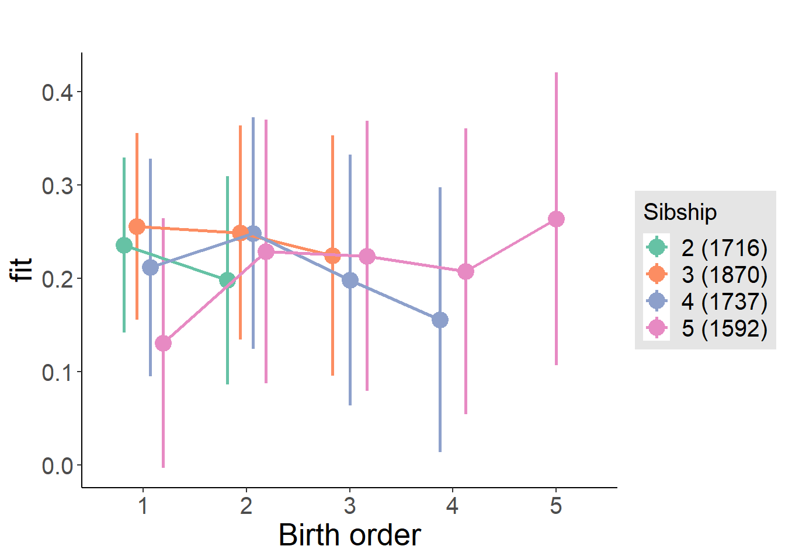
Model Comparison
###### Model 1 - Model 2
anova(m1_covariates_only, m2_birthorder_linear, m3_birthorder_nonlinear, m4_interaction)## refitting model(s) with ML (instead of REML)| Df | AIC | BIC | logLik | deviance | Chisq | Chi Df | Pr(>Chisq) |
|---|---|---|---|---|---|---|---|
| 8 | 18473 | 18527 | -9228 | 18457 | NA | NA | NA |
| 9 | 18474 | 18535 | -9228 | 18456 | 0.6899 | 1 | 0.4062 |
| 12 | 18478 | 18560 | -9227 | 18454 | 1.763 | 3 | 0.623 |
| 18 | 18485 | 18608 | -9224 | 18449 | 5.429 | 6 | 0.4901 |
Maternal birth order
outcome_uterus_m1 <- update(m2_birthorder_linear, data = birthorder %>%
mutate(sibling_count = sibling_count_uterus_alive_factor,
birth_order_nonlinear = birthorder_uterus_alive_factor,
birth_order = birthorder_uterus_alive,
count_birth_order = count_birthorder_uterus_alive) %>%
filter(sibling_count != "1"))
compare_models_markdown(outcome_uterus_m1)Basic Model
Model Summary
m1_covariates_only <- update(m2_birthorder_linear, formula = . ~ . - birth_order)
tidy(m1_covariates_only, conf.int = T)| term | estimate | std.error | statistic | conf.low | conf.high | group |
|---|---|---|---|---|---|---|
| (Intercept) | 0.6565 | 0.0503 | 13.05 | 0.5579 | 0.7551 | fixed |
| age | -0.008536 | 0.001862 | -4.584 | -0.01219 | -0.004887 | fixed |
| male | -0.04672 | 0.02503 | -1.867 | -0.09578 | 0.002337 | fixed |
| sibling_count3 | 0.003784 | 0.03725 | 0.1016 | -0.06923 | 0.07679 | fixed |
| sibling_count4 | -0.07551 | 0.04075 | -1.853 | -0.1554 | 0.004355 | fixed |
| sibling_count5 | -0.1476 | 0.04683 | -3.151 | -0.2393 | -0.05578 | fixed |
| sd_(Intercept).mother_pidlink | 0.5196 | NA | NA | NA | NA | mother_pidlink |
| sd_Observation.Residual | 0.7034 | NA | NA | NA | NA | Residual |
Coefficient Plot
plot(allEffects(m1_covariates_only))Add Birth Order Linear
Model Summary
tidy(m2_birthorder_linear, conf.int = T)| term | estimate | std.error | statistic | conf.low | conf.high | group |
|---|---|---|---|---|---|---|
| (Intercept) | 0.6251 | 0.05638 | 11.09 | 0.5146 | 0.7356 | fixed |
| birth_order | 0.01588 | 0.01289 | 1.232 | -0.00939 | 0.04115 | fixed |
| age | -0.008037 | 0.001905 | -4.219 | -0.01177 | -0.004304 | fixed |
| male | -0.04731 | 0.02504 | -1.89 | -0.09638 | 0.001757 | fixed |
| sibling_count3 | -0.003811 | 0.03775 | -0.101 | -0.0778 | 0.07018 | fixed |
| sibling_count4 | -0.09315 | 0.04319 | -2.157 | -0.1778 | -0.008504 | fixed |
| sibling_count5 | -0.1767 | 0.05247 | -3.368 | -0.2796 | -0.07389 | fixed |
| sd_(Intercept).mother_pidlink | 0.5191 | NA | NA | NA | NA | mother_pidlink |
| sd_Observation.Residual | 0.7036 | NA | NA | NA | NA | Residual |
Coefficient Plot
plot_birthorder2(m2_birthorder_linear, separate = FALSE)Add Birth Order Factor
Model Summary
m3_birthorder_nonlinear = update(m1_covariates_only, formula = . ~ . + birth_order_nonlinear)
tidy(m3_birthorder_nonlinear, conf.int = T)| term | estimate | std.error | statistic | conf.low | conf.high | group |
|---|---|---|---|---|---|---|
| (Intercept) | 0.6307 | 0.05231 | 12.06 | 0.5282 | 0.7332 | fixed |
| age | -0.008136 | 0.001908 | -4.264 | -0.01188 | -0.004396 | fixed |
| male | -0.04664 | 0.02504 | -1.862 | -0.09573 | 0.002444 | fixed |
| sibling_count3 | -0.002276 | 0.03819 | -0.0596 | -0.07713 | 0.07258 | fixed |
| sibling_count4 | -0.08659 | 0.0437 | -1.982 | -0.1722 | -0.0009442 | fixed |
| sibling_count5 | -0.1699 | 0.05318 | -3.194 | -0.2741 | -0.06565 | fixed |
| birth_order_nonlinear2 | 0.05318 | 0.02878 | 1.848 | -0.003225 | 0.1096 | fixed |
| birth_order_nonlinear3 | 0.02589 | 0.03687 | 0.7023 | -0.04637 | 0.09816 | fixed |
| birth_order_nonlinear4 | 0.03481 | 0.04987 | 0.698 | -0.06294 | 0.1326 | fixed |
| birth_order_nonlinear5 | 0.07979 | 0.07654 | 1.042 | -0.07023 | 0.2298 | fixed |
| sd_(Intercept).mother_pidlink | 0.5191 | NA | NA | NA | NA | mother_pidlink |
| sd_Observation.Residual | 0.7037 | NA | NA | NA | NA | Residual |
Coefficient Plot
plot_birthorder(m3_birthorder_nonlinear, separate = FALSE)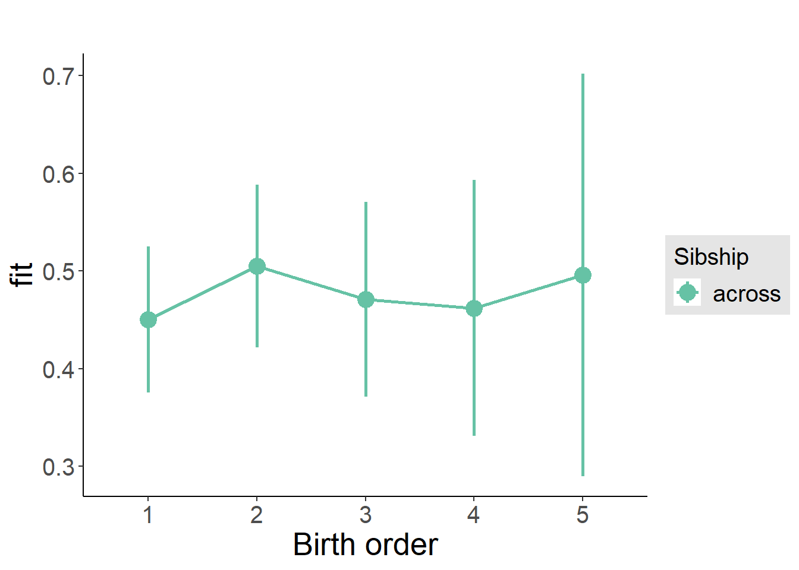
Add Interaction
Model Summary
m4_interaction = update(m3_birthorder_nonlinear, formula = . ~ . - birth_order_nonlinear - sibling_count + count_birth_order)
tidy(m4_interaction, conf.int = T)| term | estimate | std.error | statistic | conf.low | conf.high | group |
|---|---|---|---|---|---|---|
| (Intercept) | 0.6307 | 0.05382 | 11.72 | 0.5252 | 0.7362 | fixed |
| age | -0.008084 | 0.001909 | -4.233 | -0.01183 | -0.004341 | fixed |
| male | -0.04698 | 0.02507 | -1.874 | -0.09612 | 0.002161 | fixed |
| count_birth_order2/2 | 0.05026 | 0.05008 | 1.004 | -0.04789 | 0.1484 | fixed |
| count_birth_order1/3 | 0.001206 | 0.04672 | 0.02581 | -0.09036 | 0.09278 | fixed |
| count_birth_order2/3 | 0.0405 | 0.05041 | 0.8034 | -0.0583 | 0.1393 | fixed |
| count_birth_order3/3 | 0.02718 | 0.05611 | 0.4844 | -0.08279 | 0.1371 | fixed |
| count_birth_order1/4 | -0.1139 | 0.05701 | -1.998 | -0.2257 | -0.002189 | fixed |
| count_birth_order2/4 | -0.02659 | 0.05856 | -0.454 | -0.1414 | 0.08819 | fixed |
| count_birth_order3/4 | -0.06004 | 0.06114 | -0.9821 | -0.1799 | 0.05978 | fixed |
| count_birth_order4/4 | -0.02491 | 0.06373 | -0.3908 | -0.1498 | 0.1 | fixed |
| count_birth_order1/5 | -0.1374 | 0.07592 | -1.81 | -0.2862 | 0.01138 | fixed |
| count_birth_order2/5 | -0.09646 | 0.08161 | -1.182 | -0.2564 | 0.0635 | fixed |
| count_birth_order3/5 | -0.1564 | 0.07631 | -2.05 | -0.306 | -0.006871 | fixed |
| count_birth_order4/5 | -0.175 | 0.07376 | -2.373 | -0.3196 | -0.03048 | fixed |
| count_birth_order5/5 | -0.09238 | 0.0756 | -1.222 | -0.2406 | 0.05579 | fixed |
| sd_(Intercept).mother_pidlink | 0.5181 | NA | NA | NA | NA | mother_pidlink |
| sd_Observation.Residual | 0.7047 | NA | NA | NA | NA | Residual |
Coefficient Plot
plot_birthorder(m4_interaction)Model Comparison
###### Model 1 - Model 2
anova(m1_covariates_only, m2_birthorder_linear, m3_birthorder_nonlinear, m4_interaction)## refitting model(s) with ML (instead of REML)| Df | AIC | BIC | logLik | deviance | Chisq | Chi Df | Pr(>Chisq) |
|---|---|---|---|---|---|---|---|
| 8 | 11191 | 11242 | -5588 | 11175 | NA | NA | NA |
| 9 | 11192 | 11249 | -5587 | 11174 | 1.52 | 1 | 0.2177 |
| 12 | 11195 | 11272 | -5586 | 11171 | 2.434 | 3 | 0.4874 |
| 18 | 11206 | 11321 | -5585 | 11170 | 1.562 | 6 | 0.9553 |
Maternal pregnancy order
outcome_preg_m1 <- update(m2_birthorder_linear, data = birthorder %>%
mutate(sibling_count = sibling_count_uterus_preg_factor,
birth_order_nonlinear = birthorder_uterus_preg_factor,
birth_order = birthorder_uterus_preg,
count_birth_order = count_birthorder_uterus_preg
) %>%
filter(sibling_count != "1"))
compare_models_markdown(outcome_preg_m1)Basic Model
Model Summary
m1_covariates_only <- update(m2_birthorder_linear, formula = . ~ . - birth_order)
tidy(m1_covariates_only, conf.int = T)| term | estimate | std.error | statistic | conf.low | conf.high | group |
|---|---|---|---|---|---|---|
| (Intercept) | 0.6601 | 0.0526 | 12.55 | 0.5571 | 0.7632 | fixed |
| age | -0.009601 | 0.001938 | -4.954 | -0.0134 | -0.005803 | fixed |
| male | -0.04087 | 0.02594 | -1.576 | -0.09171 | 0.009969 | fixed |
| sibling_count3 | 0.01089 | 0.04003 | 0.272 | -0.06756 | 0.08934 | fixed |
| sibling_count4 | -0.04031 | 0.04279 | -0.942 | -0.1242 | 0.04356 | fixed |
| sibling_count5 | -0.07455 | 0.04606 | -1.619 | -0.1648 | 0.01573 | fixed |
| sd_(Intercept).mother_pidlink | 0.5164 | NA | NA | NA | NA | mother_pidlink |
| sd_Observation.Residual | 0.7027 | NA | NA | NA | NA | Residual |
Coefficient Plot
plot(allEffects(m1_covariates_only))Add Birth Order Linear
Model Summary
tidy(m2_birthorder_linear, conf.int = T)| term | estimate | std.error | statistic | conf.low | conf.high | group |
|---|---|---|---|---|---|---|
| (Intercept) | 0.6524 | 0.05867 | 11.12 | 0.5374 | 0.7674 | fixed |
| birth_order | 0.003861 | 0.01296 | 0.2979 | -0.02154 | 0.02927 | fixed |
| age | -0.009474 | 0.001984 | -4.775 | -0.01336 | -0.005586 | fixed |
| male | -0.04098 | 0.02594 | -1.579 | -0.09183 | 0.009874 | fixed |
| sibling_count3 | 0.009039 | 0.04051 | 0.2231 | -0.07036 | 0.08843 | fixed |
| sibling_count4 | -0.04444 | 0.045 | -0.9877 | -0.1326 | 0.04375 | fixed |
| sibling_count5 | -0.08108 | 0.05101 | -1.589 | -0.1811 | 0.0189 | fixed |
| sd_(Intercept).mother_pidlink | 0.5163 | NA | NA | NA | NA | mother_pidlink |
| sd_Observation.Residual | 0.7029 | NA | NA | NA | NA | Residual |
Coefficient Plot
plot_birthorder2(m2_birthorder_linear, separate = FALSE)Add Birth Order Factor
Model Summary
m3_birthorder_nonlinear = update(m1_covariates_only, formula = . ~ . + birth_order_nonlinear)
tidy(m3_birthorder_nonlinear, conf.int = T)| term | estimate | std.error | statistic | conf.low | conf.high | group |
|---|---|---|---|---|---|---|
| (Intercept) | 0.6414 | 0.05467 | 11.73 | 0.5343 | 0.7486 | fixed |
| age | -0.009606 | 0.001987 | -4.835 | -0.0135 | -0.005712 | fixed |
| male | -0.03997 | 0.02594 | -1.541 | -0.09081 | 0.01088 | fixed |
| sibling_count3 | 0.01145 | 0.04095 | 0.2797 | -0.06881 | 0.09172 | fixed |
| sibling_count4 | -0.03485 | 0.04549 | -0.7662 | -0.124 | 0.0543 | fixed |
| sibling_count5 | -0.07379 | 0.05141 | -1.435 | -0.1746 | 0.02696 | fixed |
| birth_order_nonlinear2 | 0.05634 | 0.03003 | 1.876 | -0.002525 | 0.1152 | fixed |
| birth_order_nonlinear3 | -0.00262 | 0.0381 | -0.06877 | -0.0773 | 0.07206 | fixed |
| birth_order_nonlinear4 | -0.0111 | 0.05073 | -0.2188 | -0.1105 | 0.08834 | fixed |
| birth_order_nonlinear5 | 0.05298 | 0.07354 | 0.7205 | -0.09115 | 0.1971 | fixed |
| sd_(Intercept).mother_pidlink | 0.5163 | NA | NA | NA | NA | mother_pidlink |
| sd_Observation.Residual | 0.7026 | NA | NA | NA | NA | Residual |
Coefficient Plot
plot_birthorder(m3_birthorder_nonlinear, separate = FALSE)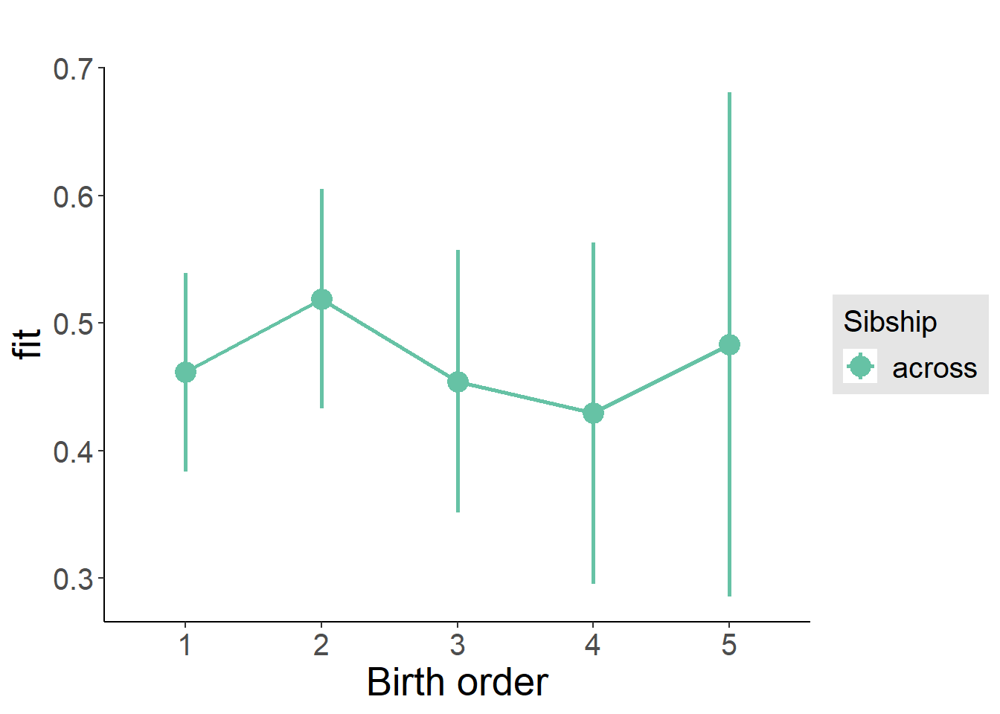
Add Interaction
Model Summary
m4_interaction = update(m3_birthorder_nonlinear, formula = . ~ . - birth_order_nonlinear - sibling_count + count_birth_order)
tidy(m4_interaction, conf.int = T)| term | estimate | std.error | statistic | conf.low | conf.high | group |
|---|---|---|---|---|---|---|
| (Intercept) | 0.6329 | 0.05645 | 11.21 | 0.5222 | 0.7435 | fixed |
| age | -0.009628 | 0.001988 | -4.843 | -0.01352 | -0.005732 | fixed |
| male | -0.04132 | 0.02596 | -1.592 | -0.0922 | 0.00955 | fixed |
| count_birth_order2/2 | 0.08602 | 0.05481 | 1.569 | -0.0214 | 0.1934 | fixed |
| count_birth_order1/3 | 0.04577 | 0.05043 | 0.9076 | -0.05307 | 0.1446 | fixed |
| count_birth_order2/3 | 0.02851 | 0.05404 | 0.5276 | -0.0774 | 0.1344 | fixed |
| count_birth_order3/3 | 0.04066 | 0.0605 | 0.6721 | -0.07791 | 0.1592 | fixed |
| count_birth_order1/4 | -0.08206 | 0.05959 | -1.377 | -0.1989 | 0.03475 | fixed |
| count_birth_order2/4 | 0.08427 | 0.06051 | 1.392 | -0.03434 | 0.2029 | fixed |
| count_birth_order3/4 | -0.02724 | 0.06527 | -0.4174 | -0.1552 | 0.1007 | fixed |
| count_birth_order4/4 | -0.01995 | 0.06745 | -0.2958 | -0.1521 | 0.1122 | fixed |
| count_birth_order1/5 | -0.0111 | 0.06978 | -0.1591 | -0.1479 | 0.1257 | fixed |
| count_birth_order2/5 | -0.01853 | 0.07483 | -0.2476 | -0.1652 | 0.1281 | fixed |
| count_birth_order3/5 | -0.1023 | 0.07225 | -1.415 | -0.2439 | 0.03935 | fixed |
| count_birth_order4/5 | -0.09498 | 0.07481 | -1.27 | -0.2416 | 0.05164 | fixed |
| count_birth_order5/5 | -0.01281 | 0.0746 | -0.1718 | -0.159 | 0.1334 | fixed |
| sd_(Intercept).mother_pidlink | 0.516 | NA | NA | NA | NA | mother_pidlink |
| sd_Observation.Residual | 0.7027 | NA | NA | NA | NA | Residual |
Coefficient Plot
plot_birthorder(m4_interaction)Model Comparison
###### Model 1 - Model 2
anova(m1_covariates_only, m2_birthorder_linear, m3_birthorder_nonlinear, m4_interaction)## refitting model(s) with ML (instead of REML)| Df | AIC | BIC | logLik | deviance | Chisq | Chi Df | Pr(>Chisq) |
|---|---|---|---|---|---|---|---|
| 8 | 10378 | 10429 | -5181 | 10362 | NA | NA | NA |
| 9 | 10380 | 10437 | -5181 | 10362 | 0.08921 | 1 | 0.7652 |
| 12 | 10381 | 10457 | -5178 | 10357 | 4.921 | 3 | 0.1777 |
| 18 | 10386 | 10500 | -5175 | 10350 | 7.192 | 6 | 0.3034 |
Parental full sibling order
outcome_parental_m1 <- update(m2_birthorder_linear, data = birthorder %>%
mutate(sibling_count = sibling_count_genes_factor,
birth_order_nonlinear = birthorder_genes_factor,
birth_order = birthorder_genes,
count_birth_order = count_birthorder_genes
) %>%
filter(sibling_count != "1"))
compare_models_markdown(outcome_parental_m1)Basic Model
Model Summary
m1_covariates_only <- update(m2_birthorder_linear, formula = . ~ . - birth_order)
tidy(m1_covariates_only, conf.int = T)| term | estimate | std.error | statistic | conf.low | conf.high | group |
|---|---|---|---|---|---|---|
| (Intercept) | 0.6572 | 0.04979 | 13.2 | 0.5596 | 0.7548 | fixed |
| age | -0.00922 | 0.001851 | -4.98 | -0.01285 | -0.005591 | fixed |
| male | -0.04736 | 0.02498 | -1.896 | -0.09633 | 0.001603 | fixed |
| sibling_count3 | 0.01968 | 0.03658 | 0.5381 | -0.05201 | 0.09137 | fixed |
| sibling_count4 | -0.05808 | 0.04021 | -1.444 | -0.1369 | 0.02073 | fixed |
| sibling_count5 | -0.1221 | 0.04782 | -2.554 | -0.2158 | -0.02839 | fixed |
| sd_(Intercept).mother_pidlink | 0.514 | NA | NA | NA | NA | mother_pidlink |
| sd_Observation.Residual | 0.7025 | NA | NA | NA | NA | Residual |
Coefficient Plot
plot(allEffects(m1_covariates_only))Add Birth Order Linear
Model Summary
tidy(m2_birthorder_linear, conf.int = T)| term | estimate | std.error | statistic | conf.low | conf.high | group |
|---|---|---|---|---|---|---|
| (Intercept) | 0.6206 | 0.05601 | 11.08 | 0.5108 | 0.7304 | fixed |
| birth_order | 0.01849 | 0.013 | 1.422 | -0.006989 | 0.04397 | fixed |
| age | -0.008651 | 0.001893 | -4.569 | -0.01236 | -0.004939 | fixed |
| male | -0.04787 | 0.02499 | -1.916 | -0.09684 | 0.0011 | fixed |
| sibling_count3 | 0.01078 | 0.0371 | 0.2907 | -0.06193 | 0.0835 | fixed |
| sibling_count4 | -0.07856 | 0.0427 | -1.84 | -0.1623 | 0.005131 | fixed |
| sibling_count5 | -0.1546 | 0.05297 | -2.918 | -0.2584 | -0.05074 | fixed |
| sd_(Intercept).mother_pidlink | 0.5135 | NA | NA | NA | NA | mother_pidlink |
| sd_Observation.Residual | 0.7027 | NA | NA | NA | NA | Residual |
Coefficient Plot
plot_birthorder2(m2_birthorder_linear, separate = FALSE)
Add Birth Order Factor
Model Summary
m3_birthorder_nonlinear = update(m1_covariates_only, formula = . ~ . + birth_order_nonlinear)
tidy(m3_birthorder_nonlinear, conf.int = T)| term | estimate | std.error | statistic | conf.low | conf.high | group |
|---|---|---|---|---|---|---|
| (Intercept) | 0.6288 | 0.05182 | 12.13 | 0.5272 | 0.7303 | fixed |
| age | -0.008744 | 0.001897 | -4.61 | -0.01246 | -0.005027 | fixed |
| male | -0.04778 | 0.02499 | -1.912 | -0.09676 | 0.001199 | fixed |
| sibling_count3 | 0.01359 | 0.03756 | 0.3619 | -0.06002 | 0.0872 | fixed |
| sibling_count4 | -0.07534 | 0.04322 | -1.743 | -0.1601 | 0.009368 | fixed |
| sibling_count5 | -0.1443 | 0.05385 | -2.681 | -0.2499 | -0.03881 | fixed |
| birth_order_nonlinear2 | 0.05578 | 0.02852 | 1.956 | -0.0001229 | 0.1117 | fixed |
| birth_order_nonlinear3 | 0.02854 | 0.03662 | 0.7795 | -0.04323 | 0.1003 | fixed |
| birth_order_nonlinear4 | 0.06332 | 0.05061 | 1.251 | -0.03587 | 0.1625 | fixed |
| birth_order_nonlinear5 | 0.05344 | 0.08182 | 0.6532 | -0.1069 | 0.2138 | fixed |
| sd_(Intercept).mother_pidlink | 0.5137 | NA | NA | NA | NA | mother_pidlink |
| sd_Observation.Residual | 0.7027 | NA | NA | NA | NA | Residual |
Coefficient Plot
plot_birthorder(m3_birthorder_nonlinear, separate = FALSE)
Add Interaction
Model Summary
m4_interaction = update(m3_birthorder_nonlinear, formula = . ~ . - birth_order_nonlinear - sibling_count + count_birth_order)
tidy(m4_interaction, conf.int = T)| term | estimate | std.error | statistic | conf.low | conf.high | group |
|---|---|---|---|---|---|---|
| (Intercept) | 0.6282 | 0.05335 | 11.78 | 0.5236 | 0.7327 | fixed |
| age | -0.008726 | 0.001898 | -4.597 | -0.01245 | -0.005005 | fixed |
| male | -0.04809 | 0.02502 | -1.922 | -0.09712 | 0.0009379 | fixed |
| count_birth_order2/2 | 0.05695 | 0.04849 | 1.174 | -0.0381 | 0.152 | fixed |
| count_birth_order1/3 | 0.01695 | 0.04594 | 0.369 | -0.07309 | 0.107 | fixed |
| count_birth_order2/3 | 0.06356 | 0.05011 | 1.269 | -0.03465 | 0.1618 | fixed |
| count_birth_order3/3 | 0.045 | 0.0549 | 0.8197 | -0.0626 | 0.1526 | fixed |
| count_birth_order1/4 | -0.09493 | 0.05691 | -1.668 | -0.2065 | 0.01661 | fixed |
| count_birth_order2/4 | -0.01678 | 0.05823 | -0.2882 | -0.1309 | 0.09735 | fixed |
| count_birth_order3/4 | -0.03926 | 0.0603 | -0.651 | -0.1575 | 0.07894 | fixed |
| count_birth_order4/4 | 0.007063 | 0.06354 | 0.1112 | -0.1175 | 0.1316 | fixed |
| count_birth_order1/5 | -0.1132 | 0.07557 | -1.498 | -0.2613 | 0.03494 | fixed |
| count_birth_order2/5 | -0.07343 | 0.08374 | -0.8769 | -0.2376 | 0.0907 | fixed |
| count_birth_order3/5 | -0.1346 | 0.07946 | -1.694 | -0.2904 | 0.02111 | fixed |
| count_birth_order4/5 | -0.1096 | 0.07687 | -1.426 | -0.2603 | 0.04105 | fixed |
| count_birth_order5/5 | -0.09137 | 0.0805 | -1.135 | -0.2492 | 0.0664 | fixed |
| sd_(Intercept).mother_pidlink | 0.5129 | NA | NA | NA | NA | mother_pidlink |
| sd_Observation.Residual | 0.7037 | NA | NA | NA | NA | Residual |
Coefficient Plot
plot_birthorder(m4_interaction)
Model Comparison
###### Model 1 - Model 2
anova(m1_covariates_only, m2_birthorder_linear, m3_birthorder_nonlinear, m4_interaction)## refitting model(s) with ML (instead of REML)| Df | AIC | BIC | logLik | deviance | Chisq | Chi Df | Pr(>Chisq) |
|---|---|---|---|---|---|---|---|
| 8 | 11123 | 11175 | -5554 | 11107 | NA | NA | NA |
| 9 | 11123 | 11181 | -5553 | 11105 | 2.026 | 1 | 0.1546 |
| 12 | 11127 | 11204 | -5551 | 11103 | 2.409 | 3 | 0.492 |
| 18 | 11138 | 11253 | -5551 | 11102 | 0.9418 | 6 | 0.9877 |
Compare birth order specifications
library(coefplot)
multiplot(outcome_naive_m1, outcome_preg_m1, outcome_uterus_m1, outcome_parental_m1, dodgeHeight = 0.6,
intercept = FALSE)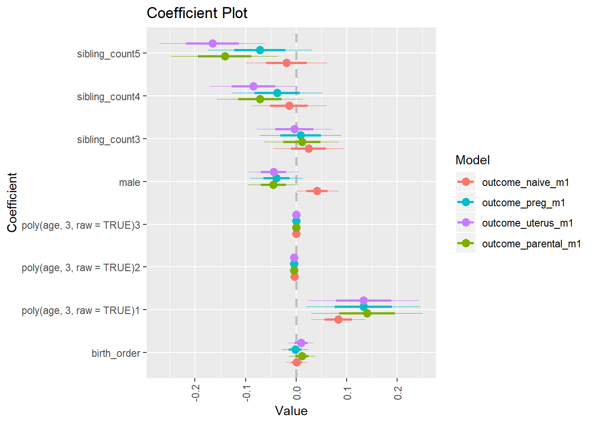
g-factor 2015 young
birthorder <- birthorder %>% mutate(outcome = g_factor_2015_young)
model = lmer(outcome ~ birth_order + age + male + sibling_count + (1 | mother_pidlink),
data = birthorder)
compare_birthorder_specs(model)Naive birth order
outcome_naive_m1 <- update(m2_birthorder_linear, data = birthorder %>%
mutate(sibling_count = sibling_count_naive_factor,
birth_order_nonlinear = birthorder_naive_factor,
birth_order = birthorder_naive,
count_birth_order = count_birthorder_naive) %>%
filter(sibling_count != "1"))
compare_models_markdown(outcome_naive_m1)Basic Model
Model Summary
m1_covariates_only <- update(m2_birthorder_linear, formula = . ~ . - birth_order)
tidy(m1_covariates_only, conf.int = T)| term | estimate | std.error | statistic | conf.low | conf.high | group |
|---|---|---|---|---|---|---|
| (Intercept) | -0.6743 | 0.03354 | -20.11 | -0.74 | -0.6085 | fixed |
| age | 0.05378 | 0.001965 | 27.37 | 0.04993 | 0.05763 | fixed |
| male | -0.06531 | 0.02036 | -3.208 | -0.1052 | -0.0254 | fixed |
| sibling_count3 | -0.01059 | 0.02933 | -0.3611 | -0.06808 | 0.04689 | fixed |
| sibling_count4 | -0.08759 | 0.03302 | -2.653 | -0.1523 | -0.02288 | fixed |
| sibling_count5 | -0.07532 | 0.03747 | -2.01 | -0.1488 | -0.001878 | fixed |
| sd_(Intercept).mother_pidlink | 0.5335 | NA | NA | NA | NA | mother_pidlink |
| sd_Observation.Residual | 0.7925 | NA | NA | NA | NA | Residual |
Coefficient Plot
plot(allEffects(m1_covariates_only))Add Birth Order Linear
Model Summary
tidy(m2_birthorder_linear, conf.int = T)| term | estimate | std.error | statistic | conf.low | conf.high | group |
|---|---|---|---|---|---|---|
| (Intercept) | -0.636 | 0.04012 | -15.85 | -0.7147 | -0.5574 | fixed |
| birth_order | -0.01943 | 0.01119 | -1.736 | -0.04137 | 0.002508 | fixed |
| age | 0.05276 | 0.00205 | 25.74 | 0.04874 | 0.05678 | fixed |
| male | -0.06509 | 0.02036 | -3.198 | -0.105 | -0.02519 | fixed |
| sibling_count3 | 0.0004365 | 0.03001 | 0.01455 | -0.05838 | 0.05925 | fixed |
| sibling_count4 | -0.0612 | 0.03635 | -1.684 | -0.1324 | 0.01005 | fixed |
| sibling_count5 | -0.03246 | 0.04487 | -0.7234 | -0.1204 | 0.05549 | fixed |
| sd_(Intercept).mother_pidlink | 0.5336 | NA | NA | NA | NA | mother_pidlink |
| sd_Observation.Residual | 0.7923 | NA | NA | NA | NA | Residual |
Coefficient Plot
plot_birthorder2(m2_birthorder_linear, separate = FALSE)Add Birth Order Factor
Model Summary
m3_birthorder_nonlinear = update(m1_covariates_only, formula = . ~ . + birth_order_nonlinear)
tidy(m3_birthorder_nonlinear, conf.int = T)| term | estimate | std.error | statistic | conf.low | conf.high | group |
|---|---|---|---|---|---|---|
| (Intercept) | -0.6526 | 0.03586 | -18.2 | -0.7229 | -0.5824 | fixed |
| age | 0.05277 | 0.002051 | 25.73 | 0.04875 | 0.05679 | fixed |
| male | -0.06488 | 0.02036 | -3.187 | -0.1048 | -0.02498 | fixed |
| sibling_count3 | -0.003976 | 0.03049 | -0.1304 | -0.06373 | 0.05578 | fixed |
| sibling_count4 | -0.05938 | 0.03706 | -1.603 | -0.132 | 0.01324 | fixed |
| sibling_count5 | -0.03624 | 0.04553 | -0.796 | -0.1255 | 0.053 | fixed |
| birth_order_nonlinear2 | -0.02846 | 0.02367 | -1.202 | -0.07486 | 0.01793 | fixed |
| birth_order_nonlinear3 | -0.01955 | 0.03118 | -0.627 | -0.08066 | 0.04156 | fixed |
| birth_order_nonlinear4 | -0.09307 | 0.04231 | -2.2 | -0.176 | -0.01015 | fixed |
| birth_order_nonlinear5 | -0.05222 | 0.06155 | -0.8485 | -0.1729 | 0.06841 | fixed |
| sd_(Intercept).mother_pidlink | 0.5335 | NA | NA | NA | NA | mother_pidlink |
| sd_Observation.Residual | 0.7924 | NA | NA | NA | NA | Residual |
Coefficient Plot
plot_birthorder(m3_birthorder_nonlinear, separate = FALSE)
Add Interaction
Model Summary
m4_interaction = update(m3_birthorder_nonlinear, formula = . ~ . - birth_order_nonlinear - sibling_count + count_birth_order)
tidy(m4_interaction, conf.int = T)| term | estimate | std.error | statistic | conf.low | conf.high | group |
|---|---|---|---|---|---|---|
| (Intercept) | -0.6441 | 0.03695 | -17.43 | -0.7165 | -0.5717 | fixed |
| age | 0.05274 | 0.002052 | 25.7 | 0.04872 | 0.05676 | fixed |
| male | -0.06486 | 0.02036 | -3.185 | -0.1048 | -0.02495 | fixed |
| count_birth_order2/2 | -0.05356 | 0.0371 | -1.443 | -0.1263 | 0.01916 | fixed |
| count_birth_order1/3 | -0.01687 | 0.03827 | -0.4407 | -0.09187 | 0.05814 | fixed |
| count_birth_order2/3 | -0.03661 | 0.03895 | -0.9398 | -0.113 | 0.03974 | fixed |
| count_birth_order3/3 | -0.03001 | 0.04405 | -0.6812 | -0.1163 | 0.05633 | fixed |
| count_birth_order1/4 | -0.08595 | 0.05246 | -1.638 | -0.1888 | 0.01687 | fixed |
| count_birth_order2/4 | -0.06426 | 0.04972 | -1.292 | -0.1617 | 0.03319 | fixed |
| count_birth_order3/4 | -0.1288 | 0.04675 | -2.754 | -0.2204 | -0.03713 | fixed |
| count_birth_order4/4 | -0.1249 | 0.05097 | -2.45 | -0.2248 | -0.02499 | fixed |
| count_birth_order1/5 | -0.05155 | 0.07121 | -0.7239 | -0.1911 | 0.08803 | fixed |
| count_birth_order2/5 | -0.09716 | 0.06764 | -1.436 | -0.2297 | 0.03541 | fixed |
| count_birth_order3/5 | 0.01554 | 0.06115 | 0.2541 | -0.1043 | 0.1354 | fixed |
| count_birth_order4/5 | -0.1841 | 0.05743 | -3.207 | -0.2967 | -0.07159 | fixed |
| count_birth_order5/5 | -0.09632 | 0.05694 | -1.691 | -0.2079 | 0.01529 | fixed |
| sd_(Intercept).mother_pidlink | 0.5341 | NA | NA | NA | NA | mother_pidlink |
| sd_Observation.Residual | 0.792 | NA | NA | NA | NA | Residual |
Coefficient Plot
plot_birthorder(m4_interaction)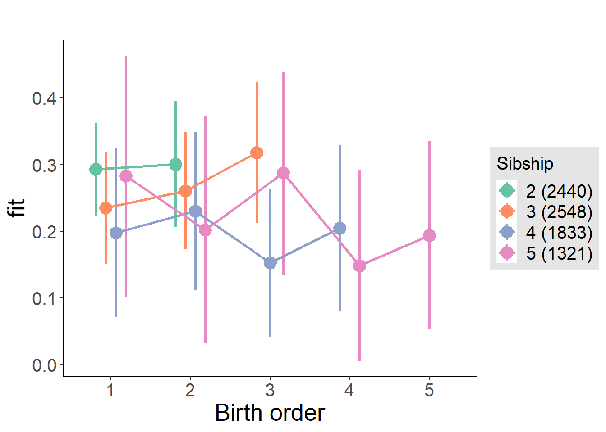
Model Comparison
###### Model 1 - Model 2
anova(m1_covariates_only, m2_birthorder_linear, m3_birthorder_nonlinear, m4_interaction)## refitting model(s) with ML (instead of REML)| Df | AIC | BIC | logLik | deviance | Chisq | Chi Df | Pr(>Chisq) |
|---|---|---|---|---|---|---|---|
| 8 | 22045 | 22101 | -11014 | 22029 | NA | NA | NA |
| 9 | 22044 | 22107 | -11013 | 22026 | 3.015 | 1 | 0.08252 |
| 12 | 22048 | 22132 | -11012 | 22024 | 2.357 | 3 | 0.5018 |
| 18 | 22053 | 22179 | -11008 | 22017 | 6.778 | 6 | 0.3419 |
Maternal birth order
outcome_uterus_m1 <- update(m2_birthorder_linear, data = birthorder %>%
mutate(sibling_count = sibling_count_uterus_alive_factor,
birth_order_nonlinear = birthorder_uterus_alive_factor,
birth_order = birthorder_uterus_alive,
count_birth_order = count_birthorder_uterus_alive) %>%
filter(sibling_count != "1"))
compare_models_markdown(outcome_uterus_m1)Basic Model
Model Summary
m1_covariates_only <- update(m2_birthorder_linear, formula = . ~ . - birth_order)
tidy(m1_covariates_only, conf.int = T)| term | estimate | std.error | statistic | conf.low | conf.high | group |
|---|---|---|---|---|---|---|
| (Intercept) | -0.7207 | 0.03353 | -21.49 | -0.7864 | -0.6549 | fixed |
| age | 0.05876 | 0.002043 | 28.76 | 0.05476 | 0.06277 | fixed |
| male | -0.07654 | 0.02125 | -3.602 | -0.1182 | -0.03489 | fixed |
| sibling_count3 | -0.01302 | 0.02844 | -0.4577 | -0.06877 | 0.04273 | fixed |
| sibling_count4 | -0.08284 | 0.03496 | -2.37 | -0.1514 | -0.01433 | fixed |
| sibling_count5 | -0.2234 | 0.04489 | -4.976 | -0.3114 | -0.1354 | fixed |
| sd_(Intercept).mother_pidlink | 0.5183 | NA | NA | NA | NA | mother_pidlink |
| sd_Observation.Residual | 0.7998 | NA | NA | NA | NA | Residual |
Coefficient Plot
plot(allEffects(m1_covariates_only))Add Birth Order Linear
Model Summary
tidy(m2_birthorder_linear, conf.int = T)| term | estimate | std.error | statistic | conf.low | conf.high | group |
|---|---|---|---|---|---|---|
| (Intercept) | -0.6518 | 0.04168 | -15.64 | -0.7335 | -0.5701 | fixed |
| birth_order | -0.03609 | 0.01297 | -2.782 | -0.06152 | -0.01066 | fixed |
| age | 0.05715 | 0.002123 | 26.92 | 0.05299 | 0.06131 | fixed |
| male | -0.07594 | 0.02124 | -3.575 | -0.1176 | -0.03431 | fixed |
| sibling_count3 | 0.01058 | 0.02968 | 0.3565 | -0.04759 | 0.06875 | fixed |
| sibling_count4 | -0.02975 | 0.03982 | -0.7471 | -0.1078 | 0.0483 | fixed |
| sibling_count5 | -0.1349 | 0.05503 | -2.451 | -0.2427 | -0.027 | fixed |
| sd_(Intercept).mother_pidlink | 0.5187 | NA | NA | NA | NA | mother_pidlink |
| sd_Observation.Residual | 0.7991 | NA | NA | NA | NA | Residual |
Coefficient Plot
plot_birthorder2(m2_birthorder_linear, separate = FALSE)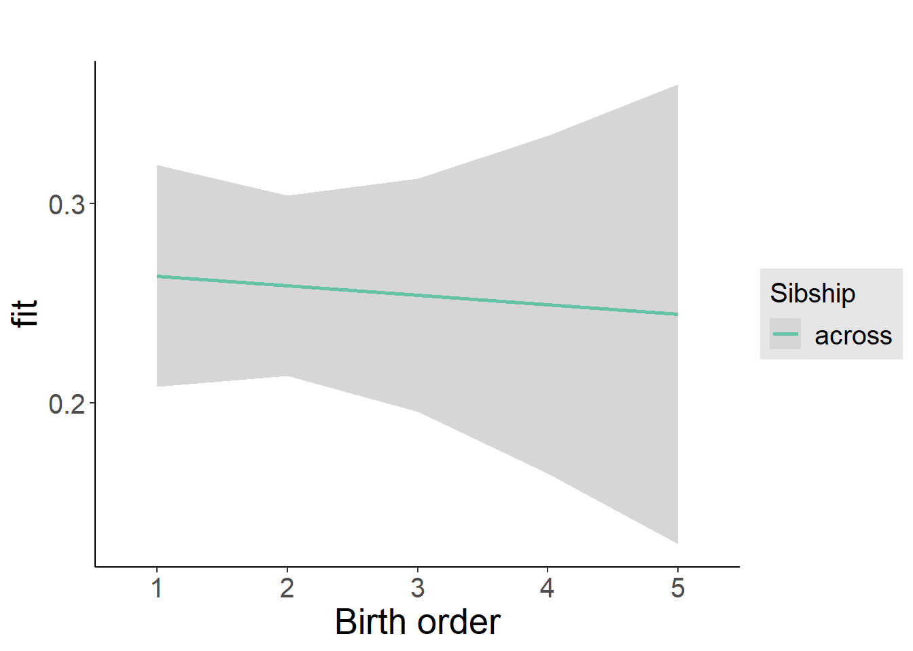
Add Birth Order Factor
Model Summary
m3_birthorder_nonlinear = update(m1_covariates_only, formula = . ~ . + birth_order_nonlinear)
tidy(m3_birthorder_nonlinear, conf.int = T)| term | estimate | std.error | statistic | conf.low | conf.high | group |
|---|---|---|---|---|---|---|
| (Intercept) | -0.688 | 0.03633 | -18.94 | -0.7592 | -0.6168 | fixed |
| age | 0.05717 | 0.002124 | 26.92 | 0.05301 | 0.06134 | fixed |
| male | -0.07615 | 0.02125 | -3.584 | -0.1178 | -0.03451 | fixed |
| sibling_count3 | 0.007843 | 0.0304 | 0.258 | -0.05173 | 0.06742 | fixed |
| sibling_count4 | -0.03515 | 0.0408 | -0.8615 | -0.1151 | 0.04482 | fixed |
| sibling_count5 | -0.1251 | 0.05782 | -2.163 | -0.2384 | -0.01177 | fixed |
| birth_order_nonlinear2 | -0.03599 | 0.02407 | -1.495 | -0.08317 | 0.01118 | fixed |
| birth_order_nonlinear3 | -0.06281 | 0.03428 | -1.832 | -0.13 | 0.004379 | fixed |
| birth_order_nonlinear4 | -0.09922 | 0.04891 | -2.029 | -0.1951 | -0.003355 | fixed |
| birth_order_nonlinear5 | -0.186 | 0.07731 | -2.406 | -0.3375 | -0.03448 | fixed |
| sd_(Intercept).mother_pidlink | 0.5184 | NA | NA | NA | NA | mother_pidlink |
| sd_Observation.Residual | 0.7995 | NA | NA | NA | NA | Residual |
Coefficient Plot
plot_birthorder(m3_birthorder_nonlinear, separate = FALSE)Add Interaction
Model Summary
m4_interaction = update(m3_birthorder_nonlinear, formula = . ~ . - birth_order_nonlinear - sibling_count + count_birth_order)
tidy(m4_interaction, conf.int = T)| term | estimate | std.error | statistic | conf.low | conf.high | group |
|---|---|---|---|---|---|---|
| (Intercept) | -0.688 | 0.03711 | -18.54 | -0.7607 | -0.6153 | fixed |
| age | 0.05714 | 0.002125 | 26.89 | 0.05297 | 0.0613 | fixed |
| male | -0.07507 | 0.02125 | -3.532 | -0.1167 | -0.03342 | fixed |
| count_birth_order2/2 | -0.03627 | 0.03346 | -1.084 | -0.1019 | 0.02932 | fixed |
| count_birth_order1/3 | 0.008919 | 0.03958 | 0.2253 | -0.06866 | 0.0865 | fixed |
| count_birth_order2/3 | -0.03345 | 0.03805 | -0.879 | -0.108 | 0.04113 | fixed |
| count_birth_order3/3 | -0.04975 | 0.04163 | -1.195 | -0.1313 | 0.03184 | fixed |
| count_birth_order1/4 | -0.04319 | 0.06241 | -0.692 | -0.1655 | 0.07913 | fixed |
| count_birth_order2/4 | -0.0823 | 0.05478 | -1.502 | -0.1897 | 0.02507 | fixed |
| count_birth_order3/4 | -0.1365 | 0.05225 | -2.612 | -0.2389 | -0.03407 | fixed |
| count_birth_order4/4 | -0.08717 | 0.05175 | -1.684 | -0.1886 | 0.01426 | fixed |
| count_birth_order1/5 | -0.1205 | 0.1086 | -1.11 | -0.3333 | 0.09226 | fixed |
| count_birth_order2/5 | -0.07303 | 0.09676 | -0.7548 | -0.2627 | 0.1166 | fixed |
| count_birth_order3/5 | -0.1053 | 0.08194 | -1.285 | -0.2659 | 0.05527 | fixed |
| count_birth_order4/5 | -0.3082 | 0.06781 | -4.545 | -0.4411 | -0.1753 | fixed |
| count_birth_order5/5 | -0.313 | 0.06582 | -4.755 | -0.442 | -0.184 | fixed |
| sd_(Intercept).mother_pidlink | 0.5183 | NA | NA | NA | NA | mother_pidlink |
| sd_Observation.Residual | 0.7995 | NA | NA | NA | NA | Residual |
Coefficient Plot
plot_birthorder(m4_interaction)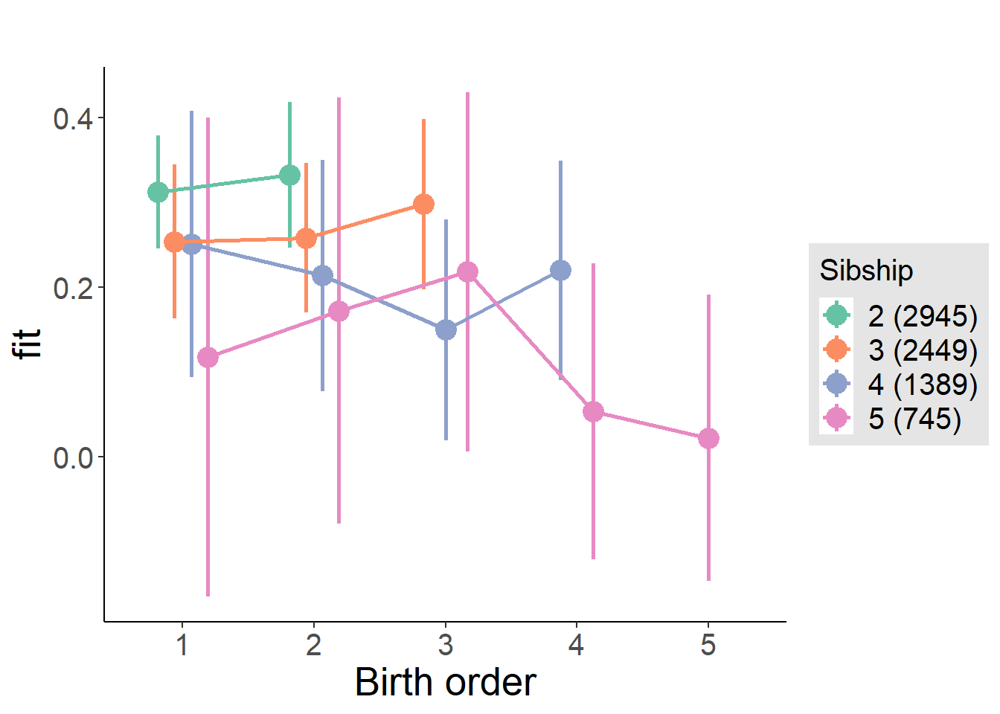
Model Comparison
###### Model 1 - Model 2
anova(m1_covariates_only, m2_birthorder_linear, m3_birthorder_nonlinear, m4_interaction)## refitting model(s) with ML (instead of REML)| Df | AIC | BIC | logLik | deviance | Chisq | Chi Df | Pr(>Chisq) |
|---|---|---|---|---|---|---|---|
| 8 | 20389 | 20444 | -10186 | 20373 | NA | NA | NA |
| 9 | 20383 | 20446 | -10183 | 20365 | 7.738 | 1 | 0.005406 |
| 12 | 20389 | 20472 | -10182 | 20365 | 0.5668 | 3 | 0.904 |
| 18 | 20394 | 20519 | -10179 | 20358 | 6.251 | 6 | 0.3957 |
Maternal pregnancy order
outcome_preg_m1 <- update(m2_birthorder_linear, data = birthorder %>%
mutate(sibling_count = sibling_count_uterus_preg_factor,
birth_order_nonlinear = birthorder_uterus_preg_factor,
birth_order = birthorder_uterus_preg,
count_birth_order = count_birthorder_uterus_preg
) %>%
filter(sibling_count != "1"))
compare_models_markdown(outcome_preg_m1)Basic Model
Model Summary
m1_covariates_only <- update(m2_birthorder_linear, formula = . ~ . - birth_order)
tidy(m1_covariates_only, conf.int = T)| term | estimate | std.error | statistic | conf.low | conf.high | group |
|---|---|---|---|---|---|---|
| (Intercept) | -0.7279 | 0.03501 | -20.79 | -0.7966 | -0.6593 | fixed |
| age | 0.05819 | 0.002099 | 27.72 | 0.05407 | 0.0623 | fixed |
| male | -0.0779 | 0.02174 | -3.583 | -0.1205 | -0.03529 | fixed |
| sibling_count3 | 0.00309 | 0.02977 | 0.1038 | -0.05525 | 0.06143 | fixed |
| sibling_count4 | -0.04895 | 0.03506 | -1.396 | -0.1177 | 0.01977 | fixed |
| sibling_count5 | -0.08638 | 0.04116 | -2.099 | -0.167 | -0.005716 | fixed |
| sd_(Intercept).mother_pidlink | 0.521 | NA | NA | NA | NA | mother_pidlink |
| sd_Observation.Residual | 0.7971 | NA | NA | NA | NA | Residual |
Coefficient Plot
plot(allEffects(m1_covariates_only))
Add Birth Order Linear
Model Summary
tidy(m2_birthorder_linear, conf.int = T)| term | estimate | std.error | statistic | conf.low | conf.high | group |
|---|---|---|---|---|---|---|
| (Intercept) | -0.6527 | 0.04246 | -15.37 | -0.736 | -0.5695 | fixed |
| birth_order | -0.03935 | 0.01259 | -3.126 | -0.06403 | -0.01468 | fixed |
| age | 0.05642 | 0.002173 | 25.97 | 0.05216 | 0.06068 | fixed |
| male | -0.07707 | 0.02173 | -3.547 | -0.1197 | -0.03448 | fixed |
| sibling_count3 | 0.02736 | 0.03075 | 0.8897 | -0.03291 | 0.08763 | fixed |
| sibling_count4 | 0.006146 | 0.03923 | 0.1567 | -0.07074 | 0.08303 | fixed |
| sibling_count5 | 0.0007466 | 0.0497 | 0.01502 | -0.09666 | 0.09815 | fixed |
| sd_(Intercept).mother_pidlink | 0.521 | NA | NA | NA | NA | mother_pidlink |
| sd_Observation.Residual | 0.7964 | NA | NA | NA | NA | Residual |
Coefficient Plot
plot_birthorder2(m2_birthorder_linear, separate = FALSE)Add Birth Order Factor
Model Summary
m3_birthorder_nonlinear = update(m1_covariates_only, formula = . ~ . + birth_order_nonlinear)
tidy(m3_birthorder_nonlinear, conf.int = T)| term | estimate | std.error | statistic | conf.low | conf.high | group |
|---|---|---|---|---|---|---|
| (Intercept) | -0.6914 | 0.03771 | -18.33 | -0.7653 | -0.6175 | fixed |
| age | 0.05649 | 0.002174 | 25.99 | 0.05223 | 0.06075 | fixed |
| male | -0.0774 | 0.02173 | -3.561 | -0.12 | -0.0348 | fixed |
| sibling_count3 | 0.01967 | 0.03145 | 0.6253 | -0.04198 | 0.08131 | fixed |
| sibling_count4 | -0.001027 | 0.04019 | -0.02555 | -0.07979 | 0.07774 | fixed |
| sibling_count5 | 0.00818 | 0.05106 | 0.1602 | -0.09189 | 0.1082 | fixed |
| birth_order_nonlinear2 | -0.04302 | 0.02498 | -1.723 | -0.09198 | 0.005929 | fixed |
| birth_order_nonlinear3 | -0.05166 | 0.03423 | -1.509 | -0.1187 | 0.01543 | fixed |
| birth_order_nonlinear4 | -0.121 | 0.04753 | -2.546 | -0.2142 | -0.02784 | fixed |
| birth_order_nonlinear5 | -0.2019 | 0.07104 | -2.842 | -0.3411 | -0.06268 | fixed |
| sd_(Intercept).mother_pidlink | 0.5208 | NA | NA | NA | NA | mother_pidlink |
| sd_Observation.Residual | 0.7966 | NA | NA | NA | NA | Residual |
Coefficient Plot
plot_birthorder(m3_birthorder_nonlinear, separate = FALSE)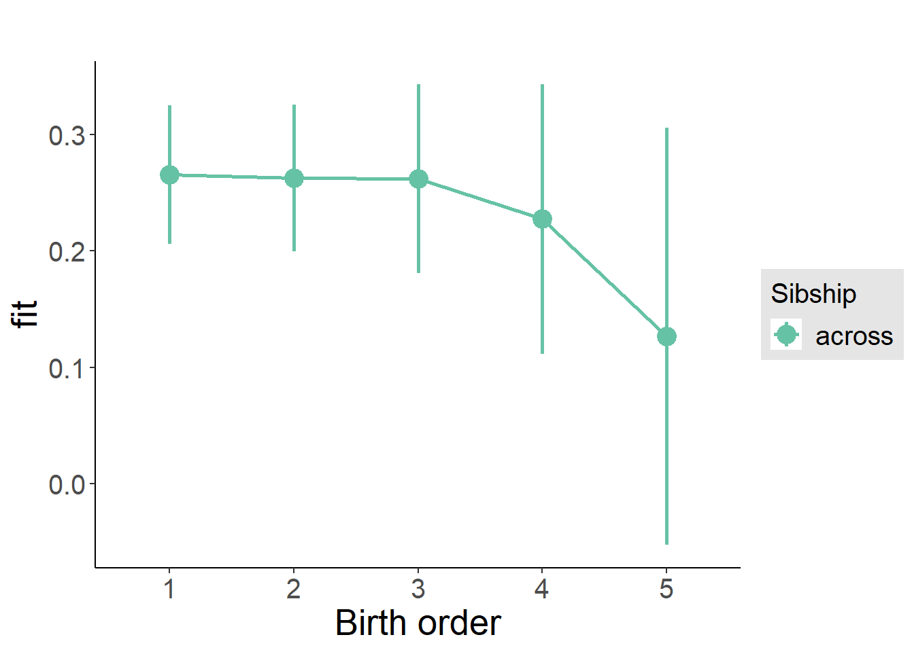
Add Interaction
Model Summary
m4_interaction = update(m3_birthorder_nonlinear, formula = . ~ . - birth_order_nonlinear - sibling_count + count_birth_order)
tidy(m4_interaction, conf.int = T)| term | estimate | std.error | statistic | conf.low | conf.high | group |
|---|---|---|---|---|---|---|
| (Intercept) | -0.6857 | 0.03886 | -17.64 | -0.7619 | -0.6096 | fixed |
| age | 0.05648 | 0.002174 | 25.98 | 0.05222 | 0.06074 | fixed |
| male | -0.07631 | 0.02173 | -3.511 | -0.1189 | -0.03371 | fixed |
| count_birth_order2/2 | -0.06011 | 0.03645 | -1.649 | -0.1316 | 0.01134 | fixed |
| count_birth_order1/3 | 0.01302 | 0.0409 | 0.3183 | -0.06714 | 0.09318 | fixed |
| count_birth_order2/3 | -0.02272 | 0.03995 | -0.5686 | -0.101 | 0.05559 | fixed |
| count_birth_order3/3 | -0.04656 | 0.04377 | -1.064 | -0.1323 | 0.03923 | fixed |
| count_birth_order1/4 | -0.08103 | 0.0609 | -1.331 | -0.2004 | 0.03833 | fixed |
| count_birth_order2/4 | -0.05257 | 0.05466 | -0.9619 | -0.1597 | 0.05456 | fixed |
| count_birth_order3/4 | -0.07388 | 0.05226 | -1.414 | -0.1763 | 0.02854 | fixed |
| count_birth_order4/4 | -0.06432 | 0.05286 | -1.217 | -0.1679 | 0.03928 | fixed |
| count_birth_order1/5 | 0.09293 | 0.08846 | 1.051 | -0.08045 | 0.2663 | fixed |
| count_birth_order2/5 | -0.0177 | 0.07919 | -0.2235 | -0.1729 | 0.1375 | fixed |
| count_birth_order3/5 | 0.01051 | 0.07109 | 0.1478 | -0.1288 | 0.1498 | fixed |
| count_birth_order4/5 | -0.2206 | 0.06541 | -3.373 | -0.3488 | -0.09241 | fixed |
| count_birth_order5/5 | -0.203 | 0.06306 | -3.219 | -0.3266 | -0.07941 | fixed |
| sd_(Intercept).mother_pidlink | 0.5216 | NA | NA | NA | NA | mother_pidlink |
| sd_Observation.Residual | 0.7959 | NA | NA | NA | NA | Residual |
Coefficient Plot
plot_birthorder(m4_interaction)Model Comparison
###### Model 1 - Model 2
anova(m1_covariates_only, m2_birthorder_linear, m3_birthorder_nonlinear, m4_interaction)## refitting model(s) with ML (instead of REML)| Df | AIC | BIC | logLik | deviance | Chisq | Chi Df | Pr(>Chisq) |
|---|---|---|---|---|---|---|---|
| 8 | 19413 | 19468 | -9699 | 19397 | NA | NA | NA |
| 9 | 19405 | 19467 | -9694 | 19387 | 9.771 | 1 | 0.001773 |
| 12 | 19410 | 19492 | -9693 | 19386 | 1.615 | 3 | 0.6559 |
| 18 | 19412 | 19536 | -9688 | 19376 | 9.781 | 6 | 0.1342 |
Parental full sibling order
outcome_parental_m1 <- update(m2_birthorder_linear, data = birthorder %>%
mutate(sibling_count = sibling_count_genes_factor,
birth_order_nonlinear = birthorder_genes_factor,
birth_order = birthorder_genes,
count_birth_order = count_birthorder_genes
) %>%
filter(sibling_count != "1"))
compare_models_markdown(outcome_parental_m1)Basic Model
Model Summary
m1_covariates_only <- update(m2_birthorder_linear, formula = . ~ . - birth_order)
tidy(m1_covariates_only, conf.int = T)| term | estimate | std.error | statistic | conf.low | conf.high | group |
|---|---|---|---|---|---|---|
| (Intercept) | -0.7127 | 0.03362 | -21.2 | -0.7786 | -0.6469 | fixed |
| age | 0.05821 | 0.002044 | 28.47 | 0.0542 | 0.06222 | fixed |
| male | -0.08146 | 0.02136 | -3.813 | -0.1233 | -0.03959 | fixed |
| sibling_count3 | -0.01227 | 0.02851 | -0.4305 | -0.06814 | 0.0436 | fixed |
| sibling_count4 | -0.075 | 0.03533 | -2.123 | -0.1442 | -0.005757 | fixed |
| sibling_count5 | -0.216 | 0.04677 | -4.618 | -0.3077 | -0.1243 | fixed |
| sd_(Intercept).mother_pidlink | 0.5197 | NA | NA | NA | NA | mother_pidlink |
| sd_Observation.Residual | 0.7955 | NA | NA | NA | NA | Residual |
Coefficient Plot
plot(allEffects(m1_covariates_only))Add Birth Order Linear
Model Summary
tidy(m2_birthorder_linear, conf.int = T)| term | estimate | std.error | statistic | conf.low | conf.high | group |
|---|---|---|---|---|---|---|
| (Intercept) | -0.6459 | 0.04182 | -15.45 | -0.7279 | -0.564 | fixed |
| birth_order | -0.03519 | 0.01311 | -2.685 | -0.06087 | -0.0095 | fixed |
| age | 0.05669 | 0.002121 | 26.73 | 0.05253 | 0.06084 | fixed |
| male | -0.08094 | 0.02135 | -3.791 | -0.1228 | -0.03909 | fixed |
| sibling_count3 | 0.01057 | 0.02975 | 0.3552 | -0.04774 | 0.06887 | fixed |
| sibling_count4 | -0.02357 | 0.04018 | -0.5865 | -0.1023 | 0.05519 | fixed |
| sibling_count5 | -0.1313 | 0.05642 | -2.328 | -0.2419 | -0.02074 | fixed |
| sd_(Intercept).mother_pidlink | 0.5202 | NA | NA | NA | NA | mother_pidlink |
| sd_Observation.Residual | 0.7948 | NA | NA | NA | NA | Residual |
Coefficient Plot
plot_birthorder2(m2_birthorder_linear, separate = FALSE)Add Birth Order Factor
Model Summary
m3_birthorder_nonlinear = update(m1_covariates_only, formula = . ~ . + birth_order_nonlinear)
tidy(m3_birthorder_nonlinear, conf.int = T)| term | estimate | std.error | statistic | conf.low | conf.high | group |
|---|---|---|---|---|---|---|
| (Intercept) | -0.6797 | 0.0364 | -18.68 | -0.7511 | -0.6084 | fixed |
| age | 0.05667 | 0.002122 | 26.71 | 0.05251 | 0.06083 | fixed |
| male | -0.08088 | 0.02136 | -3.787 | -0.1227 | -0.03902 | fixed |
| sibling_count3 | 0.01259 | 0.03045 | 0.4134 | -0.04709 | 0.07227 | fixed |
| sibling_count4 | -0.03196 | 0.04118 | -0.7762 | -0.1127 | 0.04875 | fixed |
| sibling_count5 | -0.1258 | 0.05961 | -2.11 | -0.2426 | -0.008924 | fixed |
| birth_order_nonlinear2 | -0.03853 | 0.024 | -1.605 | -0.08558 | 0.008516 | fixed |
| birth_order_nonlinear3 | -0.07711 | 0.0344 | -2.242 | -0.1445 | -0.009688 | fixed |
| birth_order_nonlinear4 | -0.07313 | 0.04973 | -1.471 | -0.1706 | 0.02434 | fixed |
| birth_order_nonlinear5 | -0.1844 | 0.0814 | -2.265 | -0.3439 | -0.02482 | fixed |
| sd_(Intercept).mother_pidlink | 0.5198 | NA | NA | NA | NA | mother_pidlink |
| sd_Observation.Residual | 0.7951 | NA | NA | NA | NA | Residual |
Coefficient Plot
plot_birthorder(m3_birthorder_nonlinear, separate = FALSE)Add Interaction
Model Summary
m4_interaction = update(m3_birthorder_nonlinear, formula = . ~ . - birth_order_nonlinear - sibling_count + count_birth_order)
tidy(m4_interaction, conf.int = T)| term | estimate | std.error | statistic | conf.low | conf.high | group |
|---|---|---|---|---|---|---|
| (Intercept) | -0.6804 | 0.03711 | -18.33 | -0.7532 | -0.6077 | fixed |
| age | 0.05665 | 0.002123 | 26.68 | 0.05249 | 0.06081 | fixed |
| male | -0.07994 | 0.02137 | -3.742 | -0.1218 | -0.03807 | fixed |
| count_birth_order2/2 | -0.03704 | 0.03307 | -1.12 | -0.1018 | 0.02777 | fixed |
| count_birth_order1/3 | 0.01728 | 0.0397 | 0.4353 | -0.06053 | 0.0951 | fixed |
| count_birth_order2/3 | -0.02947 | 0.03812 | -0.773 | -0.1042 | 0.04525 | fixed |
| count_birth_order3/3 | -0.06366 | 0.04176 | -1.525 | -0.1455 | 0.01818 | fixed |
| count_birth_order1/4 | -0.0513 | 0.06272 | -0.8179 | -0.1742 | 0.07163 | fixed |
| count_birth_order2/4 | -0.08091 | 0.05543 | -1.46 | -0.1895 | 0.02773 | fixed |
| count_birth_order3/4 | -0.1371 | 0.05258 | -2.608 | -0.2402 | -0.03405 | fixed |
| count_birth_order4/4 | -0.05841 | 0.05242 | -1.114 | -0.1611 | 0.04432 | fixed |
| count_birth_order1/5 | -0.09535 | 0.1083 | -0.8802 | -0.3077 | 0.117 | fixed |
| count_birth_order2/5 | -0.09012 | 0.1036 | -0.8697 | -0.2932 | 0.113 | fixed |
| count_birth_order3/5 | -0.1198 | 0.08402 | -1.426 | -0.2845 | 0.04485 | fixed |
| count_birth_order4/5 | -0.2862 | 0.07124 | -4.018 | -0.4259 | -0.1466 | fixed |
| count_birth_order5/5 | -0.3119 | 0.06965 | -4.479 | -0.4485 | -0.1754 | fixed |
| sd_(Intercept).mother_pidlink | 0.5193 | NA | NA | NA | NA | mother_pidlink |
| sd_Observation.Residual | 0.7954 | NA | NA | NA | NA | Residual |
Coefficient Plot
plot_birthorder(m4_interaction)
Model Comparison
###### Model 1 - Model 2
anova(m1_covariates_only, m2_birthorder_linear, m3_birthorder_nonlinear, m4_interaction)## refitting model(s) with ML (instead of REML)| Df | AIC | BIC | logLik | deviance | Chisq | Chi Df | Pr(>Chisq) |
|---|---|---|---|---|---|---|---|
| 8 | 19959 | 20014 | -9972 | 19943 | NA | NA | NA |
| 9 | 19954 | 20016 | -9968 | 19936 | 7.207 | 1 | 0.007262 |
| 12 | 19959 | 20042 | -9967 | 19935 | 1.259 | 3 | 0.7388 |
| 18 | 19965 | 20090 | -9965 | 19929 | 5.463 | 6 | 0.486 |
Compare birth order specifications
library(coefplot)
multiplot(outcome_naive_m1, outcome_preg_m1, outcome_uterus_m1, outcome_parental_m1, dodgeHeight = 0.6,
intercept = FALSE)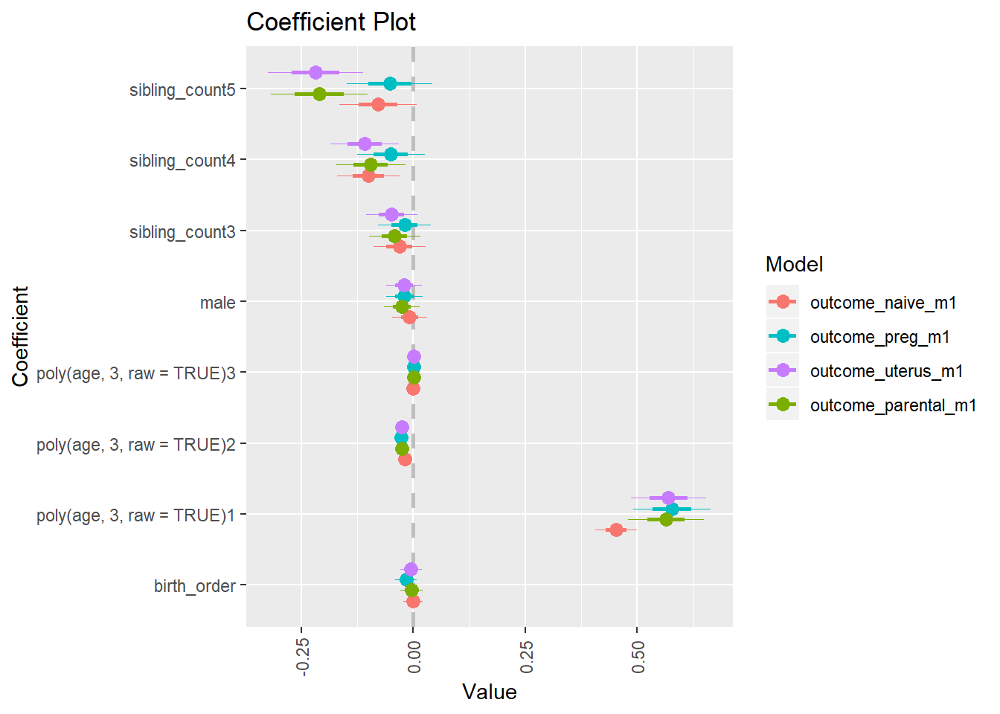
g-factor 2007 old
birthorder <- birthorder %>% mutate(outcome = g_factor_2007_old)
model = lmer(outcome ~ birth_order + age + male + sibling_count + (1 | mother_pidlink),
data = birthorder)
compare_birthorder_specs(model)Naive birth order
outcome_naive_m1 <- update(m2_birthorder_linear, data = birthorder %>%
mutate(sibling_count = sibling_count_naive_factor,
birth_order_nonlinear = birthorder_naive_factor,
birth_order = birthorder_naive,
count_birth_order = count_birthorder_naive) %>%
filter(sibling_count != "1"))
compare_models_markdown(outcome_naive_m1)Basic Model
Model Summary
m1_covariates_only <- update(m2_birthorder_linear, formula = . ~ . - birth_order)
tidy(m1_covariates_only, conf.int = T)| term | estimate | std.error | statistic | conf.low | conf.high | group |
|---|---|---|---|---|---|---|
| (Intercept) | 1.138 | 0.1092 | 10.42 | 0.9241 | 1.352 | fixed |
| age | -0.03329 | 0.003433 | -9.699 | -0.04002 | -0.02656 | fixed |
| male | 0.02798 | 0.03213 | 0.871 | -0.03499 | 0.09095 | fixed |
| sibling_count3 | 0.006254 | 0.05674 | 0.1102 | -0.105 | 0.1175 | fixed |
| sibling_count4 | -0.1347 | 0.05558 | -2.423 | -0.2436 | -0.02576 | fixed |
| sibling_count5 | -0.04373 | 0.05657 | -0.773 | -0.1546 | 0.06715 | fixed |
| sd_(Intercept).mother_pidlink | 0.5932 | NA | NA | NA | NA | mother_pidlink |
| sd_Observation.Residual | 0.7674 | NA | NA | NA | NA | Residual |
Coefficient Plot
plot(allEffects(m1_covariates_only))Add Birth Order Linear
Model Summary
tidy(m2_birthorder_linear, conf.int = T)| term | estimate | std.error | statistic | conf.low | conf.high | group |
|---|---|---|---|---|---|---|
| (Intercept) | 1.178 | 0.1135 | 10.38 | 0.9556 | 1.4 | fixed |
| birth_order | -0.01909 | 0.01469 | -1.299 | -0.04788 | 0.009704 | fixed |
| age | -0.03372 | 0.003448 | -9.778 | -0.04048 | -0.02696 | fixed |
| male | 0.02799 | 0.03212 | 0.8715 | -0.03496 | 0.09094 | fixed |
| sibling_count3 | 0.01474 | 0.05713 | 0.258 | -0.09724 | 0.1267 | fixed |
| sibling_count4 | -0.1174 | 0.05717 | -2.054 | -0.2295 | -0.005352 | fixed |
| sibling_count5 | -0.01588 | 0.06051 | -0.2625 | -0.1345 | 0.1027 | fixed |
| sd_(Intercept).mother_pidlink | 0.5942 | NA | NA | NA | NA | mother_pidlink |
| sd_Observation.Residual | 0.7667 | NA | NA | NA | NA | Residual |
Coefficient Plot
plot_birthorder2(m2_birthorder_linear, separate = FALSE)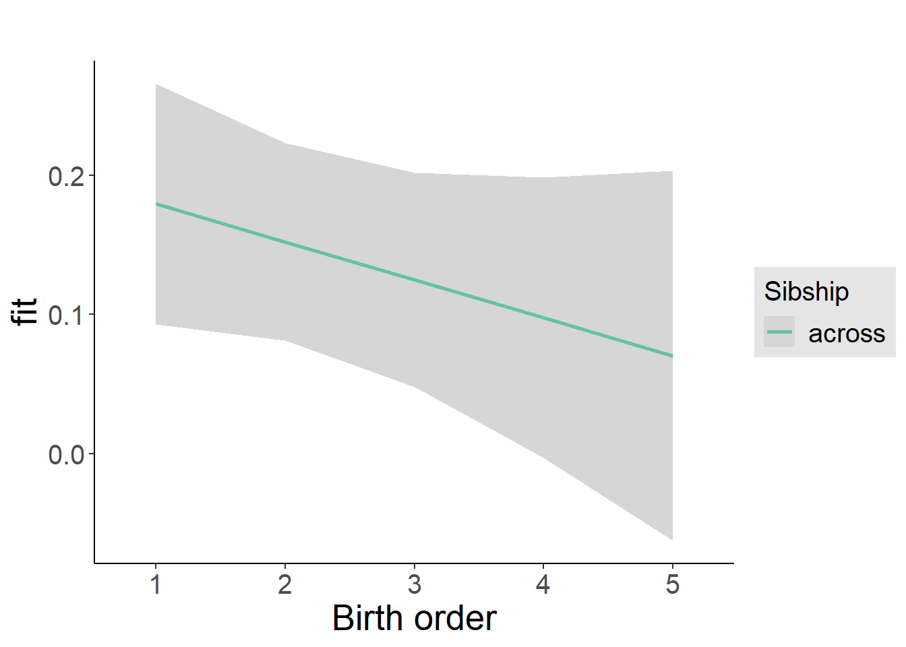
Add Birth Order Factor
Model Summary
m3_birthorder_nonlinear = update(m1_covariates_only, formula = . ~ . + birth_order_nonlinear)
tidy(m3_birthorder_nonlinear, conf.int = T)| term | estimate | std.error | statistic | conf.low | conf.high | group |
|---|---|---|---|---|---|---|
| (Intercept) | 1.164 | 0.1111 | 10.48 | 0.9463 | 1.382 | fixed |
| age | -0.03312 | 0.003456 | -9.583 | -0.03989 | -0.02635 | fixed |
| male | 0.02918 | 0.03212 | 0.9083 | -0.03378 | 0.09214 | fixed |
| sibling_count3 | 0.02789 | 0.05803 | 0.4807 | -0.08584 | 0.1416 | fixed |
| sibling_count4 | -0.1112 | 0.05791 | -1.92 | -0.2247 | 0.002338 | fixed |
| sibling_count5 | -0.02811 | 0.06096 | -0.4611 | -0.1476 | 0.09137 | fixed |
| birth_order_nonlinear2 | -0.07074 | 0.0388 | -1.823 | -0.1468 | 0.005306 | fixed |
| birth_order_nonlinear3 | -0.1073 | 0.04477 | -2.397 | -0.195 | -0.01955 | fixed |
| birth_order_nonlinear4 | -0.06329 | 0.05569 | -1.136 | -0.1725 | 0.04587 | fixed |
| birth_order_nonlinear5 | 0.005515 | 0.07925 | 0.06958 | -0.1498 | 0.1609 | fixed |
| sd_(Intercept).mother_pidlink | 0.592 | NA | NA | NA | NA | mother_pidlink |
| sd_Observation.Residual | 0.7676 | NA | NA | NA | NA | Residual |
Coefficient Plot
plot_birthorder(m3_birthorder_nonlinear, separate = FALSE)Add Interaction
Model Summary
m4_interaction = update(m3_birthorder_nonlinear, formula = . ~ . - birth_order_nonlinear - sibling_count + count_birth_order)
tidy(m4_interaction, conf.int = T)| term | estimate | std.error | statistic | conf.low | conf.high | group |
|---|---|---|---|---|---|---|
| (Intercept) | 1.18 | 0.114 | 10.35 | 0.9569 | 1.404 | fixed |
| age | -0.03295 | 0.003465 | -9.509 | -0.03974 | -0.02615 | fixed |
| male | 0.02702 | 0.03216 | 0.8402 | -0.03601 | 0.09004 | fixed |
| count_birth_order2/2 | -0.1169 | 0.07385 | -1.583 | -0.2616 | 0.02785 | fixed |
| count_birth_order1/3 | -0.01319 | 0.0756 | -0.1744 | -0.1614 | 0.135 | fixed |
| count_birth_order2/3 | -0.01744 | 0.08046 | -0.2168 | -0.1751 | 0.1403 | fixed |
| count_birth_order3/3 | -0.1156 | 0.08081 | -1.431 | -0.274 | 0.04275 | fixed |
| count_birth_order1/4 | -0.1304 | 0.0778 | -1.676 | -0.2829 | 0.02209 | fixed |
| count_birth_order2/4 | -0.1681 | 0.08085 | -2.08 | -0.3266 | -0.009678 | fixed |
| count_birth_order3/4 | -0.3028 | 0.08307 | -3.645 | -0.4656 | -0.14 | fixed |
| count_birth_order4/4 | -0.1742 | 0.08395 | -2.075 | -0.3387 | -0.009648 | fixed |
| count_birth_order1/5 | -0.04748 | 0.08507 | -0.5581 | -0.2142 | 0.1193 | fixed |
| count_birth_order2/5 | -0.1895 | 0.08646 | -2.191 | -0.3589 | -0.02001 | fixed |
| count_birth_order3/5 | -0.06492 | 0.08514 | -0.7625 | -0.2318 | 0.102 | fixed |
| count_birth_order4/5 | -0.1381 | 0.08712 | -1.585 | -0.3089 | 0.03265 | fixed |
| count_birth_order5/5 | -0.04002 | 0.089 | -0.4497 | -0.2145 | 0.1344 | fixed |
| sd_(Intercept).mother_pidlink | 0.5912 | NA | NA | NA | NA | mother_pidlink |
| sd_Observation.Residual | 0.7679 | NA | NA | NA | NA | Residual |
Coefficient Plot
plot_birthorder(m4_interaction)Model Comparison
###### Model 1 - Model 2
anova(m1_covariates_only, m2_birthorder_linear, m3_birthorder_nonlinear, m4_interaction)## refitting model(s) with ML (instead of REML)| Df | AIC | BIC | logLik | deviance | Chisq | Chi Df | Pr(>Chisq) |
|---|---|---|---|---|---|---|---|
| 8 | 8906 | 8955 | -4445 | 8890 | NA | NA | NA |
| 9 | 8906 | 8961 | -4444 | 8888 | 1.686 | 1 | 0.1942 |
| 12 | 8906 | 8980 | -4441 | 8882 | 5.793 | 3 | 0.1221 |
| 18 | 8912 | 9021 | -4438 | 8876 | 6.642 | 6 | 0.3552 |
Maternal birth order
outcome_uterus_m1 <- update(m2_birthorder_linear, data = birthorder %>%
mutate(sibling_count = sibling_count_uterus_alive_factor,
birth_order_nonlinear = birthorder_uterus_alive_factor,
birth_order = birthorder_uterus_alive,
count_birth_order = count_birthorder_uterus_alive) %>%
filter(sibling_count != "1"))
compare_models_markdown(outcome_uterus_m1)Basic Model
Model Summary
m1_covariates_only <- update(m2_birthorder_linear, formula = . ~ . - birth_order)
tidy(m1_covariates_only, conf.int = T)| term | estimate | std.error | statistic | conf.low | conf.high | group |
|---|---|---|---|---|---|---|
| (Intercept) | 0.8054 | 0.1141 | 7.057 | 0.5817 | 1.029 | fixed |
| age | -0.01354 | 0.003893 | -3.478 | -0.02117 | -0.00591 | fixed |
| male | -0.0551 | 0.03404 | -1.619 | -0.1218 | 0.01162 | fixed |
| sibling_count3 | 0.01387 | 0.05429 | 0.2554 | -0.09255 | 0.1203 | fixed |
| sibling_count4 | -0.09684 | 0.05634 | -1.719 | -0.2073 | 0.01358 | fixed |
| sibling_count5 | -0.1762 | 0.06169 | -2.855 | -0.2971 | -0.05524 | fixed |
| sd_(Intercept).mother_pidlink | 0.5456 | NA | NA | NA | NA | mother_pidlink |
| sd_Observation.Residual | 0.7211 | NA | NA | NA | NA | Residual |
Coefficient Plot
plot(allEffects(m1_covariates_only))Add Birth Order Linear
Model Summary
tidy(m2_birthorder_linear, conf.int = T)| term | estimate | std.error | statistic | conf.low | conf.high | group |
|---|---|---|---|---|---|---|
| (Intercept) | 0.744 | 0.1237 | 6.015 | 0.5016 | 0.9865 | fixed |
| birth_order | 0.02237 | 0.0174 | 1.285 | -0.01174 | 0.05647 | fixed |
| age | -0.01239 | 0.003994 | -3.101 | -0.02022 | -0.004559 | fixed |
| male | -0.05536 | 0.03404 | -1.627 | -0.1221 | 0.01135 | fixed |
| sibling_count3 | 0.004414 | 0.05479 | 0.08057 | -0.103 | 0.1118 | fixed |
| sibling_count4 | -0.1212 | 0.05943 | -2.039 | -0.2376 | -0.004681 | fixed |
| sibling_count5 | -0.2164 | 0.06917 | -3.128 | -0.352 | -0.0808 | fixed |
| sd_(Intercept).mother_pidlink | 0.5459 | NA | NA | NA | NA | mother_pidlink |
| sd_Observation.Residual | 0.7208 | NA | NA | NA | NA | Residual |
Coefficient Plot
plot_birthorder2(m2_birthorder_linear, separate = FALSE)Add Birth Order Factor
Model Summary
m3_birthorder_nonlinear = update(m1_covariates_only, formula = . ~ . + birth_order_nonlinear)
tidy(m3_birthorder_nonlinear, conf.int = T)| term | estimate | std.error | statistic | conf.low | conf.high | group |
|---|---|---|---|---|---|---|
| (Intercept) | 0.7785 | 0.1187 | 6.561 | 0.5459 | 1.011 | fixed |
| age | -0.01225 | 0.003999 | -3.063 | -0.02009 | -0.004412 | fixed |
| male | -0.05576 | 0.03404 | -1.638 | -0.1225 | 0.01096 | fixed |
| sibling_count3 | 0.004031 | 0.05532 | 0.07286 | -0.1044 | 0.1125 | fixed |
| sibling_count4 | -0.1314 | 0.06016 | -2.184 | -0.2493 | -0.01348 | fixed |
| sibling_count5 | -0.2236 | 0.06993 | -3.198 | -0.3607 | -0.08656 | fixed |
| birth_order_nonlinear2 | -0.02173 | 0.03962 | -0.5485 | -0.09938 | 0.05592 | fixed |
| birth_order_nonlinear3 | 0.03577 | 0.04909 | 0.7287 | -0.06044 | 0.132 | fixed |
| birth_order_nonlinear4 | 0.1065 | 0.06588 | 1.616 | -0.02267 | 0.2356 | fixed |
| birth_order_nonlinear5 | 0.05002 | 0.09855 | 0.5075 | -0.1431 | 0.2432 | fixed |
| sd_(Intercept).mother_pidlink | 0.5469 | NA | NA | NA | NA | mother_pidlink |
| sd_Observation.Residual | 0.7204 | NA | NA | NA | NA | Residual |
Coefficient Plot
plot_birthorder(m3_birthorder_nonlinear, separate = FALSE)Add Interaction
Model Summary
m4_interaction = update(m3_birthorder_nonlinear, formula = . ~ . - birth_order_nonlinear - sibling_count + count_birth_order)
tidy(m4_interaction, conf.int = T)| term | estimate | std.error | statistic | conf.low | conf.high | group |
|---|---|---|---|---|---|---|
| (Intercept) | 0.8076 | 0.1204 | 6.71 | 0.5717 | 1.044 | fixed |
| age | -0.01217 | 0.003997 | -3.045 | -0.02 | -0.004336 | fixed |
| male | -0.05768 | 0.03407 | -1.693 | -0.1245 | 0.0091 | fixed |
| count_birth_order2/2 | -0.1073 | 0.07057 | -1.52 | -0.2456 | 0.03106 | fixed |
| count_birth_order1/3 | -0.05025 | 0.06745 | -0.745 | -0.1825 | 0.08195 | fixed |
| count_birth_order2/3 | -0.005568 | 0.07355 | -0.07571 | -0.1497 | 0.1386 | fixed |
| count_birth_order3/3 | 0.00157 | 0.08131 | 0.0193 | -0.1578 | 0.1609 | fixed |
| count_birth_order1/4 | -0.1703 | 0.07858 | -2.167 | -0.3243 | -0.0163 | fixed |
| count_birth_order2/4 | -0.1525 | 0.07989 | -1.909 | -0.3091 | 0.004075 | fixed |
| count_birth_order3/4 | -0.2119 | 0.08075 | -2.624 | -0.3701 | -0.0536 | fixed |
| count_birth_order4/4 | 0.01977 | 0.08774 | 0.2253 | -0.1522 | 0.1917 | fixed |
| count_birth_order1/5 | -0.2653 | 0.101 | -2.627 | -0.4632 | -0.06739 | fixed |
| count_birth_order2/5 | -0.3408 | 0.1042 | -3.272 | -0.5449 | -0.1366 | fixed |
| count_birth_order3/5 | -0.06444 | 0.09487 | -0.6793 | -0.2504 | 0.1215 | fixed |
| count_birth_order4/5 | -0.2361 | 0.09439 | -2.501 | -0.4211 | -0.05111 | fixed |
| count_birth_order5/5 | -0.2021 | 0.09877 | -2.046 | -0.3957 | -0.008522 | fixed |
| sd_(Intercept).mother_pidlink | 0.5493 | NA | NA | NA | NA | mother_pidlink |
| sd_Observation.Residual | 0.7178 | NA | NA | NA | NA | Residual |
Coefficient Plot
plot_birthorder(m4_interaction)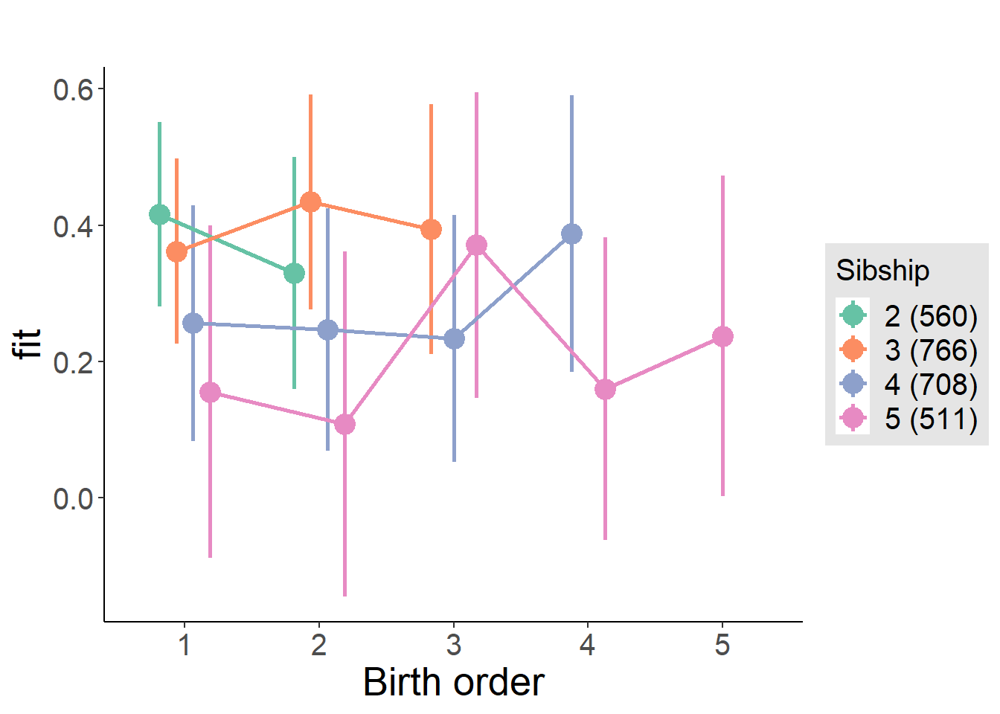
Model Comparison
###### Model 1 - Model 2
anova(m1_covariates_only, m2_birthorder_linear, m3_birthorder_nonlinear, m4_interaction)## refitting model(s) with ML (instead of REML)| Df | AIC | BIC | logLik | deviance | Chisq | Chi Df | Pr(>Chisq) |
|---|---|---|---|---|---|---|---|
| 8 | 6592 | 6638 | -3288 | 6576 | NA | NA | NA |
| 9 | 6592 | 6645 | -3287 | 6574 | 1.655 | 1 | 0.1983 |
| 12 | 6596 | 6666 | -3286 | 6572 | 2.422 | 3 | 0.4895 |
| 18 | 6595 | 6700 | -3280 | 6559 | 12.3 | 6 | 0.05561 |
Maternal pregnancy order
outcome_preg_m1 <- update(m2_birthorder_linear, data = birthorder %>%
mutate(sibling_count = sibling_count_uterus_preg_factor,
birth_order_nonlinear = birthorder_uterus_preg_factor,
birth_order = birthorder_uterus_preg,
count_birth_order = count_birthorder_uterus_preg
) %>%
filter(sibling_count != "1"))
compare_models_markdown(outcome_preg_m1)Basic Model
Model Summary
m1_covariates_only <- update(m2_birthorder_linear, formula = . ~ . - birth_order)
tidy(m1_covariates_only, conf.int = T)| term | estimate | std.error | statistic | conf.low | conf.high | group |
|---|---|---|---|---|---|---|
| (Intercept) | 0.8203 | 0.1202 | 6.822 | 0.5846 | 1.056 | fixed |
| age | -0.01434 | 0.004086 | -3.509 | -0.02235 | -0.006329 | fixed |
| male | -0.04447 | 0.03561 | -1.249 | -0.1143 | 0.02531 | fixed |
| sibling_count3 | -0.0151 | 0.05991 | -0.2521 | -0.1325 | 0.1023 | fixed |
| sibling_count4 | -0.06891 | 0.06094 | -1.131 | -0.1884 | 0.05054 | fixed |
| sibling_count5 | -0.1158 | 0.06361 | -1.82 | -0.2405 | 0.008886 | fixed |
| sd_(Intercept).mother_pidlink | 0.5461 | NA | NA | NA | NA | mother_pidlink |
| sd_Observation.Residual | 0.7202 | NA | NA | NA | NA | Residual |
Coefficient Plot
plot(allEffects(m1_covariates_only))Add Birth Order Linear
Model Summary
tidy(m2_birthorder_linear, conf.int = T)| term | estimate | std.error | statistic | conf.low | conf.high | group |
|---|---|---|---|---|---|---|
| (Intercept) | 0.7986 | 0.1299 | 6.148 | 0.544 | 1.053 | fixed |
| birth_order | 0.007811 | 0.01762 | 0.4433 | -0.02672 | 0.04234 | fixed |
| age | -0.01392 | 0.004191 | -3.322 | -0.02214 | -0.00571 | fixed |
| male | -0.04434 | 0.03561 | -1.245 | -0.1141 | 0.02546 | fixed |
| sibling_count3 | -0.0186 | 0.06043 | -0.3078 | -0.137 | 0.09985 | fixed |
| sibling_count4 | -0.07675 | 0.06346 | -1.209 | -0.2011 | 0.04764 | fixed |
| sibling_count5 | -0.1284 | 0.06967 | -1.843 | -0.2649 | 0.008169 | fixed |
| sd_(Intercept).mother_pidlink | 0.546 | NA | NA | NA | NA | mother_pidlink |
| sd_Observation.Residual | 0.7204 | NA | NA | NA | NA | Residual |
Coefficient Plot
plot_birthorder2(m2_birthorder_linear, separate = FALSE)Add Birth Order Factor
Model Summary
m3_birthorder_nonlinear = update(m1_covariates_only, formula = . ~ . + birth_order_nonlinear)
tidy(m3_birthorder_nonlinear, conf.int = T)| term | estimate | std.error | statistic | conf.low | conf.high | group |
|---|---|---|---|---|---|---|
| (Intercept) | 0.8057 | 0.1249 | 6.452 | 0.561 | 1.05 | fixed |
| age | -0.0138 | 0.004197 | -3.288 | -0.02203 | -0.005574 | fixed |
| male | -0.04483 | 0.03565 | -1.258 | -0.1147 | 0.02504 | fixed |
| sibling_count3 | -0.01125 | 0.06099 | -0.1844 | -0.1308 | 0.1083 | fixed |
| sibling_count4 | -0.06915 | 0.06407 | -1.079 | -0.1947 | 0.05642 | fixed |
| sibling_count5 | -0.1329 | 0.07009 | -1.896 | -0.2703 | 0.004464 | fixed |
| birth_order_nonlinear2 | 0.001078 | 0.04176 | 0.02581 | -0.08077 | 0.08293 | fixed |
| birth_order_nonlinear3 | -0.01812 | 0.0511 | -0.3546 | -0.1183 | 0.08204 | fixed |
| birth_order_nonlinear4 | 0.01906 | 0.06817 | 0.2795 | -0.1146 | 0.1527 | fixed |
| birth_order_nonlinear5 | 0.09036 | 0.09789 | 0.9231 | -0.1015 | 0.2822 | fixed |
| sd_(Intercept).mother_pidlink | 0.5446 | NA | NA | NA | NA | mother_pidlink |
| sd_Observation.Residual | 0.7216 | NA | NA | NA | NA | Residual |
Coefficient Plot
plot_birthorder(m3_birthorder_nonlinear, separate = FALSE)Add Interaction
Model Summary
m4_interaction = update(m3_birthorder_nonlinear, formula = . ~ . - birth_order_nonlinear - sibling_count + count_birth_order)
tidy(m4_interaction, conf.int = T)| term | estimate | std.error | statistic | conf.low | conf.high | group |
|---|---|---|---|---|---|---|
| (Intercept) | 0.8155 | 0.127 | 6.42 | 0.5666 | 1.064 | fixed |
| age | -0.01354 | 0.004201 | -3.222 | -0.02177 | -0.005301 | fixed |
| male | -0.0465 | 0.03573 | -1.301 | -0.1165 | 0.02354 | fixed |
| count_birth_order2/2 | -0.04415 | 0.08005 | -0.5515 | -0.201 | 0.1128 | fixed |
| count_birth_order1/3 | -0.06919 | 0.07505 | -0.9219 | -0.2163 | 0.0779 | fixed |
| count_birth_order2/3 | 0.009997 | 0.08124 | 0.1231 | -0.1492 | 0.1692 | fixed |
| count_birth_order3/3 | -0.009914 | 0.08809 | -0.1125 | -0.1826 | 0.1627 | fixed |
| count_birth_order1/4 | -0.07131 | 0.08328 | -0.8563 | -0.2345 | 0.09192 | fixed |
| count_birth_order2/4 | -0.08918 | 0.08387 | -1.063 | -0.2536 | 0.07521 | fixed |
| count_birth_order3/4 | -0.1783 | 0.08811 | -2.024 | -0.351 | -0.00563 | fixed |
| count_birth_order4/4 | 0.008539 | 0.097 | 0.08802 | -0.1816 | 0.1987 | fixed |
| count_birth_order1/5 | -0.1157 | 0.09546 | -1.212 | -0.3028 | 0.07144 | fixed |
| count_birth_order2/5 | -0.1705 | 0.09886 | -1.724 | -0.3642 | 0.02329 | fixed |
| count_birth_order3/5 | -0.1061 | 0.09824 | -1.08 | -0.2987 | 0.08642 | fixed |
| count_birth_order4/5 | -0.2128 | 0.09869 | -2.156 | -0.4063 | -0.01939 | fixed |
| count_birth_order5/5 | -0.06092 | 0.1023 | -0.5953 | -0.2615 | 0.1396 | fixed |
| sd_(Intercept).mother_pidlink | 0.5457 | NA | NA | NA | NA | mother_pidlink |
| sd_Observation.Residual | 0.7209 | NA | NA | NA | NA | Residual |
Coefficient Plot
plot_birthorder(m4_interaction)
Model Comparison
###### Model 1 - Model 2
anova(m1_covariates_only, m2_birthorder_linear, m3_birthorder_nonlinear, m4_interaction)## refitting model(s) with ML (instead of REML)| Df | AIC | BIC | logLik | deviance | Chisq | Chi Df | Pr(>Chisq) |
|---|---|---|---|---|---|---|---|
| 8 | 5999 | 6045 | -2991 | 5983 | NA | NA | NA |
| 9 | 6001 | 6052 | -2991 | 5983 | 0.1974 | 1 | 0.6568 |
| 12 | 6006 | 6075 | -2991 | 5982 | 1.078 | 3 | 0.7823 |
| 18 | 6011 | 6115 | -2988 | 5975 | 6.324 | 6 | 0.3879 |
Parental full sibling order
outcome_parental_m1 <- update(m2_birthorder_linear, data = birthorder %>%
mutate(sibling_count = sibling_count_genes_factor,
birth_order_nonlinear = birthorder_genes_factor,
birth_order = birthorder_genes,
count_birth_order = count_birthorder_genes
) %>%
filter(sibling_count != "1"))
compare_models_markdown(outcome_parental_m1)Basic Model
Model Summary
m1_covariates_only <- update(m2_birthorder_linear, formula = . ~ . - birth_order)
tidy(m1_covariates_only, conf.int = T)| term | estimate | std.error | statistic | conf.low | conf.high | group |
|---|---|---|---|---|---|---|
| (Intercept) | 0.8364 | 0.1135 | 7.368 | 0.6139 | 1.059 | fixed |
| age | -0.01546 | 0.003878 | -3.988 | -0.02306 | -0.007863 | fixed |
| male | -0.06619 | 0.03399 | -1.947 | -0.1328 | 0.0004273 | fixed |
| sibling_count3 | 0.02476 | 0.05346 | 0.4631 | -0.08003 | 0.1295 | fixed |
| sibling_count4 | -0.05273 | 0.05565 | -0.9476 | -0.1618 | 0.05634 | fixed |
| sibling_count5 | -0.1393 | 0.06251 | -2.229 | -0.2618 | -0.01682 | fixed |
| sd_(Intercept).mother_pidlink | 0.546 | NA | NA | NA | NA | mother_pidlink |
| sd_Observation.Residual | 0.7211 | NA | NA | NA | NA | Residual |
Coefficient Plot
plot(allEffects(m1_covariates_only))Add Birth Order Linear
Model Summary
tidy(m2_birthorder_linear, conf.int = T)| term | estimate | std.error | statistic | conf.low | conf.high | group |
|---|---|---|---|---|---|---|
| (Intercept) | 0.7723 | 0.1236 | 6.247 | 0.53 | 1.015 | fixed |
| birth_order | 0.02287 | 0.01748 | 1.308 | -0.0114 | 0.05714 | fixed |
| age | -0.01424 | 0.003988 | -3.571 | -0.02206 | -0.006425 | fixed |
| male | -0.06659 | 0.03399 | -1.959 | -0.1332 | 0.0000176 | fixed |
| sibling_count3 | 0.01486 | 0.05399 | 0.2752 | -0.09096 | 0.1207 | fixed |
| sibling_count4 | -0.0777 | 0.05882 | -1.321 | -0.193 | 0.03759 | fixed |
| sibling_count5 | -0.1786 | 0.06934 | -2.576 | -0.3145 | -0.04271 | fixed |
| sd_(Intercept).mother_pidlink | 0.5458 | NA | NA | NA | NA | mother_pidlink |
| sd_Observation.Residual | 0.7211 | NA | NA | NA | NA | Residual |
Coefficient Plot
plot_birthorder2(m2_birthorder_linear, separate = FALSE)Add Birth Order Factor
Model Summary
m3_birthorder_nonlinear = update(m1_covariates_only, formula = . ~ . + birth_order_nonlinear)
tidy(m3_birthorder_nonlinear, conf.int = T)| term | estimate | std.error | statistic | conf.low | conf.high | group |
|---|---|---|---|---|---|---|
| (Intercept) | 0.8077 | 0.1185 | 6.815 | 0.5754 | 1.04 | fixed |
| age | -0.01417 | 0.003992 | -3.548 | -0.02199 | -0.00634 | fixed |
| male | -0.06707 | 0.03401 | -1.972 | -0.1337 | -0.0004007 | fixed |
| sibling_count3 | 0.01462 | 0.05456 | 0.2679 | -0.09233 | 0.1216 | fixed |
| sibling_count4 | -0.08128 | 0.05955 | -1.365 | -0.198 | 0.03543 | fixed |
| sibling_count5 | -0.1892 | 0.07018 | -2.696 | -0.3268 | -0.05167 | fixed |
| birth_order_nonlinear2 | -0.01653 | 0.03928 | -0.4207 | -0.09352 | 0.06046 | fixed |
| birth_order_nonlinear3 | 0.03438 | 0.04868 | 0.7062 | -0.06103 | 0.1298 | fixed |
| birth_order_nonlinear4 | 0.07825 | 0.06611 | 1.184 | -0.05133 | 0.2078 | fixed |
| birth_order_nonlinear5 | 0.1107 | 0.1046 | 1.059 | -0.09424 | 0.3156 | fixed |
| sd_(Intercept).mother_pidlink | 0.5461 | NA | NA | NA | NA | mother_pidlink |
| sd_Observation.Residual | 0.7213 | NA | NA | NA | NA | Residual |
Coefficient Plot
plot_birthorder(m3_birthorder_nonlinear, separate = FALSE)
Add Interaction
Model Summary
m4_interaction = update(m3_birthorder_nonlinear, formula = . ~ . - birth_order_nonlinear - sibling_count + count_birth_order)
tidy(m4_interaction, conf.int = T)| term | estimate | std.error | statistic | conf.low | conf.high | group |
|---|---|---|---|---|---|---|
| (Intercept) | 0.8362 | 0.1203 | 6.951 | 0.6004 | 1.072 | fixed |
| age | -0.01422 | 0.003991 | -3.564 | -0.02205 | -0.006402 | fixed |
| male | -0.06709 | 0.03405 | -1.97 | -0.1338 | -0.0003477 | fixed |
| count_birth_order2/2 | -0.09024 | 0.06854 | -1.317 | -0.2246 | 0.0441 | fixed |
| count_birth_order1/3 | -0.03603 | 0.06655 | -0.5415 | -0.1665 | 0.0944 | fixed |
| count_birth_order2/3 | 0.03193 | 0.07326 | 0.4359 | -0.1117 | 0.1755 | fixed |
| count_birth_order3/3 | -0.006176 | 0.07921 | -0.07798 | -0.1614 | 0.1491 | fixed |
| count_birth_order1/4 | -0.1004 | 0.07822 | -1.284 | -0.2537 | 0.0529 | fixed |
| count_birth_order2/4 | -0.09709 | 0.07945 | -1.222 | -0.2528 | 0.05863 | fixed |
| count_birth_order3/4 | -0.1404 | 0.08064 | -1.741 | -0.2984 | 0.01766 | fixed |
| count_birth_order4/4 | 0.000768 | 0.08653 | 0.008876 | -0.1688 | 0.1704 | fixed |
| count_birth_order1/5 | -0.2427 | 0.1002 | -2.422 | -0.4392 | -0.04629 | fixed |
| count_birth_order2/5 | -0.3537 | 0.1057 | -3.346 | -0.5608 | -0.1465 | fixed |
| count_birth_order3/5 | -0.01984 | 0.09612 | -0.2064 | -0.2082 | 0.1685 | fixed |
| count_birth_order4/5 | -0.1773 | 0.09688 | -1.83 | -0.3672 | 0.01257 | fixed |
| count_birth_order5/5 | -0.101 | 0.1047 | -0.9646 | -0.3061 | 0.1042 | fixed |
| sd_(Intercept).mother_pidlink | 0.5488 | NA | NA | NA | NA | mother_pidlink |
| sd_Observation.Residual | 0.7187 | NA | NA | NA | NA | Residual |
Coefficient Plot
plot_birthorder(m4_interaction)
Model Comparison
###### Model 1 - Model 2
anova(m1_covariates_only, m2_birthorder_linear, m3_birthorder_nonlinear, m4_interaction)## refitting model(s) with ML (instead of REML)| Df | AIC | BIC | logLik | deviance | Chisq | Chi Df | Pr(>Chisq) |
|---|---|---|---|---|---|---|---|
| 8 | 6611 | 6657 | -3297 | 6595 | NA | NA | NA |
| 9 | 6611 | 6664 | -3296 | 6593 | 1.715 | 1 | 0.1903 |
| 12 | 6616 | 6686 | -3296 | 6592 | 1.31 | 3 | 0.7267 |
| 18 | 6616 | 6721 | -3290 | 6580 | 11.47 | 6 | 0.07481 |
Compare birth order specifications
library(coefplot)
multiplot(outcome_naive_m1, outcome_preg_m1, outcome_uterus_m1, outcome_parental_m1, dodgeHeight = 0.6,
intercept = FALSE)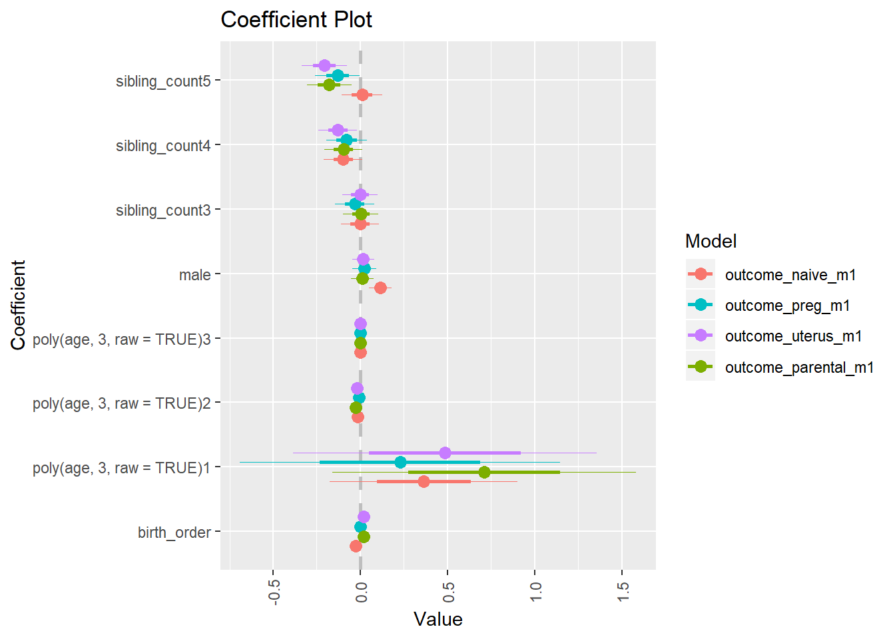
g-factor 2007 young
birthorder <- birthorder %>% mutate(outcome = g_factor_2007_young)
model = lmer(outcome ~ birth_order + age + male + sibling_count + (1 | mother_pidlink),
data = birthorder)
compare_birthorder_specs(model)Naive birth order
outcome_naive_m1 <- update(m2_birthorder_linear, data = birthorder %>%
mutate(sibling_count = sibling_count_naive_factor,
birth_order_nonlinear = birthorder_naive_factor,
birth_order = birthorder_naive,
count_birth_order = count_birthorder_naive) %>%
filter(sibling_count != "1"))
compare_models_markdown(outcome_naive_m1)Basic Model
Model Summary
m1_covariates_only <- update(m2_birthorder_linear, formula = . ~ . - birth_order)
tidy(m1_covariates_only, conf.int = T)| term | estimate | std.error | statistic | conf.low | conf.high | group |
|---|---|---|---|---|---|---|
| (Intercept) | -1.115 | 0.06412 | -17.39 | -1.241 | -0.9893 | fixed |
| age | 0.06378 | 0.003 | 21.26 | 0.0579 | 0.06967 | fixed |
| male | -0.03534 | 0.0252 | -1.402 | -0.08473 | 0.01405 | fixed |
| sibling_count3 | -0.002199 | 0.04 | -0.05497 | -0.08061 | 0.07621 | fixed |
| sibling_count4 | -0.1552 | 0.04091 | -3.794 | -0.2354 | -0.07504 | fixed |
| sibling_count5 | -0.09615 | 0.0442 | -2.175 | -0.1828 | -0.00952 | fixed |
| sd_(Intercept).mother_pidlink | 0.5393 | NA | NA | NA | NA | mother_pidlink |
| sd_Observation.Residual | 0.754 | NA | NA | NA | NA | Residual |
Coefficient Plot
plot(allEffects(m1_covariates_only))Add Birth Order Linear
Model Summary
tidy(m2_birthorder_linear, conf.int = T)| term | estimate | std.error | statistic | conf.low | conf.high | group |
|---|---|---|---|---|---|---|
| (Intercept) | -1.167 | 0.06856 | -17.03 | -1.302 | -1.033 | fixed |
| birth_order | 0.02682 | 0.01243 | 2.158 | 0.002462 | 0.05117 | fixed |
| age | 0.06477 | 0.003034 | 21.35 | 0.05883 | 0.07072 | fixed |
| male | -0.0363 | 0.0252 | -1.441 | -0.08569 | 0.01308 | fixed |
| sibling_count3 | -0.01448 | 0.04039 | -0.3585 | -0.09364 | 0.06468 | fixed |
| sibling_count4 | -0.1829 | 0.04285 | -4.268 | -0.2669 | -0.09889 | fixed |
| sibling_count5 | -0.1431 | 0.04924 | -2.906 | -0.2396 | -0.04658 | fixed |
| sd_(Intercept).mother_pidlink | 0.5388 | NA | NA | NA | NA | mother_pidlink |
| sd_Observation.Residual | 0.7539 | NA | NA | NA | NA | Residual |
Coefficient Plot
plot_birthorder2(m2_birthorder_linear, separate = FALSE)Add Birth Order Factor
Model Summary
m3_birthorder_nonlinear = update(m1_covariates_only, formula = . ~ . + birth_order_nonlinear)
tidy(m3_birthorder_nonlinear, conf.int = T)| term | estimate | std.error | statistic | conf.low | conf.high | group |
|---|---|---|---|---|---|---|
| (Intercept) | -1.153 | 0.06566 | -17.56 | -1.282 | -1.024 | fixed |
| age | 0.06477 | 0.003032 | 21.36 | 0.05883 | 0.07072 | fixed |
| male | -0.03621 | 0.02519 | -1.438 | -0.08558 | 0.01316 | fixed |
| sibling_count3 | -0.004171 | 0.04077 | -0.1023 | -0.08407 | 0.07573 | fixed |
| sibling_count4 | -0.1802 | 0.04331 | -4.16 | -0.2651 | -0.09529 | fixed |
| sibling_count5 | -0.1359 | 0.04958 | -2.741 | -0.2331 | -0.03873 | fixed |
| birth_order_nonlinear2 | 0.06761 | 0.02948 | 2.293 | 0.009816 | 0.1254 | fixed |
| birth_order_nonlinear3 | 0.004595 | 0.03643 | 0.1262 | -0.0668 | 0.07599 | fixed |
| birth_order_nonlinear4 | 0.1325 | 0.04868 | 2.721 | 0.03706 | 0.2279 | fixed |
| birth_order_nonlinear5 | 0.09761 | 0.06968 | 1.401 | -0.03896 | 0.2342 | fixed |
| sd_(Intercept).mother_pidlink | 0.5376 | NA | NA | NA | NA | mother_pidlink |
| sd_Observation.Residual | 0.7541 | NA | NA | NA | NA | Residual |
Coefficient Plot
plot_birthorder(m3_birthorder_nonlinear, separate = FALSE)Add Interaction
Model Summary
m4_interaction = update(m3_birthorder_nonlinear, formula = . ~ . - birth_order_nonlinear - sibling_count + count_birth_order)
tidy(m4_interaction, conf.int = T)| term | estimate | std.error | statistic | conf.low | conf.high | group |
|---|---|---|---|---|---|---|
| (Intercept) | -1.155 | 0.06696 | -17.25 | -1.286 | -1.024 | fixed |
| age | 0.06484 | 0.003035 | 21.37 | 0.05889 | 0.07079 | fixed |
| male | -0.0364 | 0.02522 | -1.443 | -0.08583 | 0.01304 | fixed |
| count_birth_order2/2 | 0.07111 | 0.05503 | 1.292 | -0.03675 | 0.179 | fixed |
| count_birth_order1/3 | -0.001966 | 0.04929 | -0.03989 | -0.09858 | 0.09465 | fixed |
| count_birth_order2/3 | 0.07671 | 0.05426 | 1.414 | -0.02964 | 0.1831 | fixed |
| count_birth_order3/3 | -0.01862 | 0.06088 | -0.3058 | -0.1379 | 0.1007 | fixed |
| count_birth_order1/4 | -0.1826 | 0.05612 | -3.254 | -0.2926 | -0.07263 | fixed |
| count_birth_order2/4 | -0.1171 | 0.0573 | -2.044 | -0.2294 | -0.004818 | fixed |
| count_birth_order3/4 | -0.1873 | 0.05987 | -3.129 | -0.3047 | -0.07 | fixed |
| count_birth_order4/4 | -0.01678 | 0.06532 | -0.2569 | -0.1448 | 0.1112 | fixed |
| count_birth_order1/5 | -0.1281 | 0.06818 | -1.879 | -0.2618 | 0.00549 | fixed |
| count_birth_order2/5 | -0.08863 | 0.07186 | -1.233 | -0.2295 | 0.05221 | fixed |
| count_birth_order3/5 | -0.08388 | 0.06842 | -1.226 | -0.218 | 0.05023 | fixed |
| count_birth_order4/5 | -0.04089 | 0.0718 | -0.5695 | -0.1816 | 0.09984 | fixed |
| count_birth_order5/5 | -0.0367 | 0.06989 | -0.5252 | -0.1737 | 0.1003 | fixed |
| sd_(Intercept).mother_pidlink | 0.5364 | NA | NA | NA | NA | mother_pidlink |
| sd_Observation.Residual | 0.7552 | NA | NA | NA | NA | Residual |
Coefficient Plot
plot_birthorder(m4_interaction)Model Comparison
###### Model 1 - Model 2
anova(m1_covariates_only, m2_birthorder_linear, m3_birthorder_nonlinear, m4_interaction)## refitting model(s) with ML (instead of REML)| Df | AIC | BIC | logLik | deviance | Chisq | Chi Df | Pr(>Chisq) |
|---|---|---|---|---|---|---|---|
| 8 | 13153 | 13205 | -6568 | 13137 | NA | NA | NA |
| 9 | 13150 | 13209 | -6566 | 13132 | 4.662 | 1 | 0.03084 |
| 12 | 13149 | 13227 | -6562 | 13125 | 7.579 | 3 | 0.05556 |
| 18 | 13159 | 13276 | -6561 | 13123 | 1.947 | 6 | 0.9245 |
Maternal birth order
outcome_uterus_m1 <- update(m2_birthorder_linear, data = birthorder %>%
mutate(sibling_count = sibling_count_uterus_alive_factor,
birth_order_nonlinear = birthorder_uterus_alive_factor,
birth_order = birthorder_uterus_alive,
count_birth_order = count_birthorder_uterus_alive) %>%
filter(sibling_count != "1"))
compare_models_markdown(outcome_uterus_m1)Basic Model
Model Summary
m1_covariates_only <- update(m2_birthorder_linear, formula = . ~ . - birth_order)
tidy(m1_covariates_only, conf.int = T)| term | estimate | std.error | statistic | conf.low | conf.high | group |
|---|---|---|---|---|---|---|
| (Intercept) | -1.233 | 0.06433 | -19.16 | -1.359 | -1.107 | fixed |
| age | 0.07179 | 0.003074 | 23.36 | 0.06577 | 0.07782 | fixed |
| male | -0.07098 | 0.02612 | -2.718 | -0.1222 | -0.01979 | fixed |
| sibling_count3 | 0.01268 | 0.03639 | 0.3486 | -0.05863 | 0.084 | fixed |
| sibling_count4 | -0.08961 | 0.04123 | -2.173 | -0.1704 | -0.008803 | fixed |
| sibling_count5 | -0.1731 | 0.04984 | -3.472 | -0.2707 | -0.07536 | fixed |
| sd_(Intercept).mother_pidlink | 0.5304 | NA | NA | NA | NA | mother_pidlink |
| sd_Observation.Residual | 0.7324 | NA | NA | NA | NA | Residual |
Coefficient Plot
plot(allEffects(m1_covariates_only))Add Birth Order Linear
Model Summary
tidy(m2_birthorder_linear, conf.int = T)| term | estimate | std.error | statistic | conf.low | conf.high | group |
|---|---|---|---|---|---|---|
| (Intercept) | -1.281 | 0.07003 | -18.3 | -1.419 | -1.144 | fixed |
| birth_order | 0.02509 | 0.01432 | 1.753 | -0.00297 | 0.05316 | fixed |
| age | 0.07265 | 0.003112 | 23.35 | 0.06655 | 0.07875 | fixed |
| male | -0.07168 | 0.02612 | -2.745 | -0.1229 | -0.02049 | fixed |
| sibling_count3 | 0.0005155 | 0.03703 | 0.01392 | -0.07206 | 0.07309 | fixed |
| sibling_count4 | -0.1193 | 0.04455 | -2.677 | -0.2066 | -0.03195 | fixed |
| sibling_count5 | -0.2238 | 0.05763 | -3.884 | -0.3368 | -0.1109 | fixed |
| sd_(Intercept).mother_pidlink | 0.5298 | NA | NA | NA | NA | mother_pidlink |
| sd_Observation.Residual | 0.7325 | NA | NA | NA | NA | Residual |
Coefficient Plot
plot_birthorder2(m2_birthorder_linear, separate = FALSE)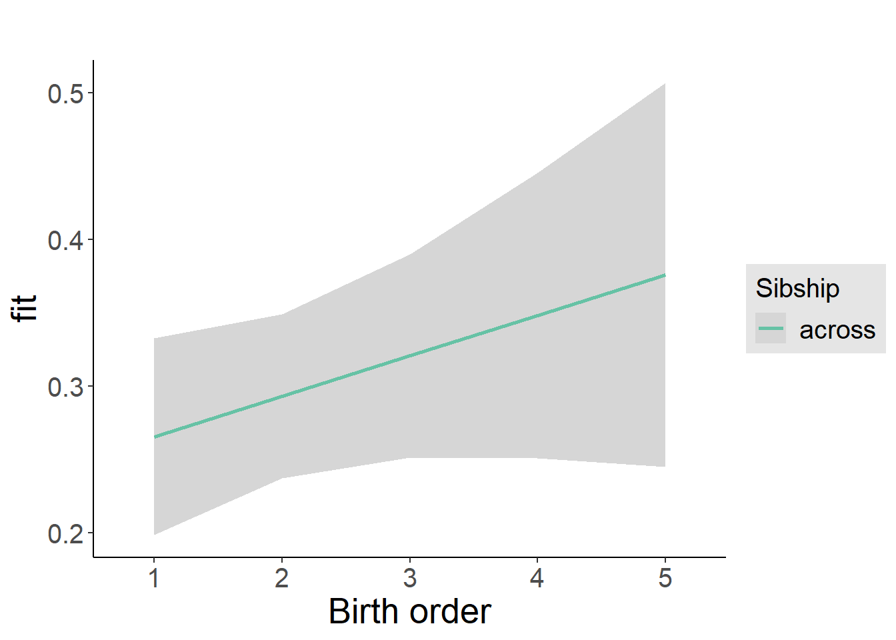
Add Birth Order Factor
Model Summary
m3_birthorder_nonlinear = update(m1_covariates_only, formula = . ~ . + birth_order_nonlinear)
tidy(m3_birthorder_nonlinear, conf.int = T)| term | estimate | std.error | statistic | conf.low | conf.high | group |
|---|---|---|---|---|---|---|
| (Intercept) | -1.253 | 0.06617 | -18.94 | -1.383 | -1.123 | fixed |
| age | 0.07262 | 0.003112 | 23.33 | 0.06652 | 0.07872 | fixed |
| male | -0.07152 | 0.02613 | -2.737 | -0.1227 | -0.02031 | fixed |
| sibling_count3 | 0.008768 | 0.0376 | 0.2332 | -0.06493 | 0.08247 | fixed |
| sibling_count4 | -0.1132 | 0.04531 | -2.498 | -0.202 | -0.0244 | fixed |
| sibling_count5 | -0.2409 | 0.05936 | -4.059 | -0.3573 | -0.1246 | fixed |
| birth_order_nonlinear2 | 0.01581 | 0.02959 | 0.5341 | -0.0422 | 0.07381 | fixed |
| birth_order_nonlinear3 | 0.01508 | 0.03989 | 0.3781 | -0.06309 | 0.09326 | fixed |
| birth_order_nonlinear4 | 0.07932 | 0.05502 | 1.442 | -0.02852 | 0.1872 | fixed |
| birth_order_nonlinear5 | 0.1797 | 0.08602 | 2.089 | 0.01113 | 0.3483 | fixed |
| sd_(Intercept).mother_pidlink | 0.529 | NA | NA | NA | NA | mother_pidlink |
| sd_Observation.Residual | 0.733 | NA | NA | NA | NA | Residual |
Coefficient Plot
plot_birthorder(m3_birthorder_nonlinear, separate = FALSE)
Add Interaction
Model Summary
m4_interaction = update(m3_birthorder_nonlinear, formula = . ~ . - birth_order_nonlinear - sibling_count + count_birth_order)
tidy(m4_interaction, conf.int = T)| term | estimate | std.error | statistic | conf.low | conf.high | group |
|---|---|---|---|---|---|---|
| (Intercept) | -1.262 | 0.06712 | -18.8 | -1.393 | -1.13 | fixed |
| age | 0.07284 | 0.003117 | 23.37 | 0.06674 | 0.07895 | fixed |
| male | -0.07139 | 0.02616 | -2.729 | -0.1227 | -0.02011 | fixed |
| count_birth_order2/2 | 0.03119 | 0.04765 | 0.6546 | -0.06221 | 0.1246 | fixed |
| count_birth_order1/3 | -0.0005886 | 0.04587 | -0.01283 | -0.0905 | 0.08932 | fixed |
| count_birth_order2/3 | 0.04845 | 0.04983 | 0.9723 | -0.04922 | 0.1461 | fixed |
| count_birth_order3/3 | 0.03071 | 0.05559 | 0.5524 | -0.07825 | 0.1397 | fixed |
| count_birth_order1/4 | -0.09318 | 0.06162 | -1.512 | -0.214 | 0.0276 | fixed |
| count_birth_order2/4 | -0.1447 | 0.06154 | -2.35 | -0.2653 | -0.02403 | fixed |
| count_birth_order3/4 | -0.08403 | 0.06414 | -1.31 | -0.2097 | 0.04168 | fixed |
| count_birth_order4/4 | -0.002848 | 0.06373 | -0.04469 | -0.1278 | 0.1221 | fixed |
| count_birth_order1/5 | -0.1416 | 0.09305 | -1.522 | -0.324 | 0.04076 | fixed |
| count_birth_order2/5 | -0.2206 | 0.09806 | -2.249 | -0.4128 | -0.02839 | fixed |
| count_birth_order3/5 | -0.2432 | 0.08641 | -2.815 | -0.4126 | -0.07389 | fixed |
| count_birth_order4/5 | -0.2064 | 0.08125 | -2.54 | -0.3656 | -0.04714 | fixed |
| count_birth_order5/5 | -0.06215 | 0.07873 | -0.7894 | -0.2165 | 0.09216 | fixed |
| sd_(Intercept).mother_pidlink | 0.5298 | NA | NA | NA | NA | mother_pidlink |
| sd_Observation.Residual | 0.7329 | NA | NA | NA | NA | Residual |
Coefficient Plot
plot_birthorder(m4_interaction)Model Comparison
###### Model 1 - Model 2
anova(m1_covariates_only, m2_birthorder_linear, m3_birthorder_nonlinear, m4_interaction)## refitting model(s) with ML (instead of REML)| Df | AIC | BIC | logLik | deviance | Chisq | Chi Df | Pr(>Chisq) |
|---|---|---|---|---|---|---|---|
| 8 | 11541 | 11592 | -5763 | 11525 | NA | NA | NA |
| 9 | 11540 | 11598 | -5761 | 11522 | 3.076 | 1 | 0.07946 |
| 12 | 11544 | 11621 | -5760 | 11520 | 2.144 | 3 | 0.543 |
| 18 | 11552 | 11667 | -5758 | 11516 | 3.838 | 6 | 0.6987 |
Maternal pregnancy order
outcome_preg_m1 <- update(m2_birthorder_linear, data = birthorder %>%
mutate(sibling_count = sibling_count_uterus_preg_factor,
birth_order_nonlinear = birthorder_uterus_preg_factor,
birth_order = birthorder_uterus_preg,
count_birth_order = count_birthorder_uterus_preg
) %>%
filter(sibling_count != "1"))
compare_models_markdown(outcome_preg_m1)Basic Model
Model Summary
m1_covariates_only <- update(m2_birthorder_linear, formula = . ~ . - birth_order)
tidy(m1_covariates_only, conf.int = T)| term | estimate | std.error | statistic | conf.low | conf.high | group |
|---|---|---|---|---|---|---|
| (Intercept) | -1.223 | 0.0667 | -18.34 | -1.354 | -1.092 | fixed |
| age | 0.07236 | 0.003181 | 22.75 | 0.06613 | 0.0786 | fixed |
| male | -0.07375 | 0.02693 | -2.739 | -0.1265 | -0.02098 | fixed |
| sibling_count3 | -0.01684 | 0.03898 | -0.4321 | -0.09323 | 0.05955 | fixed |
| sibling_count4 | -0.09085 | 0.04251 | -2.137 | -0.1742 | -0.007538 | fixed |
| sibling_count5 | -0.1493 | 0.04808 | -3.105 | -0.2435 | -0.05503 | fixed |
| sd_(Intercept).mother_pidlink | 0.5308 | NA | NA | NA | NA | mother_pidlink |
| sd_Observation.Residual | 0.7276 | NA | NA | NA | NA | Residual |
Coefficient Plot
plot(allEffects(m1_covariates_only))Add Birth Order Linear
Model Summary
tidy(m2_birthorder_linear, conf.int = T)| term | estimate | std.error | statistic | conf.low | conf.high | group |
|---|---|---|---|---|---|---|
| (Intercept) | -1.274 | 0.07239 | -17.6 | -1.416 | -1.132 | fixed |
| birth_order | 0.02588 | 0.01426 | 1.816 | -0.002059 | 0.05383 | fixed |
| age | 0.07332 | 0.003223 | 22.75 | 0.067 | 0.07964 | fixed |
| male | -0.07448 | 0.02692 | -2.766 | -0.1272 | -0.02171 | fixed |
| sibling_count3 | -0.02969 | 0.0396 | -0.7497 | -0.1073 | 0.04792 | fixed |
| sibling_count4 | -0.1197 | 0.04536 | -2.639 | -0.2086 | -0.03081 | fixed |
| sibling_count5 | -0.1977 | 0.05495 | -3.597 | -0.3054 | -0.08995 | fixed |
| sd_(Intercept).mother_pidlink | 0.5301 | NA | NA | NA | NA | mother_pidlink |
| sd_Observation.Residual | 0.7277 | NA | NA | NA | NA | Residual |
Coefficient Plot
plot_birthorder2(m2_birthorder_linear, separate = FALSE)Add Birth Order Factor
Model Summary
m3_birthorder_nonlinear = update(m1_covariates_only, formula = . ~ . + birth_order_nonlinear)
tidy(m3_birthorder_nonlinear, conf.int = T)| term | estimate | std.error | statistic | conf.low | conf.high | group |
|---|---|---|---|---|---|---|
| (Intercept) | -1.255 | 0.06862 | -18.3 | -1.39 | -1.121 | fixed |
| age | 0.07325 | 0.003223 | 22.72 | 0.06693 | 0.07957 | fixed |
| male | -0.07386 | 0.02693 | -2.742 | -0.1267 | -0.02108 | fixed |
| sibling_count3 | -0.02022 | 0.04016 | -0.5035 | -0.09893 | 0.05849 | fixed |
| sibling_count4 | -0.1098 | 0.04603 | -2.385 | -0.2 | -0.01957 | fixed |
| sibling_count5 | -0.2006 | 0.05592 | -3.588 | -0.3102 | -0.09102 | fixed |
| birth_order_nonlinear2 | 0.05137 | 0.03077 | 1.67 | -0.008933 | 0.1117 | fixed |
| birth_order_nonlinear3 | 0.01066 | 0.04055 | 0.2628 | -0.06883 | 0.09014 | fixed |
| birth_order_nonlinear4 | 0.07887 | 0.05506 | 1.432 | -0.02905 | 0.1868 | fixed |
| birth_order_nonlinear5 | 0.1628 | 0.08272 | 1.968 | 0.0006456 | 0.3249 | fixed |
| sd_(Intercept).mother_pidlink | 0.5292 | NA | NA | NA | NA | mother_pidlink |
| sd_Observation.Residual | 0.7281 | NA | NA | NA | NA | Residual |
Coefficient Plot
plot_birthorder(m3_birthorder_nonlinear, separate = FALSE)Add Interaction
Model Summary
m4_interaction = update(m3_birthorder_nonlinear, formula = . ~ . - birth_order_nonlinear - sibling_count + count_birth_order)
tidy(m4_interaction, conf.int = T)| term | estimate | std.error | statistic | conf.low | conf.high | group |
|---|---|---|---|---|---|---|
| (Intercept) | -1.269 | 0.06977 | -18.2 | -1.406 | -1.133 | fixed |
| age | 0.07366 | 0.003225 | 22.84 | 0.06734 | 0.07998 | fixed |
| male | -0.07499 | 0.02693 | -2.784 | -0.1278 | -0.0222 | fixed |
| count_birth_order2/2 | 0.07342 | 0.05201 | 1.412 | -0.02851 | 0.1754 | fixed |
| count_birth_order1/3 | -0.03494 | 0.04925 | -0.7094 | -0.1315 | 0.06159 | fixed |
| count_birth_order2/3 | 0.0446 | 0.05283 | 0.8441 | -0.05896 | 0.1481 | fixed |
| count_birth_order3/3 | 0.02876 | 0.05934 | 0.4846 | -0.08755 | 0.1451 | fixed |
| count_birth_order1/4 | -0.1065 | 0.06167 | -1.728 | -0.2274 | 0.01433 | fixed |
| count_birth_order2/4 | -0.09072 | 0.06218 | -1.459 | -0.2126 | 0.03115 | fixed |
| count_birth_order3/4 | -0.1177 | 0.06528 | -1.803 | -0.2456 | 0.01025 | fixed |
| count_birth_order4/4 | 0.04699 | 0.06697 | 0.7016 | -0.08427 | 0.1782 | fixed |
| count_birth_order1/5 | -0.05713 | 0.0836 | -0.6834 | -0.221 | 0.1067 | fixed |
| count_birth_order2/5 | -0.1284 | 0.0845 | -1.519 | -0.294 | 0.03723 | fixed |
| count_birth_order3/5 | -0.205 | 0.08057 | -2.545 | -0.3629 | -0.0471 | fixed |
| count_birth_order4/5 | -0.2331 | 0.08105 | -2.876 | -0.3919 | -0.07425 | fixed |
| count_birth_order5/5 | -0.04214 | 0.07773 | -0.5422 | -0.1945 | 0.1102 | fixed |
| sd_(Intercept).mother_pidlink | 0.5317 | NA | NA | NA | NA | mother_pidlink |
| sd_Observation.Residual | 0.7263 | NA | NA | NA | NA | Residual |
Coefficient Plot
plot_birthorder(m4_interaction)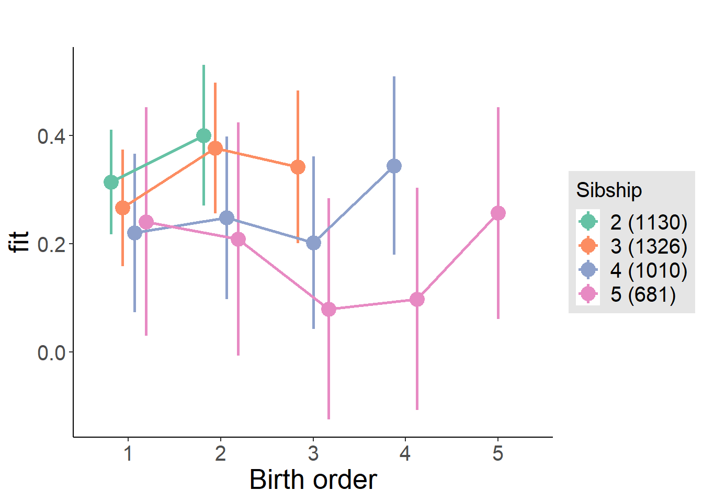
Model Comparison
###### Model 1 - Model 2
anova(m1_covariates_only, m2_birthorder_linear, m3_birthorder_nonlinear, m4_interaction)## refitting model(s) with ML (instead of REML)| Df | AIC | BIC | logLik | deviance | Chisq | Chi Df | Pr(>Chisq) |
|---|---|---|---|---|---|---|---|
| 8 | 10746 | 10796 | -5365 | 10730 | NA | NA | NA |
| 9 | 10744 | 10801 | -5363 | 10726 | 3.301 | 1 | 0.06924 |
| 12 | 10747 | 10823 | -5362 | 10723 | 3.474 | 3 | 0.3241 |
| 18 | 10749 | 10863 | -5357 | 10713 | 9.687 | 6 | 0.1385 |
Parental full sibling order
outcome_parental_m1 <- update(m2_birthorder_linear, data = birthorder %>%
mutate(sibling_count = sibling_count_genes_factor,
birth_order_nonlinear = birthorder_genes_factor,
birth_order = birthorder_genes,
count_birth_order = count_birthorder_genes
) %>%
filter(sibling_count != "1"))
compare_models_markdown(outcome_parental_m1)Basic Model
Model Summary
m1_covariates_only <- update(m2_birthorder_linear, formula = . ~ . - birth_order)
tidy(m1_covariates_only, conf.int = T)| term | estimate | std.error | statistic | conf.low | conf.high | group |
|---|---|---|---|---|---|---|
| (Intercept) | -1.22 | 0.06523 | -18.71 | -1.348 | -1.093 | fixed |
| age | 0.07035 | 0.003122 | 22.54 | 0.06423 | 0.07647 | fixed |
| male | -0.07464 | 0.02648 | -2.819 | -0.1265 | -0.02274 | fixed |
| sibling_count3 | 0.03309 | 0.03669 | 0.9018 | -0.03883 | 0.105 | fixed |
| sibling_count4 | -0.07441 | 0.04176 | -1.782 | -0.1563 | 0.007445 | fixed |
| sibling_count5 | -0.1922 | 0.05224 | -3.678 | -0.2945 | -0.08977 | fixed |
| sd_(Intercept).mother_pidlink | 0.5418 | NA | NA | NA | NA | mother_pidlink |
| sd_Observation.Residual | 0.7351 | NA | NA | NA | NA | Residual |
Coefficient Plot
plot(allEffects(m1_covariates_only))Add Birth Order Linear
Model Summary
tidy(m2_birthorder_linear, conf.int = T)| term | estimate | std.error | statistic | conf.low | conf.high | group |
|---|---|---|---|---|---|---|
| (Intercept) | -1.274 | 0.07106 | -17.93 | -1.413 | -1.135 | fixed |
| birth_order | 0.02771 | 0.01463 | 1.894 | -0.0009667 | 0.05638 | fixed |
| age | 0.07127 | 0.003159 | 22.57 | 0.06508 | 0.07746 | fixed |
| male | -0.07521 | 0.02647 | -2.841 | -0.1271 | -0.02332 | fixed |
| sibling_count3 | 0.02002 | 0.03732 | 0.5364 | -0.05313 | 0.09317 | fixed |
| sibling_count4 | -0.1074 | 0.04524 | -2.375 | -0.1961 | -0.01876 | fixed |
| sibling_count5 | -0.2469 | 0.05969 | -4.137 | -0.3639 | -0.1299 | fixed |
| sd_(Intercept).mother_pidlink | 0.5413 | NA | NA | NA | NA | mother_pidlink |
| sd_Observation.Residual | 0.7351 | NA | NA | NA | NA | Residual |
Coefficient Plot
plot_birthorder2(m2_birthorder_linear, separate = FALSE)Add Birth Order Factor
Model Summary
m3_birthorder_nonlinear = update(m1_covariates_only, formula = . ~ . + birth_order_nonlinear)
tidy(m3_birthorder_nonlinear, conf.int = T)| term | estimate | std.error | statistic | conf.low | conf.high | group |
|---|---|---|---|---|---|---|
| (Intercept) | -1.244 | 0.06709 | -18.54 | -1.375 | -1.112 | fixed |
| age | 0.07128 | 0.003159 | 22.56 | 0.06509 | 0.07747 | fixed |
| male | -0.07513 | 0.02649 | -2.836 | -0.1271 | -0.02321 | fixed |
| sibling_count3 | 0.02074 | 0.03792 | 0.5468 | -0.05359 | 0.09507 | fixed |
| sibling_count4 | -0.1045 | 0.04606 | -2.27 | -0.1948 | -0.01427 | fixed |
| sibling_count5 | -0.256 | 0.06185 | -4.139 | -0.3772 | -0.1348 | fixed |
| birth_order_nonlinear2 | 0.01979 | 0.02976 | 0.665 | -0.03854 | 0.07812 | fixed |
| birth_order_nonlinear3 | 0.05162 | 0.04043 | 1.277 | -0.02762 | 0.1309 | fixed |
| birth_order_nonlinear4 | 0.07313 | 0.05641 | 1.297 | -0.03742 | 0.1837 | fixed |
| birth_order_nonlinear5 | 0.151 | 0.09215 | 1.638 | -0.02963 | 0.3316 | fixed |
| sd_(Intercept).mother_pidlink | 0.5409 | NA | NA | NA | NA | mother_pidlink |
| sd_Observation.Residual | 0.7356 | NA | NA | NA | NA | Residual |
Coefficient Plot
plot_birthorder(m3_birthorder_nonlinear, separate = FALSE)
Add Interaction
Model Summary
m4_interaction = update(m3_birthorder_nonlinear, formula = . ~ . - birth_order_nonlinear - sibling_count + count_birth_order)
tidy(m4_interaction, conf.int = T)| term | estimate | std.error | statistic | conf.low | conf.high | group |
|---|---|---|---|---|---|---|
| (Intercept) | -1.254 | 0.06798 | -18.44 | -1.387 | -1.12 | fixed |
| age | 0.07151 | 0.003164 | 22.6 | 0.06531 | 0.07771 | fixed |
| male | -0.07452 | 0.02653 | -2.809 | -0.1265 | -0.02252 | fixed |
| count_birth_order2/2 | 0.0362 | 0.04686 | 0.7724 | -0.05565 | 0.128 | fixed |
| count_birth_order1/3 | 0.01578 | 0.04615 | 0.342 | -0.07466 | 0.1062 | fixed |
| count_birth_order2/3 | 0.06722 | 0.0507 | 1.326 | -0.03216 | 0.1666 | fixed |
| count_birth_order3/3 | 0.06996 | 0.05609 | 1.247 | -0.03997 | 0.1799 | fixed |
| count_birth_order1/4 | -0.09552 | 0.06299 | -1.516 | -0.219 | 0.02794 | fixed |
| count_birth_order2/4 | -0.1276 | 0.06241 | -2.045 | -0.25 | -0.005312 | fixed |
| count_birth_order3/4 | -0.03564 | 0.06473 | -0.5506 | -0.1625 | 0.09122 | fixed |
| count_birth_order4/4 | 0.005589 | 0.06434 | 0.08685 | -0.1205 | 0.1317 | fixed |
| count_birth_order1/5 | -0.1401 | 0.09515 | -1.472 | -0.3266 | 0.04643 | fixed |
| count_birth_order2/5 | -0.267 | 0.105 | -2.543 | -0.4728 | -0.06123 | fixed |
| count_birth_order3/5 | -0.2003 | 0.0914 | -2.192 | -0.3795 | -0.0212 | fixed |
| count_birth_order4/5 | -0.2432 | 0.08635 | -2.817 | -0.4125 | -0.07401 | fixed |
| count_birth_order5/5 | -0.1066 | 0.08424 | -1.265 | -0.2717 | 0.05853 | fixed |
| sd_(Intercept).mother_pidlink | 0.5416 | NA | NA | NA | NA | mother_pidlink |
| sd_Observation.Residual | 0.7354 | NA | NA | NA | NA | Residual |
Coefficient Plot
plot_birthorder(m4_interaction)
Model Comparison
###### Model 1 - Model 2
anova(m1_covariates_only, m2_birthorder_linear, m3_birthorder_nonlinear, m4_interaction)## refitting model(s) with ML (instead of REML)| Df | AIC | BIC | logLik | deviance | Chisq | Chi Df | Pr(>Chisq) |
|---|---|---|---|---|---|---|---|
| 8 | 11455 | 11506 | -5720 | 11439 | NA | NA | NA |
| 9 | 11454 | 11511 | -5718 | 11436 | 3.592 | 1 | 0.05807 |
| 12 | 11459 | 11536 | -5718 | 11435 | 0.3655 | 3 | 0.9473 |
| 18 | 11467 | 11582 | -5715 | 11431 | 4.379 | 6 | 0.6255 |
Compare birth order specifications
library(coefplot)
multiplot(outcome_naive_m1, outcome_preg_m1, outcome_uterus_m1, outcome_parental_m1, dodgeHeight = 0.6,
intercept = FALSE)Raven 2015 old
birthorder <- birthorder %>% mutate(outcome = raven_2015_old)
model = lmer(outcome ~ birth_order + age + male + sibling_count + (1 | mother_pidlink),
data = birthorder)
compare_birthorder_specs(model)Naive birth order
outcome_naive_m1 <- update(m2_birthorder_linear, data = birthorder %>%
mutate(sibling_count = sibling_count_naive_factor,
birth_order_nonlinear = birthorder_naive_factor,
birth_order = birthorder_naive,
count_birth_order = count_birthorder_naive) %>%
filter(sibling_count != "1"))
compare_models_markdown(outcome_naive_m1)Basic Model
Model Summary
m1_covariates_only <- update(m2_birthorder_linear, formula = . ~ . - birth_order)
tidy(m1_covariates_only, conf.int = T)| term | estimate | std.error | statistic | conf.low | conf.high | group |
|---|---|---|---|---|---|---|
| (Intercept) | 0.7705 | 0.04046 | 19.05 | 0.6912 | 0.8498 | fixed |
| age | -0.02764 | 0.001061 | -26.04 | -0.02972 | -0.02556 | fixed |
| male | 0.1455 | 0.02109 | 6.897 | 0.1041 | 0.1868 | fixed |
| sibling_count3 | 0.03877 | 0.03237 | 1.198 | -0.02467 | 0.1022 | fixed |
| sibling_count4 | 0.01801 | 0.03347 | 0.5381 | -0.04759 | 0.08362 | fixed |
| sibling_count5 | 0.06799 | 0.03497 | 1.944 | -0.000544 | 0.1365 | fixed |
| sd_(Intercept).mother_pidlink | 0.4781 | NA | NA | NA | NA | mother_pidlink |
| sd_Observation.Residual | 0.7873 | NA | NA | NA | NA | Residual |
Coefficient Plot
plot(allEffects(m1_covariates_only))Add Birth Order Linear
Model Summary
tidy(m2_birthorder_linear, conf.int = T)| term | estimate | std.error | statistic | conf.low | conf.high | group |
|---|---|---|---|---|---|---|
| (Intercept) | 0.7451 | 0.04444 | 16.77 | 0.658 | 0.8322 | fixed |
| birth_order | 0.01418 | 0.01026 | 1.382 | -0.005922 | 0.03428 | fixed |
| age | -0.02743 | 0.001072 | -25.59 | -0.02953 | -0.02533 | fixed |
| male | 0.1452 | 0.02109 | 6.882 | 0.1038 | 0.1865 | fixed |
| sibling_count3 | 0.03389 | 0.03255 | 1.041 | -0.02991 | 0.09769 | fixed |
| sibling_count4 | 0.006277 | 0.03453 | 0.1818 | -0.0614 | 0.07395 | fixed |
| sibling_count5 | 0.04887 | 0.0376 | 1.3 | -0.02482 | 0.1226 | fixed |
| sd_(Intercept).mother_pidlink | 0.4777 | NA | NA | NA | NA | mother_pidlink |
| sd_Observation.Residual | 0.7874 | NA | NA | NA | NA | Residual |
Coefficient Plot
plot_birthorder2(m2_birthorder_linear, separate = FALSE)Add Birth Order Factor
Model Summary
m3_birthorder_nonlinear = update(m1_covariates_only, formula = . ~ . + birth_order_nonlinear)
tidy(m3_birthorder_nonlinear, conf.int = T)| term | estimate | std.error | statistic | conf.low | conf.high | group |
|---|---|---|---|---|---|---|
| (Intercept) | 0.7646 | 0.04187 | 18.26 | 0.6825 | 0.8467 | fixed |
| age | -0.02739 | 0.001072 | -25.56 | -0.02949 | -0.02529 | fixed |
| male | 0.1453 | 0.02109 | 6.89 | 0.104 | 0.1867 | fixed |
| sibling_count3 | 0.02748 | 0.03294 | 0.8343 | -0.03708 | 0.09204 | fixed |
| sibling_count4 | 0.009468 | 0.03497 | 0.2708 | -0.05906 | 0.078 | fixed |
| sibling_count5 | 0.04246 | 0.03782 | 1.123 | -0.03167 | 0.1166 | fixed |
| birth_order_nonlinear2 | -0.003397 | 0.02432 | -0.1396 | -0.05107 | 0.04428 | fixed |
| birth_order_nonlinear3 | 0.05412 | 0.03119 | 1.735 | -0.007004 | 0.1152 | fixed |
| birth_order_nonlinear4 | -0.01328 | 0.04063 | -0.3268 | -0.09292 | 0.06636 | fixed |
| birth_order_nonlinear5 | 0.1107 | 0.0594 | 1.864 | -0.005726 | 0.2271 | fixed |
| sd_(Intercept).mother_pidlink | 0.4769 | NA | NA | NA | NA | mother_pidlink |
| sd_Observation.Residual | 0.7876 | NA | NA | NA | NA | Residual |
Coefficient Plot
plot_birthorder(m3_birthorder_nonlinear, separate = FALSE)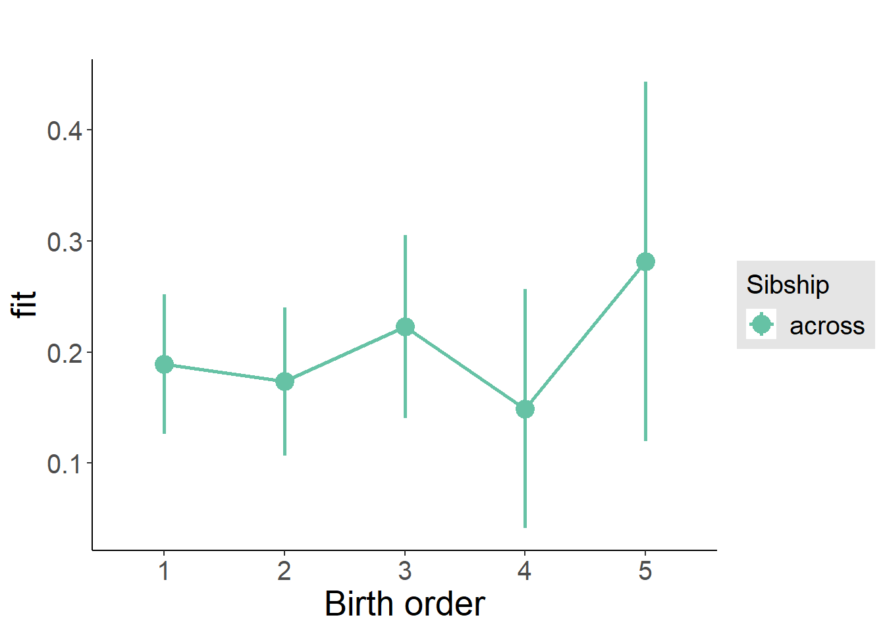
Add Interaction
Model Summary
m4_interaction = update(m3_birthorder_nonlinear, formula = . ~ . - birth_order_nonlinear - sibling_count + count_birth_order)
tidy(m4_interaction, conf.int = T)| term | estimate | std.error | statistic | conf.low | conf.high | group |
|---|---|---|---|---|---|---|
| (Intercept) | 0.7853 | 0.04346 | 18.07 | 0.7001 | 0.8704 | fixed |
| age | -0.02734 | 0.001072 | -25.5 | -0.02944 | -0.02524 | fixed |
| male | 0.1455 | 0.0211 | 6.896 | 0.1041 | 0.1868 | fixed |
| count_birth_order2/2 | -0.06456 | 0.0416 | -1.552 | -0.1461 | 0.01698 | fixed |
| count_birth_order1/3 | 0.007977 | 0.04128 | 0.1932 | -0.07294 | 0.08889 | fixed |
| count_birth_order2/3 | -0.002855 | 0.04576 | -0.06238 | -0.09254 | 0.08683 | fixed |
| count_birth_order3/3 | 0.06036 | 0.05098 | 1.184 | -0.03957 | 0.1603 | fixed |
| count_birth_order1/4 | -0.03133 | 0.04663 | -0.6718 | -0.1227 | 0.06006 | fixed |
| count_birth_order2/4 | 0.02103 | 0.04914 | 0.428 | -0.07528 | 0.1173 | fixed |
| count_birth_order3/4 | 0.02974 | 0.0531 | 0.5602 | -0.07432 | 0.1338 | fixed |
| count_birth_order4/4 | -0.0346 | 0.05582 | -0.6199 | -0.144 | 0.07481 | fixed |
| count_birth_order1/5 | -0.0238 | 0.05286 | -0.4504 | -0.1274 | 0.07979 | fixed |
| count_birth_order2/5 | 0.04665 | 0.05516 | 0.8457 | -0.06146 | 0.1548 | fixed |
| count_birth_order3/5 | 0.08669 | 0.05679 | 1.527 | -0.02461 | 0.198 | fixed |
| count_birth_order4/5 | 0.01842 | 0.05991 | 0.3075 | -0.09901 | 0.1359 | fixed |
| count_birth_order5/5 | 0.1321 | 0.06149 | 2.148 | 0.01155 | 0.2526 | fixed |
| sd_(Intercept).mother_pidlink | 0.477 | NA | NA | NA | NA | mother_pidlink |
| sd_Observation.Residual | 0.7876 | NA | NA | NA | NA | Residual |
Coefficient Plot
plot_birthorder(m4_interaction)Model Comparison
###### Model 1 - Model 2
anova(m1_covariates_only, m2_birthorder_linear, m3_birthorder_nonlinear, m4_interaction)## refitting model(s) with ML (instead of REML)| Df | AIC | BIC | logLik | deviance | Chisq | Chi Df | Pr(>Chisq) |
|---|---|---|---|---|---|---|---|
| 8 | 18910 | 18965 | -9447 | 18894 | NA | NA | NA |
| 9 | 18910 | 18972 | -9446 | 18892 | 1.913 | 1 | 0.1666 |
| 12 | 18911 | 18993 | -9443 | 18887 | 5.416 | 3 | 0.1437 |
| 18 | 18917 | 19041 | -9441 | 18881 | 5.122 | 6 | 0.5283 |
Maternal birth order
outcome_uterus_m1 <- update(m2_birthorder_linear, data = birthorder %>%
mutate(sibling_count = sibling_count_uterus_alive_factor,
birth_order_nonlinear = birthorder_uterus_alive_factor,
birth_order = birthorder_uterus_alive,
count_birth_order = count_birthorder_uterus_alive) %>%
filter(sibling_count != "1"))
compare_models_markdown(outcome_uterus_m1)Basic Model
Model Summary
m1_covariates_only <- update(m2_birthorder_linear, formula = . ~ . - birth_order)
tidy(m1_covariates_only, conf.int = T)| term | estimate | std.error | statistic | conf.low | conf.high | group |
|---|---|---|---|---|---|---|
| (Intercept) | 0.5024 | 0.04814 | 10.44 | 0.408 | 0.5967 | fixed |
| age | -0.008587 | 0.001785 | -4.811 | -0.01209 | -0.005089 | fixed |
| male | 0.07407 | 0.02464 | 3.006 | 0.02577 | 0.1224 | fixed |
| sibling_count3 | 0.03216 | 0.03516 | 0.9146 | -0.03676 | 0.1011 | fixed |
| sibling_count4 | -0.03928 | 0.03816 | -1.029 | -0.1141 | 0.03551 | fixed |
| sibling_count5 | -0.08585 | 0.04394 | -1.954 | -0.172 | 0.0002763 | fixed |
| sd_(Intercept).mother_pidlink | 0.4172 | NA | NA | NA | NA | mother_pidlink |
| sd_Observation.Residual | 0.7375 | NA | NA | NA | NA | Residual |
Coefficient Plot
plot(allEffects(m1_covariates_only))Add Birth Order Linear
Model Summary
tidy(m2_birthorder_linear, conf.int = T)| term | estimate | std.error | statistic | conf.low | conf.high | group |
|---|---|---|---|---|---|---|
| (Intercept) | 0.4665 | 0.05347 | 8.726 | 0.3618 | 0.5713 | fixed |
| birth_order | 0.01964 | 0.01276 | 1.539 | -0.005369 | 0.04464 | fixed |
| age | -0.008116 | 0.00181 | -4.483 | -0.01166 | -0.004568 | fixed |
| male | 0.07334 | 0.02465 | 2.976 | 0.02504 | 0.1217 | fixed |
| sibling_count3 | 0.02289 | 0.03567 | 0.6417 | -0.04702 | 0.0928 | fixed |
| sibling_count4 | -0.06046 | 0.04055 | -1.491 | -0.1399 | 0.01903 | fixed |
| sibling_count5 | -0.1212 | 0.04958 | -2.445 | -0.2184 | -0.02405 | fixed |
| sd_(Intercept).mother_pidlink | 0.4169 | NA | NA | NA | NA | mother_pidlink |
| sd_Observation.Residual | 0.7375 | NA | NA | NA | NA | Residual |
Coefficient Plot
plot_birthorder2(m2_birthorder_linear, separate = FALSE)Add Birth Order Factor
Model Summary
m3_birthorder_nonlinear = update(m1_covariates_only, formula = . ~ . + birth_order_nonlinear)
tidy(m3_birthorder_nonlinear, conf.int = T)| term | estimate | std.error | statistic | conf.low | conf.high | group |
|---|---|---|---|---|---|---|
| (Intercept) | 0.4771 | 0.04978 | 9.585 | 0.3795 | 0.5747 | fixed |
| age | -0.008294 | 0.001812 | -4.577 | -0.01185 | -0.004743 | fixed |
| male | 0.07382 | 0.02465 | 2.994 | 0.0255 | 0.1221 | fixed |
| sibling_count3 | 0.01563 | 0.03613 | 0.4327 | -0.05518 | 0.08644 | fixed |
| sibling_count4 | -0.06322 | 0.04106 | -1.54 | -0.1437 | 0.01726 | fixed |
| sibling_count5 | -0.1048 | 0.05029 | -2.085 | -0.2034 | -0.006275 | fixed |
| birth_order_nonlinear2 | 0.05835 | 0.02873 | 2.031 | 0.00205 | 0.1147 | fixed |
| birth_order_nonlinear3 | 0.07413 | 0.03677 | 2.016 | 0.002055 | 0.1462 | fixed |
| birth_order_nonlinear4 | 0.0495 | 0.04949 | 1 | -0.04751 | 0.1465 | fixed |
| birth_order_nonlinear5 | 0.007403 | 0.07691 | 0.09626 | -0.1433 | 0.1581 | fixed |
| sd_(Intercept).mother_pidlink | 0.415 | NA | NA | NA | NA | mother_pidlink |
| sd_Observation.Residual | 0.7383 | NA | NA | NA | NA | Residual |
Coefficient Plot
plot_birthorder(m3_birthorder_nonlinear, separate = FALSE)Add Interaction
Model Summary
m4_interaction = update(m3_birthorder_nonlinear, formula = . ~ . - birth_order_nonlinear - sibling_count + count_birth_order)
tidy(m4_interaction, conf.int = T)| term | estimate | std.error | statistic | conf.low | conf.high | group |
|---|---|---|---|---|---|---|
| (Intercept) | 0.484 | 0.05133 | 9.429 | 0.3834 | 0.5846 | fixed |
| age | -0.008246 | 0.001814 | -4.547 | -0.0118 | -0.004691 | fixed |
| male | 0.07425 | 0.02468 | 3.009 | 0.02588 | 0.1226 | fixed |
| count_birth_order2/2 | 0.03355 | 0.04966 | 0.6756 | -0.06378 | 0.1309 | fixed |
| count_birth_order1/3 | -0.007332 | 0.04517 | -0.1623 | -0.09587 | 0.0812 | fixed |
| count_birth_order2/3 | 0.08662 | 0.04904 | 1.766 | -0.009496 | 0.1827 | fixed |
| count_birth_order3/3 | 0.08177 | 0.05472 | 1.494 | -0.02549 | 0.189 | fixed |
| count_birth_order1/4 | -0.0766 | 0.05498 | -1.393 | -0.1844 | 0.03117 | fixed |
| count_birth_order2/4 | -0.0276 | 0.05678 | -0.4861 | -0.1389 | 0.08368 | fixed |
| count_birth_order3/4 | 0.01061 | 0.05974 | 0.1775 | -0.1065 | 0.1277 | fixed |
| count_birth_order4/4 | -0.004377 | 0.0621 | -0.07049 | -0.1261 | 0.1173 | fixed |
| count_birth_order1/5 | -0.08136 | 0.07445 | -1.093 | -0.2273 | 0.06455 | fixed |
| count_birth_order2/5 | -0.04688 | 0.07958 | -0.5891 | -0.2028 | 0.1091 | fixed |
| count_birth_order3/5 | -0.05177 | 0.07473 | -0.6928 | -0.1982 | 0.0947 | fixed |
| count_birth_order4/5 | -0.08906 | 0.07213 | -1.235 | -0.2304 | 0.0523 | fixed |
| count_birth_order5/5 | -0.1064 | 0.07456 | -1.427 | -0.2525 | 0.03974 | fixed |
| sd_(Intercept).mother_pidlink | 0.4143 | NA | NA | NA | NA | mother_pidlink |
| sd_Observation.Residual | 0.7391 | NA | NA | NA | NA | Residual |
Coefficient Plot
plot_birthorder(m4_interaction)Model Comparison
###### Model 1 - Model 2
anova(m1_covariates_only, m2_birthorder_linear, m3_birthorder_nonlinear, m4_interaction)## refitting model(s) with ML (instead of REML)| Df | AIC | BIC | logLik | deviance | Chisq | Chi Df | Pr(>Chisq) |
|---|---|---|---|---|---|---|---|
| 8 | 11240 | 11291 | -5612 | 11224 | NA | NA | NA |
| 9 | 11239 | 11297 | -5611 | 11221 | 2.372 | 1 | 0.1235 |
| 12 | 11241 | 11318 | -5609 | 11217 | 3.95 | 3 | 0.2669 |
| 18 | 11252 | 11367 | -5608 | 11216 | 1.513 | 6 | 0.9586 |
Maternal pregnancy order
outcome_preg_m1 <- update(m2_birthorder_linear, data = birthorder %>%
mutate(sibling_count = sibling_count_uterus_preg_factor,
birth_order_nonlinear = birthorder_uterus_preg_factor,
birth_order = birthorder_uterus_preg,
count_birth_order = count_birthorder_uterus_preg
) %>%
filter(sibling_count != "1"))
compare_models_markdown(outcome_preg_m1)Basic Model
Model Summary
m1_covariates_only <- update(m2_birthorder_linear, formula = . ~ . - birth_order)
tidy(m1_covariates_only, conf.int = T)| term | estimate | std.error | statistic | conf.low | conf.high | group |
|---|---|---|---|---|---|---|
| (Intercept) | 0.4885 | 0.04996 | 9.778 | 0.3906 | 0.5864 | fixed |
| age | -0.008952 | 0.001843 | -4.856 | -0.01257 | -0.005339 | fixed |
| male | 0.08041 | 0.02543 | 3.162 | 0.03057 | 0.1302 | fixed |
| sibling_count3 | 0.03437 | 0.0375 | 0.9167 | -0.03912 | 0.1079 | fixed |
| sibling_count4 | -0.009388 | 0.03978 | -0.236 | -0.08736 | 0.06858 | fixed |
| sibling_count5 | -0.01764 | 0.04283 | -0.4117 | -0.1016 | 0.06631 | fixed |
| sd_(Intercept).mother_pidlink | 0.3981 | NA | NA | NA | NA | mother_pidlink |
| sd_Observation.Residual | 0.739 | NA | NA | NA | NA | Residual |
Coefficient Plot
plot(allEffects(m1_covariates_only))Add Birth Order Linear
Model Summary
tidy(m2_birthorder_linear, conf.int = T)| term | estimate | std.error | statistic | conf.low | conf.high | group |
|---|---|---|---|---|---|---|
| (Intercept) | 0.4561 | 0.05516 | 8.27 | 0.348 | 0.5642 | fixed |
| birth_order | 0.01761 | 0.01274 | 1.382 | -0.007366 | 0.04258 | fixed |
| age | -0.008522 | 0.001869 | -4.56 | -0.01218 | -0.004858 | fixed |
| male | 0.07998 | 0.02543 | 3.145 | 0.03014 | 0.1298 | fixed |
| sibling_count3 | 0.02612 | 0.03796 | 0.688 | -0.04828 | 0.1005 | fixed |
| sibling_count4 | -0.02768 | 0.04192 | -0.6603 | -0.1098 | 0.05448 | fixed |
| sibling_count5 | -0.0469 | 0.04777 | -0.9818 | -0.1405 | 0.04672 | fixed |
| sd_(Intercept).mother_pidlink | 0.3973 | NA | NA | NA | NA | mother_pidlink |
| sd_Observation.Residual | 0.7392 | NA | NA | NA | NA | Residual |
Coefficient Plot
plot_birthorder2(m2_birthorder_linear, separate = FALSE)Add Birth Order Factor
Model Summary
m3_birthorder_nonlinear = update(m1_covariates_only, formula = . ~ . + birth_order_nonlinear)
tidy(m3_birthorder_nonlinear, conf.int = T)| term | estimate | std.error | statistic | conf.low | conf.high | group |
|---|---|---|---|---|---|---|
| (Intercept) | 0.4617 | 0.05162 | 8.944 | 0.3605 | 0.5629 | fixed |
| age | -0.008746 | 0.001871 | -4.674 | -0.01241 | -0.005078 | fixed |
| male | 0.08064 | 0.02543 | 3.172 | 0.03081 | 0.1305 | fixed |
| sibling_count3 | 0.01809 | 0.03844 | 0.4707 | -0.05725 | 0.09343 | fixed |
| sibling_count4 | -0.03206 | 0.04243 | -0.7555 | -0.1152 | 0.05111 | fixed |
| sibling_count5 | -0.03296 | 0.04821 | -0.6836 | -0.1274 | 0.06153 | fixed |
| birth_order_nonlinear2 | 0.06722 | 0.02985 | 2.252 | 0.008708 | 0.1257 | fixed |
| birth_order_nonlinear3 | 0.07389 | 0.03786 | 1.951 | -0.000327 | 0.1481 | fixed |
| birth_order_nonlinear4 | 0.05071 | 0.05016 | 1.011 | -0.0476 | 0.149 | fixed |
| birth_order_nonlinear5 | -0.00004008 | 0.07318 | -0.0005478 | -0.1435 | 0.1434 | fixed |
| sd_(Intercept).mother_pidlink | 0.397 | NA | NA | NA | NA | mother_pidlink |
| sd_Observation.Residual | 0.7391 | NA | NA | NA | NA | Residual |
Coefficient Plot
plot_birthorder(m3_birthorder_nonlinear, separate = FALSE)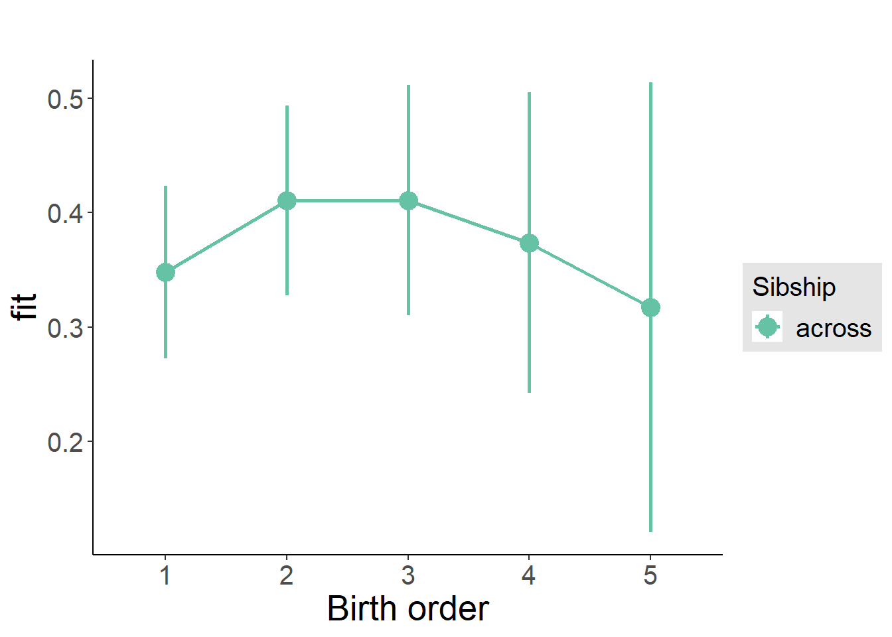
Add Interaction
Model Summary
m4_interaction = update(m3_birthorder_nonlinear, formula = . ~ . - birth_order_nonlinear - sibling_count + count_birth_order)
tidy(m4_interaction, conf.int = T)| term | estimate | std.error | statistic | conf.low | conf.high | group |
|---|---|---|---|---|---|---|
| (Intercept) | 0.4737 | 0.0535 | 8.854 | 0.3688 | 0.5785 | fixed |
| age | -0.008711 | 0.001873 | -4.65 | -0.01238 | -0.005039 | fixed |
| male | 0.0804 | 0.02545 | 3.16 | 0.03053 | 0.1303 | fixed |
| count_birth_order2/2 | 0.02926 | 0.05417 | 0.5401 | -0.07691 | 0.1354 | fixed |
| count_birth_order1/3 | -0.001203 | 0.04847 | -0.02482 | -0.0962 | 0.0938 | fixed |
| count_birth_order2/3 | 0.07149 | 0.05231 | 1.367 | -0.03103 | 0.174 | fixed |
| count_birth_order3/3 | 0.09448 | 0.05881 | 1.607 | -0.02077 | 0.2097 | fixed |
| count_birth_order1/4 | -0.08708 | 0.05709 | -1.525 | -0.199 | 0.02481 | fixed |
| count_birth_order2/4 | 0.03871 | 0.05829 | 0.6641 | -0.07553 | 0.1529 | fixed |
| count_birth_order3/4 | 0.05181 | 0.06347 | 0.8162 | -0.07259 | 0.1762 | fixed |
| count_birth_order4/4 | 0.02601 | 0.06545 | 0.3974 | -0.1023 | 0.1543 | fixed |
| count_birth_order1/5 | 0.001344 | 0.06779 | 0.01982 | -0.1315 | 0.1342 | fixed |
| count_birth_order2/5 | 0.04283 | 0.07289 | 0.5876 | -0.1 | 0.1857 | fixed |
| count_birth_order3/5 | -0.02441 | 0.07057 | -0.3459 | -0.1627 | 0.1139 | fixed |
| count_birth_order4/5 | -0.02023 | 0.07298 | -0.2771 | -0.1633 | 0.1228 | fixed |
| count_birth_order5/5 | -0.04712 | 0.07275 | -0.6478 | -0.1897 | 0.09546 | fixed |
| sd_(Intercept).mother_pidlink | 0.3975 | NA | NA | NA | NA | mother_pidlink |
| sd_Observation.Residual | 0.7391 | NA | NA | NA | NA | Residual |
Coefficient Plot
plot_birthorder(m4_interaction)Model Comparison
###### Model 1 - Model 2
anova(m1_covariates_only, m2_birthorder_linear, m3_birthorder_nonlinear, m4_interaction)## refitting model(s) with ML (instead of REML)| Df | AIC | BIC | logLik | deviance | Chisq | Chi Df | Pr(>Chisq) |
|---|---|---|---|---|---|---|---|
| 8 | 10378 | 10429 | -5181 | 10362 | NA | NA | NA |
| 9 | 10378 | 10435 | -5180 | 10360 | 1.914 | 1 | 0.1666 |
| 12 | 10379 | 10455 | -5178 | 10355 | 5.103 | 3 | 0.1644 |
| 18 | 10387 | 10502 | -5176 | 10351 | 3.773 | 6 | 0.7074 |
Parental full sibling order
outcome_parental_m1 <- update(m2_birthorder_linear, data = birthorder %>%
mutate(sibling_count = sibling_count_genes_factor,
birth_order_nonlinear = birthorder_genes_factor,
birth_order = birthorder_genes,
count_birth_order = count_birthorder_genes
) %>%
filter(sibling_count != "1"))
compare_models_markdown(outcome_parental_m1)Basic Model
Model Summary
m1_covariates_only <- update(m2_birthorder_linear, formula = . ~ . - birth_order)
tidy(m1_covariates_only, conf.int = T)| term | estimate | std.error | statistic | conf.low | conf.high | group |
|---|---|---|---|---|---|---|
| (Intercept) | 0.517 | 0.04776 | 10.82 | 0.4234 | 0.6106 | fixed |
| age | -0.009178 | 0.001779 | -5.159 | -0.01267 | -0.005691 | fixed |
| male | 0.06996 | 0.02466 | 2.837 | 0.02162 | 0.1183 | fixed |
| sibling_count3 | 0.02356 | 0.0346 | 0.681 | -0.04425 | 0.09137 | fixed |
| sibling_count4 | -0.03013 | 0.03779 | -0.7973 | -0.1042 | 0.04394 | fixed |
| sibling_count5 | -0.08541 | 0.04495 | -1.9 | -0.1735 | 0.002693 | fixed |
| sd_(Intercept).mother_pidlink | 0.4125 | NA | NA | NA | NA | mother_pidlink |
| sd_Observation.Residual | 0.7378 | NA | NA | NA | NA | Residual |
Coefficient Plot
plot(allEffects(m1_covariates_only))Add Birth Order Linear
Model Summary
tidy(m2_birthorder_linear, conf.int = T)| term | estimate | std.error | statistic | conf.low | conf.high | group |
|---|---|---|---|---|---|---|
| (Intercept) | 0.4787 | 0.05323 | 8.992 | 0.3744 | 0.583 | fixed |
| birth_order | 0.02099 | 0.0129 | 1.627 | -0.0043 | 0.04627 | fixed |
| age | -0.008688 | 0.001804 | -4.815 | -0.01222 | -0.005152 | fixed |
| male | 0.06933 | 0.02466 | 2.811 | 0.021 | 0.1177 | fixed |
| sibling_count3 | 0.01364 | 0.03512 | 0.3883 | -0.0552 | 0.08248 | fixed |
| sibling_count4 | -0.05272 | 0.04025 | -1.31 | -0.1316 | 0.02617 | fixed |
| sibling_count5 | -0.1215 | 0.05012 | -2.424 | -0.2198 | -0.02327 | fixed |
| sd_(Intercept).mother_pidlink | 0.4123 | NA | NA | NA | NA | mother_pidlink |
| sd_Observation.Residual | 0.7377 | NA | NA | NA | NA | Residual |
Coefficient Plot
plot_birthorder2(m2_birthorder_linear, separate = FALSE)
Add Birth Order Factor
Model Summary
m3_birthorder_nonlinear = update(m1_covariates_only, formula = . ~ . + birth_order_nonlinear)
tidy(m3_birthorder_nonlinear, conf.int = T)| term | estimate | std.error | statistic | conf.low | conf.high | group |
|---|---|---|---|---|---|---|
| (Intercept) | 0.4865 | 0.04941 | 9.845 | 0.3896 | 0.5833 | fixed |
| age | -0.008882 | 0.001806 | -4.918 | -0.01242 | -0.005342 | fixed |
| male | 0.06994 | 0.02466 | 2.836 | 0.0216 | 0.1183 | fixed |
| sibling_count3 | 0.009955 | 0.0356 | 0.2797 | -0.05981 | 0.07972 | fixed |
| sibling_count4 | -0.05404 | 0.04077 | -1.325 | -0.1339 | 0.02587 | fixed |
| sibling_count5 | -0.09959 | 0.051 | -1.953 | -0.1995 | 0.0003589 | fixed |
| birth_order_nonlinear2 | 0.07202 | 0.02854 | 2.524 | 0.01608 | 0.128 | fixed |
| birth_order_nonlinear3 | 0.06494 | 0.03658 | 1.775 | -0.00676 | 0.1366 | fixed |
| birth_order_nonlinear4 | 0.06487 | 0.05043 | 1.286 | -0.03398 | 0.1637 | fixed |
| birth_order_nonlinear5 | -0.00953 | 0.08235 | -0.1157 | -0.1709 | 0.1519 | fixed |
| sd_(Intercept).mother_pidlink | 0.4106 | NA | NA | NA | NA | mother_pidlink |
| sd_Observation.Residual | 0.7382 | NA | NA | NA | NA | Residual |
Coefficient Plot
plot_birthorder(m3_birthorder_nonlinear, separate = FALSE)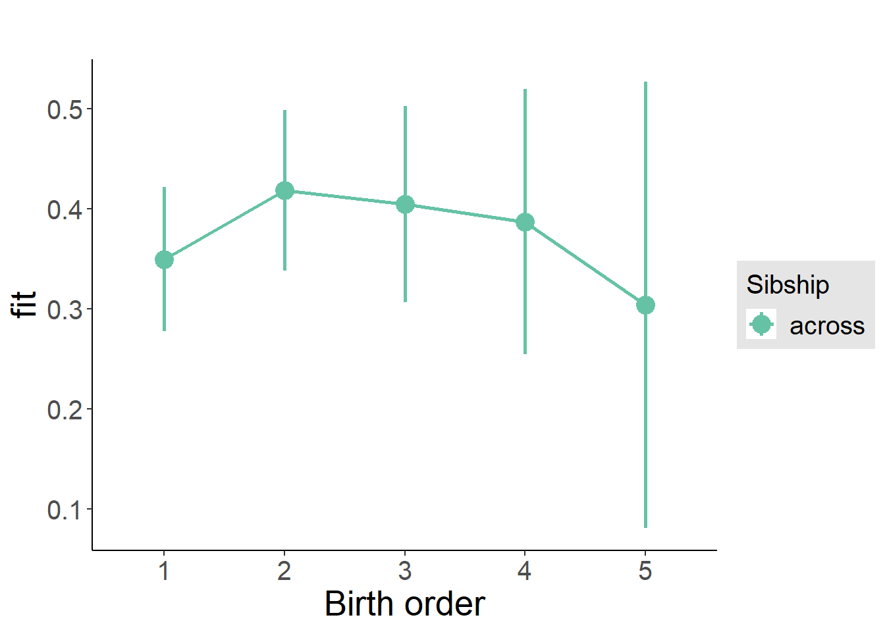
Add Interaction
Model Summary
m4_interaction = update(m3_birthorder_nonlinear, formula = . ~ . - birth_order_nonlinear - sibling_count + count_birth_order)
tidy(m4_interaction, conf.int = T)| term | estimate | std.error | statistic | conf.low | conf.high | group |
|---|---|---|---|---|---|---|
| (Intercept) | 0.4916 | 0.05097 | 9.645 | 0.3917 | 0.5915 | fixed |
| age | -0.008838 | 0.001807 | -4.89 | -0.01238 | -0.005296 | fixed |
| male | 0.07028 | 0.02468 | 2.847 | 0.0219 | 0.1187 | fixed |
| count_birth_order2/2 | 0.05369 | 0.04822 | 1.113 | -0.04081 | 0.1482 | fixed |
| count_birth_order1/3 | -0.006755 | 0.0445 | -0.1518 | -0.09397 | 0.08046 | fixed |
| count_birth_order2/3 | 0.09891 | 0.04887 | 2.024 | 0.003124 | 0.1947 | fixed |
| count_birth_order3/3 | 0.05841 | 0.05361 | 1.089 | -0.04667 | 0.1635 | fixed |
| count_birth_order1/4 | -0.07028 | 0.05508 | -1.276 | -0.1782 | 0.03768 | fixed |
| count_birth_order2/4 | -0.002115 | 0.05673 | -0.03729 | -0.1133 | 0.1091 | fixed |
| count_birth_order3/4 | 0.02229 | 0.05907 | 0.3774 | -0.09348 | 0.1381 | fixed |
| count_birth_order4/4 | 0.01734 | 0.06218 | 0.2788 | -0.1045 | 0.1392 | fixed |
| count_birth_order1/5 | -0.07138 | 0.07435 | -0.96 | -0.2171 | 0.07435 | fixed |
| count_birth_order2/5 | -0.04743 | 0.08206 | -0.5781 | -0.2083 | 0.1134 | fixed |
| count_birth_order3/5 | -0.04826 | 0.07793 | -0.6193 | -0.201 | 0.1045 | fixed |
| count_birth_order4/5 | -0.06106 | 0.07551 | -0.8086 | -0.2091 | 0.08694 | fixed |
| count_birth_order5/5 | -0.116 | 0.07963 | -1.457 | -0.2721 | 0.04005 | fixed |
| sd_(Intercept).mother_pidlink | 0.4096 | NA | NA | NA | NA | mother_pidlink |
| sd_Observation.Residual | 0.7392 | NA | NA | NA | NA | Residual |
Coefficient Plot
plot_birthorder(m4_interaction)
Model Comparison
###### Model 1 - Model 2
anova(m1_covariates_only, m2_birthorder_linear, m3_birthorder_nonlinear, m4_interaction)## refitting model(s) with ML (instead of REML)| Df | AIC | BIC | logLik | deviance | Chisq | Chi Df | Pr(>Chisq) |
|---|---|---|---|---|---|---|---|
| 8 | 11180 | 11232 | -5582 | 11164 | NA | NA | NA |
| 9 | 11180 | 11238 | -5581 | 11162 | 2.649 | 1 | 0.1036 |
| 12 | 11180 | 11257 | -5578 | 11156 | 5.369 | 3 | 0.1467 |
| 18 | 11191 | 11306 | -5577 | 11155 | 1.473 | 6 | 0.9613 |
Compare birth order specifications
library(coefplot)
multiplot(outcome_naive_m1, outcome_preg_m1, outcome_uterus_m1, outcome_parental_m1, dodgeHeight = 0.6,
intercept = FALSE)Numeracy 2015 old
birthorder <- birthorder %>% mutate(outcome = math_2015_old)
model = lmer(outcome ~ birth_order + age + male + sibling_count + (1 | mother_pidlink),
data = birthorder)
compare_birthorder_specs(model)Naive birth order
outcome_naive_m1 <- update(m2_birthorder_linear, data = birthorder %>%
mutate(sibling_count = sibling_count_naive_factor,
birth_order_nonlinear = birthorder_naive_factor,
birth_order = birthorder_naive,
count_birth_order = count_birthorder_naive) %>%
filter(sibling_count != "1"))
compare_models_markdown(outcome_naive_m1)Basic Model
Model Summary
m1_covariates_only <- update(m2_birthorder_linear, formula = . ~ . - birth_order)
tidy(m1_covariates_only, conf.int = T)| term | estimate | std.error | statistic | conf.low | conf.high | group |
|---|---|---|---|---|---|---|
| (Intercept) | 0.6507 | 0.045 | 14.46 | 0.5625 | 0.7389 | fixed |
| age | -0.01756 | 0.001198 | -14.66 | -0.01991 | -0.01521 | fixed |
| male | -0.1125 | 0.02363 | -4.761 | -0.1588 | -0.06619 | fixed |
| sibling_count3 | 0.03283 | 0.03545 | 0.926 | -0.03666 | 0.1023 | fixed |
| sibling_count4 | -0.04475 | 0.0365 | -1.226 | -0.1163 | 0.02679 | fixed |
| sibling_count5 | -0.01036 | 0.03801 | -0.2726 | -0.08487 | 0.06414 | fixed |
| sd_(Intercept).mother_pidlink | 0.4698 | NA | NA | NA | NA | mother_pidlink |
| sd_Observation.Residual | 0.9011 | NA | NA | NA | NA | Residual |
Coefficient Plot
plot(allEffects(m1_covariates_only))Add Birth Order Linear
Model Summary
tidy(m2_birthorder_linear, conf.int = T)| term | estimate | std.error | statistic | conf.low | conf.high | group |
|---|---|---|---|---|---|---|
| (Intercept) | 0.6308 | 0.04922 | 12.82 | 0.5344 | 0.7273 | fixed |
| birth_order | 0.01151 | 0.01155 | 0.9969 | -0.01112 | 0.03414 | fixed |
| age | -0.01741 | 0.001207 | -14.43 | -0.01978 | -0.01505 | fixed |
| male | -0.1128 | 0.02363 | -4.773 | -0.1591 | -0.06648 | fixed |
| sibling_count3 | 0.02877 | 0.03568 | 0.8063 | -0.04116 | 0.0987 | fixed |
| sibling_count4 | -0.05446 | 0.03778 | -1.442 | -0.1285 | 0.01958 | fixed |
| sibling_count5 | -0.02604 | 0.04114 | -0.633 | -0.1067 | 0.05459 | fixed |
| sd_(Intercept).mother_pidlink | 0.4692 | NA | NA | NA | NA | mother_pidlink |
| sd_Observation.Residual | 0.9013 | NA | NA | NA | NA | Residual |
Coefficient Plot
plot_birthorder2(m2_birthorder_linear, separate = FALSE)Add Birth Order Factor
Model Summary
m3_birthorder_nonlinear = update(m1_covariates_only, formula = . ~ . + birth_order_nonlinear)
tidy(m3_birthorder_nonlinear, conf.int = T)| term | estimate | std.error | statistic | conf.low | conf.high | group |
|---|---|---|---|---|---|---|
| (Intercept) | 0.652 | 0.04647 | 14.03 | 0.5609 | 0.7431 | fixed |
| age | -0.01735 | 0.001207 | -14.37 | -0.01972 | -0.01499 | fixed |
| male | -0.1126 | 0.02364 | -4.765 | -0.159 | -0.0663 | fixed |
| sibling_count3 | 0.02894 | 0.03616 | 0.8004 | -0.04192 | 0.0998 | fixed |
| sibling_count4 | -0.05362 | 0.03831 | -1.399 | -0.1287 | 0.02148 | fixed |
| sibling_count5 | -0.03277 | 0.04143 | -0.7908 | -0.114 | 0.04844 | fixed |
| birth_order_nonlinear2 | -0.01986 | 0.02749 | -0.7227 | -0.07373 | 0.03401 | fixed |
| birth_order_nonlinear3 | 0.01497 | 0.03518 | 0.4256 | -0.05398 | 0.08393 | fixed |
| birth_order_nonlinear4 | 0.024 | 0.0458 | 0.524 | -0.06577 | 0.1138 | fixed |
| birth_order_nonlinear5 | 0.08185 | 0.06701 | 1.222 | -0.04949 | 0.2132 | fixed |
| sd_(Intercept).mother_pidlink | 0.4687 | NA | NA | NA | NA | mother_pidlink |
| sd_Observation.Residual | 0.9016 | NA | NA | NA | NA | Residual |
Coefficient Plot
plot_birthorder(m3_birthorder_nonlinear, separate = FALSE)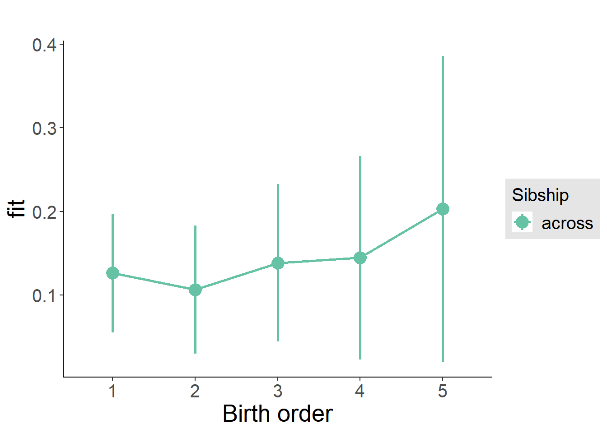
Add Interaction
Model Summary
m4_interaction = update(m3_birthorder_nonlinear, formula = . ~ . - birth_order_nonlinear - sibling_count + count_birth_order)
tidy(m4_interaction, conf.int = T)| term | estimate | std.error | statistic | conf.low | conf.high | group |
|---|---|---|---|---|---|---|
| (Intercept) | 0.6455 | 0.04829 | 13.37 | 0.5509 | 0.7402 | fixed |
| age | -0.01734 | 0.001209 | -14.35 | -0.01971 | -0.01497 | fixed |
| male | -0.1121 | 0.02365 | -4.74 | -0.1584 | -0.06574 | fixed |
| count_birth_order2/2 | -0.00379 | 0.04712 | -0.08043 | -0.09615 | 0.08857 | fixed |
| count_birth_order1/3 | 0.04948 | 0.04598 | 1.076 | -0.04063 | 0.1396 | fixed |
| count_birth_order2/3 | 0.0113 | 0.05099 | 0.2215 | -0.08863 | 0.1112 | fixed |
| count_birth_order3/3 | 0.02405 | 0.05688 | 0.4229 | -0.08743 | 0.1355 | fixed |
| count_birth_order1/4 | -0.0455 | 0.05196 | -0.8757 | -0.1473 | 0.05634 | fixed |
| count_birth_order2/4 | -0.05763 | 0.05469 | -1.054 | -0.1648 | 0.04956 | fixed |
| count_birth_order3/4 | -0.02955 | 0.05911 | -0.5 | -0.1454 | 0.0863 | fixed |
| count_birth_order4/4 | -0.04622 | 0.06216 | -0.7436 | -0.1681 | 0.07561 | fixed |
| count_birth_order1/5 | -0.04511 | 0.0589 | -0.7659 | -0.1605 | 0.07033 | fixed |
| count_birth_order2/5 | -0.0743 | 0.0615 | -1.208 | -0.1948 | 0.04625 | fixed |
| count_birth_order3/5 | 0.01783 | 0.06327 | 0.2818 | -0.1062 | 0.1418 | fixed |
| count_birth_order4/5 | 0.02455 | 0.06679 | 0.3675 | -0.1064 | 0.1555 | fixed |
| count_birth_order5/5 | 0.05571 | 0.06855 | 0.8127 | -0.07865 | 0.1901 | fixed |
| sd_(Intercept).mother_pidlink | 0.4691 | NA | NA | NA | NA | mother_pidlink |
| sd_Observation.Residual | 0.9017 | NA | NA | NA | NA | Residual |
Coefficient Plot
plot_birthorder(m4_interaction)Model Comparison
###### Model 1 - Model 2
anova(m1_covariates_only, m2_birthorder_linear, m3_birthorder_nonlinear, m4_interaction)## refitting model(s) with ML (instead of REML)| Df | AIC | BIC | logLik | deviance | Chisq | Chi Df | Pr(>Chisq) |
|---|---|---|---|---|---|---|---|
| 8 | 20270 | 20325 | -10127 | 20254 | NA | NA | NA |
| 9 | 20271 | 20332 | -10126 | 20253 | 0.9955 | 1 | 0.3184 |
| 12 | 20275 | 20357 | -10125 | 20251 | 1.907 | 3 | 0.5919 |
| 18 | 20285 | 20409 | -10124 | 20249 | 1.87 | 6 | 0.9312 |
Maternal birth order
outcome_uterus_m1 <- update(m2_birthorder_linear, data = birthorder %>%
mutate(sibling_count = sibling_count_uterus_alive_factor,
birth_order_nonlinear = birthorder_uterus_alive_factor,
birth_order = birthorder_uterus_alive,
count_birth_order = count_birthorder_uterus_alive) %>%
filter(sibling_count != "1"))
compare_models_markdown(outcome_uterus_m1)Basic Model
Model Summary
m1_covariates_only <- update(m2_birthorder_linear, formula = . ~ . - birth_order)
tidy(m1_covariates_only, conf.int = T)| term | estimate | std.error | statistic | conf.low | conf.high | group |
|---|---|---|---|---|---|---|
| (Intercept) | 0.5719 | 0.05828 | 9.812 | 0.4576 | 0.6861 | fixed |
| age | -0.006898 | 0.002158 | -3.196 | -0.01113 | -0.002668 | fixed |
| male | -0.1815 | 0.03022 | -6.004 | -0.2407 | -0.1222 | fixed |
| sibling_count3 | 0.01274 | 0.04228 | 0.3013 | -0.07013 | 0.0956 | fixed |
| sibling_count4 | -0.08645 | 0.04575 | -1.889 | -0.1761 | 0.003224 | fixed |
| sibling_count5 | -0.1326 | 0.05256 | -2.522 | -0.2356 | -0.02954 | fixed |
| sd_(Intercept).mother_pidlink | 0.4437 | NA | NA | NA | NA | mother_pidlink |
| sd_Observation.Residual | 0.9288 | NA | NA | NA | NA | Residual |
Coefficient Plot
plot(allEffects(m1_covariates_only))Add Birth Order Linear
Model Summary
tidy(m2_birthorder_linear, conf.int = T)| term | estimate | std.error | statistic | conf.low | conf.high | group |
|---|---|---|---|---|---|---|
| (Intercept) | 0.5377 | 0.06448 | 8.34 | 0.4114 | 0.6641 | fixed |
| birth_order | 0.01941 | 0.01569 | 1.237 | -0.01135 | 0.05016 | fixed |
| age | -0.006495 | 0.002182 | -2.976 | -0.01077 | -0.002218 | fixed |
| male | -0.1822 | 0.03023 | -6.028 | -0.2414 | -0.123 | fixed |
| sibling_count3 | 0.003626 | 0.04291 | 0.08449 | -0.08048 | 0.08773 | fixed |
| sibling_count4 | -0.1072 | 0.04872 | -2.2 | -0.2026 | -0.01168 | fixed |
| sibling_count5 | -0.1672 | 0.05957 | -2.808 | -0.284 | -0.05049 | fixed |
| sd_(Intercept).mother_pidlink | 0.4433 | NA | NA | NA | NA | mother_pidlink |
| sd_Observation.Residual | 0.9288 | NA | NA | NA | NA | Residual |
Coefficient Plot
plot_birthorder2(m2_birthorder_linear, separate = FALSE)Add Birth Order Factor
Model Summary
m3_birthorder_nonlinear = update(m1_covariates_only, formula = . ~ . + birth_order_nonlinear)
tidy(m3_birthorder_nonlinear, conf.int = T)| term | estimate | std.error | statistic | conf.low | conf.high | group |
|---|---|---|---|---|---|---|
| (Intercept) | 0.5599 | 0.06019 | 9.302 | 0.4419 | 0.6778 | fixed |
| age | -0.006561 | 0.002186 | -3.002 | -0.01085 | -0.002277 | fixed |
| male | -0.182 | 0.03024 | -6.018 | -0.2413 | -0.1227 | fixed |
| sibling_count3 | -0.00246 | 0.04353 | -0.05651 | -0.08778 | 0.08287 | fixed |
| sibling_count4 | -0.1074 | 0.0494 | -2.174 | -0.2042 | -0.01058 | fixed |
| sibling_count5 | -0.1669 | 0.06052 | -2.758 | -0.2855 | -0.04831 | fixed |
| birth_order_nonlinear2 | 0.0151 | 0.03552 | 0.425 | -0.05452 | 0.08472 | fixed |
| birth_order_nonlinear3 | 0.06592 | 0.04539 | 1.452 | -0.02304 | 0.1549 | fixed |
| birth_order_nonlinear4 | 0.02921 | 0.06101 | 0.4788 | -0.09037 | 0.1488 | fixed |
| birth_order_nonlinear5 | 0.0791 | 0.09496 | 0.833 | -0.107 | 0.2652 | fixed |
| sd_(Intercept).mother_pidlink | 0.4426 | NA | NA | NA | NA | mother_pidlink |
| sd_Observation.Residual | 0.9294 | NA | NA | NA | NA | Residual |
Coefficient Plot
plot_birthorder(m3_birthorder_nonlinear, separate = FALSE)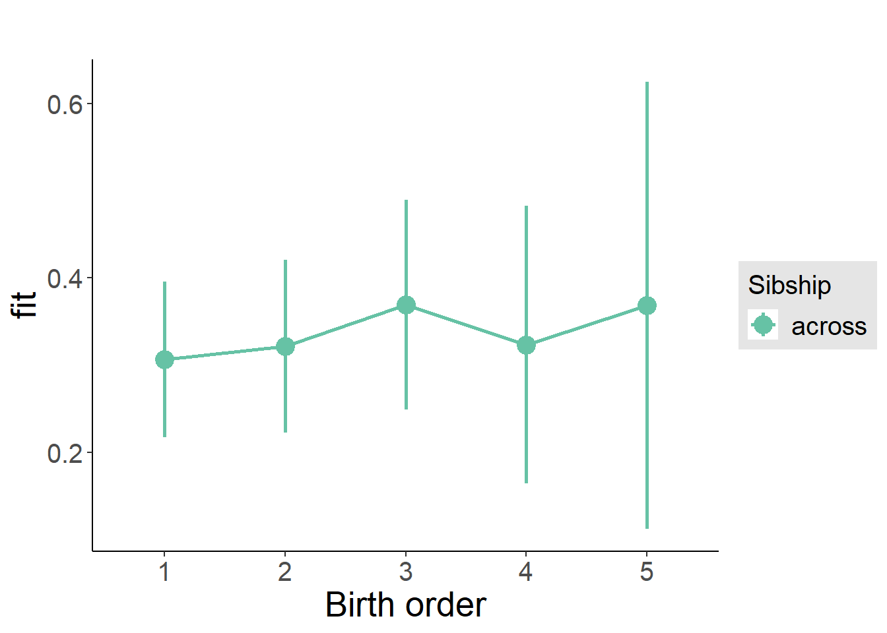
Add Interaction
Model Summary
m4_interaction = update(m3_birthorder_nonlinear, formula = . ~ . - birth_order_nonlinear - sibling_count + count_birth_order)
tidy(m4_interaction, conf.int = T)| term | estimate | std.error | statistic | conf.low | conf.high | group |
|---|---|---|---|---|---|---|
| (Intercept) | 0.5507 | 0.06214 | 8.862 | 0.4289 | 0.6725 | fixed |
| age | -0.006506 | 0.002187 | -2.974 | -0.01079 | -0.002219 | fixed |
| male | -0.1814 | 0.03027 | -5.993 | -0.2407 | -0.1221 | fixed |
| count_birth_order2/2 | 0.03847 | 0.06125 | 0.628 | -0.08159 | 0.1585 | fixed |
| count_birth_order1/3 | 0.00963 | 0.05503 | 0.175 | -0.09823 | 0.1175 | fixed |
| count_birth_order2/3 | 0.0272 | 0.05984 | 0.4546 | -0.09008 | 0.1445 | fixed |
| count_birth_order3/3 | 0.05258 | 0.06686 | 0.7865 | -0.07846 | 0.1836 | fixed |
| count_birth_order1/4 | -0.1006 | 0.06707 | -1.5 | -0.232 | 0.03086 | fixed |
| count_birth_order2/4 | -0.1296 | 0.06935 | -1.869 | -0.2656 | 0.006295 | fixed |
| count_birth_order3/4 | -0.02963 | 0.07306 | -0.4055 | -0.1728 | 0.1136 | fixed |
| count_birth_order4/4 | -0.01576 | 0.07595 | -0.2075 | -0.1646 | 0.1331 | fixed |
| count_birth_order1/5 | -0.1386 | 0.091 | -1.523 | -0.3169 | 0.0398 | fixed |
| count_birth_order2/5 | -0.1082 | 0.09744 | -1.11 | -0.2992 | 0.0828 | fixed |
| count_birth_order3/5 | -0.05974 | 0.09149 | -0.6529 | -0.2391 | 0.1196 | fixed |
| count_birth_order4/5 | -0.2088 | 0.08825 | -2.366 | -0.3817 | -0.0358 | fixed |
| count_birth_order5/5 | -0.08114 | 0.09128 | -0.8889 | -0.2601 | 0.09777 | fixed |
| sd_(Intercept).mother_pidlink | 0.4421 | NA | NA | NA | NA | mother_pidlink |
| sd_Observation.Residual | 0.93 | NA | NA | NA | NA | Residual |
Coefficient Plot
plot_birthorder(m4_interaction)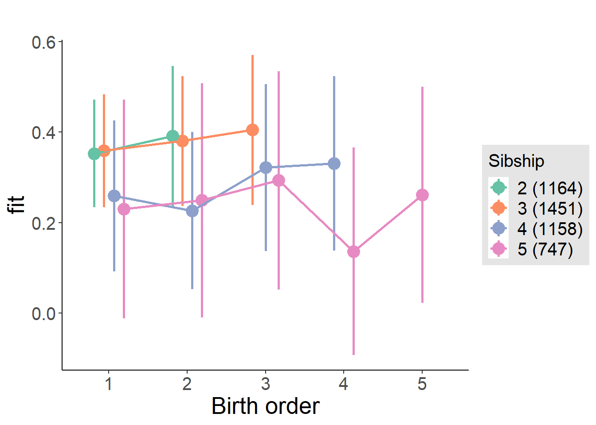
Model Comparison
###### Model 1 - Model 2
anova(m1_covariates_only, m2_birthorder_linear, m3_birthorder_nonlinear, m4_interaction)## refitting model(s) with ML (instead of REML)| Df | AIC | BIC | logLik | deviance | Chisq | Chi Df | Pr(>Chisq) |
|---|---|---|---|---|---|---|---|
| 8 | 13039 | 13091 | -6512 | 13023 | NA | NA | NA |
| 9 | 13040 | 13098 | -6511 | 13022 | 1.532 | 1 | 0.2158 |
| 12 | 13045 | 13122 | -6510 | 13021 | 0.9034 | 3 | 0.8246 |
| 18 | 13054 | 13169 | -6509 | 13018 | 3.134 | 6 | 0.7919 |
Maternal pregnancy order
outcome_preg_m1 <- update(m2_birthorder_linear, data = birthorder %>%
mutate(sibling_count = sibling_count_uterus_preg_factor,
birth_order_nonlinear = birthorder_uterus_preg_factor,
birth_order = birthorder_uterus_preg,
count_birth_order = count_birthorder_uterus_preg
) %>%
filter(sibling_count != "1"))
compare_models_markdown(outcome_preg_m1)Basic Model
Model Summary
m1_covariates_only <- update(m2_birthorder_linear, formula = . ~ . - birth_order)
tidy(m1_covariates_only, conf.int = T)| term | estimate | std.error | statistic | conf.low | conf.high | group |
|---|---|---|---|---|---|---|
| (Intercept) | 0.578 | 0.06118 | 9.446 | 0.4581 | 0.6979 | fixed |
| age | -0.007636 | 0.002256 | -3.385 | -0.01206 | -0.003214 | fixed |
| male | -0.1808 | 0.03142 | -5.756 | -0.2424 | -0.1193 | fixed |
| sibling_count3 | 0.02971 | 0.04573 | 0.6497 | -0.05992 | 0.1193 | fixed |
| sibling_count4 | -0.07121 | 0.04844 | -1.47 | -0.1661 | 0.02372 | fixed |
| sibling_count5 | -0.08014 | 0.05207 | -1.539 | -0.1822 | 0.02191 | fixed |
| sd_(Intercept).mother_pidlink | 0.4429 | NA | NA | NA | NA | mother_pidlink |
| sd_Observation.Residual | 0.9306 | NA | NA | NA | NA | Residual |
Coefficient Plot
plot(allEffects(m1_covariates_only))
Add Birth Order Linear
Model Summary
tidy(m2_birthorder_linear, conf.int = T)| term | estimate | std.error | statistic | conf.low | conf.high | group |
|---|---|---|---|---|---|---|
| (Intercept) | 0.5705 | 0.06738 | 8.467 | 0.4385 | 0.7026 | fixed |
| birth_order | 0.004159 | 0.01577 | 0.2638 | -0.02675 | 0.03507 | fixed |
| age | -0.007544 | 0.002283 | -3.305 | -0.01202 | -0.00307 | fixed |
| male | -0.181 | 0.03143 | -5.758 | -0.2426 | -0.1194 | fixed |
| sibling_count3 | 0.02777 | 0.04633 | 0.5994 | -0.06303 | 0.1186 | fixed |
| sibling_count4 | -0.0755 | 0.05111 | -1.477 | -0.1757 | 0.02466 | fixed |
| sibling_count5 | -0.08701 | 0.05823 | -1.494 | -0.2011 | 0.02712 | fixed |
| sd_(Intercept).mother_pidlink | 0.4428 | NA | NA | NA | NA | mother_pidlink |
| sd_Observation.Residual | 0.9308 | NA | NA | NA | NA | Residual |
Coefficient Plot
plot_birthorder2(m2_birthorder_linear, separate = FALSE)Add Birth Order Factor
Model Summary
m3_birthorder_nonlinear = update(m1_covariates_only, formula = . ~ . + birth_order_nonlinear)
tidy(m3_birthorder_nonlinear, conf.int = T)| term | estimate | std.error | statistic | conf.low | conf.high | group |
|---|---|---|---|---|---|---|
| (Intercept) | 0.5758 | 0.06319 | 9.112 | 0.4519 | 0.6996 | fixed |
| age | -0.007651 | 0.002287 | -3.346 | -0.01213 | -0.003169 | fixed |
| male | -0.1809 | 0.03144 | -5.756 | -0.2425 | -0.1193 | fixed |
| sibling_count3 | 0.01842 | 0.04696 | 0.3923 | -0.07362 | 0.1105 | fixed |
| sibling_count4 | -0.08031 | 0.05179 | -1.551 | -0.1818 | 0.0212 | fixed |
| sibling_count5 | -0.08393 | 0.05883 | -1.427 | -0.1992 | 0.03136 | fixed |
| birth_order_nonlinear2 | 0.007659 | 0.0371 | 0.2064 | -0.06506 | 0.08038 | fixed |
| birth_order_nonlinear3 | 0.0509 | 0.047 | 1.083 | -0.04122 | 0.143 | fixed |
| birth_order_nonlinear4 | -0.006179 | 0.0622 | -0.09934 | -0.1281 | 0.1157 | fixed |
| birth_order_nonlinear5 | -0.02226 | 0.09084 | -0.2451 | -0.2003 | 0.1558 | fixed |
| sd_(Intercept).mother_pidlink | 0.4432 | NA | NA | NA | NA | mother_pidlink |
| sd_Observation.Residual | 0.9308 | NA | NA | NA | NA | Residual |
Coefficient Plot
plot_birthorder(m3_birthorder_nonlinear, separate = FALSE)Add Interaction
Model Summary
m4_interaction = update(m3_birthorder_nonlinear, formula = . ~ . - birth_order_nonlinear - sibling_count + count_birth_order)
tidy(m4_interaction, conf.int = T)| term | estimate | std.error | statistic | conf.low | conf.high | group |
|---|---|---|---|---|---|---|
| (Intercept) | 0.554 | 0.06553 | 8.453 | 0.4255 | 0.6824 | fixed |
| age | -0.007622 | 0.002288 | -3.331 | -0.01211 | -0.003137 | fixed |
| male | -0.1826 | 0.03146 | -5.805 | -0.2443 | -0.1209 | fixed |
| count_birth_order2/2 | 0.07368 | 0.06722 | 1.096 | -0.05807 | 0.2054 | fixed |
| count_birth_order1/3 | 0.07032 | 0.05964 | 1.179 | -0.04657 | 0.1872 | fixed |
| count_birth_order2/3 | 0.008348 | 0.06442 | 0.1296 | -0.1179 | 0.1346 | fixed |
| count_birth_order3/3 | 0.08944 | 0.0725 | 1.234 | -0.05266 | 0.2315 | fixed |
| count_birth_order1/4 | -0.1018 | 0.0703 | -1.448 | -0.2396 | 0.03598 | fixed |
| count_birth_order2/4 | -0.03549 | 0.07184 | -0.4941 | -0.1763 | 0.1053 | fixed |
| count_birth_order3/4 | -0.02248 | 0.07831 | -0.2871 | -0.176 | 0.131 | fixed |
| count_birth_order4/4 | -0.0005927 | 0.08075 | -0.007339 | -0.1589 | 0.1577 | fixed |
| count_birth_order1/5 | -0.005008 | 0.08354 | -0.05994 | -0.1687 | 0.1587 | fixed |
| count_birth_order2/5 | -0.06886 | 0.08996 | -0.7655 | -0.2452 | 0.1075 | fixed |
| count_birth_order3/5 | 0.01125 | 0.0871 | 0.1292 | -0.1595 | 0.182 | fixed |
| count_birth_order4/5 | -0.1517 | 0.09011 | -1.683 | -0.3283 | 0.02494 | fixed |
| count_birth_order5/5 | -0.08558 | 0.08982 | -0.9528 | -0.2616 | 0.09046 | fixed |
| sd_(Intercept).mother_pidlink | 0.4428 | NA | NA | NA | NA | mother_pidlink |
| sd_Observation.Residual | 0.931 | NA | NA | NA | NA | Residual |
Coefficient Plot
plot_birthorder(m4_interaction)Model Comparison
###### Model 1 - Model 2
anova(m1_covariates_only, m2_birthorder_linear, m3_birthorder_nonlinear, m4_interaction)## refitting model(s) with ML (instead of REML)| Df | AIC | BIC | logLik | deviance | Chisq | Chi Df | Pr(>Chisq) |
|---|---|---|---|---|---|---|---|
| 8 | 12127 | 12178 | -6055 | 12111 | NA | NA | NA |
| 9 | 12129 | 12186 | -6055 | 12111 | 0.06992 | 1 | 0.7915 |
| 12 | 12133 | 12210 | -6055 | 12109 | 1.499 | 3 | 0.6825 |
| 18 | 12140 | 12254 | -6052 | 12104 | 5.768 | 6 | 0.4497 |
Parental full sibling order
outcome_parental_m1 <- update(m2_birthorder_linear, data = birthorder %>%
mutate(sibling_count = sibling_count_genes_factor,
birth_order_nonlinear = birthorder_genes_factor,
birth_order = birthorder_genes,
count_birth_order = count_birthorder_genes
) %>%
filter(sibling_count != "1"))
compare_models_markdown(outcome_parental_m1)Basic Model
Model Summary
m1_covariates_only <- update(m2_birthorder_linear, formula = . ~ . - birth_order)
tidy(m1_covariates_only, conf.int = T)| term | estimate | std.error | statistic | conf.low | conf.high | group |
|---|---|---|---|---|---|---|
| (Intercept) | 0.5646 | 0.05802 | 9.732 | 0.4509 | 0.6783 | fixed |
| age | -0.00737 | 0.002159 | -3.413 | -0.0116 | -0.003138 | fixed |
| male | -0.1773 | 0.03029 | -5.854 | -0.2367 | -0.1179 | fixed |
| sibling_count3 | 0.01671 | 0.04178 | 0.4 | -0.06517 | 0.09859 | fixed |
| sibling_count4 | -0.06011 | 0.04552 | -1.32 | -0.1493 | 0.02912 | fixed |
| sibling_count5 | -0.1192 | 0.05401 | -2.206 | -0.225 | -0.01331 | fixed |
| sd_(Intercept).mother_pidlink | 0.448 | NA | NA | NA | NA | mother_pidlink |
| sd_Observation.Residual | 0.9271 | NA | NA | NA | NA | Residual |
Coefficient Plot
plot(allEffects(m1_covariates_only))Add Birth Order Linear
Model Summary
tidy(m2_birthorder_linear, conf.int = T)| term | estimate | std.error | statistic | conf.low | conf.high | group |
|---|---|---|---|---|---|---|
| (Intercept) | 0.5289 | 0.06445 | 8.207 | 0.4026 | 0.6553 | fixed |
| birth_order | 0.02018 | 0.01589 | 1.269 | -0.01097 | 0.05133 | fixed |
| age | -0.006953 | 0.002184 | -3.184 | -0.01123 | -0.002674 | fixed |
| male | -0.1779 | 0.03029 | -5.875 | -0.2373 | -0.1186 | fixed |
| sibling_count3 | 0.007234 | 0.04244 | 0.1705 | -0.07594 | 0.09041 | fixed |
| sibling_count4 | -0.08164 | 0.04858 | -1.681 | -0.1768 | 0.01357 | fixed |
| sibling_count5 | -0.1536 | 0.06044 | -2.542 | -0.2721 | -0.03515 | fixed |
| sd_(Intercept).mother_pidlink | 0.4478 | NA | NA | NA | NA | mother_pidlink |
| sd_Observation.Residual | 0.9271 | NA | NA | NA | NA | Residual |
Coefficient Plot
plot_birthorder2(m2_birthorder_linear, separate = FALSE)Add Birth Order Factor
Model Summary
m3_birthorder_nonlinear = update(m1_covariates_only, formula = . ~ . + birth_order_nonlinear)
tidy(m3_birthorder_nonlinear, conf.int = T)| term | estimate | std.error | statistic | conf.low | conf.high | group |
|---|---|---|---|---|---|---|
| (Intercept) | 0.5556 | 0.05998 | 9.264 | 0.4381 | 0.6732 | fixed |
| age | -0.006974 | 0.002187 | -3.189 | -0.01126 | -0.002687 | fixed |
| male | -0.1777 | 0.0303 | -5.864 | -0.2371 | -0.1183 | fixed |
| sibling_count3 | 0.0005989 | 0.04308 | 0.0139 | -0.08384 | 0.08503 | fixed |
| sibling_count4 | -0.08717 | 0.04928 | -1.769 | -0.1838 | 0.009418 | fixed |
| sibling_count5 | -0.1537 | 0.0616 | -2.494 | -0.2744 | -0.03292 | fixed |
| birth_order_nonlinear2 | 0.001949 | 0.03532 | 0.05518 | -0.06727 | 0.07117 | fixed |
| birth_order_nonlinear3 | 0.0669 | 0.0452 | 1.48 | -0.0217 | 0.1555 | fixed |
| birth_order_nonlinear4 | 0.05107 | 0.06225 | 0.8205 | -0.07093 | 0.1731 | fixed |
| birth_order_nonlinear5 | 0.04865 | 0.1017 | 0.4783 | -0.1507 | 0.248 | fixed |
| sd_(Intercept).mother_pidlink | 0.4479 | NA | NA | NA | NA | mother_pidlink |
| sd_Observation.Residual | 0.9273 | NA | NA | NA | NA | Residual |
Coefficient Plot
plot_birthorder(m3_birthorder_nonlinear, separate = FALSE)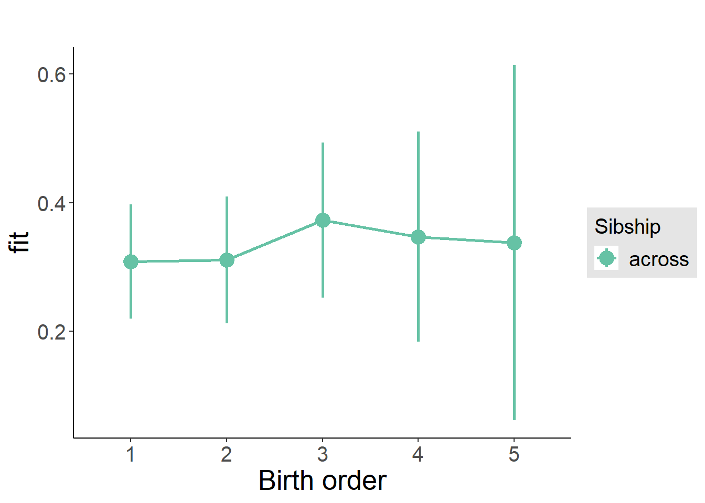
Add Interaction
Model Summary
m4_interaction = update(m3_birthorder_nonlinear, formula = . ~ . - birth_order_nonlinear - sibling_count + count_birth_order)
tidy(m4_interaction, conf.int = T)| term | estimate | std.error | statistic | conf.low | conf.high | group |
|---|---|---|---|---|---|---|
| (Intercept) | 0.5513 | 0.06192 | 8.904 | 0.4299 | 0.6727 | fixed |
| age | -0.006967 | 0.002189 | -3.183 | -0.01126 | -0.002677 | fixed |
| male | -0.1777 | 0.03032 | -5.86 | -0.2371 | -0.1183 | fixed |
| count_birth_order2/2 | 0.01439 | 0.05955 | 0.2417 | -0.1023 | 0.1311 | fixed |
| count_birth_order1/3 | 0.009306 | 0.05436 | 0.1712 | -0.09724 | 0.1159 | fixed |
| count_birth_order2/3 | 0.008979 | 0.0598 | 0.1502 | -0.1082 | 0.1262 | fixed |
| count_birth_order3/3 | 0.05987 | 0.06566 | 0.9118 | -0.06883 | 0.1886 | fixed |
| count_birth_order1/4 | -0.0956 | 0.06737 | -1.419 | -0.2277 | 0.03645 | fixed |
| count_birth_order2/4 | -0.1203 | 0.06947 | -1.731 | -0.2564 | 0.0159 | fixed |
| count_birth_order3/4 | 0.004879 | 0.0724 | 0.06739 | -0.137 | 0.1468 | fixed |
| count_birth_order4/4 | 0.01431 | 0.07624 | 0.1876 | -0.1351 | 0.1637 | fixed |
| count_birth_order1/5 | -0.1204 | 0.09107 | -1.323 | -0.2989 | 0.05804 | fixed |
| count_birth_order2/5 | -0.08487 | 0.1007 | -0.8429 | -0.2822 | 0.1125 | fixed |
| count_birth_order3/5 | -0.09308 | 0.09562 | -0.9735 | -0.2805 | 0.09432 | fixed |
| count_birth_order4/5 | -0.1714 | 0.0926 | -1.851 | -0.3529 | 0.01009 | fixed |
| count_birth_order5/5 | -0.1016 | 0.09771 | -1.04 | -0.2931 | 0.0899 | fixed |
| sd_(Intercept).mother_pidlink | 0.4471 | NA | NA | NA | NA | mother_pidlink |
| sd_Observation.Residual | 0.928 | NA | NA | NA | NA | Residual |
Coefficient Plot
plot_birthorder(m4_interaction)
Model Comparison
###### Model 1 - Model 2
anova(m1_covariates_only, m2_birthorder_linear, m3_birthorder_nonlinear, m4_interaction)## refitting model(s) with ML (instead of REML)| Df | AIC | BIC | logLik | deviance | Chisq | Chi Df | Pr(>Chisq) |
|---|---|---|---|---|---|---|---|
| 8 | 12994 | 13045 | -6489 | 12978 | NA | NA | NA |
| 9 | 12994 | 13052 | -6488 | 12976 | 1.614 | 1 | 0.2039 |
| 12 | 12999 | 13076 | -6488 | 12975 | 1.092 | 3 | 0.779 |
| 18 | 13008 | 13124 | -6486 | 12972 | 2.693 | 6 | 0.8462 |
Compare birth order specifications
library(coefplot)
multiplot(outcome_naive_m1, outcome_preg_m1, outcome_uterus_m1, outcome_parental_m1, dodgeHeight = 0.6,
intercept = FALSE)Raven 2015 young
birthorder <- birthorder %>% mutate(outcome = raven_2015_young)
model = lmer(outcome ~ birth_order + age + male + sibling_count + (1 | mother_pidlink),
data = birthorder)
compare_birthorder_specs(model)Naive birth order
outcome_naive_m1 <- update(m2_birthorder_linear, data = birthorder %>%
mutate(sibling_count = sibling_count_naive_factor,
birth_order_nonlinear = birthorder_naive_factor,
birth_order = birthorder_naive,
count_birth_order = count_birthorder_naive) %>%
filter(sibling_count != "1"))
compare_models_markdown(outcome_naive_m1)Basic Model
Model Summary
m1_covariates_only <- update(m2_birthorder_linear, formula = . ~ . - birth_order)
tidy(m1_covariates_only, conf.int = T)| term | estimate | std.error | statistic | conf.low | conf.high | group |
|---|---|---|---|---|---|---|
| (Intercept) | -0.7762 | 0.0331 | -23.45 | -0.8411 | -0.7113 | fixed |
| age | 0.05648 | 0.001939 | 29.12 | 0.05268 | 0.06028 | fixed |
| male | 0.05036 | 0.02011 | 2.505 | 0.01096 | 0.08977 | fixed |
| sibling_count3 | -0.0245 | 0.02892 | -0.8473 | -0.08119 | 0.03218 | fixed |
| sibling_count4 | -0.07348 | 0.03255 | -2.257 | -0.1373 | -0.009679 | fixed |
| sibling_count5 | -0.07837 | 0.03694 | -2.122 | -0.1508 | -0.005978 | fixed |
| sd_(Intercept).mother_pidlink | 0.5235 | NA | NA | NA | NA | mother_pidlink |
| sd_Observation.Residual | 0.7839 | NA | NA | NA | NA | Residual |
Coefficient Plot
plot(allEffects(m1_covariates_only))Add Birth Order Linear
Model Summary
tidy(m2_birthorder_linear, conf.int = T)| term | estimate | std.error | statistic | conf.low | conf.high | group |
|---|---|---|---|---|---|---|
| (Intercept) | -0.729 | 0.03958 | -18.42 | -0.8066 | -0.6515 | fixed |
| birth_order | -0.02399 | 0.01105 | -2.17 | -0.04565 | -0.002324 | fixed |
| age | 0.05523 | 0.002023 | 27.31 | 0.05127 | 0.0592 | fixed |
| male | 0.05062 | 0.0201 | 2.518 | 0.01122 | 0.09002 | fixed |
| sibling_count3 | -0.01091 | 0.02959 | -0.3686 | -0.06891 | 0.04709 | fixed |
| sibling_count4 | -0.04093 | 0.03584 | -1.142 | -0.1112 | 0.02932 | fixed |
| sibling_count5 | -0.02552 | 0.04425 | -0.5768 | -0.1122 | 0.0612 | fixed |
| sd_(Intercept).mother_pidlink | 0.524 | NA | NA | NA | NA | mother_pidlink |
| sd_Observation.Residual | 0.7835 | NA | NA | NA | NA | Residual |
Coefficient Plot
plot_birthorder2(m2_birthorder_linear, separate = FALSE)Add Birth Order Factor
Model Summary
m3_birthorder_nonlinear = update(m1_covariates_only, formula = . ~ . + birth_order_nonlinear)
tidy(m3_birthorder_nonlinear, conf.int = T)| term | estimate | std.error | statistic | conf.low | conf.high | group |
|---|---|---|---|---|---|---|
| (Intercept) | -0.7503 | 0.03538 | -21.21 | -0.8197 | -0.681 | fixed |
| age | 0.05524 | 0.002024 | 27.29 | 0.05127 | 0.0592 | fixed |
| male | 0.05074 | 0.02011 | 2.524 | 0.01133 | 0.09015 | fixed |
| sibling_count3 | -0.01176 | 0.03007 | -0.391 | -0.0707 | 0.04718 | fixed |
| sibling_count4 | -0.04068 | 0.03655 | -1.113 | -0.1123 | 0.03095 | fixed |
| sibling_count5 | -0.02847 | 0.0449 | -0.634 | -0.1165 | 0.05954 | fixed |
| birth_order_nonlinear2 | -0.03263 | 0.02339 | -1.395 | -0.07847 | 0.01322 | fixed |
| birth_order_nonlinear3 | -0.04344 | 0.0308 | -1.41 | -0.1038 | 0.01693 | fixed |
| birth_order_nonlinear4 | -0.08167 | 0.04179 | -1.954 | -0.1636 | 0.0002381 | fixed |
| birth_order_nonlinear5 | -0.08503 | 0.06079 | -1.399 | -0.2042 | 0.03412 | fixed |
| sd_(Intercept).mother_pidlink | 0.5239 | NA | NA | NA | NA | mother_pidlink |
| sd_Observation.Residual | 0.7837 | NA | NA | NA | NA | Residual |
Coefficient Plot
plot_birthorder(m3_birthorder_nonlinear, separate = FALSE)Add Interaction
Model Summary
m4_interaction = update(m3_birthorder_nonlinear, formula = . ~ . - birth_order_nonlinear - sibling_count + count_birth_order)
tidy(m4_interaction, conf.int = T)| term | estimate | std.error | statistic | conf.low | conf.high | group |
|---|---|---|---|---|---|---|
| (Intercept) | -0.7369 | 0.03645 | -20.22 | -0.8084 | -0.6655 | fixed |
| age | 0.05516 | 0.002024 | 27.25 | 0.05119 | 0.05913 | fixed |
| male | 0.05036 | 0.0201 | 2.505 | 0.01096 | 0.08976 | fixed |
| count_birth_order2/2 | -0.06995 | 0.03664 | -1.909 | -0.1418 | 0.00186 | fixed |
| count_birth_order1/3 | -0.0484 | 0.03776 | -1.282 | -0.1224 | 0.02561 | fixed |
| count_birth_order2/3 | -0.05477 | 0.03844 | -1.425 | -0.1301 | 0.02057 | fixed |
| count_birth_order3/3 | -0.02956 | 0.04347 | -0.6799 | -0.1147 | 0.05564 | fixed |
| count_birth_order1/4 | -0.05207 | 0.05177 | -1.006 | -0.1535 | 0.0494 | fixed |
| count_birth_order2/4 | -0.03075 | 0.04907 | -0.6266 | -0.1269 | 0.06543 | fixed |
| count_birth_order3/4 | -0.1708 | 0.04613 | -3.703 | -0.2613 | -0.08042 | fixed |
| count_birth_order4/4 | -0.09953 | 0.0503 | -1.979 | -0.1981 | -0.0009497 | fixed |
| count_birth_order1/5 | -0.01909 | 0.07029 | -0.2716 | -0.1569 | 0.1187 | fixed |
| count_birth_order2/5 | -0.1043 | 0.06677 | -1.562 | -0.2351 | 0.0266 | fixed |
| count_birth_order3/5 | -0.01822 | 0.06035 | -0.3018 | -0.1365 | 0.1001 | fixed |
| count_birth_order4/5 | -0.1688 | 0.05667 | -2.979 | -0.2799 | -0.05776 | fixed |
| count_birth_order5/5 | -0.1254 | 0.0562 | -2.231 | -0.2355 | -0.01522 | fixed |
| sd_(Intercept).mother_pidlink | 0.5246 | NA | NA | NA | NA | mother_pidlink |
| sd_Observation.Residual | 0.7829 | NA | NA | NA | NA | Residual |
Coefficient Plot
plot_birthorder(m4_interaction)Model Comparison
###### Model 1 - Model 2
anova(m1_covariates_only, m2_birthorder_linear, m3_birthorder_nonlinear, m4_interaction)## refitting model(s) with ML (instead of REML)| Df | AIC | BIC | logLik | deviance | Chisq | Chi Df | Pr(>Chisq) |
|---|---|---|---|---|---|---|---|
| 8 | 21835 | 21891 | -10909 | 21819 | NA | NA | NA |
| 9 | 21832 | 21895 | -10907 | 21814 | 4.71 | 1 | 0.02999 |
| 12 | 21838 | 21922 | -10907 | 21814 | 0.3699 | 3 | 0.9464 |
| 18 | 21837 | 21963 | -10900 | 21801 | 12.88 | 6 | 0.04503 |
Maternal birth order
outcome_uterus_m1 <- update(m2_birthorder_linear, data = birthorder %>%
mutate(sibling_count = sibling_count_uterus_alive_factor,
birth_order_nonlinear = birthorder_uterus_alive_factor,
birth_order = birthorder_uterus_alive,
count_birth_order = count_birthorder_uterus_alive) %>%
filter(sibling_count != "1"))
compare_models_markdown(outcome_uterus_m1)Basic Model
Model Summary
m1_covariates_only <- update(m2_birthorder_linear, formula = . ~ . - birth_order)
tidy(m1_covariates_only, conf.int = T)| term | estimate | std.error | statistic | conf.low | conf.high | group |
|---|---|---|---|---|---|---|
| (Intercept) | -0.8076 | 0.03293 | -24.52 | -0.8722 | -0.7431 | fixed |
| age | 0.06053 | 0.002008 | 30.14 | 0.0566 | 0.06447 | fixed |
| male | 0.04045 | 0.02093 | 1.932 | -0.0005771 | 0.08147 | fixed |
| sibling_count3 | -0.0369 | 0.02781 | -1.327 | -0.0914 | 0.0176 | fixed |
| sibling_count4 | -0.1004 | 0.03414 | -2.94 | -0.1673 | -0.03347 | fixed |
| sibling_count5 | -0.2141 | 0.04381 | -4.887 | -0.3 | -0.1282 | fixed |
| sd_(Intercept).mother_pidlink | 0.4939 | NA | NA | NA | NA | mother_pidlink |
| sd_Observation.Residual | 0.7941 | NA | NA | NA | NA | Residual |
Coefficient Plot
plot(allEffects(m1_covariates_only))Add Birth Order Linear
Model Summary
tidy(m2_birthorder_linear, conf.int = T)| term | estimate | std.error | statistic | conf.low | conf.high | group |
|---|---|---|---|---|---|---|
| (Intercept) | -0.7427 | 0.04084 | -18.18 | -0.8227 | -0.6626 | fixed |
| birth_order | -0.03433 | 0.01278 | -2.687 | -0.05937 | -0.009286 | fixed |
| age | 0.05905 | 0.002082 | 28.37 | 0.05497 | 0.06313 | fixed |
| male | 0.04098 | 0.02092 | 1.959 | -0.00002949 | 0.08198 | fixed |
| sibling_count3 | -0.01458 | 0.02902 | -0.5023 | -0.07145 | 0.0423 | fixed |
| sibling_count4 | -0.05014 | 0.03892 | -1.288 | -0.1264 | 0.02615 | fixed |
| sibling_count5 | -0.1303 | 0.05379 | -2.422 | -0.2357 | -0.02484 | fixed |
| sd_(Intercept).mother_pidlink | 0.4944 | NA | NA | NA | NA | mother_pidlink |
| sd_Observation.Residual | 0.7934 | NA | NA | NA | NA | Residual |
Coefficient Plot
plot_birthorder2(m2_birthorder_linear, separate = FALSE)Add Birth Order Factor
Model Summary
m3_birthorder_nonlinear = update(m1_covariates_only, formula = . ~ . + birth_order_nonlinear)
tidy(m3_birthorder_nonlinear, conf.int = T)| term | estimate | std.error | statistic | conf.low | conf.high | group |
|---|---|---|---|---|---|---|
| (Intercept) | -0.7734 | 0.03564 | -21.7 | -0.8432 | -0.7035 | fixed |
| age | 0.05907 | 0.002083 | 28.36 | 0.05499 | 0.06315 | fixed |
| male | 0.04086 | 0.02093 | 1.952 | -0.00016 | 0.08188 | fixed |
| sibling_count3 | -0.02003 | 0.02973 | -0.6736 | -0.07831 | 0.03825 | fixed |
| sibling_count4 | -0.05724 | 0.0399 | -1.435 | -0.1354 | 0.02096 | fixed |
| sibling_count5 | -0.124 | 0.05654 | -2.193 | -0.2348 | -0.01315 | fixed |
| birth_order_nonlinear2 | -0.04494 | 0.02378 | -1.89 | -0.09154 | 0.001663 | fixed |
| birth_order_nonlinear3 | -0.04963 | 0.03381 | -1.468 | -0.1159 | 0.01665 | fixed |
| birth_order_nonlinear4 | -0.101 | 0.04821 | -2.095 | -0.1955 | -0.006527 | fixed |
| birth_order_nonlinear5 | -0.1755 | 0.07621 | -2.303 | -0.3248 | -0.02612 | fixed |
| sd_(Intercept).mother_pidlink | 0.4943 | NA | NA | NA | NA | mother_pidlink |
| sd_Observation.Residual | 0.7936 | NA | NA | NA | NA | Residual |
Coefficient Plot
plot_birthorder(m3_birthorder_nonlinear, separate = FALSE)Add Interaction
Model Summary
m4_interaction = update(m3_birthorder_nonlinear, formula = . ~ . - birth_order_nonlinear - sibling_count + count_birth_order)
tidy(m4_interaction, conf.int = T)| term | estimate | std.error | statistic | conf.low | conf.high | group |
|---|---|---|---|---|---|---|
| (Intercept) | -0.7696 | 0.03639 | -21.15 | -0.8409 | -0.6983 | fixed |
| age | 0.05902 | 0.002083 | 28.33 | 0.05494 | 0.06311 | fixed |
| male | 0.0417 | 0.02092 | 1.993 | 0.0006846 | 0.08271 | fixed |
| count_birth_order2/2 | -0.05506 | 0.03301 | -1.668 | -0.1198 | 0.009638 | fixed |
| count_birth_order1/3 | -0.04529 | 0.03888 | -1.165 | -0.1215 | 0.03092 | fixed |
| count_birth_order2/3 | -0.07649 | 0.03738 | -2.046 | -0.1498 | -0.003227 | fixed |
| count_birth_order3/3 | -0.03767 | 0.04091 | -0.921 | -0.1179 | 0.0425 | fixed |
| count_birth_order1/4 | -0.01404 | 0.06139 | -0.2288 | -0.1344 | 0.1063 | fixed |
| count_birth_order2/4 | -0.0866 | 0.05385 | -1.608 | -0.1921 | 0.01895 | fixed |
| count_birth_order3/4 | -0.2028 | 0.05137 | -3.947 | -0.3034 | -0.1021 | fixed |
| count_birth_order4/4 | -0.1214 | 0.05086 | -2.387 | -0.2211 | -0.02172 | fixed |
| count_birth_order1/5 | -0.1468 | 0.107 | -1.372 | -0.3564 | 0.06289 | fixed |
| count_birth_order2/5 | -0.0994 | 0.09528 | -1.043 | -0.2862 | 0.08735 | fixed |
| count_birth_order3/5 | -0.08705 | 0.08063 | -1.08 | -0.2451 | 0.07099 | fixed |
| count_birth_order4/5 | -0.3044 | 0.06666 | -4.567 | -0.4351 | -0.1738 | fixed |
| count_birth_order5/5 | -0.3046 | 0.06468 | -4.709 | -0.4314 | -0.1778 | fixed |
| sd_(Intercept).mother_pidlink | 0.4948 | NA | NA | NA | NA | mother_pidlink |
| sd_Observation.Residual | 0.7929 | NA | NA | NA | NA | Residual |
Coefficient Plot
plot_birthorder(m4_interaction)Model Comparison
###### Model 1 - Model 2
anova(m1_covariates_only, m2_birthorder_linear, m3_birthorder_nonlinear, m4_interaction)## refitting model(s) with ML (instead of REML)| Df | AIC | BIC | logLik | deviance | Chisq | Chi Df | Pr(>Chisq) |
|---|---|---|---|---|---|---|---|
| 8 | 20133 | 20188 | -10058 | 20117 | NA | NA | NA |
| 9 | 20128 | 20190 | -10055 | 20110 | 7.218 | 1 | 0.007217 |
| 12 | 20132 | 20215 | -10054 | 20108 | 1.249 | 3 | 0.7414 |
| 18 | 20132 | 20257 | -10048 | 20096 | 12.28 | 6 | 0.05601 |
Maternal pregnancy order
outcome_preg_m1 <- update(m2_birthorder_linear, data = birthorder %>%
mutate(sibling_count = sibling_count_uterus_preg_factor,
birth_order_nonlinear = birthorder_uterus_preg_factor,
birth_order = birthorder_uterus_preg,
count_birth_order = count_birthorder_uterus_preg
) %>%
filter(sibling_count != "1"))
compare_models_markdown(outcome_preg_m1)Basic Model
Model Summary
m1_covariates_only <- update(m2_birthorder_linear, formula = . ~ . - birth_order)
tidy(m1_covariates_only, conf.int = T)| term | estimate | std.error | statistic | conf.low | conf.high | group |
|---|---|---|---|---|---|---|
| (Intercept) | -0.8156 | 0.03443 | -23.69 | -0.8831 | -0.7482 | fixed |
| age | 0.05981 | 0.002066 | 28.95 | 0.05576 | 0.06386 | fixed |
| male | 0.04512 | 0.02143 | 2.106 | 0.00313 | 0.08712 | fixed |
| sibling_count3 | -0.0277 | 0.02919 | -0.9489 | -0.08491 | 0.02951 | fixed |
| sibling_count4 | -0.05502 | 0.03436 | -1.601 | -0.1224 | 0.01232 | fixed |
| sibling_count5 | -0.08766 | 0.04032 | -2.174 | -0.1667 | -0.008638 | fixed |
| sd_(Intercept).mother_pidlink | 0.5019 | NA | NA | NA | NA | mother_pidlink |
| sd_Observation.Residual | 0.79 | NA | NA | NA | NA | Residual |
Coefficient Plot
plot(allEffects(m1_covariates_only))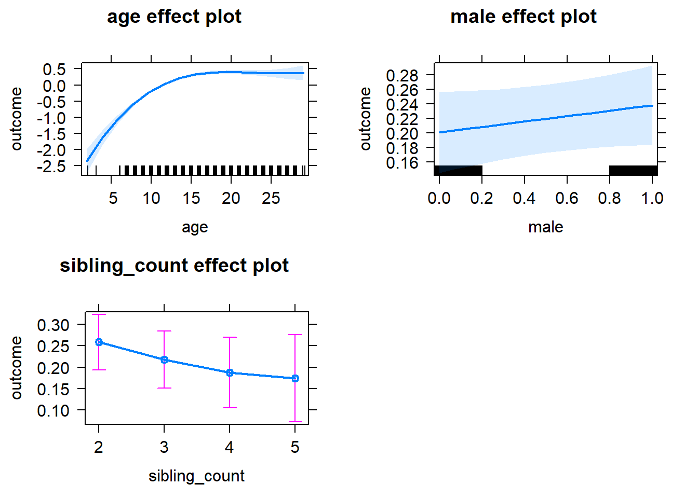
Add Birth Order Linear
Model Summary
tidy(m2_birthorder_linear, conf.int = T)| term | estimate | std.error | statistic | conf.low | conf.high | group |
|---|---|---|---|---|---|---|
| (Intercept) | -0.7364 | 0.0417 | -17.66 | -0.8181 | -0.6547 | fixed |
| birth_order | -0.04172 | 0.0124 | -3.364 | -0.06603 | -0.01741 | fixed |
| age | 0.05798 | 0.002135 | 27.16 | 0.0538 | 0.06217 | fixed |
| male | 0.04598 | 0.02141 | 2.148 | 0.004019 | 0.08795 | fixed |
| sibling_count3 | -0.002041 | 0.03015 | -0.06768 | -0.06114 | 0.05706 | fixed |
| sibling_count4 | 0.003232 | 0.03846 | 0.08402 | -0.07216 | 0.07862 | fixed |
| sibling_count5 | 0.00446 | 0.04873 | 0.09153 | -0.09105 | 0.09997 | fixed |
| sd_(Intercept).mother_pidlink | 0.5021 | NA | NA | NA | NA | mother_pidlink |
| sd_Observation.Residual | 0.7891 | NA | NA | NA | NA | Residual |
Coefficient Plot
plot_birthorder2(m2_birthorder_linear, separate = FALSE)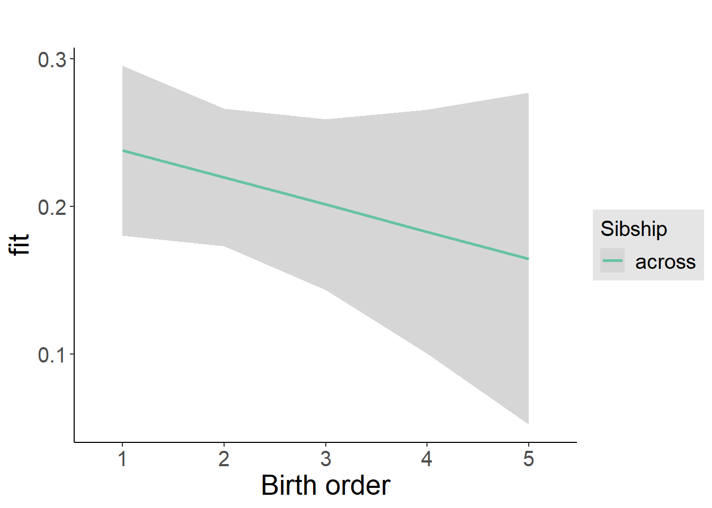
Add Birth Order Factor
Model Summary
m3_birthorder_nonlinear = update(m1_covariates_only, formula = . ~ . + birth_order_nonlinear)
tidy(m3_birthorder_nonlinear, conf.int = T)| term | estimate | std.error | statistic | conf.low | conf.high | group |
|---|---|---|---|---|---|---|
| (Intercept) | -0.7748 | 0.03706 | -20.91 | -0.8474 | -0.7022 | fixed |
| age | 0.05801 | 0.002136 | 27.16 | 0.05382 | 0.06219 | fixed |
| male | 0.04581 | 0.02142 | 2.139 | 0.003832 | 0.08778 | fixed |
| sibling_count3 | -0.00499 | 0.03085 | -0.1617 | -0.06546 | 0.05548 | fixed |
| sibling_count4 | -0.003212 | 0.03941 | -0.0815 | -0.08046 | 0.07404 | fixed |
| sibling_count5 | 0.006084 | 0.05007 | 0.1215 | -0.09206 | 0.1042 | fixed |
| birth_order_nonlinear2 | -0.05143 | 0.02466 | -2.086 | -0.09976 | -0.003097 | fixed |
| birth_order_nonlinear3 | -0.07304 | 0.03376 | -2.164 | -0.1392 | -0.006875 | fixed |
| birth_order_nonlinear4 | -0.117 | 0.04686 | -2.497 | -0.2089 | -0.02518 | fixed |
| birth_order_nonlinear5 | -0.1936 | 0.07003 | -2.765 | -0.3309 | -0.05636 | fixed |
| sd_(Intercept).mother_pidlink | 0.5019 | NA | NA | NA | NA | mother_pidlink |
| sd_Observation.Residual | 0.7894 | NA | NA | NA | NA | Residual |
Coefficient Plot
plot_birthorder(m3_birthorder_nonlinear, separate = FALSE)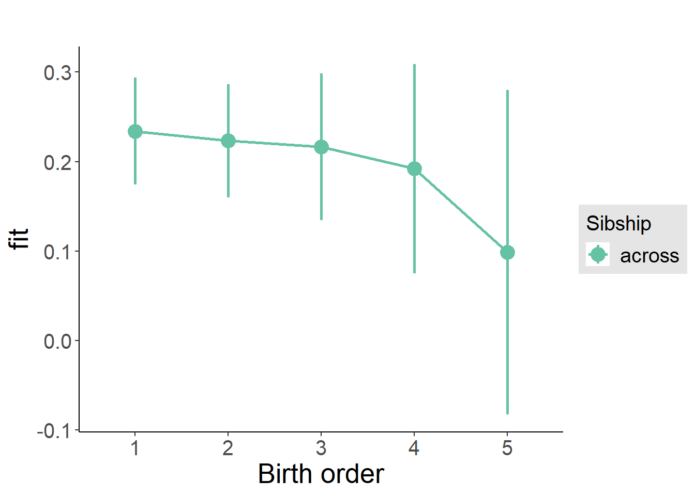
Add Interaction
Model Summary
m4_interaction = update(m3_birthorder_nonlinear, formula = . ~ . - birth_order_nonlinear - sibling_count + count_birth_order)
tidy(m4_interaction, conf.int = T)| term | estimate | std.error | statistic | conf.low | conf.high | group |
|---|---|---|---|---|---|---|
| (Intercept) | -0.7642 | 0.03819 | -20.01 | -0.839 | -0.6893 | fixed |
| age | 0.05797 | 0.002136 | 27.14 | 0.05378 | 0.06215 | fixed |
| male | 0.04702 | 0.02141 | 2.196 | 0.005049 | 0.08899 | fixed |
| count_birth_order2/2 | -0.08102 | 0.03597 | -2.252 | -0.1515 | -0.01051 | fixed |
| count_birth_order1/3 | -0.04822 | 0.04023 | -1.198 | -0.1271 | 0.03064 | fixed |
| count_birth_order2/3 | -0.06223 | 0.03931 | -1.583 | -0.1393 | 0.01481 | fixed |
| count_birth_order3/3 | -0.05432 | 0.04306 | -1.261 | -0.1387 | 0.03009 | fixed |
| count_birth_order1/4 | -0.02754 | 0.05995 | -0.4593 | -0.145 | 0.08997 | fixed |
| count_birth_order2/4 | -0.04532 | 0.0538 | -0.8423 | -0.1508 | 0.06013 | fixed |
| count_birth_order3/4 | -0.1526 | 0.05144 | -2.966 | -0.2534 | -0.05175 | fixed |
| count_birth_order4/4 | -0.07656 | 0.05201 | -1.472 | -0.1785 | 0.02539 | fixed |
| count_birth_order1/5 | 0.1062 | 0.08718 | 1.218 | -0.06467 | 0.2771 | fixed |
| count_birth_order2/5 | -0.02446 | 0.07801 | -0.3136 | -0.1774 | 0.1284 | fixed |
| count_birth_order3/5 | -0.04911 | 0.07001 | -0.7015 | -0.1863 | 0.08811 | fixed |
| count_birth_order4/5 | -0.2124 | 0.0644 | -3.298 | -0.3386 | -0.08617 | fixed |
| count_birth_order5/5 | -0.2011 | 0.06206 | -3.239 | -0.3227 | -0.07941 | fixed |
| sd_(Intercept).mother_pidlink | 0.5023 | NA | NA | NA | NA | mother_pidlink |
| sd_Observation.Residual | 0.7887 | NA | NA | NA | NA | Residual |
Coefficient Plot
plot_birthorder(m4_interaction)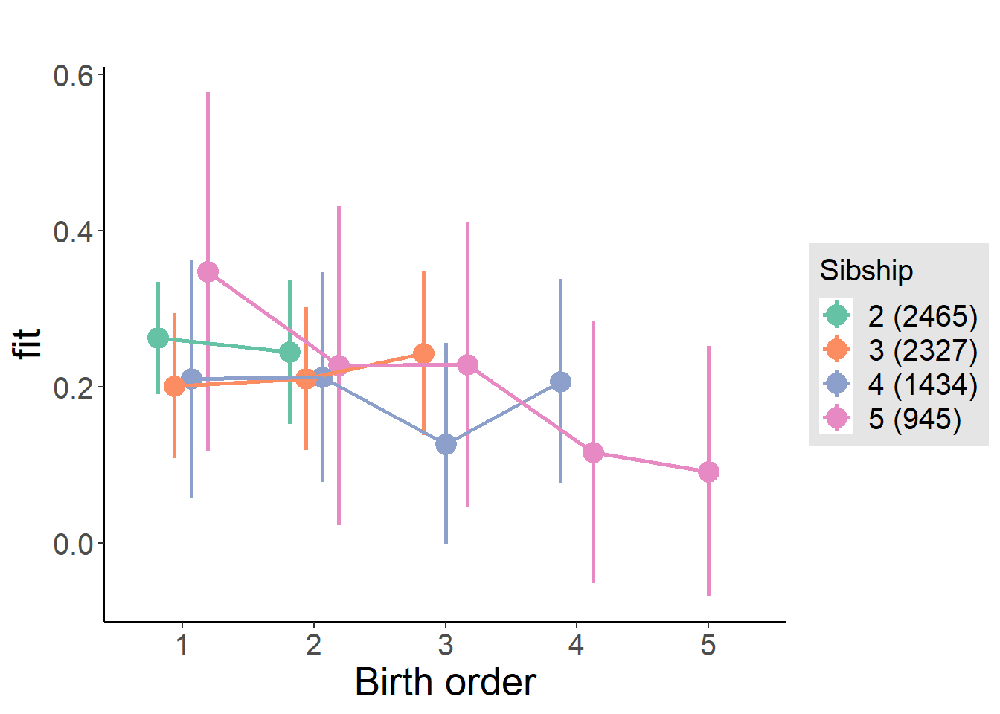
Model Comparison
###### Model 1 - Model 2
anova(m1_covariates_only, m2_birthorder_linear, m3_birthorder_nonlinear, m4_interaction)## refitting model(s) with ML (instead of REML)| Df | AIC | BIC | logLik | deviance | Chisq | Chi Df | Pr(>Chisq) |
|---|---|---|---|---|---|---|---|
| 8 | 19185 | 19240 | -9584 | 19169 | NA | NA | NA |
| 9 | 19175 | 19237 | -9579 | 19157 | 11.32 | 1 | 0.0007683 |
| 12 | 19181 | 19263 | -9578 | 19157 | 0.6865 | 3 | 0.8764 |
| 18 | 19181 | 19305 | -9572 | 19145 | 11.96 | 6 | 0.06288 |
Parental full sibling order
outcome_parental_m1 <- update(m2_birthorder_linear, data = birthorder %>%
mutate(sibling_count = sibling_count_genes_factor,
birth_order_nonlinear = birthorder_genes_factor,
birth_order = birthorder_genes,
count_birth_order = count_birthorder_genes
) %>%
filter(sibling_count != "1"))
compare_models_markdown(outcome_parental_m1)Basic Model
Model Summary
m1_covariates_only <- update(m2_birthorder_linear, formula = . ~ . - birth_order)
tidy(m1_covariates_only, conf.int = T)| term | estimate | std.error | statistic | conf.low | conf.high | group |
|---|---|---|---|---|---|---|
| (Intercept) | -0.805 | 0.03305 | -24.35 | -0.8698 | -0.7402 | fixed |
| age | 0.05996 | 0.002012 | 29.8 | 0.05602 | 0.06391 | fixed |
| male | 0.03342 | 0.02108 | 1.585 | -0.007894 | 0.07473 | fixed |
| sibling_count3 | -0.02594 | 0.02788 | -0.9303 | -0.08058 | 0.02871 | fixed |
| sibling_count4 | -0.08298 | 0.03451 | -2.405 | -0.1506 | -0.01535 | fixed |
| sibling_count5 | -0.2007 | 0.04565 | -4.397 | -0.2902 | -0.1113 | fixed |
| sd_(Intercept).mother_pidlink | 0.4937 | NA | NA | NA | NA | mother_pidlink |
| sd_Observation.Residual | 0.792 | NA | NA | NA | NA | Residual |
Coefficient Plot
plot(allEffects(m1_covariates_only))Add Birth Order Linear
Model Summary
tidy(m2_birthorder_linear, conf.int = T)| term | estimate | std.error | statistic | conf.low | conf.high | group |
|---|---|---|---|---|---|---|
| (Intercept) | -0.7388 | 0.04102 | -18.01 | -0.8192 | -0.6584 | fixed |
| birth_order | -0.0352 | 0.01293 | -2.722 | -0.06054 | -0.009856 | fixed |
| age | 0.0585 | 0.002082 | 28.1 | 0.05442 | 0.06258 | fixed |
| male | 0.03389 | 0.02107 | 1.609 | -0.007402 | 0.07518 | fixed |
| sibling_count3 | -0.003231 | 0.0291 | -0.111 | -0.06027 | 0.0538 | fixed |
| sibling_count4 | -0.03183 | 0.03929 | -0.81 | -0.1088 | 0.04518 | fixed |
| sibling_count5 | -0.1165 | 0.05517 | -2.111 | -0.2246 | -0.008345 | fixed |
| sd_(Intercept).mother_pidlink | 0.4944 | NA | NA | NA | NA | mother_pidlink |
| sd_Observation.Residual | 0.7913 | NA | NA | NA | NA | Residual |
Coefficient Plot
plot_birthorder2(m2_birthorder_linear, separate = FALSE)
Add Birth Order Factor
Model Summary
m3_birthorder_nonlinear = update(m1_covariates_only, formula = . ~ . + birth_order_nonlinear)
tidy(m3_birthorder_nonlinear, conf.int = T)| term | estimate | std.error | statistic | conf.low | conf.high | group |
|---|---|---|---|---|---|---|
| (Intercept) | -0.7708 | 0.03574 | -21.57 | -0.8409 | -0.7008 | fixed |
| age | 0.05848 | 0.002083 | 28.08 | 0.0544 | 0.06256 | fixed |
| male | 0.03405 | 0.02107 | 1.616 | -0.007255 | 0.07535 | fixed |
| sibling_count3 | -0.003276 | 0.02981 | -0.1099 | -0.0617 | 0.05515 | fixed |
| sibling_count4 | -0.03762 | 0.04029 | -0.9336 | -0.1166 | 0.04135 | fixed |
| sibling_count5 | -0.1167 | 0.05831 | -2.002 | -0.231 | -0.002436 | fixed |
| birth_order_nonlinear2 | -0.0438 | 0.02376 | -1.844 | -0.09037 | 0.002764 | fixed |
| birth_order_nonlinear3 | -0.06997 | 0.034 | -2.058 | -0.1366 | -0.003328 | fixed |
| birth_order_nonlinear4 | -0.09026 | 0.04911 | -1.838 | -0.1865 | 0.005996 | fixed |
| birth_order_nonlinear5 | -0.1601 | 0.08038 | -1.991 | -0.3176 | -0.00252 | fixed |
| sd_(Intercept).mother_pidlink | 0.4943 | NA | NA | NA | NA | mother_pidlink |
| sd_Observation.Residual | 0.7915 | NA | NA | NA | NA | Residual |
Coefficient Plot
plot_birthorder(m3_birthorder_nonlinear, separate = FALSE)
Add Interaction
Model Summary
m4_interaction = update(m3_birthorder_nonlinear, formula = . ~ . - birth_order_nonlinear - sibling_count + count_birth_order)
tidy(m4_interaction, conf.int = T)| term | estimate | std.error | statistic | conf.low | conf.high | group |
|---|---|---|---|---|---|---|
| (Intercept) | -0.7664 | 0.03644 | -21.03 | -0.8378 | -0.695 | fixed |
| age | 0.05848 | 0.002084 | 28.06 | 0.0544 | 0.06257 | fixed |
| male | 0.0351 | 0.02107 | 1.666 | -0.006191 | 0.0764 | fixed |
| count_birth_order2/2 | -0.05752 | 0.03268 | -1.76 | -0.1216 | 0.006535 | fixed |
| count_birth_order1/3 | -0.02768 | 0.03905 | -0.7089 | -0.1042 | 0.04885 | fixed |
| count_birth_order2/3 | -0.0584 | 0.0375 | -1.558 | -0.1319 | 0.01509 | fixed |
| count_birth_order3/3 | -0.0474 | 0.04109 | -1.154 | -0.1279 | 0.03313 | fixed |
| count_birth_order1/4 | -0.01421 | 0.06178 | -0.23 | -0.1353 | 0.1069 | fixed |
| count_birth_order2/4 | -0.06321 | 0.05457 | -1.158 | -0.1702 | 0.04375 | fixed |
| count_birth_order3/4 | -0.2007 | 0.05176 | -3.877 | -0.3021 | -0.09923 | fixed |
| count_birth_order4/4 | -0.08798 | 0.05159 | -1.705 | -0.1891 | 0.01313 | fixed |
| count_birth_order1/5 | -0.1381 | 0.1069 | -1.292 | -0.3476 | 0.07145 | fixed |
| count_birth_order2/5 | -0.08417 | 0.1022 | -0.8233 | -0.2846 | 0.1162 | fixed |
| count_birth_order3/5 | -0.08668 | 0.0828 | -1.047 | -0.249 | 0.07561 | fixed |
| count_birth_order4/5 | -0.3023 | 0.07014 | -4.31 | -0.4398 | -0.1648 | fixed |
| count_birth_order5/5 | -0.284 | 0.06855 | -4.144 | -0.4184 | -0.1497 | fixed |
| sd_(Intercept).mother_pidlink | 0.4947 | NA | NA | NA | NA | mother_pidlink |
| sd_Observation.Residual | 0.7909 | NA | NA | NA | NA | Residual |
Coefficient Plot
plot_birthorder(m4_interaction)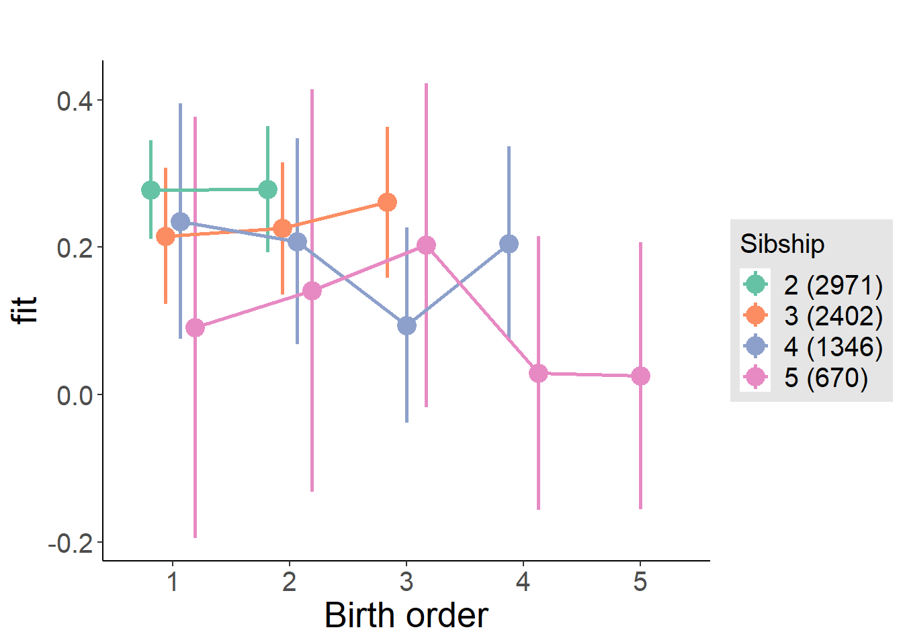
Model Comparison
###### Model 1 - Model 2
anova(m1_covariates_only, m2_birthorder_linear, m3_birthorder_nonlinear, m4_interaction)## refitting model(s) with ML (instead of REML)| Df | AIC | BIC | logLik | deviance | Chisq | Chi Df | Pr(>Chisq) |
|---|---|---|---|---|---|---|---|
| 8 | 19728 | 19783 | -9856 | 19712 | NA | NA | NA |
| 9 | 19723 | 19785 | -9852 | 19705 | 7.409 | 1 | 0.00649 |
| 12 | 19728 | 19811 | -9852 | 19704 | 0.4381 | 3 | 0.9323 |
| 18 | 19728 | 19852 | -9846 | 19692 | 12.11 | 6 | 0.05949 |
Compare birth order specifications
library(coefplot)
multiplot(outcome_naive_m1, outcome_preg_m1, outcome_uterus_m1, outcome_parental_m1, dodgeHeight = 0.6,
intercept = FALSE)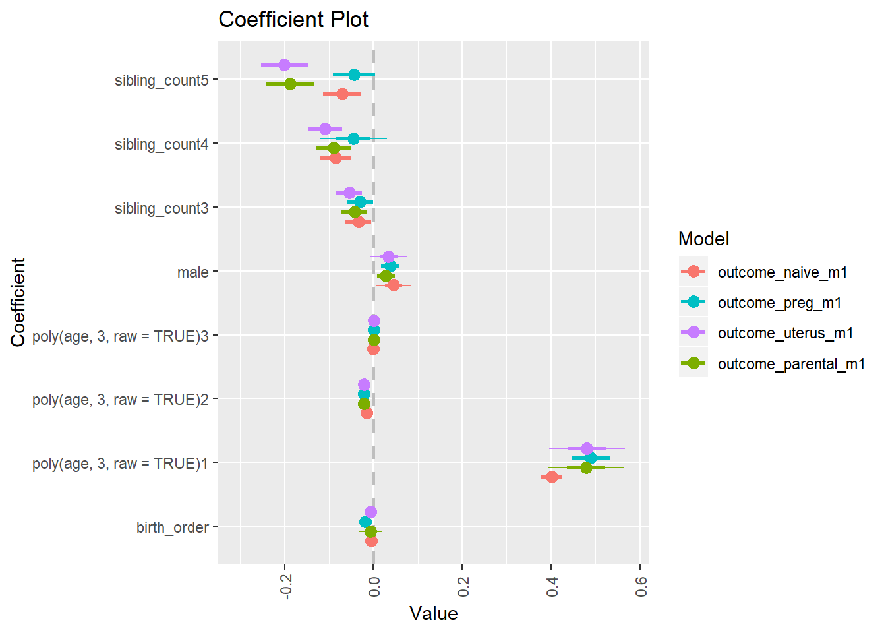
Numeracy 2015 young
birthorder <- birthorder %>% mutate(outcome = math_2015_young)
model = lmer(outcome ~ birth_order + age + male + sibling_count + (1 | mother_pidlink),
data = birthorder)
compare_birthorder_specs(model)Naive birth order
outcome_naive_m1 <- update(m2_birthorder_linear, data = birthorder %>%
mutate(sibling_count = sibling_count_naive_factor,
birth_order_nonlinear = birthorder_naive_factor,
birth_order = birthorder_naive,
count_birth_order = count_birthorder_naive) %>%
filter(sibling_count != "1"))
compare_models_markdown(outcome_naive_m1)Basic Model
Model Summary
m1_covariates_only <- update(m2_birthorder_linear, formula = . ~ . - birth_order)
tidy(m1_covariates_only, conf.int = T)| term | estimate | std.error | statistic | conf.low | conf.high | group |
|---|---|---|---|---|---|---|
| (Intercept) | -0.3511 | 0.03459 | -10.15 | -0.4189 | -0.2834 | fixed |
| age | 0.0337 | 0.002036 | 16.55 | 0.02971 | 0.03769 | fixed |
| male | -0.1606 | 0.02133 | -7.529 | -0.2024 | -0.1188 | fixed |
| sibling_count3 | 0.006379 | 0.02967 | 0.215 | -0.05176 | 0.06452 | fixed |
| sibling_count4 | -0.07289 | 0.03327 | -2.191 | -0.1381 | -0.007683 | fixed |
| sibling_count5 | -0.0472 | 0.03762 | -1.255 | -0.1209 | 0.02652 | fixed |
| sd_(Intercept).mother_pidlink | 0.4726 | NA | NA | NA | NA | mother_pidlink |
| sd_Observation.Residual | 0.8616 | NA | NA | NA | NA | Residual |
Coefficient Plot
plot(allEffects(m1_covariates_only))Add Birth Order Linear
Model Summary
tidy(m2_birthorder_linear, conf.int = T)| term | estimate | std.error | statistic | conf.low | conf.high | group |
|---|---|---|---|---|---|---|
| (Intercept) | -0.3346 | 0.04102 | -8.157 | -0.415 | -0.2542 | fixed |
| birth_order | -0.008799 | 0.01173 | -0.7501 | -0.03179 | 0.01419 | fixed |
| age | 0.0333 | 0.002102 | 15.84 | 0.02918 | 0.03742 | fixed |
| male | -0.1605 | 0.02133 | -7.525 | -0.2023 | -0.1187 | fixed |
| sibling_count3 | 0.01129 | 0.03038 | 0.3717 | -0.04825 | 0.07083 | fixed |
| sibling_count4 | -0.0612 | 0.03674 | -1.666 | -0.1332 | 0.01082 | fixed |
| sibling_count5 | -0.02823 | 0.04533 | -0.6229 | -0.1171 | 0.0606 | fixed |
| sd_(Intercept).mother_pidlink | 0.4725 | NA | NA | NA | NA | mother_pidlink |
| sd_Observation.Residual | 0.8617 | NA | NA | NA | NA | Residual |
Coefficient Plot
plot_birthorder2(m2_birthorder_linear, separate = FALSE)Add Birth Order Factor
Model Summary
m3_birthorder_nonlinear = update(m1_covariates_only, formula = . ~ . + birth_order_nonlinear)
tidy(m3_birthorder_nonlinear, conf.int = T)| term | estimate | std.error | statistic | conf.low | conf.high | group |
|---|---|---|---|---|---|---|
| (Intercept) | -0.3424 | 0.03679 | -9.307 | -0.4145 | -0.2703 | fixed |
| age | 0.0333 | 0.002103 | 15.84 | 0.02918 | 0.03742 | fixed |
| male | -0.1603 | 0.02133 | -7.516 | -0.2021 | -0.1185 | fixed |
| sibling_count3 | 0.004327 | 0.03091 | 0.14 | -0.05626 | 0.06492 | fixed |
| sibling_count4 | -0.05818 | 0.03752 | -1.551 | -0.1317 | 0.01536 | fixed |
| sibling_count5 | -0.03059 | 0.04602 | -0.6648 | -0.1208 | 0.05961 | fixed |
| birth_order_nonlinear2 | -0.01207 | 0.02512 | -0.4806 | -0.0613 | 0.03716 | fixed |
| birth_order_nonlinear3 | 0.01144 | 0.03291 | 0.3475 | -0.05307 | 0.07594 | fixed |
| birth_order_nonlinear4 | -0.07663 | 0.04457 | -1.72 | -0.164 | 0.01071 | fixed |
| birth_order_nonlinear5 | -0.004219 | 0.06476 | -0.06515 | -0.1311 | 0.1227 | fixed |
| sd_(Intercept).mother_pidlink | 0.4723 | NA | NA | NA | NA | mother_pidlink |
| sd_Observation.Residual | 0.8617 | NA | NA | NA | NA | Residual |
Coefficient Plot
plot_birthorder(m3_birthorder_nonlinear, separate = FALSE)Add Interaction
Model Summary
m4_interaction = update(m3_birthorder_nonlinear, formula = . ~ . - birth_order_nonlinear - sibling_count + count_birth_order)
tidy(m4_interaction, conf.int = T)| term | estimate | std.error | statistic | conf.low | conf.high | group |
|---|---|---|---|---|---|---|
| (Intercept) | -0.3431 | 0.03798 | -9.033 | -0.4175 | -0.2686 | fixed |
| age | 0.03334 | 0.002105 | 15.84 | 0.02922 | 0.03747 | fixed |
| male | -0.16 | 0.02134 | -7.499 | -0.2018 | -0.1182 | fixed |
| count_birth_order2/2 | -0.01186 | 0.03931 | -0.3018 | -0.08891 | 0.06518 | fixed |
| count_birth_order1/3 | 0.02032 | 0.03959 | 0.5134 | -0.05726 | 0.09791 | fixed |
| count_birth_order2/3 | -0.00274 | 0.04036 | -0.06788 | -0.08184 | 0.07636 | fixed |
| count_birth_order3/3 | -0.01782 | 0.04574 | -0.3896 | -0.1075 | 0.07184 | fixed |
| count_birth_order1/4 | -0.08535 | 0.05452 | -1.565 | -0.1922 | 0.02151 | fixed |
| count_birth_order2/4 | -0.07516 | 0.05169 | -1.454 | -0.1765 | 0.02615 | fixed |
| count_birth_order3/4 | -0.04296 | 0.04854 | -0.885 | -0.1381 | 0.05218 | fixed |
| count_birth_order4/4 | -0.1088 | 0.05302 | -2.052 | -0.2127 | -0.004869 | fixed |
| count_birth_order1/5 | -0.05649 | 0.07444 | -0.7589 | -0.2024 | 0.08942 | fixed |
| count_birth_order2/5 | -0.05627 | 0.07066 | -0.7963 | -0.1947 | 0.08222 | fixed |
| count_birth_order3/5 | 0.04858 | 0.06375 | 0.762 | -0.07637 | 0.1735 | fixed |
| count_birth_order4/5 | -0.1407 | 0.05978 | -2.354 | -0.2579 | -0.02358 | fixed |
| count_birth_order5/5 | -0.03458 | 0.05923 | -0.5838 | -0.1507 | 0.08152 | fixed |
| sd_(Intercept).mother_pidlink | 0.4724 | NA | NA | NA | NA | mother_pidlink |
| sd_Observation.Residual | 0.8618 | NA | NA | NA | NA | Residual |
Coefficient Plot
plot_birthorder(m4_interaction)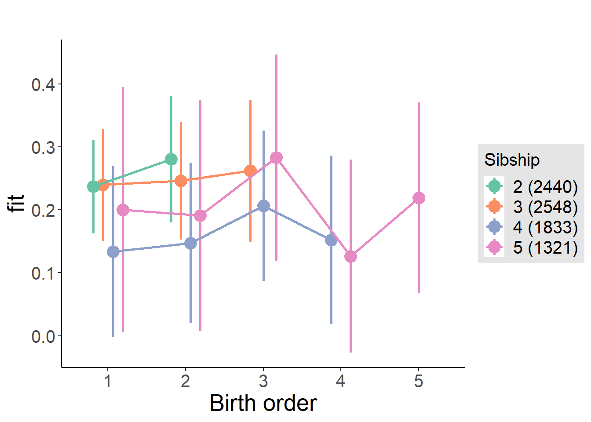
Model Comparison
###### Model 1 - Model 2
anova(m1_covariates_only, m2_birthorder_linear, m3_birthorder_nonlinear, m4_interaction)## refitting model(s) with ML (instead of REML)| Df | AIC | BIC | logLik | deviance | Chisq | Chi Df | Pr(>Chisq) |
|---|---|---|---|---|---|---|---|
| 8 | 22653 | 22709 | -11318 | 22637 | NA | NA | NA |
| 9 | 22654 | 22717 | -11318 | 22636 | 0.5633 | 1 | 0.4529 |
| 12 | 22657 | 22741 | -11316 | 22633 | 3.869 | 3 | 0.276 |
| 18 | 22665 | 22791 | -11314 | 22629 | 3.949 | 6 | 0.6835 |
Maternal birth order
outcome_uterus_m1 <- update(m2_birthorder_linear, data = birthorder %>%
mutate(sibling_count = sibling_count_uterus_alive_factor,
birth_order_nonlinear = birthorder_uterus_alive_factor,
birth_order = birthorder_uterus_alive,
count_birth_order = count_birthorder_uterus_alive) %>%
filter(sibling_count != "1"))
compare_models_markdown(outcome_uterus_m1)Basic Model
Model Summary
m1_covariates_only <- update(m2_birthorder_linear, formula = . ~ . - birth_order)
tidy(m1_covariates_only, conf.int = T)| term | estimate | std.error | statistic | conf.low | conf.high | group |
|---|---|---|---|---|---|---|
| (Intercept) | -0.3964 | 0.03483 | -11.38 | -0.4647 | -0.3281 | fixed |
| age | 0.03792 | 0.002128 | 17.82 | 0.03374 | 0.04209 | fixed |
| male | -0.1707 | 0.02231 | -7.649 | -0.2144 | -0.1269 | fixed |
| sibling_count3 | 0.01628 | 0.02905 | 0.5605 | -0.04066 | 0.07323 | fixed |
| sibling_count4 | -0.03754 | 0.03556 | -1.056 | -0.1072 | 0.03216 | fixed |
| sibling_count5 | -0.1559 | 0.04553 | -3.425 | -0.2452 | -0.06669 | fixed |
| sd_(Intercept).mother_pidlink | 0.4765 | NA | NA | NA | NA | mother_pidlink |
| sd_Observation.Residual | 0.8651 | NA | NA | NA | NA | Residual |
Coefficient Plot
plot(allEffects(m1_covariates_only))Add Birth Order Linear
Model Summary
tidy(m2_birthorder_linear, conf.int = T)| term | estimate | std.error | statistic | conf.low | conf.high | group |
|---|---|---|---|---|---|---|
| (Intercept) | -0.3488 | 0.04296 | -8.119 | -0.433 | -0.2646 | fixed |
| birth_order | -0.02578 | 0.01362 | -1.893 | -0.05248 | 0.0009099 | fixed |
| age | 0.0369 | 0.002194 | 16.82 | 0.0326 | 0.0412 | fixed |
| male | -0.1703 | 0.02231 | -7.633 | -0.214 | -0.1266 | fixed |
| sibling_count3 | 0.03284 | 0.03034 | 1.082 | -0.02662 | 0.0923 | fixed |
| sibling_count4 | -0.0003107 | 0.04063 | -0.007647 | -0.07995 | 0.07933 | fixed |
| sibling_count5 | -0.0937 | 0.05616 | -1.669 | -0.2038 | 0.01637 | fixed |
| sd_(Intercept).mother_pidlink | 0.4766 | NA | NA | NA | NA | mother_pidlink |
| sd_Observation.Residual | 0.8649 | NA | NA | NA | NA | Residual |
Coefficient Plot
plot_birthorder2(m2_birthorder_linear, separate = FALSE)Add Birth Order Factor
Model Summary
m3_birthorder_nonlinear = update(m1_covariates_only, formula = . ~ . + birth_order_nonlinear)
tidy(m3_birthorder_nonlinear, conf.int = T)| term | estimate | std.error | statistic | conf.low | conf.high | group |
|---|---|---|---|---|---|---|
| (Intercept) | -0.3792 | 0.03758 | -10.09 | -0.4529 | -0.3056 | fixed |
| age | 0.03692 | 0.002195 | 16.82 | 0.03262 | 0.04122 | fixed |
| male | -0.1705 | 0.02232 | -7.642 | -0.2143 | -0.1268 | fixed |
| sibling_count3 | 0.03363 | 0.03113 | 1.08 | -0.02737 | 0.09463 | fixed |
| sibling_count4 | -0.002201 | 0.04169 | -0.0528 | -0.08391 | 0.07951 | fixed |
| sibling_count5 | -0.0824 | 0.05908 | -1.395 | -0.1982 | 0.0334 | fixed |
| birth_order_nonlinear2 | -0.0131 | 0.02556 | -0.5126 | -0.0632 | 0.03699 | fixed |
| birth_order_nonlinear3 | -0.05464 | 0.03621 | -1.509 | -0.1256 | 0.01634 | fixed |
| birth_order_nonlinear4 | -0.06362 | 0.05152 | -1.235 | -0.1646 | 0.03737 | fixed |
| birth_order_nonlinear5 | -0.1384 | 0.08145 | -1.699 | -0.298 | 0.02125 | fixed |
| sd_(Intercept).mother_pidlink | 0.4761 | NA | NA | NA | NA | mother_pidlink |
| sd_Observation.Residual | 0.8653 | NA | NA | NA | NA | Residual |
Coefficient Plot
plot_birthorder(m3_birthorder_nonlinear, separate = FALSE)Add Interaction
Model Summary
m4_interaction = update(m3_birthorder_nonlinear, formula = . ~ . - birth_order_nonlinear - sibling_count + count_birth_order)
tidy(m4_interaction, conf.int = T)| term | estimate | std.error | statistic | conf.low | conf.high | group |
|---|---|---|---|---|---|---|
| (Intercept) | -0.3841 | 0.03841 | -10 | -0.4594 | -0.3088 | fixed |
| age | 0.0369 | 0.002197 | 16.8 | 0.03259 | 0.0412 | fixed |
| male | -0.1695 | 0.02232 | -7.592 | -0.2133 | -0.1257 | fixed |
| count_birth_order2/2 | -0.0001757 | 0.03545 | -0.004957 | -0.06965 | 0.0693 | fixed |
| count_birth_order1/3 | 0.06238 | 0.04123 | 1.513 | -0.01842 | 0.1432 | fixed |
| count_birth_order2/3 | 0.02454 | 0.03965 | 0.6189 | -0.05317 | 0.1022 | fixed |
| count_birth_order3/3 | -0.04399 | 0.04343 | -1.013 | -0.1291 | 0.04113 | fixed |
| count_birth_order1/4 | -0.05348 | 0.06534 | -0.8185 | -0.1815 | 0.07458 | fixed |
| count_birth_order2/4 | -0.052 | 0.05724 | -0.9084 | -0.1642 | 0.06019 | fixed |
| count_birth_order3/4 | -0.0224 | 0.0546 | -0.4102 | -0.1294 | 0.08462 | fixed |
| count_birth_order4/4 | -0.02237 | 0.05402 | -0.414 | -0.1282 | 0.08351 | fixed |
| count_birth_order1/5 | -0.03932 | 0.1144 | -0.3436 | -0.2636 | 0.185 | fixed |
| count_birth_order2/5 | -0.02677 | 0.1018 | -0.2631 | -0.2262 | 0.1727 | fixed |
| count_birth_order3/5 | -0.08315 | 0.08594 | -0.9675 | -0.2516 | 0.0853 | fixed |
| count_birth_order4/5 | -0.2077 | 0.07085 | -2.931 | -0.3465 | -0.06879 | fixed |
| count_birth_order5/5 | -0.2173 | 0.0687 | -3.164 | -0.352 | -0.0827 | fixed |
| sd_(Intercept).mother_pidlink | 0.4758 | NA | NA | NA | NA | mother_pidlink |
| sd_Observation.Residual | 0.8654 | NA | NA | NA | NA | Residual |
Coefficient Plot
plot_birthorder(m4_interaction)Model Comparison
###### Model 1 - Model 2
anova(m1_covariates_only, m2_birthorder_linear, m3_birthorder_nonlinear, m4_interaction)## refitting model(s) with ML (instead of REML)| Df | AIC | BIC | logLik | deviance | Chisq | Chi Df | Pr(>Chisq) |
|---|---|---|---|---|---|---|---|
| 8 | 21026 | 21081 | -10505 | 21010 | NA | NA | NA |
| 9 | 21024 | 21086 | -10503 | 21006 | 3.586 | 1 | 0.05827 |
| 12 | 21029 | 21112 | -10503 | 21005 | 0.7273 | 3 | 0.8668 |
| 18 | 21035 | 21160 | -10500 | 20999 | 5.972 | 6 | 0.4264 |
Maternal pregnancy order
outcome_preg_m1 <- update(m2_birthorder_linear, data = birthorder %>%
mutate(sibling_count = sibling_count_uterus_preg_factor,
birth_order_nonlinear = birthorder_uterus_preg_factor,
birth_order = birthorder_uterus_preg,
count_birth_order = count_birthorder_uterus_preg
) %>%
filter(sibling_count != "1"))
compare_models_markdown(outcome_preg_m1)Basic Model
Model Summary
m1_covariates_only <- update(m2_birthorder_linear, formula = . ~ . - birth_order)
tidy(m1_covariates_only, conf.int = T)| term | estimate | std.error | statistic | conf.low | conf.high | group |
|---|---|---|---|---|---|---|
| (Intercept) | -0.401 | 0.03633 | -11.04 | -0.4722 | -0.3298 | fixed |
| age | 0.03771 | 0.002185 | 17.26 | 0.03342 | 0.04199 | fixed |
| male | -0.1777 | 0.02284 | -7.782 | -0.2225 | -0.133 | fixed |
| sibling_count3 | 0.03378 | 0.03038 | 1.112 | -0.02575 | 0.09332 | fixed |
| sibling_count4 | -0.02691 | 0.03566 | -0.7547 | -0.0968 | 0.04298 | fixed |
| sibling_count5 | -0.05483 | 0.04175 | -1.313 | -0.1367 | 0.02699 | fixed |
| sd_(Intercept).mother_pidlink | 0.4718 | NA | NA | NA | NA | mother_pidlink |
| sd_Observation.Residual | 0.8659 | NA | NA | NA | NA | Residual |
Coefficient Plot
plot(allEffects(m1_covariates_only))Add Birth Order Linear
Model Summary
tidy(m2_birthorder_linear, conf.int = T)| term | estimate | std.error | statistic | conf.low | conf.high | group |
|---|---|---|---|---|---|---|
| (Intercept) | -0.3564 | 0.04373 | -8.149 | -0.4421 | -0.2707 | fixed |
| birth_order | -0.02421 | 0.01321 | -1.832 | -0.0501 | 0.001692 | fixed |
| age | 0.03676 | 0.002245 | 16.37 | 0.03236 | 0.04116 | fixed |
| male | -0.1773 | 0.02284 | -7.762 | -0.222 | -0.1325 | fixed |
| sibling_count3 | 0.04848 | 0.03141 | 1.543 | -0.01309 | 0.11 | fixed |
| sibling_count4 | 0.006417 | 0.04002 | 0.1603 | -0.07203 | 0.08486 | fixed |
| sibling_count5 | -0.002066 | 0.05071 | -0.04073 | -0.1015 | 0.09733 | fixed |
| sd_(Intercept).mother_pidlink | 0.4717 | NA | NA | NA | NA | mother_pidlink |
| sd_Observation.Residual | 0.8657 | NA | NA | NA | NA | Residual |
Coefficient Plot
plot_birthorder2(m2_birthorder_linear, separate = FALSE)Add Birth Order Factor
Model Summary
m3_birthorder_nonlinear = update(m1_covariates_only, formula = . ~ . + birth_order_nonlinear)
tidy(m3_birthorder_nonlinear, conf.int = T)| term | estimate | std.error | statistic | conf.low | conf.high | group |
|---|---|---|---|---|---|---|
| (Intercept) | -0.3831 | 0.03898 | -9.827 | -0.4595 | -0.3067 | fixed |
| age | 0.03684 | 0.002246 | 16.4 | 0.03244 | 0.04124 | fixed |
| male | -0.1776 | 0.02284 | -7.776 | -0.2224 | -0.1328 | fixed |
| sibling_count3 | 0.0385 | 0.03219 | 1.196 | -0.02458 | 0.1016 | fixed |
| sibling_count4 | 0.001077 | 0.04106 | 0.02622 | -0.0794 | 0.08156 | fixed |
| sibling_count5 | 0.008701 | 0.05214 | 0.1669 | -0.0935 | 0.1109 | fixed |
| birth_order_nonlinear2 | -0.01954 | 0.02656 | -0.7356 | -0.07159 | 0.03252 | fixed |
| birth_order_nonlinear3 | -0.01325 | 0.03616 | -0.3665 | -0.08413 | 0.05763 | fixed |
| birth_order_nonlinear4 | -0.0865 | 0.05008 | -1.727 | -0.1847 | 0.01166 | fixed |
| birth_order_nonlinear5 | -0.1439 | 0.07485 | -1.923 | -0.2906 | 0.00278 | fixed |
| sd_(Intercept).mother_pidlink | 0.4716 | NA | NA | NA | NA | mother_pidlink |
| sd_Observation.Residual | 0.8659 | NA | NA | NA | NA | Residual |
Coefficient Plot
plot_birthorder(m3_birthorder_nonlinear, separate = FALSE)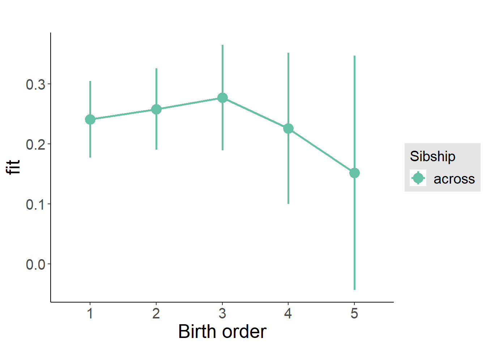
Add Interaction
Model Summary
m4_interaction = update(m3_birthorder_nonlinear, formula = . ~ . - birth_order_nonlinear - sibling_count + count_birth_order)
tidy(m4_interaction, conf.int = T)| term | estimate | std.error | statistic | conf.low | conf.high | group |
|---|---|---|---|---|---|---|
| (Intercept) | -0.3858 | 0.04022 | -9.593 | -0.4647 | -0.307 | fixed |
| age | 0.03689 | 0.002246 | 16.42 | 0.03248 | 0.04129 | fixed |
| male | -0.1771 | 0.02284 | -7.752 | -0.2218 | -0.1323 | fixed |
| count_birth_order2/2 | -0.01438 | 0.03867 | -0.3719 | -0.09018 | 0.06141 | fixed |
| count_birth_order1/3 | 0.07194 | 0.0426 | 1.689 | -0.01155 | 0.1554 | fixed |
| count_birth_order2/3 | 0.02764 | 0.04163 | 0.664 | -0.05396 | 0.1092 | fixed |
| count_birth_order3/3 | -0.02153 | 0.04565 | -0.4717 | -0.111 | 0.06793 | fixed |
| count_birth_order1/4 | -0.1032 | 0.06372 | -1.62 | -0.2281 | 0.02168 | fixed |
| count_birth_order2/4 | -0.04315 | 0.05713 | -0.7552 | -0.1551 | 0.06883 | fixed |
| count_birth_order3/4 | 0.03339 | 0.05461 | 0.6114 | -0.07365 | 0.1404 | fixed |
| count_birth_order4/4 | -0.03313 | 0.05516 | -0.6005 | -0.1412 | 0.07499 | fixed |
| count_birth_order1/5 | 0.06458 | 0.09305 | 0.694 | -0.1178 | 0.247 | fixed |
| count_birth_order2/5 | -0.01 | 0.08312 | -0.1203 | -0.1729 | 0.1529 | fixed |
| count_birth_order3/5 | 0.06521 | 0.07451 | 0.8752 | -0.08083 | 0.2112 | fixed |
| count_birth_order4/5 | -0.1541 | 0.06846 | -2.251 | -0.2883 | -0.01993 | fixed |
| count_birth_order5/5 | -0.1351 | 0.06587 | -2.051 | -0.2642 | -0.005968 | fixed |
| sd_(Intercept).mother_pidlink | 0.472 | NA | NA | NA | NA | mother_pidlink |
| sd_Observation.Residual | 0.8652 | NA | NA | NA | NA | Residual |
Coefficient Plot
plot_birthorder(m4_interaction)Model Comparison
###### Model 1 - Model 2
anova(m1_covariates_only, m2_birthorder_linear, m3_birthorder_nonlinear, m4_interaction)## refitting model(s) with ML (instead of REML)| Df | AIC | BIC | logLik | deviance | Chisq | Chi Df | Pr(>Chisq) |
|---|---|---|---|---|---|---|---|
| 8 | 20017 | 20072 | -10000 | 20001 | NA | NA | NA |
| 9 | 20015 | 20077 | -9999 | 19997 | 3.358 | 1 | 0.06686 |
| 12 | 20019 | 20102 | -9998 | 19995 | 2.071 | 3 | 0.5578 |
| 18 | 20020 | 20143 | -9992 | 19984 | 11.57 | 6 | 0.07238 |
Parental full sibling order
outcome_parental_m1 <- update(m2_birthorder_linear, data = birthorder %>%
mutate(sibling_count = sibling_count_genes_factor,
birth_order_nonlinear = birthorder_genes_factor,
birth_order = birthorder_genes,
count_birth_order = count_birthorder_genes
) %>%
filter(sibling_count != "1"))
compare_models_markdown(outcome_parental_m1)Basic Model
Model Summary
m1_covariates_only <- update(m2_birthorder_linear, formula = . ~ . - birth_order)
tidy(m1_covariates_only, conf.int = T)| term | estimate | std.error | statistic | conf.low | conf.high | group |
|---|---|---|---|---|---|---|
| (Intercept) | -0.3861 | 0.03496 | -11.04 | -0.4546 | -0.3176 | fixed |
| age | 0.03756 | 0.002132 | 17.62 | 0.03338 | 0.04173 | fixed |
| male | -0.1713 | 0.02245 | -7.629 | -0.2153 | -0.1273 | fixed |
| sibling_count3 | 0.00693 | 0.02915 | 0.2378 | -0.0502 | 0.06406 | fixed |
| sibling_count4 | -0.04189 | 0.03597 | -1.164 | -0.1124 | 0.02862 | fixed |
| sibling_count5 | -0.1574 | 0.04749 | -3.315 | -0.2505 | -0.06436 | fixed |
| sd_(Intercept).mother_pidlink | 0.4798 | NA | NA | NA | NA | mother_pidlink |
| sd_Observation.Residual | 0.8609 | NA | NA | NA | NA | Residual |
Coefficient Plot
plot(allEffects(m1_covariates_only))Add Birth Order Linear
Model Summary
tidy(m2_birthorder_linear, conf.int = T)| term | estimate | std.error | statistic | conf.low | conf.high | group |
|---|---|---|---|---|---|---|
| (Intercept) | -0.3433 | 0.04316 | -7.954 | -0.4279 | -0.2587 | fixed |
| birth_order | -0.02327 | 0.01378 | -1.689 | -0.05027 | 0.00374 | fixed |
| age | 0.03667 | 0.002195 | 16.71 | 0.03237 | 0.04097 | fixed |
| male | -0.171 | 0.02245 | -7.617 | -0.215 | -0.127 | fixed |
| sibling_count3 | 0.02176 | 0.03044 | 0.7149 | -0.0379 | 0.08143 | fixed |
| sibling_count4 | -0.008495 | 0.04105 | -0.2069 | -0.08895 | 0.07196 | fixed |
| sibling_count5 | -0.1023 | 0.05762 | -1.776 | -0.2153 | 0.0106 | fixed |
| sd_(Intercept).mother_pidlink | 0.48 | NA | NA | NA | NA | mother_pidlink |
| sd_Observation.Residual | 0.8607 | NA | NA | NA | NA | Residual |
Coefficient Plot
plot_birthorder2(m2_birthorder_linear, separate = FALSE)Add Birth Order Factor
Model Summary
m3_birthorder_nonlinear = update(m1_covariates_only, formula = . ~ . + birth_order_nonlinear)
tidy(m3_birthorder_nonlinear, conf.int = T)| term | estimate | std.error | statistic | conf.low | conf.high | group |
|---|---|---|---|---|---|---|
| (Intercept) | -0.3682 | 0.03769 | -9.77 | -0.442 | -0.2943 | fixed |
| age | 0.03665 | 0.002195 | 16.7 | 0.03235 | 0.04096 | fixed |
| male | -0.1711 | 0.02246 | -7.619 | -0.2151 | -0.1271 | fixed |
| sibling_count3 | 0.02552 | 0.03121 | 0.8177 | -0.03565 | 0.08669 | fixed |
| sibling_count4 | -0.01669 | 0.04212 | -0.3963 | -0.09925 | 0.06586 | fixed |
| sibling_count5 | -0.09151 | 0.06094 | -1.502 | -0.2109 | 0.02794 | fixed |
| birth_order_nonlinear2 | -0.01826 | 0.02552 | -0.7155 | -0.06828 | 0.03176 | fixed |
| birth_order_nonlinear3 | -0.05949 | 0.03639 | -1.635 | -0.1308 | 0.01183 | fixed |
| birth_order_nonlinear4 | -0.02848 | 0.05247 | -0.5428 | -0.1313 | 0.07436 | fixed |
| birth_order_nonlinear5 | -0.1514 | 0.08582 | -1.764 | -0.3196 | 0.01679 | fixed |
| sd_(Intercept).mother_pidlink | 0.4791 | NA | NA | NA | NA | mother_pidlink |
| sd_Observation.Residual | 0.8612 | NA | NA | NA | NA | Residual |
Coefficient Plot
plot_birthorder(m3_birthorder_nonlinear, separate = FALSE)
Add Interaction
Model Summary
m4_interaction = update(m3_birthorder_nonlinear, formula = . ~ . - birth_order_nonlinear - sibling_count + count_birth_order)
tidy(m4_interaction, conf.int = T)| term | estimate | std.error | statistic | conf.low | conf.high | group |
|---|---|---|---|---|---|---|
| (Intercept) | -0.3747 | 0.03846 | -9.744 | -0.4501 | -0.2994 | fixed |
| age | 0.0366 | 0.002197 | 16.66 | 0.0323 | 0.04091 | fixed |
| male | -0.1706 | 0.02246 | -7.593 | -0.2146 | -0.1265 | fixed |
| count_birth_order2/2 | 0.0007949 | 0.03507 | 0.02267 | -0.06794 | 0.06953 | fixed |
| count_birth_order1/3 | 0.05946 | 0.0414 | 1.436 | -0.02168 | 0.1406 | fixed |
| count_birth_order2/3 | 0.01339 | 0.03976 | 0.3369 | -0.06453 | 0.09132 | fixed |
| count_birth_order3/3 | -0.0577 | 0.0436 | -1.323 | -0.1432 | 0.02776 | fixed |
| count_birth_order1/4 | -0.06778 | 0.06571 | -1.031 | -0.1966 | 0.06101 | fixed |
| count_birth_order2/4 | -0.07309 | 0.05798 | -1.261 | -0.1867 | 0.04054 | fixed |
| count_birth_order3/4 | -0.02704 | 0.05499 | -0.4917 | -0.1348 | 0.08074 | fixed |
| count_birth_order4/4 | -0.005725 | 0.05477 | -0.1045 | -0.1131 | 0.1016 | fixed |
| count_birth_order1/5 | -0.008777 | 0.1142 | -0.07685 | -0.2326 | 0.2151 | fixed |
| count_birth_order2/5 | -0.06645 | 0.1092 | -0.6087 | -0.2804 | 0.1475 | fixed |
| count_birth_order3/5 | -0.1127 | 0.08817 | -1.279 | -0.2855 | 0.06007 | fixed |
| count_birth_order4/5 | -0.1719 | 0.07451 | -2.308 | -0.318 | -0.02591 | fixed |
| count_birth_order5/5 | -0.2373 | 0.07278 | -3.261 | -0.38 | -0.09468 | fixed |
| sd_(Intercept).mother_pidlink | 0.4785 | NA | NA | NA | NA | mother_pidlink |
| sd_Observation.Residual | 0.8615 | NA | NA | NA | NA | Residual |
Coefficient Plot
plot_birthorder(m4_interaction)
Model Comparison
###### Model 1 - Model 2
anova(m1_covariates_only, m2_birthorder_linear, m3_birthorder_nonlinear, m4_interaction)## refitting model(s) with ML (instead of REML)| Df | AIC | BIC | logLik | deviance | Chisq | Chi Df | Pr(>Chisq) |
|---|---|---|---|---|---|---|---|
| 8 | 20599 | 20655 | -10292 | 20583 | NA | NA | NA |
| 9 | 20599 | 20661 | -10290 | 20581 | 2.853 | 1 | 0.09122 |
| 12 | 20603 | 20685 | -10289 | 20579 | 2.037 | 3 | 0.5648 |
| 18 | 20608 | 20733 | -10286 | 20572 | 6.246 | 6 | 0.3962 |
Compare birth order specifications
library(coefplot)
multiplot(outcome_naive_m1, outcome_preg_m1, outcome_uterus_m1, outcome_parental_m1, dodgeHeight = 0.6,
intercept = FALSE)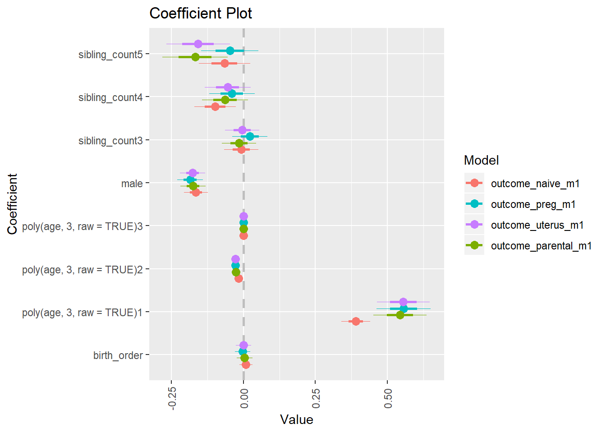
Raven 2007 old
birthorder <- birthorder %>% mutate(outcome = raven_2007_old)
model = lmer(outcome ~ birth_order + age + male + sibling_count + (1 | mother_pidlink),
data = birthorder)
compare_birthorder_specs(model)Naive birth order
outcome_naive_m1 <- update(m2_birthorder_linear, data = birthorder %>%
mutate(sibling_count = sibling_count_naive_factor,
birth_order_nonlinear = birthorder_naive_factor,
birth_order = birthorder_naive,
count_birth_order = count_birthorder_naive) %>%
filter(sibling_count != "1"))
compare_models_markdown(outcome_naive_m1)Basic Model
Model Summary
m1_covariates_only <- update(m2_birthorder_linear, formula = . ~ . - birth_order)
tidy(m1_covariates_only, conf.int = T)| term | estimate | std.error | statistic | conf.low | conf.high | group |
|---|---|---|---|---|---|---|
| (Intercept) | 0.7518 | 0.1059 | 7.098 | 0.5442 | 0.9594 | fixed |
| age | -0.02288 | 0.003339 | -6.852 | -0.02942 | -0.01633 | fixed |
| male | 0.1543 | 0.03187 | 4.844 | 0.09189 | 0.2168 | fixed |
| sibling_count3 | -0.02528 | 0.05379 | -0.4699 | -0.1307 | 0.08015 | fixed |
| sibling_count4 | -0.1113 | 0.05255 | -2.118 | -0.2143 | -0.008314 | fixed |
| sibling_count5 | -0.02367 | 0.05329 | -0.4442 | -0.1281 | 0.08078 | fixed |
| sd_(Intercept).mother_pidlink | 0.4769 | NA | NA | NA | NA | mother_pidlink |
| sd_Observation.Residual | 0.8042 | NA | NA | NA | NA | Residual |
Coefficient Plot
plot(allEffects(m1_covariates_only))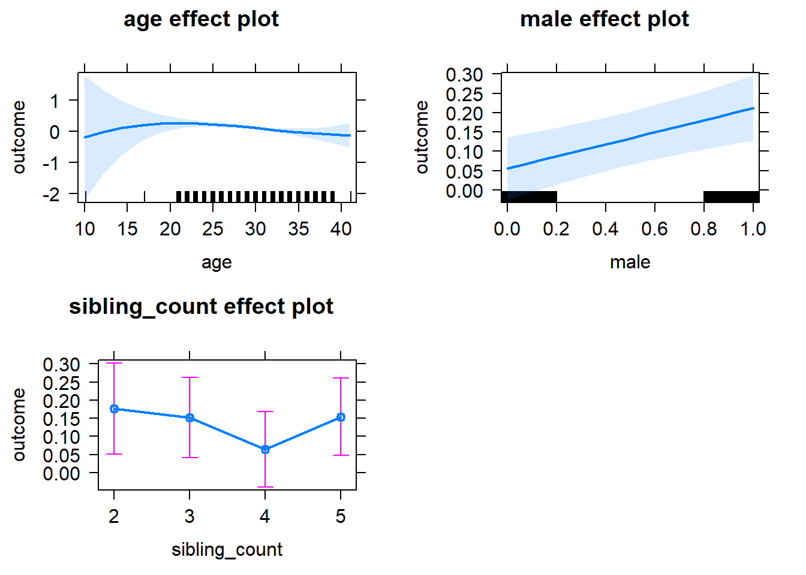
Add Birth Order Linear
Model Summary
tidy(m2_birthorder_linear, conf.int = T)| term | estimate | std.error | statistic | conf.low | conf.high | group |
|---|---|---|---|---|---|---|
| (Intercept) | 0.8019 | 0.1088 | 7.37 | 0.5886 | 1.015 | fixed |
| birth_order | -0.02931 | 0.01461 | -2.006 | -0.05794 | -0.0006791 | fixed |
| age | -0.02315 | 0.00334 | -6.931 | -0.02969 | -0.0166 | fixed |
| male | 0.1546 | 0.03185 | 4.854 | 0.09216 | 0.217 | fixed |
| sibling_count3 | -0.01207 | 0.05418 | -0.2227 | -0.1183 | 0.09413 | fixed |
| sibling_count4 | -0.08457 | 0.0542 | -1.56 | -0.1908 | 0.02166 | fixed |
| sibling_count5 | 0.01909 | 0.05739 | 0.3326 | -0.09339 | 0.1316 | fixed |
| sd_(Intercept).mother_pidlink | 0.4776 | NA | NA | NA | NA | mother_pidlink |
| sd_Observation.Residual | 0.8034 | NA | NA | NA | NA | Residual |
Coefficient Plot
plot_birthorder2(m2_birthorder_linear, separate = FALSE)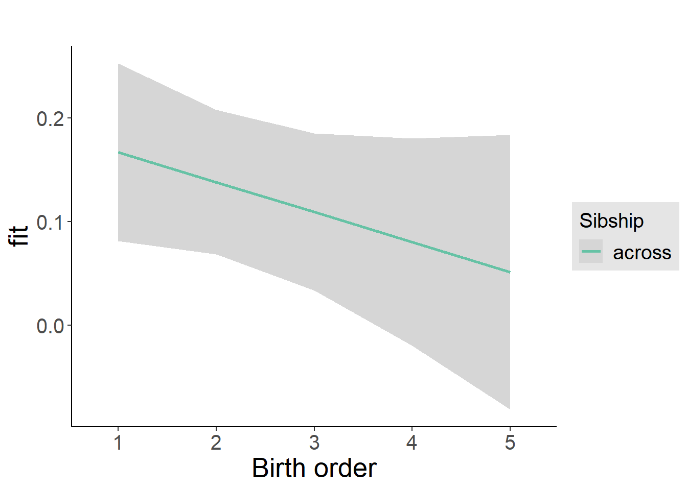
Add Birth Order Factor
Model Summary
m3_birthorder_nonlinear = update(m1_covariates_only, formula = . ~ . + birth_order_nonlinear)
tidy(m3_birthorder_nonlinear, conf.int = T)| term | estimate | std.error | statistic | conf.low | conf.high | group |
|---|---|---|---|---|---|---|
| (Intercept) | 0.7804 | 0.1072 | 7.283 | 0.5704 | 0.9905 | fixed |
| age | -0.02249 | 0.003347 | -6.718 | -0.02905 | -0.01593 | fixed |
| male | 0.1556 | 0.03184 | 4.887 | 0.09319 | 0.218 | fixed |
| sibling_count3 | -0.001224 | 0.05516 | -0.02219 | -0.1093 | 0.1069 | fixed |
| sibling_count4 | -0.07686 | 0.05503 | -1.397 | -0.1847 | 0.03099 | fixed |
| sibling_count5 | 0.003729 | 0.05789 | 0.06442 | -0.1097 | 0.1172 | fixed |
| birth_order_nonlinear2 | -0.09107 | 0.03898 | -2.336 | -0.1675 | -0.01466 | fixed |
| birth_order_nonlinear3 | -0.125 | 0.04496 | -2.781 | -0.2131 | -0.03691 | fixed |
| birth_order_nonlinear4 | -0.1111 | 0.05573 | -1.993 | -0.2203 | -0.001855 | fixed |
| birth_order_nonlinear5 | -0.01725 | 0.07935 | -0.2173 | -0.1728 | 0.1383 | fixed |
| sd_(Intercept).mother_pidlink | 0.4763 | NA | NA | NA | NA | mother_pidlink |
| sd_Observation.Residual | 0.8034 | NA | NA | NA | NA | Residual |
Coefficient Plot
plot_birthorder(m3_birthorder_nonlinear, separate = FALSE)Add Interaction
Model Summary
m4_interaction = update(m3_birthorder_nonlinear, formula = . ~ . - birth_order_nonlinear - sibling_count + count_birth_order)
tidy(m4_interaction, conf.int = T)| term | estimate | std.error | statistic | conf.low | conf.high | group |
|---|---|---|---|---|---|---|
| (Intercept) | 0.7839 | 0.1101 | 7.121 | 0.5681 | 0.9996 | fixed |
| age | -0.02224 | 0.003355 | -6.63 | -0.02882 | -0.01567 | fixed |
| male | 0.1536 | 0.03186 | 4.821 | 0.09115 | 0.216 | fixed |
| count_birth_order2/2 | -0.1124 | 0.07405 | -1.517 | -0.2575 | 0.03277 | fixed |
| count_birth_order1/3 | -0.0245 | 0.07351 | -0.3332 | -0.1686 | 0.1196 | fixed |
| count_birth_order2/3 | -0.07186 | 0.07855 | -0.9148 | -0.2258 | 0.0821 | fixed |
| count_birth_order3/3 | -0.146 | 0.07883 | -1.852 | -0.3005 | 0.008512 | fixed |
| count_birth_order1/4 | -0.04656 | 0.07575 | -0.6147 | -0.195 | 0.1019 | fixed |
| count_birth_order2/4 | -0.1351 | 0.07902 | -1.709 | -0.29 | 0.01979 | fixed |
| count_birth_order3/4 | -0.3111 | 0.08128 | -3.827 | -0.4704 | -0.1518 | fixed |
| count_birth_order4/4 | -0.2025 | 0.08205 | -2.468 | -0.3633 | -0.04167 | fixed |
| count_birth_order1/5 | -0.05191 | 0.08311 | -0.6246 | -0.2148 | 0.111 | fixed |
| count_birth_order2/5 | -0.174 | 0.08472 | -2.054 | -0.3401 | -0.007998 | fixed |
| count_birth_order3/5 | -0.009443 | 0.08351 | -0.1131 | -0.1731 | 0.1542 | fixed |
| count_birth_order4/5 | -0.1156 | 0.08557 | -1.351 | -0.2833 | 0.05212 | fixed |
| count_birth_order5/5 | -0.01784 | 0.08723 | -0.2045 | -0.1888 | 0.1531 | fixed |
| sd_(Intercept).mother_pidlink | 0.4727 | NA | NA | NA | NA | mother_pidlink |
| sd_Observation.Residual | 0.8044 | NA | NA | NA | NA | Residual |
Coefficient Plot
plot_birthorder(m4_interaction)Model Comparison
###### Model 1 - Model 2
anova(m1_covariates_only, m2_birthorder_linear, m3_birthorder_nonlinear, m4_interaction)## refitting model(s) with ML (instead of REML)| Df | AIC | BIC | logLik | deviance | Chisq | Chi Df | Pr(>Chisq) |
|---|---|---|---|---|---|---|---|
| 8 | 8766 | 8815 | -4375 | 8750 | NA | NA | NA |
| 9 | 8764 | 8819 | -4373 | 8746 | 4.028 | 1 | 0.04475 |
| 12 | 8763 | 8836 | -4370 | 8739 | 6.907 | 3 | 0.07493 |
| 18 | 8765 | 8874 | -4364 | 8729 | 10.32 | 6 | 0.1117 |
Maternal birth order
outcome_uterus_m1 <- update(m2_birthorder_linear, data = birthorder %>%
mutate(sibling_count = sibling_count_uterus_alive_factor,
birth_order_nonlinear = birthorder_uterus_alive_factor,
birth_order = birthorder_uterus_alive,
count_birth_order = count_birthorder_uterus_alive) %>%
filter(sibling_count != "1"))
compare_models_markdown(outcome_uterus_m1)Basic Model
Model Summary
m1_covariates_only <- update(m2_birthorder_linear, formula = . ~ . - birth_order)
tidy(m1_covariates_only, conf.int = T)| term | estimate | std.error | statistic | conf.low | conf.high | group |
|---|---|---|---|---|---|---|
| (Intercept) | 0.3329 | 0.1063 | 3.131 | 0.1245 | 0.5412 | fixed |
| age | -0.0007655 | 0.003634 | -0.2107 | -0.007887 | 0.006356 | fixed |
| male | 0.05714 | 0.03239 | 1.764 | -0.006354 | 0.1206 | fixed |
| sibling_count3 | -0.004247 | 0.04881 | -0.087 | -0.09992 | 0.09143 | fixed |
| sibling_count4 | -0.1107 | 0.05051 | -2.191 | -0.2097 | -0.01168 | fixed |
| sibling_count5 | -0.1793 | 0.05511 | -3.253 | -0.2873 | -0.07129 | fixed |
| sd_(Intercept).mother_pidlink | 0.3938 | NA | NA | NA | NA | mother_pidlink |
| sd_Observation.Residual | 0.7344 | NA | NA | NA | NA | Residual |
Coefficient Plot
plot(allEffects(m1_covariates_only))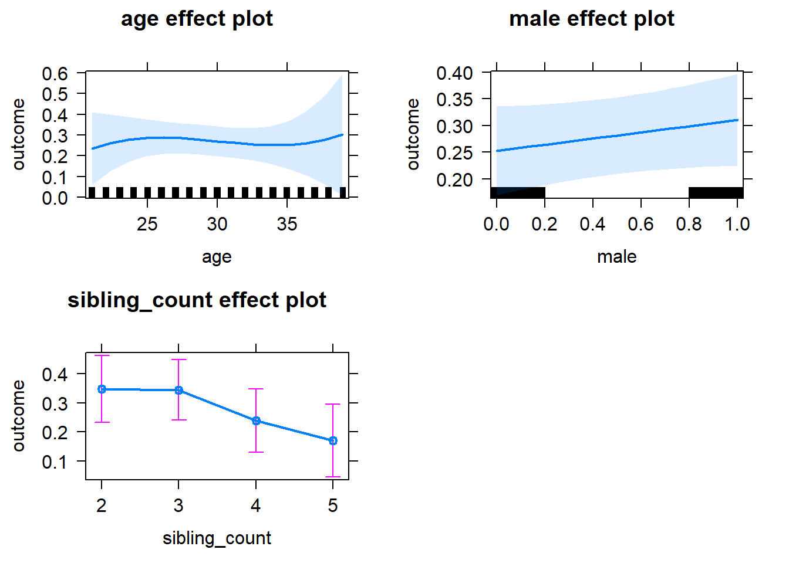
Add Birth Order Linear
Model Summary
tidy(m2_birthorder_linear, conf.int = T)| term | estimate | std.error | statistic | conf.low | conf.high | group |
|---|---|---|---|---|---|---|
| (Intercept) | 0.298 | 0.113 | 2.636 | 0.07647 | 0.5196 | fixed |
| birth_order | 0.01502 | 0.01648 | 0.9115 | -0.01728 | 0.04731 | fixed |
| age | -0.0002293 | 0.003682 | -0.06227 | -0.007446 | 0.006988 | fixed |
| male | 0.05693 | 0.03239 | 1.757 | -0.00656 | 0.1204 | fixed |
| sibling_count3 | -0.01055 | 0.04931 | -0.2139 | -0.1072 | 0.08611 | fixed |
| sibling_count4 | -0.1265 | 0.05343 | -2.368 | -0.2312 | -0.02178 | fixed |
| sibling_count5 | -0.2058 | 0.06229 | -3.303 | -0.3278 | -0.08366 | fixed |
| sd_(Intercept).mother_pidlink | 0.395 | NA | NA | NA | NA | mother_pidlink |
| sd_Observation.Residual | 0.7339 | NA | NA | NA | NA | Residual |
Coefficient Plot
plot_birthorder2(m2_birthorder_linear, separate = FALSE)Add Birth Order Factor
Model Summary
m3_birthorder_nonlinear = update(m1_covariates_only, formula = . ~ . + birth_order_nonlinear)
tidy(m3_birthorder_nonlinear, conf.int = T)| term | estimate | std.error | statistic | conf.low | conf.high | group |
|---|---|---|---|---|---|---|
| (Intercept) | 0.3215 | 0.1092 | 2.944 | 0.1075 | 0.5356 | fixed |
| age | -0.000275 | 0.003688 | -0.07456 | -0.007503 | 0.006953 | fixed |
| male | 0.05671 | 0.03242 | 1.749 | -0.006823 | 0.1202 | fixed |
| sibling_count3 | -0.01465 | 0.04988 | -0.2937 | -0.1124 | 0.08312 | fixed |
| sibling_count4 | -0.1278 | 0.0542 | -2.358 | -0.234 | -0.02156 | fixed |
| sibling_count5 | -0.2107 | 0.06306 | -3.342 | -0.3343 | -0.08713 | fixed |
| birth_order_nonlinear2 | -0.004864 | 0.03848 | -0.1264 | -0.08028 | 0.07055 | fixed |
| birth_order_nonlinear3 | 0.04431 | 0.04736 | 0.9355 | -0.04852 | 0.1371 | fixed |
| birth_order_nonlinear4 | 0.0245 | 0.06286 | 0.3898 | -0.0987 | 0.1477 | fixed |
| birth_order_nonlinear5 | 0.07467 | 0.09451 | 0.7901 | -0.1106 | 0.2599 | fixed |
| sd_(Intercept).mother_pidlink | 0.395 | NA | NA | NA | NA | mother_pidlink |
| sd_Observation.Residual | 0.7343 | NA | NA | NA | NA | Residual |
Coefficient Plot
plot_birthorder(m3_birthorder_nonlinear, separate = FALSE)Add Interaction
Model Summary
m4_interaction = update(m3_birthorder_nonlinear, formula = . ~ . - birth_order_nonlinear - sibling_count + count_birth_order)
tidy(m4_interaction, conf.int = T)| term | estimate | std.error | statistic | conf.low | conf.high | group |
|---|---|---|---|---|---|---|
| (Intercept) | 0.3433 | 0.1109 | 3.096 | 0.1259 | 0.5607 | fixed |
| age | -0.0002489 | 0.003687 | -0.06751 | -0.007474 | 0.006977 | fixed |
| male | 0.05771 | 0.03245 | 1.778 | -0.005904 | 0.1213 | fixed |
| count_birth_order2/2 | -0.06857 | 0.06865 | -0.9989 | -0.2031 | 0.06598 | fixed |
| count_birth_order1/3 | -0.05405 | 0.06275 | -0.8614 | -0.177 | 0.06893 | fixed |
| count_birth_order2/3 | 0.01534 | 0.06877 | 0.223 | -0.1194 | 0.1501 | fixed |
| count_birth_order3/3 | -0.04024 | 0.07636 | -0.527 | -0.1899 | 0.1094 | fixed |
| count_birth_order1/4 | -0.1434 | 0.0734 | -1.954 | -0.2873 | 0.0004465 | fixed |
| count_birth_order2/4 | -0.1626 | 0.07497 | -2.169 | -0.3095 | -0.01564 | fixed |
| count_birth_order3/4 | -0.1567 | 0.07599 | -2.062 | -0.3056 | -0.007782 | fixed |
| count_birth_order4/4 | -0.06684 | 0.08249 | -0.8103 | -0.2285 | 0.09484 | fixed |
| count_birth_order1/5 | -0.275 | 0.09448 | -2.911 | -0.4602 | -0.08986 | fixed |
| count_birth_order2/5 | -0.2944 | 0.09791 | -3.007 | -0.4863 | -0.1025 | fixed |
| count_birth_order3/5 | -0.03509 | 0.08958 | -0.3918 | -0.2107 | 0.1405 | fixed |
| count_birth_order4/5 | -0.2783 | 0.08872 | -3.137 | -0.4522 | -0.1044 | fixed |
| count_birth_order5/5 | -0.1568 | 0.09312 | -1.684 | -0.3393 | 0.0257 | fixed |
| sd_(Intercept).mother_pidlink | 0.3969 | NA | NA | NA | NA | mother_pidlink |
| sd_Observation.Residual | 0.7327 | NA | NA | NA | NA | Residual |
Coefficient Plot
plot_birthorder(m4_interaction)Model Comparison
###### Model 1 - Model 2
anova(m1_covariates_only, m2_birthorder_linear, m3_birthorder_nonlinear, m4_interaction)## refitting model(s) with ML (instead of REML)| Df | AIC | BIC | logLik | deviance | Chisq | Chi Df | Pr(>Chisq) |
|---|---|---|---|---|---|---|---|
| 8 | 6267 | 6313 | -3125 | 6251 | NA | NA | NA |
| 9 | 6268 | 6320 | -3125 | 6250 | 0.8282 | 1 | 0.3628 |
| 12 | 6273 | 6343 | -3124 | 6249 | 0.73 | 3 | 0.8661 |
| 18 | 6274 | 6380 | -3119 | 6238 | 10.58 | 6 | 0.1022 |
Maternal pregnancy order
outcome_preg_m1 <- update(m2_birthorder_linear, data = birthorder %>%
mutate(sibling_count = sibling_count_uterus_preg_factor,
birth_order_nonlinear = birthorder_uterus_preg_factor,
birth_order = birthorder_uterus_preg,
count_birth_order = count_birthorder_uterus_preg
) %>%
filter(sibling_count != "1"))
compare_models_markdown(outcome_preg_m1)Basic Model
Model Summary
m1_covariates_only <- update(m2_birthorder_linear, formula = . ~ . - birth_order)
tidy(m1_covariates_only, conf.int = T)| term | estimate | std.error | statistic | conf.low | conf.high | group |
|---|---|---|---|---|---|---|
| (Intercept) | 0.3788 | 0.1116 | 3.395 | 0.1601 | 0.5974 | fixed |
| age | -0.002068 | 0.0038 | -0.5441 | -0.009516 | 0.005381 | fixed |
| male | 0.05977 | 0.0338 | 1.768 | -0.006481 | 0.126 | fixed |
| sibling_count3 | -0.04447 | 0.05361 | -0.8295 | -0.1495 | 0.0606 | fixed |
| sibling_count4 | -0.08031 | 0.05441 | -1.476 | -0.1869 | 0.02632 | fixed |
| sibling_count5 | -0.1488 | 0.05662 | -2.629 | -0.2598 | -0.03787 | fixed |
| sd_(Intercept).mother_pidlink | 0.3852 | NA | NA | NA | NA | mother_pidlink |
| sd_Observation.Residual | 0.7342 | NA | NA | NA | NA | Residual |
Coefficient Plot
plot(allEffects(m1_covariates_only))Add Birth Order Linear
Model Summary
tidy(m2_birthorder_linear, conf.int = T)| term | estimate | std.error | statistic | conf.low | conf.high | group |
|---|---|---|---|---|---|---|
| (Intercept) | 0.3842 | 0.1181 | 3.252 | 0.1527 | 0.6158 | fixed |
| birth_order | -0.002337 | 0.0166 | -0.1408 | -0.03488 | 0.0302 | fixed |
| age | -0.002151 | 0.003848 | -0.5591 | -0.009692 | 0.00539 | fixed |
| male | 0.05973 | 0.03381 | 1.767 | -0.006534 | 0.126 | fixed |
| sibling_count3 | -0.04344 | 0.05411 | -0.8027 | -0.1495 | 0.06262 | fixed |
| sibling_count4 | -0.07804 | 0.05677 | -1.375 | -0.1893 | 0.03323 | fixed |
| sibling_count5 | -0.1451 | 0.06241 | -2.326 | -0.2675 | -0.02284 | fixed |
| sd_(Intercept).mother_pidlink | 0.3851 | NA | NA | NA | NA | mother_pidlink |
| sd_Observation.Residual | 0.7344 | NA | NA | NA | NA | Residual |
Coefficient Plot
plot_birthorder2(m2_birthorder_linear, separate = FALSE)Add Birth Order Factor
Model Summary
m3_birthorder_nonlinear = update(m1_covariates_only, formula = . ~ . + birth_order_nonlinear)
tidy(m3_birthorder_nonlinear, conf.int = T)| term | estimate | std.error | statistic | conf.low | conf.high | group |
|---|---|---|---|---|---|---|
| (Intercept) | 0.3841 | 0.1144 | 3.357 | 0.1599 | 0.6084 | fixed |
| age | -0.002098 | 0.003854 | -0.5445 | -0.009651 | 0.005455 | fixed |
| male | 0.05933 | 0.03383 | 1.754 | -0.006974 | 0.1256 | fixed |
| sibling_count3 | -0.04015 | 0.05475 | -0.7334 | -0.1475 | 0.06716 | fixed |
| sibling_count4 | -0.07168 | 0.05744 | -1.248 | -0.1843 | 0.0409 | fixed |
| sibling_count5 | -0.1496 | 0.06287 | -2.379 | -0.2728 | -0.02637 | fixed |
| birth_order_nonlinear2 | -0.01187 | 0.04034 | -0.2942 | -0.09094 | 0.0672 | fixed |
| birth_order_nonlinear3 | -0.02112 | 0.04907 | -0.4304 | -0.1173 | 0.07506 | fixed |
| birth_order_nonlinear4 | -0.02667 | 0.06484 | -0.4113 | -0.1537 | 0.1004 | fixed |
| birth_order_nonlinear5 | 0.04577 | 0.09343 | 0.4899 | -0.1373 | 0.2289 | fixed |
| sd_(Intercept).mother_pidlink | 0.3848 | NA | NA | NA | NA | mother_pidlink |
| sd_Observation.Residual | 0.735 | NA | NA | NA | NA | Residual |
Coefficient Plot
plot_birthorder(m3_birthorder_nonlinear, separate = FALSE)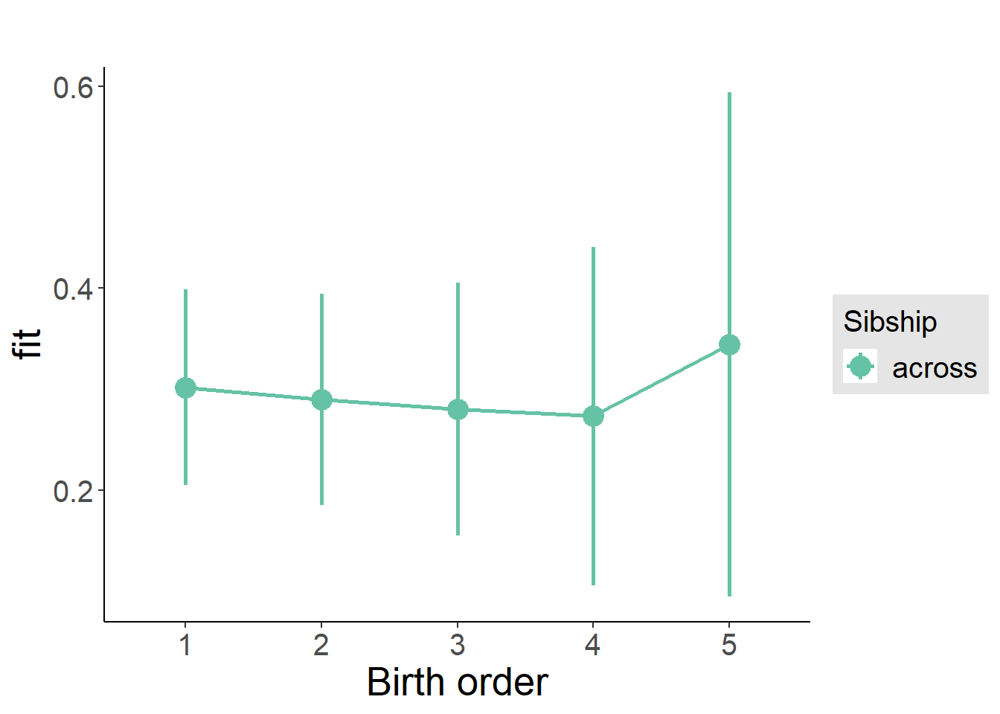
Add Interaction
Model Summary
m4_interaction = update(m3_birthorder_nonlinear, formula = . ~ . - birth_order_nonlinear - sibling_count + count_birth_order)
tidy(m4_interaction, conf.int = T)| term | estimate | std.error | statistic | conf.low | conf.high | group |
|---|---|---|---|---|---|---|
| (Intercept) | 0.3726 | 0.1164 | 3.2 | 0.1444 | 0.6008 | fixed |
| age | -0.002108 | 0.003855 | -0.5469 | -0.009663 | 0.005447 | fixed |
| male | 0.05985 | 0.03389 | 1.766 | -0.006578 | 0.1263 | fixed |
| count_birth_order2/2 | 0.01977 | 0.07747 | 0.2552 | -0.1321 | 0.1716 | fixed |
| count_birth_order1/3 | -0.05179 | 0.06947 | -0.7455 | -0.188 | 0.08437 | fixed |
| count_birth_order2/3 | 0.008415 | 0.07554 | 0.1114 | -0.1397 | 0.1565 | fixed |
| count_birth_order3/3 | -0.0693 | 0.0822 | -0.8431 | -0.2304 | 0.09181 | fixed |
| count_birth_order1/4 | -0.014 | 0.07731 | -0.1811 | -0.1655 | 0.1375 | fixed |
| count_birth_order2/4 | -0.116 | 0.07817 | -1.484 | -0.2692 | 0.03724 | fixed |
| count_birth_order3/4 | -0.1447 | 0.08254 | -1.753 | -0.3065 | 0.0171 | fixed |
| count_birth_order4/4 | -0.01549 | 0.09082 | -0.1706 | -0.1935 | 0.1625 | fixed |
| count_birth_order1/5 | -0.1318 | 0.0887 | -1.486 | -0.3056 | 0.04208 | fixed |
| count_birth_order2/5 | -0.1988 | 0.09228 | -2.154 | -0.3796 | -0.01791 | fixed |
| count_birth_order3/5 | -0.04134 | 0.09227 | -0.448 | -0.2222 | 0.1395 | fixed |
| count_birth_order4/5 | -0.2414 | 0.09242 | -2.611 | -0.4225 | -0.0602 | fixed |
| count_birth_order5/5 | -0.09178 | 0.096 | -0.956 | -0.2799 | 0.09638 | fixed |
| sd_(Intercept).mother_pidlink | 0.3852 | NA | NA | NA | NA | mother_pidlink |
| sd_Observation.Residual | 0.7343 | NA | NA | NA | NA | Residual |
Coefficient Plot
plot_birthorder(m4_interaction)
Model Comparison
###### Model 1 - Model 2
anova(m1_covariates_only, m2_birthorder_linear, m3_birthorder_nonlinear, m4_interaction)## refitting model(s) with ML (instead of REML)| Df | AIC | BIC | logLik | deviance | Chisq | Chi Df | Pr(>Chisq) |
|---|---|---|---|---|---|---|---|
| 8 | 5685 | 5731 | -2834 | 5669 | NA | NA | NA |
| 9 | 5687 | 5738 | -2834 | 5669 | 0.02005 | 1 | 0.8874 |
| 12 | 5692 | 5761 | -2834 | 5668 | 0.7321 | 3 | 0.8656 |
| 18 | 5695 | 5799 | -2830 | 5659 | 8.667 | 6 | 0.1932 |
Parental full sibling order
outcome_parental_m1 <- update(m2_birthorder_linear, data = birthorder %>%
mutate(sibling_count = sibling_count_genes_factor,
birth_order_nonlinear = birthorder_genes_factor,
birth_order = birthorder_genes,
count_birth_order = count_birthorder_genes
) %>%
filter(sibling_count != "1"))
compare_models_markdown(outcome_parental_m1)Basic Model
Model Summary
m1_covariates_only <- update(m2_birthorder_linear, formula = . ~ . - birth_order)
tidy(m1_covariates_only, conf.int = T)| term | estimate | std.error | statistic | conf.low | conf.high | group |
|---|---|---|---|---|---|---|
| (Intercept) | 0.3696 | 0.1063 | 3.476 | 0.1612 | 0.578 | fixed |
| age | -0.002661 | 0.00364 | -0.7311 | -0.009794 | 0.004473 | fixed |
| male | 0.05506 | 0.03248 | 1.696 | -0.008588 | 0.1187 | fixed |
| sibling_count3 | -0.004099 | 0.0484 | -0.0847 | -0.09895 | 0.09075 | fixed |
| sibling_count4 | -0.08355 | 0.05026 | -1.663 | -0.1821 | 0.01495 | fixed |
| sibling_count5 | -0.1555 | 0.05615 | -2.77 | -0.2656 | -0.04548 | fixed |
| sd_(Intercept).mother_pidlink | 0.4041 | NA | NA | NA | NA | mother_pidlink |
| sd_Observation.Residual | 0.7342 | NA | NA | NA | NA | Residual |
Coefficient Plot
plot(allEffects(m1_covariates_only))Add Birth Order Linear
Model Summary
tidy(m2_birthorder_linear, conf.int = T)| term | estimate | std.error | statistic | conf.low | conf.high | group |
|---|---|---|---|---|---|---|
| (Intercept) | 0.3221 | 0.1136 | 2.834 | 0.09933 | 0.5448 | fixed |
| birth_order | 0.01976 | 0.01664 | 1.188 | -0.01285 | 0.05238 | fixed |
| age | -0.0019 | 0.003696 | -0.5141 | -0.009144 | 0.005344 | fixed |
| male | 0.05469 | 0.03247 | 1.684 | -0.008954 | 0.1183 | fixed |
| sibling_count3 | -0.01252 | 0.04892 | -0.2559 | -0.1084 | 0.08336 | fixed |
| sibling_count4 | -0.1045 | 0.05328 | -1.962 | -0.209 | -0.0000993 | fixed |
| sibling_count5 | -0.1888 | 0.06275 | -3.009 | -0.3118 | -0.06581 | fixed |
| sd_(Intercept).mother_pidlink | 0.405 | NA | NA | NA | NA | mother_pidlink |
| sd_Observation.Residual | 0.7337 | NA | NA | NA | NA | Residual |
Coefficient Plot
plot_birthorder2(m2_birthorder_linear, separate = FALSE)Add Birth Order Factor
Model Summary
m3_birthorder_nonlinear = update(m1_covariates_only, formula = . ~ . + birth_order_nonlinear)
tidy(m3_birthorder_nonlinear, conf.int = T)| term | estimate | std.error | statistic | conf.low | conf.high | group |
|---|---|---|---|---|---|---|
| (Intercept) | 0.3566 | 0.1096 | 3.253 | 0.1417 | 0.5715 | fixed |
| age | -0.002025 | 0.0037 | -0.5472 | -0.009276 | 0.005227 | fixed |
| male | 0.05421 | 0.03249 | 1.669 | -0.00946 | 0.1179 | fixed |
| sibling_count3 | -0.02192 | 0.04954 | -0.4425 | -0.119 | 0.07517 | fixed |
| sibling_count4 | -0.1069 | 0.05404 | -1.979 | -0.2128 | -0.001023 | fixed |
| sibling_count5 | -0.1967 | 0.06361 | -3.093 | -0.3214 | -0.07207 | fixed |
| birth_order_nonlinear2 | -0.01063 | 0.03823 | -0.2781 | -0.08557 | 0.0643 | fixed |
| birth_order_nonlinear3 | 0.07143 | 0.0471 | 1.517 | -0.02088 | 0.1637 | fixed |
| birth_order_nonlinear4 | 0.0188 | 0.06327 | 0.2971 | -0.1052 | 0.1428 | fixed |
| birth_order_nonlinear5 | 0.1026 | 0.1007 | 1.019 | -0.09479 | 0.3 | fixed |
| sd_(Intercept).mother_pidlink | 0.4057 | NA | NA | NA | NA | mother_pidlink |
| sd_Observation.Residual | 0.7335 | NA | NA | NA | NA | Residual |
Coefficient Plot
plot_birthorder(m3_birthorder_nonlinear, separate = FALSE)
Add Interaction
Model Summary
m4_interaction = update(m3_birthorder_nonlinear, formula = . ~ . - birth_order_nonlinear - sibling_count + count_birth_order)
tidy(m4_interaction, conf.int = T)| term | estimate | std.error | statistic | conf.low | conf.high | group |
|---|---|---|---|---|---|---|
| (Intercept) | 0.3733 | 0.1114 | 3.352 | 0.1551 | 0.5916 | fixed |
| age | -0.002061 | 0.003698 | -0.5573 | -0.009308 | 0.005187 | fixed |
| male | 0.05567 | 0.03252 | 1.712 | -0.008065 | 0.1194 | fixed |
| count_birth_order2/2 | -0.05503 | 0.06674 | -0.8247 | -0.1858 | 0.07576 | fixed |
| count_birth_order1/3 | -0.04998 | 0.06218 | -0.8038 | -0.1718 | 0.07189 | fixed |
| count_birth_order2/3 | 0.009654 | 0.06884 | 0.1403 | -0.1253 | 0.1446 | fixed |
| count_birth_order3/3 | -0.01928 | 0.07467 | -0.2582 | -0.1656 | 0.1271 | fixed |
| count_birth_order1/4 | -0.1064 | 0.0734 | -1.449 | -0.2502 | 0.03748 | fixed |
| count_birth_order2/4 | -0.1306 | 0.07492 | -1.742 | -0.2774 | 0.01629 | fixed |
| count_birth_order3/4 | -0.1045 | 0.07618 | -1.371 | -0.2538 | 0.04485 | fixed |
| count_birth_order4/4 | -0.07173 | 0.0816 | -0.8789 | -0.2317 | 0.08822 | fixed |
| count_birth_order1/5 | -0.2649 | 0.09415 | -2.813 | -0.4494 | -0.08035 | fixed |
| count_birth_order2/5 | -0.3307 | 0.09971 | -3.316 | -0.5261 | -0.1353 | fixed |
| count_birth_order3/5 | 0.03575 | 0.09105 | 0.3926 | -0.1427 | 0.2142 | fixed |
| count_birth_order4/5 | -0.2359 | 0.09141 | -2.58 | -0.415 | -0.05671 | fixed |
| count_birth_order5/5 | -0.1068 | 0.09919 | -1.076 | -0.3012 | 0.08765 | fixed |
| sd_(Intercept).mother_pidlink | 0.408 | NA | NA | NA | NA | mother_pidlink |
| sd_Observation.Residual | 0.7314 | NA | NA | NA | NA | Residual |
Coefficient Plot
plot_birthorder(m4_interaction)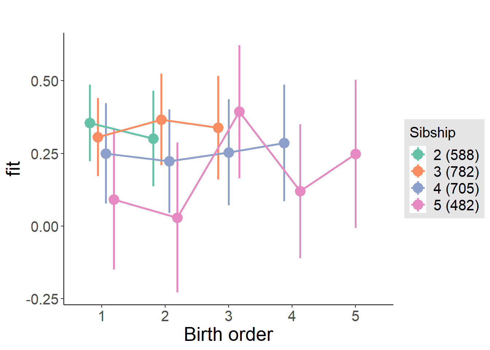
Model Comparison
###### Model 1 - Model 2
anova(m1_covariates_only, m2_birthorder_linear, m3_birthorder_nonlinear, m4_interaction)## refitting model(s) with ML (instead of REML)| Df | AIC | BIC | logLik | deviance | Chisq | Chi Df | Pr(>Chisq) |
|---|---|---|---|---|---|---|---|
| 8 | 6310 | 6356 | -3147 | 6294 | NA | NA | NA |
| 9 | 6310 | 6363 | -3146 | 6292 | 1.41 | 1 | 0.235 |
| 12 | 6314 | 6384 | -3145 | 6290 | 2.398 | 3 | 0.4941 |
| 18 | 6314 | 6419 | -3139 | 6278 | 11.68 | 6 | 0.06959 |
Compare birth order specifications
library(coefplot)
multiplot(outcome_naive_m1, outcome_preg_m1, outcome_uterus_m1, outcome_parental_m1, dodgeHeight = 0.6,
intercept = FALSE)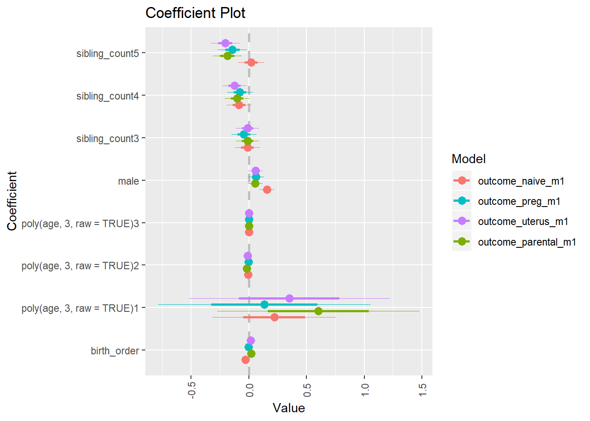
Numeracy 2007 old
birthorder <- birthorder %>% mutate(outcome = math_2007_old)
model = lmer(outcome ~ birth_order + age + male + sibling_count + (1 | mother_pidlink),
data = birthorder)
compare_birthorder_specs(model)Naive birth order
outcome_naive_m1 <- update(m2_birthorder_linear, data = birthorder %>%
mutate(sibling_count = sibling_count_naive_factor,
birth_order_nonlinear = birthorder_naive_factor,
birth_order = birthorder_naive,
count_birth_order = count_birthorder_naive) %>%
filter(sibling_count != "1"))
compare_models_markdown(outcome_naive_m1)Basic Model
Model Summary
m1_covariates_only <- update(m2_birthorder_linear, formula = . ~ . - birth_order)
tidy(m1_covariates_only, conf.int = T)| term | estimate | std.error | statistic | conf.low | conf.high | group |
|---|---|---|---|---|---|---|
| (Intercept) | 1.136 | 0.1135 | 10.01 | 0.9134 | 1.358 | fixed |
| age | -0.0321 | 0.003572 | -8.988 | -0.0391 | -0.0251 | fixed |
| male | -0.1087 | 0.03366 | -3.229 | -0.1746 | -0.04271 | fixed |
| sibling_count3 | 0.03641 | 0.0585 | 0.6224 | -0.07824 | 0.1511 | fixed |
| sibling_count4 | -0.1159 | 0.05726 | -2.023 | -0.2281 | -0.003637 | fixed |
| sibling_count5 | -0.0533 | 0.05821 | -0.9157 | -0.1674 | 0.06079 | fixed |
| sd_(Intercept).mother_pidlink | 0.5832 | NA | NA | NA | NA | mother_pidlink |
| sd_Observation.Residual | 0.8187 | NA | NA | NA | NA | Residual |
Coefficient Plot
plot(allEffects(m1_covariates_only))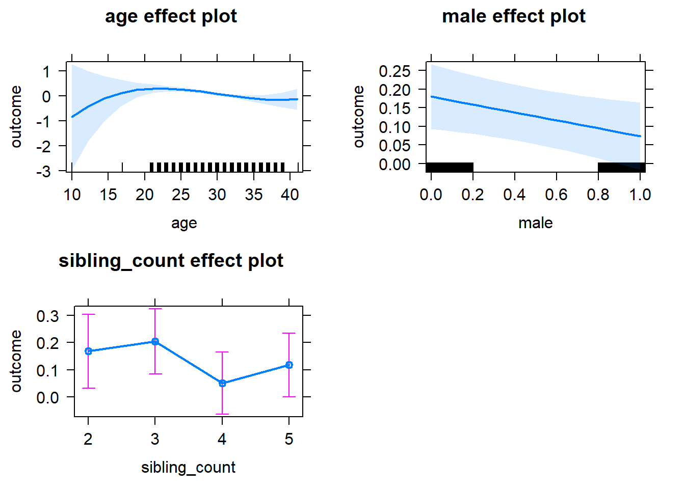
Add Birth Order Linear
Model Summary
tidy(m2_birthorder_linear, conf.int = T)| term | estimate | std.error | statistic | conf.low | conf.high | group |
|---|---|---|---|---|---|---|
| (Intercept) | 1.133 | 0.1175 | 9.648 | 0.9031 | 1.364 | fixed |
| birth_order | 0.001313 | 0.01541 | 0.08525 | -0.02888 | 0.03151 | fixed |
| age | -0.03208 | 0.003583 | -8.954 | -0.0391 | -0.02506 | fixed |
| male | -0.1087 | 0.03366 | -3.228 | -0.1747 | -0.0427 | fixed |
| sibling_count3 | 0.03583 | 0.05891 | 0.6082 | -0.07963 | 0.1513 | fixed |
| sibling_count4 | -0.117 | 0.05895 | -1.985 | -0.2326 | -0.0015 | fixed |
| sibling_count5 | -0.05522 | 0.06241 | -0.8849 | -0.1775 | 0.0671 | fixed |
| sd_(Intercept).mother_pidlink | 0.5831 | NA | NA | NA | NA | mother_pidlink |
| sd_Observation.Residual | 0.8189 | NA | NA | NA | NA | Residual |
Coefficient Plot
plot_birthorder2(m2_birthorder_linear, separate = FALSE)Add Birth Order Factor
Model Summary
m3_birthorder_nonlinear = update(m1_covariates_only, formula = . ~ . + birth_order_nonlinear)
tidy(m3_birthorder_nonlinear, conf.int = T)| term | estimate | std.error | statistic | conf.low | conf.high | group |
|---|---|---|---|---|---|---|
| (Intercept) | 1.132 | 0.1153 | 9.821 | 0.9063 | 1.358 | fixed |
| age | -0.03173 | 0.003593 | -8.833 | -0.03878 | -0.02469 | fixed |
| male | -0.1077 | 0.03368 | -3.198 | -0.1737 | -0.04169 | fixed |
| sibling_count3 | 0.05071 | 0.05991 | 0.8465 | -0.0667 | 0.1681 | fixed |
| sibling_count4 | -0.1115 | 0.05979 | -1.864 | -0.2287 | 0.005726 | fixed |
| sibling_count5 | -0.0587 | 0.06293 | -0.9328 | -0.182 | 0.06464 | fixed |
| birth_order_nonlinear2 | -0.01678 | 0.04087 | -0.4106 | -0.09689 | 0.06332 | fixed |
| birth_order_nonlinear3 | -0.05529 | 0.04715 | -1.172 | -0.1477 | 0.03713 | fixed |
| birth_order_nonlinear4 | 0.01901 | 0.05858 | 0.3244 | -0.09581 | 0.1338 | fixed |
| birth_order_nonlinear5 | 0.04954 | 0.08338 | 0.5941 | -0.1139 | 0.213 | fixed |
| sd_(Intercept).mother_pidlink | 0.5812 | NA | NA | NA | NA | mother_pidlink |
| sd_Observation.Residual | 0.82 | NA | NA | NA | NA | Residual |
Coefficient Plot
plot_birthorder(m3_birthorder_nonlinear, separate = FALSE)Add Interaction
Model Summary
m4_interaction = update(m3_birthorder_nonlinear, formula = . ~ . - birth_order_nonlinear - sibling_count + count_birth_order)
tidy(m4_interaction, conf.int = T)| term | estimate | std.error | statistic | conf.low | conf.high | group |
|---|---|---|---|---|---|---|
| (Intercept) | 1.156 | 0.1185 | 9.76 | 0.9243 | 1.389 | fixed |
| age | -0.03163 | 0.003604 | -8.777 | -0.0387 | -0.02457 | fixed |
| male | -0.109 | 0.03372 | -3.232 | -0.1751 | -0.04288 | fixed |
| count_birth_order2/2 | -0.0766 | 0.07772 | -0.9857 | -0.2289 | 0.07572 | fixed |
| count_birth_order1/3 | 0.006864 | 0.07873 | 0.08719 | -0.1474 | 0.1612 | fixed |
| count_birth_order2/3 | 0.04703 | 0.08391 | 0.5605 | -0.1174 | 0.2115 | fixed |
| count_birth_order3/3 | -0.04591 | 0.08425 | -0.545 | -0.211 | 0.1192 | fixed |
| count_birth_order1/4 | -0.1702 | 0.08109 | -2.099 | -0.3291 | -0.0113 | fixed |
| count_birth_order2/4 | -0.1295 | 0.08436 | -1.535 | -0.2948 | 0.03585 | fixed |
| count_birth_order3/4 | -0.2137 | 0.08675 | -2.463 | -0.3837 | -0.04367 | fixed |
| count_birth_order4/4 | -0.08383 | 0.08758 | -0.9571 | -0.2555 | 0.08783 | fixed |
| count_birth_order1/5 | -0.05381 | 0.08879 | -0.606 | -0.2278 | 0.1202 | fixed |
| count_birth_order2/5 | -0.1428 | 0.09029 | -1.581 | -0.3197 | 0.03421 | fixed |
| count_birth_order3/5 | -0.09737 | 0.08894 | -1.095 | -0.2717 | 0.07694 | fixed |
| count_birth_order4/5 | -0.1056 | 0.09105 | -1.16 | -0.2841 | 0.07287 | fixed |
| count_birth_order5/5 | -0.03661 | 0.09295 | -0.3939 | -0.2188 | 0.1456 | fixed |
| sd_(Intercept).mother_pidlink | 0.5824 | NA | NA | NA | NA | mother_pidlink |
| sd_Observation.Residual | 0.8198 | NA | NA | NA | NA | Residual |
Coefficient Plot
plot_birthorder(m4_interaction)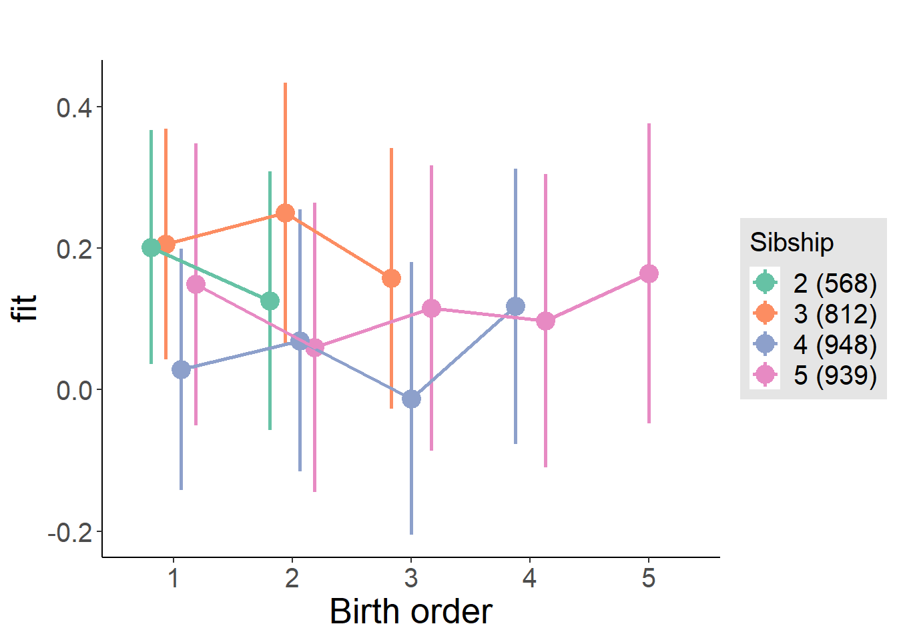
Model Comparison
###### Model 1 - Model 2
anova(m1_covariates_only, m2_birthorder_linear, m3_birthorder_nonlinear, m4_interaction)## refitting model(s) with ML (instead of REML)| Df | AIC | BIC | logLik | deviance | Chisq | Chi Df | Pr(>Chisq) |
|---|---|---|---|---|---|---|---|
| 8 | 9173 | 9222 | -4579 | 9157 | NA | NA | NA |
| 9 | 9175 | 9230 | -4579 | 9157 | 0.007491 | 1 | 0.931 |
| 12 | 9179 | 9252 | -4577 | 9155 | 2.675 | 3 | 0.4445 |
| 18 | 9187 | 9297 | -4576 | 9151 | 3.538 | 6 | 0.7389 |
Maternal birth order
outcome_uterus_m1 <- update(m2_birthorder_linear, data = birthorder %>%
mutate(sibling_count = sibling_count_uterus_alive_factor,
birth_order_nonlinear = birthorder_uterus_alive_factor,
birth_order = birthorder_uterus_alive,
count_birth_order = count_birthorder_uterus_alive) %>%
filter(sibling_count != "1"))
compare_models_markdown(outcome_uterus_m1)Basic Model
Model Summary
m1_covariates_only <- update(m2_birthorder_linear, formula = . ~ . - birth_order)
tidy(m1_covariates_only, conf.int = T)| term | estimate | std.error | statistic | conf.low | conf.high | group |
|---|---|---|---|---|---|---|
| (Intercept) | 0.9788 | 0.126 | 7.768 | 0.7319 | 1.226 | fixed |
| age | -0.02065 | 0.004302 | -4.8 | -0.02908 | -0.01222 | fixed |
| male | -0.1564 | 0.03788 | -4.13 | -0.2306 | -0.08218 | fixed |
| sibling_count3 | 0.02667 | 0.05919 | 0.4507 | -0.08934 | 0.1427 | fixed |
| sibling_count4 | -0.04778 | 0.06136 | -0.7787 | -0.168 | 0.07248 | fixed |
| sibling_count5 | -0.1254 | 0.06715 | -1.867 | -0.257 | 0.006232 | fixed |
| sd_(Intercept).mother_pidlink | 0.5598 | NA | NA | NA | NA | mother_pidlink |
| sd_Observation.Residual | 0.8205 | NA | NA | NA | NA | Residual |
Coefficient Plot
plot(allEffects(m1_covariates_only))Add Birth Order Linear
Model Summary
tidy(m2_birthorder_linear, conf.int = T)| term | estimate | std.error | statistic | conf.low | conf.high | group |
|---|---|---|---|---|---|---|
| (Intercept) | 0.921 | 0.1356 | 6.792 | 0.6553 | 1.187 | fixed |
| birth_order | 0.02228 | 0.01932 | 1.153 | -0.01559 | 0.06014 | fixed |
| age | -0.01962 | 0.004393 | -4.468 | -0.02823 | -0.01102 | fixed |
| male | -0.1567 | 0.03788 | -4.138 | -0.231 | -0.08249 | fixed |
| sibling_count3 | 0.01733 | 0.05974 | 0.2901 | -0.09975 | 0.1344 | fixed |
| sibling_count4 | -0.07173 | 0.06477 | -1.107 | -0.1987 | 0.05522 | fixed |
| sibling_count5 | -0.1652 | 0.07549 | -2.188 | -0.3131 | -0.0172 | fixed |
| sd_(Intercept).mother_pidlink | 0.5595 | NA | NA | NA | NA | mother_pidlink |
| sd_Observation.Residual | 0.8206 | NA | NA | NA | NA | Residual |
Coefficient Plot
plot_birthorder2(m2_birthorder_linear, separate = FALSE)Add Birth Order Factor
Model Summary
m3_birthorder_nonlinear = update(m1_covariates_only, formula = . ~ . + birth_order_nonlinear)
tidy(m3_birthorder_nonlinear, conf.int = T)| term | estimate | std.error | statistic | conf.low | conf.high | group |
|---|---|---|---|---|---|---|
| (Intercept) | 0.9563 | 0.1304 | 7.335 | 0.7008 | 1.212 | fixed |
| age | -0.01939 | 0.004397 | -4.41 | -0.02801 | -0.01077 | fixed |
| male | -0.1572 | 0.03787 | -4.152 | -0.2314 | -0.08301 | fixed |
| sibling_count3 | 0.01985 | 0.06034 | 0.3289 | -0.09842 | 0.1381 | fixed |
| sibling_count4 | -0.08562 | 0.06561 | -1.305 | -0.2142 | 0.04298 | fixed |
| sibling_count5 | -0.1733 | 0.07635 | -2.269 | -0.3229 | -0.02363 | fixed |
| birth_order_nonlinear2 | -0.03139 | 0.04435 | -0.7077 | -0.1183 | 0.05554 | fixed |
| birth_order_nonlinear3 | 0.0197 | 0.05481 | 0.3594 | -0.08773 | 0.1271 | fixed |
| birth_order_nonlinear4 | 0.1377 | 0.07333 | 1.877 | -0.006052 | 0.2814 | fixed |
| birth_order_nonlinear5 | 0.02552 | 0.1099 | 0.2323 | -0.1898 | 0.2408 | fixed |
| sd_(Intercept).mother_pidlink | 0.5612 | NA | NA | NA | NA | mother_pidlink |
| sd_Observation.Residual | 0.8194 | NA | NA | NA | NA | Residual |
Coefficient Plot
plot_birthorder(m3_birthorder_nonlinear, separate = FALSE)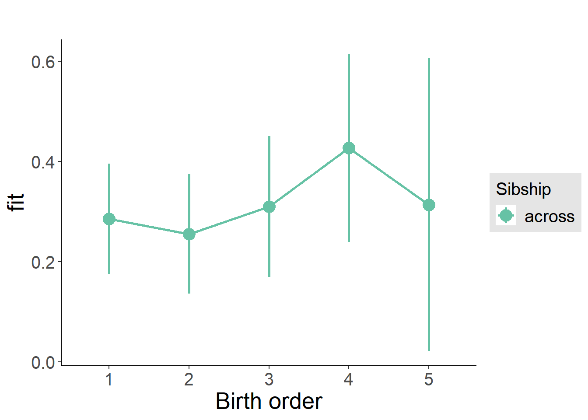
Add Interaction
Model Summary
m4_interaction = update(m3_birthorder_nonlinear, formula = . ~ . - birth_order_nonlinear - sibling_count + count_birth_order)
tidy(m4_interaction, conf.int = T)| term | estimate | std.error | statistic | conf.low | conf.high | group |
|---|---|---|---|---|---|---|
| (Intercept) | 0.9793 | 0.1324 | 7.399 | 0.7199 | 1.239 | fixed |
| age | -0.01923 | 0.004398 | -4.372 | -0.02785 | -0.01061 | fixed |
| male | -0.1614 | 0.03794 | -4.255 | -0.2358 | -0.08707 | fixed |
| count_birth_order2/2 | -0.1024 | 0.0791 | -1.294 | -0.2574 | 0.05264 | fixed |
| count_birth_order1/3 | -0.0215 | 0.07438 | -0.289 | -0.1673 | 0.1243 | fixed |
| count_birth_order2/3 | -0.03212 | 0.0813 | -0.3951 | -0.1915 | 0.1272 | fixed |
| count_birth_order3/3 | 0.04137 | 0.08999 | 0.4598 | -0.135 | 0.2177 | fixed |
| count_birth_order1/4 | -0.1306 | 0.0868 | -1.504 | -0.3007 | 0.03954 | fixed |
| count_birth_order2/4 | -0.08152 | 0.08839 | -0.9222 | -0.2548 | 0.09173 | fixed |
| count_birth_order3/4 | -0.188 | 0.08943 | -2.102 | -0.3633 | -0.01273 | fixed |
| count_birth_order4/4 | 0.09288 | 0.09715 | 0.956 | -0.09754 | 0.2833 | fixed |
| count_birth_order1/5 | -0.1987 | 0.1118 | -1.778 | -0.4178 | 0.02037 | fixed |
| count_birth_order2/5 | -0.2722 | 0.1155 | -2.356 | -0.4986 | -0.04575 | fixed |
| count_birth_order3/5 | -0.06363 | 0.1052 | -0.6047 | -0.2699 | 0.1426 | fixed |
| count_birth_order4/5 | -0.141 | 0.1046 | -1.348 | -0.3461 | 0.06408 | fixed |
| count_birth_order5/5 | -0.1728 | 0.1095 | -1.578 | -0.3873 | 0.04181 | fixed |
| sd_(Intercept).mother_pidlink | 0.5633 | NA | NA | NA | NA | mother_pidlink |
| sd_Observation.Residual | 0.818 | NA | NA | NA | NA | Residual |
Coefficient Plot
plot_birthorder(m4_interaction)Model Comparison
###### Model 1 - Model 2
anova(m1_covariates_only, m2_birthorder_linear, m3_birthorder_nonlinear, m4_interaction)## refitting model(s) with ML (instead of REML)| Df | AIC | BIC | logLik | deviance | Chisq | Chi Df | Pr(>Chisq) |
|---|---|---|---|---|---|---|---|
| 8 | 7101 | 7148 | -3543 | 7085 | NA | NA | NA |
| 9 | 7102 | 7154 | -3542 | 7084 | 1.333 | 1 | 0.2482 |
| 12 | 7104 | 7174 | -3540 | 7080 | 4.046 | 3 | 0.2566 |
| 18 | 7108 | 7213 | -3536 | 7072 | 7.843 | 6 | 0.2498 |
Maternal pregnancy order
outcome_preg_m1 <- update(m2_birthorder_linear, data = birthorder %>%
mutate(sibling_count = sibling_count_uterus_preg_factor,
birth_order_nonlinear = birthorder_uterus_preg_factor,
birth_order = birthorder_uterus_preg,
count_birth_order = count_birthorder_uterus_preg
) %>%
filter(sibling_count != "1"))
compare_models_markdown(outcome_preg_m1)Basic Model
Model Summary
m1_covariates_only <- update(m2_birthorder_linear, formula = . ~ . - birth_order)
tidy(m1_covariates_only, conf.int = T)| term | estimate | std.error | statistic | conf.low | conf.high | group |
|---|---|---|---|---|---|---|
| (Intercept) | 0.9688 | 0.1331 | 7.28 | 0.708 | 1.23 | fixed |
| age | -0.02104 | 0.004526 | -4.647 | -0.02991 | -0.01216 | fixed |
| male | -0.1398 | 0.03969 | -3.522 | -0.2176 | -0.06202 | fixed |
| sibling_count3 | 0.01534 | 0.06553 | 0.2341 | -0.1131 | 0.1438 | fixed |
| sibling_count4 | -0.03421 | 0.06662 | -0.5135 | -0.1648 | 0.09636 | fixed |
| sibling_count5 | -0.05992 | 0.0695 | -0.8623 | -0.1961 | 0.07629 | fixed |
| sd_(Intercept).mother_pidlink | 0.5642 | NA | NA | NA | NA | mother_pidlink |
| sd_Observation.Residual | 0.8198 | NA | NA | NA | NA | Residual |
Coefficient Plot
plot(allEffects(m1_covariates_only))Add Birth Order Linear
Model Summary
tidy(m2_birthorder_linear, conf.int = T)| term | estimate | std.error | statistic | conf.low | conf.high | group |
|---|---|---|---|---|---|---|
| (Intercept) | 0.9239 | 0.1428 | 6.47 | 0.644 | 1.204 | fixed |
| birth_order | 0.01698 | 0.01958 | 0.8671 | -0.0214 | 0.05537 | fixed |
| age | -0.02023 | 0.004621 | -4.378 | -0.02929 | -0.01117 | fixed |
| male | -0.1396 | 0.0397 | -3.515 | -0.2174 | -0.06175 | fixed |
| sibling_count3 | 0.007795 | 0.0661 | 0.1179 | -0.1218 | 0.1373 | fixed |
| sibling_count4 | -0.05106 | 0.06939 | -0.7358 | -0.1871 | 0.08495 | fixed |
| sibling_count5 | -0.08714 | 0.07624 | -1.143 | -0.2366 | 0.0623 | fixed |
| sd_(Intercept).mother_pidlink | 0.5636 | NA | NA | NA | NA | mother_pidlink |
| sd_Observation.Residual | 0.8202 | NA | NA | NA | NA | Residual |
Coefficient Plot
plot_birthorder2(m2_birthorder_linear, separate = FALSE)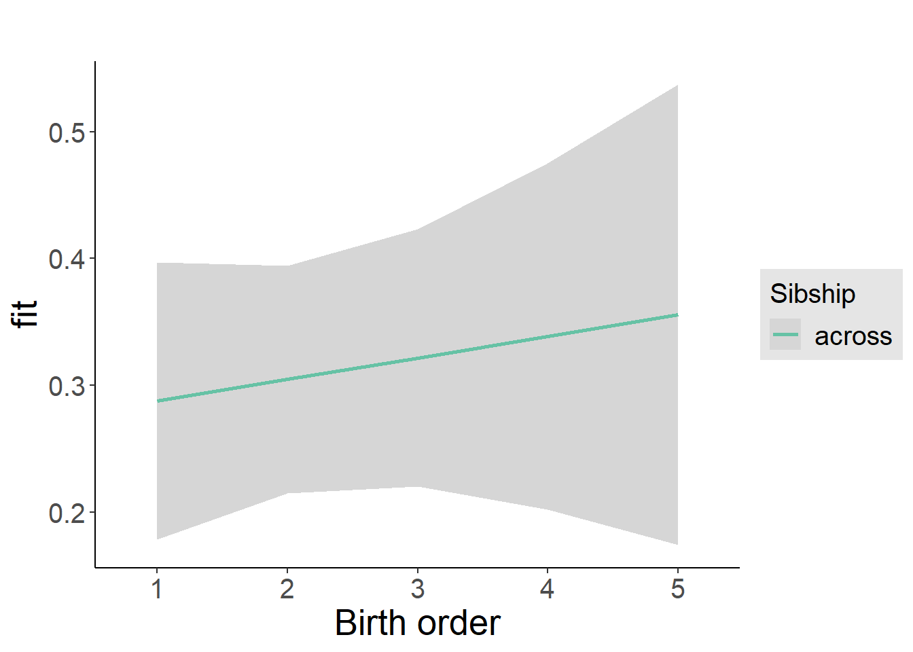
Add Birth Order Factor
Model Summary
m3_birthorder_nonlinear = update(m1_covariates_only, formula = . ~ . + birth_order_nonlinear)
tidy(m3_birthorder_nonlinear, conf.int = T)| term | estimate | std.error | statistic | conf.low | conf.high | group |
|---|---|---|---|---|---|---|
| (Intercept) | 0.9391 | 0.1376 | 6.827 | 0.6695 | 1.209 | fixed |
| age | -0.02008 | 0.004627 | -4.341 | -0.02915 | -0.01102 | fixed |
| male | -0.1401 | 0.03973 | -3.525 | -0.2179 | -0.06218 | fixed |
| sibling_count3 | 0.01674 | 0.06676 | 0.2508 | -0.1141 | 0.1476 | fixed |
| sibling_count4 | -0.04249 | 0.0701 | -0.6062 | -0.1799 | 0.09489 | fixed |
| sibling_count5 | -0.09173 | 0.07673 | -1.195 | -0.2421 | 0.05867 | fixed |
| birth_order_nonlinear2 | 0.01169 | 0.04679 | 0.2497 | -0.08003 | 0.1034 | fixed |
| birth_order_nonlinear3 | -0.006279 | 0.05714 | -0.1099 | -0.1183 | 0.1057 | fixed |
| birth_order_nonlinear4 | 0.05017 | 0.07603 | 0.6598 | -0.09885 | 0.1992 | fixed |
| birth_order_nonlinear5 | 0.1317 | 0.1093 | 1.205 | -0.0825 | 0.3458 | fixed |
| sd_(Intercept).mother_pidlink | 0.5621 | NA | NA | NA | NA | mother_pidlink |
| sd_Observation.Residual | 0.8215 | NA | NA | NA | NA | Residual |
Coefficient Plot
plot_birthorder(m3_birthorder_nonlinear, separate = FALSE)Add Interaction
Model Summary
m4_interaction = update(m3_birthorder_nonlinear, formula = . ~ . - birth_order_nonlinear - sibling_count + count_birth_order)
tidy(m4_interaction, conf.int = T)| term | estimate | std.error | statistic | conf.low | conf.high | group |
|---|---|---|---|---|---|---|
| (Intercept) | 0.9658 | 0.14 | 6.898 | 0.6914 | 1.24 | fixed |
| age | -0.01971 | 0.004633 | -4.254 | -0.02879 | -0.01063 | fixed |
| male | -0.1436 | 0.03984 | -3.603 | -0.2216 | -0.06547 | fixed |
| count_birth_order2/2 | -0.08589 | 0.08974 | -0.9571 | -0.2618 | 0.09 | fixed |
| count_birth_order1/3 | -0.05565 | 0.08293 | -0.6711 | -0.2182 | 0.1069 | fixed |
| count_birth_order2/3 | -0.005474 | 0.08995 | -0.06085 | -0.1818 | 0.1708 | fixed |
| count_birth_order3/3 | 0.04745 | 0.09761 | 0.4862 | -0.1439 | 0.2388 | fixed |
| count_birth_order1/4 | -0.0949 | 0.09212 | -1.03 | -0.2754 | 0.08565 | fixed |
| count_birth_order2/4 | -0.02611 | 0.09289 | -0.2811 | -0.2082 | 0.156 | fixed |
| count_birth_order3/4 | -0.1553 | 0.09776 | -1.588 | -0.3469 | 0.03632 | fixed |
| count_birth_order4/4 | 0.02697 | 0.1076 | 0.2507 | -0.1839 | 0.2379 | fixed |
| count_birth_order1/5 | -0.09858 | 0.1057 | -0.9324 | -0.3058 | 0.1086 | fixed |
| count_birth_order2/5 | -0.09752 | 0.1097 | -0.8892 | -0.3125 | 0.1174 | fixed |
| count_birth_order3/5 | -0.1289 | 0.1091 | -1.182 | -0.3428 | 0.08492 | fixed |
| count_birth_order4/5 | -0.1373 | 0.1096 | -1.253 | -0.3521 | 0.07752 | fixed |
| count_birth_order5/5 | 0.001571 | 0.1136 | 0.01383 | -0.2211 | 0.2242 | fixed |
| sd_(Intercept).mother_pidlink | 0.5635 | NA | NA | NA | NA | mother_pidlink |
| sd_Observation.Residual | 0.821 | NA | NA | NA | NA | Residual |
Coefficient Plot
plot_birthorder(m4_interaction)Model Comparison
###### Model 1 - Model 2
anova(m1_covariates_only, m2_birthorder_linear, m3_birthorder_nonlinear, m4_interaction)## refitting model(s) with ML (instead of REML)| Df | AIC | BIC | logLik | deviance | Chisq | Chi Df | Pr(>Chisq) |
|---|---|---|---|---|---|---|---|
| 8 | 6472 | 6518 | -3228 | 6456 | NA | NA | NA |
| 9 | 6473 | 6525 | -3228 | 6455 | 0.7549 | 1 | 0.3849 |
| 12 | 6478 | 6547 | -3227 | 6454 | 1.127 | 3 | 0.7706 |
| 18 | 6485 | 6588 | -3224 | 6449 | 5.122 | 6 | 0.5283 |
Parental full sibling order
outcome_parental_m1 <- update(m2_birthorder_linear, data = birthorder %>%
mutate(sibling_count = sibling_count_genes_factor,
birth_order_nonlinear = birthorder_genes_factor,
birth_order = birthorder_genes,
count_birth_order = count_birthorder_genes
) %>%
filter(sibling_count != "1"))
compare_models_markdown(outcome_parental_m1)Basic Model
Model Summary
m1_covariates_only <- update(m2_birthorder_linear, formula = . ~ . - birth_order)
tidy(m1_covariates_only, conf.int = T)| term | estimate | std.error | statistic | conf.low | conf.high | group |
|---|---|---|---|---|---|---|
| (Intercept) | 0.9947 | 0.1253 | 7.94 | 0.7492 | 1.24 | fixed |
| age | -0.02198 | 0.004284 | -5.13 | -0.03037 | -0.01358 | fixed |
| male | -0.1716 | 0.03783 | -4.538 | -0.2458 | -0.0975 | fixed |
| sibling_count3 | 0.04218 | 0.05815 | 0.7254 | -0.07179 | 0.1562 | fixed |
| sibling_count4 | -0.003126 | 0.06047 | -0.0517 | -0.1216 | 0.1154 | fixed |
| sibling_count5 | -0.0895 | 0.06783 | -1.319 | -0.2224 | 0.04344 | fixed |
| sd_(Intercept).mother_pidlink | 0.5544 | NA | NA | NA | NA | mother_pidlink |
| sd_Observation.Residual | 0.8229 | NA | NA | NA | NA | Residual |
Coefficient Plot
plot(allEffects(m1_covariates_only))Add Birth Order Linear
Model Summary
tidy(m2_birthorder_linear, conf.int = T)| term | estimate | std.error | statistic | conf.low | conf.high | group |
|---|---|---|---|---|---|---|
| (Intercept) | 0.9428 | 0.1353 | 6.966 | 0.6775 | 1.208 | fixed |
| birth_order | 0.01969 | 0.01942 | 1.014 | -0.01837 | 0.05776 | fixed |
| age | -0.02105 | 0.004381 | -4.805 | -0.02963 | -0.01246 | fixed |
| male | -0.172 | 0.03783 | -4.547 | -0.2462 | -0.09788 | fixed |
| sibling_count3 | 0.03373 | 0.05874 | 0.5743 | -0.08139 | 0.1489 | fixed |
| sibling_count4 | -0.02437 | 0.06399 | -0.3808 | -0.1498 | 0.1011 | fixed |
| sibling_count5 | -0.1231 | 0.07547 | -1.631 | -0.271 | 0.02486 | fixed |
| sd_(Intercept).mother_pidlink | 0.554 | NA | NA | NA | NA | mother_pidlink |
| sd_Observation.Residual | 0.8231 | NA | NA | NA | NA | Residual |
Coefficient Plot
plot_birthorder2(m2_birthorder_linear, separate = FALSE)
Add Birth Order Factor
Model Summary
m3_birthorder_nonlinear = update(m1_covariates_only, formula = . ~ . + birth_order_nonlinear)
tidy(m3_birthorder_nonlinear, conf.int = T)| term | estimate | std.error | statistic | conf.low | conf.high | group |
|---|---|---|---|---|---|---|
| (Intercept) | 0.9697 | 0.1301 | 7.456 | 0.7148 | 1.225 | fixed |
| age | -0.02082 | 0.004385 | -4.749 | -0.02942 | -0.01223 | fixed |
| male | -0.1724 | 0.03785 | -4.555 | -0.2466 | -0.09824 | fixed |
| sibling_count3 | 0.04159 | 0.0594 | 0.7001 | -0.07484 | 0.158 | fixed |
| sibling_count4 | -0.02638 | 0.06482 | -0.4069 | -0.1534 | 0.1007 | fixed |
| sibling_count5 | -0.1341 | 0.07642 | -1.755 | -0.2839 | 0.01565 | fixed |
| birth_order_nonlinear2 | -0.01612 | 0.04405 | -0.366 | -0.1024 | 0.07021 | fixed |
| birth_order_nonlinear3 | -0.006786 | 0.05443 | -0.1247 | -0.1135 | 0.09989 | fixed |
| birth_order_nonlinear4 | 0.1014 | 0.07363 | 1.377 | -0.04293 | 0.2457 | fixed |
| birth_order_nonlinear5 | 0.105 | 0.1167 | 0.8998 | -0.1238 | 0.3338 | fixed |
| sd_(Intercept).mother_pidlink | 0.5544 | NA | NA | NA | NA | mother_pidlink |
| sd_Observation.Residual | 0.8231 | NA | NA | NA | NA | Residual |
Coefficient Plot
plot_birthorder(m3_birthorder_nonlinear, separate = FALSE)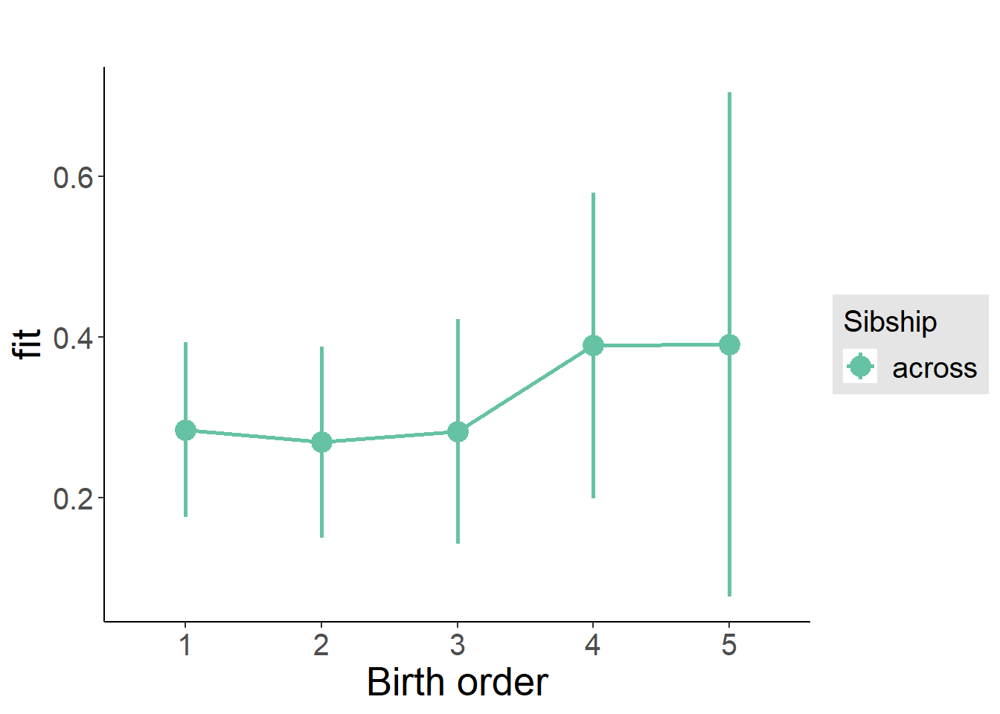
Add Interaction
Model Summary
m4_interaction = update(m3_birthorder_nonlinear, formula = . ~ . - birth_order_nonlinear - sibling_count + count_birth_order)
tidy(m4_interaction, conf.int = T)| term | estimate | std.error | statistic | conf.low | conf.high | group |
|---|---|---|---|---|---|---|
| (Intercept) | 0.9955 | 0.1322 | 7.532 | 0.7365 | 1.255 | fixed |
| age | -0.02081 | 0.004387 | -4.743 | -0.02941 | -0.01221 | fixed |
| male | -0.1739 | 0.03795 | -4.583 | -0.2483 | -0.09955 | fixed |
| count_birth_order2/2 | -0.08553 | 0.07697 | -1.111 | -0.2364 | 0.06532 | fixed |
| count_birth_order1/3 | -0.00315 | 0.07337 | -0.04293 | -0.1469 | 0.1406 | fixed |
| count_birth_order2/3 | 0.03204 | 0.08103 | 0.3954 | -0.1268 | 0.1908 | fixed |
| count_birth_order3/3 | 0.007844 | 0.08769 | 0.08945 | -0.164 | 0.1797 | fixed |
| count_birth_order1/4 | -0.0548 | 0.08642 | -0.6341 | -0.2242 | 0.1146 | fixed |
| count_birth_order2/4 | -0.022 | 0.08797 | -0.2501 | -0.1944 | 0.1504 | fixed |
| count_birth_order3/4 | -0.1204 | 0.08936 | -1.347 | -0.2955 | 0.05475 | fixed |
| count_birth_order4/4 | 0.06714 | 0.09582 | 0.7008 | -0.1207 | 0.2549 | fixed |
| count_birth_order1/5 | -0.1783 | 0.111 | -1.607 | -0.3959 | 0.03922 | fixed |
| count_birth_order2/5 | -0.2579 | 0.1173 | -2.199 | -0.4879 | -0.02801 | fixed |
| count_birth_order3/5 | -0.05981 | 0.1067 | -0.5607 | -0.2688 | 0.1492 | fixed |
| count_birth_order4/5 | -0.08185 | 0.1075 | -0.7616 | -0.2925 | 0.1288 | fixed |
| count_birth_order5/5 | -0.05191 | 0.1162 | -0.4469 | -0.2796 | 0.1757 | fixed |
| sd_(Intercept).mother_pidlink | 0.556 | NA | NA | NA | NA | mother_pidlink |
| sd_Observation.Residual | 0.8224 | NA | NA | NA | NA | Residual |
Coefficient Plot
plot_birthorder(m4_interaction)
Model Comparison
###### Model 1 - Model 2
anova(m1_covariates_only, m2_birthorder_linear, m3_birthorder_nonlinear, m4_interaction)## refitting model(s) with ML (instead of REML)| Df | AIC | BIC | logLik | deviance | Chisq | Chi Df | Pr(>Chisq) |
|---|---|---|---|---|---|---|---|
| 8 | 7119 | 7166 | -3552 | 7103 | NA | NA | NA |
| 9 | 7120 | 7173 | -3551 | 7102 | 1.032 | 1 | 0.3097 |
| 12 | 7124 | 7194 | -3550 | 7100 | 2.235 | 3 | 0.525 |
| 18 | 7131 | 7236 | -3547 | 7095 | 4.972 | 6 | 0.5474 |
Compare birth order specifications
library(coefplot)
multiplot(outcome_naive_m1, outcome_preg_m1, outcome_uterus_m1, outcome_parental_m1, dodgeHeight = 0.6,
intercept = FALSE)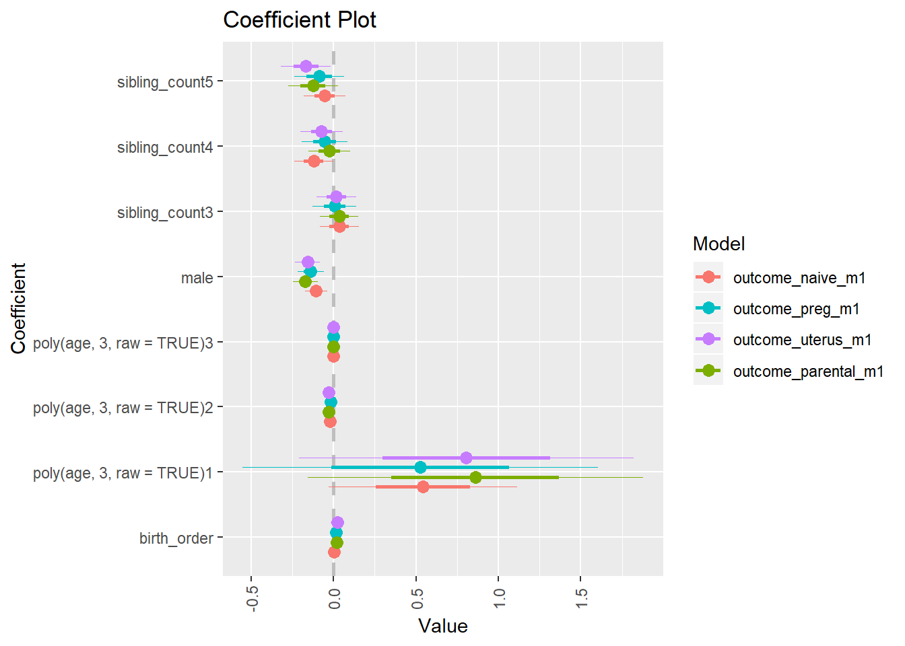
Raven 2007 young
birthorder <- birthorder %>% mutate(outcome = raven_2007_young)
model = lmer(outcome ~ birth_order + age + male + sibling_count + (1 | mother_pidlink),
data = birthorder)
compare_birthorder_specs(model)Naive birth order
outcome_naive_m1 <- update(m2_birthorder_linear, data = birthorder %>%
mutate(sibling_count = sibling_count_naive_factor,
birth_order_nonlinear = birthorder_naive_factor,
birth_order = birthorder_naive,
count_birth_order = count_birthorder_naive) %>%
filter(sibling_count != "1"))
compare_models_markdown(outcome_naive_m1)Basic Model
Model Summary
m1_covariates_only <- update(m2_birthorder_linear, formula = . ~ . - birth_order)
tidy(m1_covariates_only, conf.int = T)| term | estimate | std.error | statistic | conf.low | conf.high | group |
|---|---|---|---|---|---|---|
| (Intercept) | -1.086 | 0.06363 | -17.07 | -1.211 | -0.9617 | fixed |
| age | 0.06069 | 0.002983 | 20.34 | 0.05484 | 0.06653 | fixed |
| male | 0.05304 | 0.02512 | 2.112 | 0.003813 | 0.1023 | fixed |
| sibling_count3 | -0.02523 | 0.03928 | -0.6423 | -0.1022 | 0.05176 | fixed |
| sibling_count4 | -0.133 | 0.04013 | -3.315 | -0.2117 | -0.05438 | fixed |
| sibling_count5 | -0.135 | 0.04331 | -3.117 | -0.2199 | -0.05012 | fixed |
| sd_(Intercept).mother_pidlink | 0.5027 | NA | NA | NA | NA | mother_pidlink |
| sd_Observation.Residual | 0.7651 | NA | NA | NA | NA | Residual |
Coefficient Plot
plot(allEffects(m1_covariates_only))Add Birth Order Linear
Model Summary
tidy(m2_birthorder_linear, conf.int = T)| term | estimate | std.error | statistic | conf.low | conf.high | group |
|---|---|---|---|---|---|---|
| (Intercept) | -1.134 | 0.06768 | -16.75 | -1.266 | -1.001 | fixed |
| birth_order | 0.0253 | 0.01239 | 2.042 | 0.001022 | 0.04957 | fixed |
| age | 0.06149 | 0.003008 | 20.44 | 0.0556 | 0.06739 | fixed |
| male | 0.05213 | 0.02511 | 2.076 | 0.00291 | 0.1014 | fixed |
| sibling_count3 | -0.03674 | 0.03966 | -0.9264 | -0.1145 | 0.04099 | fixed |
| sibling_count4 | -0.159 | 0.04206 | -3.779 | -0.2414 | -0.07652 | fixed |
| sibling_count5 | -0.179 | 0.04833 | -3.703 | -0.2737 | -0.08424 | fixed |
| sd_(Intercept).mother_pidlink | 0.5017 | NA | NA | NA | NA | mother_pidlink |
| sd_Observation.Residual | 0.7653 | NA | NA | NA | NA | Residual |
Coefficient Plot
plot_birthorder2(m2_birthorder_linear, separate = FALSE)Add Birth Order Factor
Model Summary
m3_birthorder_nonlinear = update(m1_covariates_only, formula = . ~ . + birth_order_nonlinear)
tidy(m3_birthorder_nonlinear, conf.int = T)| term | estimate | std.error | statistic | conf.low | conf.high | group |
|---|---|---|---|---|---|---|
| (Intercept) | -1.122 | 0.06495 | -17.27 | -1.249 | -0.9947 | fixed |
| age | 0.06148 | 0.003004 | 20.46 | 0.05559 | 0.06737 | fixed |
| male | 0.05219 | 0.02508 | 2.08 | 0.003022 | 0.1014 | fixed |
| sibling_count3 | -0.01841 | 0.04004 | -0.4598 | -0.09688 | 0.06006 | fixed |
| sibling_count4 | -0.1453 | 0.04252 | -3.417 | -0.2287 | -0.06198 | fixed |
| sibling_count5 | -0.1771 | 0.04865 | -3.64 | -0.2724 | -0.08172 | fixed |
| birth_order_nonlinear2 | 0.07038 | 0.02952 | 2.384 | 0.01252 | 0.1282 | fixed |
| birth_order_nonlinear3 | -0.03552 | 0.03642 | -0.9753 | -0.1069 | 0.03586 | fixed |
| birth_order_nonlinear4 | 0.1161 | 0.04859 | 2.389 | 0.02087 | 0.2114 | fixed |
| birth_order_nonlinear5 | 0.1648 | 0.06947 | 2.372 | 0.02861 | 0.3009 | fixed |
| sd_(Intercept).mother_pidlink | 0.5014 | NA | NA | NA | NA | mother_pidlink |
| sd_Observation.Residual | 0.7642 | NA | NA | NA | NA | Residual |
Coefficient Plot
plot_birthorder(m3_birthorder_nonlinear, separate = FALSE)
Add Interaction
Model Summary
m4_interaction = update(m3_birthorder_nonlinear, formula = . ~ . - birth_order_nonlinear - sibling_count + count_birth_order)
tidy(m4_interaction, conf.int = T)| term | estimate | std.error | statistic | conf.low | conf.high | group |
|---|---|---|---|---|---|---|
| (Intercept) | -1.116 | 0.06625 | -16.85 | -1.246 | -0.9864 | fixed |
| age | 0.0615 | 0.003007 | 20.45 | 0.0556 | 0.06739 | fixed |
| male | 0.05158 | 0.02511 | 2.054 | 0.002363 | 0.1008 | fixed |
| count_birth_order2/2 | 0.05181 | 0.05505 | 0.9411 | -0.05608 | 0.1597 | fixed |
| count_birth_order1/3 | -0.03653 | 0.04876 | -0.7491 | -0.1321 | 0.05904 | fixed |
| count_birth_order2/3 | 0.06379 | 0.05377 | 1.186 | -0.0416 | 0.1692 | fixed |
| count_birth_order3/3 | -0.05699 | 0.06038 | -0.9438 | -0.1753 | 0.06136 | fixed |
| count_birth_order1/4 | -0.1636 | 0.05559 | -2.942 | -0.2725 | -0.0546 | fixed |
| count_birth_order2/4 | -0.09203 | 0.05681 | -1.62 | -0.2034 | 0.01931 | fixed |
| count_birth_order3/4 | -0.1893 | 0.05941 | -3.185 | -0.3057 | -0.07281 | fixed |
| count_birth_order4/4 | 0.006818 | 0.06484 | 0.1052 | -0.1203 | 0.1339 | fixed |
| count_birth_order1/5 | -0.1439 | 0.06762 | -2.129 | -0.2765 | -0.0114 | fixed |
| count_birth_order2/5 | -0.1084 | 0.07138 | -1.519 | -0.2483 | 0.03148 | fixed |
| count_birth_order3/5 | -0.2144 | 0.06797 | -3.155 | -0.3476 | -0.0812 | fixed |
| count_birth_order4/5 | -0.1195 | 0.07134 | -1.675 | -0.2593 | 0.02034 | fixed |
| count_birth_order5/5 | -0.01985 | 0.06936 | -0.2862 | -0.1558 | 0.1161 | fixed |
| sd_(Intercept).mother_pidlink | 0.5008 | NA | NA | NA | NA | mother_pidlink |
| sd_Observation.Residual | 0.7649 | NA | NA | NA | NA | Residual |
Coefficient Plot
plot_birthorder(m4_interaction)Model Comparison
###### Model 1 - Model 2
anova(m1_covariates_only, m2_birthorder_linear, m3_birthorder_nonlinear, m4_interaction)## refitting model(s) with ML (instead of REML)| Df | AIC | BIC | logLik | deviance | Chisq | Chi Df | Pr(>Chisq) |
|---|---|---|---|---|---|---|---|
| 8 | 13073 | 13125 | -6528 | 13057 | NA | NA | NA |
| 9 | 13071 | 13129 | -6526 | 13053 | 4.176 | 1 | 0.04099 |
| 12 | 13062 | 13140 | -6519 | 13038 | 14.91 | 3 | 0.001895 |
| 18 | 13071 | 13188 | -6518 | 13035 | 2.488 | 6 | 0.8698 |
Maternal birth order
outcome_uterus_m1 <- update(m2_birthorder_linear, data = birthorder %>%
mutate(sibling_count = sibling_count_uterus_alive_factor,
birth_order_nonlinear = birthorder_uterus_alive_factor,
birth_order = birthorder_uterus_alive,
count_birth_order = count_birthorder_uterus_alive) %>%
filter(sibling_count != "1"))
compare_models_markdown(outcome_uterus_m1)Basic Model
Model Summary
m1_covariates_only <- update(m2_birthorder_linear, formula = . ~ . - birth_order)
tidy(m1_covariates_only, conf.int = T)| term | estimate | std.error | statistic | conf.low | conf.high | group |
|---|---|---|---|---|---|---|
| (Intercept) | -1.185 | 0.06416 | -18.47 | -1.311 | -1.059 | fixed |
| age | 0.06742 | 0.003069 | 21.96 | 0.0614 | 0.07343 | fixed |
| male | 0.01558 | 0.02615 | 0.596 | -0.03567 | 0.06684 | fixed |
| sibling_count3 | -0.01402 | 0.03584 | -0.3913 | -0.08426 | 0.05621 | fixed |
| sibling_count4 | -0.1166 | 0.04053 | -2.876 | -0.196 | -0.03713 | fixed |
| sibling_count5 | -0.1947 | 0.04896 | -3.976 | -0.2906 | -0.0987 | fixed |
| sd_(Intercept).mother_pidlink | 0.4919 | NA | NA | NA | NA | mother_pidlink |
| sd_Observation.Residual | 0.7497 | NA | NA | NA | NA | Residual |
Coefficient Plot
plot(allEffects(m1_covariates_only))Add Birth Order Linear
Model Summary
tidy(m2_birthorder_linear, conf.int = T)| term | estimate | std.error | statistic | conf.low | conf.high | group |
|---|---|---|---|---|---|---|
| (Intercept) | -1.222 | 0.0694 | -17.61 | -1.358 | -1.086 | fixed |
| birth_order | 0.0202 | 0.01432 | 1.411 | -0.007859 | 0.04826 | fixed |
| age | 0.06801 | 0.003098 | 21.95 | 0.06194 | 0.07409 | fixed |
| male | 0.01504 | 0.02615 | 0.575 | -0.03622 | 0.0663 | fixed |
| sibling_count3 | -0.02375 | 0.03648 | -0.6511 | -0.09526 | 0.04775 | fixed |
| sibling_count4 | -0.1403 | 0.04386 | -3.199 | -0.2263 | -0.05433 | fixed |
| sibling_count5 | -0.2353 | 0.05676 | -4.145 | -0.3465 | -0.124 | fixed |
| sd_(Intercept).mother_pidlink | 0.4911 | NA | NA | NA | NA | mother_pidlink |
| sd_Observation.Residual | 0.75 | NA | NA | NA | NA | Residual |
Coefficient Plot
plot_birthorder2(m2_birthorder_linear, separate = FALSE)Add Birth Order Factor
Model Summary
m3_birthorder_nonlinear = update(m1_covariates_only, formula = . ~ . + birth_order_nonlinear)
tidy(m3_birthorder_nonlinear, conf.int = T)| term | estimate | std.error | statistic | conf.low | conf.high | group |
|---|---|---|---|---|---|---|
| (Intercept) | -1.205 | 0.06578 | -18.32 | -1.334 | -1.076 | fixed |
| age | 0.06799 | 0.003099 | 21.94 | 0.06192 | 0.07406 | fixed |
| male | 0.01489 | 0.02617 | 0.5692 | -0.03639 | 0.06618 | fixed |
| sibling_count3 | -0.0167 | 0.03708 | -0.4503 | -0.08938 | 0.05598 | fixed |
| sibling_count4 | -0.1332 | 0.04465 | -2.984 | -0.2207 | -0.04572 | fixed |
| sibling_count5 | -0.242 | 0.05851 | -4.136 | -0.3567 | -0.1273 | fixed |
| birth_order_nonlinear2 | 0.03154 | 0.02986 | 1.056 | -0.02698 | 0.09007 | fixed |
| birth_order_nonlinear3 | 0.01087 | 0.04009 | 0.2711 | -0.0677 | 0.08944 | fixed |
| birth_order_nonlinear4 | 0.06104 | 0.05515 | 1.107 | -0.04705 | 0.1691 | fixed |
| birth_order_nonlinear5 | 0.1343 | 0.08624 | 1.558 | -0.0347 | 0.3034 | fixed |
| sd_(Intercept).mother_pidlink | 0.4909 | NA | NA | NA | NA | mother_pidlink |
| sd_Observation.Residual | 0.7503 | NA | NA | NA | NA | Residual |
Coefficient Plot
plot_birthorder(m3_birthorder_nonlinear, separate = FALSE)Add Interaction
Model Summary
m4_interaction = update(m3_birthorder_nonlinear, formula = . ~ . - birth_order_nonlinear - sibling_count + count_birth_order)
tidy(m4_interaction, conf.int = T)| term | estimate | std.error | statistic | conf.low | conf.high | group |
|---|---|---|---|---|---|---|
| (Intercept) | -1.209 | 0.06671 | -18.13 | -1.34 | -1.078 | fixed |
| age | 0.06828 | 0.003102 | 22.01 | 0.0622 | 0.07436 | fixed |
| male | 0.01463 | 0.02619 | 0.5585 | -0.0367 | 0.06596 | fixed |
| count_birth_order2/2 | 0.02687 | 0.04796 | 0.5603 | -0.06713 | 0.1209 | fixed |
| count_birth_order1/3 | -0.04675 | 0.04561 | -1.025 | -0.1361 | 0.04265 | fixed |
| count_birth_order2/3 | 0.03941 | 0.04967 | 0.7935 | -0.05794 | 0.1368 | fixed |
| count_birth_order3/3 | 0.01305 | 0.0554 | 0.2356 | -0.09554 | 0.1216 | fixed |
| count_birth_order1/4 | -0.1025 | 0.06141 | -1.67 | -0.2229 | 0.01783 | fixed |
| count_birth_order2/4 | -0.1717 | 0.06141 | -2.795 | -0.292 | -0.05129 | fixed |
| count_birth_order3/4 | -0.1246 | 0.06409 | -1.944 | -0.2502 | 0.001018 | fixed |
| count_birth_order4/4 | -0.04038 | 0.06352 | -0.6357 | -0.1649 | 0.08412 | fixed |
| count_birth_order1/5 | -0.1614 | 0.09291 | -1.737 | -0.3435 | 0.02069 | fixed |
| count_birth_order2/5 | -0.1318 | 0.09818 | -1.342 | -0.3242 | 0.06066 | fixed |
| count_birth_order3/5 | -0.2847 | 0.08643 | -3.294 | -0.4541 | -0.1153 | fixed |
| count_birth_order4/5 | -0.2459 | 0.08118 | -3.029 | -0.405 | -0.08678 | fixed |
| count_birth_order5/5 | -0.116 | 0.07851 | -1.478 | -0.2699 | 0.03787 | fixed |
| sd_(Intercept).mother_pidlink | 0.4919 | NA | NA | NA | NA | mother_pidlink |
| sd_Observation.Residual | 0.7496 | NA | NA | NA | NA | Residual |
Coefficient Plot
plot_birthorder(m4_interaction)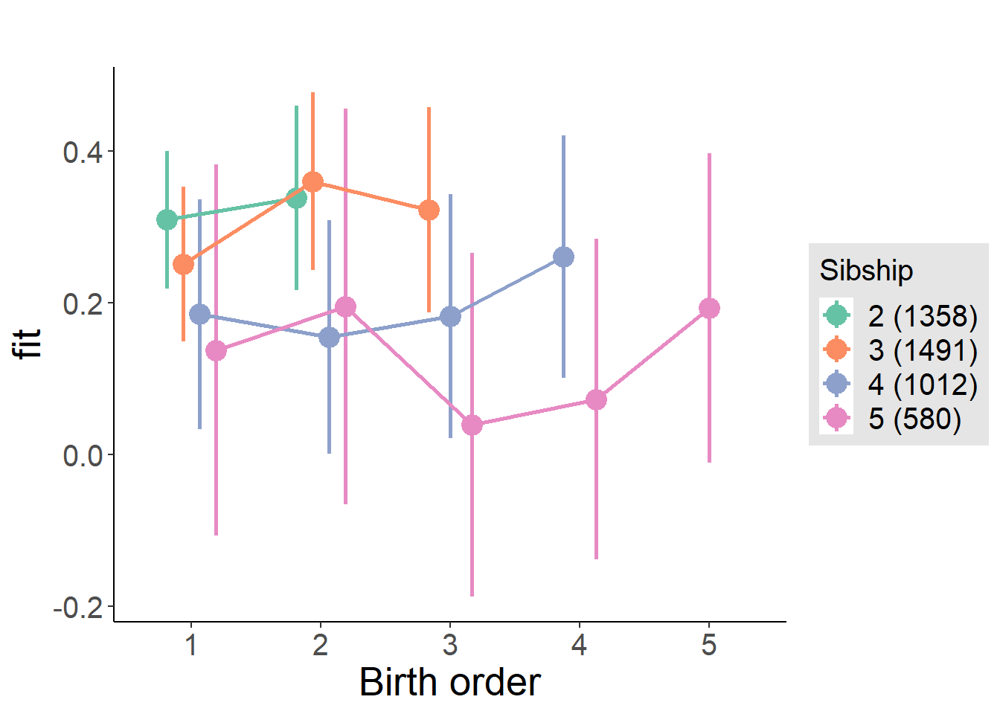
Model Comparison
###### Model 1 - Model 2
anova(m1_covariates_only, m2_birthorder_linear, m3_birthorder_nonlinear, m4_interaction)## refitting model(s) with ML (instead of REML)| Df | AIC | BIC | logLik | deviance | Chisq | Chi Df | Pr(>Chisq) |
|---|---|---|---|---|---|---|---|
| 8 | 11509 | 11560 | -5747 | 11493 | NA | NA | NA |
| 9 | 11509 | 11567 | -5746 | 11491 | 1.994 | 1 | 0.1579 |
| 12 | 11513 | 11590 | -5745 | 11489 | 1.582 | 3 | 0.6635 |
| 18 | 11518 | 11634 | -5741 | 11482 | 7.109 | 6 | 0.3109 |
Maternal pregnancy order
outcome_preg_m1 <- update(m2_birthorder_linear, data = birthorder %>%
mutate(sibling_count = sibling_count_uterus_preg_factor,
birth_order_nonlinear = birthorder_uterus_preg_factor,
birth_order = birthorder_uterus_preg,
count_birth_order = count_birthorder_uterus_preg
) %>%
filter(sibling_count != "1"))
compare_models_markdown(outcome_preg_m1)Basic Model
Model Summary
m1_covariates_only <- update(m2_birthorder_linear, formula = . ~ . - birth_order)
tidy(m1_covariates_only, conf.int = T)| term | estimate | std.error | statistic | conf.low | conf.high | group |
|---|---|---|---|---|---|---|
| (Intercept) | -1.169 | 0.06639 | -17.61 | -1.299 | -1.039 | fixed |
| age | 0.06733 | 0.00317 | 21.24 | 0.06111 | 0.07354 | fixed |
| male | 0.02078 | 0.02688 | 0.7731 | -0.0319 | 0.07345 | fixed |
| sibling_count3 | -0.03773 | 0.03848 | -0.9805 | -0.1131 | 0.03768 | fixed |
| sibling_count4 | -0.09645 | 0.04191 | -2.301 | -0.1786 | -0.0143 | fixed |
| sibling_count5 | -0.178 | 0.0474 | -3.755 | -0.2709 | -0.08509 | fixed |
| sd_(Intercept).mother_pidlink | 0.5035 | NA | NA | NA | NA | mother_pidlink |
| sd_Observation.Residual | 0.7373 | NA | NA | NA | NA | Residual |
Coefficient Plot
plot(allEffects(m1_covariates_only))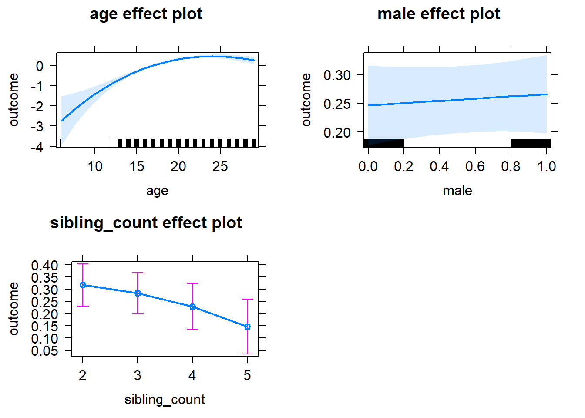
Add Birth Order Linear
Model Summary
tidy(m2_birthorder_linear, conf.int = T)| term | estimate | std.error | statistic | conf.low | conf.high | group |
|---|---|---|---|---|---|---|
| (Intercept) | -1.207 | 0.07176 | -16.83 | -1.348 | -1.067 | fixed |
| birth_order | 0.01987 | 0.01421 | 1.398 | -0.007984 | 0.04772 | fixed |
| age | 0.068 | 0.003205 | 21.22 | 0.06171 | 0.07428 | fixed |
| male | 0.02023 | 0.02688 | 0.7528 | -0.03245 | 0.07291 | fixed |
| sibling_count3 | -0.04754 | 0.0391 | -1.216 | -0.1242 | 0.02909 | fixed |
| sibling_count4 | -0.1185 | 0.04477 | -2.648 | -0.2063 | -0.0308 | fixed |
| sibling_count5 | -0.215 | 0.05426 | -3.962 | -0.3213 | -0.1086 | fixed |
| sd_(Intercept).mother_pidlink | 0.5026 | NA | NA | NA | NA | mother_pidlink |
| sd_Observation.Residual | 0.7377 | NA | NA | NA | NA | Residual |
Coefficient Plot
plot_birthorder2(m2_birthorder_linear, separate = FALSE)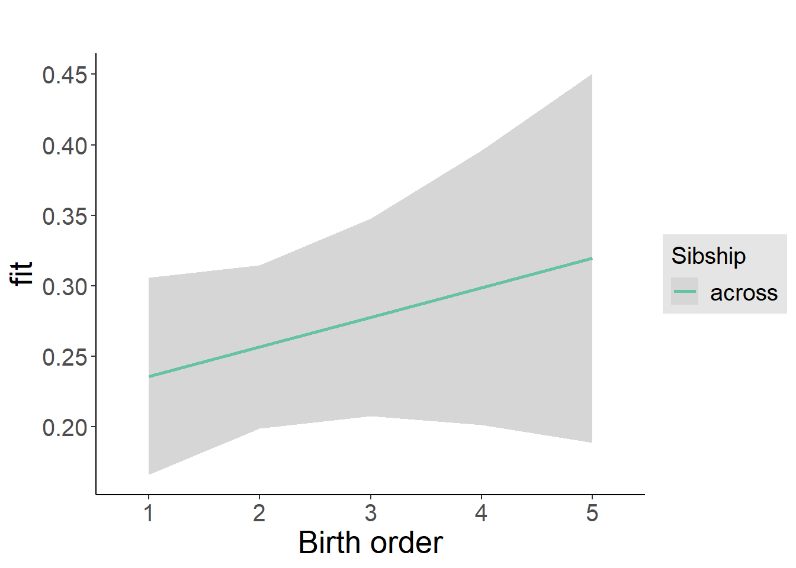
Add Birth Order Factor
Model Summary
m3_birthorder_nonlinear = update(m1_covariates_only, formula = . ~ . + birth_order_nonlinear)
tidy(m3_birthorder_nonlinear, conf.int = T)| term | estimate | std.error | statistic | conf.low | conf.high | group |
|---|---|---|---|---|---|---|
| (Intercept) | -1.199 | 0.06812 | -17.6 | -1.332 | -1.065 | fixed |
| age | 0.0679 | 0.003203 | 21.19 | 0.06162 | 0.07418 | fixed |
| male | 0.02112 | 0.02687 | 0.7859 | -0.03154 | 0.07377 | fixed |
| sibling_count3 | -0.03353 | 0.03967 | -0.8452 | -0.1113 | 0.04422 | fixed |
| sibling_count4 | -0.1041 | 0.04545 | -2.29 | -0.1931 | -0.01499 | fixed |
| sibling_count5 | -0.2179 | 0.05521 | -3.947 | -0.3261 | -0.1097 | fixed |
| birth_order_nonlinear2 | 0.06054 | 0.03083 | 1.964 | 0.0001132 | 0.121 | fixed |
| birth_order_nonlinear3 | -0.02126 | 0.04054 | -0.5245 | -0.1007 | 0.05819 | fixed |
| birth_order_nonlinear4 | 0.06362 | 0.05497 | 1.157 | -0.04411 | 0.1714 | fixed |
| birth_order_nonlinear5 | 0.1617 | 0.0825 | 1.961 | 0.00004528 | 0.3234 | fixed |
| sd_(Intercept).mother_pidlink | 0.5033 | NA | NA | NA | NA | mother_pidlink |
| sd_Observation.Residual | 0.7367 | NA | NA | NA | NA | Residual |
Coefficient Plot
plot_birthorder(m3_birthorder_nonlinear, separate = FALSE)Add Interaction
Model Summary
m4_interaction = update(m3_birthorder_nonlinear, formula = . ~ . - birth_order_nonlinear - sibling_count + count_birth_order)
tidy(m4_interaction, conf.int = T)| term | estimate | std.error | statistic | conf.low | conf.high | group |
|---|---|---|---|---|---|---|
| (Intercept) | -1.21 | 0.06925 | -17.47 | -1.346 | -1.074 | fixed |
| age | 0.06823 | 0.003204 | 21.29 | 0.06195 | 0.07451 | fixed |
| male | 0.01847 | 0.02685 | 0.6879 | -0.03416 | 0.0711 | fixed |
| count_birth_order2/2 | 0.07991 | 0.05202 | 1.536 | -0.02205 | 0.1819 | fixed |
| count_birth_order1/3 | -0.06899 | 0.0489 | -1.411 | -0.1648 | 0.02685 | fixed |
| count_birth_order2/3 | 0.04314 | 0.05252 | 0.8213 | -0.0598 | 0.1461 | fixed |
| count_birth_order3/3 | 0.01666 | 0.059 | 0.2824 | -0.09898 | 0.1323 | fixed |
| count_birth_order1/4 | -0.06968 | 0.0613 | -1.137 | -0.1898 | 0.05046 | fixed |
| count_birth_order2/4 | -0.08308 | 0.06186 | -1.343 | -0.2043 | 0.03816 | fixed |
| count_birth_order3/4 | -0.1418 | 0.065 | -2.182 | -0.2692 | -0.01445 | fixed |
| count_birth_order4/4 | 0.002701 | 0.0666 | 0.04056 | -0.1278 | 0.1332 | fixed |
| count_birth_order1/5 | -0.05838 | 0.08319 | -0.7018 | -0.2214 | 0.1047 | fixed |
| count_birth_order2/5 | -0.1268 | 0.08416 | -1.507 | -0.2918 | 0.03813 | fixed |
| count_birth_order3/5 | -0.3338 | 0.08026 | -4.159 | -0.4911 | -0.1765 | fixed |
| count_birth_order4/5 | -0.2156 | 0.08074 | -2.67 | -0.3738 | -0.05731 | fixed |
| count_birth_order5/5 | -0.05872 | 0.0773 | -0.7596 | -0.2102 | 0.09279 | fixed |
| sd_(Intercept).mother_pidlink | 0.507 | NA | NA | NA | NA | mother_pidlink |
| sd_Observation.Residual | 0.7339 | NA | NA | NA | NA | Residual |
Coefficient Plot
plot_birthorder(m4_interaction)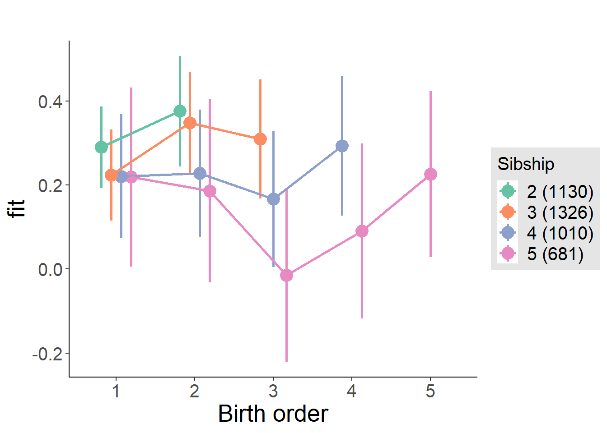
Model Comparison
###### Model 1 - Model 2
anova(m1_covariates_only, m2_birthorder_linear, m3_birthorder_nonlinear, m4_interaction)## refitting model(s) with ML (instead of REML)| Df | AIC | BIC | logLik | deviance | Chisq | Chi Df | Pr(>Chisq) |
|---|---|---|---|---|---|---|---|
| 8 | 10701 | 10752 | -5343 | 10685 | NA | NA | NA |
| 9 | 10701 | 10758 | -5342 | 10683 | 1.958 | 1 | 0.1617 |
| 12 | 10700 | 10775 | -5338 | 10676 | 7.804 | 3 | 0.05024 |
| 18 | 10699 | 10813 | -5331 | 10663 | 12.65 | 6 | 0.04887 |
Parental full sibling order
outcome_parental_m1 <- update(m2_birthorder_linear, data = birthorder %>%
mutate(sibling_count = sibling_count_genes_factor,
birth_order_nonlinear = birthorder_genes_factor,
birth_order = birthorder_genes,
count_birth_order = count_birthorder_genes
) %>%
filter(sibling_count != "1"))
compare_models_markdown(outcome_parental_m1)Basic Model
Model Summary
m1_covariates_only <- update(m2_birthorder_linear, formula = . ~ . - birth_order)
tidy(m1_covariates_only, conf.int = T)| term | estimate | std.error | statistic | conf.low | conf.high | group |
|---|---|---|---|---|---|---|
| (Intercept) | -1.159 | 0.0651 | -17.81 | -1.287 | -1.032 | fixed |
| age | 0.06554 | 0.003119 | 21.01 | 0.05943 | 0.07165 | fixed |
| male | 0.01157 | 0.02653 | 0.436 | -0.04043 | 0.06357 | fixed |
| sibling_count3 | -0.008729 | 0.03617 | -0.2414 | -0.07961 | 0.06215 | fixed |
| sibling_count4 | -0.1124 | 0.04109 | -2.737 | -0.193 | -0.03191 | fixed |
| sibling_count5 | -0.2003 | 0.05137 | -3.9 | -0.301 | -0.09965 | fixed |
| sd_(Intercept).mother_pidlink | 0.5046 | NA | NA | NA | NA | mother_pidlink |
| sd_Observation.Residual | 0.7523 | NA | NA | NA | NA | Residual |
Coefficient Plot
plot(allEffects(m1_covariates_only))Add Birth Order Linear
Model Summary
tidy(m2_birthorder_linear, conf.int = T)| term | estimate | std.error | statistic | conf.low | conf.high | group |
|---|---|---|---|---|---|---|
| (Intercept) | -1.201 | 0.07047 | -17.05 | -1.34 | -1.063 | fixed |
| birth_order | 0.02287 | 0.01464 | 1.562 | -0.005822 | 0.05157 | fixed |
| age | 0.0662 | 0.003146 | 21.04 | 0.06003 | 0.07236 | fixed |
| male | 0.0111 | 0.02653 | 0.4183 | -0.0409 | 0.0631 | fixed |
| sibling_count3 | -0.01944 | 0.0368 | -0.5283 | -0.09157 | 0.05268 | fixed |
| sibling_count4 | -0.1395 | 0.04458 | -3.13 | -0.2269 | -0.05214 | fixed |
| sibling_count5 | -0.2452 | 0.05884 | -4.168 | -0.3605 | -0.1299 | fixed |
| sd_(Intercept).mother_pidlink | 0.5041 | NA | NA | NA | NA | mother_pidlink |
| sd_Observation.Residual | 0.7525 | NA | NA | NA | NA | Residual |
Coefficient Plot
plot_birthorder2(m2_birthorder_linear, separate = FALSE)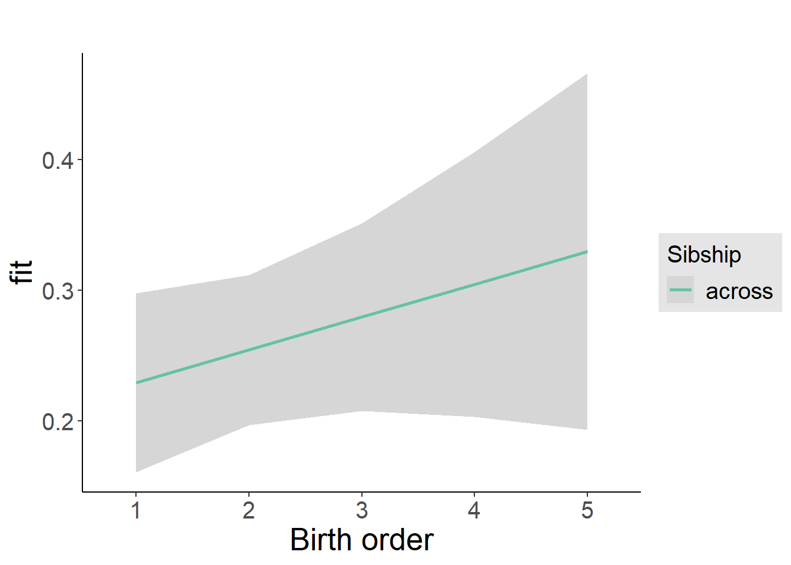
Add Birth Order Factor
Model Summary
m3_birthorder_nonlinear = update(m1_covariates_only, formula = . ~ . + birth_order_nonlinear)
tidy(m3_birthorder_nonlinear, conf.int = T)| term | estimate | std.error | statistic | conf.low | conf.high | group |
|---|---|---|---|---|---|---|
| (Intercept) | -1.182 | 0.06674 | -17.71 | -1.313 | -1.051 | fixed |
| age | 0.06619 | 0.003147 | 21.03 | 0.06002 | 0.07236 | fixed |
| male | 0.01101 | 0.02655 | 0.4147 | -0.04103 | 0.06304 | fixed |
| sibling_count3 | -0.02012 | 0.03742 | -0.5379 | -0.09346 | 0.05321 | fixed |
| sibling_count4 | -0.1359 | 0.04541 | -2.993 | -0.2249 | -0.04689 | fixed |
| sibling_count5 | -0.2419 | 0.061 | -3.966 | -0.3615 | -0.1224 | fixed |
| birth_order_nonlinear2 | 0.03472 | 0.03005 | 1.155 | -0.02418 | 0.09361 | fixed |
| birth_order_nonlinear3 | 0.04981 | 0.04067 | 1.225 | -0.0299 | 0.1295 | fixed |
| birth_order_nonlinear4 | 0.05432 | 0.05658 | 0.9601 | -0.05658 | 0.1652 | fixed |
| birth_order_nonlinear5 | 0.09683 | 0.09241 | 1.048 | -0.08429 | 0.2779 | fixed |
| sd_(Intercept).mother_pidlink | 0.5033 | NA | NA | NA | NA | mother_pidlink |
| sd_Observation.Residual | 0.7532 | NA | NA | NA | NA | Residual |
Coefficient Plot
plot_birthorder(m3_birthorder_nonlinear, separate = FALSE)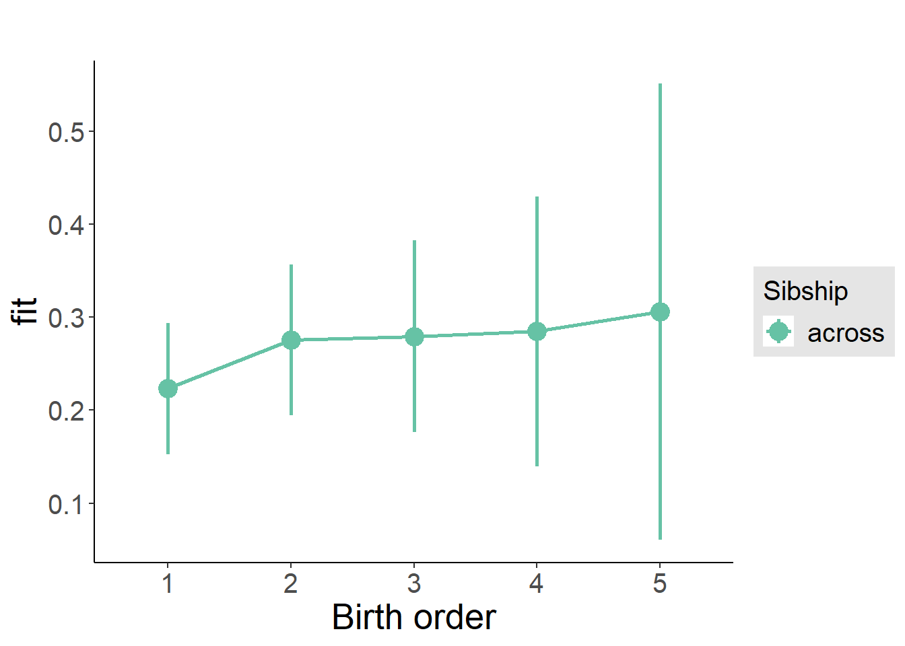
Add Interaction
Model Summary
m4_interaction = update(m3_birthorder_nonlinear, formula = . ~ . - birth_order_nonlinear - sibling_count + count_birth_order)
tidy(m4_interaction, conf.int = T)| term | estimate | std.error | statistic | conf.low | conf.high | group |
|---|---|---|---|---|---|---|
| (Intercept) | -1.184 | 0.06761 | -17.52 | -1.317 | -1.052 | fixed |
| age | 0.06645 | 0.003151 | 21.09 | 0.06028 | 0.07263 | fixed |
| male | 0.01085 | 0.02658 | 0.408 | -0.04126 | 0.06295 | fixed |
| count_birth_order2/2 | 0.02654 | 0.04723 | 0.5619 | -0.06604 | 0.1191 | fixed |
| count_birth_order1/3 | -0.04976 | 0.04591 | -1.084 | -0.1397 | 0.04022 | fixed |
| count_birth_order2/3 | 0.04566 | 0.05058 | 0.9027 | -0.05348 | 0.1448 | fixed |
| count_birth_order3/3 | 0.03623 | 0.05596 | 0.6475 | -0.07344 | 0.1459 | fixed |
| count_birth_order1/4 | -0.09984 | 0.06282 | -1.589 | -0.223 | 0.0233 | fixed |
| count_birth_order2/4 | -0.1718 | 0.06233 | -2.757 | -0.294 | -0.04967 | fixed |
| count_birth_order3/4 | -0.09512 | 0.06474 | -1.469 | -0.222 | 0.03177 | fixed |
| count_birth_order4/4 | -0.05292 | 0.06418 | -0.8246 | -0.1787 | 0.07287 | fixed |
| count_birth_order1/5 | -0.1924 | 0.09506 | -2.024 | -0.3787 | -0.006095 | fixed |
| count_birth_order2/5 | -0.1502 | 0.1052 | -1.427 | -0.3564 | 0.0561 | fixed |
| count_birth_order3/5 | -0.2048 | 0.0915 | -2.239 | -0.3842 | -0.02551 | fixed |
| count_birth_order4/5 | -0.2573 | 0.08637 | -2.979 | -0.4266 | -0.08805 | fixed |
| count_birth_order5/5 | -0.1538 | 0.08408 | -1.829 | -0.3186 | 0.01101 | fixed |
| sd_(Intercept).mother_pidlink | 0.5032 | NA | NA | NA | NA | mother_pidlink |
| sd_Observation.Residual | 0.7533 | NA | NA | NA | NA | Residual |
Coefficient Plot
plot_birthorder(m4_interaction)
Model Comparison
###### Model 1 - Model 2
anova(m1_covariates_only, m2_birthorder_linear, m3_birthorder_nonlinear, m4_interaction)## refitting model(s) with ML (instead of REML)| Df | AIC | BIC | logLik | deviance | Chisq | Chi Df | Pr(>Chisq) |
|---|---|---|---|---|---|---|---|
| 8 | 11428 | 11479 | -5706 | 11412 | NA | NA | NA |
| 9 | 11428 | 11485 | -5705 | 11410 | 2.445 | 1 | 0.1179 |
| 12 | 11433 | 11510 | -5705 | 11409 | 0.3046 | 3 | 0.9592 |
| 18 | 11440 | 11554 | -5702 | 11404 | 5.772 | 6 | 0.4492 |
Compare birth order specifications
library(coefplot)
multiplot(outcome_naive_m1, outcome_preg_m1, outcome_uterus_m1, outcome_parental_m1, dodgeHeight = 0.6,
intercept = FALSE)Numeracy 2007 young
birthorder <- birthorder %>% mutate(outcome = math_2007_young)
model = lmer(outcome ~ birth_order + age + male + sibling_count + (1 | mother_pidlink),
data = birthorder)
compare_birthorder_specs(model)Naive birth order
outcome_naive_m1 <- update(m2_birthorder_linear, data = birthorder %>%
mutate(sibling_count = sibling_count_naive_factor,
birth_order_nonlinear = birthorder_naive_factor,
birth_order = birthorder_naive,
count_birth_order = count_birthorder_naive) %>%
filter(sibling_count != "1"))
compare_models_markdown(outcome_naive_m1)Basic Model
Model Summary
m1_covariates_only <- update(m2_birthorder_linear, formula = . ~ . - birth_order)
tidy(m1_covariates_only, conf.int = T)| term | estimate | std.error | statistic | conf.low | conf.high | group |
|---|---|---|---|---|---|---|
| (Intercept) | -0.8242 | 0.06616 | -12.46 | -0.9539 | -0.6946 | fixed |
| age | 0.04869 | 0.003096 | 15.72 | 0.04262 | 0.05476 | fixed |
| male | -0.1121 | 0.02601 | -4.311 | -0.1631 | -0.06116 | fixed |
| sibling_count3 | 0.02124 | 0.04123 | 0.5151 | -0.05957 | 0.102 | fixed |
| sibling_count4 | -0.1325 | 0.04216 | -3.143 | -0.2151 | -0.04985 | fixed |
| sibling_count5 | -0.03091 | 0.04554 | -0.6787 | -0.1202 | 0.05835 | fixed |
| sd_(Intercept).mother_pidlink | 0.5529 | NA | NA | NA | NA | mother_pidlink |
| sd_Observation.Residual | 0.7799 | NA | NA | NA | NA | Residual |
Coefficient Plot
plot(allEffects(m1_covariates_only))
Add Birth Order Linear
Model Summary
tidy(m2_birthorder_linear, conf.int = T)| term | estimate | std.error | statistic | conf.low | conf.high | group |
|---|---|---|---|---|---|---|
| (Intercept) | -0.8653 | 0.07072 | -12.24 | -1.004 | -0.7267 | fixed |
| birth_order | 0.02107 | 0.01283 | 1.642 | -0.004078 | 0.04621 | fixed |
| age | 0.04945 | 0.00313 | 15.8 | 0.04331 | 0.05559 | fixed |
| male | -0.1129 | 0.02601 | -4.34 | -0.1639 | -0.06192 | fixed |
| sibling_count3 | 0.01159 | 0.04164 | 0.2784 | -0.07002 | 0.09321 | fixed |
| sibling_count4 | -0.1542 | 0.04418 | -3.49 | -0.2408 | -0.06761 | fixed |
| sibling_count5 | -0.06777 | 0.05077 | -1.335 | -0.1673 | 0.03174 | fixed |
| sd_(Intercept).mother_pidlink | 0.5532 | NA | NA | NA | NA | mother_pidlink |
| sd_Observation.Residual | 0.7796 | NA | NA | NA | NA | Residual |
Coefficient Plot
plot_birthorder2(m2_birthorder_linear, separate = FALSE)Add Birth Order Factor
Model Summary
m3_birthorder_nonlinear = update(m1_covariates_only, formula = . ~ . + birth_order_nonlinear)
tidy(m3_birthorder_nonlinear, conf.int = T)| term | estimate | std.error | statistic | conf.low | conf.high | group |
|---|---|---|---|---|---|---|
| (Intercept) | -0.8525 | 0.06778 | -12.58 | -0.9854 | -0.7197 | fixed |
| age | 0.04947 | 0.00313 | 15.8 | 0.04333 | 0.0556 | fixed |
| male | -0.1128 | 0.02601 | -4.336 | -0.1638 | -0.06181 | fixed |
| sibling_count3 | 0.01106 | 0.04206 | 0.263 | -0.07137 | 0.09349 | fixed |
| sibling_count4 | -0.1627 | 0.04468 | -3.641 | -0.2502 | -0.0751 | fixed |
| sibling_count5 | -0.05702 | 0.05115 | -1.115 | -0.1573 | 0.04323 | fixed |
| birth_order_nonlinear2 | 0.04743 | 0.03046 | 1.557 | -0.01227 | 0.1071 | fixed |
| birth_order_nonlinear3 | 0.04383 | 0.03763 | 1.165 | -0.02992 | 0.1176 | fixed |
| birth_order_nonlinear4 | 0.1107 | 0.05028 | 2.201 | 0.01211 | 0.2092 | fixed |
| birth_order_nonlinear5 | 0.006091 | 0.07196 | 0.08463 | -0.135 | 0.1471 | fixed |
| sd_(Intercept).mother_pidlink | 0.5527 | NA | NA | NA | NA | mother_pidlink |
| sd_Observation.Residual | 0.7797 | NA | NA | NA | NA | Residual |
Coefficient Plot
plot_birthorder(m3_birthorder_nonlinear, separate = FALSE)Add Interaction
Model Summary
m4_interaction = update(m3_birthorder_nonlinear, formula = . ~ . - birth_order_nonlinear - sibling_count + count_birth_order)
tidy(m4_interaction, conf.int = T)| term | estimate | std.error | statistic | conf.low | conf.high | group |
|---|---|---|---|---|---|---|
| (Intercept) | -0.8618 | 0.06911 | -12.47 | -0.9973 | -0.7263 | fixed |
| age | 0.04955 | 0.003132 | 15.82 | 0.04341 | 0.05569 | fixed |
| male | -0.1125 | 0.02604 | -4.32 | -0.1635 | -0.06144 | fixed |
| count_birth_order2/2 | 0.07256 | 0.05683 | 1.277 | -0.03883 | 0.1839 | fixed |
| count_birth_order1/3 | 0.03303 | 0.05087 | 0.6493 | -0.06668 | 0.1327 | fixed |
| count_birth_order2/3 | 0.07004 | 0.05601 | 1.251 | -0.03972 | 0.1798 | fixed |
| count_birth_order3/3 | 0.02469 | 0.06284 | 0.3929 | -0.09847 | 0.1478 | fixed |
| count_birth_order1/4 | -0.1481 | 0.05793 | -2.557 | -0.2617 | -0.03458 | fixed |
| count_birth_order2/4 | -0.1064 | 0.05915 | -1.798 | -0.2223 | 0.009558 | fixed |
| count_birth_order3/4 | -0.1308 | 0.0618 | -2.116 | -0.2519 | -0.009664 | fixed |
| count_birth_order4/4 | -0.03446 | 0.06742 | -0.5111 | -0.1666 | 0.09769 | fixed |
| count_birth_order1/5 | -0.07637 | 0.07037 | -1.085 | -0.2143 | 0.06156 | fixed |
| count_birth_order2/5 | -0.04375 | 0.07418 | -0.5897 | -0.1891 | 0.1016 | fixed |
| count_birth_order3/5 | 0.07132 | 0.07063 | 1.01 | -0.06712 | 0.2098 | fixed |
| count_birth_order4/5 | 0.04734 | 0.07412 | 0.6387 | -0.09793 | 0.1926 | fixed |
| count_birth_order5/5 | -0.04033 | 0.07214 | -0.5591 | -0.1817 | 0.1011 | fixed |
| sd_(Intercept).mother_pidlink | 0.5521 | NA | NA | NA | NA | mother_pidlink |
| sd_Observation.Residual | 0.7803 | NA | NA | NA | NA | Residual |
Coefficient Plot
plot_birthorder(m4_interaction)Model Comparison
###### Model 1 - Model 2
anova(m1_covariates_only, m2_birthorder_linear, m3_birthorder_nonlinear, m4_interaction)## refitting model(s) with ML (instead of REML)| Df | AIC | BIC | logLik | deviance | Chisq | Chi Df | Pr(>Chisq) |
|---|---|---|---|---|---|---|---|
| 8 | 13464 | 13516 | -6724 | 13448 | NA | NA | NA |
| 9 | 13463 | 13522 | -6723 | 13445 | 2.698 | 1 | 0.1005 |
| 12 | 13465 | 13544 | -6721 | 13441 | 3.554 | 3 | 0.3139 |
| 18 | 13474 | 13591 | -6719 | 13438 | 3.768 | 6 | 0.708 |
Maternal birth order
outcome_uterus_m1 <- update(m2_birthorder_linear, data = birthorder %>%
mutate(sibling_count = sibling_count_uterus_alive_factor,
birth_order_nonlinear = birthorder_uterus_alive_factor,
birth_order = birthorder_uterus_alive,
count_birth_order = count_birthorder_uterus_alive) %>%
filter(sibling_count != "1"))
compare_models_markdown(outcome_uterus_m1)Basic Model
Model Summary
m1_covariates_only <- update(m2_birthorder_linear, formula = . ~ . - birth_order)
tidy(m1_covariates_only, conf.int = T)| term | estimate | std.error | statistic | conf.low | conf.high | group |
|---|---|---|---|---|---|---|
| (Intercept) | -0.9251 | 0.06715 | -13.78 | -1.057 | -0.7934 | fixed |
| age | 0.05554 | 0.003208 | 17.31 | 0.04925 | 0.06183 | fixed |
| male | -0.1362 | 0.02726 | -4.996 | -0.1896 | -0.08275 | fixed |
| sibling_count3 | 0.03564 | 0.03801 | 0.9378 | -0.03885 | 0.1101 | fixed |
| sibling_count4 | -0.03767 | 0.04307 | -0.8746 | -0.1221 | 0.04675 | fixed |
| sibling_count5 | -0.103 | 0.05207 | -1.978 | -0.2051 | -0.0009419 | fixed |
| sd_(Intercept).mother_pidlink | 0.5558 | NA | NA | NA | NA | mother_pidlink |
| sd_Observation.Residual | 0.7634 | NA | NA | NA | NA | Residual |
Coefficient Plot
plot(allEffects(m1_covariates_only))Add Birth Order Linear
Model Summary
tidy(m2_birthorder_linear, conf.int = T)| term | estimate | std.error | statistic | conf.low | conf.high | group |
|---|---|---|---|---|---|---|
| (Intercept) | -0.9703 | 0.07314 | -13.27 | -1.114 | -0.8269 | fixed |
| birth_order | 0.02329 | 0.01495 | 1.559 | -0.006 | 0.05258 | fixed |
| age | 0.05634 | 0.003249 | 17.34 | 0.04998 | 0.06271 | fixed |
| male | -0.1368 | 0.02725 | -5.02 | -0.1902 | -0.08339 | fixed |
| sibling_count3 | 0.02434 | 0.03869 | 0.629 | -0.05149 | 0.1002 | fixed |
| sibling_count4 | -0.06522 | 0.04655 | -1.401 | -0.1565 | 0.02602 | fixed |
| sibling_count5 | -0.1501 | 0.06021 | -2.494 | -0.2682 | -0.03213 | fixed |
| sd_(Intercept).mother_pidlink | 0.5557 | NA | NA | NA | NA | mother_pidlink |
| sd_Observation.Residual | 0.7633 | NA | NA | NA | NA | Residual |
Coefficient Plot
plot_birthorder2(m2_birthorder_linear, separate = FALSE)Add Birth Order Factor
Model Summary
m3_birthorder_nonlinear = update(m1_covariates_only, formula = . ~ . + birth_order_nonlinear)
tidy(m3_birthorder_nonlinear, conf.int = T)| term | estimate | std.error | statistic | conf.low | conf.high | group |
|---|---|---|---|---|---|---|
| (Intercept) | -0.9384 | 0.06909 | -13.58 | -1.074 | -0.803 | fixed |
| age | 0.05632 | 0.003249 | 17.33 | 0.04995 | 0.06269 | fixed |
| male | -0.1364 | 0.02727 | -5.002 | -0.1898 | -0.08294 | fixed |
| sibling_count3 | 0.03128 | 0.03929 | 0.7961 | -0.04573 | 0.1083 | fixed |
| sibling_count4 | -0.06176 | 0.04735 | -1.304 | -0.1546 | 0.03105 | fixed |
| sibling_count5 | -0.1723 | 0.06202 | -2.778 | -0.2939 | -0.05077 | fixed |
| birth_order_nonlinear2 | -0.003442 | 0.03086 | -0.1115 | -0.06393 | 0.05705 | fixed |
| birth_order_nonlinear3 | 0.01649 | 0.04161 | 0.3964 | -0.06506 | 0.09805 | fixed |
| birth_order_nonlinear4 | 0.07561 | 0.05741 | 1.317 | -0.03692 | 0.1881 | fixed |
| birth_order_nonlinear5 | 0.1751 | 0.08976 | 1.95 | -0.0008667 | 0.351 | fixed |
| sd_(Intercept).mother_pidlink | 0.5553 | NA | NA | NA | NA | mother_pidlink |
| sd_Observation.Residual | 0.7636 | NA | NA | NA | NA | Residual |
Coefficient Plot
plot_birthorder(m3_birthorder_nonlinear, separate = FALSE)Add Interaction
Model Summary
m4_interaction = update(m3_birthorder_nonlinear, formula = . ~ . - birth_order_nonlinear - sibling_count + count_birth_order)
tidy(m4_interaction, conf.int = T)| term | estimate | std.error | statistic | conf.low | conf.high | group |
|---|---|---|---|---|---|---|
| (Intercept) | -0.9494 | 0.07009 | -13.55 | -1.087 | -0.812 | fixed |
| age | 0.05639 | 0.003254 | 17.33 | 0.05001 | 0.06277 | fixed |
| male | -0.1358 | 0.02731 | -4.973 | -0.1894 | -0.08229 | fixed |
| count_birth_order2/2 | 0.02677 | 0.04973 | 0.5383 | -0.0707 | 0.1242 | fixed |
| count_birth_order1/3 | 0.04544 | 0.0479 | 0.9485 | -0.04845 | 0.1393 | fixed |
| count_birth_order2/3 | 0.04487 | 0.05203 | 0.8624 | -0.05711 | 0.1468 | fixed |
| count_birth_order3/3 | 0.03809 | 0.05804 | 0.6563 | -0.07567 | 0.1519 | fixed |
| count_birth_order1/4 | -0.05753 | 0.06434 | -0.8941 | -0.1836 | 0.06858 | fixed |
| count_birth_order2/4 | -0.0776 | 0.06425 | -1.208 | -0.2035 | 0.04833 | fixed |
| count_birth_order3/4 | -0.0187 | 0.06696 | -0.2793 | -0.1499 | 0.1125 | fixed |
| count_birth_order4/4 | 0.03567 | 0.06654 | 0.536 | -0.09475 | 0.1661 | fixed |
| count_birth_order1/5 | -0.08874 | 0.09715 | -0.9135 | -0.2792 | 0.1017 | fixed |
| count_birth_order2/5 | -0.245 | 0.1024 | -2.393 | -0.4456 | -0.04435 | fixed |
| count_birth_order3/5 | -0.1284 | 0.09021 | -1.424 | -0.3052 | 0.04837 | fixed |
| count_birth_order4/5 | -0.1095 | 0.08482 | -1.291 | -0.2758 | 0.0567 | fixed |
| count_birth_order5/5 | 0.01033 | 0.0822 | 0.1256 | -0.1508 | 0.1714 | fixed |
| sd_(Intercept).mother_pidlink | 0.5549 | NA | NA | NA | NA | mother_pidlink |
| sd_Observation.Residual | 0.7642 | NA | NA | NA | NA | Residual |
Coefficient Plot
plot_birthorder(m4_interaction)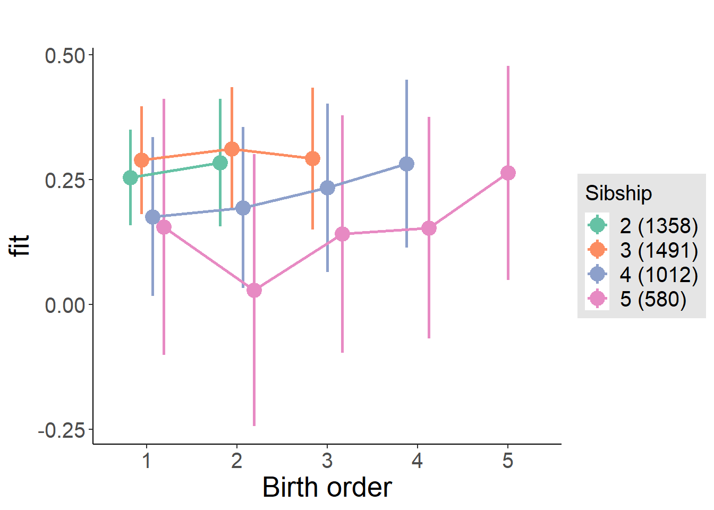
Model Comparison
###### Model 1 - Model 2
anova(m1_covariates_only, m2_birthorder_linear, m3_birthorder_nonlinear, m4_interaction)## refitting model(s) with ML (instead of REML)| Df | AIC | BIC | logLik | deviance | Chisq | Chi Df | Pr(>Chisq) |
|---|---|---|---|---|---|---|---|
| 8 | 11923 | 11974 | -5954 | 11907 | NA | NA | NA |
| 9 | 11923 | 11980 | -5952 | 11905 | 2.432 | 1 | 0.1189 |
| 12 | 11926 | 12003 | -5951 | 11902 | 2.376 | 3 | 0.4981 |
| 18 | 11936 | 12051 | -5950 | 11900 | 2.528 | 6 | 0.8653 |
Maternal pregnancy order
outcome_preg_m1 <- update(m2_birthorder_linear, data = birthorder %>%
mutate(sibling_count = sibling_count_uterus_preg_factor,
birth_order_nonlinear = birthorder_uterus_preg_factor,
birth_order = birthorder_uterus_preg,
count_birth_order = count_birthorder_uterus_preg
) %>%
filter(sibling_count != "1"))
compare_models_markdown(outcome_preg_m1)Basic Model
Model Summary
m1_covariates_only <- update(m2_birthorder_linear, formula = . ~ . - birth_order)
tidy(m1_covariates_only, conf.int = T)| term | estimate | std.error | statistic | conf.low | conf.high | group |
|---|---|---|---|---|---|---|
| (Intercept) | -0.9243 | 0.06978 | -13.24 | -1.061 | -0.7875 | fixed |
| age | 0.05659 | 0.003329 | 17 | 0.05007 | 0.06312 | fixed |
| male | -0.1462 | 0.02819 | -5.185 | -0.2014 | -0.09091 | fixed |
| sibling_count3 | 0.008835 | 0.04071 | 0.217 | -0.07096 | 0.08863 | fixed |
| sibling_count4 | -0.05971 | 0.04439 | -1.345 | -0.1467 | 0.02729 | fixed |
| sibling_count5 | -0.07806 | 0.05021 | -1.555 | -0.1765 | 0.02035 | fixed |
| sd_(Intercept).mother_pidlink | 0.5502 | NA | NA | NA | NA | mother_pidlink |
| sd_Observation.Residual | 0.764 | NA | NA | NA | NA | Residual |
Coefficient Plot
plot(allEffects(m1_covariates_only))Add Birth Order Linear
Model Summary
tidy(m2_birthorder_linear, conf.int = T)| term | estimate | std.error | statistic | conf.low | conf.high | group |
|---|---|---|---|---|---|---|
| (Intercept) | -0.973 | 0.07569 | -12.86 | -1.121 | -0.8247 | fixed |
| birth_order | 0.0248 | 0.01492 | 1.662 | -0.004444 | 0.05404 | fixed |
| age | 0.05749 | 0.003372 | 17.05 | 0.05088 | 0.0641 | fixed |
| male | -0.1468 | 0.02818 | -5.21 | -0.2021 | -0.0916 | fixed |
| sibling_count3 | -0.003467 | 0.04137 | -0.08381 | -0.08455 | 0.07762 | fixed |
| sibling_count4 | -0.08735 | 0.04739 | -1.843 | -0.1802 | 0.005538 | fixed |
| sibling_count5 | -0.1244 | 0.05742 | -2.166 | -0.2369 | -0.01185 | fixed |
| sd_(Intercept).mother_pidlink | 0.5502 | NA | NA | NA | NA | mother_pidlink |
| sd_Observation.Residual | 0.7638 | NA | NA | NA | NA | Residual |
Coefficient Plot
plot_birthorder2(m2_birthorder_linear, separate = FALSE)Add Birth Order Factor
Model Summary
m3_birthorder_nonlinear = update(m1_covariates_only, formula = . ~ . + birth_order_nonlinear)
tidy(m3_birthorder_nonlinear, conf.int = T)| term | estimate | std.error | statistic | conf.low | conf.high | group |
|---|---|---|---|---|---|---|
| (Intercept) | -0.9493 | 0.07179 | -13.22 | -1.09 | -0.8086 | fixed |
| age | 0.05748 | 0.003373 | 17.04 | 0.05087 | 0.06409 | fixed |
| male | -0.1467 | 0.02821 | -5.2 | -0.202 | -0.0914 | fixed |
| sibling_count3 | -0.001328 | 0.04198 | -0.03163 | -0.0836 | 0.08095 | fixed |
| sibling_count4 | -0.08463 | 0.04811 | -1.759 | -0.1789 | 0.009667 | fixed |
| sibling_count5 | -0.126 | 0.05845 | -2.156 | -0.2406 | -0.01145 | fixed |
| birth_order_nonlinear2 | 0.02884 | 0.03225 | 0.8943 | -0.03437 | 0.09205 | fixed |
| birth_order_nonlinear3 | 0.0404 | 0.04249 | 0.9509 | -0.04287 | 0.1237 | fixed |
| birth_order_nonlinear4 | 0.07223 | 0.05767 | 1.252 | -0.04081 | 0.1853 | fixed |
| birth_order_nonlinear5 | 0.1175 | 0.08662 | 1.356 | -0.05232 | 0.2872 | fixed |
| sd_(Intercept).mother_pidlink | 0.5496 | NA | NA | NA | NA | mother_pidlink |
| sd_Observation.Residual | 0.7645 | NA | NA | NA | NA | Residual |
Coefficient Plot
plot_birthorder(m3_birthorder_nonlinear, separate = FALSE)Add Interaction
Model Summary
m4_interaction = update(m3_birthorder_nonlinear, formula = . ~ . - birth_order_nonlinear - sibling_count + count_birth_order)
tidy(m4_interaction, conf.int = T)| term | estimate | std.error | statistic | conf.low | conf.high | group |
|---|---|---|---|---|---|---|
| (Intercept) | -0.9614 | 0.073 | -13.17 | -1.105 | -0.8184 | fixed |
| age | 0.0578 | 0.003376 | 17.12 | 0.05119 | 0.06442 | fixed |
| male | -0.1459 | 0.02822 | -5.171 | -0.2013 | -0.09062 | fixed |
| count_birth_order2/2 | 0.0473 | 0.05455 | 0.8672 | -0.05961 | 0.1542 | fixed |
| count_birth_order1/3 | 0.009512 | 0.05154 | 0.1846 | -0.0915 | 0.1105 | fixed |
| count_birth_order2/3 | 0.03491 | 0.05531 | 0.6311 | -0.0735 | 0.1433 | fixed |
| count_birth_order3/3 | 0.03175 | 0.06213 | 0.5111 | -0.09002 | 0.1535 | fixed |
| count_birth_order1/4 | -0.1122 | 0.06456 | -1.739 | -0.2388 | 0.01429 | fixed |
| count_birth_order2/4 | -0.07232 | 0.06511 | -1.111 | -0.1999 | 0.0553 | fixed |
| count_birth_order3/4 | -0.05822 | 0.06837 | -0.8516 | -0.1922 | 0.07578 | fixed |
| count_birth_order4/4 | 0.07715 | 0.07012 | 1.1 | -0.06028 | 0.2146 | fixed |
| count_birth_order1/5 | -0.04267 | 0.08755 | -0.4874 | -0.2143 | 0.1289 | fixed |
| count_birth_order2/5 | -0.09067 | 0.08851 | -1.024 | -0.2642 | 0.08281 | fixed |
| count_birth_order3/5 | -0.01671 | 0.0844 | -0.198 | -0.1821 | 0.1487 | fixed |
| count_birth_order4/5 | -0.1817 | 0.0849 | -2.14 | -0.3481 | -0.01532 | fixed |
| count_birth_order5/5 | -0.01211 | 0.08138 | -0.1488 | -0.1716 | 0.1474 | fixed |
| sd_(Intercept).mother_pidlink | 0.5497 | NA | NA | NA | NA | mother_pidlink |
| sd_Observation.Residual | 0.7642 | NA | NA | NA | NA | Residual |
Coefficient Plot
plot_birthorder(m4_interaction)
Model Comparison
###### Model 1 - Model 2
anova(m1_covariates_only, m2_birthorder_linear, m3_birthorder_nonlinear, m4_interaction)## refitting model(s) with ML (instead of REML)| Df | AIC | BIC | logLik | deviance | Chisq | Chi Df | Pr(>Chisq) |
|---|---|---|---|---|---|---|---|
| 8 | 11120 | 11170 | -5552 | 11104 | NA | NA | NA |
| 9 | 11119 | 11176 | -5550 | 11101 | 2.766 | 1 | 0.09627 |
| 12 | 11125 | 11201 | -5550 | 11101 | 0.1614 | 3 | 0.9836 |
| 18 | 11129 | 11243 | -5546 | 11093 | 7.872 | 6 | 0.2476 |
Parental full sibling order
outcome_parental_m1 <- update(m2_birthorder_linear, data = birthorder %>%
mutate(sibling_count = sibling_count_genes_factor,
birth_order_nonlinear = birthorder_genes_factor,
birth_order = birthorder_genes,
count_birth_order = count_birthorder_genes
) %>%
filter(sibling_count != "1"))
compare_models_markdown(outcome_parental_m1)Basic Model
Model Summary
m1_covariates_only <- update(m2_birthorder_linear, formula = . ~ . - birth_order)
tidy(m1_covariates_only, conf.int = T)| term | estimate | std.error | statistic | conf.low | conf.high | group |
|---|---|---|---|---|---|---|
| (Intercept) | -0.9306 | 0.0678 | -13.73 | -1.064 | -0.7977 | fixed |
| age | 0.05501 | 0.003245 | 16.95 | 0.04865 | 0.06137 | fixed |
| male | -0.1386 | 0.02753 | -5.033 | -0.1925 | -0.08461 | fixed |
| sibling_count3 | 0.0653 | 0.03811 | 1.714 | -0.009383 | 0.14 | fixed |
| sibling_count4 | -0.01523 | 0.04337 | -0.3511 | -0.1002 | 0.06977 | fixed |
| sibling_count5 | -0.1293 | 0.05424 | -2.385 | -0.2356 | -0.02303 | fixed |
| sd_(Intercept).mother_pidlink | 0.5604 | NA | NA | NA | NA | mother_pidlink |
| sd_Observation.Residual | 0.7656 | NA | NA | NA | NA | Residual |
Coefficient Plot
plot(allEffects(m1_covariates_only))
Add Birth Order Linear
Model Summary
tidy(m2_birthorder_linear, conf.int = T)| term | estimate | std.error | statistic | conf.low | conf.high | group |
|---|---|---|---|---|---|---|
| (Intercept) | -0.9785 | 0.07383 | -13.25 | -1.123 | -0.8338 | fixed |
| birth_order | 0.02488 | 0.01521 | 1.636 | -0.004928 | 0.0547 | fixed |
| age | 0.05583 | 0.003283 | 17 | 0.04939 | 0.06226 | fixed |
| male | -0.1391 | 0.02753 | -5.052 | -0.1931 | -0.08513 | fixed |
| sibling_count3 | 0.05357 | 0.03877 | 1.382 | -0.02242 | 0.1295 | fixed |
| sibling_count4 | -0.04488 | 0.04699 | -0.955 | -0.137 | 0.04722 | fixed |
| sibling_count5 | -0.1785 | 0.062 | -2.879 | -0.3 | -0.05699 | fixed |
| sd_(Intercept).mother_pidlink | 0.5601 | NA | NA | NA | NA | mother_pidlink |
| sd_Observation.Residual | 0.7655 | NA | NA | NA | NA | Residual |
Coefficient Plot
plot_birthorder2(m2_birthorder_linear, separate = FALSE)
Add Birth Order Factor
Model Summary
m3_birthorder_nonlinear = update(m1_covariates_only, formula = . ~ . + birth_order_nonlinear)
tidy(m3_birthorder_nonlinear, conf.int = T)| term | estimate | std.error | statistic | conf.low | conf.high | group |
|---|---|---|---|---|---|---|
| (Intercept) | -0.9462 | 0.06972 | -13.57 | -1.083 | -0.8096 | fixed |
| age | 0.05584 | 0.003284 | 17.01 | 0.04941 | 0.06228 | fixed |
| male | -0.1388 | 0.02754 | -5.041 | -0.1928 | -0.08486 | fixed |
| sibling_count3 | 0.05532 | 0.03939 | 1.404 | -0.02189 | 0.1325 | fixed |
| sibling_count4 | -0.04315 | 0.04784 | -0.9018 | -0.1369 | 0.05063 | fixed |
| sibling_count5 | -0.1971 | 0.06425 | -3.068 | -0.323 | -0.07116 | fixed |
| birth_order_nonlinear2 | 0.000681 | 0.03096 | 0.022 | -0.05999 | 0.06135 | fixed |
| birth_order_nonlinear3 | 0.03997 | 0.04204 | 0.9507 | -0.04243 | 0.1224 | fixed |
| birth_order_nonlinear4 | 0.06985 | 0.05865 | 1.191 | -0.0451 | 0.1848 | fixed |
| birth_order_nonlinear5 | 0.1642 | 0.09581 | 1.714 | -0.0236 | 0.352 | fixed |
| sd_(Intercept).mother_pidlink | 0.5602 | NA | NA | NA | NA | mother_pidlink |
| sd_Observation.Residual | 0.7657 | NA | NA | NA | NA | Residual |
Coefficient Plot
plot_birthorder(m3_birthorder_nonlinear, separate = FALSE)Add Interaction
Model Summary
m4_interaction = update(m3_birthorder_nonlinear, formula = . ~ . - birth_order_nonlinear - sibling_count + count_birth_order)
tidy(m4_interaction, conf.int = T)| term | estimate | std.error | statistic | conf.low | conf.high | group |
|---|---|---|---|---|---|---|
| (Intercept) | -0.9603 | 0.07064 | -13.6 | -1.099 | -0.8219 | fixed |
| age | 0.05595 | 0.003288 | 17.02 | 0.04951 | 0.0624 | fixed |
| male | -0.1375 | 0.02758 | -4.987 | -0.1916 | -0.08348 | fixed |
| count_birth_order2/2 | 0.03611 | 0.04873 | 0.741 | -0.0594 | 0.1316 | fixed |
| count_birth_order1/3 | 0.0765 | 0.04795 | 1.595 | -0.01749 | 0.1705 | fixed |
| count_birth_order2/3 | 0.07129 | 0.05269 | 1.353 | -0.03199 | 0.1746 | fixed |
| count_birth_order3/3 | 0.08222 | 0.05829 | 1.411 | -0.03203 | 0.1965 | fixed |
| count_birth_order1/4 | -0.06296 | 0.06546 | -0.9617 | -0.1913 | 0.06535 | fixed |
| count_birth_order2/4 | -0.0466 | 0.06487 | -0.7183 | -0.1737 | 0.08054 | fixed |
| count_birth_order3/4 | 0.03539 | 0.06728 | 0.526 | -0.09648 | 0.1673 | fixed |
| count_birth_order4/4 | 0.0617 | 0.06687 | 0.9227 | -0.06936 | 0.1928 | fixed |
| count_birth_order1/5 | -0.05531 | 0.0989 | -0.5592 | -0.2491 | 0.1385 | fixed |
| count_birth_order2/5 | -0.3045 | 0.1091 | -2.79 | -0.5184 | -0.09055 | fixed |
| count_birth_order3/5 | -0.1324 | 0.09501 | -1.393 | -0.3186 | 0.05385 | fixed |
| count_birth_order4/5 | -0.162 | 0.08975 | -1.806 | -0.338 | 0.01386 | fixed |
| count_birth_order5/5 | -0.02617 | 0.08756 | -0.2989 | -0.1978 | 0.1454 | fixed |
| sd_(Intercept).mother_pidlink | 0.5606 | NA | NA | NA | NA | mother_pidlink |
| sd_Observation.Residual | 0.7655 | NA | NA | NA | NA | Residual |
Coefficient Plot
plot_birthorder(m4_interaction)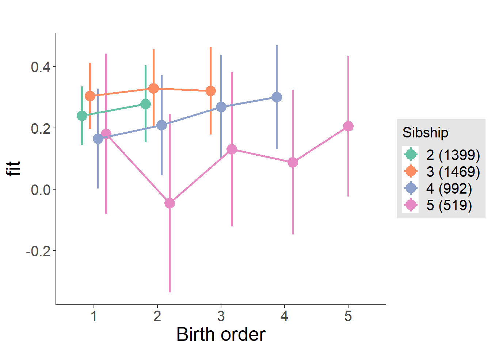
Model Comparison
###### Model 1 - Model 2
anova(m1_covariates_only, m2_birthorder_linear, m3_birthorder_nonlinear, m4_interaction)## refitting model(s) with ML (instead of REML)| Df | AIC | BIC | logLik | deviance | Chisq | Chi Df | Pr(>Chisq) |
|---|---|---|---|---|---|---|---|
| 8 | 11794 | 11845 | -5889 | 11778 | NA | NA | NA |
| 9 | 11793 | 11850 | -5887 | 11775 | 2.68 | 1 | 0.1016 |
| 12 | 11798 | 11874 | -5887 | 11774 | 1.277 | 3 | 0.7347 |
| 18 | 11804 | 11919 | -5884 | 11768 | 5.68 | 6 | 0.46 |
Compare birth order specifications
library(coefplot)
multiplot(outcome_naive_m1, outcome_preg_m1, outcome_uterus_m1, outcome_parental_m1, dodgeHeight = 0.6,
intercept = FALSE)Counting backwards
birthorder <- birthorder %>% mutate(outcome = count_backwards)
model = lmer(outcome ~ birth_order + age + male + sibling_count + (1 | mother_pidlink),
data = birthorder)
compare_birthorder_specs(model)Naive birth order
outcome_naive_m1 <- update(m2_birthorder_linear, data = birthorder %>%
mutate(sibling_count = sibling_count_naive_factor,
birth_order_nonlinear = birthorder_naive_factor,
birth_order = birthorder_naive,
count_birth_order = count_birthorder_naive) %>%
filter(sibling_count != "1"))
compare_models_markdown(outcome_naive_m1)Basic Model
Model Summary
m1_covariates_only <- update(m2_birthorder_linear, formula = . ~ . - birth_order)
tidy(m1_covariates_only, conf.int = T)| term | estimate | std.error | statistic | conf.low | conf.high | group |
|---|---|---|---|---|---|---|
| (Intercept) | 0.2742 | 0.04293 | 6.386 | 0.19 | 0.3583 | fixed |
| age | -0.00879 | 0.001125 | -7.81 | -0.011 | -0.006584 | fixed |
| male | 0.0361 | 0.02286 | 1.579 | -0.008703 | 0.0809 | fixed |
| sibling_count3 | 0.002946 | 0.03406 | 0.08647 | -0.06382 | 0.06971 | fixed |
| sibling_count4 | 0.03301 | 0.03517 | 0.9385 | -0.03593 | 0.1019 | fixed |
| sibling_count5 | 0.02025 | 0.03648 | 0.5549 | -0.05126 | 0.09175 | fixed |
| sd_(Intercept).mother_pidlink | 0.436 | NA | NA | NA | NA | mother_pidlink |
| sd_Observation.Residual | 0.8712 | NA | NA | NA | NA | Residual |
Coefficient Plot
plot(allEffects(m1_covariates_only))Add Birth Order Linear
Model Summary
tidy(m2_birthorder_linear, conf.int = T)| term | estimate | std.error | statistic | conf.low | conf.high | group |
|---|---|---|---|---|---|---|
| (Intercept) | 0.3266 | 0.04694 | 6.958 | 0.2346 | 0.4186 | fixed |
| birth_order | -0.031 | 0.01118 | -2.774 | -0.05291 | -0.009099 | fixed |
| age | -0.00914 | 0.001133 | -8.069 | -0.01136 | -0.00692 | fixed |
| male | 0.03688 | 0.02285 | 1.614 | -0.007901 | 0.08165 | fixed |
| sibling_count3 | 0.01405 | 0.0343 | 0.4097 | -0.05317 | 0.08128 | fixed |
| sibling_count4 | 0.05957 | 0.03646 | 1.634 | -0.01189 | 0.131 | fixed |
| sibling_count5 | 0.0627 | 0.03958 | 1.584 | -0.01487 | 0.1403 | fixed |
| sd_(Intercept).mother_pidlink | 0.4381 | NA | NA | NA | NA | mother_pidlink |
| sd_Observation.Residual | 0.8698 | NA | NA | NA | NA | Residual |
Coefficient Plot
plot_birthorder2(m2_birthorder_linear, separate = FALSE)Add Birth Order Factor
Model Summary
m3_birthorder_nonlinear = update(m1_covariates_only, formula = . ~ . + birth_order_nonlinear)
tidy(m3_birthorder_nonlinear, conf.int = T)| term | estimate | std.error | statistic | conf.low | conf.high | group |
|---|---|---|---|---|---|---|
| (Intercept) | 0.297 | 0.04437 | 6.693 | 0.21 | 0.384 | fixed |
| age | -0.009111 | 0.001133 | -8.04 | -0.01133 | -0.00689 | fixed |
| male | 0.03697 | 0.02285 | 1.618 | -0.007815 | 0.08175 | fixed |
| sibling_count3 | 0.0222 | 0.03477 | 0.6386 | -0.04594 | 0.09034 | fixed |
| sibling_count4 | 0.06504 | 0.03699 | 1.758 | -0.007473 | 0.1375 | fixed |
| sibling_count5 | 0.06114 | 0.03986 | 1.534 | -0.01699 | 0.1393 | fixed |
| birth_order_nonlinear2 | -0.03731 | 0.02666 | -1.4 | -0.08957 | 0.01494 | fixed |
| birth_order_nonlinear3 | -0.1004 | 0.03412 | -2.944 | -0.1673 | -0.03356 | fixed |
| birth_order_nonlinear4 | -0.08062 | 0.04449 | -1.812 | -0.1678 | 0.00658 | fixed |
| birth_order_nonlinear5 | -0.08506 | 0.06458 | -1.317 | -0.2116 | 0.04152 | fixed |
| sd_(Intercept).mother_pidlink | 0.4377 | NA | NA | NA | NA | mother_pidlink |
| sd_Observation.Residual | 0.8701 | NA | NA | NA | NA | Residual |
Coefficient Plot
plot_birthorder(m3_birthorder_nonlinear, separate = FALSE)Add Interaction
Model Summary
m4_interaction = update(m3_birthorder_nonlinear, formula = . ~ . - birth_order_nonlinear - sibling_count + count_birth_order)
tidy(m4_interaction, conf.int = T)| term | estimate | std.error | statistic | conf.low | conf.high | group |
|---|---|---|---|---|---|---|
| (Intercept) | 0.299 | 0.04619 | 6.474 | 0.2085 | 0.3895 | fixed |
| age | -0.00905 | 0.001134 | -7.982 | -0.01127 | -0.006828 | fixed |
| male | 0.03772 | 0.02285 | 1.651 | -0.007052 | 0.0825 | fixed |
| count_birth_order2/2 | -0.04874 | 0.04564 | -1.068 | -0.1382 | 0.04071 | fixed |
| count_birth_order1/3 | 0.03924 | 0.04422 | 0.8875 | -0.04742 | 0.1259 | fixed |
| count_birth_order2/3 | -0.0229 | 0.04918 | -0.4656 | -0.1193 | 0.07349 | fixed |
| count_birth_order3/3 | -0.122 | 0.05488 | -2.223 | -0.2295 | -0.01442 | fixed |
| count_birth_order1/4 | 0.08407 | 0.05043 | 1.667 | -0.01477 | 0.1829 | fixed |
| count_birth_order2/4 | 0.003829 | 0.05289 | 0.07239 | -0.09983 | 0.1075 | fixed |
| count_birth_order3/4 | -0.06385 | 0.05709 | -1.118 | -0.1757 | 0.04805 | fixed |
| count_birth_order4/4 | -0.002188 | 0.06017 | -0.03636 | -0.1201 | 0.1157 | fixed |
| count_birth_order1/5 | -0.0332 | 0.05658 | -0.5867 | -0.1441 | 0.0777 | fixed |
| count_birth_order2/5 | 0.06594 | 0.05943 | 1.11 | -0.05053 | 0.1824 | fixed |
| count_birth_order3/5 | 0.03788 | 0.06119 | 0.619 | -0.08205 | 0.1578 | fixed |
| count_birth_order4/5 | -0.04496 | 0.06459 | -0.6961 | -0.1716 | 0.08163 | fixed |
| count_birth_order5/5 | -0.02614 | 0.06585 | -0.3969 | -0.1552 | 0.1029 | fixed |
| sd_(Intercept).mother_pidlink | 0.4385 | NA | NA | NA | NA | mother_pidlink |
| sd_Observation.Residual | 0.8695 | NA | NA | NA | NA | Residual |
Coefficient Plot
plot_birthorder(m4_interaction)Model Comparison
###### Model 1 - Model 2
anova(m1_covariates_only, m2_birthorder_linear, m3_birthorder_nonlinear, m4_interaction)## refitting model(s) with ML (instead of REML)| Df | AIC | BIC | logLik | deviance | Chisq | Chi Df | Pr(>Chisq) |
|---|---|---|---|---|---|---|---|
| 8 | 19409 | 19464 | -9697 | 19393 | NA | NA | NA |
| 9 | 19404 | 19465 | -9693 | 19386 | 7.681 | 1 | 0.005581 |
| 12 | 19407 | 19490 | -9692 | 19383 | 2.273 | 3 | 0.5178 |
| 18 | 19410 | 19533 | -9687 | 19374 | 9.578 | 6 | 0.1436 |
Maternal birth order
outcome_uterus_m1 <- update(m2_birthorder_linear, data = birthorder %>%
mutate(sibling_count = sibling_count_uterus_alive_factor,
birth_order_nonlinear = birthorder_uterus_alive_factor,
birth_order = birthorder_uterus_alive,
count_birth_order = count_birthorder_uterus_alive) %>%
filter(sibling_count != "1"))
compare_models_markdown(outcome_uterus_m1)Basic Model
Model Summary
m1_covariates_only <- update(m2_birthorder_linear, formula = . ~ . - birth_order)
tidy(m1_covariates_only, conf.int = T)| term | estimate | std.error | statistic | conf.low | conf.high | group |
|---|---|---|---|---|---|---|
| (Intercept) | 0.1655 | 0.0516 | 3.208 | 0.06439 | 0.2667 | fixed |
| age | 0.001995 | 0.001906 | 1.047 | -0.001739 | 0.00573 | fixed |
| male | -0.009467 | 0.02677 | -0.3537 | -0.06193 | 0.043 | fixed |
| sibling_count3 | -0.005021 | 0.03732 | -0.1345 | -0.07818 | 0.06813 | fixed |
| sibling_count4 | -0.0292 | 0.04055 | -0.7202 | -0.1087 | 0.05027 | fixed |
| sibling_count5 | -0.07536 | 0.0463 | -1.628 | -0.1661 | 0.01538 | fixed |
| sd_(Intercept).mother_pidlink | 0.3819 | NA | NA | NA | NA | mother_pidlink |
| sd_Observation.Residual | 0.8197 | NA | NA | NA | NA | Residual |
Coefficient Plot
plot(allEffects(m1_covariates_only))Add Birth Order Linear
Model Summary
tidy(m2_birthorder_linear, conf.int = T)| term | estimate | std.error | statistic | conf.low | conf.high | group |
|---|---|---|---|---|---|---|
| (Intercept) | 0.1705 | 0.05704 | 2.99 | 0.05874 | 0.2823 | fixed |
| birth_order | -0.002864 | 0.01389 | -0.2062 | -0.03009 | 0.02436 | fixed |
| age | 0.001938 | 0.001926 | 1.006 | -0.001838 | 0.005713 | fixed |
| male | -0.009358 | 0.02677 | -0.3495 | -0.06183 | 0.04312 | fixed |
| sibling_count3 | -0.003681 | 0.03789 | -0.09714 | -0.07795 | 0.07059 | fixed |
| sibling_count4 | -0.02613 | 0.04321 | -0.6047 | -0.1108 | 0.05857 | fixed |
| sibling_count5 | -0.07024 | 0.05256 | -1.336 | -0.1732 | 0.03277 | fixed |
| sd_(Intercept).mother_pidlink | 0.3822 | NA | NA | NA | NA | mother_pidlink |
| sd_Observation.Residual | 0.8197 | NA | NA | NA | NA | Residual |
Coefficient Plot
plot_birthorder2(m2_birthorder_linear, separate = FALSE)Add Birth Order Factor
Model Summary
m3_birthorder_nonlinear = update(m1_covariates_only, formula = . ~ . + birth_order_nonlinear)
tidy(m3_birthorder_nonlinear, conf.int = T)| term | estimate | std.error | statistic | conf.low | conf.high | group |
|---|---|---|---|---|---|---|
| (Intercept) | 0.1566 | 0.05327 | 2.94 | 0.05221 | 0.261 | fixed |
| age | 0.002032 | 0.001929 | 1.053 | -0.001749 | 0.005813 | fixed |
| male | -0.009146 | 0.02677 | -0.3417 | -0.06161 | 0.04332 | fixed |
| sibling_count3 | 0.01062 | 0.03844 | 0.2763 | -0.06472 | 0.08596 | fixed |
| sibling_count4 | -0.01645 | 0.04383 | -0.3754 | -0.1024 | 0.06945 | fixed |
| sibling_count5 | -0.07214 | 0.05339 | -1.351 | -0.1768 | 0.03251 | fixed |
| birth_order_nonlinear2 | 0.02409 | 0.03153 | 0.764 | -0.0377 | 0.08588 | fixed |
| birth_order_nonlinear3 | -0.06832 | 0.04015 | -1.702 | -0.147 | 0.01036 | fixed |
| birth_order_nonlinear4 | 0.02089 | 0.05402 | 0.3866 | -0.085 | 0.1268 | fixed |
| birth_order_nonlinear5 | 0.04585 | 0.08367 | 0.548 | -0.1181 | 0.2098 | fixed |
| sd_(Intercept).mother_pidlink | 0.3834 | NA | NA | NA | NA | mother_pidlink |
| sd_Observation.Residual | 0.8188 | NA | NA | NA | NA | Residual |
Coefficient Plot
plot_birthorder(m3_birthorder_nonlinear, separate = FALSE)Add Interaction
Model Summary
m4_interaction = update(m3_birthorder_nonlinear, formula = . ~ . - birth_order_nonlinear - sibling_count + count_birth_order)
tidy(m4_interaction, conf.int = T)| term | estimate | std.error | statistic | conf.low | conf.high | group |
|---|---|---|---|---|---|---|
| (Intercept) | 0.1468 | 0.05499 | 2.669 | 0.03898 | 0.2545 | fixed |
| age | 0.001978 | 0.00193 | 1.025 | -0.001805 | 0.005761 | fixed |
| male | -0.01082 | 0.02678 | -0.404 | -0.06331 | 0.04167 | fixed |
| count_birth_order2/2 | 0.06 | 0.05445 | 1.102 | -0.04673 | 0.1667 | fixed |
| count_birth_order1/3 | 0.04679 | 0.04856 | 0.9634 | -0.0484 | 0.142 | fixed |
| count_birth_order2/3 | 0.00417 | 0.05291 | 0.07883 | -0.09952 | 0.1079 | fixed |
| count_birth_order3/3 | -0.03411 | 0.059 | -0.5782 | -0.1498 | 0.08153 | fixed |
| count_birth_order1/4 | -0.04475 | 0.05967 | -0.7498 | -0.1617 | 0.07221 | fixed |
| count_birth_order2/4 | 0.07555 | 0.06165 | 1.225 | -0.04529 | 0.1964 | fixed |
| count_birth_order3/4 | -0.07409 | 0.06463 | -1.146 | -0.2008 | 0.05258 | fixed |
| count_birth_order4/4 | 0.005905 | 0.0673 | 0.08775 | -0.126 | 0.1378 | fixed |
| count_birth_order1/5 | -0.01319 | 0.08026 | -0.1644 | -0.1705 | 0.1441 | fixed |
| count_birth_order2/5 | -0.08533 | 0.08631 | -0.9887 | -0.2545 | 0.08384 | fixed |
| count_birth_order3/5 | -0.1534 | 0.08092 | -1.896 | -0.312 | 0.005155 | fixed |
| count_birth_order4/5 | -0.02358 | 0.07785 | -0.3029 | -0.1762 | 0.129 | fixed |
| count_birth_order5/5 | -0.01431 | 0.08033 | -0.1782 | -0.1718 | 0.1431 | fixed |
| sd_(Intercept).mother_pidlink | 0.3831 | NA | NA | NA | NA | mother_pidlink |
| sd_Observation.Residual | 0.8191 | NA | NA | NA | NA | Residual |
Coefficient Plot
plot_birthorder(m4_interaction)Model Comparison
###### Model 1 - Model 2
anova(m1_covariates_only, m2_birthorder_linear, m3_birthorder_nonlinear, m4_interaction)## refitting model(s) with ML (instead of REML)| Df | AIC | BIC | logLik | deviance | Chisq | Chi Df | Pr(>Chisq) |
|---|---|---|---|---|---|---|---|
| 8 | 11711 | 11762 | -5848 | 11695 | NA | NA | NA |
| 9 | 11713 | 11771 | -5847 | 11695 | 0.04165 | 1 | 0.8383 |
| 12 | 11713 | 11790 | -5845 | 11689 | 5.954 | 3 | 0.1139 |
| 18 | 11720 | 11835 | -5842 | 11684 | 5.226 | 6 | 0.5152 |
Maternal pregnancy order
outcome_preg_m1 <- update(m2_birthorder_linear, data = birthorder %>%
mutate(sibling_count = sibling_count_uterus_preg_factor,
birth_order_nonlinear = birthorder_uterus_preg_factor,
birth_order = birthorder_uterus_preg,
count_birth_order = count_birthorder_uterus_preg
) %>%
filter(sibling_count != "1"))
compare_models_markdown(outcome_preg_m1)Basic Model
Model Summary
m1_covariates_only <- update(m2_birthorder_linear, formula = . ~ . - birth_order)
tidy(m1_covariates_only, conf.int = T)| term | estimate | std.error | statistic | conf.low | conf.high | group |
|---|---|---|---|---|---|---|
| (Intercept) | 0.1722 | 0.05436 | 3.167 | 0.06561 | 0.2787 | fixed |
| age | 0.0019 | 0.001999 | 0.9506 | -0.002018 | 0.005819 | fixed |
| male | -0.005427 | 0.02793 | -0.1943 | -0.06016 | 0.04931 | fixed |
| sibling_count3 | -0.03539 | 0.04056 | -0.8724 | -0.1149 | 0.04411 | fixed |
| sibling_count4 | -0.01193 | 0.04311 | -0.2767 | -0.09642 | 0.07256 | fixed |
| sibling_count5 | -0.07261 | 0.04617 | -1.573 | -0.1631 | 0.01789 | fixed |
| sd_(Intercept).mother_pidlink | 0.3878 | NA | NA | NA | NA | mother_pidlink |
| sd_Observation.Residual | 0.8218 | NA | NA | NA | NA | Residual |
Coefficient Plot
plot(allEffects(m1_covariates_only))Add Birth Order Linear
Model Summary
tidy(m2_birthorder_linear, conf.int = T)| term | estimate | std.error | statistic | conf.low | conf.high | group |
|---|---|---|---|---|---|---|
| (Intercept) | 0.196 | 0.05983 | 3.275 | 0.07869 | 0.3132 | fixed |
| birth_order | -0.0134 | 0.01401 | -0.9564 | -0.04086 | 0.01406 | fixed |
| age | 0.00161 | 0.002023 | 0.7962 | -0.002354 | 0.005575 | fixed |
| male | -0.005051 | 0.02793 | -0.1809 | -0.05978 | 0.04968 | fixed |
| sibling_count3 | -0.02909 | 0.04111 | -0.7077 | -0.1097 | 0.05148 | fixed |
| sibling_count4 | 0.001986 | 0.04552 | 0.04363 | -0.08723 | 0.0912 | fixed |
| sibling_count5 | -0.05057 | 0.05165 | -0.9791 | -0.1518 | 0.05066 | fixed |
| sd_(Intercept).mother_pidlink | 0.3892 | NA | NA | NA | NA | mother_pidlink |
| sd_Observation.Residual | 0.8213 | NA | NA | NA | NA | Residual |
Coefficient Plot
plot_birthorder2(m2_birthorder_linear, separate = FALSE)
Add Birth Order Factor
Model Summary
m3_birthorder_nonlinear = update(m1_covariates_only, formula = . ~ . + birth_order_nonlinear)
tidy(m3_birthorder_nonlinear, conf.int = T)| term | estimate | std.error | statistic | conf.low | conf.high | group |
|---|---|---|---|---|---|---|
| (Intercept) | 0.1736 | 0.05612 | 3.094 | 0.06363 | 0.2836 | fixed |
| age | 0.001715 | 0.002025 | 0.8471 | -0.002253 | 0.005683 | fixed |
| male | -0.004451 | 0.02792 | -0.1594 | -0.05917 | 0.05026 | fixed |
| sibling_count3 | -0.01421 | 0.04165 | -0.3412 | -0.09585 | 0.06743 | fixed |
| sibling_count4 | 0.01807 | 0.04611 | 0.392 | -0.0723 | 0.1085 | fixed |
| sibling_count5 | -0.05414 | 0.05212 | -1.039 | -0.1563 | 0.04802 | fixed |
| birth_order_nonlinear2 | 0.00592 | 0.033 | 0.1794 | -0.05876 | 0.0706 | fixed |
| birth_order_nonlinear3 | -0.09342 | 0.04167 | -2.242 | -0.1751 | -0.01174 | fixed |
| birth_order_nonlinear4 | -0.0464 | 0.05533 | -0.8386 | -0.1548 | 0.06204 | fixed |
| birth_order_nonlinear5 | 0.05659 | 0.08054 | 0.7027 | -0.1013 | 0.2144 | fixed |
| sd_(Intercept).mother_pidlink | 0.3898 | NA | NA | NA | NA | mother_pidlink |
| sd_Observation.Residual | 0.8206 | NA | NA | NA | NA | Residual |
Coefficient Plot
plot_birthorder(m3_birthorder_nonlinear, separate = FALSE)Add Interaction
Model Summary
m4_interaction = update(m3_birthorder_nonlinear, formula = . ~ . - birth_order_nonlinear - sibling_count + count_birth_order)
tidy(m4_interaction, conf.int = T)| term | estimate | std.error | statistic | conf.low | conf.high | group |
|---|---|---|---|---|---|---|
| (Intercept) | 0.1454 | 0.05819 | 2.499 | 0.03135 | 0.2595 | fixed |
| age | 0.001565 | 0.002027 | 0.7722 | -0.002407 | 0.005537 | fixed |
| male | -0.005759 | 0.02791 | -0.2063 | -0.06046 | 0.04894 | fixed |
| count_birth_order2/2 | 0.1022 | 0.05978 | 1.709 | -0.01499 | 0.2193 | fixed |
| count_birth_order1/3 | 0.04958 | 0.05286 | 0.938 | -0.05402 | 0.1532 | fixed |
| count_birth_order2/3 | -0.03888 | 0.05708 | -0.6811 | -0.1508 | 0.073 | fixed |
| count_birth_order3/3 | -0.04721 | 0.06408 | -0.7366 | -0.1728 | 0.07839 | fixed |
| count_birth_order1/4 | 0.06859 | 0.06278 | 1.093 | -0.05446 | 0.1916 | fixed |
| count_birth_order2/4 | 0.1122 | 0.06391 | 1.755 | -0.01309 | 0.2374 | fixed |
| count_birth_order3/4 | -0.09896 | 0.06946 | -1.425 | -0.2351 | 0.03719 | fixed |
| count_birth_order4/4 | -0.04291 | 0.07176 | -0.5979 | -0.1835 | 0.09773 | fixed |
| count_birth_order1/5 | -0.03521 | 0.07398 | -0.476 | -0.1802 | 0.1098 | fixed |
| count_birth_order2/5 | -0.08206 | 0.07957 | -1.031 | -0.238 | 0.0739 | fixed |
| count_birth_order3/5 | -0.09073 | 0.07716 | -1.176 | -0.242 | 0.06051 | fixed |
| count_birth_order4/5 | -0.008737 | 0.08006 | -0.1091 | -0.1656 | 0.1482 | fixed |
| count_birth_order5/5 | 0.03565 | 0.07962 | 0.4478 | -0.1204 | 0.1917 | fixed |
| sd_(Intercept).mother_pidlink | 0.3932 | NA | NA | NA | NA | mother_pidlink |
| sd_Observation.Residual | 0.8186 | NA | NA | NA | NA | Residual |
Coefficient Plot
plot_birthorder(m4_interaction)Model Comparison
###### Model 1 - Model 2
anova(m1_covariates_only, m2_birthorder_linear, m3_birthorder_nonlinear, m4_interaction)## refitting model(s) with ML (instead of REML)| Df | AIC | BIC | logLik | deviance | Chisq | Chi Df | Pr(>Chisq) |
|---|---|---|---|---|---|---|---|
| 8 | 10909 | 10959 | -5446 | 10893 | NA | NA | NA |
| 9 | 10910 | 10967 | -5446 | 10892 | 0.9102 | 1 | 0.3401 |
| 12 | 10909 | 10985 | -5443 | 10885 | 6.818 | 3 | 0.07792 |
| 18 | 10910 | 11024 | -5437 | 10874 | 10.6 | 6 | 0.1015 |
Parental full sibling order
outcome_parental_m1 <- update(m2_birthorder_linear, data = birthorder %>%
mutate(sibling_count = sibling_count_genes_factor,
birth_order_nonlinear = birthorder_genes_factor,
birth_order = birthorder_genes,
count_birth_order = count_birthorder_genes
) %>%
filter(sibling_count != "1"))
compare_models_markdown(outcome_parental_m1)Basic Model
Model Summary
m1_covariates_only <- update(m2_birthorder_linear, formula = . ~ . - birth_order)
tidy(m1_covariates_only, conf.int = T)| term | estimate | std.error | statistic | conf.low | conf.high | group |
|---|---|---|---|---|---|---|
| (Intercept) | 0.1623 | 0.05113 | 3.175 | 0.06212 | 0.2625 | fixed |
| age | 0.00119 | 0.001896 | 0.6273 | -0.002527 | 0.004907 | fixed |
| male | -0.006673 | 0.02674 | -0.2496 | -0.05908 | 0.04573 | fixed |
| sibling_count3 | 0.02624 | 0.03667 | 0.7156 | -0.04564 | 0.09812 | fixed |
| sibling_count4 | -0.01516 | 0.04004 | -0.3786 | -0.09363 | 0.06332 | fixed |
| sibling_count5 | -0.03029 | 0.04723 | -0.6414 | -0.1229 | 0.06227 | fixed |
| sd_(Intercept).mother_pidlink | 0.3747 | NA | NA | NA | NA | mother_pidlink |
| sd_Observation.Residual | 0.8193 | NA | NA | NA | NA | Residual |
Coefficient Plot
plot(allEffects(m1_covariates_only))Add Birth Order Linear
Model Summary
tidy(m2_birthorder_linear, conf.int = T)| term | estimate | std.error | statistic | conf.low | conf.high | group |
|---|---|---|---|---|---|---|
| (Intercept) | 0.1751 | 0.05673 | 3.086 | 0.06389 | 0.2863 | fixed |
| birth_order | -0.007309 | 0.01403 | -0.5208 | -0.03482 | 0.0202 | fixed |
| age | 0.001046 | 0.001917 | 0.5455 | -0.002712 | 0.004803 | fixed |
| male | -0.006455 | 0.02674 | -0.2414 | -0.05886 | 0.04595 | fixed |
| sibling_count3 | 0.02967 | 0.03727 | 0.796 | -0.04338 | 0.1027 | fixed |
| sibling_count4 | -0.00733 | 0.04279 | -0.1713 | -0.0912 | 0.07654 | fixed |
| sibling_count5 | -0.01784 | 0.05296 | -0.3369 | -0.1216 | 0.08595 | fixed |
| sd_(Intercept).mother_pidlink | 0.3756 | NA | NA | NA | NA | mother_pidlink |
| sd_Observation.Residual | 0.819 | NA | NA | NA | NA | Residual |
Coefficient Plot
plot_birthorder2(m2_birthorder_linear, separate = FALSE)Add Birth Order Factor
Model Summary
m3_birthorder_nonlinear = update(m1_covariates_only, formula = . ~ . + birth_order_nonlinear)
tidy(m3_birthorder_nonlinear, conf.int = T)| term | estimate | std.error | statistic | conf.low | conf.high | group |
|---|---|---|---|---|---|---|
| (Intercept) | 0.1597 | 0.05281 | 3.025 | 0.05623 | 0.2633 | fixed |
| age | 0.001165 | 0.00192 | 0.607 | -0.002598 | 0.004928 | fixed |
| male | -0.007317 | 0.02673 | -0.2737 | -0.05971 | 0.04508 | fixed |
| sibling_count3 | 0.04477 | 0.03784 | 1.183 | -0.02939 | 0.1189 | fixed |
| sibling_count4 | -0.00183 | 0.04341 | -0.04216 | -0.08692 | 0.08326 | fixed |
| sibling_count5 | -0.02117 | 0.05399 | -0.3921 | -0.127 | 0.08464 | fixed |
| birth_order_nonlinear2 | 0.009956 | 0.03128 | 0.3183 | -0.05135 | 0.07126 | fixed |
| birth_order_nonlinear3 | -0.07828 | 0.03993 | -1.96 | -0.1565 | -0.00002029 | fixed |
| birth_order_nonlinear4 | 0.02914 | 0.05498 | 0.5301 | -0.07861 | 0.1369 | fixed |
| birth_order_nonlinear5 | 0.006801 | 0.08943 | 0.07605 | -0.1685 | 0.1821 | fixed |
| sd_(Intercept).mother_pidlink | 0.377 | NA | NA | NA | NA | mother_pidlink |
| sd_Observation.Residual | 0.8182 | NA | NA | NA | NA | Residual |
Coefficient Plot
plot_birthorder(m3_birthorder_nonlinear, separate = FALSE)
Add Interaction
Model Summary
m4_interaction = update(m3_birthorder_nonlinear, formula = . ~ . - birth_order_nonlinear - sibling_count + count_birth_order)
tidy(m4_interaction, conf.int = T)| term | estimate | std.error | statistic | conf.low | conf.high | group |
|---|---|---|---|---|---|---|
| (Intercept) | 0.1476 | 0.05457 | 2.706 | 0.0407 | 0.2546 | fixed |
| age | 0.001113 | 0.001921 | 0.5793 | -0.002653 | 0.004879 | fixed |
| male | -0.008303 | 0.02675 | -0.3104 | -0.06073 | 0.04413 | fixed |
| count_birth_order2/2 | 0.0506 | 0.05287 | 0.9571 | -0.05302 | 0.1542 | fixed |
| count_birth_order1/3 | 0.06776 | 0.04781 | 1.417 | -0.02595 | 0.1615 | fixed |
| count_birth_order2/3 | 0.03791 | 0.0527 | 0.7194 | -0.06537 | 0.1412 | fixed |
| count_birth_order3/3 | 0.003362 | 0.05782 | 0.05814 | -0.11 | 0.1167 | fixed |
| count_birth_order1/4 | 0.0008864 | 0.05974 | 0.01484 | -0.1162 | 0.118 | fixed |
| count_birth_order2/4 | 0.05283 | 0.06135 | 0.8611 | -0.06742 | 0.1731 | fixed |
| count_birth_order3/4 | -0.07299 | 0.06374 | -1.145 | -0.1979 | 0.05193 | fixed |
| count_birth_order4/4 | 0.02528 | 0.06736 | 0.3752 | -0.1068 | 0.1573 | fixed |
| count_birth_order1/5 | 0.04809 | 0.07986 | 0.6022 | -0.1084 | 0.2046 | fixed |
| count_birth_order2/5 | -0.04861 | 0.08869 | -0.5481 | -0.2224 | 0.1252 | fixed |
| count_birth_order3/5 | -0.1333 | 0.08464 | -1.575 | -0.2992 | 0.03262 | fixed |
| count_birth_order4/5 | 0.04594 | 0.08122 | 0.5656 | -0.1133 | 0.2051 | fixed |
| count_birth_order5/5 | -0.0005022 | 0.08571 | -0.00586 | -0.1685 | 0.1675 | fixed |
| sd_(Intercept).mother_pidlink | 0.3766 | NA | NA | NA | NA | mother_pidlink |
| sd_Observation.Residual | 0.8186 | NA | NA | NA | NA | Residual |
Coefficient Plot
plot_birthorder(m4_interaction)Model Comparison
###### Model 1 - Model 2
anova(m1_covariates_only, m2_birthorder_linear, m3_birthorder_nonlinear, m4_interaction)## refitting model(s) with ML (instead of REML)| Df | AIC | BIC | logLik | deviance | Chisq | Chi Df | Pr(>Chisq) |
|---|---|---|---|---|---|---|---|
| 8 | 11646 | 11698 | -5815 | 11630 | NA | NA | NA |
| 9 | 11648 | 11706 | -5815 | 11630 | 0.2684 | 1 | 0.6044 |
| 12 | 11648 | 11725 | -5812 | 11624 | 5.766 | 3 | 0.1236 |
| 18 | 11657 | 11772 | -5810 | 11621 | 3.593 | 6 | 0.7316 |
Compare birth order specifications
library(coefplot)
multiplot(outcome_naive_m1, outcome_preg_m1, outcome_uterus_m1, outcome_parental_m1, dodgeHeight = 0.6,
intercept = FALSE)Immediate word recall
birthorder <- birthorder %>% mutate(outcome = words_immediate)
model = lmer(outcome ~ birth_order + age + male + sibling_count + (1 | mother_pidlink),
data = birthorder)
compare_birthorder_specs(model)Naive birth order
outcome_naive_m1 <- update(m2_birthorder_linear, data = birthorder %>%
mutate(sibling_count = sibling_count_naive_factor,
birth_order_nonlinear = birthorder_naive_factor,
birth_order = birthorder_naive,
count_birth_order = count_birthorder_naive) %>%
filter(sibling_count != "1"))
compare_models_markdown(outcome_naive_m1)Basic Model
Model Summary
m1_covariates_only <- update(m2_birthorder_linear, formula = . ~ . - birth_order)
tidy(m1_covariates_only, conf.int = T)| term | estimate | std.error | statistic | conf.low | conf.high | group |
|---|---|---|---|---|---|---|
| (Intercept) | 0.7819 | 0.04127 | 18.94 | 0.701 | 0.8628 | fixed |
| age | -0.02363 | 0.001079 | -21.91 | -0.02574 | -0.02152 | fixed |
| male | -0.08845 | 0.02194 | -4.032 | -0.1315 | -0.04545 | fixed |
| sibling_count3 | 0.02837 | 0.03279 | 0.8652 | -0.0359 | 0.09264 | fixed |
| sibling_count4 | 0.03664 | 0.03382 | 1.083 | -0.02965 | 0.1029 | fixed |
| sibling_count5 | 0.01142 | 0.0352 | 0.3244 | -0.05758 | 0.08041 | fixed |
| sd_(Intercept).mother_pidlink | 0.4304 | NA | NA | NA | NA | mother_pidlink |
| sd_Observation.Residual | 0.8421 | NA | NA | NA | NA | Residual |
Coefficient Plot
plot(allEffects(m1_covariates_only))Add Birth Order Linear
Model Summary
tidy(m2_birthorder_linear, conf.int = T)| term | estimate | std.error | statistic | conf.low | conf.high | group |
|---|---|---|---|---|---|---|
| (Intercept) | 0.7828 | 0.04522 | 17.31 | 0.6942 | 0.8714 | fixed |
| birth_order | -0.0005128 | 0.01075 | -0.04769 | -0.02159 | 0.02056 | fixed |
| age | -0.02364 | 0.001086 | -21.76 | -0.02577 | -0.02151 | fixed |
| male | -0.08844 | 0.02194 | -4.031 | -0.1315 | -0.04543 | fixed |
| sibling_count3 | 0.02855 | 0.03301 | 0.8648 | -0.03615 | 0.09325 | fixed |
| sibling_count4 | 0.03707 | 0.03501 | 1.059 | -0.03156 | 0.1057 | fixed |
| sibling_count5 | 0.01212 | 0.03814 | 0.3178 | -0.06263 | 0.08687 | fixed |
| sd_(Intercept).mother_pidlink | 0.4303 | NA | NA | NA | NA | mother_pidlink |
| sd_Observation.Residual | 0.8422 | NA | NA | NA | NA | Residual |
Coefficient Plot
plot_birthorder2(m2_birthorder_linear, separate = FALSE)Add Birth Order Factor
Model Summary
m3_birthorder_nonlinear = update(m1_covariates_only, formula = . ~ . + birth_order_nonlinear)
tidy(m3_birthorder_nonlinear, conf.int = T)| term | estimate | std.error | statistic | conf.low | conf.high | group |
|---|---|---|---|---|---|---|
| (Intercept) | 0.7792 | 0.0427 | 18.25 | 0.6955 | 0.8629 | fixed |
| age | -0.02364 | 0.001087 | -21.75 | -0.02577 | -0.02151 | fixed |
| male | -0.08846 | 0.02195 | -4.031 | -0.1315 | -0.04544 | fixed |
| sibling_count3 | 0.03143 | 0.03346 | 0.9393 | -0.03415 | 0.097 | fixed |
| sibling_count4 | 0.03898 | 0.03552 | 1.097 | -0.03063 | 0.1086 | fixed |
| sibling_count5 | 0.01381 | 0.03842 | 0.3594 | -0.06149 | 0.0891 | fixed |
| birth_order_nonlinear2 | 0.008225 | 0.02553 | 0.3222 | -0.04181 | 0.05826 | fixed |
| birth_order_nonlinear3 | -0.01202 | 0.03274 | -0.3672 | -0.07618 | 0.05214 | fixed |
| birth_order_nonlinear4 | 0.005105 | 0.0428 | 0.1193 | -0.07878 | 0.08899 | fixed |
| birth_order_nonlinear5 | 0.002001 | 0.0623 | 0.03211 | -0.1201 | 0.1241 | fixed |
| sd_(Intercept).mother_pidlink | 0.43 | NA | NA | NA | NA | mother_pidlink |
| sd_Observation.Residual | 0.8425 | NA | NA | NA | NA | Residual |
Coefficient Plot
plot_birthorder(m3_birthorder_nonlinear, separate = FALSE)Add Interaction
Model Summary
m4_interaction = update(m3_birthorder_nonlinear, formula = . ~ . - birth_order_nonlinear - sibling_count + count_birth_order)
tidy(m4_interaction, conf.int = T)| term | estimate | std.error | statistic | conf.low | conf.high | group |
|---|---|---|---|---|---|---|
| (Intercept) | 0.7716 | 0.04441 | 17.37 | 0.6845 | 0.8587 | fixed |
| age | -0.02367 | 0.001087 | -21.77 | -0.0258 | -0.02154 | fixed |
| male | -0.08867 | 0.02196 | -4.039 | -0.1317 | -0.04564 | fixed |
| count_birth_order2/2 | 0.03189 | 0.04358 | 0.7318 | -0.05352 | 0.1173 | fixed |
| count_birth_order1/3 | 0.03698 | 0.04247 | 0.8707 | -0.04626 | 0.1202 | fixed |
| count_birth_order2/3 | 0.04493 | 0.04732 | 0.9494 | -0.04782 | 0.1377 | fixed |
| count_birth_order3/3 | 0.0393 | 0.05276 | 0.745 | -0.0641 | 0.1427 | fixed |
| count_birth_order1/4 | 0.02469 | 0.04828 | 0.5113 | -0.06995 | 0.1193 | fixed |
| count_birth_order2/4 | 0.07923 | 0.05063 | 1.565 | -0.01999 | 0.1785 | fixed |
| count_birth_order3/4 | 0.03386 | 0.05489 | 0.6168 | -0.07373 | 0.1414 | fixed |
| count_birth_order4/4 | 0.06018 | 0.05806 | 1.037 | -0.0536 | 0.174 | fixed |
| count_birth_order1/5 | 0.08729 | 0.0546 | 1.599 | -0.01973 | 0.1943 | fixed |
| count_birth_order2/5 | -0.02494 | 0.05715 | -0.4363 | -0.137 | 0.08708 | fixed |
| count_birth_order3/5 | -0.001663 | 0.05875 | -0.0283 | -0.1168 | 0.1135 | fixed |
| count_birth_order4/5 | 0.01848 | 0.06212 | 0.2974 | -0.1033 | 0.1402 | fixed |
| count_birth_order5/5 | 0.02336 | 0.06359 | 0.3673 | -0.1013 | 0.148 | fixed |
| sd_(Intercept).mother_pidlink | 0.4298 | NA | NA | NA | NA | mother_pidlink |
| sd_Observation.Residual | 0.8427 | NA | NA | NA | NA | Residual |
Coefficient Plot
plot_birthorder(m4_interaction)Model Comparison
###### Model 1 - Model 2
anova(m1_covariates_only, m2_birthorder_linear, m3_birthorder_nonlinear, m4_interaction)## refitting model(s) with ML (instead of REML)| Df | AIC | BIC | logLik | deviance | Chisq | Chi Df | Pr(>Chisq) |
|---|---|---|---|---|---|---|---|
| 8 | 19386 | 19441 | -9685 | 19370 | NA | NA | NA |
| 9 | 19388 | 19450 | -9685 | 19370 | 0.002261 | 1 | 0.9621 |
| 12 | 19394 | 19477 | -9685 | 19370 | 0.3875 | 3 | 0.9428 |
| 18 | 19401 | 19525 | -9683 | 19365 | 4.639 | 6 | 0.5908 |
Maternal birth order
outcome_uterus_m1 <- update(m2_birthorder_linear, data = birthorder %>%
mutate(sibling_count = sibling_count_uterus_alive_factor,
birth_order_nonlinear = birthorder_uterus_alive_factor,
birth_order = birthorder_uterus_alive,
count_birth_order = count_birthorder_uterus_alive) %>%
filter(sibling_count != "1"))
compare_models_markdown(outcome_uterus_m1)Basic Model
Model Summary
m1_covariates_only <- update(m2_birthorder_linear, formula = . ~ . - birth_order)
tidy(m1_covariates_only, conf.int = T)| term | estimate | std.error | statistic | conf.low | conf.high | group |
|---|---|---|---|---|---|---|
| (Intercept) | 0.4813 | 0.05111 | 9.416 | 0.3811 | 0.5815 | fixed |
| age | -0.004961 | 0.001889 | -2.627 | -0.008664 | -0.001259 | fixed |
| male | -0.1421 | 0.02675 | -5.314 | -0.1946 | -0.08972 | fixed |
| sibling_count3 | 0.0375 | 0.03684 | 1.018 | -0.03471 | 0.1097 | fixed |
| sibling_count4 | -0.0874 | 0.03984 | -2.194 | -0.1655 | -0.009328 | fixed |
| sibling_count5 | -0.1074 | 0.04554 | -2.357 | -0.1966 | -0.01809 | fixed |
| sd_(Intercept).mother_pidlink | 0.338 | NA | NA | NA | NA | mother_pidlink |
| sd_Observation.Residual | 0.8394 | NA | NA | NA | NA | Residual |
Coefficient Plot
plot(allEffects(m1_covariates_only))Add Birth Order Linear
Model Summary
tidy(m2_birthorder_linear, conf.int = T)| term | estimate | std.error | statistic | conf.low | conf.high | group |
|---|---|---|---|---|---|---|
| (Intercept) | 0.5003 | 0.05638 | 8.875 | 0.3898 | 0.6108 | fixed |
| birth_order | -0.01118 | 0.01393 | -0.802 | -0.03849 | 0.01613 | fixed |
| age | -0.005163 | 0.001906 | -2.709 | -0.008898 | -0.001428 | fixed |
| male | -0.1418 | 0.02675 | -5.299 | -0.1942 | -0.08934 | fixed |
| sibling_count3 | 0.04267 | 0.03741 | 1.141 | -0.03064 | 0.116 | fixed |
| sibling_count4 | -0.07555 | 0.04249 | -1.778 | -0.1588 | 0.007731 | fixed |
| sibling_count5 | -0.08748 | 0.05186 | -1.687 | -0.1891 | 0.01416 | fixed |
| sd_(Intercept).mother_pidlink | 0.3384 | NA | NA | NA | NA | mother_pidlink |
| sd_Observation.Residual | 0.8393 | NA | NA | NA | NA | Residual |
Coefficient Plot
plot_birthorder2(m2_birthorder_linear, separate = FALSE)Add Birth Order Factor
Model Summary
m3_birthorder_nonlinear = update(m1_covariates_only, formula = . ~ . + birth_order_nonlinear)
tidy(m3_birthorder_nonlinear, conf.int = T)| term | estimate | std.error | statistic | conf.low | conf.high | group |
|---|---|---|---|---|---|---|
| (Intercept) | 0.4924 | 0.05275 | 9.334 | 0.389 | 0.5958 | fixed |
| age | -0.005235 | 0.001909 | -2.743 | -0.008977 | -0.001494 | fixed |
| male | -0.1416 | 0.02676 | -5.289 | -0.194 | -0.08911 | fixed |
| sibling_count3 | 0.03598 | 0.03798 | 0.9474 | -0.03846 | 0.1104 | fixed |
| sibling_count4 | -0.07674 | 0.04312 | -1.78 | -0.1613 | 0.007769 | fixed |
| sibling_count5 | -0.08671 | 0.05272 | -1.645 | -0.19 | 0.01663 | fixed |
| birth_order_nonlinear2 | -0.01653 | 0.03167 | -0.5219 | -0.07859 | 0.04554 | fixed |
| birth_order_nonlinear3 | 0.007124 | 0.04037 | 0.1765 | -0.072 | 0.08625 | fixed |
| birth_order_nonlinear4 | -0.06101 | 0.05418 | -1.126 | -0.1672 | 0.04517 | fixed |
| birth_order_nonlinear5 | -0.05019 | 0.08445 | -0.5944 | -0.2157 | 0.1153 | fixed |
| sd_(Intercept).mother_pidlink | 0.3388 | NA | NA | NA | NA | mother_pidlink |
| sd_Observation.Residual | 0.8394 | NA | NA | NA | NA | Residual |
Coefficient Plot
plot_birthorder(m3_birthorder_nonlinear, separate = FALSE)Add Interaction
Model Summary
m4_interaction = update(m3_birthorder_nonlinear, formula = . ~ . - birth_order_nonlinear - sibling_count + count_birth_order)
tidy(m4_interaction, conf.int = T)| term | estimate | std.error | statistic | conf.low | conf.high | group |
|---|---|---|---|---|---|---|
| (Intercept) | 0.4948 | 0.05453 | 9.075 | 0.3879 | 0.6017 | fixed |
| age | -0.00519 | 0.00191 | -2.717 | -0.008934 | -0.001446 | fixed |
| male | -0.1409 | 0.02679 | -5.26 | -0.1934 | -0.0884 | fixed |
| count_birth_order2/2 | -0.0276 | 0.0545 | -0.5063 | -0.1344 | 0.07923 | fixed |
| count_birth_order1/3 | 0.04098 | 0.04841 | 0.8465 | -0.05391 | 0.1359 | fixed |
| count_birth_order2/3 | 0.02601 | 0.05285 | 0.4923 | -0.07756 | 0.1296 | fixed |
| count_birth_order3/3 | 0.0075 | 0.05902 | 0.1271 | -0.1082 | 0.1232 | fixed |
| count_birth_order1/4 | -0.09565 | 0.05937 | -1.611 | -0.212 | 0.02071 | fixed |
| count_birth_order2/4 | -0.1157 | 0.06126 | -1.889 | -0.2358 | 0.004342 | fixed |
| count_birth_order3/4 | -0.0464 | 0.06463 | -0.7179 | -0.1731 | 0.08027 | fixed |
| count_birth_order4/4 | -0.125 | 0.0672 | -1.86 | -0.2567 | 0.006702 | fixed |
| count_birth_order1/5 | -0.113 | 0.08052 | -1.404 | -0.2708 | 0.04479 | fixed |
| count_birth_order2/5 | -0.07809 | 0.08612 | -0.9067 | -0.2469 | 0.09071 | fixed |
| count_birth_order3/5 | -0.06015 | 0.08063 | -0.7461 | -0.2182 | 0.09787 | fixed |
| count_birth_order4/5 | -0.174 | 0.07759 | -2.242 | -0.326 | -0.0219 | fixed |
| count_birth_order5/5 | -0.1407 | 0.08068 | -1.745 | -0.2989 | 0.01738 | fixed |
| sd_(Intercept).mother_pidlink | 0.3378 | NA | NA | NA | NA | mother_pidlink |
| sd_Observation.Residual | 0.8402 | NA | NA | NA | NA | Residual |
Coefficient Plot
plot_birthorder(m4_interaction)Model Comparison
###### Model 1 - Model 2
anova(m1_covariates_only, m2_birthorder_linear, m3_birthorder_nonlinear, m4_interaction)## refitting model(s) with ML (instead of REML)| Df | AIC | BIC | logLik | deviance | Chisq | Chi Df | Pr(>Chisq) |
|---|---|---|---|---|---|---|---|
| 8 | 11887 | 11939 | -5936 | 11871 | NA | NA | NA |
| 9 | 11889 | 11947 | -5935 | 11871 | 0.643 | 1 | 0.4226 |
| 12 | 11894 | 11971 | -5935 | 11870 | 1.238 | 3 | 0.7439 |
| 18 | 11904 | 12019 | -5934 | 11868 | 1.635 | 6 | 0.95 |
Maternal pregnancy order
outcome_preg_m1 <- update(m2_birthorder_linear, data = birthorder %>%
mutate(sibling_count = sibling_count_uterus_preg_factor,
birth_order_nonlinear = birthorder_uterus_preg_factor,
birth_order = birthorder_uterus_preg,
count_birth_order = count_birthorder_uterus_preg
) %>%
filter(sibling_count != "1"))
compare_models_markdown(outcome_preg_m1)Basic Model
Model Summary
m1_covariates_only <- update(m2_birthorder_linear, formula = . ~ . - birth_order)
tidy(m1_covariates_only, conf.int = T)| term | estimate | std.error | statistic | conf.low | conf.high | group |
|---|---|---|---|---|---|---|
| (Intercept) | 0.5038 | 0.05343 | 9.429 | 0.3991 | 0.6085 | fixed |
| age | -0.006334 | 0.001967 | -3.22 | -0.01019 | -0.002479 | fixed |
| male | -0.1369 | 0.02765 | -4.952 | -0.1911 | -0.08274 | fixed |
| sibling_count3 | 0.03252 | 0.03975 | 0.8181 | -0.04539 | 0.1104 | fixed |
| sibling_count4 | -0.06583 | 0.04206 | -1.565 | -0.1483 | 0.01661 | fixed |
| sibling_count5 | -0.04817 | 0.04517 | -1.066 | -0.1367 | 0.04036 | fixed |
| sd_(Intercept).mother_pidlink | 0.3467 | NA | NA | NA | NA | mother_pidlink |
| sd_Observation.Residual | 0.8322 | NA | NA | NA | NA | Residual |
Coefficient Plot
plot(allEffects(m1_covariates_only))Add Birth Order Linear
Model Summary
tidy(m2_birthorder_linear, conf.int = T)| term | estimate | std.error | statistic | conf.low | conf.high | group |
|---|---|---|---|---|---|---|
| (Intercept) | 0.5363 | 0.0587 | 9.136 | 0.4212 | 0.6513 | fixed |
| birth_order | -0.01859 | 0.01392 | -1.336 | -0.04587 | 0.008682 | fixed |
| age | -0.006703 | 0.001986 | -3.375 | -0.0106 | -0.00281 | fixed |
| male | -0.1366 | 0.02765 | -4.939 | -0.1907 | -0.08236 | fixed |
| sibling_count3 | 0.04112 | 0.04027 | 1.021 | -0.0378 | 0.12 | fixed |
| sibling_count4 | -0.04671 | 0.04443 | -1.051 | -0.1338 | 0.04037 | fixed |
| sibling_count5 | -0.01763 | 0.05062 | -0.3484 | -0.1168 | 0.08158 | fixed |
| sd_(Intercept).mother_pidlink | 0.3471 | NA | NA | NA | NA | mother_pidlink |
| sd_Observation.Residual | 0.8319 | NA | NA | NA | NA | Residual |
Coefficient Plot
plot_birthorder2(m2_birthorder_linear, separate = FALSE)Add Birth Order Factor
Model Summary
m3_birthorder_nonlinear = update(m1_covariates_only, formula = . ~ . + birth_order_nonlinear)
tidy(m3_birthorder_nonlinear, conf.int = T)| term | estimate | std.error | statistic | conf.low | conf.high | group |
|---|---|---|---|---|---|---|
| (Intercept) | 0.5134 | 0.05515 | 9.309 | 0.4053 | 0.6215 | fixed |
| age | -0.006813 | 0.001989 | -3.426 | -0.01071 | -0.002915 | fixed |
| male | -0.1364 | 0.02766 | -4.931 | -0.1906 | -0.08217 | fixed |
| sibling_count3 | 0.03461 | 0.04084 | 0.8473 | -0.04544 | 0.1147 | fixed |
| sibling_count4 | -0.05315 | 0.04504 | -1.18 | -0.1414 | 0.03512 | fixed |
| sibling_count5 | -0.009924 | 0.05113 | -0.1941 | -0.1101 | 0.09029 | fixed |
| birth_order_nonlinear2 | 0.0008305 | 0.03279 | 0.02532 | -0.06345 | 0.06511 | fixed |
| birth_order_nonlinear3 | -0.006586 | 0.04151 | -0.1587 | -0.08794 | 0.07477 | fixed |
| birth_order_nonlinear4 | -0.04901 | 0.05492 | -0.8925 | -0.1566 | 0.05862 | fixed |
| birth_order_nonlinear5 | -0.1386 | 0.0805 | -1.722 | -0.2964 | 0.01913 | fixed |
| sd_(Intercept).mother_pidlink | 0.3474 | NA | NA | NA | NA | mother_pidlink |
| sd_Observation.Residual | 0.832 | NA | NA | NA | NA | Residual |
Coefficient Plot
plot_birthorder(m3_birthorder_nonlinear, separate = FALSE)Add Interaction
Model Summary
m4_interaction = update(m3_birthorder_nonlinear, formula = . ~ . - birth_order_nonlinear - sibling_count + count_birth_order)
tidy(m4_interaction, conf.int = T)| term | estimate | std.error | statistic | conf.low | conf.high | group |
|---|---|---|---|---|---|---|
| (Intercept) | 0.5058 | 0.0573 | 8.828 | 0.3935 | 0.6181 | fixed |
| age | -0.006786 | 0.001992 | -3.407 | -0.01069 | -0.002882 | fixed |
| male | -0.1367 | 0.02769 | -4.936 | -0.1909 | -0.08241 | fixed |
| count_birth_order2/2 | 0.02219 | 0.05936 | 0.3738 | -0.09415 | 0.1385 | fixed |
| count_birth_order1/3 | 0.05329 | 0.05221 | 1.021 | -0.04904 | 0.1556 | fixed |
| count_birth_order2/3 | 0.03944 | 0.05659 | 0.6969 | -0.07148 | 0.1504 | fixed |
| count_birth_order3/3 | 0.01652 | 0.06364 | 0.2596 | -0.1082 | 0.1413 | fixed |
| count_birth_order1/4 | -0.06853 | 0.06196 | -1.106 | -0.19 | 0.0529 | fixed |
| count_birth_order2/4 | -0.05742 | 0.0628 | -0.9144 | -0.1805 | 0.06566 | fixed |
| count_birth_order3/4 | -0.03195 | 0.06889 | -0.4638 | -0.167 | 0.1031 | fixed |
| count_birth_order4/4 | -0.06446 | 0.07104 | -0.9074 | -0.2037 | 0.07477 | fixed |
| count_birth_order1/5 | 0.02338 | 0.07355 | 0.3179 | -0.1208 | 0.1675 | fixed |
| count_birth_order2/5 | 0.0003332 | 0.07884 | 0.004226 | -0.1542 | 0.1549 | fixed |
| count_birth_order3/5 | -0.006392 | 0.0765 | -0.08355 | -0.1563 | 0.1436 | fixed |
| count_birth_order4/5 | -0.09107 | 0.07917 | -1.15 | -0.2462 | 0.06411 | fixed |
| count_birth_order5/5 | -0.142 | 0.07931 | -1.791 | -0.2975 | 0.0134 | fixed |
| sd_(Intercept).mother_pidlink | 0.3474 | NA | NA | NA | NA | mother_pidlink |
| sd_Observation.Residual | 0.8325 | NA | NA | NA | NA | Residual |
Coefficient Plot
plot_birthorder(m4_interaction)Model Comparison
###### Model 1 - Model 2
anova(m1_covariates_only, m2_birthorder_linear, m3_birthorder_nonlinear, m4_interaction)## refitting model(s) with ML (instead of REML)| Df | AIC | BIC | logLik | deviance | Chisq | Chi Df | Pr(>Chisq) |
|---|---|---|---|---|---|---|---|
| 8 | 11001 | 11051 | -5492 | 10985 | NA | NA | NA |
| 9 | 11001 | 11058 | -5491 | 10983 | 1.786 | 1 | 0.1814 |
| 12 | 11005 | 11081 | -5491 | 10981 | 1.734 | 3 | 0.6293 |
| 18 | 11016 | 11130 | -5490 | 10980 | 1.526 | 6 | 0.9577 |
Parental full sibling order
outcome_parental_m1 <- update(m2_birthorder_linear, data = birthorder %>%
mutate(sibling_count = sibling_count_genes_factor,
birth_order_nonlinear = birthorder_genes_factor,
birth_order = birthorder_genes,
count_birth_order = count_birthorder_genes
) %>%
filter(sibling_count != "1"))
compare_models_markdown(outcome_parental_m1)Basic Model
Model Summary
m1_covariates_only <- update(m2_birthorder_linear, formula = . ~ . - birth_order)
tidy(m1_covariates_only, conf.int = T)| term | estimate | std.error | statistic | conf.low | conf.high | group |
|---|---|---|---|---|---|---|
| (Intercept) | 0.4815 | 0.05079 | 9.481 | 0.382 | 0.5811 | fixed |
| age | -0.005087 | 0.001885 | -2.698 | -0.008782 | -0.001391 | fixed |
| male | -0.1314 | 0.02676 | -4.909 | -0.1838 | -0.07893 | fixed |
| sibling_count3 | 0.01727 | 0.03633 | 0.4753 | -0.05393 | 0.08847 | fixed |
| sibling_count4 | -0.08311 | 0.03951 | -2.104 | -0.1605 | -0.005674 | fixed |
| sibling_count5 | -0.1062 | 0.04664 | -2.276 | -0.1976 | -0.01475 | fixed |
| sd_(Intercept).mother_pidlink | 0.3385 | NA | NA | NA | NA | mother_pidlink |
| sd_Observation.Residual | 0.8376 | NA | NA | NA | NA | Residual |
Coefficient Plot
plot(allEffects(m1_covariates_only))Add Birth Order Linear
Model Summary
tidy(m2_birthorder_linear, conf.int = T)| term | estimate | std.error | statistic | conf.low | conf.high | group |
|---|---|---|---|---|---|---|
| (Intercept) | 0.497 | 0.05624 | 8.838 | 0.3868 | 0.6073 | fixed |
| birth_order | -0.009066 | 0.0141 | -0.6431 | -0.03669 | 0.01856 | fixed |
| age | -0.005248 | 0.001902 | -2.759 | -0.008976 | -0.00152 | fixed |
| male | -0.1312 | 0.02676 | -4.9 | -0.1836 | -0.07869 | fixed |
| sibling_count3 | 0.02147 | 0.03691 | 0.5815 | -0.05088 | 0.09381 | fixed |
| sibling_count4 | -0.07351 | 0.04223 | -1.741 | -0.1563 | 0.009263 | fixed |
| sibling_count5 | -0.09079 | 0.05241 | -1.732 | -0.1935 | 0.01193 | fixed |
| sd_(Intercept).mother_pidlink | 0.3387 | NA | NA | NA | NA | mother_pidlink |
| sd_Observation.Residual | 0.8376 | NA | NA | NA | NA | Residual |
Coefficient Plot
plot_birthorder2(m2_birthorder_linear, separate = FALSE)
Add Birth Order Factor
Model Summary
m3_birthorder_nonlinear = update(m1_covariates_only, formula = . ~ . + birth_order_nonlinear)
tidy(m3_birthorder_nonlinear, conf.int = T)| term | estimate | std.error | statistic | conf.low | conf.high | group |
|---|---|---|---|---|---|---|
| (Intercept) | 0.4934 | 0.05245 | 9.407 | 0.3906 | 0.5962 | fixed |
| age | -0.005319 | 0.001906 | -2.791 | -0.009054 | -0.001584 | fixed |
| male | -0.1306 | 0.02677 | -4.88 | -0.1831 | -0.07818 | fixed |
| sibling_count3 | 0.01269 | 0.03751 | 0.3382 | -0.06083 | 0.08621 | fixed |
| sibling_count4 | -0.07873 | 0.04287 | -1.836 | -0.1628 | 0.005297 | fixed |
| sibling_count5 | -0.08803 | 0.05346 | -1.647 | -0.1928 | 0.01675 | fixed |
| birth_order_nonlinear2 | -0.02118 | 0.03143 | -0.6738 | -0.08279 | 0.04043 | fixed |
| birth_order_nonlinear3 | 0.01819 | 0.04016 | 0.4529 | -0.06053 | 0.0969 | fixed |
| birth_order_nonlinear4 | -0.04677 | 0.05525 | -0.8465 | -0.1551 | 0.06152 | fixed |
| birth_order_nonlinear5 | -0.07542 | 0.0903 | -0.8353 | -0.2524 | 0.1016 | fixed |
| sd_(Intercept).mother_pidlink | 0.34 | NA | NA | NA | NA | mother_pidlink |
| sd_Observation.Residual | 0.8373 | NA | NA | NA | NA | Residual |
Coefficient Plot
plot_birthorder(m3_birthorder_nonlinear, separate = FALSE)
Add Interaction
Model Summary
m4_interaction = update(m3_birthorder_nonlinear, formula = . ~ . - birth_order_nonlinear - sibling_count + count_birth_order)
tidy(m4_interaction, conf.int = T)| term | estimate | std.error | statistic | conf.low | conf.high | group |
|---|---|---|---|---|---|---|
| (Intercept) | 0.496 | 0.05425 | 9.144 | 0.3897 | 0.6024 | fixed |
| age | -0.005302 | 0.001908 | -2.779 | -0.00904 | -0.001563 | fixed |
| male | -0.1302 | 0.0268 | -4.86 | -0.1828 | -0.07771 | fixed |
| count_birth_order2/2 | -0.03059 | 0.05299 | -0.5773 | -0.1345 | 0.07327 | fixed |
| count_birth_order1/3 | 0.009772 | 0.04777 | 0.2046 | -0.08385 | 0.1034 | fixed |
| count_birth_order2/3 | -0.002088 | 0.05274 | -0.03959 | -0.1055 | 0.1013 | fixed |
| count_birth_order3/3 | 0.01418 | 0.05789 | 0.245 | -0.09928 | 0.1276 | fixed |
| count_birth_order1/4 | -0.07683 | 0.05955 | -1.29 | -0.1935 | 0.03988 | fixed |
| count_birth_order2/4 | -0.1145 | 0.06107 | -1.874 | -0.2342 | 0.005221 | fixed |
| count_birth_order3/4 | -0.05628 | 0.06385 | -0.8815 | -0.1814 | 0.06886 | fixed |
| count_birth_order4/4 | -0.1302 | 0.06749 | -1.929 | -0.2625 | 0.00209 | fixed |
| count_birth_order1/5 | -0.1206 | 0.08024 | -1.503 | -0.2779 | 0.03663 | fixed |
| count_birth_order2/5 | -0.09926 | 0.08858 | -1.121 | -0.2729 | 0.07436 | fixed |
| count_birth_order3/5 | -0.05342 | 0.08438 | -0.633 | -0.2188 | 0.112 | fixed |
| count_birth_order4/5 | -0.1354 | 0.08123 | -1.667 | -0.2946 | 0.02383 | fixed |
| count_birth_order5/5 | -0.1664 | 0.08624 | -1.93 | -0.3355 | 0.002578 | fixed |
| sd_(Intercept).mother_pidlink | 0.3392 | NA | NA | NA | NA | mother_pidlink |
| sd_Observation.Residual | 0.8381 | NA | NA | NA | NA | Residual |
Coefficient Plot
plot_birthorder(m4_interaction)
Model Comparison
###### Model 1 - Model 2
anova(m1_covariates_only, m2_birthorder_linear, m3_birthorder_nonlinear, m4_interaction)## refitting model(s) with ML (instead of REML)| Df | AIC | BIC | logLik | deviance | Chisq | Chi Df | Pr(>Chisq) |
|---|---|---|---|---|---|---|---|
| 8 | 11832 | 11884 | -5908 | 11816 | NA | NA | NA |
| 9 | 11834 | 11892 | -5908 | 11816 | 0.4135 | 1 | 0.5202 |
| 12 | 11838 | 11915 | -5907 | 11814 | 1.868 | 3 | 0.6002 |
| 18 | 11850 | 11965 | -5907 | 11814 | 0.5232 | 6 | 0.9975 |
Compare birth order specifications
library(coefplot)
multiplot(outcome_naive_m1, outcome_preg_m1, outcome_uterus_m1, outcome_parental_m1, dodgeHeight = 0.6,
intercept = FALSE)Delayed word recall
birthorder <- birthorder %>% mutate(outcome = words_delayed)
model = lmer(outcome ~ birth_order + age + male + sibling_count + (1 | mother_pidlink),
data = birthorder)
compare_birthorder_specs(model)Naive birth order
outcome_naive_m1 <- update(m2_birthorder_linear, data = birthorder %>%
mutate(sibling_count = sibling_count_naive_factor,
birth_order_nonlinear = birthorder_naive_factor,
birth_order = birthorder_naive,
count_birth_order = count_birthorder_naive) %>%
filter(sibling_count != "1"))
compare_models_markdown(outcome_naive_m1)Basic Model
Model Summary
m1_covariates_only <- update(m2_birthorder_linear, formula = . ~ . - birth_order)
tidy(m1_covariates_only, conf.int = T)| term | estimate | std.error | statistic | conf.low | conf.high | group |
|---|---|---|---|---|---|---|
| (Intercept) | 0.8594 | 0.04143 | 20.74 | 0.7782 | 0.9406 | fixed |
| age | -0.02763 | 0.001081 | -25.56 | -0.02974 | -0.02551 | fixed |
| male | -0.08186 | 0.02217 | -3.693 | -0.1253 | -0.03841 | fixed |
| sibling_count3 | 0.05362 | 0.03285 | 1.632 | -0.01076 | 0.118 | fixed |
| sibling_count4 | 0.05141 | 0.03384 | 1.519 | -0.01492 | 0.1177 | fixed |
| sibling_count5 | 0.02937 | 0.03518 | 0.8347 | -0.03959 | 0.09832 | fixed |
| sd_(Intercept).mother_pidlink | 0.4102 | NA | NA | NA | NA | mother_pidlink |
| sd_Observation.Residual | 0.859 | NA | NA | NA | NA | Residual |
Coefficient Plot
plot(allEffects(m1_covariates_only))Add Birth Order Linear
Model Summary
tidy(m2_birthorder_linear, conf.int = T)| term | estimate | std.error | statistic | conf.low | conf.high | group |
|---|---|---|---|---|---|---|
| (Intercept) | 0.8379 | 0.04535 | 18.48 | 0.749 | 0.9267 | fixed |
| birth_order | 0.01275 | 0.01089 | 1.171 | -0.008596 | 0.03409 | fixed |
| age | -0.02748 | 0.001088 | -25.27 | -0.02961 | -0.02535 | fixed |
| male | -0.08216 | 0.02217 | -3.706 | -0.1256 | -0.03871 | fixed |
| sibling_count3 | 0.04909 | 0.03307 | 1.484 | -0.01574 | 0.1139 | fixed |
| sibling_count4 | 0.04063 | 0.03507 | 1.158 | -0.02812 | 0.1094 | fixed |
| sibling_count5 | 0.01192 | 0.03821 | 0.3119 | -0.06297 | 0.08681 | fixed |
| sd_(Intercept).mother_pidlink | 0.41 | NA | NA | NA | NA | mother_pidlink |
| sd_Observation.Residual | 0.859 | NA | NA | NA | NA | Residual |
Coefficient Plot
plot_birthorder2(m2_birthorder_linear, separate = FALSE)Add Birth Order Factor
Model Summary
m3_birthorder_nonlinear = update(m1_covariates_only, formula = . ~ . + birth_order_nonlinear)
tidy(m3_birthorder_nonlinear, conf.int = T)| term | estimate | std.error | statistic | conf.low | conf.high | group |
|---|---|---|---|---|---|---|
| (Intercept) | 0.8404 | 0.04284 | 19.62 | 0.7565 | 0.9244 | fixed |
| age | -0.0275 | 0.001088 | -25.27 | -0.02963 | -0.02536 | fixed |
| male | -0.08223 | 0.02217 | -3.709 | -0.1257 | -0.03878 | fixed |
| sibling_count3 | 0.05411 | 0.03354 | 1.614 | -0.01161 | 0.1198 | fixed |
| sibling_count4 | 0.04731 | 0.03559 | 1.329 | -0.02246 | 0.1171 | fixed |
| sibling_count5 | 0.01629 | 0.0385 | 0.4232 | -0.05916 | 0.09175 | fixed |
| birth_order_nonlinear2 | 0.04166 | 0.02586 | 1.611 | -0.009021 | 0.09234 | fixed |
| birth_order_nonlinear3 | 0.00982 | 0.03317 | 0.2961 | -0.05519 | 0.07483 | fixed |
| birth_order_nonlinear4 | 0.03387 | 0.04337 | 0.781 | -0.05113 | 0.1189 | fixed |
| birth_order_nonlinear5 | 0.07452 | 0.06315 | 1.18 | -0.04926 | 0.1983 | fixed |
| sd_(Intercept).mother_pidlink | 0.41 | NA | NA | NA | NA | mother_pidlink |
| sd_Observation.Residual | 0.8591 | NA | NA | NA | NA | Residual |
Coefficient Plot
plot_birthorder(m3_birthorder_nonlinear, separate = FALSE)Add Interaction
Model Summary
m4_interaction = update(m3_birthorder_nonlinear, formula = . ~ . - birth_order_nonlinear - sibling_count + count_birth_order)
tidy(m4_interaction, conf.int = T)| term | estimate | std.error | statistic | conf.low | conf.high | group |
|---|---|---|---|---|---|---|
| (Intercept) | 0.8435 | 0.04461 | 18.91 | 0.756 | 0.9309 | fixed |
| age | -0.02748 | 0.001089 | -25.22 | -0.02961 | -0.02534 | fixed |
| male | -0.08194 | 0.02218 | -3.695 | -0.1254 | -0.03847 | fixed |
| count_birth_order2/2 | 0.03137 | 0.04414 | 0.7107 | -0.05514 | 0.1179 | fixed |
| count_birth_order1/3 | 0.06848 | 0.04278 | 1.601 | -0.01536 | 0.1523 | fixed |
| count_birth_order2/3 | 0.06246 | 0.0477 | 1.309 | -0.03102 | 0.1559 | fixed |
| count_birth_order3/3 | 0.06356 | 0.0532 | 1.195 | -0.0407 | 0.1678 | fixed |
| count_birth_order1/4 | 0.02509 | 0.04867 | 0.5156 | -0.07029 | 0.1205 | fixed |
| count_birth_order2/4 | 0.1258 | 0.05104 | 2.464 | 0.02575 | 0.2258 | fixed |
| count_birth_order3/4 | 0.04523 | 0.05536 | 0.8169 | -0.06328 | 0.1537 | fixed |
| count_birth_order4/4 | 0.05806 | 0.05856 | 0.9915 | -0.05672 | 0.1728 | fixed |
| count_birth_order1/5 | -0.0127 | 0.05506 | -0.2306 | -0.1206 | 0.09523 | fixed |
| count_birth_order2/5 | 0.06069 | 0.05765 | 1.053 | -0.0523 | 0.1737 | fixed |
| count_birth_order3/5 | 0.02657 | 0.05927 | 0.4482 | -0.08961 | 0.1427 | fixed |
| count_birth_order4/5 | 0.0699 | 0.06268 | 1.115 | -0.05296 | 0.1928 | fixed |
| count_birth_order5/5 | 0.08757 | 0.06417 | 1.365 | -0.0382 | 0.2133 | fixed |
| sd_(Intercept).mother_pidlink | 0.4107 | NA | NA | NA | NA | mother_pidlink |
| sd_Observation.Residual | 0.859 | NA | NA | NA | NA | Residual |
Coefficient Plot
plot_birthorder(m4_interaction)Model Comparison
###### Model 1 - Model 2
anova(m1_covariates_only, m2_birthorder_linear, m3_birthorder_nonlinear, m4_interaction)## refitting model(s) with ML (instead of REML)| Df | AIC | BIC | logLik | deviance | Chisq | Chi Df | Pr(>Chisq) |
|---|---|---|---|---|---|---|---|
| 8 | 19506 | 19561 | -9745 | 19490 | NA | NA | NA |
| 9 | 19506 | 19568 | -9744 | 19488 | 1.372 | 1 | 0.2415 |
| 12 | 19510 | 19592 | -9743 | 19486 | 2.278 | 3 | 0.5167 |
| 18 | 19519 | 19643 | -9741 | 19483 | 2.997 | 6 | 0.8092 |
Maternal birth order
outcome_uterus_m1 <- update(m2_birthorder_linear, data = birthorder %>%
mutate(sibling_count = sibling_count_uterus_alive_factor,
birth_order_nonlinear = birthorder_uterus_alive_factor,
birth_order = birthorder_uterus_alive,
count_birth_order = count_birthorder_uterus_alive) %>%
filter(sibling_count != "1"))
compare_models_markdown(outcome_uterus_m1)Basic Model
Model Summary
m1_covariates_only <- update(m2_birthorder_linear, formula = . ~ . - birth_order)
tidy(m1_covariates_only, conf.int = T)| term | estimate | std.error | statistic | conf.low | conf.high | group |
|---|---|---|---|---|---|---|
| (Intercept) | 0.5598 | 0.05274 | 10.61 | 0.4564 | 0.6632 | fixed |
| age | -0.009897 | 0.00195 | -5.077 | -0.01372 | -0.006076 | fixed |
| male | -0.1245 | 0.02755 | -4.52 | -0.1786 | -0.07055 | fixed |
| sibling_count3 | 0.02905 | 0.03805 | 0.7635 | -0.04552 | 0.1036 | fixed |
| sibling_count4 | -0.03865 | 0.04116 | -0.939 | -0.1193 | 0.04203 | fixed |
| sibling_count5 | -0.05577 | 0.04708 | -1.185 | -0.148 | 0.03651 | fixed |
| sd_(Intercept).mother_pidlink | 0.359 | NA | NA | NA | NA | mother_pidlink |
| sd_Observation.Residual | 0.8611 | NA | NA | NA | NA | Residual |
Coefficient Plot
plot(allEffects(m1_covariates_only))Add Birth Order Linear
Model Summary
tidy(m2_birthorder_linear, conf.int = T)| term | estimate | std.error | statistic | conf.low | conf.high | group |
|---|---|---|---|---|---|---|
| (Intercept) | 0.5501 | 0.0582 | 9.452 | 0.4361 | 0.6642 | fixed |
| birth_order | 0.005637 | 0.01435 | 0.393 | -0.02248 | 0.03375 | fixed |
| age | -0.009793 | 0.001968 | -4.977 | -0.01365 | -0.005937 | fixed |
| male | -0.1247 | 0.02756 | -4.526 | -0.1788 | -0.07072 | fixed |
| sibling_count3 | 0.02643 | 0.03863 | 0.6843 | -0.04928 | 0.1021 | fixed |
| sibling_count4 | -0.04464 | 0.04389 | -1.017 | -0.1307 | 0.04139 | fixed |
| sibling_count5 | -0.06581 | 0.05357 | -1.228 | -0.1708 | 0.03918 | fixed |
| sd_(Intercept).mother_pidlink | 0.359 | NA | NA | NA | NA | mother_pidlink |
| sd_Observation.Residual | 0.8612 | NA | NA | NA | NA | Residual |
Coefficient Plot
plot_birthorder2(m2_birthorder_linear, separate = FALSE)Add Birth Order Factor
Model Summary
m3_birthorder_nonlinear = update(m1_covariates_only, formula = . ~ . + birth_order_nonlinear)
tidy(m3_birthorder_nonlinear, conf.int = T)| term | estimate | std.error | statistic | conf.low | conf.high | group |
|---|---|---|---|---|---|---|
| (Intercept) | 0.5484 | 0.05442 | 10.08 | 0.4417 | 0.655 | fixed |
| age | -0.009778 | 0.00197 | -4.964 | -0.01364 | -0.005917 | fixed |
| male | -0.1241 | 0.02756 | -4.5 | -0.1781 | -0.07003 | fixed |
| sibling_count3 | 0.03287 | 0.0392 | 0.8387 | -0.04395 | 0.1097 | fixed |
| sibling_count4 | -0.03079 | 0.04451 | -0.6917 | -0.118 | 0.05645 | fixed |
| sibling_count5 | -0.07079 | 0.05443 | -1.301 | -0.1775 | 0.03588 | fixed |
| birth_order_nonlinear2 | 0.02586 | 0.03258 | 0.7937 | -0.03799 | 0.0897 | fixed |
| birth_order_nonlinear3 | -0.01599 | 0.04154 | -0.385 | -0.09741 | 0.06542 | fixed |
| birth_order_nonlinear4 | -0.01443 | 0.05576 | -0.2589 | -0.1237 | 0.09485 | fixed |
| birth_order_nonlinear5 | 0.1257 | 0.0869 | 1.446 | -0.04464 | 0.296 | fixed |
| sd_(Intercept).mother_pidlink | 0.3581 | NA | NA | NA | NA | mother_pidlink |
| sd_Observation.Residual | 0.8615 | NA | NA | NA | NA | Residual |
Coefficient Plot
plot_birthorder(m3_birthorder_nonlinear, separate = FALSE)Add Interaction
Model Summary
m4_interaction = update(m3_birthorder_nonlinear, formula = . ~ . - birth_order_nonlinear - sibling_count + count_birth_order)
tidy(m4_interaction, conf.int = T)| term | estimate | std.error | statistic | conf.low | conf.high | group |
|---|---|---|---|---|---|---|
| (Intercept) | 0.5677 | 0.05623 | 10.1 | 0.4575 | 0.6779 | fixed |
| age | -0.009693 | 0.001971 | -4.917 | -0.01356 | -0.005829 | fixed |
| male | -0.1237 | 0.02758 | -4.485 | -0.1778 | -0.06964 | fixed |
| count_birth_order2/2 | -0.03797 | 0.05607 | -0.6772 | -0.1479 | 0.07192 | fixed |
| count_birth_order1/3 | 0.0217 | 0.04988 | 0.435 | -0.07606 | 0.1195 | fixed |
| count_birth_order2/3 | 0.03742 | 0.05444 | 0.6874 | -0.06927 | 0.1441 | fixed |
| count_birth_order3/3 | -0.02486 | 0.06079 | -0.4089 | -0.144 | 0.09428 | fixed |
| count_birth_order1/4 | -0.09617 | 0.06116 | -1.572 | -0.216 | 0.0237 | fixed |
| count_birth_order2/4 | 0.01353 | 0.0631 | 0.2145 | -0.1101 | 0.1372 | fixed |
| count_birth_order3/4 | -0.06033 | 0.06656 | -0.9063 | -0.1908 | 0.07013 | fixed |
| count_birth_order4/4 | -0.06281 | 0.0692 | -0.9076 | -0.1984 | 0.07283 | fixed |
| count_birth_order1/5 | -0.1451 | 0.08293 | -1.75 | -0.3077 | 0.0174 | fixed |
| count_birth_order2/5 | -0.03538 | 0.08868 | -0.3989 | -0.2092 | 0.1384 | fixed |
| count_birth_order3/5 | -0.07631 | 0.08303 | -0.9191 | -0.239 | 0.08642 | fixed |
| count_birth_order4/5 | -0.1105 | 0.0799 | -1.383 | -0.2671 | 0.04609 | fixed |
| count_birth_order5/5 | 0.03369 | 0.08308 | 0.4055 | -0.1291 | 0.1965 | fixed |
| sd_(Intercept).mother_pidlink | 0.3575 | NA | NA | NA | NA | mother_pidlink |
| sd_Observation.Residual | 0.8619 | NA | NA | NA | NA | Residual |
Coefficient Plot
plot_birthorder(m4_interaction)Model Comparison
###### Model 1 - Model 2
anova(m1_covariates_only, m2_birthorder_linear, m3_birthorder_nonlinear, m4_interaction)## refitting model(s) with ML (instead of REML)| Df | AIC | BIC | logLik | deviance | Chisq | Chi Df | Pr(>Chisq) |
|---|---|---|---|---|---|---|---|
| 8 | 12159 | 12210 | -6072 | 12143 | NA | NA | NA |
| 9 | 12161 | 12219 | -6071 | 12143 | 0.1546 | 1 | 0.6942 |
| 12 | 12163 | 12240 | -6070 | 12139 | 3.511 | 3 | 0.3193 |
| 18 | 12171 | 12287 | -6068 | 12135 | 3.873 | 6 | 0.6939 |
Maternal pregnancy order
outcome_preg_m1 <- update(m2_birthorder_linear, data = birthorder %>%
mutate(sibling_count = sibling_count_uterus_preg_factor,
birth_order_nonlinear = birthorder_uterus_preg_factor,
birth_order = birthorder_uterus_preg,
count_birth_order = count_birthorder_uterus_preg
) %>%
filter(sibling_count != "1"))
compare_models_markdown(outcome_preg_m1)Basic Model
Model Summary
m1_covariates_only <- update(m2_birthorder_linear, formula = . ~ . - birth_order)
tidy(m1_covariates_only, conf.int = T)| term | estimate | std.error | statistic | conf.low | conf.high | group |
|---|---|---|---|---|---|---|
| (Intercept) | 0.5901 | 0.05539 | 10.65 | 0.4815 | 0.6986 | fixed |
| age | -0.01105 | 0.002039 | -5.42 | -0.01505 | -0.007055 | fixed |
| male | -0.125 | 0.02866 | -4.363 | -0.1812 | -0.06888 | fixed |
| sibling_count3 | 0.01797 | 0.04121 | 0.436 | -0.0628 | 0.09874 | fixed |
| sibling_count4 | -0.04001 | 0.04361 | -0.9175 | -0.1255 | 0.04546 | fixed |
| sibling_count5 | 0.00003761 | 0.04683 | 0.0008031 | -0.09175 | 0.09182 | fixed |
| sd_(Intercept).mother_pidlink | 0.3601 | NA | NA | NA | NA | mother_pidlink |
| sd_Observation.Residual | 0.8623 | NA | NA | NA | NA | Residual |
Coefficient Plot
plot(allEffects(m1_covariates_only))Add Birth Order Linear
Model Summary
tidy(m2_birthorder_linear, conf.int = T)| term | estimate | std.error | statistic | conf.low | conf.high | group |
|---|---|---|---|---|---|---|
| (Intercept) | 0.5967 | 0.06086 | 9.805 | 0.4774 | 0.716 | fixed |
| birth_order | -0.003782 | 0.01443 | -0.2621 | -0.03206 | 0.0245 | fixed |
| age | -0.01113 | 0.002059 | -5.403 | -0.01516 | -0.00709 | fixed |
| male | -0.125 | 0.02866 | -4.36 | -0.1811 | -0.06879 | fixed |
| sibling_count3 | 0.01972 | 0.04175 | 0.4723 | -0.06211 | 0.1015 | fixed |
| sibling_count4 | -0.03612 | 0.04607 | -0.7841 | -0.1264 | 0.05417 | fixed |
| sibling_count5 | 0.006245 | 0.05248 | 0.119 | -0.09662 | 0.1091 | fixed |
| sd_(Intercept).mother_pidlink | 0.3601 | NA | NA | NA | NA | mother_pidlink |
| sd_Observation.Residual | 0.8624 | NA | NA | NA | NA | Residual |
Coefficient Plot
plot_birthorder2(m2_birthorder_linear, separate = FALSE)Add Birth Order Factor
Model Summary
m3_birthorder_nonlinear = update(m1_covariates_only, formula = . ~ . + birth_order_nonlinear)
tidy(m3_birthorder_nonlinear, conf.int = T)| term | estimate | std.error | statistic | conf.low | conf.high | group |
|---|---|---|---|---|---|---|
| (Intercept) | 0.577 | 0.05717 | 10.09 | 0.4649 | 0.689 | fixed |
| age | -0.01121 | 0.002062 | -5.438 | -0.01525 | -0.007171 | fixed |
| male | -0.1241 | 0.02867 | -4.327 | -0.1802 | -0.06787 | fixed |
| sibling_count3 | 0.02236 | 0.04233 | 0.5282 | -0.06061 | 0.1053 | fixed |
| sibling_count4 | -0.02768 | 0.04668 | -0.5928 | -0.1192 | 0.06382 | fixed |
| sibling_count5 | 0.01364 | 0.053 | 0.2573 | -0.09024 | 0.1175 | fixed |
| birth_order_nonlinear2 | 0.0477 | 0.03399 | 1.403 | -0.01892 | 0.1143 | fixed |
| birth_order_nonlinear3 | -0.01667 | 0.04302 | -0.3875 | -0.101 | 0.06765 | fixed |
| birth_order_nonlinear4 | -0.02973 | 0.05692 | -0.5223 | -0.1413 | 0.08183 | fixed |
| birth_order_nonlinear5 | 0.0163 | 0.08344 | 0.1954 | -0.1472 | 0.1798 | fixed |
| sd_(Intercept).mother_pidlink | 0.3602 | NA | NA | NA | NA | mother_pidlink |
| sd_Observation.Residual | 0.8623 | NA | NA | NA | NA | Residual |
Coefficient Plot
plot_birthorder(m3_birthorder_nonlinear, separate = FALSE)Add Interaction
Model Summary
m4_interaction = update(m3_birthorder_nonlinear, formula = . ~ . - birth_order_nonlinear - sibling_count + count_birth_order)
tidy(m4_interaction, conf.int = T)| term | estimate | std.error | statistic | conf.low | conf.high | group |
|---|---|---|---|---|---|---|
| (Intercept) | 0.581 | 0.05938 | 9.784 | 0.4646 | 0.6973 | fixed |
| age | -0.01116 | 0.002064 | -5.409 | -0.01521 | -0.007118 | fixed |
| male | -0.1237 | 0.02869 | -4.312 | -0.18 | -0.06749 | fixed |
| count_birth_order2/2 | 0.03233 | 0.06151 | 0.5256 | -0.08823 | 0.1529 | fixed |
| count_birth_order1/3 | 0.04253 | 0.05411 | 0.786 | -0.06352 | 0.1486 | fixed |
| count_birth_order2/3 | 0.0489 | 0.05865 | 0.8338 | -0.06604 | 0.1639 | fixed |
| count_birth_order3/3 | -0.02741 | 0.06596 | -0.4156 | -0.1567 | 0.1019 | fixed |
| count_birth_order1/4 | -0.0898 | 0.06421 | -1.399 | -0.2156 | 0.03604 | fixed |
| count_birth_order2/4 | 0.04726 | 0.06508 | 0.7262 | -0.08029 | 0.1748 | fixed |
| count_birth_order3/4 | -0.02563 | 0.07139 | -0.359 | -0.1656 | 0.1143 | fixed |
| count_birth_order4/4 | -0.04697 | 0.07362 | -0.638 | -0.1913 | 0.09732 | fixed |
| count_birth_order1/5 | 0.01193 | 0.07622 | 0.1566 | -0.1375 | 0.1613 | fixed |
| count_birth_order2/5 | 0.05472 | 0.08171 | 0.6697 | -0.1054 | 0.2149 | fixed |
| count_birth_order3/5 | 0.005507 | 0.07928 | 0.06946 | -0.1499 | 0.1609 | fixed |
| count_birth_order4/5 | -0.04014 | 0.08205 | -0.4891 | -0.201 | 0.1207 | fixed |
| count_birth_order5/5 | 0.02454 | 0.08219 | 0.2985 | -0.1366 | 0.1856 | fixed |
| sd_(Intercept).mother_pidlink | 0.3599 | NA | NA | NA | NA | mother_pidlink |
| sd_Observation.Residual | 0.8628 | NA | NA | NA | NA | Residual |
Coefficient Plot
plot_birthorder(m4_interaction)Model Comparison
###### Model 1 - Model 2
anova(m1_covariates_only, m2_birthorder_linear, m3_birthorder_nonlinear, m4_interaction)## refitting model(s) with ML (instead of REML)| Df | AIC | BIC | logLik | deviance | Chisq | Chi Df | Pr(>Chisq) |
|---|---|---|---|---|---|---|---|
| 8 | 11301 | 11352 | -5643 | 11285 | NA | NA | NA |
| 9 | 11303 | 11360 | -5643 | 11285 | 0.06875 | 1 | 0.7932 |
| 12 | 11306 | 11382 | -5641 | 11282 | 3.465 | 3 | 0.3253 |
| 18 | 11315 | 11429 | -5639 | 11279 | 2.929 | 6 | 0.8177 |
Parental full sibling order
outcome_parental_m1 <- update(m2_birthorder_linear, data = birthorder %>%
mutate(sibling_count = sibling_count_genes_factor,
birth_order_nonlinear = birthorder_genes_factor,
birth_order = birthorder_genes,
count_birth_order = count_birthorder_genes
) %>%
filter(sibling_count != "1"))
compare_models_markdown(outcome_parental_m1)Basic Model
Model Summary
m1_covariates_only <- update(m2_birthorder_linear, formula = . ~ . - birth_order)
tidy(m1_covariates_only, conf.int = T)| term | estimate | std.error | statistic | conf.low | conf.high | group |
|---|---|---|---|---|---|---|
| (Intercept) | 0.541 | 0.05221 | 10.36 | 0.4386 | 0.6433 | fixed |
| age | -0.00931 | 0.001939 | -4.802 | -0.01311 | -0.005511 | fixed |
| male | -0.1207 | 0.02746 | -4.395 | -0.1745 | -0.06686 | fixed |
| sibling_count3 | 0.03004 | 0.03738 | 0.8039 | -0.04321 | 0.1033 | fixed |
| sibling_count4 | -0.02789 | 0.04067 | -0.6858 | -0.1076 | 0.05182 | fixed |
| sibling_count5 | -0.04706 | 0.04803 | -0.9798 | -0.1412 | 0.04708 | fixed |
| sd_(Intercept).mother_pidlink | 0.3577 | NA | NA | NA | NA | mother_pidlink |
| sd_Observation.Residual | 0.8563 | NA | NA | NA | NA | Residual |
Coefficient Plot
plot(allEffects(m1_covariates_only))Add Birth Order Linear
Model Summary
tidy(m2_birthorder_linear, conf.int = T)| term | estimate | std.error | statistic | conf.low | conf.high | group |
|---|---|---|---|---|---|---|
| (Intercept) | 0.5365 | 0.05784 | 9.274 | 0.4231 | 0.6498 | fixed |
| birth_order | 0.002615 | 0.01446 | 0.1808 | -0.02572 | 0.03095 | fixed |
| age | -0.009262 | 0.001957 | -4.734 | -0.0131 | -0.005427 | fixed |
| male | -0.1208 | 0.02747 | -4.396 | -0.1746 | -0.06692 | fixed |
| sibling_count3 | 0.02883 | 0.03798 | 0.7592 | -0.0456 | 0.1033 | fixed |
| sibling_count4 | -0.03066 | 0.04346 | -0.7055 | -0.1158 | 0.05452 | fixed |
| sibling_count5 | -0.0515 | 0.05394 | -0.9547 | -0.1572 | 0.05422 | fixed |
| sd_(Intercept).mother_pidlink | 0.3577 | NA | NA | NA | NA | mother_pidlink |
| sd_Observation.Residual | 0.8564 | NA | NA | NA | NA | Residual |
Coefficient Plot
plot_birthorder2(m2_birthorder_linear, separate = FALSE)
Add Birth Order Factor
Model Summary
m3_birthorder_nonlinear = update(m1_covariates_only, formula = . ~ . + birth_order_nonlinear)
tidy(m3_birthorder_nonlinear, conf.int = T)| term | estimate | std.error | statistic | conf.low | conf.high | group |
|---|---|---|---|---|---|---|
| (Intercept) | 0.5331 | 0.05392 | 9.887 | 0.4274 | 0.6387 | fixed |
| age | -0.009282 | 0.00196 | -4.737 | -0.01312 | -0.005441 | fixed |
| male | -0.1207 | 0.02748 | -4.393 | -0.1746 | -0.06685 | fixed |
| sibling_count3 | 0.03157 | 0.03857 | 0.8184 | -0.04403 | 0.1072 | fixed |
| sibling_count4 | -0.02211 | 0.04409 | -0.5015 | -0.1085 | 0.06431 | fixed |
| sibling_count5 | -0.05243 | 0.05499 | -0.9535 | -0.1602 | 0.05535 | fixed |
| birth_order_nonlinear2 | 0.02143 | 0.03224 | 0.6648 | -0.04175 | 0.08461 | fixed |
| birth_order_nonlinear3 | -0.003874 | 0.04119 | -0.09404 | -0.08461 | 0.07686 | fixed |
| birth_order_nonlinear4 | -0.01705 | 0.05668 | -0.3008 | -0.1281 | 0.09404 | fixed |
| birth_order_nonlinear5 | 0.07103 | 0.09263 | 0.7669 | -0.1105 | 0.2526 | fixed |
| sd_(Intercept).mother_pidlink | 0.3568 | NA | NA | NA | NA | mother_pidlink |
| sd_Observation.Residual | 0.8569 | NA | NA | NA | NA | Residual |
Coefficient Plot
plot_birthorder(m3_birthorder_nonlinear, separate = FALSE)Add Interaction
Model Summary
m4_interaction = update(m3_birthorder_nonlinear, formula = . ~ . - birth_order_nonlinear - sibling_count + count_birth_order)
tidy(m4_interaction, conf.int = T)| term | estimate | std.error | statistic | conf.low | conf.high | group |
|---|---|---|---|---|---|---|
| (Intercept) | 0.5467 | 0.05575 | 9.806 | 0.4374 | 0.656 | fixed |
| age | -0.009239 | 0.001961 | -4.71 | -0.01308 | -0.005394 | fixed |
| male | -0.1204 | 0.0275 | -4.379 | -0.1743 | -0.06652 | fixed |
| count_birth_order2/2 | -0.02171 | 0.05434 | -0.3995 | -0.1282 | 0.0848 | fixed |
| count_birth_order1/3 | 0.01958 | 0.04905 | 0.3992 | -0.07655 | 0.1157 | fixed |
| count_birth_order2/3 | 0.03817 | 0.05415 | 0.705 | -0.06796 | 0.1443 | fixed |
| count_birth_order3/3 | 0.007638 | 0.05943 | 0.1285 | -0.1088 | 0.1241 | fixed |
| count_birth_order1/4 | -0.05395 | 0.06114 | -0.8824 | -0.1738 | 0.06588 | fixed |
| count_birth_order2/4 | 0.01549 | 0.06269 | 0.247 | -0.1074 | 0.1384 | fixed |
| count_birth_order3/4 | -0.0504 | 0.06554 | -0.769 | -0.1789 | 0.07806 | fixed |
| count_birth_order4/4 | -0.05886 | 0.06928 | -0.8497 | -0.1946 | 0.07692 | fixed |
| count_birth_order1/5 | -0.1185 | 0.08237 | -1.439 | -0.28 | 0.04293 | fixed |
| count_birth_order2/5 | -0.0268 | 0.09092 | -0.2948 | -0.205 | 0.1514 | fixed |
| count_birth_order3/5 | -0.03759 | 0.0866 | -0.434 | -0.2073 | 0.1322 | fixed |
| count_birth_order4/5 | -0.0756 | 0.08338 | -0.9068 | -0.239 | 0.08781 | fixed |
| count_birth_order5/5 | 0.004207 | 0.08851 | 0.04753 | -0.1693 | 0.1777 | fixed |
| sd_(Intercept).mother_pidlink | 0.3564 | NA | NA | NA | NA | mother_pidlink |
| sd_Observation.Residual | 0.8575 | NA | NA | NA | NA | Residual |
Coefficient Plot
plot_birthorder(m4_interaction)
Model Comparison
###### Model 1 - Model 2
anova(m1_covariates_only, m2_birthorder_linear, m3_birthorder_nonlinear, m4_interaction)## refitting model(s) with ML (instead of REML)| Df | AIC | BIC | logLik | deviance | Chisq | Chi Df | Pr(>Chisq) |
|---|---|---|---|---|---|---|---|
| 8 | 12070 | 12121 | -6027 | 12054 | NA | NA | NA |
| 9 | 12072 | 12130 | -6027 | 12054 | 0.0327 | 1 | 0.8565 |
| 12 | 12077 | 12154 | -6026 | 12053 | 1.374 | 3 | 0.7116 |
| 18 | 12087 | 12202 | -6025 | 12051 | 1.934 | 6 | 0.9256 |
Compare birth order specifications
library(coefplot)
multiplot(outcome_naive_m1, outcome_preg_m1, outcome_uterus_m1, outcome_parental_m1, dodgeHeight = 0.6,
intercept = FALSE)Adaptive Numbering
birthorder <- birthorder %>% mutate(outcome = adaptive_numbering)
model = lmer(outcome ~ birth_order + age + male + sibling_count + (1 | mother_pidlink),
data = birthorder)
compare_birthorder_specs(model)Naive birth order
outcome_naive_m1 <- update(m2_birthorder_linear, data = birthorder %>%
mutate(sibling_count = sibling_count_naive_factor,
birth_order_nonlinear = birthorder_naive_factor,
birth_order = birthorder_naive,
count_birth_order = count_birthorder_naive) %>%
filter(sibling_count != "1"))
compare_models_markdown(outcome_naive_m1)Basic Model
Model Summary
m1_covariates_only <- update(m2_birthorder_linear, formula = . ~ . - birth_order)
tidy(m1_covariates_only, conf.int = T)| term | estimate | std.error | statistic | conf.low | conf.high | group |
|---|---|---|---|---|---|---|
| (Intercept) | 0.5594 | 0.04236 | 13.21 | 0.4764 | 0.6424 | fixed |
| age | -0.01787 | 0.001111 | -16.08 | -0.02004 | -0.01569 | fixed |
| male | 0.0636 | 0.02219 | 2.866 | 0.02011 | 0.1071 | fixed |
| sibling_count3 | 0.03081 | 0.03382 | 0.9112 | -0.03547 | 0.0971 | fixed |
| sibling_count4 | -0.001222 | 0.03497 | -0.03494 | -0.06976 | 0.06731 | fixed |
| sibling_count5 | 0.03546 | 0.03647 | 0.9723 | -0.03602 | 0.1069 | fixed |
| sd_(Intercept).mother_pidlink | 0.4868 | NA | NA | NA | NA | mother_pidlink |
| sd_Observation.Residual | 0.8334 | NA | NA | NA | NA | Residual |
Coefficient Plot
plot(allEffects(m1_covariates_only))Add Birth Order Linear
Model Summary
tidy(m2_birthorder_linear, conf.int = T)| term | estimate | std.error | statistic | conf.low | conf.high | group |
|---|---|---|---|---|---|---|
| (Intercept) | 0.5255 | 0.04648 | 11.31 | 0.4344 | 0.6166 | fixed |
| birth_order | 0.01916 | 0.01081 | 1.773 | -0.002023 | 0.04034 | fixed |
| age | -0.0176 | 0.001121 | -15.71 | -0.0198 | -0.0154 | fixed |
| male | 0.06318 | 0.02219 | 2.848 | 0.01969 | 0.1067 | fixed |
| sibling_count3 | 0.02421 | 0.03401 | 0.7118 | -0.04246 | 0.09088 | fixed |
| sibling_count4 | -0.01714 | 0.03609 | -0.4749 | -0.08789 | 0.0536 | fixed |
| sibling_count5 | 0.009498 | 0.0393 | 0.2417 | -0.06753 | 0.08652 | fixed |
| sd_(Intercept).mother_pidlink | 0.4864 | NA | NA | NA | NA | mother_pidlink |
| sd_Observation.Residual | 0.8334 | NA | NA | NA | NA | Residual |
Coefficient Plot
plot_birthorder2(m2_birthorder_linear, separate = FALSE)Add Birth Order Factor
Model Summary
m3_birthorder_nonlinear = update(m1_covariates_only, formula = . ~ . + birth_order_nonlinear)
tidy(m3_birthorder_nonlinear, conf.int = T)| term | estimate | std.error | statistic | conf.low | conf.high | group |
|---|---|---|---|---|---|---|
| (Intercept) | 0.5321 | 0.04386 | 12.13 | 0.4462 | 0.6181 | fixed |
| age | -0.01763 | 0.001121 | -15.73 | -0.01983 | -0.01544 | fixed |
| male | 0.06307 | 0.02219 | 2.843 | 0.01959 | 0.1066 | fixed |
| sibling_count3 | 0.02245 | 0.03445 | 0.6518 | -0.04506 | 0.08997 | fixed |
| sibling_count4 | -0.01256 | 0.03658 | -0.3433 | -0.08425 | 0.05914 | fixed |
| sibling_count5 | 0.01459 | 0.03956 | 0.3687 | -0.06296 | 0.09213 | fixed |
| birth_order_nonlinear2 | 0.05634 | 0.02565 | 2.197 | 0.006073 | 0.1066 | fixed |
| birth_order_nonlinear3 | 0.05538 | 0.03286 | 1.685 | -0.009022 | 0.1198 | fixed |
| birth_order_nonlinear4 | 0.02937 | 0.04293 | 0.6842 | -0.05477 | 0.1135 | fixed |
| birth_order_nonlinear5 | 0.08672 | 0.06243 | 1.389 | -0.03564 | 0.2091 | fixed |
| sd_(Intercept).mother_pidlink | 0.4867 | NA | NA | NA | NA | mother_pidlink |
| sd_Observation.Residual | 0.8333 | NA | NA | NA | NA | Residual |
Coefficient Plot
plot_birthorder(m3_birthorder_nonlinear, separate = FALSE)Add Interaction
Model Summary
m4_interaction = update(m3_birthorder_nonlinear, formula = . ~ . - birth_order_nonlinear - sibling_count + count_birth_order)
tidy(m4_interaction, conf.int = T)| term | estimate | std.error | statistic | conf.low | conf.high | group |
|---|---|---|---|---|---|---|
| (Intercept) | 0.5467 | 0.04554 | 12.01 | 0.4575 | 0.636 | fixed |
| age | -0.01762 | 0.001122 | -15.71 | -0.01982 | -0.01543 | fixed |
| male | 0.06264 | 0.0222 | 2.822 | 0.01914 | 0.1061 | fixed |
| count_birth_order2/2 | 0.01613 | 0.04379 | 0.3683 | -0.06969 | 0.1019 | fixed |
| count_birth_order1/3 | -0.009453 | 0.04327 | -0.2185 | -0.09426 | 0.07535 | fixed |
| count_birth_order2/3 | 0.07691 | 0.04814 | 1.598 | -0.01744 | 0.1713 | fixed |
| count_birth_order3/3 | 0.08248 | 0.05357 | 1.54 | -0.02251 | 0.1875 | fixed |
| count_birth_order1/4 | -0.0237 | 0.04909 | -0.4828 | -0.1199 | 0.07251 | fixed |
| count_birth_order2/4 | 0.01509 | 0.05154 | 0.2929 | -0.08592 | 0.1161 | fixed |
| count_birth_order3/4 | 0.04203 | 0.05575 | 0.7539 | -0.06723 | 0.1513 | fixed |
| count_birth_order4/4 | 0.00121 | 0.05888 | 0.02056 | -0.1142 | 0.1166 | fixed |
| count_birth_order1/5 | -0.009416 | 0.05543 | -0.1699 | -0.1181 | 0.09923 | fixed |
| count_birth_order2/5 | 0.1037 | 0.0581 | 1.785 | -0.01018 | 0.2176 | fixed |
| count_birth_order3/5 | 0.01382 | 0.05957 | 0.232 | -0.1029 | 0.1306 | fixed |
| count_birth_order4/5 | 0.03088 | 0.06294 | 0.4906 | -0.09247 | 0.1542 | fixed |
| count_birth_order5/5 | 0.08638 | 0.06442 | 1.341 | -0.03988 | 0.2126 | fixed |
| sd_(Intercept).mother_pidlink | 0.4861 | NA | NA | NA | NA | mother_pidlink |
| sd_Observation.Residual | 0.8337 | NA | NA | NA | NA | Residual |
Coefficient Plot
plot_birthorder(m4_interaction)
Model Comparison
###### Model 1 - Model 2
anova(m1_covariates_only, m2_birthorder_linear, m3_birthorder_nonlinear, m4_interaction)## refitting model(s) with ML (instead of REML)| Df | AIC | BIC | logLik | deviance | Chisq | Chi Df | Pr(>Chisq) |
|---|---|---|---|---|---|---|---|
| 8 | 19579 | 19634 | -9782 | 19563 | NA | NA | NA |
| 9 | 19578 | 19640 | -9780 | 19560 | 3.146 | 1 | 0.07613 |
| 12 | 19581 | 19663 | -9778 | 19557 | 3.399 | 3 | 0.3341 |
| 18 | 19589 | 19713 | -9777 | 19553 | 3.418 | 6 | 0.7548 |
Maternal birth order
outcome_uterus_m1 <- update(m2_birthorder_linear, data = birthorder %>%
mutate(sibling_count = sibling_count_uterus_alive_factor,
birth_order_nonlinear = birthorder_uterus_alive_factor,
birth_order = birthorder_uterus_alive,
count_birth_order = count_birthorder_uterus_alive) %>%
filter(sibling_count != "1"))
compare_models_markdown(outcome_uterus_m1)Basic Model
Model Summary
m1_covariates_only <- update(m2_birthorder_linear, formula = . ~ . - birth_order)
tidy(m1_covariates_only, conf.int = T)| term | estimate | std.error | statistic | conf.low | conf.high | group |
|---|---|---|---|---|---|---|
| (Intercept) | 0.3414 | 0.04981 | 6.855 | 0.2438 | 0.439 | fixed |
| age | -0.0008161 | 0.001844 | -0.4425 | -0.004431 | 0.002799 | fixed |
| male | 0.01007 | 0.02563 | 0.393 | -0.04016 | 0.06031 | fixed |
| sibling_count3 | -0.0203 | 0.03625 | -0.5601 | -0.09135 | 0.05075 | fixed |
| sibling_count4 | -0.07422 | 0.03936 | -1.886 | -0.1514 | 0.002927 | fixed |
| sibling_count5 | -0.08513 | 0.04514 | -1.886 | -0.1736 | 0.003338 | fixed |
| sd_(Intercept).mother_pidlink | 0.4103 | NA | NA | NA | NA | mother_pidlink |
| sd_Observation.Residual | 0.7741 | NA | NA | NA | NA | Residual |
Coefficient Plot
plot(allEffects(m1_covariates_only))Add Birth Order Linear
Model Summary
tidy(m2_birthorder_linear, conf.int = T)| term | estimate | std.error | statistic | conf.low | conf.high | group |
|---|---|---|---|---|---|---|
| (Intercept) | 0.3019 | 0.05522 | 5.468 | 0.1937 | 0.4102 | fixed |
| birth_order | 0.02199 | 0.01328 | 1.655 | -0.004051 | 0.04802 | fixed |
| age | -0.0003237 | 0.001868 | -0.1733 | -0.003985 | 0.003337 | fixed |
| male | 0.00938 | 0.02563 | 0.366 | -0.04085 | 0.05961 | fixed |
| sibling_count3 | -0.03058 | 0.03677 | -0.8317 | -0.1027 | 0.04149 | fixed |
| sibling_count4 | -0.09786 | 0.04187 | -2.337 | -0.1799 | -0.0158 | fixed |
| sibling_count5 | -0.1247 | 0.05107 | -2.442 | -0.2248 | -0.0246 | fixed |
| sd_(Intercept).mother_pidlink | 0.4102 | NA | NA | NA | NA | mother_pidlink |
| sd_Observation.Residual | 0.774 | NA | NA | NA | NA | Residual |
Coefficient Plot
plot_birthorder2(m2_birthorder_linear, separate = FALSE)Add Birth Order Factor
Model Summary
m3_birthorder_nonlinear = update(m1_covariates_only, formula = . ~ . + birth_order_nonlinear)
tidy(m3_birthorder_nonlinear, conf.int = T)| term | estimate | std.error | statistic | conf.low | conf.high | group |
|---|---|---|---|---|---|---|
| (Intercept) | 0.3201 | 0.05151 | 6.215 | 0.2192 | 0.4211 | fixed |
| age | -0.0003539 | 0.001871 | -0.1892 | -0.00402 | 0.003313 | fixed |
| male | 0.009885 | 0.02564 | 0.3855 | -0.04037 | 0.06014 | fixed |
| sibling_count3 | -0.02956 | 0.03728 | -0.7928 | -0.1026 | 0.04352 | fixed |
| sibling_count4 | -0.09065 | 0.04243 | -2.137 | -0.1738 | -0.00749 | fixed |
| sibling_count5 | -0.126 | 0.05185 | -2.429 | -0.2276 | -0.02434 | fixed |
| birth_order_nonlinear2 | 0.03466 | 0.02999 | 1.156 | -0.02411 | 0.09343 | fixed |
| birth_order_nonlinear3 | 0.04021 | 0.03833 | 1.049 | -0.03492 | 0.1153 | fixed |
| birth_order_nonlinear4 | 0.03937 | 0.0515 | 0.7644 | -0.06157 | 0.1403 | fixed |
| birth_order_nonlinear5 | 0.1384 | 0.08009 | 1.728 | -0.0186 | 0.2953 | fixed |
| sd_(Intercept).mother_pidlink | 0.41 | NA | NA | NA | NA | mother_pidlink |
| sd_Observation.Residual | 0.7743 | NA | NA | NA | NA | Residual |
Coefficient Plot
plot_birthorder(m3_birthorder_nonlinear, separate = FALSE)Add Interaction
Model Summary
m4_interaction = update(m3_birthorder_nonlinear, formula = . ~ . - birth_order_nonlinear - sibling_count + count_birth_order)
tidy(m4_interaction, conf.int = T)| term | estimate | std.error | statistic | conf.low | conf.high | group |
|---|---|---|---|---|---|---|
| (Intercept) | 0.3237 | 0.05312 | 6.093 | 0.2195 | 0.4278 | fixed |
| age | -0.0003222 | 0.001871 | -0.1722 | -0.00399 | 0.003346 | fixed |
| male | 0.009603 | 0.02566 | 0.3742 | -0.04069 | 0.0599 | fixed |
| count_birth_order2/2 | 0.02239 | 0.05175 | 0.4326 | -0.07905 | 0.1238 | fixed |
| count_birth_order1/3 | -0.04932 | 0.04676 | -1.055 | -0.141 | 0.04233 | fixed |
| count_birth_order2/3 | 0.01566 | 0.05093 | 0.3075 | -0.08416 | 0.1155 | fixed |
| count_birth_order3/3 | 0.01775 | 0.0568 | 0.3125 | -0.09358 | 0.1291 | fixed |
| count_birth_order1/4 | -0.1205 | 0.05721 | -2.107 | -0.2327 | -0.00841 | fixed |
| count_birth_order2/4 | -0.06485 | 0.05899 | -1.099 | -0.1805 | 0.05077 | fixed |
| count_birth_order3/4 | -0.03302 | 0.06215 | -0.5312 | -0.1548 | 0.0888 | fixed |
| count_birth_order4/4 | -0.03402 | 0.06452 | -0.5272 | -0.1605 | 0.09244 | fixed |
| count_birth_order1/5 | -0.02607 | 0.07737 | -0.337 | -0.1777 | 0.1256 | fixed |
| count_birth_order2/5 | -0.1136 | 0.08258 | -1.376 | -0.2755 | 0.04825 | fixed |
| count_birth_order3/5 | -0.1502 | 0.07732 | -1.943 | -0.3018 | 0.001339 | fixed |
| count_birth_order4/5 | -0.1211 | 0.07446 | -1.627 | -0.2671 | 0.02479 | fixed |
| count_birth_order5/5 | 0.006876 | 0.07736 | 0.08887 | -0.1448 | 0.1585 | fixed |
| sd_(Intercept).mother_pidlink | 0.4087 | NA | NA | NA | NA | mother_pidlink |
| sd_Observation.Residual | 0.775 | NA | NA | NA | NA | Residual |
Coefficient Plot
plot_birthorder(m4_interaction)Model Comparison
###### Model 1 - Model 2
anova(m1_covariates_only, m2_birthorder_linear, m3_birthorder_nonlinear, m4_interaction)## refitting model(s) with ML (instead of REML)| Df | AIC | BIC | logLik | deviance | Chisq | Chi Df | Pr(>Chisq) |
|---|---|---|---|---|---|---|---|
| 8 | 11527 | 11578 | -5755 | 11511 | NA | NA | NA |
| 9 | 11526 | 11584 | -5754 | 11508 | 2.743 | 1 | 0.09771 |
| 12 | 11531 | 11608 | -5754 | 11507 | 1.185 | 3 | 0.7565 |
| 18 | 11538 | 11654 | -5751 | 11502 | 4.608 | 6 | 0.595 |
Maternal pregnancy order
outcome_preg_m1 <- update(m2_birthorder_linear, data = birthorder %>%
mutate(sibling_count = sibling_count_uterus_preg_factor,
birth_order_nonlinear = birthorder_uterus_preg_factor,
birth_order = birthorder_uterus_preg,
count_birth_order = count_birthorder_uterus_preg
) %>%
filter(sibling_count != "1"))
compare_models_markdown(outcome_preg_m1)Basic Model
Model Summary
m1_covariates_only <- update(m2_birthorder_linear, formula = . ~ . - birth_order)
tidy(m1_covariates_only, conf.int = T)| term | estimate | std.error | statistic | conf.low | conf.high | group |
|---|---|---|---|---|---|---|
| (Intercept) | 0.3364 | 0.05235 | 6.427 | 0.2338 | 0.439 | fixed |
| age | -0.001729 | 0.001931 | -0.8953 | -0.005513 | 0.002055 | fixed |
| male | 0.01584 | 0.02661 | 0.5952 | -0.03632 | 0.068 | fixed |
| sibling_count3 | 0.001465 | 0.03929 | 0.03728 | -0.07554 | 0.07847 | fixed |
| sibling_count4 | -0.04961 | 0.04176 | -1.188 | -0.1315 | 0.03223 | fixed |
| sibling_count5 | -0.03562 | 0.04495 | -0.7924 | -0.1237 | 0.05248 | fixed |
| sd_(Intercept).mother_pidlink | 0.4227 | NA | NA | NA | NA | mother_pidlink |
| sd_Observation.Residual | 0.7693 | NA | NA | NA | NA | Residual |
Coefficient Plot
plot(allEffects(m1_covariates_only))Add Birth Order Linear
Model Summary
tidy(m2_birthorder_linear, conf.int = T)| term | estimate | std.error | statistic | conf.low | conf.high | group |
|---|---|---|---|---|---|---|
| (Intercept) | 0.307 | 0.05783 | 5.308 | 0.1936 | 0.4203 | fixed |
| birth_order | 0.016 | 0.01335 | 1.199 | -0.01016 | 0.04215 | fixed |
| age | -0.001337 | 0.001958 | -0.6828 | -0.005175 | 0.002501 | fixed |
| male | 0.01551 | 0.02661 | 0.5828 | -0.03665 | 0.06767 | fixed |
| sibling_count3 | -0.006003 | 0.03978 | -0.1509 | -0.08397 | 0.07196 | fixed |
| sibling_count4 | -0.06628 | 0.04401 | -1.506 | -0.1525 | 0.01998 | fixed |
| sibling_count5 | -0.06217 | 0.05011 | -1.241 | -0.1604 | 0.03604 | fixed |
| sd_(Intercept).mother_pidlink | 0.4228 | NA | NA | NA | NA | mother_pidlink |
| sd_Observation.Residual | 0.7693 | NA | NA | NA | NA | Residual |
Coefficient Plot
plot_birthorder2(m2_birthorder_linear, separate = FALSE)Add Birth Order Factor
Model Summary
m3_birthorder_nonlinear = update(m1_covariates_only, formula = . ~ . + birth_order_nonlinear)
tidy(m3_birthorder_nonlinear, conf.int = T)| term | estimate | std.error | statistic | conf.low | conf.high | group |
|---|---|---|---|---|---|---|
| (Intercept) | 0.3151 | 0.05413 | 5.82 | 0.209 | 0.4212 | fixed |
| age | -0.001325 | 0.00196 | -0.676 | -0.005166 | 0.002516 | fixed |
| male | 0.01612 | 0.02661 | 0.6059 | -0.03603 | 0.06827 | fixed |
| sibling_count3 | -0.00005542 | 0.04027 | -0.001376 | -0.07897 | 0.07886 | fixed |
| sibling_count4 | -0.04899 | 0.04453 | -1.1 | -0.1363 | 0.03829 | fixed |
| sibling_count5 | -0.06605 | 0.05054 | -1.307 | -0.1651 | 0.03301 | fixed |
| birth_order_nonlinear2 | 0.03814 | 0.03121 | 1.222 | -0.02302 | 0.0993 | fixed |
| birth_order_nonlinear3 | 0.006016 | 0.03958 | 0.152 | -0.07157 | 0.0836 | fixed |
| birth_order_nonlinear4 | -0.006683 | 0.05246 | -0.1274 | -0.1095 | 0.09614 | fixed |
| birth_order_nonlinear5 | 0.1857 | 0.07672 | 2.421 | 0.03536 | 0.3361 | fixed |
| sd_(Intercept).mother_pidlink | 0.4219 | NA | NA | NA | NA | mother_pidlink |
| sd_Observation.Residual | 0.7693 | NA | NA | NA | NA | Residual |
Coefficient Plot
plot_birthorder(m3_birthorder_nonlinear, separate = FALSE)
Add Interaction
Model Summary
m4_interaction = update(m3_birthorder_nonlinear, formula = . ~ . - birth_order_nonlinear - sibling_count + count_birth_order)
tidy(m4_interaction, conf.int = T)| term | estimate | std.error | statistic | conf.low | conf.high | group |
|---|---|---|---|---|---|---|
| (Intercept) | 0.3209 | 0.05607 | 5.723 | 0.211 | 0.4308 | fixed |
| age | -0.001361 | 0.001961 | -0.6941 | -0.005204 | 0.002482 | fixed |
| male | 0.01514 | 0.02662 | 0.5689 | -0.03703 | 0.06731 | fixed |
| count_birth_order2/2 | 0.02438 | 0.05656 | 0.431 | -0.08648 | 0.1352 | fixed |
| count_birth_order1/3 | -0.01066 | 0.05064 | -0.2104 | -0.1099 | 0.08861 | fixed |
| count_birth_order2/3 | 0.01823 | 0.05476 | 0.333 | -0.08909 | 0.1256 | fixed |
| count_birth_order3/3 | 0.03629 | 0.06146 | 0.5905 | -0.08417 | 0.1568 | fixed |
| count_birth_order1/4 | -0.1074 | 0.05998 | -1.79 | -0.2249 | 0.01021 | fixed |
| count_birth_order2/4 | 0.02206 | 0.06096 | 0.3618 | -0.09742 | 0.1415 | fixed |
| count_birth_order3/4 | -0.01184 | 0.06653 | -0.178 | -0.1422 | 0.1186 | fixed |
| count_birth_order4/4 | -0.06606 | 0.06851 | -0.9643 | -0.2003 | 0.06822 | fixed |
| count_birth_order1/5 | 0.01962 | 0.07108 | 0.276 | -0.1197 | 0.1589 | fixed |
| count_birth_order2/5 | -0.04535 | 0.07599 | -0.5968 | -0.1943 | 0.1036 | fixed |
| count_birth_order3/5 | -0.1659 | 0.07372 | -2.251 | -0.3104 | -0.02146 | fixed |
| count_birth_order4/5 | -0.06911 | 0.07623 | -0.9065 | -0.2185 | 0.0803 | fixed |
| count_birth_order5/5 | 0.1134 | 0.07636 | 1.485 | -0.03626 | 0.2631 | fixed |
| sd_(Intercept).mother_pidlink | 0.4217 | NA | NA | NA | NA | mother_pidlink |
| sd_Observation.Residual | 0.7691 | NA | NA | NA | NA | Residual |
Coefficient Plot
plot_birthorder(m4_interaction)Model Comparison
###### Model 1 - Model 2
anova(m1_covariates_only, m2_birthorder_linear, m3_birthorder_nonlinear, m4_interaction)## refitting model(s) with ML (instead of REML)| Df | AIC | BIC | logLik | deviance | Chisq | Chi Df | Pr(>Chisq) |
|---|---|---|---|---|---|---|---|
| 8 | 10711 | 10762 | -5347 | 10695 | NA | NA | NA |
| 9 | 10712 | 10769 | -5347 | 10694 | 1.438 | 1 | 0.2305 |
| 12 | 10711 | 10787 | -5344 | 10687 | 6.252 | 3 | 0.09995 |
| 18 | 10715 | 10829 | -5340 | 10679 | 8.272 | 6 | 0.2188 |
Parental full sibling order
outcome_parental_m1 <- update(m2_birthorder_linear, data = birthorder %>%
mutate(sibling_count = sibling_count_genes_factor,
birth_order_nonlinear = birthorder_genes_factor,
birth_order = birthorder_genes,
count_birth_order = count_birthorder_genes
) %>%
filter(sibling_count != "1"))
compare_models_markdown(outcome_parental_m1)Basic Model
Model Summary
m1_covariates_only <- update(m2_birthorder_linear, formula = . ~ . - birth_order)
tidy(m1_covariates_only, conf.int = T)| term | estimate | std.error | statistic | conf.low | conf.high | group |
|---|---|---|---|---|---|---|
| (Intercept) | 0.3488 | 0.04949 | 7.047 | 0.2518 | 0.4458 | fixed |
| age | -0.001331 | 0.001841 | -0.7229 | -0.00494 | 0.002278 | fixed |
| male | 0.004296 | 0.0256 | 0.1678 | -0.04588 | 0.05447 | fixed |
| sibling_count3 | -0.005654 | 0.03578 | -0.158 | -0.07579 | 0.06448 | fixed |
| sibling_count4 | -0.07495 | 0.03909 | -1.917 | -0.1516 | 0.001662 | fixed |
| sibling_count5 | -0.06592 | 0.04634 | -1.422 | -0.1567 | 0.02491 | fixed |
| sd_(Intercept).mother_pidlink | 0.4174 | NA | NA | NA | NA | mother_pidlink |
| sd_Observation.Residual | 0.7685 | NA | NA | NA | NA | Residual |
Coefficient Plot
plot(allEffects(m1_covariates_only))Add Birth Order Linear
Model Summary
tidy(m2_birthorder_linear, conf.int = T)| term | estimate | std.error | statistic | conf.low | conf.high | group |
|---|---|---|---|---|---|---|
| (Intercept) | 0.296 | 0.0551 | 5.373 | 0.1881 | 0.404 | fixed |
| birth_order | 0.02913 | 0.0134 | 2.173 | 0.002856 | 0.05539 | fixed |
| age | -0.0006747 | 0.001865 | -0.3618 | -0.00433 | 0.002981 | fixed |
| male | 0.003624 | 0.02559 | 0.1416 | -0.04653 | 0.05378 | fixed |
| sibling_count3 | -0.01931 | 0.03632 | -0.5318 | -0.09049 | 0.05187 | fixed |
| sibling_count4 | -0.1062 | 0.04164 | -2.551 | -0.1878 | -0.02461 | fixed |
| sibling_count5 | -0.116 | 0.05173 | -2.242 | -0.2174 | -0.01458 | fixed |
| sd_(Intercept).mother_pidlink | 0.417 | NA | NA | NA | NA | mother_pidlink |
| sd_Observation.Residual | 0.7682 | NA | NA | NA | NA | Residual |
Coefficient Plot
plot_birthorder2(m2_birthorder_linear, separate = FALSE)
Add Birth Order Factor
Model Summary
m3_birthorder_nonlinear = update(m1_covariates_only, formula = . ~ . + birth_order_nonlinear)
tidy(m3_birthorder_nonlinear, conf.int = T)| term | estimate | std.error | statistic | conf.low | conf.high | group |
|---|---|---|---|---|---|---|
| (Intercept) | 0.3187 | 0.05121 | 6.223 | 0.2183 | 0.4191 | fixed |
| age | -0.0006856 | 0.001868 | -0.367 | -0.004347 | 0.002976 | fixed |
| male | 0.003556 | 0.0256 | 0.1389 | -0.04662 | 0.05373 | fixed |
| sibling_count3 | -0.01519 | 0.03684 | -0.4124 | -0.0874 | 0.05701 | fixed |
| sibling_count4 | -0.09912 | 0.0422 | -2.349 | -0.1818 | -0.01641 | fixed |
| sibling_count5 | -0.1158 | 0.05267 | -2.199 | -0.2191 | -0.01258 | fixed |
| birth_order_nonlinear2 | 0.04904 | 0.02968 | 1.652 | -0.009134 | 0.1072 | fixed |
| birth_order_nonlinear3 | 0.04302 | 0.03802 | 1.131 | -0.0315 | 0.1175 | fixed |
| birth_order_nonlinear4 | 0.0769 | 0.05237 | 1.468 | -0.02574 | 0.1796 | fixed |
| birth_order_nonlinear5 | 0.1612 | 0.08547 | 1.886 | -0.006314 | 0.3287 | fixed |
| sd_(Intercept).mother_pidlink | 0.4167 | NA | NA | NA | NA | mother_pidlink |
| sd_Observation.Residual | 0.7685 | NA | NA | NA | NA | Residual |
Coefficient Plot
plot_birthorder(m3_birthorder_nonlinear, separate = FALSE)
Add Interaction
Model Summary
m4_interaction = update(m3_birthorder_nonlinear, formula = . ~ . - birth_order_nonlinear - sibling_count + count_birth_order)
tidy(m4_interaction, conf.int = T)| term | estimate | std.error | statistic | conf.low | conf.high | group |
|---|---|---|---|---|---|---|
| (Intercept) | 0.3222 | 0.05283 | 6.099 | 0.2187 | 0.4258 | fixed |
| age | -0.0006441 | 0.001869 | -0.3447 | -0.004307 | 0.003019 | fixed |
| male | 0.003348 | 0.02562 | 0.1307 | -0.04686 | 0.05356 | fixed |
| count_birth_order2/2 | 0.03631 | 0.05016 | 0.7239 | -0.062 | 0.1346 | fixed |
| count_birth_order1/3 | -0.03222 | 0.04609 | -0.699 | -0.1226 | 0.05812 | fixed |
| count_birth_order2/3 | 0.04611 | 0.05075 | 0.9087 | -0.05335 | 0.1456 | fixed |
| count_birth_order3/3 | 0.02672 | 0.05562 | 0.4803 | -0.0823 | 0.1357 | fixed |
| count_birth_order1/4 | -0.1348 | 0.05729 | -2.354 | -0.2471 | -0.02257 | fixed |
| count_birth_order2/4 | -0.05282 | 0.05871 | -0.8998 | -0.1679 | 0.06224 | fixed |
| count_birth_order3/4 | -0.03959 | 0.0613 | -0.6459 | -0.1597 | 0.08055 | fixed |
| count_birth_order4/4 | -0.005499 | 0.06467 | -0.08504 | -0.1322 | 0.1212 | fixed |
| count_birth_order1/5 | -0.01978 | 0.07702 | -0.2569 | -0.1707 | 0.1312 | fixed |
| count_birth_order2/5 | -0.1116 | 0.08477 | -1.316 | -0.2777 | 0.05456 | fixed |
| count_birth_order3/5 | -0.1248 | 0.08076 | -1.546 | -0.2831 | 0.03343 | fixed |
| count_birth_order4/5 | -0.07615 | 0.07781 | -0.9787 | -0.2287 | 0.07635 | fixed |
| count_birth_order5/5 | 0.03973 | 0.08253 | 0.4814 | -0.122 | 0.2015 | fixed |
| sd_(Intercept).mother_pidlink | 0.4152 | NA | NA | NA | NA | mother_pidlink |
| sd_Observation.Residual | 0.7694 | NA | NA | NA | NA | Residual |
Coefficient Plot
plot_birthorder(m4_interaction)
Model Comparison
###### Model 1 - Model 2
anova(m1_covariates_only, m2_birthorder_linear, m3_birthorder_nonlinear, m4_interaction)## refitting model(s) with ML (instead of REML)| Df | AIC | BIC | logLik | deviance | Chisq | Chi Df | Pr(>Chisq) |
|---|---|---|---|---|---|---|---|
| 8 | 11464 | 11516 | -5724 | 11448 | NA | NA | NA |
| 9 | 11462 | 11519 | -5722 | 11444 | 4.727 | 1 | 0.02969 |
| 12 | 11466 | 11543 | -5721 | 11442 | 1.307 | 3 | 0.7276 |
| 18 | 11474 | 11589 | -5719 | 11438 | 4.413 | 6 | 0.621 |
Compare birth order specifications
library(coefplot)
multiplot(outcome_naive_m1, outcome_preg_m1, outcome_uterus_m1, outcome_parental_m1, dodgeHeight = 0.6,
intercept = FALSE)Personality
Extraversion
birthorder <- birthorder %>% mutate(outcome = big5_ext)
model = lmer(outcome ~ birth_order + age + male + sibling_count + (1 | mother_pidlink),
data = birthorder)
compare_birthorder_specs(model)Naive birth order
outcome_naive_m1 <- update(m2_birthorder_linear, data = birthorder %>%
mutate(sibling_count = sibling_count_naive_factor,
birth_order_nonlinear = birthorder_naive_factor,
birth_order = birthorder_naive,
count_birth_order = count_birthorder_naive) %>%
filter(sibling_count != "1"))
compare_models_markdown(outcome_naive_m1)Basic Model
Model Summary
m1_covariates_only <- update(m2_birthorder_linear, formula = . ~ . - birth_order)
tidy(m1_covariates_only, conf.int = T)| term | estimate | std.error | statistic | conf.low | conf.high | group |
|---|---|---|---|---|---|---|
| (Intercept) | 0.2617 | 0.04225 | 6.194 | 0.1789 | 0.3445 | fixed |
| age | -0.004581 | 0.001089 | -4.206 | -0.006715 | -0.002446 | fixed |
| male | -0.242 | 0.02352 | -10.29 | -0.2881 | -0.196 | fixed |
| sibling_count3 | 0.00656 | 0.03313 | 0.198 | -0.05837 | 0.07149 | fixed |
| sibling_count4 | -0.02197 | 0.03385 | -0.6491 | -0.08832 | 0.04437 | fixed |
| sibling_count5 | -0.03009 | 0.03485 | -0.8634 | -0.0984 | 0.03821 | fixed |
| sd_(Intercept).mother_pidlink | 0.215 | NA | NA | NA | NA | mother_pidlink |
| sd_Observation.Residual | 0.97 | NA | NA | NA | NA | Residual |
Coefficient Plot
plot(allEffects(m1_covariates_only))Add Birth Order Linear
Model Summary
tidy(m2_birthorder_linear, conf.int = T)| term | estimate | std.error | statistic | conf.low | conf.high | group |
|---|---|---|---|---|---|---|
| (Intercept) | 0.26 | 0.04606 | 5.645 | 0.1697 | 0.3503 | fixed |
| birth_order | 0.001072 | 0.01176 | 0.09121 | -0.02197 | 0.02411 | fixed |
| age | -0.004574 | 0.001092 | -4.189 | -0.006713 | -0.002434 | fixed |
| male | -0.2421 | 0.02352 | -10.29 | -0.2882 | -0.196 | fixed |
| sibling_count3 | 0.006156 | 0.03343 | 0.1842 | -0.05936 | 0.07167 | fixed |
| sibling_count4 | -0.02291 | 0.03538 | -0.6476 | -0.09226 | 0.04644 | fixed |
| sibling_count5 | -0.03159 | 0.03854 | -0.8197 | -0.1071 | 0.04394 | fixed |
| sd_(Intercept).mother_pidlink | 0.2149 | NA | NA | NA | NA | mother_pidlink |
| sd_Observation.Residual | 0.9701 | NA | NA | NA | NA | Residual |
Coefficient Plot
plot_birthorder2(m2_birthorder_linear, separate = FALSE)Add Birth Order Factor
Model Summary
m3_birthorder_nonlinear = update(m1_covariates_only, formula = . ~ . + birth_order_nonlinear)
tidy(m3_birthorder_nonlinear, conf.int = T)| term | estimate | std.error | statistic | conf.low | conf.high | group |
|---|---|---|---|---|---|---|
| (Intercept) | 0.2401 | 0.04365 | 5.499 | 0.1545 | 0.3256 | fixed |
| age | -0.004637 | 0.001092 | -4.245 | -0.006778 | -0.002496 | fixed |
| male | -0.2421 | 0.02351 | -10.3 | -0.2882 | -0.196 | fixed |
| sibling_count3 | 0.01104 | 0.034 | 0.3247 | -0.0556 | 0.07767 | fixed |
| sibling_count4 | -0.01841 | 0.03603 | -0.511 | -0.08903 | 0.05221 | fixed |
| sibling_count5 | -0.0186 | 0.03893 | -0.4777 | -0.0949 | 0.0577 | fixed |
| birth_order_nonlinear2 | 0.06243 | 0.02801 | 2.229 | 0.007536 | 0.1173 | fixed |
| birth_order_nonlinear3 | -0.00392 | 0.03591 | -0.1092 | -0.0743 | 0.06646 | fixed |
| birth_order_nonlinear4 | 0.01781 | 0.04693 | 0.3795 | -0.07418 | 0.1098 | fixed |
| birth_order_nonlinear5 | -0.02497 | 0.06851 | -0.3645 | -0.1592 | 0.1093 | fixed |
| sd_(Intercept).mother_pidlink | 0.2174 | NA | NA | NA | NA | mother_pidlink |
| sd_Observation.Residual | 0.9694 | NA | NA | NA | NA | Residual |
Coefficient Plot
plot_birthorder(m3_birthorder_nonlinear, separate = FALSE)Add Interaction
Model Summary
m4_interaction = update(m3_birthorder_nonlinear, formula = . ~ . - birth_order_nonlinear - sibling_count + count_birth_order)
tidy(m4_interaction, conf.int = T)| term | estimate | std.error | statistic | conf.low | conf.high | group |
|---|---|---|---|---|---|---|
| (Intercept) | 0.2457 | 0.04571 | 5.375 | 0.1561 | 0.3353 | fixed |
| age | -0.00459 | 0.001093 | -4.199 | -0.006733 | -0.002448 | fixed |
| male | -0.2418 | 0.02352 | -10.28 | -0.2879 | -0.1957 | fixed |
| count_birth_order2/2 | 0.04324 | 0.04781 | 0.9044 | -0.05046 | 0.1369 | fixed |
| count_birth_order1/3 | 0.004853 | 0.04483 | 0.1083 | -0.083 | 0.09271 | fixed |
| count_birth_order2/3 | 0.05861 | 0.05007 | 1.171 | -0.03953 | 0.1568 | fixed |
| count_birth_order3/3 | 0.009044 | 0.05592 | 0.1617 | -0.1006 | 0.1186 | fixed |
| count_birth_order1/4 | -0.03063 | 0.05108 | -0.5997 | -0.1307 | 0.06948 | fixed |
| count_birth_order2/4 | 0.09983 | 0.05369 | 1.859 | -0.005397 | 0.2051 | fixed |
| count_birth_order3/4 | -0.0625 | 0.0583 | -1.072 | -0.1768 | 0.05177 | fixed |
| count_birth_order4/4 | -0.05324 | 0.06166 | -0.8635 | -0.1741 | 0.0676 | fixed |
| count_birth_order1/5 | -0.04077 | 0.05793 | -0.7038 | -0.1543 | 0.07277 | fixed |
| count_birth_order2/5 | -0.0156 | 0.06086 | -0.2563 | -0.1349 | 0.1037 | fixed |
| count_birth_order3/5 | -0.001957 | 0.06247 | -0.03133 | -0.1244 | 0.1205 | fixed |
| count_birth_order4/5 | 0.0467 | 0.06613 | 0.7062 | -0.0829 | 0.1763 | fixed |
| count_birth_order5/5 | -0.05024 | 0.06769 | -0.7422 | -0.1829 | 0.08243 | fixed |
| sd_(Intercept).mother_pidlink | 0.2161 | NA | NA | NA | NA | mother_pidlink |
| sd_Observation.Residual | 0.9697 | NA | NA | NA | NA | Residual |
Coefficient Plot
plot_birthorder(m4_interaction)Model Comparison
###### Model 1 - Model 2
anova(m1_covariates_only, m2_birthorder_linear, m3_birthorder_nonlinear, m4_interaction)## refitting model(s) with ML (instead of REML)| Df | AIC | BIC | logLik | deviance | Chisq | Chi Df | Pr(>Chisq) |
|---|---|---|---|---|---|---|---|
| 8 | 20193 | 20248 | -10089 | 20177 | NA | NA | NA |
| 9 | 20195 | 20257 | -10089 | 20177 | 0.00836 | 1 | 0.9271 |
| 12 | 20195 | 20277 | -10085 | 20171 | 6.285 | 3 | 0.09854 |
| 18 | 20201 | 20325 | -10083 | 20165 | 5.662 | 6 | 0.4621 |
Maternal birth order
outcome_uterus_m1 <- update(m2_birthorder_linear, data = birthorder %>%
mutate(sibling_count = sibling_count_uterus_alive_factor,
birth_order_nonlinear = birthorder_uterus_alive_factor,
birth_order = birthorder_uterus_alive,
count_birth_order = count_birthorder_uterus_alive) %>%
filter(sibling_count != "1"))
compare_models_markdown(outcome_uterus_m1)Basic Model
Model Summary
m1_covariates_only <- update(m2_birthorder_linear, formula = . ~ . - birth_order)
tidy(m1_covariates_only, conf.int = T)| term | estimate | std.error | statistic | conf.low | conf.high | group |
|---|---|---|---|---|---|---|
| (Intercept) | 0.2611 | 0.05633 | 4.636 | 0.1507 | 0.3715 | fixed |
| age | -0.0004707 | 0.002072 | -0.2271 | -0.004532 | 0.003591 | fixed |
| male | -0.29 | 0.03016 | -9.614 | -0.3491 | -0.2309 | fixed |
| sibling_count3 | -0.03422 | 0.04019 | -0.8514 | -0.113 | 0.04456 | fixed |
| sibling_count4 | -0.0865 | 0.04313 | -2.006 | -0.171 | -0.001972 | fixed |
| sibling_count5 | -0.08499 | 0.04894 | -1.737 | -0.1809 | 0.01093 | fixed |
| sd_(Intercept).mother_pidlink | 0.1608 | NA | NA | NA | NA | mother_pidlink |
| sd_Observation.Residual | 0.9987 | NA | NA | NA | NA | Residual |
Coefficient Plot
plot(allEffects(m1_covariates_only))Add Birth Order Linear
Model Summary
tidy(m2_birthorder_linear, conf.int = T)| term | estimate | std.error | statistic | conf.low | conf.high | group |
|---|---|---|---|---|---|---|
| (Intercept) | 0.2154 | 0.06173 | 3.489 | 0.09439 | 0.3364 | fixed |
| birth_order | 0.02866 | 0.01583 | 1.81 | -0.002373 | 0.05969 | fixed |
| age | -0.0001084 | 0.002081 | -0.05209 | -0.004188 | 0.003971 | fixed |
| male | -0.2909 | 0.03016 | -9.646 | -0.35 | -0.2318 | fixed |
| sibling_count3 | -0.04744 | 0.04084 | -1.162 | -0.1275 | 0.0326 | fixed |
| sibling_count4 | -0.1164 | 0.04617 | -2.521 | -0.2069 | -0.02592 | fixed |
| sibling_count5 | -0.1353 | 0.05626 | -2.404 | -0.2455 | -0.025 | fixed |
| sd_(Intercept).mother_pidlink | 0.1601 | NA | NA | NA | NA | mother_pidlink |
| sd_Observation.Residual | 0.9986 | NA | NA | NA | NA | Residual |
Coefficient Plot
plot_birthorder2(m2_birthorder_linear, separate = FALSE)Add Birth Order Factor
Model Summary
m3_birthorder_nonlinear = update(m1_covariates_only, formula = . ~ . + birth_order_nonlinear)
tidy(m3_birthorder_nonlinear, conf.int = T)| term | estimate | std.error | statistic | conf.low | conf.high | group |
|---|---|---|---|---|---|---|
| (Intercept) | 0.2405 | 0.05801 | 4.145 | 0.1268 | 0.3542 | fixed |
| age | -0.00003611 | 0.002084 | -0.01733 | -0.004121 | 0.004048 | fixed |
| male | -0.2907 | 0.03017 | -9.636 | -0.3499 | -0.2316 | fixed |
| sibling_count3 | -0.03911 | 0.04155 | -0.9415 | -0.1205 | 0.04231 | fixed |
| sibling_count4 | -0.1066 | 0.04693 | -2.271 | -0.1986 | -0.01461 | fixed |
| sibling_count5 | -0.1423 | 0.05728 | -2.484 | -0.2545 | -0.03 | fixed |
| birth_order_nonlinear2 | 0.03433 | 0.03638 | 0.9437 | -0.03697 | 0.1056 | fixed |
| birth_order_nonlinear3 | 0.0211 | 0.04619 | 0.4567 | -0.06943 | 0.1116 | fixed |
| birth_order_nonlinear4 | 0.07906 | 0.06173 | 1.281 | -0.04193 | 0.2001 | fixed |
| birth_order_nonlinear5 | 0.197 | 0.09643 | 2.043 | 0.008043 | 0.386 | fixed |
| sd_(Intercept).mother_pidlink | 0.1597 | NA | NA | NA | NA | mother_pidlink |
| sd_Observation.Residual | 0.9988 | NA | NA | NA | NA | Residual |
Coefficient Plot
plot_birthorder(m3_birthorder_nonlinear, separate = FALSE)Add Interaction
Model Summary
m4_interaction = update(m3_birthorder_nonlinear, formula = . ~ . - birth_order_nonlinear - sibling_count + count_birth_order)
tidy(m4_interaction, conf.int = T)| term | estimate | std.error | statistic | conf.low | conf.high | group |
|---|---|---|---|---|---|---|
| (Intercept) | 0.2447 | 0.06014 | 4.068 | 0.1268 | 0.3625 | fixed |
| age | -0.00003604 | 0.002086 | -0.01728 | -0.004125 | 0.004053 | fixed |
| male | -0.2899 | 0.03019 | -9.602 | -0.3491 | -0.2307 | fixed |
| count_birth_order2/2 | 0.02068 | 0.0624 | 0.3314 | -0.1016 | 0.143 | fixed |
| count_birth_order1/3 | -0.08461 | 0.05423 | -1.56 | -0.1909 | 0.02168 | fixed |
| count_birth_order2/3 | 0.03744 | 0.05929 | 0.6314 | -0.07878 | 0.1536 | fixed |
| count_birth_order3/3 | -0.00949 | 0.06633 | -0.1431 | -0.1395 | 0.1205 | fixed |
| count_birth_order1/4 | -0.05853 | 0.06651 | -0.8801 | -0.1889 | 0.07182 | fixed |
| count_birth_order2/4 | -0.116 | 0.0688 | -1.687 | -0.2509 | 0.01881 | fixed |
| count_birth_order3/4 | -0.1052 | 0.07274 | -1.446 | -0.2477 | 0.03739 | fixed |
| count_birth_order4/4 | -0.04136 | 0.07553 | -0.5476 | -0.1894 | 0.1067 | fixed |
| count_birth_order1/5 | -0.1161 | 0.0904 | -1.285 | -0.2933 | 0.06104 | fixed |
| count_birth_order2/5 | -0.1618 | 0.09682 | -1.671 | -0.3516 | 0.02797 | fixed |
| count_birth_order3/5 | -0.1287 | 0.09067 | -1.419 | -0.3064 | 0.04903 | fixed |
| count_birth_order4/5 | -0.05519 | 0.08722 | -0.6328 | -0.2261 | 0.1158 | fixed |
| count_birth_order5/5 | 0.05018 | 0.09077 | 0.5529 | -0.1277 | 0.2281 | fixed |
| sd_(Intercept).mother_pidlink | 0.1627 | NA | NA | NA | NA | mother_pidlink |
| sd_Observation.Residual | 0.9985 | NA | NA | NA | NA | Residual |
Coefficient Plot
plot_birthorder(m4_interaction)Model Comparison
###### Model 1 - Model 2
anova(m1_covariates_only, m2_birthorder_linear, m3_birthorder_nonlinear, m4_interaction)## refitting model(s) with ML (instead of REML)| Df | AIC | BIC | logLik | deviance | Chisq | Chi Df | Pr(>Chisq) |
|---|---|---|---|---|---|---|---|
| 8 | 12906 | 12957 | -6445 | 12890 | NA | NA | NA |
| 9 | 12905 | 12962 | -6443 | 12887 | 3.281 | 1 | 0.0701 |
| 12 | 12909 | 12986 | -6442 | 12885 | 1.833 | 3 | 0.6077 |
| 18 | 12917 | 13032 | -6440 | 12881 | 4.161 | 6 | 0.6549 |
Maternal pregnancy order
outcome_preg_m1 <- update(m2_birthorder_linear, data = birthorder %>%
mutate(sibling_count = sibling_count_uterus_preg_factor,
birth_order_nonlinear = birthorder_uterus_preg_factor,
birth_order = birthorder_uterus_preg,
count_birth_order = count_birthorder_uterus_preg
) %>%
filter(sibling_count != "1"))
compare_models_markdown(outcome_preg_m1)Basic Model
Model Summary
m1_covariates_only <- update(m2_birthorder_linear, formula = . ~ . - birth_order)
tidy(m1_covariates_only, conf.int = T)| term | estimate | std.error | statistic | conf.low | conf.high | group |
|---|---|---|---|---|---|---|
| (Intercept) | 0.2392 | 0.05935 | 4.03 | 0.1228 | 0.3555 | fixed |
| age | 0.0009078 | 0.002176 | 0.4173 | -0.003356 | 0.005172 | fixed |
| male | -0.2846 | 0.03143 | -9.055 | -0.3462 | -0.223 | fixed |
| sibling_count3 | -0.03914 | 0.04376 | -0.8944 | -0.1249 | 0.04663 | fixed |
| sibling_count4 | -0.08254 | 0.04608 | -1.791 | -0.1729 | 0.00778 | fixed |
| sibling_count5 | -0.1096 | 0.04913 | -2.232 | -0.2059 | -0.01336 | fixed |
| sd_(Intercept).mother_pidlink | 0.1858 | NA | NA | NA | NA | mother_pidlink |
| sd_Observation.Residual | 0.998 | NA | NA | NA | NA | Residual |
Coefficient Plot
plot(allEffects(m1_covariates_only))Add Birth Order Linear
Model Summary
tidy(m2_birthorder_linear, conf.int = T)| term | estimate | std.error | statistic | conf.low | conf.high | group |
|---|---|---|---|---|---|---|
| (Intercept) | 0.2087 | 0.06478 | 3.221 | 0.0817 | 0.3356 | fixed |
| birth_order | 0.01868 | 0.0159 | 1.175 | -0.01249 | 0.04985 | fixed |
| age | 0.001171 | 0.002187 | 0.5355 | -0.003116 | 0.005459 | fixed |
| male | -0.285 | 0.03143 | -9.067 | -0.3466 | -0.2234 | fixed |
| sibling_count3 | -0.04773 | 0.04437 | -1.076 | -0.1347 | 0.03924 | fixed |
| sibling_count4 | -0.1015 | 0.04883 | -2.079 | -0.1972 | -0.00579 | fixed |
| sibling_count5 | -0.1399 | 0.05548 | -2.522 | -0.2486 | -0.03117 | fixed |
| sd_(Intercept).mother_pidlink | 0.1872 | NA | NA | NA | NA | mother_pidlink |
| sd_Observation.Residual | 0.9977 | NA | NA | NA | NA | Residual |
Coefficient Plot
plot_birthorder2(m2_birthorder_linear, separate = FALSE)Add Birth Order Factor
Model Summary
m3_birthorder_nonlinear = update(m1_covariates_only, formula = . ~ . + birth_order_nonlinear)
tidy(m3_birthorder_nonlinear, conf.int = T)| term | estimate | std.error | statistic | conf.low | conf.high | group |
|---|---|---|---|---|---|---|
| (Intercept) | 0.2245 | 0.06112 | 3.672 | 0.1047 | 0.3443 | fixed |
| age | 0.001168 | 0.002189 | 0.5336 | -0.003122 | 0.005458 | fixed |
| male | -0.2843 | 0.03143 | -9.047 | -0.3459 | -0.2227 | fixed |
| sibling_count3 | -0.04632 | 0.04506 | -1.028 | -0.1346 | 0.042 | fixed |
| sibling_count4 | -0.08406 | 0.04955 | -1.696 | -0.1812 | 0.01306 | fixed |
| sibling_count5 | -0.1475 | 0.05606 | -2.632 | -0.2574 | -0.03765 | fixed |
| birth_order_nonlinear2 | 0.02638 | 0.03792 | 0.6958 | -0.04793 | 0.1007 | fixed |
| birth_order_nonlinear3 | 0.03152 | 0.04776 | 0.66 | -0.06209 | 0.1251 | fixed |
| birth_order_nonlinear4 | -0.02365 | 0.06298 | -0.3755 | -0.1471 | 0.09979 | fixed |
| birth_order_nonlinear5 | 0.2096 | 0.0925 | 2.266 | 0.02832 | 0.3909 | fixed |
| sd_(Intercept).mother_pidlink | 0.1855 | NA | NA | NA | NA | mother_pidlink |
| sd_Observation.Residual | 0.9978 | NA | NA | NA | NA | Residual |
Coefficient Plot
plot_birthorder(m3_birthorder_nonlinear, separate = FALSE)Add Interaction
Model Summary
m4_interaction = update(m3_birthorder_nonlinear, formula = . ~ . - birth_order_nonlinear - sibling_count + count_birth_order)
tidy(m4_interaction, conf.int = T)| term | estimate | std.error | statistic | conf.low | conf.high | group |
|---|---|---|---|---|---|---|
| (Intercept) | 0.2297 | 0.06371 | 3.605 | 0.1048 | 0.3545 | fixed |
| age | 0.001179 | 0.002191 | 0.5381 | -0.003116 | 0.005474 | fixed |
| male | -0.2844 | 0.03146 | -9.04 | -0.346 | -0.2227 | fixed |
| count_birth_order2/2 | 0.01054 | 0.06838 | 0.1542 | -0.1235 | 0.1446 | fixed |
| count_birth_order1/3 | -0.08691 | 0.05893 | -1.475 | -0.2024 | 0.0286 | fixed |
| count_birth_order2/3 | 0.01638 | 0.06393 | 0.2562 | -0.1089 | 0.1417 | fixed |
| count_birth_order3/3 | -0.01193 | 0.07201 | -0.1657 | -0.1531 | 0.1292 | fixed |
| count_birth_order1/4 | -0.05214 | 0.06994 | -0.7454 | -0.1892 | 0.08495 | fixed |
| count_birth_order2/4 | -0.06847 | 0.07121 | -0.9615 | -0.2081 | 0.0711 | fixed |
| count_birth_order3/4 | -0.07151 | 0.07815 | -0.915 | -0.2247 | 0.08167 | fixed |
| count_birth_order4/4 | -0.1483 | 0.08046 | -1.843 | -0.306 | 0.009381 | fixed |
| count_birth_order1/5 | -0.1322 | 0.08312 | -1.59 | -0.2951 | 0.03071 | fixed |
| count_birth_order2/5 | -0.201 | 0.08927 | -2.251 | -0.3759 | -0.026 | fixed |
| count_birth_order3/5 | -0.1175 | 0.08667 | -1.355 | -0.2873 | 0.05241 | fixed |
| count_birth_order4/5 | -0.1307 | 0.08978 | -1.456 | -0.3067 | 0.04523 | fixed |
| count_birth_order5/5 | 0.05683 | 0.08995 | 0.6318 | -0.1195 | 0.2331 | fixed |
| sd_(Intercept).mother_pidlink | 0.1845 | NA | NA | NA | NA | mother_pidlink |
| sd_Observation.Residual | 0.9983 | NA | NA | NA | NA | Residual |
Coefficient Plot
plot_birthorder(m4_interaction)Model Comparison
###### Model 1 - Model 2
anova(m1_covariates_only, m2_birthorder_linear, m3_birthorder_nonlinear, m4_interaction)## refitting model(s) with ML (instead of REML)| Df | AIC | BIC | logLik | deviance | Chisq | Chi Df | Pr(>Chisq) |
|---|---|---|---|---|---|---|---|
| 8 | 12011 | 12061 | -5997 | 11995 | NA | NA | NA |
| 9 | 12011 | 12068 | -5997 | 11993 | 1.38 | 1 | 0.2402 |
| 12 | 12012 | 12088 | -5994 | 11988 | 4.97 | 3 | 0.174 |
| 18 | 12021 | 12135 | -5992 | 11985 | 3.568 | 6 | 0.7349 |
Parental full sibling order
outcome_parental_m1 <- update(m2_birthorder_linear, data = birthorder %>%
mutate(sibling_count = sibling_count_genes_factor,
birth_order_nonlinear = birthorder_genes_factor,
birth_order = birthorder_genes,
count_birth_order = count_birthorder_genes
) %>%
filter(sibling_count != "1"))
compare_models_markdown(outcome_parental_m1)Basic Model
Model Summary
m1_covariates_only <- update(m2_birthorder_linear, formula = . ~ . - birth_order)
tidy(m1_covariates_only, conf.int = T)| term | estimate | std.error | statistic | conf.low | conf.high | group |
|---|---|---|---|---|---|---|
| (Intercept) | 0.2813 | 0.05594 | 5.029 | 0.1716 | 0.3909 | fixed |
| age | -0.0008219 | 0.002067 | -0.3976 | -0.004873 | 0.003229 | fixed |
| male | -0.2942 | 0.03017 | -9.752 | -0.3534 | -0.2351 | fixed |
| sibling_count3 | -0.04349 | 0.03959 | -1.099 | -0.1211 | 0.03409 | fixed |
| sibling_count4 | -0.07886 | 0.04272 | -1.846 | -0.1626 | 0.004881 | fixed |
| sibling_count5 | -0.1121 | 0.04995 | -2.245 | -0.21 | -0.01423 | fixed |
| sd_(Intercept).mother_pidlink | 0.1565 | NA | NA | NA | NA | mother_pidlink |
| sd_Observation.Residual | 0.9974 | NA | NA | NA | NA | Residual |
Coefficient Plot
plot(allEffects(m1_covariates_only))Add Birth Order Linear
Model Summary
tidy(m2_birthorder_linear, conf.int = T)| term | estimate | std.error | statistic | conf.low | conf.high | group |
|---|---|---|---|---|---|---|
| (Intercept) | 0.2267 | 0.06153 | 3.685 | 0.1061 | 0.3473 | fixed |
| birth_order | 0.03402 | 0.01602 | 2.123 | 0.002618 | 0.06542 | fixed |
| age | -0.0003986 | 0.002076 | -0.192 | -0.004467 | 0.00367 | fixed |
| male | -0.2951 | 0.03016 | -9.785 | -0.3543 | -0.236 | fixed |
| sibling_count3 | -0.0591 | 0.04025 | -1.468 | -0.138 | 0.01978 | fixed |
| sibling_count4 | -0.1143 | 0.04585 | -2.493 | -0.2042 | -0.02443 | fixed |
| sibling_count5 | -0.1689 | 0.05664 | -2.982 | -0.2799 | -0.0579 | fixed |
| sd_(Intercept).mother_pidlink | 0.1562 | NA | NA | NA | NA | mother_pidlink |
| sd_Observation.Residual | 0.997 | NA | NA | NA | NA | Residual |
Coefficient Plot
plot_birthorder2(m2_birthorder_linear, separate = FALSE)Add Birth Order Factor
Model Summary
m3_birthorder_nonlinear = update(m1_covariates_only, formula = . ~ . + birth_order_nonlinear)
tidy(m3_birthorder_nonlinear, conf.int = T)| term | estimate | std.error | statistic | conf.low | conf.high | group |
|---|---|---|---|---|---|---|
| (Intercept) | 0.2582 | 0.05763 | 4.481 | 0.1453 | 0.3712 | fixed |
| age | -0.0003482 | 0.002079 | -0.1675 | -0.004423 | 0.003726 | fixed |
| male | -0.2956 | 0.03018 | -9.795 | -0.3547 | -0.2364 | fixed |
| sibling_count3 | -0.05354 | 0.04098 | -1.306 | -0.1339 | 0.02678 | fixed |
| sibling_count4 | -0.1154 | 0.04662 | -2.476 | -0.2068 | -0.02406 | fixed |
| sibling_count5 | -0.1678 | 0.05787 | -2.901 | -0.2813 | -0.05443 | fixed |
| birth_order_nonlinear2 | 0.03873 | 0.03613 | 1.072 | -0.03209 | 0.1095 | fixed |
| birth_order_nonlinear3 | 0.04486 | 0.04599 | 0.9754 | -0.04527 | 0.135 | fixed |
| birth_order_nonlinear4 | 0.1357 | 0.06299 | 2.154 | 0.01222 | 0.2591 | fixed |
| birth_order_nonlinear5 | 0.1189 | 0.103 | 1.154 | -0.08303 | 0.3209 | fixed |
| sd_(Intercept).mother_pidlink | 0.1554 | NA | NA | NA | NA | mother_pidlink |
| sd_Observation.Residual | 0.9974 | NA | NA | NA | NA | Residual |
Coefficient Plot
plot_birthorder(m3_birthorder_nonlinear, separate = FALSE)
Add Interaction
Model Summary
m4_interaction = update(m3_birthorder_nonlinear, formula = . ~ . - birth_order_nonlinear - sibling_count + count_birth_order)
tidy(m4_interaction, conf.int = T)| term | estimate | std.error | statistic | conf.low | conf.high | group |
|---|---|---|---|---|---|---|
| (Intercept) | 0.2662 | 0.0598 | 4.451 | 0.149 | 0.3834 | fixed |
| age | -0.0003404 | 0.002081 | -0.1635 | -0.00442 | 0.003739 | fixed |
| male | -0.2951 | 0.0302 | -9.77 | -0.3543 | -0.2359 | fixed |
| count_birth_order2/2 | 0.01461 | 0.06074 | 0.2406 | -0.1044 | 0.1337 | fixed |
| count_birth_order1/3 | -0.09112 | 0.05349 | -1.704 | -0.1959 | 0.01371 | fixed |
| count_birth_order2/3 | 0.009559 | 0.05918 | 0.1615 | -0.1064 | 0.1256 | fixed |
| count_birth_order3/3 | -0.005098 | 0.06507 | -0.07835 | -0.1326 | 0.1224 | fixed |
| count_birth_order1/4 | -0.09902 | 0.06672 | -1.484 | -0.2298 | 0.03175 | fixed |
| count_birth_order2/4 | -0.1105 | 0.0686 | -1.611 | -0.245 | 0.02393 | fixed |
| count_birth_order3/4 | -0.08788 | 0.07187 | -1.223 | -0.2287 | 0.05299 | fixed |
| count_birth_order4/4 | 0.01986 | 0.0759 | 0.2616 | -0.1289 | 0.1686 | fixed |
| count_birth_order1/5 | -0.1478 | 0.09003 | -1.642 | -0.3243 | 0.02866 | fixed |
| count_birth_order2/5 | -0.1439 | 0.0996 | -1.445 | -0.3391 | 0.05129 | fixed |
| count_birth_order3/5 | -0.1444 | 0.0949 | -1.522 | -0.3305 | 0.04157 | fixed |
| count_birth_order4/5 | -0.05332 | 0.09133 | -0.5839 | -0.2323 | 0.1257 | fixed |
| count_birth_order5/5 | -0.05737 | 0.09703 | -0.5912 | -0.2475 | 0.1328 | fixed |
| sd_(Intercept).mother_pidlink | 0.1565 | NA | NA | NA | NA | mother_pidlink |
| sd_Observation.Residual | 0.9977 | NA | NA | NA | NA | Residual |
Coefficient Plot
plot_birthorder(m4_interaction)
Model Comparison
###### Model 1 - Model 2
anova(m1_covariates_only, m2_birthorder_linear, m3_birthorder_nonlinear, m4_interaction)## refitting model(s) with ML (instead of REML)| Df | AIC | BIC | logLik | deviance | Chisq | Chi Df | Pr(>Chisq) |
|---|---|---|---|---|---|---|---|
| 8 | 12845 | 12897 | -6415 | 12829 | NA | NA | NA |
| 9 | 12843 | 12901 | -6412 | 12825 | 4.513 | 1 | 0.03363 |
| 12 | 12848 | 12925 | -6412 | 12824 | 0.8507 | 3 | 0.8373 |
| 18 | 12858 | 12974 | -6411 | 12822 | 1.866 | 6 | 0.9316 |
Compare birth order specifications
library(coefplot)
multiplot(outcome_naive_m1, outcome_preg_m1, outcome_uterus_m1, outcome_parental_m1, dodgeHeight = 0.6,
intercept = FALSE)Neuroticism
birthorder <- birthorder %>% mutate(outcome = big5_neu)
model = lmer(outcome ~ birth_order + age + male + sibling_count + (1 | mother_pidlink),
data = birthorder)
compare_birthorder_specs(model)Naive birth order
outcome_naive_m1 <- update(m2_birthorder_linear, data = birthorder %>%
mutate(sibling_count = sibling_count_naive_factor,
birth_order_nonlinear = birthorder_naive_factor,
birth_order = birthorder_naive,
count_birth_order = count_birthorder_naive) %>%
filter(sibling_count != "1"))
compare_models_markdown(outcome_naive_m1)Basic Model
Model Summary
m1_covariates_only <- update(m2_birthorder_linear, formula = . ~ . - birth_order)
tidy(m1_covariates_only, conf.int = T)| term | estimate | std.error | statistic | conf.low | conf.high | group |
|---|---|---|---|---|---|---|
| (Intercept) | 0.266 | 0.04118 | 6.459 | 0.1853 | 0.3467 | fixed |
| age | -0.009485 | 0.00106 | -8.951 | -0.01156 | -0.007408 | fixed |
| male | 0.0281 | 0.02302 | 1.221 | -0.01701 | 0.07321 | fixed |
| sibling_count3 | 0.06752 | 0.03226 | 2.093 | 0.004297 | 0.1307 | fixed |
| sibling_count4 | 0.01538 | 0.03292 | 0.467 | -0.04915 | 0.0799 | fixed |
| sibling_count5 | 0.001052 | 0.03385 | 0.03108 | -0.06529 | 0.0674 | fixed |
| sd_(Intercept).mother_pidlink | 0.1724 | NA | NA | NA | NA | mother_pidlink |
| sd_Observation.Residual | 0.9563 | NA | NA | NA | NA | Residual |
Coefficient Plot
plot(allEffects(m1_covariates_only))Add Birth Order Linear
Model Summary
tidy(m2_birthorder_linear, conf.int = T)| term | estimate | std.error | statistic | conf.low | conf.high | group |
|---|---|---|---|---|---|---|
| (Intercept) | 0.2392 | 0.04488 | 5.33 | 0.1512 | 0.3271 | fixed |
| birth_order | 0.01733 | 0.01153 | 1.503 | -0.005268 | 0.03992 | fixed |
| age | -0.009379 | 0.001062 | -8.831 | -0.01146 | -0.007298 | fixed |
| male | 0.02761 | 0.02302 | 1.2 | -0.0175 | 0.07272 | fixed |
| sibling_count3 | 0.06096 | 0.03255 | 1.873 | -0.002842 | 0.1248 | fixed |
| sibling_count4 | 0.0001419 | 0.03445 | 0.004119 | -0.06738 | 0.06766 | fixed |
| sibling_count5 | -0.02323 | 0.03751 | -0.6193 | -0.09676 | 0.0503 | fixed |
| sd_(Intercept).mother_pidlink | 0.1735 | NA | NA | NA | NA | mother_pidlink |
| sd_Observation.Residual | 0.956 | NA | NA | NA | NA | Residual |
Coefficient Plot
plot_birthorder2(m2_birthorder_linear, separate = FALSE)Add Birth Order Factor
Model Summary
m3_birthorder_nonlinear = update(m1_covariates_only, formula = . ~ . + birth_order_nonlinear)
tidy(m3_birthorder_nonlinear, conf.int = T)| term | estimate | std.error | statistic | conf.low | conf.high | group |
|---|---|---|---|---|---|---|
| (Intercept) | 0.2593 | 0.04255 | 6.094 | 0.1759 | 0.3427 | fixed |
| age | -0.009375 | 0.001063 | -8.823 | -0.01146 | -0.007292 | fixed |
| male | 0.02762 | 0.02302 | 1.2 | -0.0175 | 0.07274 | fixed |
| sibling_count3 | 0.05944 | 0.03312 | 1.794 | -0.005485 | 0.1244 | fixed |
| sibling_count4 | -0.00171 | 0.0351 | -0.04871 | -0.0705 | 0.06708 | fixed |
| sibling_count5 | -0.02456 | 0.03791 | -0.648 | -0.09887 | 0.04974 | fixed |
| birth_order_nonlinear2 | 0.009442 | 0.02749 | 0.3434 | -0.04444 | 0.06333 | fixed |
| birth_order_nonlinear3 | 0.0393 | 0.03525 | 1.115 | -0.02978 | 0.1084 | fixed |
| birth_order_nonlinear4 | 0.05232 | 0.04606 | 1.136 | -0.03797 | 0.1426 | fixed |
| birth_order_nonlinear5 | 0.06371 | 0.06725 | 0.9473 | -0.0681 | 0.1955 | fixed |
| sd_(Intercept).mother_pidlink | 0.173 | NA | NA | NA | NA | mother_pidlink |
| sd_Observation.Residual | 0.9563 | NA | NA | NA | NA | Residual |
Coefficient Plot
plot_birthorder(m3_birthorder_nonlinear, separate = FALSE)Add Interaction
Model Summary
m4_interaction = update(m3_birthorder_nonlinear, formula = . ~ . - birth_order_nonlinear - sibling_count + count_birth_order)
tidy(m4_interaction, conf.int = T)| term | estimate | std.error | statistic | conf.low | conf.high | group |
|---|---|---|---|---|---|---|
| (Intercept) | 0.2514 | 0.0446 | 5.636 | 0.164 | 0.3388 | fixed |
| age | -0.00939 | 0.001064 | -8.829 | -0.01147 | -0.007305 | fixed |
| male | 0.02769 | 0.02303 | 1.202 | -0.01745 | 0.07284 | fixed |
| count_birth_order2/2 | 0.03177 | 0.04695 | 0.6766 | -0.06026 | 0.1238 | fixed |
| count_birth_order1/3 | 0.09036 | 0.04386 | 2.06 | 0.004382 | 0.1763 | fixed |
| count_birth_order2/3 | 0.04283 | 0.049 | 0.8741 | -0.05321 | 0.1389 | fixed |
| count_birth_order3/3 | 0.1093 | 0.05473 | 1.997 | 0.002001 | 0.2165 | fixed |
| count_birth_order1/4 | -0.00862 | 0.04999 | -0.1724 | -0.1066 | 0.08936 | fixed |
| count_birth_order2/4 | 0.03617 | 0.05255 | 0.6883 | -0.06682 | 0.1392 | fixed |
| count_birth_order3/4 | 0.05681 | 0.05706 | 0.9957 | -0.05502 | 0.1687 | fixed |
| count_birth_order4/4 | 0.04279 | 0.06034 | 0.7091 | -0.07548 | 0.1611 | fixed |
| count_birth_order1/5 | -0.02042 | 0.0567 | -0.3601 | -0.1316 | 0.09071 | fixed |
| count_birth_order2/5 | -0.002401 | 0.05957 | -0.04031 | -0.1192 | 0.1144 | fixed |
| count_birth_order3/5 | 0.006815 | 0.06115 | 0.1114 | -0.113 | 0.1267 | fixed |
| count_birth_order4/5 | 0.05538 | 0.06473 | 0.8556 | -0.07148 | 0.1822 | fixed |
| count_birth_order5/5 | 0.04747 | 0.06626 | 0.7165 | -0.08239 | 0.1773 | fixed |
| sd_(Intercept).mother_pidlink | 0.1712 | NA | NA | NA | NA | mother_pidlink |
| sd_Observation.Residual | 0.9569 | NA | NA | NA | NA | Residual |
Coefficient Plot
plot_birthorder(m4_interaction)Model Comparison
###### Model 1 - Model 2
anova(m1_covariates_only, m2_birthorder_linear, m3_birthorder_nonlinear, m4_interaction)## refitting model(s) with ML (instead of REML)| Df | AIC | BIC | logLik | deviance | Chisq | Chi Df | Pr(>Chisq) |
|---|---|---|---|---|---|---|---|
| 8 | 19879 | 19934 | -9931 | 19863 | NA | NA | NA |
| 9 | 19879 | 19940 | -9930 | 19861 | 2.258 | 1 | 0.1329 |
| 12 | 19884 | 19967 | -9930 | 19860 | 0.1501 | 3 | 0.9852 |
| 18 | 19894 | 20018 | -9929 | 19858 | 2.204 | 6 | 0.9001 |
Maternal birth order
outcome_uterus_m1 <- update(m2_birthorder_linear, data = birthorder %>%
mutate(sibling_count = sibling_count_uterus_alive_factor,
birth_order_nonlinear = birthorder_uterus_alive_factor,
birth_order = birthorder_uterus_alive,
count_birth_order = count_birthorder_uterus_alive) %>%
filter(sibling_count != "1"))
compare_models_markdown(outcome_uterus_m1)Basic Model
Model Summary
m1_covariates_only <- update(m2_birthorder_linear, formula = . ~ . - birth_order)
tidy(m1_covariates_only, conf.int = T)| term | estimate | std.error | statistic | conf.low | conf.high | group |
|---|---|---|---|---|---|---|
| (Intercept) | 0.3718 | 0.05212 | 7.134 | 0.2696 | 0.4739 | fixed |
| age | -0.01532 | 0.001915 | -8.001 | -0.01907 | -0.01157 | fixed |
| male | 0.03543 | 0.02804 | 1.263 | -0.01954 | 0.09039 | fixed |
| sibling_count3 | 0.09136 | 0.03711 | 2.462 | 0.01862 | 0.1641 | fixed |
| sibling_count4 | 0.06062 | 0.03974 | 1.525 | -0.01727 | 0.1385 | fixed |
| sibling_count5 | 0.06316 | 0.04501 | 1.403 | -0.02506 | 0.1514 | fixed |
| sd_(Intercept).mother_pidlink | 0 | NA | NA | NA | NA | mother_pidlink |
| sd_Observation.Residual | 0.94 | NA | NA | NA | NA | Residual |
Coefficient Plot
plot(allEffects(m1_covariates_only))Add Birth Order Linear
Model Summary
tidy(m2_birthorder_linear, conf.int = T)| term | estimate | std.error | statistic | conf.low | conf.high | group |
|---|---|---|---|---|---|---|
| (Intercept) | 0.3911 | 0.05706 | 6.853 | 0.2792 | 0.5029 | fixed |
| birth_order | -0.01224 | 0.01475 | -0.8296 | -0.04116 | 0.01668 | fixed |
| age | -0.01546 | 0.001922 | -8.043 | -0.01923 | -0.01169 | fixed |
| male | 0.03583 | 0.02805 | 1.277 | -0.01914 | 0.0908 | fixed |
| sibling_count3 | 0.097 | 0.03773 | 2.571 | 0.02304 | 0.171 | fixed |
| sibling_count4 | 0.07336 | 0.04261 | 1.722 | -0.01015 | 0.1569 | fixed |
| sibling_count5 | 0.08457 | 0.05188 | 1.63 | -0.01712 | 0.1863 | fixed |
| sd_(Intercept).mother_pidlink | 0 | NA | NA | NA | NA | mother_pidlink |
| sd_Observation.Residual | 0.94 | NA | NA | NA | NA | Residual |
Coefficient Plot
plot_birthorder2(m2_birthorder_linear, separate = FALSE)Add Birth Order Factor
Model Summary
m3_birthorder_nonlinear = update(m1_covariates_only, formula = . ~ . + birth_order_nonlinear)
tidy(m3_birthorder_nonlinear, conf.int = T)| term | estimate | std.error | statistic | conf.low | conf.high | group |
|---|---|---|---|---|---|---|
| (Intercept) | 0.3811 | 0.05369 | 7.098 | 0.2758 | 0.4863 | fixed |
| age | -0.01549 | 0.001925 | -8.05 | -0.01927 | -0.01172 | fixed |
| male | 0.03634 | 0.02806 | 1.295 | -0.01865 | 0.09133 | fixed |
| sibling_count3 | 0.0945 | 0.03841 | 2.461 | 0.01923 | 0.1698 | fixed |
| sibling_count4 | 0.08031 | 0.04333 | 1.853 | -0.004613 | 0.1652 | fixed |
| sibling_count5 | 0.07834 | 0.05284 | 1.482 | -0.02523 | 0.1819 | fixed |
| birth_order_nonlinear2 | -0.01739 | 0.03398 | -0.5116 | -0.08399 | 0.04922 | fixed |
| birth_order_nonlinear3 | -0.01385 | 0.0431 | -0.3214 | -0.09832 | 0.07062 | fixed |
| birth_order_nonlinear4 | -0.08381 | 0.05755 | -1.456 | -0.1966 | 0.029 | fixed |
| birth_order_nonlinear5 | 0.02027 | 0.08994 | 0.2253 | -0.156 | 0.1965 | fixed |
| sd_(Intercept).mother_pidlink | 0.0000005692 | NA | NA | NA | NA | mother_pidlink |
| sd_Observation.Residual | 0.9402 | NA | NA | NA | NA | Residual |
Coefficient Plot
plot_birthorder(m3_birthorder_nonlinear, separate = FALSE)Add Interaction
Model Summary
m4_interaction = update(m3_birthorder_nonlinear, formula = . ~ . - birth_order_nonlinear - sibling_count + count_birth_order)
tidy(m4_interaction, conf.int = T)| term | estimate | std.error | statistic | conf.low | conf.high | group |
|---|---|---|---|---|---|---|
| (Intercept) | 0.3604 | 0.0557 | 6.471 | 0.2512 | 0.4696 | fixed |
| age | -0.01552 | 0.001927 | -8.054 | -0.01929 | -0.01174 | fixed |
| male | 0.03581 | 0.02808 | 1.275 | -0.01922 | 0.09085 | fixed |
| count_birth_order2/2 | 0.04556 | 0.05828 | 0.7818 | -0.06866 | 0.1598 | fixed |
| count_birth_order1/3 | 0.1401 | 0.05041 | 2.778 | 0.04126 | 0.2389 | fixed |
| count_birth_order2/3 | 0.07917 | 0.05513 | 1.436 | -0.02888 | 0.1872 | fixed |
| count_birth_order3/3 | 0.08311 | 0.06168 | 1.347 | -0.03778 | 0.204 | fixed |
| count_birth_order1/4 | 0.1156 | 0.06181 | 1.871 | -0.005511 | 0.2368 | fixed |
| count_birth_order2/4 | 0.08141 | 0.06396 | 1.273 | -0.04395 | 0.2068 | fixed |
| count_birth_order3/4 | 0.07169 | 0.06764 | 1.06 | -0.06087 | 0.2043 | fixed |
| count_birth_order4/4 | 0.02008 | 0.07024 | 0.286 | -0.1176 | 0.1578 | fixed |
| count_birth_order1/5 | 0.07493 | 0.08403 | 0.8917 | -0.08977 | 0.2396 | fixed |
| count_birth_order2/5 | 0.03389 | 0.09002 | 0.3765 | -0.1425 | 0.2103 | fixed |
| count_birth_order3/5 | 0.1566 | 0.0843 | 1.857 | -0.008651 | 0.3218 | fixed |
| count_birth_order4/5 | 0.0131 | 0.08111 | 0.1616 | -0.1459 | 0.1721 | fixed |
| count_birth_order5/5 | 0.1201 | 0.08442 | 1.423 | -0.04535 | 0.2856 | fixed |
| sd_(Intercept).mother_pidlink | 0.000001108 | NA | NA | NA | NA | mother_pidlink |
| sd_Observation.Residual | 0.9404 | NA | NA | NA | NA | Residual |
Coefficient Plot
plot_birthorder(m4_interaction)Model Comparison
###### Model 1 - Model 2
anova(m1_covariates_only, m2_birthorder_linear, m3_birthorder_nonlinear, m4_interaction)## refitting model(s) with ML (instead of REML)| Df | AIC | BIC | logLik | deviance | Chisq | Chi Df | Pr(>Chisq) |
|---|---|---|---|---|---|---|---|
| 8 | 12245 | 12297 | -6115 | 12229 | NA | NA | NA |
| 9 | 12247 | 12304 | -6114 | 12229 | 0.6892 | 1 | 0.4064 |
| 12 | 12251 | 12328 | -6113 | 12227 | 1.83 | 3 | 0.6084 |
| 18 | 12260 | 12375 | -6112 | 12224 | 3.402 | 6 | 0.7569 |
Maternal pregnancy order
outcome_preg_m1 <- update(m2_birthorder_linear, data = birthorder %>%
mutate(sibling_count = sibling_count_uterus_preg_factor,
birth_order_nonlinear = birthorder_uterus_preg_factor,
birth_order = birthorder_uterus_preg,
count_birth_order = count_birthorder_uterus_preg
) %>%
filter(sibling_count != "1"))
compare_models_markdown(outcome_preg_m1)Basic Model
Model Summary
m1_covariates_only <- update(m2_birthorder_linear, formula = . ~ . - birth_order)
tidy(m1_covariates_only, conf.int = T)| term | estimate | std.error | statistic | conf.low | conf.high | group |
|---|---|---|---|---|---|---|
| (Intercept) | 0.3873 | 0.05499 | 7.044 | 0.2795 | 0.4951 | fixed |
| age | -0.01617 | 0.002013 | -8.035 | -0.02012 | -0.01223 | fixed |
| male | 0.03183 | 0.0293 | 1.086 | -0.02559 | 0.08926 | fixed |
| sibling_count3 | 0.08227 | 0.04046 | 2.033 | 0.002965 | 0.1616 | fixed |
| sibling_count4 | 0.06039 | 0.04253 | 1.42 | -0.02297 | 0.1437 | fixed |
| sibling_count5 | 0.0801 | 0.04524 | 1.77 | -0.008573 | 0.1688 | fixed |
| sd_(Intercept).mother_pidlink | 0.03375 | NA | NA | NA | NA | mother_pidlink |
| sd_Observation.Residual | 0.945 | NA | NA | NA | NA | Residual |
Coefficient Plot
plot(allEffects(m1_covariates_only))Add Birth Order Linear
Model Summary
tidy(m2_birthorder_linear, conf.int = T)| term | estimate | std.error | statistic | conf.low | conf.high | group |
|---|---|---|---|---|---|---|
| (Intercept) | 0.3993 | 0.05992 | 6.663 | 0.2818 | 0.5167 | fixed |
| birth_order | -0.007474 | 0.01486 | -0.503 | -0.03659 | 0.02165 | fixed |
| age | -0.01627 | 0.002021 | -8.047 | -0.02023 | -0.0123 | fixed |
| male | 0.03199 | 0.0293 | 1.092 | -0.02544 | 0.08943 | fixed |
| sibling_count3 | 0.0857 | 0.04103 | 2.089 | 0.005277 | 0.1661 | fixed |
| sibling_count4 | 0.06795 | 0.0451 | 1.507 | -0.02045 | 0.1564 | fixed |
| sibling_count5 | 0.09217 | 0.0512 | 1.8 | -0.008187 | 0.1925 | fixed |
| sd_(Intercept).mother_pidlink | 0.02655 | NA | NA | NA | NA | mother_pidlink |
| sd_Observation.Residual | 0.9454 | NA | NA | NA | NA | Residual |
Coefficient Plot
plot_birthorder2(m2_birthorder_linear, separate = FALSE)Add Birth Order Factor
Model Summary
m3_birthorder_nonlinear = update(m1_covariates_only, formula = . ~ . + birth_order_nonlinear)
tidy(m3_birthorder_nonlinear, conf.int = T)| term | estimate | std.error | statistic | conf.low | conf.high | group |
|---|---|---|---|---|---|---|
| (Intercept) | 0.4019 | 0.05666 | 7.093 | 0.2908 | 0.5129 | fixed |
| age | -0.01631 | 0.002024 | -8.057 | -0.02027 | -0.01234 | fixed |
| male | 0.03175 | 0.02931 | 1.084 | -0.02569 | 0.0892 | fixed |
| sibling_count3 | 0.07665 | 0.04172 | 1.837 | -0.00512 | 0.1584 | fixed |
| sibling_count4 | 0.06915 | 0.04583 | 1.509 | -0.02068 | 0.159 | fixed |
| sibling_count5 | 0.08472 | 0.0518 | 1.636 | -0.0168 | 0.1862 | fixed |
| birth_order_nonlinear2 | -0.03383 | 0.03554 | -0.9518 | -0.1035 | 0.03583 | fixed |
| birth_order_nonlinear3 | 0.02344 | 0.0447 | 0.5243 | -0.06418 | 0.111 | fixed |
| birth_order_nonlinear4 | -0.07779 | 0.05889 | -1.321 | -0.1932 | 0.03763 | fixed |
| birth_order_nonlinear5 | 0.003171 | 0.08653 | 0.03665 | -0.1664 | 0.1728 | fixed |
| sd_(Intercept).mother_pidlink | 0.04618 | NA | NA | NA | NA | mother_pidlink |
| sd_Observation.Residual | 0.9446 | NA | NA | NA | NA | Residual |
Coefficient Plot
plot_birthorder(m3_birthorder_nonlinear, separate = FALSE)Add Interaction
Model Summary
m4_interaction = update(m3_birthorder_nonlinear, formula = . ~ . - birth_order_nonlinear - sibling_count + count_birth_order)
tidy(m4_interaction, conf.int = T)| term | estimate | std.error | statistic | conf.low | conf.high | group |
|---|---|---|---|---|---|---|
| (Intercept) | 0.3794 | 0.05912 | 6.417 | 0.2635 | 0.4953 | fixed |
| age | -0.0164 | 0.002026 | -8.095 | -0.02037 | -0.01243 | fixed |
| male | 0.03129 | 0.02934 | 1.067 | -0.02621 | 0.08879 | fixed |
| count_birth_order2/2 | 0.03818 | 0.06406 | 0.596 | -0.08738 | 0.1637 | fixed |
| count_birth_order1/3 | 0.1372 | 0.05492 | 2.498 | 0.02955 | 0.2448 | fixed |
| count_birth_order2/3 | 0.0271 | 0.05959 | 0.4547 | -0.0897 | 0.1439 | fixed |
| count_birth_order3/3 | 0.1144 | 0.06713 | 1.704 | -0.0172 | 0.246 | fixed |
| count_birth_order1/4 | 0.08699 | 0.06518 | 1.335 | -0.04076 | 0.2147 | fixed |
| count_birth_order2/4 | 0.05669 | 0.06638 | 0.8541 | -0.0734 | 0.1868 | fixed |
| count_birth_order3/4 | 0.1407 | 0.07286 | 1.931 | -0.002099 | 0.2835 | fixed |
| count_birth_order4/4 | 0.007667 | 0.07502 | 0.1022 | -0.1394 | 0.1547 | fixed |
| count_birth_order1/5 | 0.1004 | 0.07746 | 1.296 | -0.05142 | 0.2522 | fixed |
| count_birth_order2/5 | 0.09079 | 0.08321 | 1.091 | -0.07229 | 0.2539 | fixed |
| count_birth_order3/5 | 0.1202 | 0.0808 | 1.487 | -0.03817 | 0.2785 | fixed |
| count_birth_order4/5 | 0.04335 | 0.08371 | 0.5179 | -0.1207 | 0.2074 | fixed |
| count_birth_order5/5 | 0.1129 | 0.08388 | 1.346 | -0.05154 | 0.2773 | fixed |
| sd_(Intercept).mother_pidlink | 0.04051 | NA | NA | NA | NA | mother_pidlink |
| sd_Observation.Residual | 0.9451 | NA | NA | NA | NA | Residual |
Coefficient Plot
plot_birthorder(m4_interaction)Model Comparison
###### Model 1 - Model 2
anova(m1_covariates_only, m2_birthorder_linear, m3_birthorder_nonlinear, m4_interaction)## refitting model(s) with ML (instead of REML)| Df | AIC | BIC | logLik | deviance | Chisq | Chi Df | Pr(>Chisq) |
|---|---|---|---|---|---|---|---|
| 8 | 11419 | 11469 | -5701 | 11403 | NA | NA | NA |
| 9 | 11420 | 11478 | -5701 | 11402 | 0.2544 | 1 | 0.614 |
| 12 | 11423 | 11499 | -5700 | 11399 | 3.372 | 3 | 0.3378 |
| 18 | 11432 | 11546 | -5698 | 11396 | 3.179 | 6 | 0.7861 |
Parental full sibling order
outcome_parental_m1 <- update(m2_birthorder_linear, data = birthorder %>%
mutate(sibling_count = sibling_count_genes_factor,
birth_order_nonlinear = birthorder_genes_factor,
birth_order = birthorder_genes,
count_birth_order = count_birthorder_genes
) %>%
filter(sibling_count != "1"))
compare_models_markdown(outcome_parental_m1)Basic Model
Model Summary
m1_covariates_only <- update(m2_birthorder_linear, formula = . ~ . - birth_order)
tidy(m1_covariates_only, conf.int = T)| term | estimate | std.error | statistic | conf.low | conf.high | group |
|---|---|---|---|---|---|---|
| (Intercept) | 0.3687 | 0.05197 | 7.094 | 0.2668 | 0.4706 | fixed |
| age | -0.01508 | 0.001918 | -7.861 | -0.01884 | -0.01132 | fixed |
| male | 0.03233 | 0.02815 | 1.149 | -0.02283 | 0.08749 | fixed |
| sibling_count3 | 0.08668 | 0.03672 | 2.361 | 0.01471 | 0.1586 | fixed |
| sibling_count4 | 0.03469 | 0.03956 | 0.8769 | -0.04285 | 0.1122 | fixed |
| sibling_count5 | 0.04972 | 0.04615 | 1.077 | -0.04074 | 0.1402 | fixed |
| sd_(Intercept).mother_pidlink | 0.05238 | NA | NA | NA | NA | mother_pidlink |
| sd_Observation.Residual | 0.94 | NA | NA | NA | NA | Residual |
Coefficient Plot
plot(allEffects(m1_covariates_only))Add Birth Order Linear
Model Summary
tidy(m2_birthorder_linear, conf.int = T)| term | estimate | std.error | statistic | conf.low | conf.high | group |
|---|---|---|---|---|---|---|
| (Intercept) | 0.3954 | 0.05713 | 6.921 | 0.2834 | 0.5074 | fixed |
| birth_order | -0.01686 | 0.01498 | -1.125 | -0.04621 | 0.0125 | fixed |
| age | -0.01527 | 0.001926 | -7.932 | -0.01905 | -0.0115 | fixed |
| male | 0.03279 | 0.02815 | 1.165 | -0.02238 | 0.08796 | fixed |
| sibling_count3 | 0.0944 | 0.03734 | 2.528 | 0.0212 | 0.1676 | fixed |
| sibling_count4 | 0.05223 | 0.0425 | 1.229 | -0.03107 | 0.1355 | fixed |
| sibling_count5 | 0.07777 | 0.05244 | 1.483 | -0.02501 | 0.1806 | fixed |
| sd_(Intercept).mother_pidlink | 0.04452 | NA | NA | NA | NA | mother_pidlink |
| sd_Observation.Residual | 0.9404 | NA | NA | NA | NA | Residual |
Coefficient Plot
plot_birthorder2(m2_birthorder_linear, separate = FALSE)
Add Birth Order Factor
Model Summary
m3_birthorder_nonlinear = update(m1_covariates_only, formula = . ~ . + birth_order_nonlinear)
tidy(m3_birthorder_nonlinear, conf.int = T)| term | estimate | std.error | statistic | conf.low | conf.high | group |
|---|---|---|---|---|---|---|
| (Intercept) | 0.3793 | 0.05355 | 7.085 | 0.2744 | 0.4843 | fixed |
| age | -0.01528 | 0.001928 | -7.922 | -0.01906 | -0.0115 | fixed |
| male | 0.033 | 0.02816 | 1.172 | -0.02219 | 0.08818 | fixed |
| sibling_count3 | 0.09381 | 0.03804 | 2.466 | 0.01925 | 0.1684 | fixed |
| sibling_count4 | 0.06112 | 0.04323 | 1.414 | -0.0236 | 0.1458 | fixed |
| sibling_count5 | 0.06968 | 0.05359 | 1.3 | -0.03536 | 0.1747 | fixed |
| birth_order_nonlinear2 | -0.01934 | 0.03384 | -0.5713 | -0.08567 | 0.047 | fixed |
| birth_order_nonlinear3 | -0.03158 | 0.04304 | -0.7338 | -0.1159 | 0.05277 | fixed |
| birth_order_nonlinear4 | -0.09798 | 0.05891 | -1.663 | -0.2134 | 0.01749 | fixed |
| birth_order_nonlinear5 | 0.02674 | 0.09636 | 0.2775 | -0.1621 | 0.2156 | fixed |
| sd_(Intercept).mother_pidlink | 0.04326 | NA | NA | NA | NA | mother_pidlink |
| sd_Observation.Residual | 0.9405 | NA | NA | NA | NA | Residual |
Coefficient Plot
plot_birthorder(m3_birthorder_nonlinear, separate = FALSE)Add Interaction
Model Summary
m4_interaction = update(m3_birthorder_nonlinear, formula = . ~ . - birth_order_nonlinear - sibling_count + count_birth_order)
tidy(m4_interaction, conf.int = T)| term | estimate | std.error | statistic | conf.low | conf.high | group |
|---|---|---|---|---|---|---|
| (Intercept) | 0.3605 | 0.05558 | 6.487 | 0.2516 | 0.4695 | fixed |
| age | -0.01529 | 0.00193 | -7.919 | -0.01907 | -0.0115 | fixed |
| male | 0.03283 | 0.02818 | 1.165 | -0.0224 | 0.08806 | fixed |
| count_birth_order2/2 | 0.03558 | 0.05688 | 0.6255 | -0.07591 | 0.1471 | fixed |
| count_birth_order1/3 | 0.1381 | 0.04988 | 2.769 | 0.04034 | 0.2359 | fixed |
| count_birth_order2/3 | 0.0731 | 0.0552 | 1.324 | -0.0351 | 0.1813 | fixed |
| count_birth_order3/3 | 0.06087 | 0.0607 | 1.003 | -0.05811 | 0.1798 | fixed |
| count_birth_order1/4 | 0.08548 | 0.06222 | 1.374 | -0.03647 | 0.2074 | fixed |
| count_birth_order2/4 | 0.05275 | 0.06398 | 0.8245 | -0.07265 | 0.1781 | fixed |
| count_birth_order3/4 | 0.05181 | 0.06705 | 0.7727 | -0.07961 | 0.1832 | fixed |
| count_birth_order4/4 | -0.01813 | 0.07081 | -0.2561 | -0.1569 | 0.1207 | fixed |
| count_birth_order1/5 | 0.06766 | 0.08396 | 0.8058 | -0.0969 | 0.2322 | fixed |
| count_birth_order2/5 | 0.04408 | 0.0929 | 0.4744 | -0.138 | 0.2262 | fixed |
| count_birth_order3/5 | 0.1037 | 0.08853 | 1.172 | -0.06979 | 0.2772 | fixed |
| count_birth_order4/5 | -0.008545 | 0.0852 | -0.1003 | -0.1755 | 0.1584 | fixed |
| count_birth_order5/5 | 0.1155 | 0.09053 | 1.276 | -0.06189 | 0.293 | fixed |
| sd_(Intercept).mother_pidlink | 0.03668 | NA | NA | NA | NA | mother_pidlink |
| sd_Observation.Residual | 0.9412 | NA | NA | NA | NA | Residual |
Coefficient Plot
plot_birthorder(m4_interaction)
Model Comparison
###### Model 1 - Model 2
anova(m1_covariates_only, m2_birthorder_linear, m3_birthorder_nonlinear, m4_interaction)## refitting model(s) with ML (instead of REML)| Df | AIC | BIC | logLik | deviance | Chisq | Chi Df | Pr(>Chisq) |
|---|---|---|---|---|---|---|---|
| 8 | 12218 | 12270 | -6101 | 12202 | NA | NA | NA |
| 9 | 12219 | 12277 | -6100 | 12201 | 1.27 | 1 | 0.2598 |
| 12 | 12223 | 12300 | -6099 | 12199 | 2.066 | 3 | 0.5588 |
| 18 | 12233 | 12348 | -6098 | 12197 | 2.323 | 6 | 0.8877 |
Compare birth order specifications
library(coefplot)
multiplot(outcome_naive_m1, outcome_preg_m1, outcome_uterus_m1, outcome_parental_m1, dodgeHeight = 0.6,
intercept = FALSE)Conscientiousness
birthorder <- birthorder %>% mutate(outcome = big5_con)
model = lmer(outcome ~ birth_order + age + male + sibling_count + (1 | mother_pidlink),
data = birthorder)
compare_birthorder_specs(model)Naive birth order
outcome_naive_m1 <- update(m2_birthorder_linear, data = birthorder %>%
mutate(sibling_count = sibling_count_naive_factor,
birth_order_nonlinear = birthorder_naive_factor,
birth_order = birthorder_naive,
count_birth_order = count_birthorder_naive) %>%
filter(sibling_count != "1"))
compare_models_markdown(outcome_naive_m1)Basic Model
Model Summary
m1_covariates_only <- update(m2_birthorder_linear, formula = . ~ . - birth_order)
tidy(m1_covariates_only, conf.int = T)| term | estimate | std.error | statistic | conf.low | conf.high | group |
|---|---|---|---|---|---|---|
| (Intercept) | -0.6421 | 0.04235 | -15.16 | -0.7251 | -0.5591 | fixed |
| age | 0.01996 | 0.001095 | 18.23 | 0.01782 | 0.02211 | fixed |
| male | 0.0286 | 0.0234 | 1.222 | -0.01726 | 0.07446 | fixed |
| sibling_count3 | -0.0007048 | 0.03328 | -0.02118 | -0.06592 | 0.06451 | fixed |
| sibling_count4 | 0.01866 | 0.03406 | 0.5478 | -0.0481 | 0.08542 | fixed |
| sibling_count5 | 0.03937 | 0.03515 | 1.12 | -0.02952 | 0.1083 | fixed |
| sd_(Intercept).mother_pidlink | 0.2699 | NA | NA | NA | NA | mother_pidlink |
| sd_Observation.Residual | 0.953 | NA | NA | NA | NA | Residual |
Coefficient Plot
plot(allEffects(m1_covariates_only))Add Birth Order Linear
Model Summary
tidy(m2_birthorder_linear, conf.int = T)| term | estimate | std.error | statistic | conf.low | conf.high | group |
|---|---|---|---|---|---|---|
| (Intercept) | -0.6067 | 0.04621 | -13.13 | -0.6973 | -0.5162 | fixed |
| birth_order | -0.02231 | 0.01165 | -1.915 | -0.04513 | 0.0005241 | fixed |
| age | 0.0198 | 0.001098 | 18.02 | 0.01765 | 0.02195 | fixed |
| male | 0.02915 | 0.0234 | 1.246 | -0.01671 | 0.075 | fixed |
| sibling_count3 | 0.00755 | 0.03357 | 0.2249 | -0.05824 | 0.07334 | fixed |
| sibling_count4 | 0.03801 | 0.03555 | 1.069 | -0.03166 | 0.1077 | fixed |
| sibling_count5 | 0.07035 | 0.03872 | 1.817 | -0.005551 | 0.1462 | fixed |
| sd_(Intercept).mother_pidlink | 0.2724 | NA | NA | NA | NA | mother_pidlink |
| sd_Observation.Residual | 0.9521 | NA | NA | NA | NA | Residual |
Coefficient Plot
plot_birthorder2(m2_birthorder_linear, separate = FALSE)Add Birth Order Factor
Model Summary
m3_birthorder_nonlinear = update(m1_covariates_only, formula = . ~ . + birth_order_nonlinear)
tidy(m3_birthorder_nonlinear, conf.int = T)| term | estimate | std.error | statistic | conf.low | conf.high | group |
|---|---|---|---|---|---|---|
| (Intercept) | -0.6203 | 0.04377 | -14.17 | -0.706 | -0.5345 | fixed |
| age | 0.01979 | 0.001099 | 18.01 | 0.01764 | 0.02195 | fixed |
| male | 0.02916 | 0.0234 | 1.246 | -0.01669 | 0.07502 | fixed |
| sibling_count3 | 0.00135 | 0.03412 | 0.03957 | -0.06552 | 0.06822 | fixed |
| sibling_count4 | 0.02698 | 0.03617 | 0.746 | -0.04391 | 0.09788 | fixed |
| sibling_count5 | 0.06854 | 0.0391 | 1.753 | -0.008083 | 0.1452 | fixed |
| birth_order_nonlinear2 | -0.04542 | 0.02774 | -1.638 | -0.09979 | 0.008943 | fixed |
| birth_order_nonlinear3 | -0.02322 | 0.03557 | -0.6529 | -0.09294 | 0.04649 | fixed |
| birth_order_nonlinear4 | -0.0446 | 0.0465 | -0.9593 | -0.1357 | 0.04653 | fixed |
| birth_order_nonlinear5 | -0.1508 | 0.06785 | -2.223 | -0.2838 | -0.01786 | fixed |
| sd_(Intercept).mother_pidlink | 0.2729 | NA | NA | NA | NA | mother_pidlink |
| sd_Observation.Residual | 0.952 | NA | NA | NA | NA | Residual |
Coefficient Plot
plot_birthorder(m3_birthorder_nonlinear, separate = FALSE)Add Interaction
Model Summary
m4_interaction = update(m3_birthorder_nonlinear, formula = . ~ . - birth_order_nonlinear - sibling_count + count_birth_order)
tidy(m4_interaction, conf.int = T)| term | estimate | std.error | statistic | conf.low | conf.high | group |
|---|---|---|---|---|---|---|
| (Intercept) | -0.5995 | 0.04577 | -13.1 | -0.6892 | -0.5098 | fixed |
| age | 0.01981 | 0.0011 | 18.01 | 0.01765 | 0.02196 | fixed |
| male | 0.02862 | 0.0234 | 1.223 | -0.01725 | 0.07448 | fixed |
| count_birth_order2/2 | -0.1014 | 0.04734 | -2.143 | -0.1942 | -0.008654 | fixed |
| count_birth_order1/3 | -0.05051 | 0.04467 | -1.131 | -0.1381 | 0.03704 | fixed |
| count_birth_order2/3 | -0.0309 | 0.04989 | -0.6193 | -0.1287 | 0.06689 | fixed |
| count_birth_order3/3 | -0.02667 | 0.05571 | -0.4788 | -0.1359 | 0.08251 | fixed |
| count_birth_order1/4 | -0.004405 | 0.05089 | -0.08656 | -0.1041 | 0.09534 | fixed |
| count_birth_order2/4 | -0.04395 | 0.05349 | -0.8218 | -0.1488 | 0.06088 | fixed |
| count_birth_order3/4 | 0.01174 | 0.05807 | 0.2021 | -0.1021 | 0.1256 | fixed |
| count_birth_order4/4 | -0.04676 | 0.06141 | -0.7615 | -0.1671 | 0.0736 | fixed |
| count_birth_order1/5 | 0.07181 | 0.0577 | 1.245 | -0.04127 | 0.1849 | fixed |
| count_birth_order2/5 | 0.01808 | 0.06061 | 0.2983 | -0.1007 | 0.1369 | fixed |
| count_birth_order3/5 | -0.03104 | 0.06221 | -0.499 | -0.153 | 0.09089 | fixed |
| count_birth_order4/5 | 0.01339 | 0.06584 | 0.2033 | -0.1157 | 0.1424 | fixed |
| count_birth_order5/5 | -0.1033 | 0.06741 | -1.533 | -0.2354 | 0.02879 | fixed |
| sd_(Intercept).mother_pidlink | 0.272 | NA | NA | NA | NA | mother_pidlink |
| sd_Observation.Residual | 0.9523 | NA | NA | NA | NA | Residual |
Coefficient Plot
plot_birthorder(m4_interaction)Model Comparison
###### Model 1 - Model 2
anova(m1_covariates_only, m2_birthorder_linear, m3_birthorder_nonlinear, m4_interaction)## refitting model(s) with ML (instead of REML)| Df | AIC | BIC | logLik | deviance | Chisq | Chi Df | Pr(>Chisq) |
|---|---|---|---|---|---|---|---|
| 8 | 20137 | 20192 | -10060 | 20121 | NA | NA | NA |
| 9 | 20135 | 20197 | -10059 | 20117 | 3.658 | 1 | 0.0558 |
| 12 | 20138 | 20221 | -10057 | 20114 | 2.914 | 3 | 0.4051 |
| 18 | 20145 | 20269 | -10055 | 20109 | 5.035 | 6 | 0.5393 |
Maternal birth order
outcome_uterus_m1 <- update(m2_birthorder_linear, data = birthorder %>%
mutate(sibling_count = sibling_count_uterus_alive_factor,
birth_order_nonlinear = birthorder_uterus_alive_factor,
birth_order = birthorder_uterus_alive,
count_birth_order = count_birthorder_uterus_alive) %>%
filter(sibling_count != "1"))
compare_models_markdown(outcome_uterus_m1)Basic Model
Model Summary
m1_covariates_only <- update(m2_birthorder_linear, formula = . ~ . - birth_order)
tidy(m1_covariates_only, conf.int = T)| term | estimate | std.error | statistic | conf.low | conf.high | group |
|---|---|---|---|---|---|---|
| (Intercept) | -0.9005 | 0.05602 | -16.07 | -1.01 | -0.7907 | fixed |
| age | 0.03224 | 0.002064 | 15.62 | 0.0282 | 0.03629 | fixed |
| male | 0.04355 | 0.02981 | 1.461 | -0.01488 | 0.102 | fixed |
| sibling_count3 | -0.02486 | 0.04008 | -0.6203 | -0.1034 | 0.05369 | fixed |
| sibling_count4 | -0.04564 | 0.04311 | -1.059 | -0.1301 | 0.03885 | fixed |
| sibling_count5 | -0.01219 | 0.04903 | -0.2487 | -0.1083 | 0.0839 | fixed |
| sd_(Intercept).mother_pidlink | 0.2395 | NA | NA | NA | NA | mother_pidlink |
| sd_Observation.Residual | 0.9721 | NA | NA | NA | NA | Residual |
Coefficient Plot
plot(allEffects(m1_covariates_only))Add Birth Order Linear
Model Summary
tidy(m2_birthorder_linear, conf.int = T)| term | estimate | std.error | statistic | conf.low | conf.high | group |
|---|---|---|---|---|---|---|
| (Intercept) | -0.8436 | 0.0615 | -13.72 | -0.9641 | -0.723 | fixed |
| birth_order | -0.035 | 0.0156 | -2.243 | -0.06558 | -0.004418 | fixed |
| age | 0.03176 | 0.002076 | 15.3 | 0.02769 | 0.03582 | fixed |
| male | 0.0446 | 0.0298 | 1.497 | -0.01381 | 0.103 | fixed |
| sibling_count3 | -0.008663 | 0.04072 | -0.2127 | -0.08848 | 0.07115 | fixed |
| sibling_count4 | -0.008944 | 0.04612 | -0.1939 | -0.09933 | 0.08144 | fixed |
| sibling_count5 | 0.04933 | 0.05622 | 0.8774 | -0.06086 | 0.1595 | fixed |
| sd_(Intercept).mother_pidlink | 0.2436 | NA | NA | NA | NA | mother_pidlink |
| sd_Observation.Residual | 0.9706 | NA | NA | NA | NA | Residual |
Coefficient Plot
plot_birthorder2(m2_birthorder_linear, separate = FALSE)Add Birth Order Factor
Model Summary
m3_birthorder_nonlinear = update(m1_covariates_only, formula = . ~ . + birth_order_nonlinear)
tidy(m3_birthorder_nonlinear, conf.int = T)| term | estimate | std.error | statistic | conf.low | conf.high | group |
|---|---|---|---|---|---|---|
| (Intercept) | -0.8723 | 0.05771 | -15.11 | -0.9854 | -0.7592 | fixed |
| age | 0.03168 | 0.002078 | 15.24 | 0.02761 | 0.03575 | fixed |
| male | 0.04462 | 0.02981 | 1.497 | -0.01382 | 0.1031 | fixed |
| sibling_count3 | -0.01788 | 0.04139 | -0.432 | -0.09902 | 0.06325 | fixed |
| sibling_count4 | -0.01562 | 0.04684 | -0.3334 | -0.1074 | 0.07619 | fixed |
| sibling_count5 | 0.05176 | 0.0572 | 0.9048 | -0.06035 | 0.1639 | fixed |
| birth_order_nonlinear2 | -0.04861 | 0.03574 | -1.36 | -0.1187 | 0.02145 | fixed |
| birth_order_nonlinear3 | -0.03027 | 0.04544 | -0.6661 | -0.1193 | 0.0588 | fixed |
| birth_order_nonlinear4 | -0.1199 | 0.06079 | -1.973 | -0.2391 | -0.0007866 | fixed |
| birth_order_nonlinear5 | -0.1849 | 0.09491 | -1.948 | -0.3709 | 0.001165 | fixed |
| sd_(Intercept).mother_pidlink | 0.2418 | NA | NA | NA | NA | mother_pidlink |
| sd_Observation.Residual | 0.9712 | NA | NA | NA | NA | Residual |
Coefficient Plot
plot_birthorder(m3_birthorder_nonlinear, separate = FALSE)Add Interaction
Model Summary
m4_interaction = update(m3_birthorder_nonlinear, formula = . ~ . - birth_order_nonlinear - sibling_count + count_birth_order)
tidy(m4_interaction, conf.int = T)| term | estimate | std.error | statistic | conf.low | conf.high | group |
|---|---|---|---|---|---|---|
| (Intercept) | -0.8572 | 0.05974 | -14.35 | -0.9743 | -0.7401 | fixed |
| age | 0.03174 | 0.002079 | 15.27 | 0.02767 | 0.03582 | fixed |
| male | 0.04531 | 0.02982 | 1.519 | -0.01314 | 0.1038 | fixed |
| count_birth_order2/2 | -0.09842 | 0.06134 | -1.605 | -0.2186 | 0.0218 | fixed |
| count_birth_order1/3 | -0.002291 | 0.05362 | -0.04273 | -0.1074 | 0.1028 | fixed |
| count_birth_order2/3 | -0.09832 | 0.05861 | -1.677 | -0.2132 | 0.01656 | fixed |
| count_birth_order3/3 | -0.1075 | 0.06555 | -1.639 | -0.2359 | 0.02102 | fixed |
| count_birth_order1/4 | -0.06646 | 0.06576 | -1.011 | -0.1953 | 0.06243 | fixed |
| count_birth_order2/4 | -0.06052 | 0.06801 | -0.8898 | -0.1938 | 0.07278 | fixed |
| count_birth_order3/4 | -0.02383 | 0.07187 | -0.3315 | -0.1647 | 0.117 | fixed |
| count_birth_order4/4 | -0.1735 | 0.07463 | -2.325 | -0.3198 | -0.02727 | fixed |
| count_birth_order1/5 | -0.1112 | 0.08935 | -1.244 | -0.2863 | 0.06394 | fixed |
| count_birth_order2/5 | 0.09069 | 0.09568 | 0.9479 | -0.09684 | 0.2782 | fixed |
| count_birth_order3/5 | 0.03048 | 0.08959 | 0.3402 | -0.1451 | 0.2061 | fixed |
| count_birth_order4/5 | -0.05427 | 0.08618 | -0.6298 | -0.2232 | 0.1146 | fixed |
| count_birth_order5/5 | -0.1497 | 0.08967 | -1.669 | -0.3254 | 0.02605 | fixed |
| sd_(Intercept).mother_pidlink | 0.2407 | NA | NA | NA | NA | mother_pidlink |
| sd_Observation.Residual | 0.9712 | NA | NA | NA | NA | Residual |
Coefficient Plot
plot_birthorder(m4_interaction)Model Comparison
###### Model 1 - Model 2
anova(m1_covariates_only, m2_birthorder_linear, m3_birthorder_nonlinear, m4_interaction)## refitting model(s) with ML (instead of REML)| Df | AIC | BIC | logLik | deviance | Chisq | Chi Df | Pr(>Chisq) |
|---|---|---|---|---|---|---|---|
| 8 | 12807 | 12859 | -6396 | 12791 | NA | NA | NA |
| 9 | 12804 | 12862 | -6393 | 12786 | 5.023 | 1 | 0.02501 |
| 12 | 12809 | 12886 | -6392 | 12785 | 1.756 | 3 | 0.6245 |
| 18 | 12813 | 12928 | -6388 | 12777 | 8.19 | 6 | 0.2245 |
Maternal pregnancy order
outcome_preg_m1 <- update(m2_birthorder_linear, data = birthorder %>%
mutate(sibling_count = sibling_count_uterus_preg_factor,
birth_order_nonlinear = birthorder_uterus_preg_factor,
birth_order = birthorder_uterus_preg,
count_birth_order = count_birthorder_uterus_preg
) %>%
filter(sibling_count != "1"))
compare_models_markdown(outcome_preg_m1)Basic Model
Model Summary
m1_covariates_only <- update(m2_birthorder_linear, formula = . ~ . - birth_order)
tidy(m1_covariates_only, conf.int = T)| term | estimate | std.error | statistic | conf.low | conf.high | group |
|---|---|---|---|---|---|---|
| (Intercept) | -0.8814 | 0.05858 | -15.05 | -0.9962 | -0.7666 | fixed |
| age | 0.03287 | 0.002149 | 15.3 | 0.02866 | 0.03708 | fixed |
| male | 0.0374 | 0.03094 | 1.209 | -0.02324 | 0.09804 | fixed |
| sibling_count3 | -0.06858 | 0.04324 | -1.586 | -0.1533 | 0.01617 | fixed |
| sibling_count4 | -0.06767 | 0.04557 | -1.485 | -0.157 | 0.02165 | fixed |
| sibling_count5 | -0.06001 | 0.04863 | -1.234 | -0.1553 | 0.03529 | fixed |
| sd_(Intercept).mother_pidlink | 0.2184 | NA | NA | NA | NA | mother_pidlink |
| sd_Observation.Residual | 0.9758 | NA | NA | NA | NA | Residual |
Coefficient Plot
plot(allEffects(m1_covariates_only))
Add Birth Order Linear
Model Summary
tidy(m2_birthorder_linear, conf.int = T)| term | estimate | std.error | statistic | conf.low | conf.high | group |
|---|---|---|---|---|---|---|
| (Intercept) | -0.8293 | 0.06399 | -12.96 | -0.9547 | -0.7039 | fixed |
| birth_order | -0.03167 | 0.01564 | -2.025 | -0.06232 | -0.001023 | fixed |
| age | 0.0324 | 0.002162 | 14.99 | 0.02817 | 0.03664 | fixed |
| male | 0.03799 | 0.03093 | 1.228 | -0.02263 | 0.09861 | fixed |
| sibling_count3 | -0.05398 | 0.04384 | -1.231 | -0.1399 | 0.03193 | fixed |
| sibling_count4 | -0.03548 | 0.04826 | -0.7352 | -0.1301 | 0.05912 | fixed |
| sibling_count5 | -0.00873 | 0.05486 | -0.1591 | -0.1162 | 0.09879 | fixed |
| sd_(Intercept).mother_pidlink | 0.2221 | NA | NA | NA | NA | mother_pidlink |
| sd_Observation.Residual | 0.9746 | NA | NA | NA | NA | Residual |
Coefficient Plot
plot_birthorder2(m2_birthorder_linear, separate = FALSE)Add Birth Order Factor
Model Summary
m3_birthorder_nonlinear = update(m1_covariates_only, formula = . ~ . + birth_order_nonlinear)
tidy(m3_birthorder_nonlinear, conf.int = T)| term | estimate | std.error | statistic | conf.low | conf.high | group |
|---|---|---|---|---|---|---|
| (Intercept) | -0.8522 | 0.06035 | -14.12 | -0.9705 | -0.7339 | fixed |
| age | 0.03249 | 0.002164 | 15.02 | 0.02825 | 0.03673 | fixed |
| male | 0.03736 | 0.03094 | 1.207 | -0.02328 | 0.098 | fixed |
| sibling_count3 | -0.05063 | 0.04452 | -1.137 | -0.1379 | 0.03662 | fixed |
| sibling_count4 | -0.04217 | 0.04898 | -0.861 | -0.1382 | 0.05383 | fixed |
| sibling_count5 | -0.0119 | 0.05544 | -0.2147 | -0.1206 | 0.09675 | fixed |
| birth_order_nonlinear2 | -0.06206 | 0.03724 | -1.666 | -0.1351 | 0.01094 | fixed |
| birth_order_nonlinear3 | -0.08032 | 0.04694 | -1.711 | -0.1723 | 0.01168 | fixed |
| birth_order_nonlinear4 | -0.05306 | 0.06192 | -0.8569 | -0.1744 | 0.06831 | fixed |
| birth_order_nonlinear5 | -0.1597 | 0.09093 | -1.756 | -0.3379 | 0.01858 | fixed |
| sd_(Intercept).mother_pidlink | 0.2191 | NA | NA | NA | NA | mother_pidlink |
| sd_Observation.Residual | 0.9754 | NA | NA | NA | NA | Residual |
Coefficient Plot
plot_birthorder(m3_birthorder_nonlinear, separate = FALSE)Add Interaction
Model Summary
m4_interaction = update(m3_birthorder_nonlinear, formula = . ~ . - birth_order_nonlinear - sibling_count + count_birth_order)
tidy(m4_interaction, conf.int = T)| term | estimate | std.error | statistic | conf.low | conf.high | group |
|---|---|---|---|---|---|---|
| (Intercept) | -0.8489 | 0.06289 | -13.5 | -0.9722 | -0.7257 | fixed |
| age | 0.03249 | 0.002166 | 15 | 0.02824 | 0.03673 | fixed |
| male | 0.03848 | 0.03097 | 1.243 | -0.02221 | 0.09918 | fixed |
| count_birth_order2/2 | -0.0728 | 0.06717 | -1.084 | -0.2045 | 0.05885 | fixed |
| count_birth_order1/3 | -0.04544 | 0.05805 | -0.7828 | -0.1592 | 0.06833 | fixed |
| count_birth_order2/3 | -0.103 | 0.06297 | -1.636 | -0.2265 | 0.02038 | fixed |
| count_birth_order3/3 | -0.1713 | 0.07091 | -2.416 | -0.3103 | -0.03232 | fixed |
| count_birth_order1/4 | -0.0497 | 0.0689 | -0.7213 | -0.1847 | 0.08534 | fixed |
| count_birth_order2/4 | -0.09208 | 0.07014 | -1.313 | -0.2295 | 0.04539 | fixed |
| count_birth_order3/4 | -0.08607 | 0.07696 | -1.118 | -0.2369 | 0.06476 | fixed |
| count_birth_order4/4 | -0.1593 | 0.07923 | -2.01 | -0.3146 | -0.003987 | fixed |
| count_birth_order1/5 | -0.0454 | 0.08187 | -0.5545 | -0.2059 | 0.1151 | fixed |
| count_birth_order2/5 | -0.1259 | 0.08792 | -1.432 | -0.2982 | 0.04642 | fixed |
| count_birth_order3/5 | -0.08893 | 0.08535 | -1.042 | -0.2562 | 0.07835 | fixed |
| count_birth_order4/5 | 0.01092 | 0.0884 | 0.1235 | -0.1623 | 0.1842 | fixed |
| count_birth_order5/5 | -0.1748 | 0.08856 | -1.973 | -0.3484 | -0.001195 | fixed |
| sd_(Intercept).mother_pidlink | 0.2204 | NA | NA | NA | NA | mother_pidlink |
| sd_Observation.Residual | 0.9755 | NA | NA | NA | NA | Residual |
Coefficient Plot
plot_birthorder(m4_interaction)Model Comparison
###### Model 1 - Model 2
anova(m1_covariates_only, m2_birthorder_linear, m3_birthorder_nonlinear, m4_interaction)## refitting model(s) with ML (instead of REML)| Df | AIC | BIC | logLik | deviance | Chisq | Chi Df | Pr(>Chisq) |
|---|---|---|---|---|---|---|---|
| 8 | 11883 | 11933 | -5933 | 11867 | NA | NA | NA |
| 9 | 11881 | 11938 | -5931 | 11863 | 4.098 | 1 | 0.04295 |
| 12 | 11885 | 11961 | -5930 | 11861 | 1.783 | 3 | 0.6187 |
| 18 | 11893 | 12007 | -5929 | 11857 | 3.431 | 6 | 0.7531 |
Parental full sibling order
outcome_parental_m1 <- update(m2_birthorder_linear, data = birthorder %>%
mutate(sibling_count = sibling_count_genes_factor,
birth_order_nonlinear = birthorder_genes_factor,
birth_order = birthorder_genes,
count_birth_order = count_birthorder_genes
) %>%
filter(sibling_count != "1"))
compare_models_markdown(outcome_parental_m1)Basic Model
Model Summary
m1_covariates_only <- update(m2_birthorder_linear, formula = . ~ . - birth_order)
tidy(m1_covariates_only, conf.int = T)| term | estimate | std.error | statistic | conf.low | conf.high | group |
|---|---|---|---|---|---|---|
| (Intercept) | -0.8835 | 0.05572 | -15.86 | -0.9927 | -0.7743 | fixed |
| age | 0.03206 | 0.002062 | 15.55 | 0.02802 | 0.03611 | fixed |
| male | 0.04023 | 0.02987 | 1.347 | -0.01832 | 0.09879 | fixed |
| sibling_count3 | -0.06256 | 0.03954 | -1.582 | -0.1401 | 0.01494 | fixed |
| sibling_count4 | -0.0584 | 0.04278 | -1.365 | -0.1422 | 0.02544 | fixed |
| sibling_count5 | 0.008058 | 0.05015 | 0.1607 | -0.09024 | 0.1064 | fixed |
| sd_(Intercept).mother_pidlink | 0.2355 | NA | NA | NA | NA | mother_pidlink |
| sd_Observation.Residual | 0.9728 | NA | NA | NA | NA | Residual |
Coefficient Plot
plot(allEffects(m1_covariates_only))Add Birth Order Linear
Model Summary
tidy(m2_birthorder_linear, conf.int = T)| term | estimate | std.error | statistic | conf.low | conf.high | group |
|---|---|---|---|---|---|---|
| (Intercept) | -0.8364 | 0.06142 | -13.62 | -0.9568 | -0.716 | fixed |
| birth_order | -0.0289 | 0.01582 | -1.827 | -0.05992 | 0.002106 | fixed |
| age | 0.03167 | 0.002074 | 15.27 | 0.0276 | 0.03573 | fixed |
| male | 0.04089 | 0.02987 | 1.369 | -0.01765 | 0.09943 | fixed |
| sibling_count3 | -0.04923 | 0.04021 | -1.224 | -0.1281 | 0.02958 | fixed |
| sibling_count4 | -0.02819 | 0.04588 | -0.6144 | -0.1181 | 0.06173 | fixed |
| sibling_count5 | 0.05642 | 0.05675 | 0.9941 | -0.05482 | 0.1677 | fixed |
| sd_(Intercept).mother_pidlink | 0.2394 | NA | NA | NA | NA | mother_pidlink |
| sd_Observation.Residual | 0.9716 | NA | NA | NA | NA | Residual |
Coefficient Plot
plot_birthorder2(m2_birthorder_linear, separate = FALSE)Add Birth Order Factor
Model Summary
m3_birthorder_nonlinear = update(m1_covariates_only, formula = . ~ . + birth_order_nonlinear)
tidy(m3_birthorder_nonlinear, conf.int = T)| term | estimate | std.error | statistic | conf.low | conf.high | group |
|---|---|---|---|---|---|---|
| (Intercept) | -0.86 | 0.05745 | -14.97 | -0.9726 | -0.7474 | fixed |
| age | 0.0316 | 0.002077 | 15.21 | 0.02753 | 0.03567 | fixed |
| male | 0.0415 | 0.02988 | 1.389 | -0.01706 | 0.1001 | fixed |
| sibling_count3 | -0.05798 | 0.04092 | -1.417 | -0.1382 | 0.02221 | fixed |
| sibling_count4 | -0.0298 | 0.04662 | -0.6393 | -0.1212 | 0.06156 | fixed |
| sibling_count5 | 0.05604 | 0.05794 | 0.9671 | -0.05753 | 0.1696 | fixed |
| birth_order_nonlinear2 | -0.04067 | 0.03557 | -1.143 | -0.1104 | 0.02906 | fixed |
| birth_order_nonlinear3 | -0.0219 | 0.04533 | -0.483 | -0.1107 | 0.06695 | fixed |
| birth_order_nonlinear4 | -0.1237 | 0.06216 | -1.99 | -0.2456 | -0.001898 | fixed |
| birth_order_nonlinear5 | -0.1173 | 0.1017 | -1.154 | -0.3165 | 0.08198 | fixed |
| sd_(Intercept).mother_pidlink | 0.238 | NA | NA | NA | NA | mother_pidlink |
| sd_Observation.Residual | 0.9721 | NA | NA | NA | NA | Residual |
Coefficient Plot
plot_birthorder(m3_birthorder_nonlinear, separate = FALSE)Add Interaction
Model Summary
m4_interaction = update(m3_birthorder_nonlinear, formula = . ~ . - birth_order_nonlinear - sibling_count + count_birth_order)
tidy(m4_interaction, conf.int = T)| term | estimate | std.error | statistic | conf.low | conf.high | group |
|---|---|---|---|---|---|---|
| (Intercept) | -0.844 | 0.05948 | -14.19 | -0.9606 | -0.7274 | fixed |
| age | 0.03168 | 0.002077 | 15.25 | 0.02761 | 0.03575 | fixed |
| male | 0.04184 | 0.02987 | 1.401 | -0.0167 | 0.1004 | fixed |
| count_birth_order2/2 | -0.09282 | 0.05977 | -1.553 | -0.21 | 0.02433 | fixed |
| count_birth_order1/3 | -0.03094 | 0.05296 | -0.5841 | -0.1347 | 0.07286 | fixed |
| count_birth_order2/3 | -0.1401 | 0.05858 | -2.391 | -0.2549 | -0.02525 | fixed |
| count_birth_order3/3 | -0.1535 | 0.06438 | -2.384 | -0.2797 | -0.02731 | fixed |
| count_birth_order1/4 | -0.1146 | 0.06606 | -1.734 | -0.244 | 0.01491 | fixed |
| count_birth_order2/4 | -0.03163 | 0.0679 | -0.4659 | -0.1647 | 0.1014 | fixed |
| count_birth_order3/4 | -0.01679 | 0.07111 | -0.2361 | -0.1562 | 0.1226 | fixed |
| count_birth_order4/4 | -0.212 | 0.07508 | -2.823 | -0.3591 | -0.06479 | fixed |
| count_birth_order1/5 | -0.1052 | 0.08912 | -1.18 | -0.2798 | 0.0695 | fixed |
| count_birth_order2/5 | 0.05993 | 0.09856 | 0.608 | -0.1332 | 0.2531 | fixed |
| count_birth_order3/5 | 0.05367 | 0.0939 | 0.5716 | -0.1304 | 0.2377 | fixed |
| count_birth_order4/5 | -0.02112 | 0.09036 | -0.2337 | -0.1982 | 0.156 | fixed |
| count_birth_order5/5 | -0.07883 | 0.09599 | -0.8213 | -0.267 | 0.1093 | fixed |
| sd_(Intercept).mother_pidlink | 0.2379 | NA | NA | NA | NA | mother_pidlink |
| sd_Observation.Residual | 0.9715 | NA | NA | NA | NA | Residual |
Coefficient Plot
plot_birthorder(m4_interaction)
Model Comparison
###### Model 1 - Model 2
anova(m1_covariates_only, m2_birthorder_linear, m3_birthorder_nonlinear, m4_interaction)## refitting model(s) with ML (instead of REML)| Df | AIC | BIC | logLik | deviance | Chisq | Chi Df | Pr(>Chisq) |
|---|---|---|---|---|---|---|---|
| 8 | 12763 | 12814 | -6374 | 12747 | NA | NA | NA |
| 9 | 12762 | 12819 | -6372 | 12744 | 3.329 | 1 | 0.06805 |
| 12 | 12766 | 12843 | -6371 | 12742 | 1.632 | 3 | 0.6521 |
| 18 | 12766 | 12882 | -6365 | 12730 | 11.69 | 6 | 0.06917 |
Compare birth order specifications
library(coefplot)
multiplot(outcome_naive_m1, outcome_preg_m1, outcome_uterus_m1, outcome_parental_m1, dodgeHeight = 0.6,
intercept = FALSE)Agreeableness
birthorder <- birthorder %>% mutate(outcome = big5_agree)
model = lmer(outcome ~ birth_order + age + male + sibling_count + (1 | mother_pidlink),
data = birthorder)
compare_birthorder_specs(model)Naive birth order
outcome_naive_m1 <- update(m2_birthorder_linear, data = birthorder %>%
mutate(sibling_count = sibling_count_naive_factor,
birth_order_nonlinear = birthorder_naive_factor,
birth_order = birthorder_naive,
count_birth_order = count_birthorder_naive) %>%
filter(sibling_count != "1"))
compare_models_markdown(outcome_naive_m1)Basic Model
Model Summary
m1_covariates_only <- update(m2_birthorder_linear, formula = . ~ . - birth_order)
tidy(m1_covariates_only, conf.int = T)| term | estimate | std.error | statistic | conf.low | conf.high | group |
|---|---|---|---|---|---|---|
| (Intercept) | -0.324 | 0.04289 | -7.554 | -0.4081 | -0.24 | fixed |
| age | 0.008769 | 0.001108 | 7.911 | 0.006597 | 0.01094 | fixed |
| male | 0.08015 | 0.02371 | 3.38 | 0.03367 | 0.1266 | fixed |
| sibling_count3 | -0.01354 | 0.03369 | -0.4019 | -0.07958 | 0.0525 | fixed |
| sibling_count4 | 0.04771 | 0.03449 | 1.383 | -0.01988 | 0.1153 | fixed |
| sibling_count5 | 0.0302 | 0.03558 | 0.8488 | -0.03953 | 0.09993 | fixed |
| sd_(Intercept).mother_pidlink | 0.2692 | NA | NA | NA | NA | mother_pidlink |
| sd_Observation.Residual | 0.9667 | NA | NA | NA | NA | Residual |
Coefficient Plot
plot(allEffects(m1_covariates_only))Add Birth Order Linear
Model Summary
tidy(m2_birthorder_linear, conf.int = T)| term | estimate | std.error | statistic | conf.low | conf.high | group |
|---|---|---|---|---|---|---|
| (Intercept) | -0.3264 | 0.04679 | -6.976 | -0.4181 | -0.2347 | fixed |
| birth_order | 0.001497 | 0.01181 | 0.1267 | -0.02166 | 0.02465 | fixed |
| age | 0.00878 | 0.001112 | 7.897 | 0.006601 | 0.01096 | fixed |
| male | 0.08012 | 0.02372 | 3.378 | 0.03363 | 0.1266 | fixed |
| sibling_count3 | -0.0141 | 0.03398 | -0.4149 | -0.0807 | 0.05251 | fixed |
| sibling_count4 | 0.0464 | 0.03599 | 1.289 | -0.02413 | 0.1169 | fixed |
| sibling_count5 | 0.02812 | 0.0392 | 0.7173 | -0.04872 | 0.105 | fixed |
| sd_(Intercept).mother_pidlink | 0.269 | NA | NA | NA | NA | mother_pidlink |
| sd_Observation.Residual | 0.9668 | NA | NA | NA | NA | Residual |
Coefficient Plot
plot_birthorder2(m2_birthorder_linear, separate = FALSE)Add Birth Order Factor
Model Summary
m3_birthorder_nonlinear = update(m1_covariates_only, formula = . ~ . + birth_order_nonlinear)
tidy(m3_birthorder_nonlinear, conf.int = T)| term | estimate | std.error | statistic | conf.low | conf.high | group |
|---|---|---|---|---|---|---|
| (Intercept) | -0.324 | 0.04432 | -7.31 | -0.4108 | -0.2371 | fixed |
| age | 0.008795 | 0.001112 | 7.906 | 0.006614 | 0.01098 | fixed |
| male | 0.08018 | 0.02371 | 3.381 | 0.0337 | 0.1267 | fixed |
| sibling_count3 | -0.002706 | 0.03454 | -0.07833 | -0.07041 | 0.065 | fixed |
| sibling_count4 | 0.04969 | 0.03662 | 1.357 | -0.02209 | 0.1215 | fixed |
| sibling_count5 | 0.02845 | 0.03958 | 0.7188 | -0.04913 | 0.106 | fixed |
| birth_order_nonlinear2 | -0.0023 | 0.02813 | -0.08177 | -0.05744 | 0.05284 | fixed |
| birth_order_nonlinear3 | -0.04849 | 0.03608 | -1.344 | -0.1192 | 0.02222 | fixed |
| birth_order_nonlinear4 | 0.04507 | 0.04716 | 0.9557 | -0.04736 | 0.1375 | fixed |
| birth_order_nonlinear5 | 0.02087 | 0.06881 | 0.3033 | -0.114 | 0.1557 | fixed |
| sd_(Intercept).mother_pidlink | 0.2698 | NA | NA | NA | NA | mother_pidlink |
| sd_Observation.Residual | 0.9666 | NA | NA | NA | NA | Residual |
Coefficient Plot
plot_birthorder(m3_birthorder_nonlinear, separate = FALSE)Add Interaction
Model Summary
m4_interaction = update(m3_birthorder_nonlinear, formula = . ~ . - birth_order_nonlinear - sibling_count + count_birth_order)
tidy(m4_interaction, conf.int = T)| term | estimate | std.error | statistic | conf.low | conf.high | group |
|---|---|---|---|---|---|---|
| (Intercept) | -0.3167 | 0.04637 | -6.831 | -0.4076 | -0.2259 | fixed |
| age | 0.008806 | 0.001114 | 7.907 | 0.006623 | 0.01099 | fixed |
| male | 0.08018 | 0.02372 | 3.38 | 0.03368 | 0.1267 | fixed |
| count_birth_order2/2 | -0.02254 | 0.048 | -0.4695 | -0.1166 | 0.07155 | fixed |
| count_birth_order1/3 | -0.0224 | 0.04528 | -0.4948 | -0.1111 | 0.06634 | fixed |
| count_birth_order2/3 | 0.01805 | 0.05057 | 0.357 | -0.08106 | 0.1172 | fixed |
| count_birth_order3/3 | -0.07654 | 0.05646 | -1.356 | -0.1872 | 0.03412 | fixed |
| count_birth_order1/4 | 0.01791 | 0.05158 | 0.3473 | -0.08318 | 0.119 | fixed |
| count_birth_order2/4 | 0.03803 | 0.05421 | 0.7015 | -0.06822 | 0.1443 | fixed |
| count_birth_order3/4 | -0.001642 | 0.05886 | -0.0279 | -0.117 | 0.1137 | fixed |
| count_birth_order4/4 | 0.1266 | 0.06225 | 2.034 | 0.004617 | 0.2486 | fixed |
| count_birth_order1/5 | 0.06127 | 0.05848 | 1.048 | -0.05336 | 0.1759 | fixed |
| count_birth_order2/5 | -0.007581 | 0.06143 | -0.1234 | -0.128 | 0.1128 | fixed |
| count_birth_order3/5 | -0.008565 | 0.06306 | -0.1358 | -0.1322 | 0.115 | fixed |
| count_birth_order4/5 | 0.01892 | 0.06674 | 0.2834 | -0.1119 | 0.1497 | fixed |
| count_birth_order5/5 | 0.04155 | 0.06833 | 0.6081 | -0.09237 | 0.1755 | fixed |
| sd_(Intercept).mother_pidlink | 0.2709 | NA | NA | NA | NA | mother_pidlink |
| sd_Observation.Residual | 0.9665 | NA | NA | NA | NA | Residual |
Coefficient Plot
plot_birthorder(m4_interaction)Model Comparison
###### Model 1 - Model 2
anova(m1_covariates_only, m2_birthorder_linear, m3_birthorder_nonlinear, m4_interaction)## refitting model(s) with ML (instead of REML)| Df | AIC | BIC | logLik | deviance | Chisq | Chi Df | Pr(>Chisq) |
|---|---|---|---|---|---|---|---|
| 8 | 20325 | 20380 | -10155 | 20309 | NA | NA | NA |
| 9 | 20327 | 20389 | -10155 | 20309 | 0.01633 | 1 | 0.8983 |
| 12 | 20330 | 20412 | -10153 | 20306 | 3.916 | 3 | 0.2707 |
| 18 | 20338 | 20462 | -10151 | 20302 | 3.601 | 6 | 0.7305 |
Maternal birth order
outcome_uterus_m1 <- update(m2_birthorder_linear, data = birthorder %>%
mutate(sibling_count = sibling_count_uterus_alive_factor,
birth_order_nonlinear = birthorder_uterus_alive_factor,
birth_order = birthorder_uterus_alive,
count_birth_order = count_birthorder_uterus_alive) %>%
filter(sibling_count != "1"))
compare_models_markdown(outcome_uterus_m1)Basic Model
Model Summary
m1_covariates_only <- update(m2_birthorder_linear, formula = . ~ . - birth_order)
tidy(m1_covariates_only, conf.int = T)| term | estimate | std.error | statistic | conf.low | conf.high | group |
|---|---|---|---|---|---|---|
| (Intercept) | -0.4357 | 0.05585 | -7.801 | -0.5452 | -0.3262 | fixed |
| age | 0.01554 | 0.002061 | 7.541 | 0.0115 | 0.01958 | fixed |
| male | 0.05988 | 0.02951 | 2.029 | 0.002044 | 0.1177 | fixed |
| sibling_count3 | -0.04249 | 0.0401 | -1.06 | -0.1211 | 0.03609 | fixed |
| sibling_count4 | -0.05625 | 0.04324 | -1.301 | -0.141 | 0.0285 | fixed |
| sibling_count5 | 0.00297 | 0.04929 | 0.06025 | -0.09363 | 0.09957 | fixed |
| sd_(Intercept).mother_pidlink | 0.3054 | NA | NA | NA | NA | mother_pidlink |
| sd_Observation.Residual | 0.9451 | NA | NA | NA | NA | Residual |
Coefficient Plot
plot(allEffects(m1_covariates_only))Add Birth Order Linear
Model Summary
tidy(m2_birthorder_linear, conf.int = T)| term | estimate | std.error | statistic | conf.low | conf.high | group |
|---|---|---|---|---|---|---|
| (Intercept) | -0.4392 | 0.06145 | -7.148 | -0.5597 | -0.3188 | fixed |
| birth_order | 0.002128 | 0.01541 | 0.1381 | -0.02808 | 0.03234 | fixed |
| age | 0.01558 | 0.002076 | 7.505 | 0.01151 | 0.01964 | fixed |
| male | 0.05981 | 0.02951 | 2.026 | 0.001962 | 0.1177 | fixed |
| sibling_count3 | -0.04348 | 0.04073 | -1.068 | -0.1233 | 0.03635 | fixed |
| sibling_count4 | -0.05849 | 0.04619 | -1.266 | -0.149 | 0.03204 | fixed |
| sibling_count5 | -0.0007966 | 0.05633 | -0.01414 | -0.1112 | 0.1096 | fixed |
| sd_(Intercept).mother_pidlink | 0.3053 | NA | NA | NA | NA | mother_pidlink |
| sd_Observation.Residual | 0.9453 | NA | NA | NA | NA | Residual |
Coefficient Plot
plot_birthorder2(m2_birthorder_linear, separate = FALSE)Add Birth Order Factor
Model Summary
m3_birthorder_nonlinear = update(m1_covariates_only, formula = . ~ . + birth_order_nonlinear)
tidy(m3_birthorder_nonlinear, conf.int = T)| term | estimate | std.error | statistic | conf.low | conf.high | group |
|---|---|---|---|---|---|---|
| (Intercept) | -0.425 | 0.05758 | -7.381 | -0.5378 | -0.3121 | fixed |
| age | 0.01576 | 0.002078 | 7.585 | 0.01169 | 0.01983 | fixed |
| male | 0.05932 | 0.02952 | 2.01 | 0.001464 | 0.1172 | fixed |
| sibling_count3 | -0.03464 | 0.04137 | -0.8374 | -0.1157 | 0.04644 | fixed |
| sibling_count4 | -0.053 | 0.04689 | -1.13 | -0.1449 | 0.0389 | fixed |
| sibling_count5 | -0.0219 | 0.05728 | -0.3823 | -0.1342 | 0.09037 | fixed |
| birth_order_nonlinear2 | -0.0451 | 0.03518 | -1.282 | -0.114 | 0.02385 | fixed |
| birth_order_nonlinear3 | -0.03822 | 0.04478 | -0.8534 | -0.126 | 0.04956 | fixed |
| birth_order_nonlinear4 | 0.007543 | 0.05998 | 0.1258 | -0.11 | 0.1251 | fixed |
| birth_order_nonlinear5 | 0.1127 | 0.09357 | 1.205 | -0.07065 | 0.2961 | fixed |
| sd_(Intercept).mother_pidlink | 0.3053 | NA | NA | NA | NA | mother_pidlink |
| sd_Observation.Residual | 0.9451 | NA | NA | NA | NA | Residual |
Coefficient Plot
plot_birthorder(m3_birthorder_nonlinear, separate = FALSE)
Add Interaction
Model Summary
m4_interaction = update(m3_birthorder_nonlinear, formula = . ~ . - birth_order_nonlinear - sibling_count + count_birth_order)
tidy(m4_interaction, conf.int = T)| term | estimate | std.error | statistic | conf.low | conf.high | group |
|---|---|---|---|---|---|---|
| (Intercept) | -0.4284 | 0.05958 | -7.191 | -0.5452 | -0.3117 | fixed |
| age | 0.01581 | 0.00208 | 7.602 | 0.01174 | 0.01989 | fixed |
| male | 0.05965 | 0.02954 | 2.019 | 0.001747 | 0.1175 | fixed |
| count_birth_order2/2 | -0.03875 | 0.06046 | -0.641 | -0.1572 | 0.07974 | fixed |
| count_birth_order1/3 | -0.02896 | 0.05322 | -0.5442 | -0.1333 | 0.07535 | fixed |
| count_birth_order2/3 | -0.05807 | 0.05815 | -0.9987 | -0.172 | 0.05589 | fixed |
| count_birth_order3/3 | -0.1056 | 0.065 | -1.624 | -0.233 | 0.02184 | fixed |
| count_birth_order1/4 | -0.07404 | 0.06526 | -1.135 | -0.2019 | 0.05386 | fixed |
| count_birth_order2/4 | -0.1127 | 0.06746 | -1.67 | -0.2449 | 0.01953 | fixed |
| count_birth_order3/4 | -0.06432 | 0.07125 | -0.9027 | -0.204 | 0.07533 | fixed |
| count_birth_order4/4 | -0.01568 | 0.07398 | -0.212 | -0.1607 | 0.1293 | fixed |
| count_birth_order1/5 | 0.0267 | 0.0886 | 0.3013 | -0.147 | 0.2004 | fixed |
| count_birth_order2/5 | -0.1102 | 0.09484 | -1.162 | -0.296 | 0.07571 | fixed |
| count_birth_order3/5 | -0.02504 | 0.08879 | -0.2821 | -0.1991 | 0.149 | fixed |
| count_birth_order4/5 | -0.05122 | 0.08542 | -0.5997 | -0.2186 | 0.1162 | fixed |
| count_birth_order5/5 | 0.09256 | 0.08886 | 1.042 | -0.08159 | 0.2667 | fixed |
| sd_(Intercept).mother_pidlink | 0.306 | NA | NA | NA | NA | mother_pidlink |
| sd_Observation.Residual | 0.9453 | NA | NA | NA | NA | Residual |
Coefficient Plot
plot_birthorder(m4_interaction)Model Comparison
###### Model 1 - Model 2
anova(m1_covariates_only, m2_birthorder_linear, m3_birthorder_nonlinear, m4_interaction)## refitting model(s) with ML (instead of REML)| Df | AIC | BIC | logLik | deviance | Chisq | Chi Df | Pr(>Chisq) |
|---|---|---|---|---|---|---|---|
| 8 | 12727 | 12778 | -6355 | 12711 | NA | NA | NA |
| 9 | 12729 | 12786 | -6355 | 12711 | 0.01917 | 1 | 0.8899 |
| 12 | 12730 | 12807 | -6353 | 12706 | 4.288 | 3 | 0.232 |
| 18 | 12740 | 12855 | -6352 | 12704 | 2.346 | 6 | 0.8853 |
Maternal pregnancy order
outcome_preg_m1 <- update(m2_birthorder_linear, data = birthorder %>%
mutate(sibling_count = sibling_count_uterus_preg_factor,
birth_order_nonlinear = birthorder_uterus_preg_factor,
birth_order = birthorder_uterus_preg,
count_birth_order = count_birthorder_uterus_preg
) %>%
filter(sibling_count != "1"))
compare_models_markdown(outcome_preg_m1)Basic Model
Model Summary
m1_covariates_only <- update(m2_birthorder_linear, formula = . ~ . - birth_order)
tidy(m1_covariates_only, conf.int = T)| term | estimate | std.error | statistic | conf.low | conf.high | group |
|---|---|---|---|---|---|---|
| (Intercept) | -0.4446 | 0.05837 | -7.617 | -0.559 | -0.3302 | fixed |
| age | 0.01584 | 0.002146 | 7.379 | 0.01163 | 0.02004 | fixed |
| male | 0.08324 | 0.0305 | 2.73 | 0.02347 | 0.143 | fixed |
| sibling_count3 | -0.05142 | 0.04326 | -1.189 | -0.1362 | 0.03337 | fixed |
| sibling_count4 | -0.02894 | 0.04572 | -0.6329 | -0.1185 | 0.06068 | fixed |
| sibling_count5 | -0.03856 | 0.04894 | -0.7878 | -0.1345 | 0.05737 | fixed |
| sd_(Intercept).mother_pidlink | 0.317 | NA | NA | NA | NA | mother_pidlink |
| sd_Observation.Residual | 0.937 | NA | NA | NA | NA | Residual |
Coefficient Plot
plot(allEffects(m1_covariates_only))Add Birth Order Linear
Model Summary
tidy(m2_birthorder_linear, conf.int = T)| term | estimate | std.error | statistic | conf.low | conf.high | group |
|---|---|---|---|---|---|---|
| (Intercept) | -0.4434 | 0.06395 | -6.933 | -0.5687 | -0.3181 | fixed |
| birth_order | -0.0007019 | 0.01538 | -0.04565 | -0.03084 | 0.02944 | fixed |
| age | 0.01582 | 0.002163 | 7.316 | 0.01158 | 0.02006 | fixed |
| male | 0.08326 | 0.0305 | 2.73 | 0.02348 | 0.143 | fixed |
| sibling_count3 | -0.0511 | 0.04385 | -1.165 | -0.137 | 0.03484 | fixed |
| sibling_count4 | -0.02822 | 0.04835 | -0.5836 | -0.123 | 0.06655 | fixed |
| sibling_count5 | -0.03741 | 0.05501 | -0.6801 | -0.1452 | 0.0704 | fixed |
| sd_(Intercept).mother_pidlink | 0.317 | NA | NA | NA | NA | mother_pidlink |
| sd_Observation.Residual | 0.9371 | NA | NA | NA | NA | Residual |
Coefficient Plot
plot_birthorder2(m2_birthorder_linear, separate = FALSE)Add Birth Order Factor
Model Summary
m3_birthorder_nonlinear = update(m1_covariates_only, formula = . ~ . + birth_order_nonlinear)
tidy(m3_birthorder_nonlinear, conf.int = T)| term | estimate | std.error | statistic | conf.low | conf.high | group |
|---|---|---|---|---|---|---|
| (Intercept) | -0.4341 | 0.0602 | -7.21 | -0.5521 | -0.3161 | fixed |
| age | 0.01598 | 0.002166 | 7.379 | 0.01174 | 0.02023 | fixed |
| male | 0.08266 | 0.03051 | 2.709 | 0.02287 | 0.1425 | fixed |
| sibling_count3 | -0.04334 | 0.0445 | -0.9738 | -0.1306 | 0.04389 | fixed |
| sibling_count4 | -0.02566 | 0.04905 | -0.5232 | -0.1218 | 0.07047 | fixed |
| sibling_count5 | -0.04741 | 0.05559 | -0.853 | -0.1564 | 0.06154 | fixed |
| birth_order_nonlinear2 | -0.03941 | 0.03642 | -1.082 | -0.1108 | 0.03197 | fixed |
| birth_order_nonlinear3 | -0.03862 | 0.04601 | -0.8396 | -0.1288 | 0.05154 | fixed |
| birth_order_nonlinear4 | 0.01157 | 0.06078 | 0.1903 | -0.1076 | 0.1307 | fixed |
| birth_order_nonlinear5 | 0.04378 | 0.08917 | 0.491 | -0.131 | 0.2185 | fixed |
| sd_(Intercept).mother_pidlink | 0.3177 | NA | NA | NA | NA | mother_pidlink |
| sd_Observation.Residual | 0.937 | NA | NA | NA | NA | Residual |
Coefficient Plot
plot_birthorder(m3_birthorder_nonlinear, separate = FALSE)Add Interaction
Model Summary
m4_interaction = update(m3_birthorder_nonlinear, formula = . ~ . - birth_order_nonlinear - sibling_count + count_birth_order)
tidy(m4_interaction, conf.int = T)| term | estimate | std.error | statistic | conf.low | conf.high | group |
|---|---|---|---|---|---|---|
| (Intercept) | -0.4264 | 0.06261 | -6.81 | -0.5491 | -0.3037 | fixed |
| age | 0.0161 | 0.002168 | 7.426 | 0.01185 | 0.02035 | fixed |
| male | 0.08312 | 0.03054 | 2.722 | 0.02326 | 0.143 | fixed |
| count_birth_order2/2 | -0.0702 | 0.06579 | -1.067 | -0.1992 | 0.05874 | fixed |
| count_birth_order1/3 | -0.05613 | 0.0574 | -0.9779 | -0.1686 | 0.05638 | fixed |
| count_birth_order2/3 | -0.06683 | 0.06223 | -1.074 | -0.1888 | 0.05515 | fixed |
| count_birth_order3/3 | -0.1268 | 0.07004 | -1.81 | -0.2641 | 0.01047 | fixed |
| count_birth_order1/4 | -0.0616 | 0.06811 | -0.9043 | -0.1951 | 0.0719 | fixed |
| count_birth_order2/4 | -0.05437 | 0.0693 | -0.7845 | -0.1902 | 0.08146 | fixed |
| count_birth_order3/4 | -0.07847 | 0.07597 | -1.033 | -0.2274 | 0.07044 | fixed |
| count_birth_order4/4 | -0.01305 | 0.07822 | -0.1669 | -0.1664 | 0.1402 | fixed |
| count_birth_order1/5 | -0.04524 | 0.08091 | -0.5592 | -0.2038 | 0.1133 | fixed |
| count_birth_order2/5 | -0.1643 | 0.08681 | -1.892 | -0.3344 | 0.005865 | fixed |
| count_birth_order3/5 | -0.03685 | 0.08425 | -0.4373 | -0.202 | 0.1283 | fixed |
| count_birth_order4/5 | -0.06147 | 0.08723 | -0.7047 | -0.2324 | 0.1095 | fixed |
| count_birth_order5/5 | -0.01408 | 0.08738 | -0.1612 | -0.1853 | 0.1572 | fixed |
| sd_(Intercept).mother_pidlink | 0.3163 | NA | NA | NA | NA | mother_pidlink |
| sd_Observation.Residual | 0.9378 | NA | NA | NA | NA | Residual |
Coefficient Plot
plot_birthorder(m4_interaction)Model Comparison
###### Model 1 - Model 2
anova(m1_covariates_only, m2_birthorder_linear, m3_birthorder_nonlinear, m4_interaction)## refitting model(s) with ML (instead of REML)| Df | AIC | BIC | logLik | deviance | Chisq | Chi Df | Pr(>Chisq) |
|---|---|---|---|---|---|---|---|
| 8 | 11779 | 11830 | -5882 | 11763 | NA | NA | NA |
| 9 | 11781 | 11838 | -5882 | 11763 | 0.002049 | 1 | 0.9639 |
| 12 | 11785 | 11861 | -5880 | 11761 | 2.306 | 3 | 0.5113 |
| 18 | 11794 | 11908 | -5879 | 11758 | 2.864 | 6 | 0.8257 |
Parental full sibling order
outcome_parental_m1 <- update(m2_birthorder_linear, data = birthorder %>%
mutate(sibling_count = sibling_count_genes_factor,
birth_order_nonlinear = birthorder_genes_factor,
birth_order = birthorder_genes,
count_birth_order = count_birthorder_genes
) %>%
filter(sibling_count != "1"))
compare_models_markdown(outcome_parental_m1)Basic Model
Model Summary
m1_covariates_only <- update(m2_birthorder_linear, formula = . ~ . - birth_order)
tidy(m1_covariates_only, conf.int = T)| term | estimate | std.error | statistic | conf.low | conf.high | group |
|---|---|---|---|---|---|---|
| (Intercept) | -0.4407 | 0.05544 | -7.95 | -0.5494 | -0.3321 | fixed |
| age | 0.01579 | 0.002055 | 7.686 | 0.01177 | 0.01982 | fixed |
| male | 0.05766 | 0.0295 | 1.955 | -0.0001555 | 0.1155 | fixed |
| sibling_count3 | -0.04818 | 0.03948 | -1.22 | -0.1256 | 0.0292 | fixed |
| sibling_count4 | -0.06492 | 0.04282 | -1.516 | -0.1489 | 0.01901 | fixed |
| sibling_count5 | 0.04254 | 0.05036 | 0.8447 | -0.05616 | 0.1412 | fixed |
| sd_(Intercept).mother_pidlink | 0.3035 | NA | NA | NA | NA | mother_pidlink |
| sd_Observation.Residual | 0.9431 | NA | NA | NA | NA | Residual |
Coefficient Plot
plot(allEffects(m1_covariates_only))Add Birth Order Linear
Model Summary
tidy(m2_birthorder_linear, conf.int = T)| term | estimate | std.error | statistic | conf.low | conf.high | group |
|---|---|---|---|---|---|---|
| (Intercept) | -0.4488 | 0.06123 | -7.329 | -0.5688 | -0.3288 | fixed |
| birth_order | 0.004816 | 0.01559 | 0.309 | -0.02573 | 0.03536 | fixed |
| age | 0.01587 | 0.002069 | 7.669 | 0.01181 | 0.01993 | fixed |
| male | 0.05754 | 0.0295 | 1.95 | -0.0002865 | 0.1154 | fixed |
| sibling_count3 | -0.0504 | 0.04014 | -1.256 | -0.1291 | 0.02826 | fixed |
| sibling_count4 | -0.06998 | 0.04585 | -1.526 | -0.1599 | 0.01989 | fixed |
| sibling_count5 | 0.03442 | 0.05679 | 0.6061 | -0.07689 | 0.1457 | fixed |
| sd_(Intercept).mother_pidlink | 0.3034 | NA | NA | NA | NA | mother_pidlink |
| sd_Observation.Residual | 0.9432 | NA | NA | NA | NA | Residual |
Coefficient Plot
plot_birthorder2(m2_birthorder_linear, separate = FALSE)
Add Birth Order Factor
Model Summary
m3_birthorder_nonlinear = update(m1_covariates_only, formula = . ~ . + birth_order_nonlinear)
tidy(m3_birthorder_nonlinear, conf.int = T)| term | estimate | std.error | statistic | conf.low | conf.high | group |
|---|---|---|---|---|---|---|
| (Intercept) | -0.4367 | 0.05717 | -7.638 | -0.5488 | -0.3246 | fixed |
| age | 0.01608 | 0.002072 | 7.762 | 0.01202 | 0.02014 | fixed |
| male | 0.05654 | 0.0295 | 1.916 | -0.001286 | 0.1144 | fixed |
| sibling_count3 | -0.03892 | 0.0408 | -0.9538 | -0.1189 | 0.04105 | fixed |
| sibling_count4 | -0.06127 | 0.04656 | -1.316 | -0.1525 | 0.02998 | fixed |
| sibling_count5 | 0.01113 | 0.05795 | 0.192 | -0.1024 | 0.1247 | fixed |
| birth_order_nonlinear2 | -0.0284 | 0.03491 | -0.8135 | -0.09682 | 0.04002 | fixed |
| birth_order_nonlinear3 | -0.04484 | 0.04454 | -1.007 | -0.1321 | 0.04245 | fixed |
| birth_order_nonlinear4 | 0.01845 | 0.06114 | 0.3017 | -0.1014 | 0.1383 | fixed |
| birth_order_nonlinear5 | 0.1621 | 0.09997 | 1.621 | -0.03388 | 0.358 | fixed |
| sd_(Intercept).mother_pidlink | 0.3037 | NA | NA | NA | NA | mother_pidlink |
| sd_Observation.Residual | 0.9429 | NA | NA | NA | NA | Residual |
Coefficient Plot
plot_birthorder(m3_birthorder_nonlinear, separate = FALSE)Add Interaction
Model Summary
m4_interaction = update(m3_birthorder_nonlinear, formula = . ~ . - birth_order_nonlinear - sibling_count + count_birth_order)
tidy(m4_interaction, conf.int = T)| term | estimate | std.error | statistic | conf.low | conf.high | group |
|---|---|---|---|---|---|---|
| (Intercept) | -0.4371 | 0.0592 | -7.383 | -0.5531 | -0.3211 | fixed |
| age | 0.01614 | 0.002074 | 7.782 | 0.01208 | 0.02021 | fixed |
| male | 0.05703 | 0.02952 | 1.932 | -0.0008397 | 0.1149 | fixed |
| count_birth_order2/2 | -0.03175 | 0.05876 | -0.5403 | -0.1469 | 0.08342 | fixed |
| count_birth_order1/3 | -0.03291 | 0.05245 | -0.6274 | -0.1357 | 0.06989 | fixed |
| count_birth_order2/3 | -0.05126 | 0.05798 | -0.8842 | -0.1649 | 0.06238 | fixed |
| count_birth_order3/3 | -0.1222 | 0.0637 | -1.918 | -0.247 | 0.002673 | fixed |
| count_birth_order1/4 | -0.09115 | 0.0654 | -1.394 | -0.2193 | 0.03703 | fixed |
| count_birth_order2/4 | -0.1111 | 0.06719 | -1.653 | -0.2428 | 0.02063 | fixed |
| count_birth_order3/4 | -0.07496 | 0.07033 | -1.066 | -0.2128 | 0.06288 | fixed |
| count_birth_order4/4 | -0.01322 | 0.07425 | -0.1781 | -0.1587 | 0.1323 | fixed |
| count_birth_order1/5 | 0.03383 | 0.08819 | 0.3836 | -0.139 | 0.2067 | fixed |
| count_birth_order2/5 | -0.02729 | 0.09747 | -0.28 | -0.2183 | 0.1637 | fixed |
| count_birth_order3/5 | -0.003527 | 0.09285 | -0.03799 | -0.1855 | 0.1784 | fixed |
| count_birth_order4/5 | -0.01911 | 0.08936 | -0.2139 | -0.1942 | 0.156 | fixed |
| count_birth_order5/5 | 0.1715 | 0.0949 | 1.807 | -0.01453 | 0.3575 | fixed |
| sd_(Intercept).mother_pidlink | 0.3044 | NA | NA | NA | NA | mother_pidlink |
| sd_Observation.Residual | 0.9431 | NA | NA | NA | NA | Residual |
Coefficient Plot
plot_birthorder(m4_interaction)
Model Comparison
###### Model 1 - Model 2
anova(m1_covariates_only, m2_birthorder_linear, m3_birthorder_nonlinear, m4_interaction)## refitting model(s) with ML (instead of REML)| Df | AIC | BIC | logLik | deviance | Chisq | Chi Df | Pr(>Chisq) |
|---|---|---|---|---|---|---|---|
| 8 | 12661 | 12713 | -6323 | 12645 | NA | NA | NA |
| 9 | 12663 | 12721 | -6323 | 12645 | 0.09561 | 1 | 0.7572 |
| 12 | 12664 | 12741 | -6320 | 12640 | 4.95 | 3 | 0.1755 |
| 18 | 12674 | 12790 | -6319 | 12638 | 2.226 | 6 | 0.8978 |
Compare birth order specifications
library(coefplot)
multiplot(outcome_naive_m1, outcome_preg_m1, outcome_uterus_m1, outcome_parental_m1, dodgeHeight = 0.6,
intercept = FALSE)Openness
birthorder <- birthorder %>% mutate(outcome = big5_open)
model = lmer(outcome ~ birth_order + age + male + sibling_count + (1 | mother_pidlink),
data = birthorder)
compare_birthorder_specs(model)Naive birth order
outcome_naive_m1 <- update(m2_birthorder_linear, data = birthorder %>%
mutate(sibling_count = sibling_count_naive_factor,
birth_order_nonlinear = birthorder_naive_factor,
birth_order = birthorder_naive,
count_birth_order = count_birthorder_naive) %>%
filter(sibling_count != "1"))
compare_models_markdown(outcome_naive_m1)Basic Model
Model Summary
m1_covariates_only <- update(m2_birthorder_linear, formula = . ~ . - birth_order)
tidy(m1_covariates_only, conf.int = T)| term | estimate | std.error | statistic | conf.low | conf.high | group |
|---|---|---|---|---|---|---|
| (Intercept) | 0.1178 | 0.04173 | 2.823 | 0.03603 | 0.1996 | fixed |
| age | -0.004867 | 0.00108 | -4.509 | -0.006983 | -0.002752 | fixed |
| male | 0.1662 | 0.023 | 7.225 | 0.1211 | 0.2112 | fixed |
| sibling_count3 | -0.01918 | 0.03281 | -0.5845 | -0.08348 | 0.04513 | fixed |
| sibling_count4 | -0.04765 | 0.0336 | -1.418 | -0.1135 | 0.01821 | fixed |
| sibling_count5 | -0.00829 | 0.0347 | -0.2389 | -0.0763 | 0.05972 | fixed |
| sd_(Intercept).mother_pidlink | 0.2809 | NA | NA | NA | NA | mother_pidlink |
| sd_Observation.Residual | 0.9328 | NA | NA | NA | NA | Residual |
Coefficient Plot
plot(allEffects(m1_covariates_only))Add Birth Order Linear
Model Summary
tidy(m2_birthorder_linear, conf.int = T)| term | estimate | std.error | statistic | conf.low | conf.high | group |
|---|---|---|---|---|---|---|
| (Intercept) | 0.1395 | 0.04554 | 3.062 | 0.0502 | 0.2287 | fixed |
| birth_order | -0.01357 | 0.01144 | -1.186 | -0.03599 | 0.008853 | fixed |
| age | -0.004972 | 0.001083 | -4.59 | -0.007096 | -0.002849 | fixed |
| male | 0.1665 | 0.023 | 7.24 | 0.1214 | 0.2116 | fixed |
| sibling_count3 | -0.01414 | 0.03309 | -0.4272 | -0.07898 | 0.05071 | fixed |
| sibling_count4 | -0.03589 | 0.03505 | -1.024 | -0.1046 | 0.0328 | fixed |
| sibling_count5 | 0.01057 | 0.03818 | 0.2769 | -0.06425 | 0.0854 | fixed |
| sd_(Intercept).mother_pidlink | 0.2817 | NA | NA | NA | NA | mother_pidlink |
| sd_Observation.Residual | 0.9326 | NA | NA | NA | NA | Residual |
Coefficient Plot
plot_birthorder2(m2_birthorder_linear, separate = FALSE)
Add Birth Order Factor
Model Summary
m3_birthorder_nonlinear = update(m1_covariates_only, formula = . ~ . + birth_order_nonlinear)
tidy(m3_birthorder_nonlinear, conf.int = T)| term | estimate | std.error | statistic | conf.low | conf.high | group |
|---|---|---|---|---|---|---|
| (Intercept) | 0.1245 | 0.04312 | 2.887 | 0.03997 | 0.209 | fixed |
| age | -0.004959 | 0.001084 | -4.575 | -0.007083 | -0.002835 | fixed |
| male | 0.1666 | 0.023 | 7.242 | 0.1215 | 0.2117 | fixed |
| sibling_count3 | -0.004036 | 0.03362 | -0.1201 | -0.06993 | 0.06186 | fixed |
| sibling_count4 | -0.03065 | 0.03565 | -0.8598 | -0.1005 | 0.03922 | fixed |
| sibling_count5 | 0.01121 | 0.03854 | 0.2908 | -0.06432 | 0.08673 | fixed |
| birth_order_nonlinear2 | -0.01099 | 0.02724 | -0.4035 | -0.06437 | 0.04239 | fixed |
| birth_order_nonlinear3 | -0.0713 | 0.03493 | -2.041 | -0.1398 | -0.002841 | fixed |
| birth_order_nonlinear4 | -0.01589 | 0.04566 | -0.348 | -0.1054 | 0.0736 | fixed |
| birth_order_nonlinear5 | -0.02719 | 0.06662 | -0.4082 | -0.1578 | 0.1034 | fixed |
| sd_(Intercept).mother_pidlink | 0.2816 | NA | NA | NA | NA | mother_pidlink |
| sd_Observation.Residual | 0.9326 | NA | NA | NA | NA | Residual |
Coefficient Plot
plot_birthorder(m3_birthorder_nonlinear, separate = FALSE)Add Interaction
Model Summary
m4_interaction = update(m3_birthorder_nonlinear, formula = . ~ . - birth_order_nonlinear - sibling_count + count_birth_order)
tidy(m4_interaction, conf.int = T)| term | estimate | std.error | statistic | conf.low | conf.high | group |
|---|---|---|---|---|---|---|
| (Intercept) | 0.1475 | 0.04506 | 3.273 | 0.05915 | 0.2358 | fixed |
| age | -0.004911 | 0.001084 | -4.53 | -0.007036 | -0.002786 | fixed |
| male | 0.1663 | 0.023 | 7.228 | 0.1212 | 0.2114 | fixed |
| count_birth_order2/2 | -0.07609 | 0.04647 | -1.637 | -0.1672 | 0.015 | fixed |
| count_birth_order1/3 | -0.05802 | 0.04393 | -1.321 | -0.1441 | 0.02809 | fixed |
| count_birth_order2/3 | -0.02185 | 0.04906 | -0.4453 | -0.118 | 0.07431 | fixed |
| count_birth_order3/3 | -0.06249 | 0.05478 | -1.141 | -0.1698 | 0.04487 | fixed |
| count_birth_order1/4 | -0.06865 | 0.05004 | -1.372 | -0.1667 | 0.02944 | fixed |
| count_birth_order2/4 | -0.005975 | 0.05259 | -0.1136 | -0.1091 | 0.0971 | fixed |
| count_birth_order3/4 | -0.1775 | 0.0571 | -3.109 | -0.2894 | -0.06561 | fixed |
| count_birth_order4/4 | -0.07561 | 0.06038 | -1.252 | -0.194 | 0.04274 | fixed |
| count_birth_order1/5 | 0.003556 | 0.05673 | 0.06269 | -0.1076 | 0.1147 | fixed |
| count_birth_order2/5 | -0.05957 | 0.05959 | -0.9997 | -0.1764 | 0.05722 | fixed |
| count_birth_order3/5 | -0.0713 | 0.06117 | -1.166 | -0.1912 | 0.04858 | fixed |
| count_birth_order4/5 | -0.02298 | 0.06474 | -0.355 | -0.1499 | 0.1039 | fixed |
| count_birth_order5/5 | -0.03994 | 0.06627 | -0.6027 | -0.1698 | 0.08995 | fixed |
| sd_(Intercept).mother_pidlink | 0.2798 | NA | NA | NA | NA | mother_pidlink |
| sd_Observation.Residual | 0.933 | NA | NA | NA | NA | Residual |
Coefficient Plot
plot_birthorder(m4_interaction)Model Comparison
###### Model 1 - Model 2
anova(m1_covariates_only, m2_birthorder_linear, m3_birthorder_nonlinear, m4_interaction)## refitting model(s) with ML (instead of REML)| Df | AIC | BIC | logLik | deviance | Chisq | Chi Df | Pr(>Chisq) |
|---|---|---|---|---|---|---|---|
| 8 | 19896 | 19951 | -9940 | 19880 | NA | NA | NA |
| 9 | 19897 | 19959 | -9939 | 19879 | 1.405 | 1 | 0.2359 |
| 12 | 19900 | 19982 | -9938 | 19876 | 2.91 | 3 | 0.4057 |
| 18 | 19904 | 20028 | -9934 | 19868 | 7.543 | 6 | 0.2736 |
Maternal birth order
outcome_uterus_m1 <- update(m2_birthorder_linear, data = birthorder %>%
mutate(sibling_count = sibling_count_uterus_alive_factor,
birth_order_nonlinear = birthorder_uterus_alive_factor,
birth_order = birthorder_uterus_alive,
count_birth_order = count_birthorder_uterus_alive) %>%
filter(sibling_count != "1"))
compare_models_markdown(outcome_uterus_m1)Basic Model
Model Summary
m1_covariates_only <- update(m2_birthorder_linear, formula = . ~ . - birth_order)
tidy(m1_covariates_only, conf.int = T)| term | estimate | std.error | statistic | conf.low | conf.high | group |
|---|---|---|---|---|---|---|
| (Intercept) | 0.108 | 0.05205 | 2.076 | 0.006043 | 0.2101 | fixed |
| age | 0.0008684 | 0.001921 | 0.452 | -0.002897 | 0.004634 | fixed |
| male | 0.1167 | 0.02746 | 4.249 | 0.06284 | 0.1705 | fixed |
| sibling_count3 | -0.09561 | 0.03739 | -2.557 | -0.1689 | -0.02233 | fixed |
| sibling_count4 | -0.08683 | 0.04034 | -2.152 | -0.1659 | -0.007765 | fixed |
| sibling_count5 | -0.1109 | 0.046 | -2.411 | -0.2011 | -0.02077 | fixed |
| sd_(Intercept).mother_pidlink | 0.2951 | NA | NA | NA | NA | mother_pidlink |
| sd_Observation.Residual | 0.8764 | NA | NA | NA | NA | Residual |
Coefficient Plot
plot(allEffects(m1_covariates_only))Add Birth Order Linear
Model Summary
tidy(m2_birthorder_linear, conf.int = T)| term | estimate | std.error | statistic | conf.low | conf.high | group |
|---|---|---|---|---|---|---|
| (Intercept) | 0.08386 | 0.05727 | 1.464 | -0.02839 | 0.1961 | fixed |
| birth_order | 0.01449 | 0.01433 | 1.011 | -0.01361 | 0.04258 | fixed |
| age | 0.001103 | 0.001935 | 0.5703 | -0.002689 | 0.004896 | fixed |
| male | 0.1162 | 0.02746 | 4.231 | 0.06238 | 0.17 | fixed |
| sibling_count3 | -0.1023 | 0.03797 | -2.695 | -0.1767 | -0.02791 | fixed |
| sibling_count4 | -0.1021 | 0.04307 | -2.371 | -0.1865 | -0.0177 | fixed |
| sibling_count5 | -0.1366 | 0.05253 | -2.6 | -0.2396 | -0.03364 | fixed |
| sd_(Intercept).mother_pidlink | 0.2945 | NA | NA | NA | NA | mother_pidlink |
| sd_Observation.Residual | 0.8766 | NA | NA | NA | NA | Residual |
Coefficient Plot
plot_birthorder2(m2_birthorder_linear, separate = FALSE)
Add Birth Order Factor
Model Summary
m3_birthorder_nonlinear = update(m1_covariates_only, formula = . ~ . + birth_order_nonlinear)
tidy(m3_birthorder_nonlinear, conf.int = T)| term | estimate | std.error | statistic | conf.low | conf.high | group |
|---|---|---|---|---|---|---|
| (Intercept) | 0.09731 | 0.05367 | 1.813 | -0.007875 | 0.2025 | fixed |
| age | 0.001215 | 0.001938 | 0.627 | -0.002583 | 0.005013 | fixed |
| male | 0.1159 | 0.02747 | 4.221 | 0.06211 | 0.1698 | fixed |
| sibling_count3 | -0.09308 | 0.03858 | -2.413 | -0.1687 | -0.01747 | fixed |
| sibling_count4 | -0.09769 | 0.04374 | -2.234 | -0.1834 | -0.01197 | fixed |
| sibling_count5 | -0.1431 | 0.05344 | -2.677 | -0.2478 | -0.03833 | fixed |
| birth_order_nonlinear2 | 0.01072 | 0.0327 | 0.3279 | -0.05337 | 0.07481 | fixed |
| birth_order_nonlinear3 | -0.01232 | 0.04164 | -0.2959 | -0.09393 | 0.06929 | fixed |
| birth_order_nonlinear4 | 0.06448 | 0.05578 | 1.156 | -0.04484 | 0.1738 | fixed |
| birth_order_nonlinear5 | 0.1028 | 0.087 | 1.182 | -0.06768 | 0.2734 | fixed |
| sd_(Intercept).mother_pidlink | 0.2954 | NA | NA | NA | NA | mother_pidlink |
| sd_Observation.Residual | 0.8764 | NA | NA | NA | NA | Residual |
Coefficient Plot
plot_birthorder(m3_birthorder_nonlinear, separate = FALSE)Add Interaction
Model Summary
m4_interaction = update(m3_birthorder_nonlinear, formula = . ~ . - birth_order_nonlinear - sibling_count + count_birth_order)
tidy(m4_interaction, conf.int = T)| term | estimate | std.error | statistic | conf.low | conf.high | group |
|---|---|---|---|---|---|---|
| (Intercept) | 0.1076 | 0.05551 | 1.938 | -0.001214 | 0.2164 | fixed |
| age | 0.001212 | 0.001939 | 0.6248 | -0.002589 | 0.005013 | fixed |
| male | 0.1167 | 0.02748 | 4.246 | 0.06284 | 0.1706 | fixed |
| count_birth_order2/2 | -0.02081 | 0.05619 | -0.3704 | -0.1309 | 0.08932 | fixed |
| count_birth_order1/3 | -0.1341 | 0.04954 | -2.706 | -0.2312 | -0.03698 | fixed |
| count_birth_order2/3 | -0.07777 | 0.05412 | -1.437 | -0.1838 | 0.02829 | fixed |
| count_birth_order3/3 | -0.07736 | 0.06049 | -1.279 | -0.1959 | 0.0412 | fixed |
| count_birth_order1/4 | -0.07079 | 0.06074 | -1.166 | -0.1898 | 0.04825 | fixed |
| count_birth_order2/4 | -0.1322 | 0.06278 | -2.106 | -0.2552 | -0.009164 | fixed |
| count_birth_order3/4 | -0.146 | 0.0663 | -2.202 | -0.2759 | -0.01605 | fixed |
| count_birth_order4/4 | -0.02577 | 0.06883 | -0.3743 | -0.1607 | 0.1091 | fixed |
| count_birth_order1/5 | -0.1627 | 0.08245 | -1.973 | -0.3243 | -0.001085 | fixed |
| count_birth_order2/5 | -0.05125 | 0.08824 | -0.5808 | -0.2242 | 0.1217 | fixed |
| count_birth_order3/5 | -0.2057 | 0.08262 | -2.49 | -0.3676 | -0.04379 | fixed |
| count_birth_order4/5 | -0.1157 | 0.07948 | -1.456 | -0.2715 | 0.04004 | fixed |
| count_birth_order5/5 | -0.05121 | 0.08268 | -0.6194 | -0.2133 | 0.1108 | fixed |
| sd_(Intercept).mother_pidlink | 0.2957 | NA | NA | NA | NA | mother_pidlink |
| sd_Observation.Residual | 0.8765 | NA | NA | NA | NA | Residual |
Coefficient Plot
plot_birthorder(m4_interaction)Model Comparison
###### Model 1 - Model 2
anova(m1_covariates_only, m2_birthorder_linear, m3_birthorder_nonlinear, m4_interaction)## refitting model(s) with ML (instead of REML)| Df | AIC | BIC | logLik | deviance | Chisq | Chi Df | Pr(>Chisq) |
|---|---|---|---|---|---|---|---|
| 8 | 12080 | 12131 | -6032 | 12064 | NA | NA | NA |
| 9 | 12081 | 12139 | -6031 | 12063 | 1.024 | 1 | 0.3115 |
| 12 | 12085 | 12162 | -6031 | 12061 | 1.876 | 3 | 0.5986 |
| 18 | 12092 | 12208 | -6028 | 12056 | 4.915 | 6 | 0.5547 |
Maternal pregnancy order
outcome_preg_m1 <- update(m2_birthorder_linear, data = birthorder %>%
mutate(sibling_count = sibling_count_uterus_preg_factor,
birth_order_nonlinear = birthorder_uterus_preg_factor,
birth_order = birthorder_uterus_preg,
count_birth_order = count_birthorder_uterus_preg
) %>%
filter(sibling_count != "1"))
compare_models_markdown(outcome_preg_m1)Basic Model
Model Summary
m1_covariates_only <- update(m2_birthorder_linear, formula = . ~ . - birth_order)
tidy(m1_covariates_only, conf.int = T)| term | estimate | std.error | statistic | conf.low | conf.high | group |
|---|---|---|---|---|---|---|
| (Intercept) | 0.1157 | 0.05474 | 2.113 | 0.008399 | 0.223 | fixed |
| age | 0.00114 | 0.002013 | 0.5661 | -0.002806 | 0.005086 | fixed |
| male | 0.1165 | 0.02853 | 4.084 | 0.06061 | 0.1725 | fixed |
| sibling_count3 | -0.123 | 0.04061 | -3.028 | -0.2026 | -0.04336 | fixed |
| sibling_count4 | -0.1003 | 0.04294 | -2.336 | -0.1845 | -0.01613 | fixed |
| sibling_count5 | -0.1183 | 0.046 | -2.573 | -0.2085 | -0.02818 | fixed |
| sd_(Intercept).mother_pidlink | 0.3131 | NA | NA | NA | NA | mother_pidlink |
| sd_Observation.Residual | 0.872 | NA | NA | NA | NA | Residual |
Coefficient Plot
plot(allEffects(m1_covariates_only))Add Birth Order Linear
Model Summary
tidy(m2_birthorder_linear, conf.int = T)| term | estimate | std.error | statistic | conf.low | conf.high | group |
|---|---|---|---|---|---|---|
| (Intercept) | 0.07898 | 0.06 | 1.316 | -0.03861 | 0.1966 | fixed |
| birth_order | 0.02146 | 0.01438 | 1.493 | -0.00672 | 0.04964 | fixed |
| age | 0.001526 | 0.002029 | 0.752 | -0.002452 | 0.005504 | fixed |
| male | 0.1161 | 0.02853 | 4.069 | 0.06017 | 0.172 | fixed |
| sibling_count3 | -0.1329 | 0.04115 | -3.23 | -0.2135 | -0.05224 | fixed |
| sibling_count4 | -0.1223 | 0.04539 | -2.694 | -0.2112 | -0.03331 | fixed |
| sibling_count5 | -0.1534 | 0.05164 | -2.97 | -0.2546 | -0.05219 | fixed |
| sd_(Intercept).mother_pidlink | 0.3128 | NA | NA | NA | NA | mother_pidlink |
| sd_Observation.Residual | 0.8719 | NA | NA | NA | NA | Residual |
Coefficient Plot
plot_birthorder2(m2_birthorder_linear, separate = FALSE)Add Birth Order Factor
Model Summary
m3_birthorder_nonlinear = update(m1_covariates_only, formula = . ~ . + birth_order_nonlinear)
tidy(m3_birthorder_nonlinear, conf.int = T)| term | estimate | std.error | statistic | conf.low | conf.high | group |
|---|---|---|---|---|---|---|
| (Intercept) | 0.1032 | 0.05645 | 1.828 | -0.007456 | 0.2138 | fixed |
| age | 0.001675 | 0.002032 | 0.8239 | -0.002309 | 0.005658 | fixed |
| male | 0.1156 | 0.02853 | 4.051 | 0.05965 | 0.1715 | fixed |
| sibling_count3 | -0.1214 | 0.04175 | -2.908 | -0.2032 | -0.03956 | fixed |
| sibling_count4 | -0.1281 | 0.04604 | -2.782 | -0.2183 | -0.03786 | fixed |
| sibling_count5 | -0.1535 | 0.05219 | -2.942 | -0.2558 | -0.05124 | fixed |
| birth_order_nonlinear2 | 0.004713 | 0.03399 | 0.1387 | -0.0619 | 0.07133 | fixed |
| birth_order_nonlinear3 | -0.009623 | 0.04295 | -0.224 | -0.09381 | 0.07456 | fixed |
| birth_order_nonlinear4 | 0.144 | 0.05677 | 2.537 | 0.03273 | 0.2553 | fixed |
| birth_order_nonlinear5 | 0.04705 | 0.08326 | 0.5651 | -0.1161 | 0.2102 | fixed |
| sd_(Intercept).mother_pidlink | 0.3158 | NA | NA | NA | NA | mother_pidlink |
| sd_Observation.Residual | 0.8707 | NA | NA | NA | NA | Residual |
Coefficient Plot
plot_birthorder(m3_birthorder_nonlinear, separate = FALSE)Add Interaction
Model Summary
m4_interaction = update(m3_birthorder_nonlinear, formula = . ~ . - birth_order_nonlinear - sibling_count + count_birth_order)
tidy(m4_interaction, conf.int = T)| term | estimate | std.error | statistic | conf.low | conf.high | group |
|---|---|---|---|---|---|---|
| (Intercept) | 0.1171 | 0.05868 | 1.995 | 0.002074 | 0.2321 | fixed |
| age | 0.001724 | 0.002034 | 0.8473 | -0.002263 | 0.005711 | fixed |
| male | 0.1154 | 0.02856 | 4.04 | 0.0594 | 0.1713 | fixed |
| count_birth_order2/2 | -0.03924 | 0.06143 | -0.6387 | -0.1596 | 0.08116 | fixed |
| count_birth_order1/3 | -0.1562 | 0.05372 | -2.908 | -0.2615 | -0.05092 | fixed |
| count_birth_order2/3 | -0.1281 | 0.05823 | -2.2 | -0.2422 | -0.01396 | fixed |
| count_birth_order3/3 | -0.1115 | 0.06552 | -1.701 | -0.2399 | 0.01696 | fixed |
| count_birth_order1/4 | -0.1377 | 0.06374 | -2.16 | -0.2626 | -0.01278 | fixed |
| count_birth_order2/4 | -0.112 | 0.06484 | -1.728 | -0.2391 | 0.01504 | fixed |
| count_birth_order3/4 | -0.2043 | 0.07107 | -2.875 | -0.3436 | -0.06501 | fixed |
| count_birth_order4/4 | 0.01012 | 0.07316 | 0.1383 | -0.1333 | 0.1535 | fixed |
| count_birth_order1/5 | -0.1689 | 0.0757 | -2.231 | -0.3173 | -0.02054 | fixed |
| count_birth_order2/5 | -0.164 | 0.0812 | -2.02 | -0.3232 | -0.004872 | fixed |
| count_birth_order3/5 | -0.166 | 0.0788 | -2.107 | -0.3205 | -0.01156 | fixed |
| count_birth_order4/5 | -0.03762 | 0.08158 | -0.4611 | -0.1975 | 0.1223 | fixed |
| count_birth_order5/5 | -0.1214 | 0.08172 | -1.486 | -0.2816 | 0.03873 | fixed |
| sd_(Intercept).mother_pidlink | 0.314 | NA | NA | NA | NA | mother_pidlink |
| sd_Observation.Residual | 0.8717 | NA | NA | NA | NA | Residual |
Coefficient Plot
plot_birthorder(m4_interaction)Model Comparison
###### Model 1 - Model 2
anova(m1_covariates_only, m2_birthorder_linear, m3_birthorder_nonlinear, m4_interaction)## refitting model(s) with ML (instead of REML)| Df | AIC | BIC | logLik | deviance | Chisq | Chi Df | Pr(>Chisq) |
|---|---|---|---|---|---|---|---|
| 8 | 11227 | 11278 | -5606 | 11211 | NA | NA | NA |
| 9 | 11227 | 11284 | -5605 | 11209 | 2.231 | 1 | 0.1353 |
| 12 | 11228 | 11304 | -5602 | 11204 | 5.423 | 3 | 0.1433 |
| 18 | 11237 | 11351 | -5601 | 11201 | 2.33 | 6 | 0.8869 |
Parental full sibling order
outcome_parental_m1 <- update(m2_birthorder_linear, data = birthorder %>%
mutate(sibling_count = sibling_count_genes_factor,
birth_order_nonlinear = birthorder_genes_factor,
birth_order = birthorder_genes,
count_birth_order = count_birthorder_genes
) %>%
filter(sibling_count != "1"))
compare_models_markdown(outcome_parental_m1)Basic Model
Model Summary
m1_covariates_only <- update(m2_birthorder_linear, formula = . ~ . - birth_order)
tidy(m1_covariates_only, conf.int = T)| term | estimate | std.error | statistic | conf.low | conf.high | group |
|---|---|---|---|---|---|---|
| (Intercept) | 0.1197 | 0.05188 | 2.307 | 0.01798 | 0.2213 | fixed |
| age | 0.0004603 | 0.001924 | 0.2392 | -0.003311 | 0.004232 | fixed |
| male | 0.106 | 0.0275 | 3.854 | 0.05209 | 0.1599 | fixed |
| sibling_count3 | -0.1073 | 0.03702 | -2.899 | -0.1799 | -0.03478 | fixed |
| sibling_count4 | -0.0869 | 0.0402 | -2.162 | -0.1657 | -0.008117 | fixed |
| sibling_count5 | -0.093 | 0.04734 | -1.965 | -0.1858 | -0.0002201 | fixed |
| sd_(Intercept).mother_pidlink | 0.3106 | NA | NA | NA | NA | mother_pidlink |
| sd_Observation.Residual | 0.8714 | NA | NA | NA | NA | Residual |
Coefficient Plot
plot(allEffects(m1_covariates_only))Add Birth Order Linear
Model Summary
tidy(m2_birthorder_linear, conf.int = T)| term | estimate | std.error | statistic | conf.low | conf.high | group |
|---|---|---|---|---|---|---|
| (Intercept) | 0.08586 | 0.05734 | 1.498 | -0.02652 | 0.1982 | fixed |
| birth_order | 0.02002 | 0.01451 | 1.38 | -0.008413 | 0.04846 | fixed |
| age | 0.0007915 | 0.001939 | 0.4083 | -0.003008 | 0.004591 | fixed |
| male | 0.1055 | 0.0275 | 3.836 | 0.05159 | 0.1594 | fixed |
| sibling_count3 | -0.1166 | 0.03761 | -3.1 | -0.1903 | -0.04287 | fixed |
| sibling_count4 | -0.108 | 0.043 | -2.512 | -0.1923 | -0.02375 | fixed |
| sibling_count5 | -0.1268 | 0.05328 | -2.38 | -0.2313 | -0.02239 | fixed |
| sd_(Intercept).mother_pidlink | 0.3095 | NA | NA | NA | NA | mother_pidlink |
| sd_Observation.Residual | 0.8717 | NA | NA | NA | NA | Residual |
Coefficient Plot
plot_birthorder2(m2_birthorder_linear, separate = FALSE)
Add Birth Order Factor
Model Summary
m3_birthorder_nonlinear = update(m1_covariates_only, formula = . ~ . + birth_order_nonlinear)
tidy(m3_birthorder_nonlinear, conf.int = T)| term | estimate | std.error | statistic | conf.low | conf.high | group |
|---|---|---|---|---|---|---|
| (Intercept) | 0.1085 | 0.05352 | 2.026 | 0.003546 | 0.2134 | fixed |
| age | 0.0009244 | 0.001942 | 0.4761 | -0.002881 | 0.00473 | fixed |
| male | 0.1047 | 0.02751 | 3.807 | 0.05081 | 0.1586 | fixed |
| sibling_count3 | -0.1083 | 0.03823 | -2.834 | -0.1833 | -0.0334 | fixed |
| sibling_count4 | -0.1081 | 0.04366 | -2.475 | -0.1936 | -0.02251 | fixed |
| sibling_count5 | -0.135 | 0.05437 | -2.483 | -0.2416 | -0.02846 | fixed |
| birth_order_nonlinear2 | 0.005147 | 0.03245 | 0.1586 | -0.05846 | 0.06875 | fixed |
| birth_order_nonlinear3 | 0.002156 | 0.04143 | 0.05204 | -0.07905 | 0.08336 | fixed |
| birth_order_nonlinear4 | 0.09664 | 0.05691 | 1.698 | -0.01489 | 0.2082 | fixed |
| birth_order_nonlinear5 | 0.1049 | 0.09302 | 1.128 | -0.07742 | 0.2872 | fixed |
| sd_(Intercept).mother_pidlink | 0.3102 | NA | NA | NA | NA | mother_pidlink |
| sd_Observation.Residual | 0.8716 | NA | NA | NA | NA | Residual |
Coefficient Plot
plot_birthorder(m3_birthorder_nonlinear, separate = FALSE)
Add Interaction
Model Summary
m4_interaction = update(m3_birthorder_nonlinear, formula = . ~ . - birth_order_nonlinear - sibling_count + count_birth_order)
tidy(m4_interaction, conf.int = T)| term | estimate | std.error | statistic | conf.low | conf.high | group |
|---|---|---|---|---|---|---|
| (Intercept) | 0.1229 | 0.05538 | 2.22 | 0.01439 | 0.2315 | fixed |
| age | 0.0008653 | 0.001943 | 0.4453 | -0.002943 | 0.004674 | fixed |
| male | 0.1044 | 0.02752 | 3.795 | 0.0505 | 0.1584 | fixed |
| count_birth_order2/2 | -0.03306 | 0.05465 | -0.605 | -0.1402 | 0.07404 | fixed |
| count_birth_order1/3 | -0.1352 | 0.04895 | -2.762 | -0.2312 | -0.03928 | fixed |
| count_birth_order2/3 | -0.1226 | 0.0541 | -2.266 | -0.2286 | -0.01656 | fixed |
| count_birth_order3/3 | -0.08356 | 0.05942 | -1.406 | -0.2 | 0.03289 | fixed |
| count_birth_order1/4 | -0.1026 | 0.06103 | -1.681 | -0.2222 | 0.01702 | fixed |
| count_birth_order2/4 | -0.115 | 0.06268 | -1.835 | -0.2379 | 0.00785 | fixed |
| count_birth_order3/4 | -0.1416 | 0.06559 | -2.159 | -0.2702 | -0.01306 | fixed |
| count_birth_order4/4 | -0.02601 | 0.06924 | -0.3756 | -0.1617 | 0.1097 | fixed |
| count_birth_order1/5 | -0.1954 | 0.08227 | -2.375 | -0.3566 | -0.03416 | fixed |
| count_birth_order2/5 | -0.03277 | 0.09089 | -0.3605 | -0.2109 | 0.1454 | fixed |
| count_birth_order3/5 | -0.1911 | 0.08658 | -2.208 | -0.3608 | -0.02143 | fixed |
| count_birth_order4/5 | -0.04925 | 0.08333 | -0.591 | -0.2126 | 0.1141 | fixed |
| count_birth_order5/5 | -0.04277 | 0.08849 | -0.4834 | -0.2162 | 0.1307 | fixed |
| sd_(Intercept).mother_pidlink | 0.3099 | NA | NA | NA | NA | mother_pidlink |
| sd_Observation.Residual | 0.8719 | NA | NA | NA | NA | Residual |
Coefficient Plot
plot_birthorder(m4_interaction)Model Comparison
###### Model 1 - Model 2
anova(m1_covariates_only, m2_birthorder_linear, m3_birthorder_nonlinear, m4_interaction)## refitting model(s) with ML (instead of REML)| Df | AIC | BIC | logLik | deviance | Chisq | Chi Df | Pr(>Chisq) |
|---|---|---|---|---|---|---|---|
| 8 | 12039 | 12090 | -6012 | 12023 | NA | NA | NA |
| 9 | 12039 | 12097 | -6011 | 12021 | 1.909 | 1 | 0.1671 |
| 12 | 12043 | 12120 | -6010 | 12019 | 1.954 | 3 | 0.582 |
| 18 | 12051 | 12167 | -6008 | 12015 | 4.082 | 6 | 0.6655 |
Compare birth order specifications
library(coefplot)
multiplot(outcome_naive_m1, outcome_preg_m1, outcome_uterus_m1, outcome_parental_m1, dodgeHeight = 0.6,
intercept = FALSE)Risk preference
Risk A
birthorder <- birthorder %>% mutate(outcome = riskA)
model = lmer(outcome ~ birth_order + age + male + sibling_count + (1 | mother_pidlink),
data = birthorder)
compare_birthorder_specs(model)Naive birth order
outcome_naive_m1 <- update(m2_birthorder_linear, data = birthorder %>%
mutate(sibling_count = sibling_count_naive_factor,
birth_order_nonlinear = birthorder_naive_factor,
birth_order = birthorder_naive,
count_birth_order = count_birthorder_naive) %>%
filter(sibling_count != "1"))
compare_models_markdown(outcome_naive_m1)Basic Model
Model Summary
m1_covariates_only <- update(m2_birthorder_linear, formula = . ~ . - birth_order)
tidy(m1_covariates_only, conf.int = T)| term | estimate | std.error | statistic | conf.low | conf.high | group |
|---|---|---|---|---|---|---|
| (Intercept) | 0.1494 | 0.04427 | 3.375 | 0.06265 | 0.2362 | fixed |
| age | -0.00159 | 0.001155 | -1.376 | -0.003855 | 0.0006749 | fixed |
| male | -0.2179 | 0.02457 | -8.869 | -0.266 | -0.1697 | fixed |
| sibling_count3 | -0.002798 | 0.03488 | -0.08021 | -0.07116 | 0.06557 | fixed |
| sibling_count4 | -0.01181 | 0.03563 | -0.3313 | -0.08164 | 0.05803 | fixed |
| sibling_count5 | -0.03592 | 0.03674 | -0.9776 | -0.1079 | 0.03609 | fixed |
| sd_(Intercept).mother_pidlink | 0.2713 | NA | NA | NA | NA | mother_pidlink |
| sd_Observation.Residual | 0.9434 | NA | NA | NA | NA | Residual |
Coefficient Plot
plot(allEffects(m1_covariates_only))Add Birth Order Linear
Model Summary
tidy(m2_birthorder_linear, conf.int = T)| term | estimate | std.error | statistic | conf.low | conf.high | group |
|---|---|---|---|---|---|---|
| (Intercept) | 0.1386 | 0.04835 | 2.866 | 0.04381 | 0.2333 | fixed |
| birth_order | 0.006867 | 0.01227 | 0.5599 | -0.01717 | 0.03091 | fixed |
| age | -0.001538 | 0.001159 | -1.327 | -0.003811 | 0.0007337 | fixed |
| male | -0.218 | 0.02457 | -8.874 | -0.2662 | -0.1699 | fixed |
| sibling_count3 | -0.005442 | 0.0352 | -0.1546 | -0.07444 | 0.06356 | fixed |
| sibling_count4 | -0.01779 | 0.03721 | -0.4781 | -0.09071 | 0.05514 | fixed |
| sibling_count5 | -0.04572 | 0.04071 | -1.123 | -0.1255 | 0.03406 | fixed |
| sd_(Intercept).mother_pidlink | 0.2717 | NA | NA | NA | NA | mother_pidlink |
| sd_Observation.Residual | 0.9433 | NA | NA | NA | NA | Residual |
Coefficient Plot
plot_birthorder2(m2_birthorder_linear, separate = FALSE)Add Birth Order Factor
Model Summary
m3_birthorder_nonlinear = update(m1_covariates_only, formula = . ~ . + birth_order_nonlinear)
tidy(m3_birthorder_nonlinear, conf.int = T)| term | estimate | std.error | statistic | conf.low | conf.high | group |
|---|---|---|---|---|---|---|
| (Intercept) | 0.1406 | 0.04579 | 3.072 | 0.0509 | 0.2304 | fixed |
| age | -0.001494 | 0.001159 | -1.289 | -0.003766 | 0.0007783 | fixed |
| male | -0.2184 | 0.02456 | -8.893 | -0.2666 | -0.1703 | fixed |
| sibling_count3 | -0.002336 | 0.0358 | -0.06526 | -0.07251 | 0.06784 | fixed |
| sibling_count4 | -0.002216 | 0.03785 | -0.05856 | -0.0764 | 0.07196 | fixed |
| sibling_count5 | -0.04973 | 0.04105 | -1.211 | -0.1302 | 0.03073 | fixed |
| birth_order_nonlinear2 | 0.01674 | 0.02928 | 0.5716 | -0.04066 | 0.07413 | fixed |
| birth_order_nonlinear3 | 0.003347 | 0.03735 | 0.08963 | -0.06985 | 0.07655 | fixed |
| birth_order_nonlinear4 | -0.04715 | 0.04924 | -0.9574 | -0.1437 | 0.04937 | fixed |
| birth_order_nonlinear5 | 0.1419 | 0.07044 | 2.015 | 0.003842 | 0.2799 | fixed |
| sd_(Intercept).mother_pidlink | 0.2707 | NA | NA | NA | NA | mother_pidlink |
| sd_Observation.Residual | 0.9433 | NA | NA | NA | NA | Residual |
Coefficient Plot
plot_birthorder(m3_birthorder_nonlinear, separate = FALSE)Add Interaction
Model Summary
m4_interaction = update(m3_birthorder_nonlinear, formula = . ~ . - birth_order_nonlinear - sibling_count + count_birth_order)
tidy(m4_interaction, conf.int = T)| term | estimate | std.error | statistic | conf.low | conf.high | group |
|---|---|---|---|---|---|---|
| (Intercept) | 0.1499 | 0.04778 | 3.138 | 0.05629 | 0.2436 | fixed |
| age | -0.001515 | 0.001159 | -1.308 | -0.003786 | 0.0007553 | fixed |
| male | -0.2197 | 0.02455 | -8.95 | -0.2678 | -0.1716 | fixed |
| count_birth_order2/2 | -0.00514 | 0.04968 | -0.1035 | -0.1025 | 0.09223 | fixed |
| count_birth_order1/3 | -0.0542 | 0.04682 | -1.158 | -0.146 | 0.03756 | fixed |
| count_birth_order2/3 | 0.02195 | 0.05277 | 0.416 | -0.08147 | 0.1254 | fixed |
| count_birth_order3/3 | 0.05901 | 0.05792 | 1.019 | -0.05451 | 0.1725 | fixed |
| count_birth_order1/4 | 0.03814 | 0.05333 | 0.7152 | -0.06638 | 0.1427 | fixed |
| count_birth_order2/4 | -0.03271 | 0.05589 | -0.5853 | -0.1423 | 0.07683 | fixed |
| count_birth_order3/4 | -0.1142 | 0.06052 | -1.887 | -0.2328 | 0.004393 | fixed |
| count_birth_order4/4 | 0.04674 | 0.06498 | 0.7193 | -0.08062 | 0.1741 | fixed |
| count_birth_order1/5 | -0.05418 | 0.06122 | -0.8851 | -0.1742 | 0.0658 | fixed |
| count_birth_order2/5 | 0.01426 | 0.06314 | 0.2259 | -0.1095 | 0.138 | fixed |
| count_birth_order3/5 | -0.01375 | 0.06522 | -0.2108 | -0.1416 | 0.1141 | fixed |
| count_birth_order4/5 | -0.2274 | 0.06895 | -3.298 | -0.3625 | -0.09225 | fixed |
| count_birth_order5/5 | 0.0836 | 0.06953 | 1.202 | -0.05269 | 0.2199 | fixed |
| sd_(Intercept).mother_pidlink | 0.2691 | NA | NA | NA | NA | mother_pidlink |
| sd_Observation.Residual | 0.9427 | NA | NA | NA | NA | Residual |
Coefficient Plot
plot_birthorder(m4_interaction)Model Comparison
###### Model 1 - Model 2
anova(m1_covariates_only, m2_birthorder_linear, m3_birthorder_nonlinear, m4_interaction)## refitting model(s) with ML (instead of REML)| Df | AIC | BIC | logLik | deviance | Chisq | Chi Df | Pr(>Chisq) |
|---|---|---|---|---|---|---|---|
| 8 | 17793 | 17847 | -8889 | 17777 | NA | NA | NA |
| 9 | 17795 | 17856 | -8889 | 17777 | 0.3128 | 1 | 0.576 |
| 12 | 17795 | 17876 | -8885 | 17771 | 6.126 | 3 | 0.1057 |
| 18 | 17788 | 17909 | -8876 | 17752 | 19.2 | 6 | 0.00384 |
Maternal birth order
outcome_uterus_m1 <- update(m2_birthorder_linear, data = birthorder %>%
mutate(sibling_count = sibling_count_uterus_alive_factor,
birth_order_nonlinear = birthorder_uterus_alive_factor,
birth_order = birthorder_uterus_alive,
count_birth_order = count_birthorder_uterus_alive) %>%
filter(sibling_count != "1"))
compare_models_markdown(outcome_uterus_m1)Basic Model
Model Summary
m1_covariates_only <- update(m2_birthorder_linear, formula = . ~ . - birth_order)
tidy(m1_covariates_only, conf.int = T)| term | estimate | std.error | statistic | conf.low | conf.high | group |
|---|---|---|---|---|---|---|
| (Intercept) | 0.3633 | 0.05637 | 6.446 | 0.2529 | 0.4738 | fixed |
| age | -0.01294 | 0.002086 | -6.202 | -0.01703 | -0.008849 | fixed |
| male | -0.2512 | 0.02989 | -8.402 | -0.3098 | -0.1926 | fixed |
| sibling_count3 | -0.01866 | 0.0403 | -0.463 | -0.09765 | 0.06033 | fixed |
| sibling_count4 | 0.01409 | 0.04348 | 0.3241 | -0.07113 | 0.09931 | fixed |
| sibling_count5 | 0.02869 | 0.04928 | 0.5822 | -0.0679 | 0.1253 | fixed |
| sd_(Intercept).mother_pidlink | 0.2674 | NA | NA | NA | NA | mother_pidlink |
| sd_Observation.Residual | 0.9171 | NA | NA | NA | NA | Residual |
Coefficient Plot
plot(allEffects(m1_covariates_only))Add Birth Order Linear
Model Summary
tidy(m2_birthorder_linear, conf.int = T)| term | estimate | std.error | statistic | conf.low | conf.high | group |
|---|---|---|---|---|---|---|
| (Intercept) | 0.3609 | 0.06201 | 5.82 | 0.2394 | 0.4824 | fixed |
| birth_order | 0.001484 | 0.01564 | 0.09488 | -0.02917 | 0.03213 | fixed |
| age | -0.01292 | 0.0021 | -6.149 | -0.01703 | -0.008798 | fixed |
| male | -0.2512 | 0.0299 | -8.401 | -0.3098 | -0.1926 | fixed |
| sibling_count3 | -0.01938 | 0.041 | -0.4725 | -0.09974 | 0.06099 | fixed |
| sibling_count4 | 0.01248 | 0.04668 | 0.2674 | -0.079 | 0.104 | fixed |
| sibling_count5 | 0.02602 | 0.05676 | 0.4584 | -0.08522 | 0.1373 | fixed |
| sd_(Intercept).mother_pidlink | 0.2673 | NA | NA | NA | NA | mother_pidlink |
| sd_Observation.Residual | 0.9172 | NA | NA | NA | NA | Residual |
Coefficient Plot
plot_birthorder2(m2_birthorder_linear, separate = FALSE)Add Birth Order Factor
Model Summary
m3_birthorder_nonlinear = update(m1_covariates_only, formula = . ~ . + birth_order_nonlinear)
tidy(m3_birthorder_nonlinear, conf.int = T)| term | estimate | std.error | statistic | conf.low | conf.high | group |
|---|---|---|---|---|---|---|
| (Intercept) | 0.3616 | 0.05815 | 6.218 | 0.2476 | 0.4756 | fixed |
| age | -0.01304 | 0.002104 | -6.198 | -0.01716 | -0.008917 | fixed |
| male | -0.251 | 0.02991 | -8.393 | -0.3097 | -0.1924 | fixed |
| sibling_count3 | -0.0281 | 0.04173 | -0.6732 | -0.1099 | 0.0537 | fixed |
| sibling_count4 | 0.005762 | 0.04739 | 0.1216 | -0.08712 | 0.09865 | fixed |
| sibling_count5 | 0.03604 | 0.05773 | 0.6243 | -0.07711 | 0.1492 | fixed |
| birth_order_nonlinear2 | 0.01181 | 0.03597 | 0.3284 | -0.05869 | 0.08231 | fixed |
| birth_order_nonlinear3 | 0.04091 | 0.04561 | 0.8969 | -0.04849 | 0.1303 | fixed |
| birth_order_nonlinear4 | 0.001222 | 0.06045 | 0.02022 | -0.1172 | 0.1197 | fixed |
| birth_order_nonlinear5 | -0.06585 | 0.09438 | -0.6977 | -0.2508 | 0.1191 | fixed |
| sd_(Intercept).mother_pidlink | 0.2679 | NA | NA | NA | NA | mother_pidlink |
| sd_Observation.Residual | 0.9172 | NA | NA | NA | NA | Residual |
Coefficient Plot
plot_birthorder(m3_birthorder_nonlinear, separate = FALSE)Add Interaction
Model Summary
m4_interaction = update(m3_birthorder_nonlinear, formula = . ~ . - birth_order_nonlinear - sibling_count + count_birth_order)
tidy(m4_interaction, conf.int = T)| term | estimate | std.error | statistic | conf.low | conf.high | group |
|---|---|---|---|---|---|---|
| (Intercept) | 0.369 | 0.06008 | 6.142 | 0.2512 | 0.4867 | fixed |
| age | -0.01305 | 0.002104 | -6.2 | -0.01717 | -0.008923 | fixed |
| male | -0.2508 | 0.02991 | -8.384 | -0.3094 | -0.1922 | fixed |
| count_birth_order2/2 | -0.01038 | 0.06119 | -0.1696 | -0.1303 | 0.1096 | fixed |
| count_birth_order1/3 | -0.1062 | 0.05385 | -1.973 | -0.2118 | -0.0006937 | fixed |
| count_birth_order2/3 | 0.01438 | 0.05888 | 0.2443 | -0.101 | 0.1298 | fixed |
| count_birth_order3/3 | 0.08689 | 0.065 | 1.337 | -0.04051 | 0.2143 | fixed |
| count_birth_order1/4 | 0.06926 | 0.06671 | 1.038 | -0.0615 | 0.2 | fixed |
| count_birth_order2/4 | -0.007689 | 0.06803 | -0.113 | -0.141 | 0.1256 | fixed |
| count_birth_order3/4 | -0.04233 | 0.07252 | -0.5837 | -0.1845 | 0.09981 | fixed |
| count_birth_order4/4 | 0.01148 | 0.07367 | 0.1558 | -0.1329 | 0.1559 | fixed |
| count_birth_order1/5 | 0.1334 | 0.09004 | 1.482 | -0.04307 | 0.3099 | fixed |
| count_birth_order2/5 | -0.007947 | 0.09656 | -0.08231 | -0.1972 | 0.1813 | fixed |
| count_birth_order3/5 | 0.02622 | 0.08961 | 0.2926 | -0.1494 | 0.2019 | fixed |
| count_birth_order4/5 | 0.01076 | 0.08536 | 0.1261 | -0.1565 | 0.1781 | fixed |
| count_birth_order5/5 | -0.03726 | 0.0888 | -0.4195 | -0.2113 | 0.1368 | fixed |
| sd_(Intercept).mother_pidlink | 0.2719 | NA | NA | NA | NA | mother_pidlink |
| sd_Observation.Residual | 0.9153 | NA | NA | NA | NA | Residual |
Coefficient Plot
plot_birthorder(m4_interaction)Model Comparison
###### Model 1 - Model 2
anova(m1_covariates_only, m2_birthorder_linear, m3_birthorder_nonlinear, m4_interaction)## refitting model(s) with ML (instead of REML)| Df | AIC | BIC | logLik | deviance | Chisq | Chi Df | Pr(>Chisq) |
|---|---|---|---|---|---|---|---|
| 8 | 11176 | 11226 | -5580 | 11160 | NA | NA | NA |
| 9 | 11178 | 11235 | -5580 | 11160 | 0.008928 | 1 | 0.9247 |
| 12 | 11182 | 11258 | -5579 | 11158 | 1.646 | 3 | 0.649 |
| 18 | 11182 | 11296 | -5573 | 11146 | 12.28 | 6 | 0.05597 |
Maternal pregnancy order
outcome_preg_m1 <- update(m2_birthorder_linear, data = birthorder %>%
mutate(sibling_count = sibling_count_uterus_preg_factor,
birth_order_nonlinear = birthorder_uterus_preg_factor,
birth_order = birthorder_uterus_preg,
count_birth_order = count_birthorder_uterus_preg
) %>%
filter(sibling_count != "1"))
compare_models_markdown(outcome_preg_m1)Basic Model
Model Summary
m1_covariates_only <- update(m2_birthorder_linear, formula = . ~ . - birth_order)
tidy(m1_covariates_only, conf.int = T)| term | estimate | std.error | statistic | conf.low | conf.high | group |
|---|---|---|---|---|---|---|
| (Intercept) | 0.3597 | 0.05885 | 6.111 | 0.2443 | 0.475 | fixed |
| age | -0.01184 | 0.002172 | -5.453 | -0.0161 | -0.007586 | fixed |
| male | -0.256 | 0.03105 | -8.245 | -0.3168 | -0.1951 | fixed |
| sibling_count3 | -0.03841 | 0.04341 | -0.8847 | -0.1235 | 0.04668 | fixed |
| sibling_count4 | -0.03805 | 0.04574 | -0.8318 | -0.1277 | 0.0516 | fixed |
| sibling_count5 | 0.02055 | 0.04864 | 0.4224 | -0.07479 | 0.1159 | fixed |
| sd_(Intercept).mother_pidlink | 0.2315 | NA | NA | NA | NA | mother_pidlink |
| sd_Observation.Residual | 0.9262 | NA | NA | NA | NA | Residual |
Coefficient Plot
plot(allEffects(m1_covariates_only))Add Birth Order Linear
Model Summary
tidy(m2_birthorder_linear, conf.int = T)| term | estimate | std.error | statistic | conf.low | conf.high | group |
|---|---|---|---|---|---|---|
| (Intercept) | 0.3394 | 0.06432 | 5.277 | 0.2134 | 0.4655 | fixed |
| birth_order | 0.0122 | 0.01565 | 0.7798 | -0.01847 | 0.04287 | fixed |
| age | -0.01165 | 0.002185 | -5.333 | -0.01594 | -0.007371 | fixed |
| male | -0.2562 | 0.03105 | -8.25 | -0.317 | -0.1953 | fixed |
| sibling_count3 | -0.04422 | 0.04405 | -1.004 | -0.1306 | 0.04212 | fixed |
| sibling_count4 | -0.0508 | 0.04858 | -1.046 | -0.146 | 0.04442 | fixed |
| sibling_count5 | 0.0003908 | 0.05509 | 0.007094 | -0.1076 | 0.1084 | fixed |
| sd_(Intercept).mother_pidlink | 0.2318 | NA | NA | NA | NA | mother_pidlink |
| sd_Observation.Residual | 0.9261 | NA | NA | NA | NA | Residual |
Coefficient Plot
plot_birthorder2(m2_birthorder_linear, separate = FALSE)Add Birth Order Factor
Model Summary
m3_birthorder_nonlinear = update(m1_covariates_only, formula = . ~ . + birth_order_nonlinear)
tidy(m3_birthorder_nonlinear, conf.int = T)| term | estimate | std.error | statistic | conf.low | conf.high | group |
|---|---|---|---|---|---|---|
| (Intercept) | 0.3547 | 0.0607 | 5.843 | 0.2357 | 0.4736 | fixed |
| age | -0.01186 | 0.002187 | -5.425 | -0.01615 | -0.007577 | fixed |
| male | -0.2567 | 0.03103 | -8.272 | -0.3175 | -0.1959 | fixed |
| sibling_count3 | -0.06252 | 0.04477 | -1.396 | -0.1503 | 0.02523 | fixed |
| sibling_count4 | -0.0707 | 0.0493 | -1.434 | -0.1673 | 0.02594 | fixed |
| sibling_count5 | 0.01095 | 0.05565 | 0.1968 | -0.09812 | 0.12 | fixed |
| birth_order_nonlinear2 | 0.01715 | 0.03748 | 0.4575 | -0.05631 | 0.0906 | fixed |
| birth_order_nonlinear3 | 0.1048 | 0.04721 | 2.221 | 0.0123 | 0.1974 | fixed |
| birth_order_nonlinear4 | 0.05582 | 0.06151 | 0.9075 | -0.06473 | 0.1764 | fixed |
| birth_order_nonlinear5 | -0.1045 | 0.08996 | -1.162 | -0.2809 | 0.07179 | fixed |
| sd_(Intercept).mother_pidlink | 0.2345 | NA | NA | NA | NA | mother_pidlink |
| sd_Observation.Residual | 0.9249 | NA | NA | NA | NA | Residual |
Coefficient Plot
plot_birthorder(m3_birthorder_nonlinear, separate = FALSE)Add Interaction
Model Summary
m4_interaction = update(m3_birthorder_nonlinear, formula = . ~ . - birth_order_nonlinear - sibling_count + count_birth_order)
tidy(m4_interaction, conf.int = T)| term | estimate | std.error | statistic | conf.low | conf.high | group |
|---|---|---|---|---|---|---|
| (Intercept) | 0.3647 | 0.0631 | 5.779 | 0.241 | 0.4883 | fixed |
| age | -0.01179 | 0.002188 | -5.387 | -0.01607 | -0.007497 | fixed |
| male | -0.2567 | 0.03105 | -8.268 | -0.3175 | -0.1958 | fixed |
| count_birth_order2/2 | -0.01749 | 0.06683 | -0.2616 | -0.1485 | 0.1135 | fixed |
| count_birth_order1/3 | -0.1475 | 0.05836 | -2.527 | -0.2618 | -0.03307 | fixed |
| count_birth_order2/3 | 0.002128 | 0.06306 | 0.03375 | -0.1215 | 0.1257 | fixed |
| count_birth_order3/3 | 0.08496 | 0.07068 | 1.202 | -0.05357 | 0.2235 | fixed |
| count_birth_order1/4 | -0.00005229 | 0.06946 | -0.0007528 | -0.1362 | 0.1361 | fixed |
| count_birth_order2/4 | -0.1196 | 0.07023 | -1.703 | -0.2573 | 0.01805 | fixed |
| count_birth_order3/4 | -0.04763 | 0.07749 | -0.6147 | -0.1995 | 0.1042 | fixed |
| count_birth_order4/4 | -0.00004957 | 0.07795 | -0.0006359 | -0.1528 | 0.1527 | fixed |
| count_birth_order1/5 | 0.02993 | 0.08194 | 0.3652 | -0.1307 | 0.1905 | fixed |
| count_birth_order2/5 | 0.0142 | 0.0885 | 0.1605 | -0.1593 | 0.1876 | fixed |
| count_birth_order3/5 | 0.1048 | 0.08479 | 1.236 | -0.0614 | 0.271 | fixed |
| count_birth_order4/5 | 0.01736 | 0.08782 | 0.1977 | -0.1548 | 0.1895 | fixed |
| count_birth_order5/5 | -0.1056 | 0.08727 | -1.21 | -0.2766 | 0.06549 | fixed |
| sd_(Intercept).mother_pidlink | 0.2375 | NA | NA | NA | NA | mother_pidlink |
| sd_Observation.Residual | 0.9236 | NA | NA | NA | NA | Residual |
Coefficient Plot
plot_birthorder(m4_interaction)
Model Comparison
###### Model 1 - Model 2
anova(m1_covariates_only, m2_birthorder_linear, m3_birthorder_nonlinear, m4_interaction)## refitting model(s) with ML (instead of REML)| Df | AIC | BIC | logLik | deviance | Chisq | Chi Df | Pr(>Chisq) |
|---|---|---|---|---|---|---|---|
| 8 | 10387 | 10437 | -5186 | 10371 | NA | NA | NA |
| 9 | 10389 | 10445 | -5185 | 10371 | 0.6084 | 1 | 0.4354 |
| 12 | 10387 | 10462 | -5181 | 10363 | 7.584 | 3 | 0.05545 |
| 18 | 10389 | 10501 | -5176 | 10353 | 10.43 | 6 | 0.1076 |
Parental full sibling order
outcome_parental_m1 <- update(m2_birthorder_linear, data = birthorder %>%
mutate(sibling_count = sibling_count_genes_factor,
birth_order_nonlinear = birthorder_genes_factor,
birth_order = birthorder_genes,
count_birth_order = count_birthorder_genes
) %>%
filter(sibling_count != "1"))
compare_models_markdown(outcome_parental_m1)Basic Model
Model Summary
m1_covariates_only <- update(m2_birthorder_linear, formula = . ~ . - birth_order)
tidy(m1_covariates_only, conf.int = T)| term | estimate | std.error | statistic | conf.low | conf.high | group |
|---|---|---|---|---|---|---|
| (Intercept) | 0.3569 | 0.05609 | 6.362 | 0.2469 | 0.4668 | fixed |
| age | -0.01278 | 0.002085 | -6.129 | -0.01687 | -0.008693 | fixed |
| male | -0.2573 | 0.02996 | -8.589 | -0.316 | -0.1986 | fixed |
| sibling_count3 | -0.01765 | 0.0398 | -0.4435 | -0.09566 | 0.06035 | fixed |
| sibling_count4 | 0.004172 | 0.04323 | 0.0965 | -0.08056 | 0.08891 | fixed |
| sibling_count5 | 0.07114 | 0.05056 | 1.407 | -0.02796 | 0.1702 | fixed |
| sd_(Intercept).mother_pidlink | 0.2643 | NA | NA | NA | NA | mother_pidlink |
| sd_Observation.Residual | 0.9185 | NA | NA | NA | NA | Residual |
Coefficient Plot
plot(allEffects(m1_covariates_only))Add Birth Order Linear
Model Summary
tidy(m2_birthorder_linear, conf.int = T)| term | estimate | std.error | statistic | conf.low | conf.high | group |
|---|---|---|---|---|---|---|
| (Intercept) | 0.3599 | 0.062 | 5.805 | 0.2384 | 0.4815 | fixed |
| birth_order | -0.001829 | 0.01585 | -0.1154 | -0.03289 | 0.02923 | fixed |
| age | -0.01281 | 0.0021 | -6.1 | -0.01692 | -0.008693 | fixed |
| male | -0.2573 | 0.02997 | -8.586 | -0.316 | -0.1986 | fixed |
| sibling_count3 | -0.01677 | 0.04054 | -0.4137 | -0.09622 | 0.06268 | fixed |
| sibling_count4 | 0.00615 | 0.04652 | 0.1322 | -0.08503 | 0.09733 | fixed |
| sibling_count5 | 0.07427 | 0.0574 | 1.294 | -0.03822 | 0.1868 | fixed |
| sd_(Intercept).mother_pidlink | 0.2641 | NA | NA | NA | NA | mother_pidlink |
| sd_Observation.Residual | 0.9186 | NA | NA | NA | NA | Residual |
Coefficient Plot
plot_birthorder2(m2_birthorder_linear, separate = FALSE)Add Birth Order Factor
Model Summary
m3_birthorder_nonlinear = update(m1_covariates_only, formula = . ~ . + birth_order_nonlinear)
tidy(m3_birthorder_nonlinear, conf.int = T)| term | estimate | std.error | statistic | conf.low | conf.high | group |
|---|---|---|---|---|---|---|
| (Intercept) | 0.3578 | 0.05791 | 6.178 | 0.2443 | 0.4713 | fixed |
| age | -0.01296 | 0.002103 | -6.161 | -0.01708 | -0.008836 | fixed |
| male | -0.2566 | 0.02997 | -8.56 | -0.3153 | -0.1978 | fixed |
| sibling_count3 | -0.02645 | 0.0413 | -0.6404 | -0.1074 | 0.0545 | fixed |
| sibling_count4 | -0.002796 | 0.04725 | -0.05918 | -0.0954 | 0.08981 | fixed |
| sibling_count5 | 0.08832 | 0.05858 | 1.508 | -0.0265 | 0.2031 | fixed |
| birth_order_nonlinear2 | 0.007708 | 0.0358 | 0.2153 | -0.06246 | 0.07788 | fixed |
| birth_order_nonlinear3 | 0.03783 | 0.04538 | 0.8338 | -0.0511 | 0.1268 | fixed |
| birth_order_nonlinear4 | -0.002381 | 0.0617 | -0.03858 | -0.1233 | 0.1186 | fixed |
| birth_order_nonlinear5 | -0.1168 | 0.1013 | -1.153 | -0.3154 | 0.08176 | fixed |
| sd_(Intercept).mother_pidlink | 0.2652 | NA | NA | NA | NA | mother_pidlink |
| sd_Observation.Residual | 0.9184 | NA | NA | NA | NA | Residual |
Coefficient Plot
plot_birthorder(m3_birthorder_nonlinear, separate = FALSE)Add Interaction
Model Summary
m4_interaction = update(m3_birthorder_nonlinear, formula = . ~ . - birth_order_nonlinear - sibling_count + count_birth_order)
tidy(m4_interaction, conf.int = T)| term | estimate | std.error | statistic | conf.low | conf.high | group |
|---|---|---|---|---|---|---|
| (Intercept) | 0.3747 | 0.05985 | 6.261 | 0.2574 | 0.492 | fixed |
| age | -0.01299 | 0.002103 | -6.178 | -0.01711 | -0.008871 | fixed |
| male | -0.2567 | 0.02996 | -8.567 | -0.3154 | -0.198 | fixed |
| count_birth_order2/2 | -0.03976 | 0.05971 | -0.6659 | -0.1568 | 0.07727 | fixed |
| count_birth_order1/3 | -0.1156 | 0.0533 | -2.169 | -0.2201 | -0.01113 | fixed |
| count_birth_order2/3 | -0.005389 | 0.05887 | -0.09153 | -0.1208 | 0.11 | fixed |
| count_birth_order3/3 | 0.09099 | 0.0636 | 1.431 | -0.03367 | 0.2157 | fixed |
| count_birth_order1/4 | 0.05235 | 0.06704 | 0.7809 | -0.07905 | 0.1837 | fixed |
| count_birth_order2/4 | 0.008638 | 0.06824 | 0.1266 | -0.1251 | 0.1424 | fixed |
| count_birth_order3/4 | -0.08584 | 0.07202 | -1.192 | -0.227 | 0.05532 | fixed |
| count_birth_order4/4 | -0.02934 | 0.07386 | -0.3973 | -0.1741 | 0.1154 | fixed |
| count_birth_order1/5 | 0.1501 | 0.09023 | 1.663 | -0.02676 | 0.3269 | fixed |
| count_birth_order2/5 | 0.02663 | 0.09963 | 0.2673 | -0.1686 | 0.2219 | fixed |
| count_birth_order3/5 | 0.05876 | 0.0933 | 0.6298 | -0.1241 | 0.2416 | fixed |
| count_birth_order4/5 | 0.08046 | 0.08997 | 0.8943 | -0.09588 | 0.2568 | fixed |
| count_birth_order5/5 | -0.04451 | 0.09541 | -0.4665 | -0.2315 | 0.1425 | fixed |
| sd_(Intercept).mother_pidlink | 0.2692 | NA | NA | NA | NA | mother_pidlink |
| sd_Observation.Residual | 0.9163 | NA | NA | NA | NA | Residual |
Coefficient Plot
plot_birthorder(m4_interaction)Model Comparison
###### Model 1 - Model 2
anova(m1_covariates_only, m2_birthorder_linear, m3_birthorder_nonlinear, m4_interaction)## refitting model(s) with ML (instead of REML)| Df | AIC | BIC | logLik | deviance | Chisq | Chi Df | Pr(>Chisq) |
|---|---|---|---|---|---|---|---|
| 8 | 11150 | 11201 | -5567 | 11134 | NA | NA | NA |
| 9 | 11152 | 11209 | -5567 | 11134 | 0.01344 | 1 | 0.9077 |
| 12 | 11156 | 11231 | -5566 | 11132 | 2.476 | 3 | 0.4797 |
| 18 | 11153 | 11267 | -5559 | 11117 | 14.28 | 6 | 0.02667 |
Compare birth order specifications
library(coefplot)
multiplot(outcome_naive_m1, outcome_preg_m1, outcome_uterus_m1, outcome_parental_m1, dodgeHeight = 0.6,
intercept = FALSE)
Risk B
birthorder <- birthorder %>% mutate(outcome = riskB)
model = lmer(outcome ~ birth_order + age + male + sibling_count + (1 | mother_pidlink),
data = birthorder)
compare_birthorder_specs(model)Naive birth order
outcome_naive_m1 <- update(m2_birthorder_linear, data = birthorder %>%
mutate(sibling_count = sibling_count_naive_factor,
birth_order_nonlinear = birthorder_naive_factor,
birth_order = birthorder_naive,
count_birth_order = count_birthorder_naive) %>%
filter(sibling_count != "1"))
compare_models_markdown(outcome_naive_m1)Basic Model
Model Summary
m1_covariates_only <- update(m2_birthorder_linear, formula = . ~ . - birth_order)
tidy(m1_covariates_only, conf.int = T)| term | estimate | std.error | statistic | conf.low | conf.high | group |
|---|---|---|---|---|---|---|
| (Intercept) | 0.2303 | 0.04275 | 5.387 | 0.1465 | 0.3141 | fixed |
| age | -0.003468 | 0.001104 | -3.143 | -0.005631 | -0.001305 | fixed |
| male | -0.2044 | 0.02369 | -8.629 | -0.2508 | -0.158 | fixed |
| sibling_count3 | -0.02583 | 0.0335 | -0.771 | -0.09149 | 0.03983 | fixed |
| sibling_count4 | -0.01137 | 0.03439 | -0.3306 | -0.07877 | 0.05604 | fixed |
| sibling_count5 | -0.03655 | 0.03529 | -1.036 | -0.1057 | 0.03261 | fixed |
| sd_(Intercept).mother_pidlink | 0.2468 | NA | NA | NA | NA | mother_pidlink |
| sd_Observation.Residual | 0.9438 | NA | NA | NA | NA | Residual |
Coefficient Plot
plot(allEffects(m1_covariates_only))Add Birth Order Linear
Model Summary
tidy(m2_birthorder_linear, conf.int = T)| term | estimate | std.error | statistic | conf.low | conf.high | group |
|---|---|---|---|---|---|---|
| (Intercept) | 0.1964 | 0.04662 | 4.214 | 0.1051 | 0.2878 | fixed |
| birth_order | 0.02155 | 0.01182 | 1.823 | -0.001617 | 0.04471 | fixed |
| age | -0.003319 | 0.001107 | -2.999 | -0.005488 | -0.00115 | fixed |
| male | -0.2049 | 0.02368 | -8.653 | -0.2514 | -0.1585 | fixed |
| sibling_count3 | -0.03391 | 0.03379 | -1.003 | -0.1001 | 0.03232 | fixed |
| sibling_count4 | -0.02996 | 0.03587 | -0.8353 | -0.1003 | 0.04034 | fixed |
| sibling_count5 | -0.06685 | 0.039 | -1.714 | -0.1433 | 0.009594 | fixed |
| sd_(Intercept).mother_pidlink | 0.2479 | NA | NA | NA | NA | mother_pidlink |
| sd_Observation.Residual | 0.9434 | NA | NA | NA | NA | Residual |
Coefficient Plot
plot_birthorder2(m2_birthorder_linear, separate = FALSE)Add Birth Order Factor
Model Summary
m3_birthorder_nonlinear = update(m1_covariates_only, formula = . ~ . + birth_order_nonlinear)
tidy(m3_birthorder_nonlinear, conf.int = T)| term | estimate | std.error | statistic | conf.low | conf.high | group |
|---|---|---|---|---|---|---|
| (Intercept) | 0.2195 | 0.04416 | 4.971 | 0.133 | 0.3061 | fixed |
| age | -0.003306 | 0.001107 | -2.986 | -0.005475 | -0.001136 | fixed |
| male | -0.2049 | 0.02369 | -8.652 | -0.2514 | -0.1585 | fixed |
| sibling_count3 | -0.03533 | 0.03435 | -1.028 | -0.1027 | 0.03201 | fixed |
| sibling_count4 | -0.02715 | 0.03651 | -0.7436 | -0.0987 | 0.0444 | fixed |
| sibling_count5 | -0.06953 | 0.03937 | -1.766 | -0.1467 | 0.007638 | fixed |
| birth_order_nonlinear2 | 0.01633 | 0.02812 | 0.5809 | -0.03877 | 0.07144 | fixed |
| birth_order_nonlinear3 | 0.04826 | 0.03619 | 1.333 | -0.02268 | 0.1192 | fixed |
| birth_order_nonlinear4 | 0.0411 | 0.04736 | 0.8678 | -0.05173 | 0.1339 | fixed |
| birth_order_nonlinear5 | 0.1159 | 0.06836 | 1.695 | -0.0181 | 0.2499 | fixed |
| sd_(Intercept).mother_pidlink | 0.2468 | NA | NA | NA | NA | mother_pidlink |
| sd_Observation.Residual | 0.9438 | NA | NA | NA | NA | Residual |
Coefficient Plot
plot_birthorder(m3_birthorder_nonlinear, separate = FALSE)Add Interaction
Model Summary
m4_interaction = update(m3_birthorder_nonlinear, formula = . ~ . - birth_order_nonlinear - sibling_count + count_birth_order)
tidy(m4_interaction, conf.int = T)| term | estimate | std.error | statistic | conf.low | conf.high | group |
|---|---|---|---|---|---|---|
| (Intercept) | 0.244 | 0.04616 | 5.286 | 0.1535 | 0.3345 | fixed |
| age | -0.003267 | 0.001107 | -2.952 | -0.005436 | -0.001098 | fixed |
| male | -0.2051 | 0.02367 | -8.667 | -0.2515 | -0.1588 | fixed |
| count_birth_order2/2 | -0.052 | 0.04798 | -1.084 | -0.146 | 0.04204 | fixed |
| count_birth_order1/3 | -0.1277 | 0.04511 | -2.832 | -0.2161 | -0.03933 | fixed |
| count_birth_order2/3 | -0.0007324 | 0.05022 | -0.01458 | -0.09916 | 0.09769 | fixed |
| count_birth_order3/3 | 0.06256 | 0.05632 | 1.111 | -0.04782 | 0.1729 | fixed |
| count_birth_order1/4 | 0.03051 | 0.05138 | 0.5937 | -0.0702 | 0.1312 | fixed |
| count_birth_order2/4 | -0.04131 | 0.05424 | -0.7617 | -0.1476 | 0.06499 | fixed |
| count_birth_order3/4 | -0.1302 | 0.05951 | -2.188 | -0.2469 | -0.01357 | fixed |
| count_birth_order4/4 | -0.006669 | 0.06235 | -0.107 | -0.1289 | 0.1155 | fixed |
| count_birth_order1/5 | -0.1395 | 0.05863 | -2.379 | -0.2544 | -0.0246 | fixed |
| count_birth_order2/5 | -0.06592 | 0.06078 | -1.085 | -0.185 | 0.05321 | fixed |
| count_birth_order3/5 | -0.00247 | 0.06236 | -0.03961 | -0.1247 | 0.1197 | fixed |
| count_birth_order4/5 | -0.06039 | 0.0667 | -0.9054 | -0.1911 | 0.07034 | fixed |
| count_birth_order5/5 | 0.02124 | 0.06762 | 0.3141 | -0.1113 | 0.1538 | fixed |
| sd_(Intercept).mother_pidlink | 0.2471 | NA | NA | NA | NA | mother_pidlink |
| sd_Observation.Residual | 0.9426 | NA | NA | NA | NA | Residual |
Coefficient Plot
plot_birthorder(m4_interaction)Model Comparison
###### Model 1 - Model 2
anova(m1_covariates_only, m2_birthorder_linear, m3_birthorder_nonlinear, m4_interaction)## refitting model(s) with ML (instead of REML)| Df | AIC | BIC | logLik | deviance | Chisq | Chi Df | Pr(>Chisq) |
|---|---|---|---|---|---|---|---|
| 8 | 18900 | 18955 | -9442 | 18884 | NA | NA | NA |
| 9 | 18899 | 18960 | -9440 | 18881 | 3.323 | 1 | 0.06832 |
| 12 | 18904 | 18986 | -9440 | 18880 | 0.6379 | 3 | 0.8877 |
| 18 | 18895 | 19017 | -9429 | 18859 | 21.57 | 6 | 0.001448 |
Maternal birth order
outcome_uterus_m1 <- update(m2_birthorder_linear, data = birthorder %>%
mutate(sibling_count = sibling_count_uterus_alive_factor,
birth_order_nonlinear = birthorder_uterus_alive_factor,
birth_order = birthorder_uterus_alive,
count_birth_order = count_birthorder_uterus_alive) %>%
filter(sibling_count != "1"))
compare_models_markdown(outcome_uterus_m1)Basic Model
Model Summary
m1_covariates_only <- update(m2_birthorder_linear, formula = . ~ . - birth_order)
tidy(m1_covariates_only, conf.int = T)| term | estimate | std.error | statistic | conf.low | conf.high | group |
|---|---|---|---|---|---|---|
| (Intercept) | 0.2688 | 0.0538 | 4.996 | 0.1633 | 0.3742 | fixed |
| age | -0.003177 | 0.001981 | -1.604 | -0.007059 | 0.0007046 | fixed |
| male | -0.2338 | 0.02876 | -8.128 | -0.2902 | -0.1774 | fixed |
| sibling_count3 | -0.07773 | 0.03816 | -2.037 | -0.1525 | -0.002942 | fixed |
| sibling_count4 | -0.02307 | 0.04098 | -0.563 | -0.1034 | 0.05725 | fixed |
| sibling_count5 | -0.0506 | 0.04644 | -1.09 | -0.1416 | 0.04043 | fixed |
| sd_(Intercept).mother_pidlink | 0.135 | NA | NA | NA | NA | mother_pidlink |
| sd_Observation.Residual | 0.9286 | NA | NA | NA | NA | Residual |
Coefficient Plot
plot(allEffects(m1_covariates_only))
Add Birth Order Linear
Model Summary
tidy(m2_birthorder_linear, conf.int = T)| term | estimate | std.error | statistic | conf.low | conf.high | group |
|---|---|---|---|---|---|---|
| (Intercept) | 0.2578 | 0.05886 | 4.381 | 0.1425 | 0.3732 | fixed |
| birth_order | 0.006982 | 0.01515 | 0.4608 | -0.02271 | 0.03668 | fixed |
| age | -0.003098 | 0.001989 | -1.557 | -0.006996 | 0.0008005 | fixed |
| male | -0.2341 | 0.02877 | -8.135 | -0.2904 | -0.1777 | fixed |
| sibling_count3 | -0.08096 | 0.03881 | -2.086 | -0.157 | -0.004901 | fixed |
| sibling_count4 | -0.03039 | 0.04398 | -0.6909 | -0.1166 | 0.05581 | fixed |
| sibling_count5 | -0.06287 | 0.05357 | -1.174 | -0.1679 | 0.04212 | fixed |
| sd_(Intercept).mother_pidlink | 0.1368 | NA | NA | NA | NA | mother_pidlink |
| sd_Observation.Residual | 0.9285 | NA | NA | NA | NA | Residual |
Coefficient Plot
plot_birthorder2(m2_birthorder_linear, separate = FALSE)Add Birth Order Factor
Model Summary
m3_birthorder_nonlinear = update(m1_covariates_only, formula = . ~ . + birth_order_nonlinear)
tidy(m3_birthorder_nonlinear, conf.int = T)| term | estimate | std.error | statistic | conf.low | conf.high | group |
|---|---|---|---|---|---|---|
| (Intercept) | 0.2573 | 0.05534 | 4.65 | 0.1489 | 0.3658 | fixed |
| age | -0.003216 | 0.001991 | -1.616 | -0.007117 | 0.0006856 | fixed |
| male | -0.2335 | 0.02878 | -8.114 | -0.2899 | -0.1771 | fixed |
| sibling_count3 | -0.08927 | 0.03948 | -2.261 | -0.1666 | -0.0119 | fixed |
| sibling_count4 | -0.03704 | 0.0447 | -0.8288 | -0.1246 | 0.05056 | fixed |
| sibling_count5 | -0.04758 | 0.05447 | -0.8734 | -0.1543 | 0.05919 | fixed |
| birth_order_nonlinear2 | 0.03596 | 0.03473 | 1.036 | -0.0321 | 0.104 | fixed |
| birth_order_nonlinear3 | 0.05207 | 0.04418 | 1.179 | -0.03452 | 0.1387 | fixed |
| birth_order_nonlinear4 | 0.02293 | 0.05872 | 0.3905 | -0.09217 | 0.138 | fixed |
| birth_order_nonlinear5 | -0.06525 | 0.09258 | -0.7048 | -0.2467 | 0.1162 | fixed |
| sd_(Intercept).mother_pidlink | 0.1329 | NA | NA | NA | NA | mother_pidlink |
| sd_Observation.Residual | 0.929 | NA | NA | NA | NA | Residual |
Coefficient Plot
plot_birthorder(m3_birthorder_nonlinear, separate = FALSE)Add Interaction
Model Summary
m4_interaction = update(m3_birthorder_nonlinear, formula = . ~ . - birth_order_nonlinear - sibling_count + count_birth_order)
tidy(m4_interaction, conf.int = T)| term | estimate | std.error | statistic | conf.low | conf.high | group |
|---|---|---|---|---|---|---|
| (Intercept) | 0.2583 | 0.0573 | 4.508 | 0.146 | 0.3706 | fixed |
| age | -0.003117 | 0.00199 | -1.566 | -0.007018 | 0.000784 | fixed |
| male | -0.2325 | 0.02877 | -8.083 | -0.2889 | -0.1761 | fixed |
| count_birth_order2/2 | 0.0254 | 0.05921 | 0.4291 | -0.09064 | 0.1414 | fixed |
| count_birth_order1/3 | -0.1498 | 0.0516 | -2.902 | -0.2509 | -0.04862 | fixed |
| count_birth_order2/3 | -0.005746 | 0.05625 | -0.1022 | -0.116 | 0.1045 | fixed |
| count_birth_order3/3 | -0.004406 | 0.06312 | -0.0698 | -0.1281 | 0.1193 | fixed |
| count_birth_order1/4 | 0.01425 | 0.06342 | 0.2247 | -0.1101 | 0.1386 | fixed |
| count_birth_order2/4 | -0.02567 | 0.06572 | -0.3905 | -0.1545 | 0.1031 | fixed |
| count_birth_order3/4 | -0.07328 | 0.0693 | -1.057 | -0.2091 | 0.06255 | fixed |
| count_birth_order4/4 | 0.02222 | 0.07153 | 0.3107 | -0.118 | 0.1624 | fixed |
| count_birth_order1/5 | 0.0478 | 0.08714 | 0.5485 | -0.123 | 0.2186 | fixed |
| count_birth_order2/5 | -0.1309 | 0.09154 | -1.43 | -0.3103 | 0.04855 | fixed |
| count_birth_order3/5 | 0.06535 | 0.08577 | 0.762 | -0.1027 | 0.2335 | fixed |
| count_birth_order4/5 | -0.08564 | 0.08242 | -1.039 | -0.2472 | 0.0759 | fixed |
| count_birth_order5/5 | -0.1168 | 0.08693 | -1.343 | -0.2872 | 0.0536 | fixed |
| sd_(Intercept).mother_pidlink | 0.1336 | NA | NA | NA | NA | mother_pidlink |
| sd_Observation.Residual | 0.9282 | NA | NA | NA | NA | Residual |
Coefficient Plot
plot_birthorder(m4_interaction)Model Comparison
###### Model 1 - Model 2
anova(m1_covariates_only, m2_birthorder_linear, m3_birthorder_nonlinear, m4_interaction)## refitting model(s) with ML (instead of REML)| Df | AIC | BIC | logLik | deviance | Chisq | Chi Df | Pr(>Chisq) |
|---|---|---|---|---|---|---|---|
| 8 | 11589 | 11640 | -5787 | 11573 | NA | NA | NA |
| 9 | 11591 | 11648 | -5787 | 11573 | 0.2102 | 1 | 0.6466 |
| 12 | 11594 | 11671 | -5785 | 11570 | 2.73 | 3 | 0.4352 |
| 18 | 11594 | 11708 | -5779 | 11558 | 12.61 | 6 | 0.04967 |
Maternal pregnancy order
outcome_preg_m1 <- update(m2_birthorder_linear, data = birthorder %>%
mutate(sibling_count = sibling_count_uterus_preg_factor,
birth_order_nonlinear = birthorder_uterus_preg_factor,
birth_order = birthorder_uterus_preg,
count_birth_order = count_birthorder_uterus_preg
) %>%
filter(sibling_count != "1"))
compare_models_markdown(outcome_preg_m1)Basic Model
Model Summary
m1_covariates_only <- update(m2_birthorder_linear, formula = . ~ . - birth_order)
tidy(m1_covariates_only, conf.int = T)| term | estimate | std.error | statistic | conf.low | conf.high | group |
|---|---|---|---|---|---|---|
| (Intercept) | 0.289 | 0.05653 | 5.112 | 0.1782 | 0.3998 | fixed |
| age | -0.003558 | 0.002072 | -1.717 | -0.007619 | 0.000504 | fixed |
| male | -0.2325 | 0.02989 | -7.779 | -0.2911 | -0.1739 | fixed |
| sibling_count3 | -0.09216 | 0.04143 | -2.224 | -0.1734 | -0.01095 | fixed |
| sibling_count4 | -0.04506 | 0.04367 | -1.032 | -0.1307 | 0.04054 | fixed |
| sibling_count5 | -0.0506 | 0.04654 | -1.087 | -0.1418 | 0.04062 | fixed |
| sd_(Intercept).mother_pidlink | 0.1602 | NA | NA | NA | NA | mother_pidlink |
| sd_Observation.Residual | 0.9262 | NA | NA | NA | NA | Residual |
Coefficient Plot
plot(allEffects(m1_covariates_only))Add Birth Order Linear
Model Summary
tidy(m2_birthorder_linear, conf.int = T)| term | estimate | std.error | statistic | conf.low | conf.high | group |
|---|---|---|---|---|---|---|
| (Intercept) | 0.276 | 0.06163 | 4.478 | 0.1552 | 0.3968 | fixed |
| birth_order | 0.008066 | 0.01516 | 0.5321 | -0.02165 | 0.03778 | fixed |
| age | -0.003452 | 0.002083 | -1.657 | -0.007534 | 0.00063 | fixed |
| male | -0.2326 | 0.02989 | -7.782 | -0.2912 | -0.1741 | fixed |
| sibling_count3 | -0.09587 | 0.04203 | -2.281 | -0.1782 | -0.0135 | fixed |
| sibling_count4 | -0.05318 | 0.04629 | -1.149 | -0.1439 | 0.03755 | fixed |
| sibling_count5 | -0.06367 | 0.05266 | -1.209 | -0.1669 | 0.03955 | fixed |
| sd_(Intercept).mother_pidlink | 0.162 | NA | NA | NA | NA | mother_pidlink |
| sd_Observation.Residual | 0.9259 | NA | NA | NA | NA | Residual |
Coefficient Plot
plot_birthorder2(m2_birthorder_linear, separate = FALSE)Add Birth Order Factor
Model Summary
m3_birthorder_nonlinear = update(m1_covariates_only, formula = . ~ . + birth_order_nonlinear)
tidy(m3_birthorder_nonlinear, conf.int = T)| term | estimate | std.error | statistic | conf.low | conf.high | group |
|---|---|---|---|---|---|---|
| (Intercept) | 0.2743 | 0.0582 | 4.713 | 0.1602 | 0.3884 | fixed |
| age | -0.003605 | 0.002084 | -1.73 | -0.007688 | 0.0004788 | fixed |
| male | -0.2319 | 0.0299 | -7.757 | -0.2905 | -0.1733 | fixed |
| sibling_count3 | -0.1069 | 0.04269 | -2.505 | -0.1906 | -0.02327 | fixed |
| sibling_count4 | -0.06201 | 0.04695 | -1.321 | -0.154 | 0.03002 | fixed |
| sibling_count5 | -0.05107 | 0.05319 | -0.9602 | -0.1553 | 0.05318 | fixed |
| birth_order_nonlinear2 | 0.04527 | 0.03605 | 1.256 | -0.02537 | 0.1159 | fixed |
| birth_order_nonlinear3 | 0.06755 | 0.04566 | 1.479 | -0.02194 | 0.157 | fixed |
| birth_order_nonlinear4 | 0.02604 | 0.0598 | 0.4355 | -0.09116 | 0.1432 | fixed |
| birth_order_nonlinear5 | -0.0617 | 0.08846 | -0.6975 | -0.2351 | 0.1117 | fixed |
| sd_(Intercept).mother_pidlink | 0.1568 | NA | NA | NA | NA | mother_pidlink |
| sd_Observation.Residual | 0.9267 | NA | NA | NA | NA | Residual |
Coefficient Plot
plot_birthorder(m3_birthorder_nonlinear, separate = FALSE)Add Interaction
Model Summary
m4_interaction = update(m3_birthorder_nonlinear, formula = . ~ . - birth_order_nonlinear - sibling_count + count_birth_order)
tidy(m4_interaction, conf.int = T)| term | estimate | std.error | statistic | conf.low | conf.high | group |
|---|---|---|---|---|---|---|
| (Intercept) | 0.2715 | 0.06056 | 4.483 | 0.1528 | 0.3902 | fixed |
| age | -0.003495 | 0.002083 | -1.678 | -0.007578 | 0.0005875 | fixed |
| male | -0.2336 | 0.02989 | -7.814 | -0.2922 | -0.175 | fixed |
| count_birth_order2/2 | 0.04908 | 0.06475 | 0.758 | -0.07783 | 0.176 | fixed |
| count_birth_order1/3 | -0.1664 | 0.05586 | -2.979 | -0.2759 | -0.05691 | fixed |
| count_birth_order2/3 | -0.02663 | 0.06051 | -0.4401 | -0.1452 | 0.09197 | fixed |
| count_birth_order3/3 | 0.03086 | 0.06835 | 0.4515 | -0.1031 | 0.1648 | fixed |
| count_birth_order1/4 | 0.006056 | 0.06644 | 0.09115 | -0.1242 | 0.1363 | fixed |
| count_birth_order2/4 | -0.04007 | 0.06722 | -0.5961 | -0.1718 | 0.09169 | fixed |
| count_birth_order3/4 | -0.1136 | 0.07464 | -1.522 | -0.2599 | 0.03269 | fixed |
| count_birth_order4/4 | 0.02662 | 0.07646 | 0.3481 | -0.1232 | 0.1765 | fixed |
| count_birth_order1/5 | 0.0154 | 0.07916 | 0.1945 | -0.1397 | 0.1705 | fixed |
| count_birth_order2/5 | -0.05043 | 0.0846 | -0.5961 | -0.2162 | 0.1154 | fixed |
| count_birth_order3/5 | 0.06015 | 0.08279 | 0.7266 | -0.1021 | 0.2224 | fixed |
| count_birth_order4/5 | -0.103 | 0.08426 | -1.223 | -0.2682 | 0.06212 | fixed |
| count_birth_order5/5 | -0.1121 | 0.08576 | -1.307 | -0.2802 | 0.056 | fixed |
| sd_(Intercept).mother_pidlink | 0.155 | NA | NA | NA | NA | mother_pidlink |
| sd_Observation.Residual | 0.9261 | NA | NA | NA | NA | Residual |
Coefficient Plot
plot_birthorder(m4_interaction)Model Comparison
###### Model 1 - Model 2
anova(m1_covariates_only, m2_birthorder_linear, m3_birthorder_nonlinear, m4_interaction)## refitting model(s) with ML (instead of REML)| Df | AIC | BIC | logLik | deviance | Chisq | Chi Df | Pr(>Chisq) |
|---|---|---|---|---|---|---|---|
| 8 | 10789 | 10839 | -5386 | 10773 | NA | NA | NA |
| 9 | 10790 | 10847 | -5386 | 10772 | 0.2808 | 1 | 0.5962 |
| 12 | 10793 | 10868 | -5384 | 10769 | 3.813 | 3 | 0.2823 |
| 18 | 10791 | 10904 | -5378 | 10755 | 13.3 | 6 | 0.03849 |
Parental full sibling order
outcome_parental_m1 <- update(m2_birthorder_linear, data = birthorder %>%
mutate(sibling_count = sibling_count_genes_factor,
birth_order_nonlinear = birthorder_genes_factor,
birth_order = birthorder_genes,
count_birth_order = count_birthorder_genes
) %>%
filter(sibling_count != "1"))
compare_models_markdown(outcome_parental_m1)Basic Model
Model Summary
m1_covariates_only <- update(m2_birthorder_linear, formula = . ~ . - birth_order)
tidy(m1_covariates_only, conf.int = T)| term | estimate | std.error | statistic | conf.low | conf.high | group |
|---|---|---|---|---|---|---|
| (Intercept) | 0.2535 | 0.05331 | 4.756 | 0.149 | 0.358 | fixed |
| age | -0.003312 | 0.00197 | -1.682 | -0.007173 | 0.0005484 | fixed |
| male | -0.2291 | 0.02865 | -7.996 | -0.2852 | -0.1729 | fixed |
| sibling_count3 | -0.04601 | 0.03753 | -1.226 | -0.1196 | 0.02755 | fixed |
| sibling_count4 | -0.01081 | 0.0406 | -0.2664 | -0.09039 | 0.06876 | fixed |
| sibling_count5 | 0.005948 | 0.04745 | 0.1254 | -0.08704 | 0.09894 | fixed |
| sd_(Intercept).mother_pidlink | 0.1641 | NA | NA | NA | NA | mother_pidlink |
| sd_Observation.Residual | 0.9181 | NA | NA | NA | NA | Residual |
Coefficient Plot
plot(allEffects(m1_covariates_only))Add Birth Order Linear
Model Summary
tidy(m2_birthorder_linear, conf.int = T)| term | estimate | std.error | statistic | conf.low | conf.high | group |
|---|---|---|---|---|---|---|
| (Intercept) | 0.2441 | 0.05859 | 4.166 | 0.1293 | 0.3589 | fixed |
| birth_order | 0.005918 | 0.01525 | 0.388 | -0.02398 | 0.03581 | fixed |
| age | -0.003243 | 0.001979 | -1.639 | -0.007121 | 0.0006358 | fixed |
| male | -0.2293 | 0.02866 | -8.001 | -0.2854 | -0.1731 | fixed |
| sibling_count3 | -0.04872 | 0.03819 | -1.276 | -0.1236 | 0.02612 | fixed |
| sibling_count4 | -0.017 | 0.04364 | -0.3895 | -0.1025 | 0.06853 | fixed |
| sibling_count5 | -0.003983 | 0.05393 | -0.07386 | -0.1097 | 0.1017 | fixed |
| sd_(Intercept).mother_pidlink | 0.1652 | NA | NA | NA | NA | mother_pidlink |
| sd_Observation.Residual | 0.918 | NA | NA | NA | NA | Residual |
Coefficient Plot
plot_birthorder2(m2_birthorder_linear, separate = FALSE)Add Birth Order Factor
Model Summary
m3_birthorder_nonlinear = update(m1_covariates_only, formula = . ~ . + birth_order_nonlinear)
tidy(m3_birthorder_nonlinear, conf.int = T)| term | estimate | std.error | statistic | conf.low | conf.high | group |
|---|---|---|---|---|---|---|
| (Intercept) | 0.2427 | 0.05487 | 4.423 | 0.1351 | 0.3502 | fixed |
| age | -0.003383 | 0.001981 | -1.708 | -0.007266 | 0.0004994 | fixed |
| male | -0.2283 | 0.02867 | -7.963 | -0.2844 | -0.1721 | fixed |
| sibling_count3 | -0.05626 | 0.03888 | -1.447 | -0.1325 | 0.01994 | fixed |
| sibling_count4 | -0.0213 | 0.04436 | -0.4801 | -0.1082 | 0.06565 | fixed |
| sibling_count5 | 0.01223 | 0.05505 | 0.2222 | -0.09566 | 0.1201 | fixed |
| birth_order_nonlinear2 | 0.0347 | 0.03427 | 1.013 | -0.03247 | 0.1019 | fixed |
| birth_order_nonlinear3 | 0.04812 | 0.04366 | 1.102 | -0.03746 | 0.1337 | fixed |
| birth_order_nonlinear4 | 0.01008 | 0.05974 | 0.1687 | -0.107 | 0.1272 | fixed |
| birth_order_nonlinear5 | -0.06534 | 0.09826 | -0.6649 | -0.2579 | 0.1272 | fixed |
| sd_(Intercept).mother_pidlink | 0.164 | NA | NA | NA | NA | mother_pidlink |
| sd_Observation.Residual | 0.9183 | NA | NA | NA | NA | Residual |
Coefficient Plot
plot_birthorder(m3_birthorder_nonlinear, separate = FALSE)Add Interaction
Model Summary
m4_interaction = update(m3_birthorder_nonlinear, formula = . ~ . - birth_order_nonlinear - sibling_count + count_birth_order)
tidy(m4_interaction, conf.int = T)| term | estimate | std.error | statistic | conf.low | conf.high | group |
|---|---|---|---|---|---|---|
| (Intercept) | 0.2512 | 0.05686 | 4.419 | 0.1398 | 0.3627 | fixed |
| age | -0.003319 | 0.001981 | -1.676 | -0.007201 | 0.0005628 | fixed |
| male | -0.2273 | 0.02865 | -7.933 | -0.2834 | -0.1711 | fixed |
| count_birth_order2/2 | 0.004571 | 0.05727 | 0.07983 | -0.1077 | 0.1168 | fixed |
| count_birth_order1/3 | -0.1326 | 0.05063 | -2.619 | -0.2319 | -0.03339 | fixed |
| count_birth_order2/3 | 0.02033 | 0.05598 | 0.3632 | -0.08939 | 0.1301 | fixed |
| count_birth_order3/3 | 0.03651 | 0.06161 | 0.5925 | -0.08425 | 0.1573 | fixed |
| count_birth_order1/4 | 0.0289 | 0.06336 | 0.4561 | -0.09529 | 0.1531 | fixed |
| count_birth_order2/4 | -0.009406 | 0.06527 | -0.1441 | -0.1373 | 0.1185 | fixed |
| count_birth_order3/4 | -0.06384 | 0.06805 | -0.9382 | -0.1972 | 0.06953 | fixed |
| count_birth_order4/4 | -0.0006101 | 0.07186 | -0.008491 | -0.1415 | 0.1402 | fixed |
| count_birth_order1/5 | 0.1017 | 0.08641 | 1.177 | -0.06762 | 0.2711 | fixed |
| count_birth_order2/5 | -0.06434 | 0.09388 | -0.6854 | -0.2483 | 0.1197 | fixed |
| count_birth_order3/5 | 0.06637 | 0.0893 | 0.7432 | -0.1087 | 0.2414 | fixed |
| count_birth_order4/5 | -0.02193 | 0.08609 | -0.2547 | -0.1907 | 0.1468 | fixed |
| count_birth_order5/5 | -0.06397 | 0.09239 | -0.6925 | -0.245 | 0.1171 | fixed |
| sd_(Intercept).mother_pidlink | 0.1639 | NA | NA | NA | NA | mother_pidlink |
| sd_Observation.Residual | 0.9175 | NA | NA | NA | NA | Residual |
Coefficient Plot
plot_birthorder(m4_interaction)
Model Comparison
###### Model 1 - Model 2
anova(m1_covariates_only, m2_birthorder_linear, m3_birthorder_nonlinear, m4_interaction)## refitting model(s) with ML (instead of REML)| Df | AIC | BIC | logLik | deviance | Chisq | Chi Df | Pr(>Chisq) |
|---|---|---|---|---|---|---|---|
| 8 | 11496 | 11546 | -5740 | 11480 | NA | NA | NA |
| 9 | 11497 | 11555 | -5740 | 11479 | 0.1489 | 1 | 0.6996 |
| 12 | 11501 | 11577 | -5738 | 11477 | 2.457 | 3 | 0.4831 |
| 18 | 11500 | 11615 | -5732 | 11464 | 12.63 | 6 | 0.04925 |
Compare birth order specifications
library(coefplot)
multiplot(outcome_naive_m1, outcome_preg_m1, outcome_uterus_m1, outcome_parental_m1, dodgeHeight = 0.6,
intercept = FALSE)
Educational Attainment
Years of Education - z-standardized
birthorder <- birthorder %>% mutate(outcome = years_of_education_z)
model = lmer(outcome ~ birth_order + age + male + sibling_count + (1 | mother_pidlink),
data = birthorder)
compare_birthorder_specs(model)Naive birth order
outcome_naive_m1 <- update(m2_birthorder_linear, data = birthorder %>%
mutate(sibling_count = sibling_count_naive_factor,
birth_order_nonlinear = birthorder_naive_factor,
birth_order = birthorder_naive,
count_birth_order = count_birthorder_naive) %>%
filter(sibling_count != "1"))
compare_models_markdown(outcome_naive_m1)Basic Model
Model Summary
m1_covariates_only <- update(m2_birthorder_linear, formula = . ~ . - birth_order)
tidy(m1_covariates_only, conf.int = T)| term | estimate | std.error | statistic | conf.low | conf.high | group |
|---|---|---|---|---|---|---|
| (Intercept) | 0.2677 | 0.04107 | 6.517 | 0.1872 | 0.3482 | fixed |
| age | -0.008161 | 0.001082 | -7.545 | -0.01028 | -0.006041 | fixed |
| male | -0.02214 | 0.01934 | -1.145 | -0.06004 | 0.01576 | fixed |
| sibling_count3 | 0.09429 | 0.03415 | 2.761 | 0.02736 | 0.1612 | fixed |
| sibling_count4 | 0.09882 | 0.0357 | 2.768 | 0.02885 | 0.1688 | fixed |
| sibling_count5 | 0.1285 | 0.0377 | 3.409 | 0.05463 | 0.2024 | fixed |
| sd_(Intercept).mother_pidlink | 0.6772 | NA | NA | NA | NA | mother_pidlink |
| sd_Observation.Residual | 0.6635 | NA | NA | NA | NA | Residual |
Coefficient Plot
plot(allEffects(m1_covariates_only))Add Birth Order Linear
Model Summary
tidy(m2_birthorder_linear, conf.int = T)| term | estimate | std.error | statistic | conf.low | conf.high | group |
|---|---|---|---|---|---|---|
| (Intercept) | 0.2565 | 0.04595 | 5.582 | 0.1664 | 0.3466 | fixed |
| birth_order | 0.005011 | 0.009198 | 0.5448 | -0.01302 | 0.02304 | fixed |
| age | -0.008011 | 0.001117 | -7.174 | -0.0102 | -0.005822 | fixed |
| male | -0.02222 | 0.01934 | -1.149 | -0.06012 | 0.01569 | fixed |
| sibling_count3 | 0.09284 | 0.03425 | 2.711 | 0.02571 | 0.16 | fixed |
| sibling_count4 | 0.09505 | 0.03636 | 2.614 | 0.02379 | 0.1663 | fixed |
| sibling_count5 | 0.122 | 0.03953 | 3.087 | 0.04456 | 0.1995 | fixed |
| sd_(Intercept).mother_pidlink | 0.6769 | NA | NA | NA | NA | mother_pidlink |
| sd_Observation.Residual | 0.6638 | NA | NA | NA | NA | Residual |
Coefficient Plot
plot_birthorder2(m2_birthorder_linear, separate = FALSE)Add Birth Order Factor
Model Summary
m3_birthorder_nonlinear = update(m1_covariates_only, formula = . ~ . + birth_order_nonlinear)
tidy(m3_birthorder_nonlinear, conf.int = T)| term | estimate | std.error | statistic | conf.low | conf.high | group |
|---|---|---|---|---|---|---|
| (Intercept) | 0.2718 | 0.04312 | 6.302 | 0.1872 | 0.3563 | fixed |
| age | -0.007955 | 0.001117 | -7.124 | -0.01014 | -0.005766 | fixed |
| male | -0.02176 | 0.01932 | -1.126 | -0.05964 | 0.01611 | fixed |
| sibling_count3 | 0.1013 | 0.03451 | 2.935 | 0.03366 | 0.1689 | fixed |
| sibling_count4 | 0.1056 | 0.03666 | 2.88 | 0.03373 | 0.1774 | fixed |
| sibling_count5 | 0.1142 | 0.03967 | 2.879 | 0.03647 | 0.192 | fixed |
| birth_order_nonlinear2 | -0.02937 | 0.02163 | -1.358 | -0.07175 | 0.01302 | fixed |
| birth_order_nonlinear3 | -0.03806 | 0.02755 | -1.381 | -0.09207 | 0.01594 | fixed |
| birth_order_nonlinear4 | -0.005 | 0.03596 | -0.139 | -0.07549 | 0.06549 | fixed |
| birth_order_nonlinear5 | 0.1278 | 0.05223 | 2.446 | 0.02541 | 0.2301 | fixed |
| sd_(Intercept).mother_pidlink | 0.6775 | NA | NA | NA | NA | mother_pidlink |
| sd_Observation.Residual | 0.6628 | NA | NA | NA | NA | Residual |
Coefficient Plot
plot_birthorder(m3_birthorder_nonlinear, separate = FALSE)Add Interaction
Model Summary
m4_interaction = update(m3_birthorder_nonlinear, formula = . ~ . - birth_order_nonlinear - sibling_count + count_birth_order)
tidy(m4_interaction, conf.int = T)| term | estimate | std.error | statistic | conf.low | conf.high | group |
|---|---|---|---|---|---|---|
| (Intercept) | 0.2674 | 0.04439 | 6.024 | 0.1804 | 0.3544 | fixed |
| age | -0.007948 | 0.001117 | -7.116 | -0.01014 | -0.005759 | fixed |
| male | -0.02206 | 0.01933 | -1.141 | -0.05995 | 0.01583 | fixed |
| count_birth_order2/2 | -0.01719 | 0.03695 | -0.4652 | -0.08961 | 0.05524 | fixed |
| count_birth_order1/3 | 0.1046 | 0.04062 | 2.574 | 0.02496 | 0.1842 | fixed |
| count_birth_order2/3 | 0.06539 | 0.04464 | 1.465 | -0.02211 | 0.1529 | fixed |
| count_birth_order3/3 | 0.08591 | 0.04903 | 1.752 | -0.01019 | 0.182 | fixed |
| count_birth_order1/4 | 0.1099 | 0.04522 | 2.43 | 0.02124 | 0.1985 | fixed |
| count_birth_order2/4 | 0.06025 | 0.04786 | 1.259 | -0.03356 | 0.1541 | fixed |
| count_birth_order3/4 | 0.08851 | 0.05107 | 1.733 | -0.0116 | 0.1886 | fixed |
| count_birth_order4/4 | 0.1172 | 0.05329 | 2.2 | 0.01278 | 0.2217 | fixed |
| count_birth_order1/5 | 0.1332 | 0.051 | 2.612 | 0.03324 | 0.2332 | fixed |
| count_birth_order2/5 | 0.1237 | 0.05333 | 2.32 | 0.01918 | 0.2283 | fixed |
| count_birth_order3/5 | 0.03728 | 0.05395 | 0.6909 | -0.06847 | 0.143 | fixed |
| count_birth_order4/5 | 0.09882 | 0.0572 | 1.728 | -0.01329 | 0.2109 | fixed |
| count_birth_order5/5 | 0.2446 | 0.0584 | 4.188 | 0.1301 | 0.3591 | fixed |
| sd_(Intercept).mother_pidlink | 0.6775 | NA | NA | NA | NA | mother_pidlink |
| sd_Observation.Residual | 0.663 | NA | NA | NA | NA | Residual |
Coefficient Plot
plot_birthorder(m4_interaction)Model Comparison
###### Model 1 - Model 2
anova(m1_covariates_only, m2_birthorder_linear, m3_birthorder_nonlinear, m4_interaction)## refitting model(s) with ML (instead of REML)| Df | AIC | BIC | logLik | deviance | Chisq | Chi Df | Pr(>Chisq) |
|---|---|---|---|---|---|---|---|
| 8 | 19438 | 19493 | -9711 | 19422 | NA | NA | NA |
| 9 | 19439 | 19502 | -9711 | 19421 | 0.2973 | 1 | 0.5856 |
| 12 | 19434 | 19517 | -9705 | 19410 | 11.6 | 3 | 0.00888 |
| 18 | 19442 | 19567 | -9703 | 19406 | 3.305 | 6 | 0.7697 |
Maternal birth order
outcome_uterus_m1 <- update(m2_birthorder_linear, data = birthorder %>%
mutate(sibling_count = sibling_count_uterus_alive_factor,
birth_order_nonlinear = birthorder_uterus_alive_factor,
birth_order = birthorder_uterus_alive,
count_birth_order = count_birthorder_uterus_alive) %>%
filter(sibling_count != "1"))
compare_models_markdown(outcome_uterus_m1)Basic Model
Model Summary
m1_covariates_only <- update(m2_birthorder_linear, formula = . ~ . - birth_order)
tidy(m1_covariates_only, conf.int = T)| term | estimate | std.error | statistic | conf.low | conf.high | group |
|---|---|---|---|---|---|---|
| (Intercept) | -0.4293 | 0.04297 | -9.991 | -0.5135 | -0.3451 | fixed |
| age | 0.03604 | 0.001594 | 22.61 | 0.03292 | 0.03917 | fixed |
| male | -0.09145 | 0.02094 | -4.367 | -0.1325 | -0.0504 | fixed |
| sibling_count3 | 0.0172 | 0.03237 | 0.5314 | -0.04625 | 0.08065 | fixed |
| sibling_count4 | -0.09728 | 0.03549 | -2.741 | -0.1668 | -0.02772 | fixed |
| sibling_count5 | -0.1821 | 0.04128 | -4.41 | -0.263 | -0.1012 | fixed |
| sd_(Intercept).mother_pidlink | 0.5039 | NA | NA | NA | NA | mother_pidlink |
| sd_Observation.Residual | 0.5846 | NA | NA | NA | NA | Residual |
Coefficient Plot
plot(allEffects(m1_covariates_only))Add Birth Order Linear
Model Summary
tidy(m2_birthorder_linear, conf.int = T)| term | estimate | std.error | statistic | conf.low | conf.high | group |
|---|---|---|---|---|---|---|
| (Intercept) | -0.5133 | 0.04865 | -10.55 | -0.6086 | -0.4179 | fixed |
| birth_order | 0.03958 | 0.0108 | 3.665 | 0.01841 | 0.06074 | fixed |
| age | 0.03755 | 0.001645 | 22.83 | 0.03433 | 0.04077 | fixed |
| male | -0.09259 | 0.02092 | -4.427 | -0.1336 | -0.05159 | fixed |
| sibling_count3 | -0.002221 | 0.03277 | -0.0678 | -0.06644 | 0.062 | fixed |
| sibling_count4 | -0.1421 | 0.0375 | -3.79 | -0.2156 | -0.06863 | fixed |
| sibling_count5 | -0.2555 | 0.04584 | -5.572 | -0.3453 | -0.1656 | fixed |
| sd_(Intercept).mother_pidlink | 0.5036 | NA | NA | NA | NA | mother_pidlink |
| sd_Observation.Residual | 0.5836 | NA | NA | NA | NA | Residual |
Coefficient Plot
plot_birthorder2(m2_birthorder_linear, separate = FALSE)Add Birth Order Factor
Model Summary
m3_birthorder_nonlinear = update(m1_covariates_only, formula = . ~ . + birth_order_nonlinear)
tidy(m3_birthorder_nonlinear, conf.int = T)| term | estimate | std.error | statistic | conf.low | conf.high | group |
|---|---|---|---|---|---|---|
| (Intercept) | -0.4448 | 0.04492 | -9.902 | -0.5328 | -0.3567 | fixed |
| age | 0.03796 | 0.001645 | 23.07 | 0.03474 | 0.04119 | fixed |
| male | -0.09406 | 0.02081 | -4.52 | -0.1348 | -0.05328 | fixed |
| sibling_count3 | 0.005802 | 0.0331 | 0.1753 | -0.05907 | 0.07067 | fixed |
| sibling_count4 | -0.1444 | 0.03787 | -3.814 | -0.2187 | -0.0702 | fixed |
| sibling_count5 | -0.2931 | 0.04636 | -6.322 | -0.384 | -0.2022 | fixed |
| birth_order_nonlinear2 | -0.07656 | 0.02353 | -3.254 | -0.1227 | -0.03044 | fixed |
| birth_order_nonlinear3 | 0.03715 | 0.03036 | 1.224 | -0.02235 | 0.09666 | fixed |
| birth_order_nonlinear4 | 0.1355 | 0.04123 | 3.286 | 0.05468 | 0.2163 | fixed |
| birth_order_nonlinear5 | 0.2735 | 0.06396 | 4.277 | 0.1482 | 0.3989 | fixed |
| sd_(Intercept).mother_pidlink | 0.5087 | NA | NA | NA | NA | mother_pidlink |
| sd_Observation.Residual | 0.5777 | NA | NA | NA | NA | Residual |
Coefficient Plot
plot_birthorder(m3_birthorder_nonlinear, separate = FALSE)Add Interaction
Model Summary
m4_interaction = update(m3_birthorder_nonlinear, formula = . ~ . - birth_order_nonlinear - sibling_count + count_birth_order)
tidy(m4_interaction, conf.int = T)| term | estimate | std.error | statistic | conf.low | conf.high | group |
|---|---|---|---|---|---|---|
| (Intercept) | -0.4495 | 0.04615 | -9.742 | -0.54 | -0.3591 | fixed |
| age | 0.03793 | 0.001647 | 23.04 | 0.0347 | 0.04116 | fixed |
| male | -0.09372 | 0.02082 | -4.502 | -0.1345 | -0.05292 | fixed |
| count_birth_order2/2 | -0.06026 | 0.04085 | -1.475 | -0.1403 | 0.0198 | fixed |
| count_birth_order1/3 | 0.0435 | 0.03964 | 1.097 | -0.0342 | 0.1212 | fixed |
| count_birth_order2/3 | -0.09242 | 0.04266 | -2.167 | -0.176 | -0.008819 | fixed |
| count_birth_order3/3 | 0.01924 | 0.04719 | 0.4077 | -0.07325 | 0.1117 | fixed |
| count_birth_order1/4 | -0.1682 | 0.04806 | -3.499 | -0.2624 | -0.07397 | fixed |
| count_birth_order2/4 | -0.2144 | 0.04903 | -4.374 | -0.3105 | -0.1183 | fixed |
| count_birth_order3/4 | -0.07192 | 0.05141 | -1.399 | -0.1727 | 0.02884 | fixed |
| count_birth_order4/4 | 0.006353 | 0.05334 | 0.1191 | -0.09819 | 0.1109 | fixed |
| count_birth_order1/5 | -0.3338 | 0.06465 | -5.163 | -0.4605 | -0.2071 | fixed |
| count_birth_order2/5 | -0.3011 | 0.06854 | -4.393 | -0.4354 | -0.1668 | fixed |
| count_birth_order3/5 | -0.2419 | 0.06394 | -3.783 | -0.3672 | -0.1166 | fixed |
| count_birth_order4/5 | -0.1628 | 0.06247 | -2.606 | -0.2852 | -0.04034 | fixed |
| count_birth_order5/5 | -0.01376 | 0.06451 | -0.2133 | -0.1402 | 0.1127 | fixed |
| sd_(Intercept).mother_pidlink | 0.5089 | NA | NA | NA | NA | mother_pidlink |
| sd_Observation.Residual | 0.5776 | NA | NA | NA | NA | Residual |
Coefficient Plot
plot_birthorder(m4_interaction)Model Comparison
###### Model 1 - Model 2
anova(m1_covariates_only, m2_birthorder_linear, m3_birthorder_nonlinear, m4_interaction)## refitting model(s) with ML (instead of REML)| Df | AIC | BIC | logLik | deviance | Chisq | Chi Df | Pr(>Chisq) |
|---|---|---|---|---|---|---|---|
| 8 | 10539 | 10591 | -5262 | 10523 | NA | NA | NA |
| 9 | 10528 | 10586 | -5255 | 10510 | 13.43 | 1 | 0.000248 |
| 12 | 10501 | 10578 | -5238 | 10477 | 33.39 | 3 | 0.0000002668 |
| 18 | 10506 | 10622 | -5235 | 10470 | 6.5 | 6 | 0.3696 |
Maternal pregnancy order
outcome_preg_m1 <- update(m2_birthorder_linear, data = birthorder %>%
mutate(sibling_count = sibling_count_uterus_preg_factor,
birth_order_nonlinear = birthorder_uterus_preg_factor,
birth_order = birthorder_uterus_preg,
count_birth_order = count_birthorder_uterus_preg
) %>%
filter(sibling_count != "1"))
compare_models_markdown(outcome_preg_m1)Basic Model
Model Summary
m1_covariates_only <- update(m2_birthorder_linear, formula = . ~ . - birth_order)
tidy(m1_covariates_only, conf.int = T)| term | estimate | std.error | statistic | conf.low | conf.high | group |
|---|---|---|---|---|---|---|
| (Intercept) | -0.4441 | 0.04491 | -9.889 | -0.5321 | -0.3561 | fixed |
| age | 0.03539 | 0.001659 | 21.34 | 0.03214 | 0.03864 | fixed |
| male | -0.08641 | 0.0217 | -3.983 | -0.1289 | -0.04388 | fixed |
| sibling_count3 | 0.03903 | 0.03484 | 1.12 | -0.02925 | 0.1073 | fixed |
| sibling_count4 | -0.04627 | 0.0372 | -1.244 | -0.1192 | 0.02664 | fixed |
| sibling_count5 | -0.102 | 0.04046 | -2.522 | -0.1813 | -0.02273 | fixed |
| sd_(Intercept).mother_pidlink | 0.5034 | NA | NA | NA | NA | mother_pidlink |
| sd_Observation.Residual | 0.582 | NA | NA | NA | NA | Residual |
Coefficient Plot
plot(allEffects(m1_covariates_only))Add Birth Order Linear
Model Summary
tidy(m2_birthorder_linear, conf.int = T)| term | estimate | std.error | statistic | conf.low | conf.high | group |
|---|---|---|---|---|---|---|
| (Intercept) | -0.5157 | 0.05066 | -10.18 | -0.615 | -0.4164 | fixed |
| birth_order | 0.03309 | 0.01085 | 3.05 | 0.01183 | 0.05435 | fixed |
| age | 0.03672 | 0.001714 | 21.42 | 0.03336 | 0.04008 | fixed |
| male | -0.087 | 0.02167 | -4.014 | -0.1295 | -0.04452 | fixed |
| sibling_count3 | 0.02281 | 0.03522 | 0.6476 | -0.04622 | 0.09184 | fixed |
| sibling_count4 | -0.08232 | 0.03901 | -2.111 | -0.1588 | -0.005875 | fixed |
| sibling_count5 | -0.159 | 0.04454 | -3.57 | -0.2463 | -0.07172 | fixed |
| sd_(Intercept).mother_pidlink | 0.5035 | NA | NA | NA | NA | mother_pidlink |
| sd_Observation.Residual | 0.5811 | NA | NA | NA | NA | Residual |
Coefficient Plot
plot_birthorder2(m2_birthorder_linear, separate = FALSE)Add Birth Order Factor
Model Summary
m3_birthorder_nonlinear = update(m1_covariates_only, formula = . ~ . + birth_order_nonlinear)
tidy(m3_birthorder_nonlinear, conf.int = T)| term | estimate | std.error | statistic | conf.low | conf.high | group |
|---|---|---|---|---|---|---|
| (Intercept) | -0.4587 | 0.047 | -9.76 | -0.5508 | -0.3666 | fixed |
| age | 0.03715 | 0.001716 | 21.65 | 0.03378 | 0.04051 | fixed |
| male | -0.08861 | 0.02158 | -4.107 | -0.1309 | -0.04632 | fixed |
| sibling_count3 | 0.03555 | 0.03558 | 0.9991 | -0.03418 | 0.1053 | fixed |
| sibling_count4 | -0.07765 | 0.0394 | -1.971 | -0.1549 | -0.0004279 | fixed |
| sibling_count5 | -0.1843 | 0.04487 | -4.107 | -0.2722 | -0.09635 | fixed |
| birth_order_nonlinear2 | -0.06615 | 0.02459 | -2.69 | -0.1143 | -0.01796 | fixed |
| birth_order_nonlinear3 | 0.001048 | 0.03139 | 0.03337 | -0.06048 | 0.06258 | fixed |
| birth_order_nonlinear4 | 0.114 | 0.04206 | 2.71 | 0.03154 | 0.1964 | fixed |
| birth_order_nonlinear5 | 0.2405 | 0.06099 | 3.944 | 0.121 | 0.3601 | fixed |
| sd_(Intercept).mother_pidlink | 0.5089 | NA | NA | NA | NA | mother_pidlink |
| sd_Observation.Residual | 0.5755 | NA | NA | NA | NA | Residual |
Coefficient Plot
plot_birthorder(m3_birthorder_nonlinear, separate = FALSE)Add Interaction
Model Summary
m4_interaction = update(m3_birthorder_nonlinear, formula = . ~ . - birth_order_nonlinear - sibling_count + count_birth_order)
tidy(m4_interaction, conf.int = T)| term | estimate | std.error | statistic | conf.low | conf.high | group |
|---|---|---|---|---|---|---|
| (Intercept) | -0.4541 | 0.04843 | -9.376 | -0.549 | -0.3592 | fixed |
| age | 0.03714 | 0.001717 | 21.63 | 0.03377 | 0.04051 | fixed |
| male | -0.08843 | 0.02159 | -4.096 | -0.1307 | -0.04612 | fixed |
| count_birth_order2/2 | -0.08003 | 0.04494 | -1.781 | -0.1681 | 0.008053 | fixed |
| count_birth_order1/3 | 0.06098 | 0.04285 | 1.423 | -0.02301 | 0.145 | fixed |
| count_birth_order2/3 | -0.0784 | 0.04614 | -1.699 | -0.1688 | 0.01203 | fixed |
| count_birth_order3/3 | 0.03143 | 0.05096 | 0.6166 | -0.06846 | 0.1313 | fixed |
| count_birth_order1/4 | -0.1298 | 0.05021 | -2.586 | -0.2282 | -0.03142 | fixed |
| count_birth_order2/4 | -0.1025 | 0.05061 | -2.025 | -0.2017 | -0.003315 | fixed |
| count_birth_order3/4 | -0.08388 | 0.05475 | -1.532 | -0.1912 | 0.02344 | fixed |
| count_birth_order4/4 | 0.04605 | 0.05662 | 0.8133 | -0.06492 | 0.157 | fixed |
| count_birth_order1/5 | -0.2084 | 0.05944 | -3.506 | -0.3249 | -0.09188 | fixed |
| count_birth_order2/5 | -0.2203 | 0.06266 | -3.516 | -0.3431 | -0.09751 | fixed |
| count_birth_order3/5 | -0.1816 | 0.06122 | -2.966 | -0.3016 | -0.06157 | fixed |
| count_birth_order4/5 | -0.09057 | 0.06333 | -1.43 | -0.2147 | 0.03355 | fixed |
| count_birth_order5/5 | 0.0517 | 0.06301 | 0.8205 | -0.0718 | 0.1752 | fixed |
| sd_(Intercept).mother_pidlink | 0.5089 | NA | NA | NA | NA | mother_pidlink |
| sd_Observation.Residual | 0.5754 | NA | NA | NA | NA | Residual |
Coefficient Plot
plot_birthorder(m4_interaction)Model Comparison
###### Model 1 - Model 2
anova(m1_covariates_only, m2_birthorder_linear, m3_birthorder_nonlinear, m4_interaction)## refitting model(s) with ML (instead of REML)| Df | AIC | BIC | logLik | deviance | Chisq | Chi Df | Pr(>Chisq) |
|---|---|---|---|---|---|---|---|
| 8 | 9769 | 9820 | -4877 | 9753 | NA | NA | NA |
| 9 | 9762 | 9819 | -4872 | 9744 | 9.304 | 1 | 0.002287 |
| 12 | 9742 | 9819 | -4859 | 9718 | 25.94 | 3 | 0.000009795 |
| 18 | 9747 | 9861 | -4855 | 9711 | 7.395 | 6 | 0.2859 |
Parental full sibling order
outcome_parental_m1 <- update(m2_birthorder_linear, data = birthorder %>%
mutate(sibling_count = sibling_count_genes_factor,
birth_order_nonlinear = birthorder_genes_factor,
birth_order = birthorder_genes,
count_birth_order = count_birthorder_genes
) %>%
filter(sibling_count != "1"))
compare_models_markdown(outcome_parental_m1)Basic Model
Model Summary
m1_covariates_only <- update(m2_birthorder_linear, formula = . ~ . - birth_order)
tidy(m1_covariates_only, conf.int = T)| term | estimate | std.error | statistic | conf.low | conf.high | group |
|---|---|---|---|---|---|---|
| (Intercept) | -0.414 | 0.04285 | -9.661 | -0.4979 | -0.33 | fixed |
| age | 0.03515 | 0.001599 | 21.99 | 0.03202 | 0.03828 | fixed |
| male | -0.09828 | 0.02099 | -4.683 | -0.1394 | -0.05715 | fixed |
| sibling_count3 | 0.01038 | 0.03207 | 0.3237 | -0.05247 | 0.07323 | fixed |
| sibling_count4 | -0.07109 | 0.03537 | -2.01 | -0.1404 | -0.001768 | fixed |
| sibling_count5 | -0.1775 | 0.04257 | -4.17 | -0.261 | -0.09409 | fixed |
| sd_(Intercept).mother_pidlink | 0.5094 | NA | NA | NA | NA | mother_pidlink |
| sd_Observation.Residual | 0.5829 | NA | NA | NA | NA | Residual |
Coefficient Plot
plot(allEffects(m1_covariates_only))Add Birth Order Linear
Model Summary
tidy(m2_birthorder_linear, conf.int = T)| term | estimate | std.error | statistic | conf.low | conf.high | group |
|---|---|---|---|---|---|---|
| (Intercept) | -0.4938 | 0.0487 | -10.14 | -0.5892 | -0.3983 | fixed |
| birth_order | 0.03748 | 0.01091 | 3.434 | 0.01609 | 0.05887 | fixed |
| age | 0.03657 | 0.001649 | 22.17 | 0.03334 | 0.03981 | fixed |
| male | -0.09897 | 0.02096 | -4.721 | -0.1401 | -0.05788 | fixed |
| sibling_count3 | -0.008257 | 0.03248 | -0.2542 | -0.07193 | 0.05541 | fixed |
| sibling_count4 | -0.1134 | 0.03741 | -3.03 | -0.1867 | -0.04005 | fixed |
| sibling_count5 | -0.2445 | 0.04677 | -5.227 | -0.3361 | -0.1528 | fixed |
| sd_(Intercept).mother_pidlink | 0.5087 | NA | NA | NA | NA | mother_pidlink |
| sd_Observation.Residual | 0.5823 | NA | NA | NA | NA | Residual |
Coefficient Plot
plot_birthorder2(m2_birthorder_linear, separate = FALSE)
Add Birth Order Factor
Model Summary
m3_birthorder_nonlinear = update(m1_covariates_only, formula = . ~ . + birth_order_nonlinear)
tidy(m3_birthorder_nonlinear, conf.int = T)| term | estimate | std.error | statistic | conf.low | conf.high | group |
|---|---|---|---|---|---|---|
| (Intercept) | -0.4277 | 0.04484 | -9.54 | -0.5156 | -0.3399 | fixed |
| age | 0.03705 | 0.00165 | 22.45 | 0.03382 | 0.04029 | fixed |
| male | -0.1004 | 0.02085 | -4.817 | -0.1413 | -0.05956 | fixed |
| sibling_count3 | -0.0007729 | 0.03283 | -0.02355 | -0.06511 | 0.06356 | fixed |
| sibling_count4 | -0.1183 | 0.03778 | -3.13 | -0.1923 | -0.04422 | fixed |
| sibling_count5 | -0.2874 | 0.04741 | -6.063 | -0.3804 | -0.1945 | fixed |
| birth_order_nonlinear2 | -0.07957 | 0.02336 | -3.406 | -0.1254 | -0.03379 | fixed |
| birth_order_nonlinear3 | 0.02624 | 0.03022 | 0.8682 | -0.03299 | 0.08547 | fixed |
| birth_order_nonlinear4 | 0.1455 | 0.04195 | 3.469 | 0.06329 | 0.2277 | fixed |
| birth_order_nonlinear5 | 0.282 | 0.06827 | 4.131 | 0.1482 | 0.4158 | fixed |
| sd_(Intercept).mother_pidlink | 0.5141 | NA | NA | NA | NA | mother_pidlink |
| sd_Observation.Residual | 0.5759 | NA | NA | NA | NA | Residual |
Coefficient Plot
plot_birthorder(m3_birthorder_nonlinear, separate = FALSE)
Add Interaction
Model Summary
m4_interaction = update(m3_birthorder_nonlinear, formula = . ~ . - birth_order_nonlinear - sibling_count + count_birth_order)
tidy(m4_interaction, conf.int = T)| term | estimate | std.error | statistic | conf.low | conf.high | group |
|---|---|---|---|---|---|---|
| (Intercept) | -0.4357 | 0.04605 | -9.461 | -0.5259 | -0.3454 | fixed |
| age | 0.03703 | 0.001651 | 22.43 | 0.03379 | 0.04027 | fixed |
| male | -0.09998 | 0.02085 | -4.794 | -0.1409 | -0.05911 | fixed |
| count_birth_order2/2 | -0.05453 | 0.03959 | -1.377 | -0.1321 | 0.02307 | fixed |
| count_birth_order1/3 | 0.04258 | 0.03925 | 1.085 | -0.03435 | 0.1195 | fixed |
| count_birth_order2/3 | -0.09833 | 0.04262 | -2.307 | -0.1819 | -0.0148 | fixed |
| count_birth_order3/3 | -0.002172 | 0.04638 | -0.04682 | -0.09308 | 0.08873 | fixed |
| count_birth_order1/4 | -0.1411 | 0.0482 | -2.927 | -0.2356 | -0.04662 | fixed |
| count_birth_order2/4 | -0.184 | 0.04902 | -3.754 | -0.2801 | -0.08795 | fixed |
| count_birth_order3/4 | -0.05584 | 0.051 | -1.095 | -0.1558 | 0.04412 | fixed |
| count_birth_order4/4 | 0.04455 | 0.05352 | 0.8323 | -0.06036 | 0.1495 | fixed |
| count_birth_order1/5 | -0.3197 | 0.06504 | -4.916 | -0.4472 | -0.1923 | fixed |
| count_birth_order2/5 | -0.328 | 0.07052 | -4.65 | -0.4662 | -0.1897 | fixed |
| count_birth_order3/5 | -0.2203 | 0.06685 | -3.295 | -0.3513 | -0.08924 | fixed |
| count_birth_order4/5 | -0.1424 | 0.06531 | -2.18 | -0.2704 | -0.01436 | fixed |
| count_birth_order5/5 | 0.003504 | 0.0687 | 0.051 | -0.1312 | 0.1382 | fixed |
| sd_(Intercept).mother_pidlink | 0.5139 | NA | NA | NA | NA | mother_pidlink |
| sd_Observation.Residual | 0.576 | NA | NA | NA | NA | Residual |
Coefficient Plot
plot_birthorder(m4_interaction)
Model Comparison
###### Model 1 - Model 2
anova(m1_covariates_only, m2_birthorder_linear, m3_birthorder_nonlinear, m4_interaction)## refitting model(s) with ML (instead of REML)| Df | AIC | BIC | logLik | deviance | Chisq | Chi Df | Pr(>Chisq) |
|---|---|---|---|---|---|---|---|
| 8 | 10518 | 10570 | -5251 | 10502 | NA | NA | NA |
| 9 | 10508 | 10566 | -5245 | 10490 | 11.8 | 1 | 0.0005928 |
| 12 | 10478 | 10556 | -5227 | 10454 | 36.02 | 3 | 0.0000000743 |
| 18 | 10484 | 10600 | -5224 | 10448 | 6.617 | 6 | 0.3577 |
Compare birth order specifications
library(coefplot)
multiplot(outcome_naive_m1, outcome_preg_m1, outcome_uterus_m1, outcome_parental_m1, dodgeHeight = 0.6,
intercept = FALSE)Elementary missed
birthorder <- birthorder %>% mutate(outcome = Elementary_missed)
model = lmer(outcome ~ birth_order + age + male + sibling_count + (1 | mother_pidlink),
data = birthorder)
compare_birthorder_specs(model)Naive birth order
outcome_naive_m1 <- update(m2_birthorder_linear, data = birthorder %>%
mutate(sibling_count = sibling_count_naive_factor,
birth_order_nonlinear = birthorder_naive_factor,
birth_order = birthorder_naive,
count_birth_order = count_birthorder_naive) %>%
filter(sibling_count != "1"))
compare_models_markdown(outcome_naive_m1)Basic Model
Model Summary
m1_covariates_only <- update(m2_birthorder_linear, formula = . ~ . - birth_order)
tidy(m1_covariates_only, conf.int = T)| term | estimate | std.error | statistic | conf.low | conf.high | group |
|---|---|---|---|---|---|---|
| (Intercept) | 0.01427 | 0.009362 | 1.524 | -0.004084 | 0.03262 | fixed |
| age | 0.0003297 | 0.0003459 | 0.9533 | -0.0003482 | 0.001008 | fixed |
| male | 0.01095 | 0.004911 | 2.23 | 0.001327 | 0.02058 | fixed |
| sibling_count3 | -0.004488 | 0.00678 | -0.6619 | -0.01778 | 0.008802 | fixed |
| sibling_count4 | 0.002601 | 0.006978 | 0.3728 | -0.01108 | 0.01628 | fixed |
| sibling_count5 | 0.001331 | 0.007199 | 0.1849 | -0.01278 | 0.01544 | fixed |
| sd_(Intercept).mother_pidlink | 0 | NA | NA | NA | NA | mother_pidlink |
| sd_Observation.Residual | 0.1608 | NA | NA | NA | NA | Residual |
Coefficient Plot
plot(allEffects(m1_covariates_only))Add Birth Order Linear
Model Summary
tidy(m2_birthorder_linear, conf.int = T)| term | estimate | std.error | statistic | conf.low | conf.high | group |
|---|---|---|---|---|---|---|
| (Intercept) | 0.01501 | 0.009841 | 1.525 | -0.004276 | 0.0343 | fixed |
| birth_order | -0.0006053 | 0.002457 | -0.2464 | -0.005421 | 0.00421 | fixed |
| age | 0.0003326 | 0.0003461 | 0.9611 | -0.0003457 | 0.001011 | fixed |
| male | 0.01097 | 0.004911 | 2.233 | 0.00134 | 0.02059 | fixed |
| sibling_count3 | -0.004245 | 0.006852 | -0.6195 | -0.01768 | 0.009186 | fixed |
| sibling_count4 | 0.003188 | 0.007374 | 0.4324 | -0.01127 | 0.01764 | fixed |
| sibling_count5 | 0.002275 | 0.008157 | 0.2789 | -0.01371 | 0.01826 | fixed |
| sd_(Intercept).mother_pidlink | 0 | NA | NA | NA | NA | mother_pidlink |
| sd_Observation.Residual | 0.1608 | NA | NA | NA | NA | Residual |
Coefficient Plot
plot_birthorder2(m2_birthorder_linear, separate = FALSE)Add Birth Order Factor
Model Summary
m3_birthorder_nonlinear = update(m1_covariates_only, formula = . ~ . + birth_order_nonlinear)
tidy(m3_birthorder_nonlinear, conf.int = T)| term | estimate | std.error | statistic | conf.low | conf.high | group |
|---|---|---|---|---|---|---|
| (Intercept) | 0.01234 | 0.009522 | 1.296 | -0.006325 | 0.031 | fixed |
| age | 0.0003137 | 0.0003465 | 0.9055 | -0.0003653 | 0.0009928 | fixed |
| male | 0.01105 | 0.004912 | 2.249 | 0.001418 | 0.02067 | fixed |
| sibling_count3 | -0.003408 | 0.006963 | -0.4894 | -0.01705 | 0.01024 | fixed |
| sibling_count4 | 0.004088 | 0.007527 | 0.5432 | -0.01066 | 0.01884 | fixed |
| sibling_count5 | 0.003637 | 0.008249 | 0.4408 | -0.01253 | 0.01981 | fixed |
| birth_order_nonlinear2 | 0.006378 | 0.005977 | 1.067 | -0.005337 | 0.01809 | fixed |
| birth_order_nonlinear3 | -0.004286 | 0.007621 | -0.5625 | -0.01922 | 0.01065 | fixed |
| birth_order_nonlinear4 | -0.0002926 | 0.009851 | -0.0297 | -0.0196 | 0.01902 | fixed |
| birth_order_nonlinear5 | -0.001878 | 0.0137 | -0.137 | -0.02874 | 0.02498 | fixed |
| sd_(Intercept).mother_pidlink | 0.00000004498 | NA | NA | NA | NA | mother_pidlink |
| sd_Observation.Residual | 0.1608 | NA | NA | NA | NA | Residual |
Coefficient Plot
plot_birthorder(m3_birthorder_nonlinear, separate = FALSE)Add Interaction
Model Summary
m4_interaction = update(m3_birthorder_nonlinear, formula = . ~ . - birth_order_nonlinear - sibling_count + count_birth_order)
tidy(m4_interaction, conf.int = T)| term | estimate | std.error | statistic | conf.low | conf.high | group |
|---|---|---|---|---|---|---|
| (Intercept) | 0.01155 | 0.009896 | 1.167 | -0.00785 | 0.03094 | fixed |
| age | 0.0003164 | 0.000347 | 0.912 | -0.0003636 | 0.0009965 | fixed |
| male | 0.01112 | 0.004915 | 2.262 | 0.001483 | 0.02075 | fixed |
| count_birth_order2/2 | 0.008367 | 0.01043 | 0.8021 | -0.01208 | 0.02881 | fixed |
| count_birth_order1/3 | 0.001239 | 0.00916 | 0.1353 | -0.01671 | 0.01919 | fixed |
| count_birth_order2/3 | -0.003181 | 0.01019 | -0.312 | -0.02316 | 0.0168 | fixed |
| count_birth_order3/3 | -0.005219 | 0.01175 | -0.4443 | -0.02824 | 0.01781 | fixed |
| count_birth_order1/4 | 0.006574 | 0.01082 | 0.6075 | -0.01463 | 0.02778 | fixed |
| count_birth_order2/4 | 0.01986 | 0.01121 | 1.771 | -0.00212 | 0.04183 | fixed |
| count_birth_order3/4 | -0.01167 | 0.01211 | -0.9636 | -0.03541 | 0.01207 | fixed |
| count_birth_order4/4 | 0.003315 | 0.01254 | 0.2643 | -0.02127 | 0.0279 | fixed |
| count_birth_order1/5 | -0.006225 | 0.01246 | -0.4996 | -0.03065 | 0.0182 | fixed |
| count_birth_order2/5 | 0.008775 | 0.01337 | 0.6561 | -0.01744 | 0.03499 | fixed |
| count_birth_order3/5 | 0.01266 | 0.01312 | 0.9652 | -0.01305 | 0.03837 | fixed |
| count_birth_order4/5 | 0.005553 | 0.01386 | 0.4005 | -0.02162 | 0.03273 | fixed |
| count_birth_order5/5 | 0.002452 | 0.01326 | 0.185 | -0.02353 | 0.02844 | fixed |
| sd_(Intercept).mother_pidlink | 0 | NA | NA | NA | NA | mother_pidlink |
| sd_Observation.Residual | 0.1608 | NA | NA | NA | NA | Residual |
Coefficient Plot
plot_birthorder(m4_interaction)Model Comparison
###### Model 1 - Model 2
anova(m1_covariates_only, m2_birthorder_linear, m3_birthorder_nonlinear, m4_interaction)## refitting model(s) with ML (instead of REML)| Df | AIC | BIC | logLik | deviance | Chisq | Chi Df | Pr(>Chisq) |
|---|---|---|---|---|---|---|---|
| 8 | -3501 | -3450 | 1759 | -3517 | NA | NA | NA |
| 9 | -3499 | -3442 | 1759 | -3517 | 0.06079 | 1 | 0.8053 |
| 12 | -3495 | -3419 | 1760 | -3519 | 2.12 | 3 | 0.548 |
| 18 | -3489 | -3374 | 1762 | -3525 | 5.595 | 6 | 0.47 |
Maternal birth order
outcome_uterus_m1 <- update(m2_birthorder_linear, data = birthorder %>%
mutate(sibling_count = sibling_count_uterus_alive_factor,
birth_order_nonlinear = birthorder_uterus_alive_factor,
birth_order = birthorder_uterus_alive,
count_birth_order = count_birthorder_uterus_alive) %>%
filter(sibling_count != "1"))
compare_models_markdown(outcome_uterus_m1)Basic Model
Model Summary
m1_covariates_only <- update(m2_birthorder_linear, formula = . ~ . - birth_order)
tidy(m1_covariates_only, conf.int = T)| term | estimate | std.error | statistic | conf.low | conf.high | group |
|---|---|---|---|---|---|---|
| (Intercept) | 0.004527 | 0.01156 | 0.3917 | -0.01812 | 0.02718 | fixed |
| age | 0.0008377 | 0.0005181 | 1.617 | -0.0001778 | 0.001853 | fixed |
| male | 0.009118 | 0.005328 | 1.711 | -0.001325 | 0.01956 | fixed |
| sibling_count3 | -0.003334 | 0.006685 | -0.4988 | -0.01644 | 0.009768 | fixed |
| sibling_count4 | -0.00496 | 0.007462 | -0.6647 | -0.01958 | 0.009665 | fixed |
| sibling_count5 | 0.001695 | 0.008847 | 0.1916 | -0.01565 | 0.01904 | fixed |
| sd_(Intercept).mother_pidlink | 0.0000001006 | NA | NA | NA | NA | mother_pidlink |
| sd_Observation.Residual | 0.1534 | NA | NA | NA | NA | Residual |
Coefficient Plot
plot(allEffects(m1_covariates_only))Add Birth Order Linear
Model Summary
tidy(m2_birthorder_linear, conf.int = T)| term | estimate | std.error | statistic | conf.low | conf.high | group |
|---|---|---|---|---|---|---|
| (Intercept) | 0.007469 | 0.01226 | 0.6091 | -0.01656 | 0.0315 | fixed |
| birth_order | -0.002086 | 0.002906 | -0.7178 | -0.007782 | 0.00361 | fixed |
| age | 0.0008281 | 0.0005183 | 1.598 | -0.0001878 | 0.001844 | fixed |
| male | 0.009172 | 0.005329 | 1.721 | -0.001273 | 0.01962 | fixed |
| sibling_count3 | -0.002374 | 0.006818 | -0.3481 | -0.01574 | 0.01099 | fixed |
| sibling_count4 | -0.002709 | 0.008094 | -0.3347 | -0.01857 | 0.01316 | fixed |
| sibling_count5 | 0.005433 | 0.01027 | 0.5292 | -0.01469 | 0.02555 | fixed |
| sd_(Intercept).mother_pidlink | 0 | NA | NA | NA | NA | mother_pidlink |
| sd_Observation.Residual | 0.1534 | NA | NA | NA | NA | Residual |
Coefficient Plot
plot_birthorder2(m2_birthorder_linear, separate = FALSE)Add Birth Order Factor
Model Summary
m3_birthorder_nonlinear = update(m1_covariates_only, formula = . ~ . + birth_order_nonlinear)
tidy(m3_birthorder_nonlinear, conf.int = T)| term | estimate | std.error | statistic | conf.low | conf.high | group |
|---|---|---|---|---|---|---|
| (Intercept) | 0.003831 | 0.01177 | 0.3255 | -0.01923 | 0.0269 | fixed |
| age | 0.0008203 | 0.0005187 | 1.581 | -0.0001963 | 0.001837 | fixed |
| male | 0.009206 | 0.005332 | 1.727 | -0.001245 | 0.01966 | fixed |
| sibling_count3 | -0.002897 | 0.006962 | -0.4161 | -0.01654 | 0.01075 | fixed |
| sibling_count4 | -0.002186 | 0.008261 | -0.2646 | -0.01838 | 0.01401 | fixed |
| sibling_count5 | 0.007252 | 0.01055 | 0.6873 | -0.01343 | 0.02793 | fixed |
| birth_order_nonlinear2 | 0.002963 | 0.006412 | 0.4622 | -0.009604 | 0.01553 | fixed |
| birth_order_nonlinear3 | -0.001713 | 0.008371 | -0.2047 | -0.01812 | 0.01469 | fixed |
| birth_order_nonlinear4 | -0.009209 | 0.01137 | -0.8098 | -0.0315 | 0.01308 | fixed |
| birth_order_nonlinear5 | -0.01177 | 0.01841 | -0.6396 | -0.04786 | 0.02431 | fixed |
| sd_(Intercept).mother_pidlink | 0 | NA | NA | NA | NA | mother_pidlink |
| sd_Observation.Residual | 0.1534 | NA | NA | NA | NA | Residual |
Coefficient Plot
plot_birthorder(m3_birthorder_nonlinear, separate = FALSE)Add Interaction
Model Summary
m4_interaction = update(m3_birthorder_nonlinear, formula = . ~ . - birth_order_nonlinear - sibling_count + count_birth_order)
tidy(m4_interaction, conf.int = T)| term | estimate | std.error | statistic | conf.low | conf.high | group |
|---|---|---|---|---|---|---|
| (Intercept) | 0.006625 | 0.01203 | 0.5509 | -0.01695 | 0.0302 | fixed |
| age | 0.00084 | 0.0005193 | 1.617 | -0.0001779 | 0.001858 | fixed |
| male | 0.009397 | 0.005337 | 1.761 | -0.001063 | 0.01986 | fixed |
| count_birth_order2/2 | -0.006831 | 0.01037 | -0.6586 | -0.02716 | 0.0135 | fixed |
| count_birth_order1/3 | -0.01278 | 0.009115 | -1.403 | -0.03065 | 0.005081 | fixed |
| count_birth_order2/3 | 0.001771 | 0.009982 | 0.1774 | -0.01779 | 0.02134 | fixed |
| count_birth_order3/3 | -0.002368 | 0.01117 | -0.212 | -0.02426 | 0.01953 | fixed |
| count_birth_order1/4 | -0.0004943 | 0.01215 | -0.04068 | -0.02431 | 0.02332 | fixed |
| count_birth_order2/4 | 0.002545 | 0.01259 | 0.2021 | -0.02213 | 0.02722 | fixed |
| count_birth_order3/4 | -0.01689 | 0.01326 | -1.274 | -0.04288 | 0.009088 | fixed |
| count_birth_order4/4 | -0.01696 | 0.0131 | -1.295 | -0.04262 | 0.008713 | fixed |
| count_birth_order1/5 | 0.005277 | 0.01765 | 0.299 | -0.02931 | 0.03987 | fixed |
| count_birth_order2/5 | -0.002524 | 0.01914 | -0.1319 | -0.04003 | 0.03498 | fixed |
| count_birth_order3/5 | 0.004094 | 0.0174 | 0.2353 | -0.03 | 0.03819 | fixed |
| count_birth_order4/5 | -0.001457 | 0.01634 | -0.08915 | -0.03349 | 0.03057 | fixed |
| count_birth_order5/5 | -0.007818 | 0.01679 | -0.4655 | -0.04073 | 0.0251 | fixed |
| sd_(Intercept).mother_pidlink | 0.00000004676 | NA | NA | NA | NA | mother_pidlink |
| sd_Observation.Residual | 0.1535 | NA | NA | NA | NA | Residual |
Coefficient Plot
plot_birthorder(m4_interaction)Model Comparison
###### Model 1 - Model 2
anova(m1_covariates_only, m2_birthorder_linear, m3_birthorder_nonlinear, m4_interaction)## refitting model(s) with ML (instead of REML)| Df | AIC | BIC | logLik | deviance | Chisq | Chi Df | Pr(>Chisq) |
|---|---|---|---|---|---|---|---|
| 8 | -3015 | -2966 | 1516 | -3031 | NA | NA | NA |
| 9 | -3014 | -2959 | 1516 | -3032 | 0.5163 | 1 | 0.4724 |
| 12 | -3009 | -2935 | 1516 | -3033 | 0.9311 | 3 | 0.8179 |
| 18 | -3001 | -2891 | 1518 | -3037 | 4.075 | 6 | 0.6666 |
Maternal pregnancy order
outcome_preg_m1 <- update(m2_birthorder_linear, data = birthorder %>%
mutate(sibling_count = sibling_count_uterus_preg_factor,
birth_order_nonlinear = birthorder_uterus_preg_factor,
birth_order = birthorder_uterus_preg,
count_birth_order = count_birthorder_uterus_preg
) %>%
filter(sibling_count != "1"))
compare_models_markdown(outcome_preg_m1)Basic Model
Model Summary
m1_covariates_only <- update(m2_birthorder_linear, formula = . ~ . - birth_order)
tidy(m1_covariates_only, conf.int = T)| term | estimate | std.error | statistic | conf.low | conf.high | group |
|---|---|---|---|---|---|---|
| (Intercept) | 0.001734 | 0.0119 | 0.1457 | -0.02159 | 0.02506 | fixed |
| age | 0.0009201 | 0.0005365 | 1.715 | -0.0001315 | 0.001972 | fixed |
| male | 0.009647 | 0.005456 | 1.768 | -0.001048 | 0.02034 | fixed |
| sibling_count3 | 0.002749 | 0.007158 | 0.384 | -0.01128 | 0.01678 | fixed |
| sibling_count4 | -0.005864 | 0.00773 | -0.7585 | -0.02101 | 0.009287 | fixed |
| sibling_count5 | -0.005573 | 0.008514 | -0.6546 | -0.02226 | 0.01111 | fixed |
| sd_(Intercept).mother_pidlink | 0 | NA | NA | NA | NA | mother_pidlink |
| sd_Observation.Residual | 0.1522 | NA | NA | NA | NA | Residual |
Coefficient Plot
plot(allEffects(m1_covariates_only))Add Birth Order Linear
Model Summary
tidy(m2_birthorder_linear, conf.int = T)| term | estimate | std.error | statistic | conf.low | conf.high | group |
|---|---|---|---|---|---|---|
| (Intercept) | 0.002811 | 0.01259 | 0.2233 | -0.02186 | 0.02749 | fixed |
| birth_order | -0.0007459 | 0.002838 | -0.2628 | -0.006308 | 0.004816 | fixed |
| age | 0.0009156 | 0.0005369 | 1.705 | -0.0001366 | 0.001968 | fixed |
| male | 0.009655 | 0.005457 | 1.769 | -0.001041 | 0.02035 | fixed |
| sibling_count3 | 0.0031 | 0.007283 | 0.4257 | -0.01117 | 0.01738 | fixed |
| sibling_count4 | -0.005082 | 0.008283 | -0.6136 | -0.02132 | 0.01115 | fixed |
| sibling_count5 | -0.004332 | 0.009736 | -0.445 | -0.02341 | 0.01475 | fixed |
| sd_(Intercept).mother_pidlink | 0 | NA | NA | NA | NA | mother_pidlink |
| sd_Observation.Residual | 0.1522 | NA | NA | NA | NA | Residual |
Coefficient Plot
plot_birthorder2(m2_birthorder_linear, separate = FALSE)Add Birth Order Factor
Model Summary
m3_birthorder_nonlinear = update(m1_covariates_only, formula = . ~ . + birth_order_nonlinear)
tidy(m3_birthorder_nonlinear, conf.int = T)| term | estimate | std.error | statistic | conf.low | conf.high | group |
|---|---|---|---|---|---|---|
| (Intercept) | 0.0004095 | 0.01213 | 0.03376 | -0.02336 | 0.02418 | fixed |
| age | 0.0009227 | 0.0005371 | 1.718 | -0.0001301 | 0.001975 | fixed |
| male | 0.009829 | 0.00546 | 1.8 | -0.0008734 | 0.02053 | fixed |
| sibling_count3 | 0.003824 | 0.007433 | 0.5145 | -0.01074 | 0.01839 | fixed |
| sibling_count4 | -0.00328 | 0.008437 | -0.3888 | -0.01982 | 0.01326 | fixed |
| sibling_count5 | -0.004404 | 0.009911 | -0.4444 | -0.02383 | 0.01502 | fixed |
| birth_order_nonlinear2 | 0.003544 | 0.006611 | 0.5362 | -0.009412 | 0.0165 | fixed |
| birth_order_nonlinear3 | -0.004502 | 0.008473 | -0.5313 | -0.02111 | 0.01211 | fixed |
| birth_order_nonlinear4 | -0.006493 | 0.01121 | -0.5792 | -0.02847 | 0.01548 | fixed |
| birth_order_nonlinear5 | 0.007907 | 0.01695 | 0.4664 | -0.02532 | 0.04113 | fixed |
| sd_(Intercept).mother_pidlink | 0 | NA | NA | NA | NA | mother_pidlink |
| sd_Observation.Residual | 0.1522 | NA | NA | NA | NA | Residual |
Coefficient Plot
plot_birthorder(m3_birthorder_nonlinear, separate = FALSE)Add Interaction
Model Summary
m4_interaction = update(m3_birthorder_nonlinear, formula = . ~ . - birth_order_nonlinear - sibling_count + count_birth_order)
tidy(m4_interaction, conf.int = T)| term | estimate | std.error | statistic | conf.low | conf.high | group |
|---|---|---|---|---|---|---|
| (Intercept) | 0.003279 | 0.01247 | 0.263 | -0.02116 | 0.02772 | fixed |
| age | 0.0009032 | 0.0005379 | 1.679 | -0.0001511 | 0.001958 | fixed |
| male | 0.01002 | 0.005468 | 1.832 | -0.0006982 | 0.02074 | fixed |
| count_birth_order2/2 | -0.004214 | 0.01122 | -0.3757 | -0.0262 | 0.01777 | fixed |
| count_birth_order1/3 | -0.003721 | 0.00977 | -0.3809 | -0.02287 | 0.01543 | fixed |
| count_birth_order2/3 | 0.007196 | 0.01061 | 0.6785 | -0.01359 | 0.02798 | fixed |
| count_birth_order3/3 | 0.002548 | 0.01185 | 0.215 | -0.02068 | 0.02577 | fixed |
| count_birth_order1/4 | 0.0002747 | 0.01232 | 0.0223 | -0.02387 | 0.02442 | fixed |
| count_birth_order2/4 | 0.001581 | 0.01242 | 0.1273 | -0.02277 | 0.02593 | fixed |
| count_birth_order3/4 | -0.02076 | 0.01383 | -1.501 | -0.04788 | 0.006346 | fixed |
| count_birth_order4/4 | -0.0153 | 0.01344 | -1.138 | -0.04165 | 0.01105 | fixed |
| count_birth_order1/5 | -0.01161 | 0.0153 | -0.7591 | -0.0416 | 0.01837 | fixed |
| count_birth_order2/5 | -0.005313 | 0.01737 | -0.3058 | -0.03936 | 0.02873 | fixed |
| count_birth_order3/5 | -0.009222 | 0.0159 | -0.58 | -0.04039 | 0.02194 | fixed |
| count_birth_order4/5 | -0.008728 | 0.01628 | -0.5362 | -0.04064 | 0.02318 | fixed |
| count_birth_order5/5 | 0.0009483 | 0.01593 | 0.05955 | -0.03027 | 0.03216 | fixed |
| sd_(Intercept).mother_pidlink | 0.00000001863 | NA | NA | NA | NA | mother_pidlink |
| sd_Observation.Residual | 0.1523 | NA | NA | NA | NA | Residual |
Coefficient Plot
plot_birthorder(m4_interaction)Model Comparison
###### Model 1 - Model 2
anova(m1_covariates_only, m2_birthorder_linear, m3_birthorder_nonlinear, m4_interaction)## refitting model(s) with ML (instead of REML)| Df | AIC | BIC | logLik | deviance | Chisq | Chi Df | Pr(>Chisq) |
|---|---|---|---|---|---|---|---|
| 8 | -2882 | -2833 | 1449 | -2898 | NA | NA | NA |
| 9 | -2880 | -2826 | 1449 | -2898 | 0.06924 | 1 | 0.7924 |
| 12 | -2875 | -2803 | 1450 | -2899 | 1.545 | 3 | 0.6719 |
| 18 | -2866 | -2758 | 1451 | -2902 | 2.908 | 6 | 0.8203 |
Parental full sibling order
outcome_parental_m1 <- update(m2_birthorder_linear, data = birthorder %>%
mutate(sibling_count = sibling_count_genes_factor,
birth_order_nonlinear = birthorder_genes_factor,
birth_order = birthorder_genes,
count_birth_order = count_birthorder_genes
) %>%
filter(sibling_count != "1"))
compare_models_markdown(outcome_parental_m1)Basic Model
Model Summary
m1_covariates_only <- update(m2_birthorder_linear, formula = . ~ . - birth_order)
tidy(m1_covariates_only, conf.int = T)| term | estimate | std.error | statistic | conf.low | conf.high | group |
|---|---|---|---|---|---|---|
| (Intercept) | -0.0001673 | 0.01155 | -0.01449 | -0.0228 | 0.02246 | fixed |
| age | 0.00117 | 0.0005193 | 2.253 | 0.000152 | 0.002188 | fixed |
| male | 0.005693 | 0.005371 | 1.06 | -0.004834 | 0.01622 | fixed |
| sibling_count3 | -0.001777 | 0.006659 | -0.2669 | -0.01483 | 0.01127 | fixed |
| sibling_count4 | -0.007919 | 0.007465 | -1.061 | -0.02255 | 0.006713 | fixed |
| sibling_count5 | 0.001569 | 0.009163 | 0.1712 | -0.01639 | 0.01953 | fixed |
| sd_(Intercept).mother_pidlink | 0 | NA | NA | NA | NA | mother_pidlink |
| sd_Observation.Residual | 0.1539 | NA | NA | NA | NA | Residual |
Coefficient Plot
plot(allEffects(m1_covariates_only))Add Birth Order Linear
Model Summary
tidy(m2_birthorder_linear, conf.int = T)| term | estimate | std.error | statistic | conf.low | conf.high | group |
|---|---|---|---|---|---|---|
| (Intercept) | 0.0009713 | 0.01229 | 0.079 | -0.02313 | 0.02507 | fixed |
| birth_order | -0.0007985 | 0.002961 | -0.2696 | -0.006602 | 0.005005 | fixed |
| age | 0.001166 | 0.0005196 | 2.244 | 0.0001478 | 0.002184 | fixed |
| male | 0.005708 | 0.005372 | 1.063 | -0.00482 | 0.01624 | fixed |
| sibling_count3 | -0.00142 | 0.00679 | -0.209 | -0.01473 | 0.01189 | fixed |
| sibling_count4 | -0.00706 | 0.008116 | -0.8699 | -0.02297 | 0.008847 | fixed |
| sibling_count5 | 0.002945 | 0.01049 | 0.2808 | -0.01762 | 0.02351 | fixed |
| sd_(Intercept).mother_pidlink | 0 | NA | NA | NA | NA | mother_pidlink |
| sd_Observation.Residual | 0.154 | NA | NA | NA | NA | Residual |
Coefficient Plot
plot_birthorder2(m2_birthorder_linear, separate = FALSE)
Add Birth Order Factor
Model Summary
m3_birthorder_nonlinear = update(m1_covariates_only, formula = . ~ . + birth_order_nonlinear)
tidy(m3_birthorder_nonlinear, conf.int = T)| term | estimate | std.error | statistic | conf.low | conf.high | group |
|---|---|---|---|---|---|---|
| (Intercept) | -0.00107 | 0.01176 | -0.09102 | -0.02412 | 0.02198 | fixed |
| age | 0.001143 | 0.0005199 | 2.198 | 0.0001236 | 0.002162 | fixed |
| male | 0.005689 | 0.005374 | 1.059 | -0.004844 | 0.01622 | fixed |
| sibling_count3 | -0.002619 | 0.006938 | -0.3775 | -0.01622 | 0.01098 | fixed |
| sibling_count4 | -0.00763 | 0.008293 | -0.9201 | -0.02389 | 0.008624 | fixed |
| sibling_count5 | 0.00664 | 0.01084 | 0.6124 | -0.01461 | 0.02789 | fixed |
| birth_order_nonlinear2 | 0.004161 | 0.006422 | 0.6479 | -0.008426 | 0.01675 | fixed |
| birth_order_nonlinear3 | 0.004181 | 0.008402 | 0.4976 | -0.01229 | 0.02065 | fixed |
| birth_order_nonlinear4 | -0.003907 | 0.01172 | -0.3335 | -0.02687 | 0.01905 | fixed |
| birth_order_nonlinear5 | -0.02009 | 0.01964 | -1.023 | -0.0586 | 0.01841 | fixed |
| sd_(Intercept).mother_pidlink | 0 | NA | NA | NA | NA | mother_pidlink |
| sd_Observation.Residual | 0.154 | NA | NA | NA | NA | Residual |
Coefficient Plot
plot_birthorder(m3_birthorder_nonlinear, separate = FALSE)
Add Interaction
Model Summary
m4_interaction = update(m3_birthorder_nonlinear, formula = . ~ . - birth_order_nonlinear - sibling_count + count_birth_order)
tidy(m4_interaction, conf.int = T)| term | estimate | std.error | statistic | conf.low | conf.high | group |
|---|---|---|---|---|---|---|
| (Intercept) | 0.001449 | 0.01202 | 0.1206 | -0.0221 | 0.025 | fixed |
| age | 0.001166 | 0.0005206 | 2.241 | 0.0001461 | 0.002187 | fixed |
| male | 0.005903 | 0.005379 | 1.097 | -0.00464 | 0.01645 | fixed |
| count_birth_order2/2 | -0.004794 | 0.01013 | -0.4732 | -0.02465 | 0.01506 | fixed |
| count_birth_order1/3 | -0.01272 | 0.009089 | -1.399 | -0.03053 | 0.005095 | fixed |
| count_birth_order2/3 | 0.00338 | 0.01012 | 0.3339 | -0.01646 | 0.02322 | fixed |
| count_birth_order3/3 | 0.005095 | 0.01113 | 0.4577 | -0.01673 | 0.02692 | fixed |
| count_birth_order1/4 | -0.004336 | 0.01232 | -0.352 | -0.02848 | 0.01981 | fixed |
| count_birth_order2/4 | -0.002182 | 0.01271 | -0.1717 | -0.02709 | 0.02273 | fixed |
| count_birth_order3/4 | -0.0172 | 0.01307 | -1.316 | -0.04281 | 0.008407 | fixed |
| count_birth_order4/4 | -0.01631 | 0.01333 | -1.223 | -0.04244 | 0.009823 | fixed |
| count_birth_order1/5 | 0.005322 | 0.01779 | 0.2992 | -0.02954 | 0.04018 | fixed |
| count_birth_order2/5 | -0.0004183 | 0.02025 | -0.02066 | -0.04011 | 0.03928 | fixed |
| count_birth_order3/5 | 0.008735 | 0.01848 | 0.4725 | -0.02749 | 0.04496 | fixed |
| count_birth_order4/5 | 0.002615 | 0.01727 | 0.1514 | -0.03123 | 0.03646 | fixed |
| count_birth_order5/5 | -0.01657 | 0.01794 | -0.9236 | -0.05173 | 0.01859 | fixed |
| sd_(Intercept).mother_pidlink | 0 | NA | NA | NA | NA | mother_pidlink |
| sd_Observation.Residual | 0.154 | NA | NA | NA | NA | Residual |
Coefficient Plot
plot_birthorder(m4_interaction)Model Comparison
###### Model 1 - Model 2
anova(m1_covariates_only, m2_birthorder_linear, m3_birthorder_nonlinear, m4_interaction)## refitting model(s) with ML (instead of REML)| Df | AIC | BIC | logLik | deviance | Chisq | Chi Df | Pr(>Chisq) |
|---|---|---|---|---|---|---|---|
| 8 | -2967 | -2919 | 1492 | -2983 | NA | NA | NA |
| 9 | -2965 | -2911 | 1492 | -2983 | 0.07286 | 1 | 0.7872 |
| 12 | -2961 | -2888 | 1493 | -2985 | 1.996 | 3 | 0.5732 |
| 18 | -2954 | -2844 | 1495 | -2990 | 4.301 | 6 | 0.6361 |
Compare birth order specifications
library(coefplot)
multiplot(outcome_naive_m1, outcome_preg_m1, outcome_uterus_m1, outcome_parental_m1, dodgeHeight = 0.6,
intercept = FALSE)
Elementary worked
birthorder <- birthorder %>% mutate(outcome = Elementary_worked)
model = lmer(outcome ~ birth_order + age + male + sibling_count + (1 | mother_pidlink),
data = birthorder)
compare_birthorder_specs(model)Naive birth order
outcome_naive_m1 <- update(m2_birthorder_linear, data = birthorder %>%
mutate(sibling_count = sibling_count_naive_factor,
birth_order_nonlinear = birthorder_naive_factor,
birth_order = birthorder_naive,
count_birth_order = count_birthorder_naive) %>%
filter(sibling_count != "1"))
compare_models_markdown(outcome_naive_m1)Basic Model
Model Summary
m1_covariates_only <- update(m2_birthorder_linear, formula = . ~ . - birth_order)
tidy(m1_covariates_only, conf.int = T)| term | estimate | std.error | statistic | conf.low | conf.high | group |
|---|---|---|---|---|---|---|
| (Intercept) | -0.0132 | 0.01136 | -1.162 | -0.03546 | 0.009066 | fixed |
| age | 0.001825 | 0.0004189 | 4.357 | 0.001004 | 0.002646 | fixed |
| male | 0.02373 | 0.005874 | 4.041 | 0.01222 | 0.03525 | fixed |
| sibling_count3 | -0.008253 | 0.008336 | -0.9901 | -0.02459 | 0.008085 | fixed |
| sibling_count4 | 0.004109 | 0.008612 | 0.4771 | -0.01277 | 0.02099 | fixed |
| sibling_count5 | 0.01106 | 0.008948 | 1.236 | -0.006475 | 0.0286 | fixed |
| sd_(Intercept).mother_pidlink | 0.07004 | NA | NA | NA | NA | mother_pidlink |
| sd_Observation.Residual | 0.1805 | NA | NA | NA | NA | Residual |
Coefficient Plot
plot(allEffects(m1_covariates_only))Add Birth Order Linear
Model Summary
tidy(m2_birthorder_linear, conf.int = T)| term | estimate | std.error | statistic | conf.low | conf.high | group |
|---|---|---|---|---|---|---|
| (Intercept) | -0.01058 | 0.01199 | -0.8826 | -0.03409 | 0.01292 | fixed |
| birth_order | -0.00199 | 0.002923 | -0.6809 | -0.007719 | 0.003739 | fixed |
| age | 0.001827 | 0.0004189 | 4.361 | 0.001006 | 0.002648 | fixed |
| male | 0.02377 | 0.005875 | 4.046 | 0.01226 | 0.03528 | fixed |
| sibling_count3 | -0.007466 | 0.008416 | -0.8872 | -0.02396 | 0.009028 | fixed |
| sibling_count4 | 0.006037 | 0.009066 | 0.6659 | -0.01173 | 0.02381 | fixed |
| sibling_count5 | 0.01419 | 0.01006 | 1.411 | -0.005523 | 0.03389 | fixed |
| sd_(Intercept).mother_pidlink | 0.06996 | NA | NA | NA | NA | mother_pidlink |
| sd_Observation.Residual | 0.1805 | NA | NA | NA | NA | Residual |
Coefficient Plot
plot_birthorder2(m2_birthorder_linear, separate = FALSE)Add Birth Order Factor
Model Summary
m3_birthorder_nonlinear = update(m1_covariates_only, formula = . ~ . + birth_order_nonlinear)
tidy(m3_birthorder_nonlinear, conf.int = T)| term | estimate | std.error | statistic | conf.low | conf.high | group |
|---|---|---|---|---|---|---|
| (Intercept) | -0.01442 | 0.01154 | -1.249 | -0.03705 | 0.008208 | fixed |
| age | 0.001814 | 0.0004192 | 4.327 | 0.000992 | 0.002635 | fixed |
| male | 0.02393 | 0.005874 | 4.073 | 0.01241 | 0.03544 | fixed |
| sibling_count3 | -0.004864 | 0.008534 | -0.57 | -0.02159 | 0.01186 | fixed |
| sibling_count4 | 0.008998 | 0.009232 | 0.9747 | -0.009095 | 0.02709 | fixed |
| sibling_count5 | 0.01467 | 0.01016 | 1.444 | -0.005244 | 0.03458 | fixed |
| birth_order_nonlinear2 | 0.003998 | 0.007039 | 0.568 | -0.009797 | 0.01779 | fixed |
| birth_order_nonlinear3 | -0.01564 | 0.009013 | -1.736 | -0.03331 | 0.002021 | fixed |
| birth_order_nonlinear4 | -0.006 | 0.01169 | -0.5132 | -0.02891 | 0.01691 | fixed |
| birth_order_nonlinear5 | 0.005898 | 0.01629 | 0.3619 | -0.02604 | 0.03783 | fixed |
| sd_(Intercept).mother_pidlink | 0.06954 | NA | NA | NA | NA | mother_pidlink |
| sd_Observation.Residual | 0.1806 | NA | NA | NA | NA | Residual |
Coefficient Plot
plot_birthorder(m3_birthorder_nonlinear, separate = FALSE)Add Interaction
Model Summary
m4_interaction = update(m3_birthorder_nonlinear, formula = . ~ . - birth_order_nonlinear - sibling_count + count_birth_order)
tidy(m4_interaction, conf.int = T)| term | estimate | std.error | statistic | conf.low | conf.high | group |
|---|---|---|---|---|---|---|
| (Intercept) | -0.0145 | 0.01197 | -1.211 | -0.03796 | 0.00896 | fixed |
| age | 0.001821 | 0.0004199 | 4.338 | 0.0009986 | 0.002644 | fixed |
| male | 0.02387 | 0.005879 | 4.059 | 0.01234 | 0.03539 | fixed |
| count_birth_order2/2 | 0.003804 | 0.01232 | 0.3089 | -0.02033 | 0.02794 | fixed |
| count_birth_order1/3 | -0.003844 | 0.01101 | -0.3492 | -0.02542 | 0.01773 | fixed |
| count_birth_order2/3 | 0.0009163 | 0.01224 | 0.07484 | -0.02308 | 0.02491 | fixed |
| count_birth_order3/3 | -0.02576 | 0.0141 | -1.827 | -0.05339 | 0.001875 | fixed |
| count_birth_order1/4 | 0.002282 | 0.01298 | 0.1757 | -0.02317 | 0.02773 | fixed |
| count_birth_order2/4 | 0.01663 | 0.01346 | 1.236 | -0.009751 | 0.04301 | fixed |
| count_birth_order3/4 | 0.001961 | 0.01453 | 0.1349 | -0.02653 | 0.03045 | fixed |
| count_birth_order4/4 | -0.001242 | 0.01505 | -0.08251 | -0.03074 | 0.02826 | fixed |
| count_birth_order1/5 | 0.02153 | 0.01496 | 1.439 | -0.007787 | 0.05085 | fixed |
| count_birth_order2/5 | 0.009058 | 0.016 | 0.5661 | -0.0223 | 0.04042 | fixed |
| count_birth_order3/5 | -0.00469 | 0.01572 | -0.2983 | -0.0355 | 0.02612 | fixed |
| count_birth_order4/5 | 0.0141 | 0.01662 | 0.8481 | -0.01848 | 0.04667 | fixed |
| count_birth_order5/5 | 0.02045 | 0.0159 | 1.287 | -0.0107 | 0.05161 | fixed |
| sd_(Intercept).mother_pidlink | 0.06984 | NA | NA | NA | NA | mother_pidlink |
| sd_Observation.Residual | 0.1806 | NA | NA | NA | NA | Residual |
Coefficient Plot
plot_birthorder(m4_interaction)Model Comparison
###### Model 1 - Model 2
anova(m1_covariates_only, m2_birthorder_linear, m3_birthorder_nonlinear, m4_interaction)## refitting model(s) with ML (instead of REML)| Df | AIC | BIC | logLik | deviance | Chisq | Chi Df | Pr(>Chisq) |
|---|---|---|---|---|---|---|---|
| 8 | -1926 | -1875 | 970.8 | -1942 | NA | NA | NA |
| 9 | -1924 | -1867 | 971.1 | -1942 | 0.4647 | 1 | 0.4955 |
| 12 | -1923 | -1846 | 973.4 | -1947 | 4.621 | 3 | 0.2017 |
| 18 | -1913 | -1799 | 974.6 | -1949 | 2.346 | 6 | 0.8853 |
Maternal birth order
outcome_uterus_m1 <- update(m2_birthorder_linear, data = birthorder %>%
mutate(sibling_count = sibling_count_uterus_alive_factor,
birth_order_nonlinear = birthorder_uterus_alive_factor,
birth_order = birthorder_uterus_alive,
count_birth_order = count_birthorder_uterus_alive) %>%
filter(sibling_count != "1"))
compare_models_markdown(outcome_uterus_m1)Basic Model
Model Summary
m1_covariates_only <- update(m2_birthorder_linear, formula = . ~ . - birth_order)
tidy(m1_covariates_only, conf.int = T)| term | estimate | std.error | statistic | conf.low | conf.high | group |
|---|---|---|---|---|---|---|
| (Intercept) | 0.007527 | 0.01305 | 0.5768 | -0.01805 | 0.0331 | fixed |
| age | 0.00008346 | 0.0005851 | 0.1426 | -0.001063 | 0.00123 | fixed |
| male | 0.02134 | 0.005945 | 3.59 | 0.00969 | 0.03299 | fixed |
| sibling_count3 | 0.002793 | 0.007645 | 0.3654 | -0.01219 | 0.01778 | fixed |
| sibling_count4 | 0.0294 | 0.008581 | 3.427 | 0.01259 | 0.04622 | fixed |
| sibling_count5 | 0.02146 | 0.0102 | 2.104 | 0.001474 | 0.04145 | fixed |
| sd_(Intercept).mother_pidlink | 0.05796 | NA | NA | NA | NA | mother_pidlink |
| sd_Observation.Residual | 0.1617 | NA | NA | NA | NA | Residual |
Coefficient Plot
plot(allEffects(m1_covariates_only))Add Birth Order Linear
Model Summary
tidy(m2_birthorder_linear, conf.int = T)| term | estimate | std.error | statistic | conf.low | conf.high | group |
|---|---|---|---|---|---|---|
| (Intercept) | 0.006321 | 0.01393 | 0.4539 | -0.02097 | 0.03362 | fixed |
| birth_order | 0.0008042 | 0.003238 | 0.2484 | -0.005542 | 0.00715 | fixed |
| age | 0.00009103 | 0.000586 | 0.1553 | -0.001058 | 0.00124 | fixed |
| male | 0.02132 | 0.005947 | 3.586 | 0.009668 | 0.03298 | fixed |
| sibling_count3 | 0.002419 | 0.007792 | 0.3105 | -0.01285 | 0.01769 | fixed |
| sibling_count4 | 0.02852 | 0.009285 | 3.072 | 0.01032 | 0.04672 | fixed |
| sibling_count5 | 0.02001 | 0.01177 | 1.7 | -0.003057 | 0.04307 | fixed |
| sd_(Intercept).mother_pidlink | 0.05792 | NA | NA | NA | NA | mother_pidlink |
| sd_Observation.Residual | 0.1618 | NA | NA | NA | NA | Residual |
Coefficient Plot
plot_birthorder2(m2_birthorder_linear, separate = FALSE)Add Birth Order Factor
Model Summary
m3_birthorder_nonlinear = update(m1_covariates_only, formula = . ~ . + birth_order_nonlinear)
tidy(m3_birthorder_nonlinear, conf.int = T)| term | estimate | std.error | statistic | conf.low | conf.high | group |
|---|---|---|---|---|---|---|
| (Intercept) | 0.006041 | 0.0133 | 0.4541 | -0.02003 | 0.03211 | fixed |
| age | 0.0001071 | 0.0005863 | 0.1826 | -0.001042 | 0.001256 | fixed |
| male | 0.02154 | 0.00595 | 3.62 | 0.009878 | 0.0332 | fixed |
| sibling_count3 | 0.002619 | 0.00794 | 0.3298 | -0.01294 | 0.01818 | fixed |
| sibling_count4 | 0.03103 | 0.009463 | 3.28 | 0.01249 | 0.04958 | fixed |
| sibling_count5 | 0.01842 | 0.01209 | 1.524 | -0.005276 | 0.04211 | fixed |
| birth_order_nonlinear2 | 0.002846 | 0.007027 | 0.405 | -0.01093 | 0.01662 | fixed |
| birth_order_nonlinear3 | 0.0007197 | 0.009265 | 0.07768 | -0.01744 | 0.01888 | fixed |
| birth_order_nonlinear4 | -0.006795 | 0.01263 | -0.538 | -0.03155 | 0.01796 | fixed |
| birth_order_nonlinear5 | 0.02242 | 0.02048 | 1.095 | -0.01772 | 0.06255 | fixed |
| sd_(Intercept).mother_pidlink | 0.05747 | NA | NA | NA | NA | mother_pidlink |
| sd_Observation.Residual | 0.162 | NA | NA | NA | NA | Residual |
Coefficient Plot
plot_birthorder(m3_birthorder_nonlinear, separate = FALSE)Add Interaction
Model Summary
m4_interaction = update(m3_birthorder_nonlinear, formula = . ~ . - birth_order_nonlinear - sibling_count + count_birth_order)
tidy(m4_interaction, conf.int = T)| term | estimate | std.error | statistic | conf.low | conf.high | group |
|---|---|---|---|---|---|---|
| (Intercept) | 0.005715 | 0.01358 | 0.4208 | -0.02091 | 0.03234 | fixed |
| age | 0.00009428 | 0.0005871 | 0.1606 | -0.001056 | 0.001245 | fixed |
| male | 0.02156 | 0.005957 | 3.619 | 0.009884 | 0.03323 | fixed |
| count_birth_order2/2 | 0.004575 | 0.01141 | 0.4009 | -0.01779 | 0.02694 | fixed |
| count_birth_order1/3 | 0.003152 | 0.0102 | 0.3091 | -0.01683 | 0.02314 | fixed |
| count_birth_order2/3 | 0.006137 | 0.01116 | 0.5501 | -0.01573 | 0.028 | fixed |
| count_birth_order3/3 | 0.003842 | 0.01248 | 0.3079 | -0.02062 | 0.0283 | fixed |
| count_birth_order1/4 | 0.03892 | 0.01358 | 2.865 | 0.0123 | 0.06554 | fixed |
| count_birth_order2/4 | 0.02788 | 0.01406 | 1.982 | 0.0003162 | 0.05545 | fixed |
| count_birth_order3/4 | 0.02895 | 0.0148 | 1.956 | -0.00006349 | 0.05796 | fixed |
| count_birth_order4/4 | 0.02628 | 0.01464 | 1.795 | -0.002409 | 0.05496 | fixed |
| count_birth_order1/5 | 0.005368 | 0.01973 | 0.2721 | -0.03329 | 0.04403 | fixed |
| count_birth_order2/5 | 0.03396 | 0.02136 | 1.59 | -0.007903 | 0.07583 | fixed |
| count_birth_order3/5 | 0.02628 | 0.01943 | 1.353 | -0.0118 | 0.06436 | fixed |
| count_birth_order4/5 | 0.009775 | 0.01824 | 0.5358 | -0.02598 | 0.04553 | fixed |
| count_birth_order5/5 | 0.04155 | 0.01876 | 2.215 | 0.004781 | 0.07832 | fixed |
| sd_(Intercept).mother_pidlink | 0.05723 | NA | NA | NA | NA | mother_pidlink |
| sd_Observation.Residual | 0.1622 | NA | NA | NA | NA | Residual |
Coefficient Plot
plot_birthorder(m4_interaction)Model Comparison
###### Model 1 - Model 2
anova(m1_covariates_only, m2_birthorder_linear, m3_birthorder_nonlinear, m4_interaction)## refitting model(s) with ML (instead of REML)| Df | AIC | BIC | logLik | deviance | Chisq | Chi Df | Pr(>Chisq) |
|---|---|---|---|---|---|---|---|
| 8 | -2274 | -2225 | 1145 | -2290 | NA | NA | NA |
| 9 | -2272 | -2217 | 1145 | -2290 | 0.06212 | 1 | 0.8032 |
| 12 | -2268 | -2195 | 1146 | -2292 | 2.025 | 3 | 0.5673 |
| 18 | -2258 | -2148 | 1147 | -2294 | 1.891 | 6 | 0.9295 |
Maternal pregnancy order
outcome_preg_m1 <- update(m2_birthorder_linear, data = birthorder %>%
mutate(sibling_count = sibling_count_uterus_preg_factor,
birth_order_nonlinear = birthorder_uterus_preg_factor,
birth_order = birthorder_uterus_preg,
count_birth_order = count_birthorder_uterus_preg
) %>%
filter(sibling_count != "1"))
compare_models_markdown(outcome_preg_m1)Basic Model
Model Summary
m1_covariates_only <- update(m2_birthorder_linear, formula = . ~ . - birth_order)
tidy(m1_covariates_only, conf.int = T)| term | estimate | std.error | statistic | conf.low | conf.high | group |
|---|---|---|---|---|---|---|
| (Intercept) | 0.01192 | 0.01344 | 0.887 | -0.01442 | 0.03827 | fixed |
| age | -0.0001174 | 0.0006061 | -0.1937 | -0.001305 | 0.001071 | fixed |
| male | 0.02382 | 0.006128 | 3.887 | 0.01181 | 0.03583 | fixed |
| sibling_count3 | -0.003024 | 0.008134 | -0.3717 | -0.01897 | 0.01292 | fixed |
| sibling_count4 | 0.0231 | 0.0088 | 2.625 | 0.005848 | 0.04034 | fixed |
| sibling_count5 | 0.02421 | 0.009717 | 2.492 | 0.005168 | 0.04326 | fixed |
| sd_(Intercept).mother_pidlink | 0.04096 | NA | NA | NA | NA | mother_pidlink |
| sd_Observation.Residual | 0.1661 | NA | NA | NA | NA | Residual |
Coefficient Plot
plot(allEffects(m1_covariates_only))Add Birth Order Linear
Model Summary
tidy(m2_birthorder_linear, conf.int = T)| term | estimate | std.error | statistic | conf.low | conf.high | group |
|---|---|---|---|---|---|---|
| (Intercept) | 0.0141 | 0.01426 | 0.9888 | -0.01385 | 0.04205 | fixed |
| birth_order | -0.001461 | 0.003186 | -0.4585 | -0.007705 | 0.004784 | fixed |
| age | -0.00013 | 0.0006068 | -0.2142 | -0.001319 | 0.001059 | fixed |
| male | 0.02383 | 0.006129 | 3.888 | 0.01182 | 0.03584 | fixed |
| sibling_count3 | -0.00233 | 0.008274 | -0.2816 | -0.01855 | 0.01389 | fixed |
| sibling_count4 | 0.02464 | 0.009423 | 2.615 | 0.006169 | 0.04311 | fixed |
| sibling_count5 | 0.02666 | 0.01108 | 2.406 | 0.004938 | 0.04838 | fixed |
| sd_(Intercept).mother_pidlink | 0.0411 | NA | NA | NA | NA | mother_pidlink |
| sd_Observation.Residual | 0.1661 | NA | NA | NA | NA | Residual |
Coefficient Plot
plot_birthorder2(m2_birthorder_linear, separate = FALSE)Add Birth Order Factor
Model Summary
m3_birthorder_nonlinear = update(m1_covariates_only, formula = . ~ . + birth_order_nonlinear)
tidy(m3_birthorder_nonlinear, conf.int = T)| term | estimate | std.error | statistic | conf.low | conf.high | group |
|---|---|---|---|---|---|---|
| (Intercept) | 0.01049 | 0.0137 | 0.7653 | -0.01637 | 0.03734 | fixed |
| age | -0.0001287 | 0.0006071 | -0.212 | -0.001319 | 0.001061 | fixed |
| male | 0.02399 | 0.006132 | 3.912 | 0.01197 | 0.036 | fixed |
| sibling_count3 | -0.001069 | 0.008436 | -0.1267 | -0.0176 | 0.01547 | fixed |
| sibling_count4 | 0.02577 | 0.009592 | 2.687 | 0.006969 | 0.04457 | fixed |
| sibling_count5 | 0.02758 | 0.01128 | 2.445 | 0.005469 | 0.04968 | fixed |
| birth_order_nonlinear2 | 0.004736 | 0.007359 | 0.6436 | -0.009686 | 0.01916 | fixed |
| birth_order_nonlinear3 | -0.008163 | 0.009479 | -0.8612 | -0.02674 | 0.01041 | fixed |
| birth_order_nonlinear4 | -0.003166 | 0.01256 | -0.2519 | -0.02779 | 0.02146 | fixed |
| birth_order_nonlinear5 | -0.001313 | 0.01901 | -0.06907 | -0.03857 | 0.03595 | fixed |
| sd_(Intercept).mother_pidlink | 0.0408 | NA | NA | NA | NA | mother_pidlink |
| sd_Observation.Residual | 0.1662 | NA | NA | NA | NA | Residual |
Coefficient Plot
plot_birthorder(m3_birthorder_nonlinear, separate = FALSE)Add Interaction
Model Summary
m4_interaction = update(m3_birthorder_nonlinear, formula = . ~ . - birth_order_nonlinear - sibling_count + count_birth_order)
tidy(m4_interaction, conf.int = T)| term | estimate | std.error | statistic | conf.low | conf.high | group |
|---|---|---|---|---|---|---|
| (Intercept) | 0.008907 | 0.01407 | 0.6329 | -0.01868 | 0.03649 | fixed |
| age | -0.0001248 | 0.0006078 | -0.2053 | -0.001316 | 0.001067 | fixed |
| male | 0.02384 | 0.006142 | 3.881 | 0.0118 | 0.03588 | fixed |
| count_birth_order2/2 | 0.009517 | 0.01251 | 0.7606 | -0.01501 | 0.03404 | fixed |
| count_birth_order1/3 | 0.004064 | 0.01098 | 0.3701 | -0.01746 | 0.02559 | fixed |
| count_birth_order2/3 | -0.00008175 | 0.01192 | -0.00686 | -0.02344 | 0.02328 | fixed |
| count_birth_order3/3 | -0.00687 | 0.01331 | -0.5161 | -0.03296 | 0.01922 | fixed |
| count_birth_order1/4 | 0.02274 | 0.01385 | 1.642 | -0.004396 | 0.04988 | fixed |
| count_birth_order2/4 | 0.02999 | 0.01396 | 2.148 | 0.00263 | 0.05736 | fixed |
| count_birth_order3/4 | 0.0188 | 0.01554 | 1.21 | -0.01166 | 0.04926 | fixed |
| count_birth_order4/4 | 0.03298 | 0.01511 | 2.183 | 0.00337 | 0.06258 | fixed |
| count_birth_order1/5 | 0.03155 | 0.0172 | 1.835 | -0.002154 | 0.06526 | fixed |
| count_birth_order2/5 | 0.04827 | 0.01943 | 2.484 | 0.01018 | 0.08635 | fixed |
| count_birth_order3/5 | 0.01982 | 0.01787 | 1.109 | -0.0152 | 0.05483 | fixed |
| count_birth_order4/5 | 0.01199 | 0.01829 | 0.6558 | -0.02385 | 0.04783 | fixed |
| count_birth_order5/5 | 0.02774 | 0.01789 | 1.55 | -0.00733 | 0.0628 | fixed |
| sd_(Intercept).mother_pidlink | 0.03983 | NA | NA | NA | NA | mother_pidlink |
| sd_Observation.Residual | 0.1666 | NA | NA | NA | NA | Residual |
Coefficient Plot
plot_birthorder(m4_interaction)Model Comparison
###### Model 1 - Model 2
anova(m1_covariates_only, m2_birthorder_linear, m3_birthorder_nonlinear, m4_interaction)## refitting model(s) with ML (instead of REML)| Df | AIC | BIC | logLik | deviance | Chisq | Chi Df | Pr(>Chisq) |
|---|---|---|---|---|---|---|---|
| 8 | -2154 | -2105 | 1085 | -2170 | NA | NA | NA |
| 9 | -2152 | -2097 | 1085 | -2170 | 0.2097 | 1 | 0.647 |
| 12 | -2148 | -2075 | 1086 | -2172 | 1.599 | 3 | 0.6596 |
| 18 | -2138 | -2029 | 1087 | -2174 | 2.694 | 6 | 0.8462 |
Parental full sibling order
outcome_parental_m1 <- update(m2_birthorder_linear, data = birthorder %>%
mutate(sibling_count = sibling_count_genes_factor,
birth_order_nonlinear = birthorder_genes_factor,
birth_order = birthorder_genes,
count_birth_order = count_birthorder_genes
) %>%
filter(sibling_count != "1"))
compare_models_markdown(outcome_parental_m1)Basic Model
Model Summary
m1_covariates_only <- update(m2_birthorder_linear, formula = . ~ . - birth_order)
tidy(m1_covariates_only, conf.int = T)| term | estimate | std.error | statistic | conf.low | conf.high | group |
|---|---|---|---|---|---|---|
| (Intercept) | 0.00946 | 0.01298 | 0.7289 | -0.01598 | 0.0349 | fixed |
| age | 0.0001127 | 0.0005838 | 0.193 | -0.001032 | 0.001257 | fixed |
| male | 0.02114 | 0.005969 | 3.542 | 0.009445 | 0.03284 | fixed |
| sibling_count3 | 0.0004497 | 0.007579 | 0.05933 | -0.01441 | 0.0153 | fixed |
| sibling_count4 | 0.02069 | 0.008544 | 2.422 | 0.003945 | 0.03744 | fixed |
| sibling_count5 | 0.026 | 0.01053 | 2.469 | 0.00536 | 0.04663 | fixed |
| sd_(Intercept).mother_pidlink | 0.05617 | NA | NA | NA | NA | mother_pidlink |
| sd_Observation.Residual | 0.1623 | NA | NA | NA | NA | Residual |
Coefficient Plot
plot(allEffects(m1_covariates_only))
Add Birth Order Linear
Model Summary
tidy(m2_birthorder_linear, conf.int = T)| term | estimate | std.error | statistic | conf.low | conf.high | group |
|---|---|---|---|---|---|---|
| (Intercept) | 0.008783 | 0.0139 | 0.6319 | -0.01846 | 0.03602 | fixed |
| birth_order | 0.000449 | 0.003284 | 0.1367 | -0.005987 | 0.006885 | fixed |
| age | 0.0001168 | 0.0005847 | 0.1998 | -0.001029 | 0.001263 | fixed |
| male | 0.02114 | 0.00597 | 3.541 | 0.009436 | 0.03284 | fixed |
| sibling_count3 | 0.0002459 | 0.007724 | 0.03184 | -0.01489 | 0.01539 | fixed |
| sibling_count4 | 0.0202 | 0.009265 | 2.18 | 0.002043 | 0.03836 | fixed |
| sibling_count5 | 0.02521 | 0.01199 | 2.103 | 0.001715 | 0.04871 | fixed |
| sd_(Intercept).mother_pidlink | 0.05615 | NA | NA | NA | NA | mother_pidlink |
| sd_Observation.Residual | 0.1623 | NA | NA | NA | NA | Residual |
Coefficient Plot
plot_birthorder2(m2_birthorder_linear, separate = FALSE)
Add Birth Order Factor
Model Summary
m3_birthorder_nonlinear = update(m1_covariates_only, formula = . ~ . + birth_order_nonlinear)
tidy(m3_birthorder_nonlinear, conf.int = T)| term | estimate | std.error | statistic | conf.low | conf.high | group |
|---|---|---|---|---|---|---|
| (Intercept) | 0.00827 | 0.01324 | 0.6246 | -0.01768 | 0.03422 | fixed |
| age | 0.0001228 | 0.0005852 | 0.2099 | -0.001024 | 0.00127 | fixed |
| male | 0.02121 | 0.005974 | 3.55 | 0.009498 | 0.03291 | fixed |
| sibling_count3 | 0.0006119 | 0.007882 | 0.07764 | -0.01484 | 0.01606 | fixed |
| sibling_count4 | 0.02164 | 0.009457 | 2.288 | 0.003102 | 0.04017 | fixed |
| sibling_count5 | 0.02477 | 0.01239 | 1.999 | 0.000485 | 0.04905 | fixed |
| birth_order_nonlinear2 | 0.002844 | 0.007019 | 0.4053 | -0.01091 | 0.0166 | fixed |
| birth_order_nonlinear3 | -0.0003794 | 0.009267 | -0.04094 | -0.01854 | 0.01778 | fixed |
| birth_order_nonlinear4 | -0.002702 | 0.01296 | -0.2085 | -0.02811 | 0.0227 | fixed |
| birth_order_nonlinear5 | 0.01149 | 0.02178 | 0.5275 | -0.0312 | 0.05418 | fixed |
| sd_(Intercept).mother_pidlink | 0.05586 | NA | NA | NA | NA | mother_pidlink |
| sd_Observation.Residual | 0.1625 | NA | NA | NA | NA | Residual |
Coefficient Plot
plot_birthorder(m3_birthorder_nonlinear, separate = FALSE)
Add Interaction
Model Summary
m4_interaction = update(m3_birthorder_nonlinear, formula = . ~ . - birth_order_nonlinear - sibling_count + count_birth_order)
tidy(m4_interaction, conf.int = T)| term | estimate | std.error | statistic | conf.low | conf.high | group |
|---|---|---|---|---|---|---|
| (Intercept) | 0.006921 | 0.01352 | 0.5119 | -0.01958 | 0.03342 | fixed |
| age | 0.0001057 | 0.0005861 | 0.1804 | -0.001043 | 0.001254 | fixed |
| male | 0.02115 | 0.005983 | 3.535 | 0.009421 | 0.03287 | fixed |
| count_birth_order2/2 | 0.007891 | 0.01111 | 0.7102 | -0.01389 | 0.02967 | fixed |
| count_birth_order1/3 | 0.003677 | 0.01013 | 0.3629 | -0.01618 | 0.02354 | fixed |
| count_birth_order2/3 | 0.002975 | 0.01128 | 0.2638 | -0.01913 | 0.02508 | fixed |
| count_birth_order3/3 | 0.002258 | 0.0124 | 0.1822 | -0.02204 | 0.02655 | fixed |
| count_birth_order1/4 | 0.02957 | 0.01373 | 2.154 | 0.002665 | 0.05647 | fixed |
| count_birth_order2/4 | 0.02217 | 0.01415 | 1.566 | -0.005569 | 0.0499 | fixed |
| count_birth_order3/4 | 0.02013 | 0.01454 | 1.384 | -0.008371 | 0.04863 | fixed |
| count_birth_order4/4 | 0.02055 | 0.01485 | 1.384 | -0.008544 | 0.04965 | fixed |
| count_birth_order1/5 | 0.01702 | 0.01981 | 0.8589 | -0.02182 | 0.05586 | fixed |
| count_birth_order2/5 | 0.03566 | 0.02253 | 1.583 | -0.008497 | 0.07981 | fixed |
| count_birth_order3/5 | 0.03137 | 0.02057 | 1.525 | -0.008953 | 0.07169 | fixed |
| count_birth_order4/5 | 0.02402 | 0.01921 | 1.25 | -0.01364 | 0.06168 | fixed |
| count_birth_order5/5 | 0.0381 | 0.01997 | 1.907 | -0.001052 | 0.07725 | fixed |
| sd_(Intercept).mother_pidlink | 0.05552 | NA | NA | NA | NA | mother_pidlink |
| sd_Observation.Residual | 0.1627 | NA | NA | NA | NA | Residual |
Coefficient Plot
plot_birthorder(m4_interaction)
Model Comparison
###### Model 1 - Model 2
anova(m1_covariates_only, m2_birthorder_linear, m3_birthorder_nonlinear, m4_interaction)## refitting model(s) with ML (instead of REML)| Df | AIC | BIC | logLik | deviance | Chisq | Chi Df | Pr(>Chisq) |
|---|---|---|---|---|---|---|---|
| 8 | -2257 | -2209 | 1137 | -2273 | NA | NA | NA |
| 9 | -2255 | -2201 | 1137 | -2273 | 0.01888 | 1 | 0.8907 |
| 12 | -2250 | -2177 | 1137 | -2274 | 0.5803 | 3 | 0.9009 |
| 18 | -2239 | -2129 | 1138 | -2275 | 1.171 | 6 | 0.9783 |
Compare birth order specifications
library(coefplot)
multiplot(outcome_naive_m1, outcome_preg_m1, outcome_uterus_m1, outcome_parental_m1, dodgeHeight = 0.6,
intercept = FALSE)Attended School
birthorder <- birthorder %>% mutate(outcome = attended_school)
model = lmer(outcome ~ birth_order + age + male + sibling_count + (1 | mother_pidlink),
data = birthorder)
compare_birthorder_specs(model)Naive birth order
outcome_naive_m1 <- update(m2_birthorder_linear, data = birthorder %>%
mutate(sibling_count = sibling_count_naive_factor,
birth_order_nonlinear = birthorder_naive_factor,
birth_order = birthorder_naive,
count_birth_order = count_birthorder_naive) %>%
filter(sibling_count != "1"))
compare_models_markdown(outcome_naive_m1)Basic Model
Model Summary
m1_covariates_only <- update(m2_birthorder_linear, formula = . ~ . - birth_order)
tidy(m1_covariates_only, conf.int = T)| term | estimate | std.error | statistic | conf.low | conf.high | group |
|---|---|---|---|---|---|---|
| (Intercept) | 1.028 | 0.004719 | 217.8 | 1.018 | 1.037 | fixed |
| age | -0.001604 | 0.0001218 | -13.16 | -0.001842 | -0.001365 | fixed |
| male | 0.005262 | 0.002583 | 2.037 | 0.0002001 | 0.01032 | fixed |
| sibling_count3 | 0.0005922 | 0.003733 | 0.1586 | -0.006725 | 0.007909 | fixed |
| sibling_count4 | 0.002559 | 0.003829 | 0.6683 | -0.004946 | 0.01006 | fixed |
| sibling_count5 | 0.008229 | 0.003981 | 2.067 | 0.0004267 | 0.01603 | fixed |
| sd_(Intercept).mother_pidlink | 0.03819 | NA | NA | NA | NA | mother_pidlink |
| sd_Observation.Residual | 0.1064 | NA | NA | NA | NA | Residual |
Coefficient Plot
plot(allEffects(m1_covariates_only))Add Birth Order Linear
Model Summary
tidy(m2_birthorder_linear, conf.int = T)| term | estimate | std.error | statistic | conf.low | conf.high | group |
|---|---|---|---|---|---|---|
| (Intercept) | 1.022 | 0.005161 | 198 | 1.012 | 1.032 | fixed |
| birth_order | 0.003438 | 0.001279 | 2.688 | 0.000931 | 0.005944 | fixed |
| age | -0.001572 | 0.0001224 | -12.84 | -0.001811 | -0.001332 | fixed |
| male | 0.00517 | 0.002582 | 2.003 | 0.0001102 | 0.01023 | fixed |
| sibling_count3 | -0.0006767 | 0.003762 | -0.1799 | -0.008049 | 0.006696 | fixed |
| sibling_count4 | -0.0003882 | 0.003982 | -0.0975 | -0.008192 | 0.007416 | fixed |
| sibling_count5 | 0.003511 | 0.004349 | 0.8073 | -0.005013 | 0.01204 | fixed |
| sd_(Intercept).mother_pidlink | 0.03819 | NA | NA | NA | NA | mother_pidlink |
| sd_Observation.Residual | 0.1063 | NA | NA | NA | NA | Residual |
Coefficient Plot
plot_birthorder2(m2_birthorder_linear, separate = FALSE)Add Birth Order Factor
Model Summary
m3_birthorder_nonlinear = update(m1_covariates_only, formula = . ~ . + birth_order_nonlinear)
tidy(m3_birthorder_nonlinear, conf.int = T)| term | estimate | std.error | statistic | conf.low | conf.high | group |
|---|---|---|---|---|---|---|
| (Intercept) | 1.022 | 0.004877 | 209.7 | 1.013 | 1.032 | fixed |
| age | -0.001582 | 0.0001224 | -12.92 | -0.001822 | -0.001342 | fixed |
| male | 0.005166 | 0.00258 | 2.002 | 0.0001093 | 0.01022 | fixed |
| sibling_count3 | -0.0008474 | 0.003819 | -0.2219 | -0.008332 | 0.006637 | fixed |
| sibling_count4 | -0.0001971 | 0.004046 | -0.04872 | -0.008128 | 0.007733 | fixed |
| sibling_count5 | 0.005332 | 0.004388 | 1.215 | -0.003268 | 0.01393 | fixed |
| birth_order_nonlinear2 | 0.01219 | 0.003039 | 4.01 | 0.006231 | 0.01814 | fixed |
| birth_order_nonlinear3 | 0.009762 | 0.003891 | 2.509 | 0.002136 | 0.01739 | fixed |
| birth_order_nonlinear4 | 0.01046 | 0.005096 | 2.052 | 0.00047 | 0.02044 | fixed |
| birth_order_nonlinear5 | 0.006695 | 0.007499 | 0.8929 | -0.008002 | 0.02139 | fixed |
| sd_(Intercept).mother_pidlink | 0.03839 | NA | NA | NA | NA | mother_pidlink |
| sd_Observation.Residual | 0.1062 | NA | NA | NA | NA | Residual |
Coefficient Plot
plot_birthorder(m3_birthorder_nonlinear, separate = FALSE)Add Interaction
Model Summary
m4_interaction = update(m3_birthorder_nonlinear, formula = . ~ . - birth_order_nonlinear - sibling_count + count_birth_order)
tidy(m4_interaction, conf.int = T)| term | estimate | std.error | statistic | conf.low | conf.high | group |
|---|---|---|---|---|---|---|
| (Intercept) | 1.02 | 0.005092 | 200.3 | 1.01 | 1.03 | fixed |
| age | -0.001587 | 0.0001225 | -12.96 | -0.001827 | -0.001347 | fixed |
| male | 0.005176 | 0.002581 | 2.006 | 0.0001176 | 0.01024 | fixed |
| count_birth_order2/2 | 0.01887 | 0.005187 | 3.638 | 0.008702 | 0.02903 | fixed |
| count_birth_order1/3 | 0.004331 | 0.004943 | 0.8761 | -0.005358 | 0.01402 | fixed |
| count_birth_order2/3 | 0.009728 | 0.00552 | 1.762 | -0.00109 | 0.02055 | fixed |
| count_birth_order3/3 | 0.01141 | 0.006139 | 1.859 | -0.0006193 | 0.02344 | fixed |
| count_birth_order1/4 | 0.002275 | 0.005584 | 0.4074 | -0.00867 | 0.01322 | fixed |
| count_birth_order2/4 | 0.01286 | 0.005937 | 2.165 | 0.00122 | 0.02449 | fixed |
| count_birth_order3/4 | 0.013 | 0.006437 | 2.02 | 0.0003837 | 0.02562 | fixed |
| count_birth_order4/4 | 0.01388 | 0.006741 | 2.059 | 0.0006682 | 0.02709 | fixed |
| count_birth_order1/5 | 0.008829 | 0.006383 | 1.383 | -0.003682 | 0.02134 | fixed |
| count_birth_order2/5 | 0.02118 | 0.006725 | 3.149 | 0.007996 | 0.03436 | fixed |
| count_birth_order3/5 | 0.01622 | 0.006879 | 2.358 | 0.00274 | 0.0297 | fixed |
| count_birth_order4/5 | 0.01677 | 0.007364 | 2.277 | 0.002336 | 0.0312 | fixed |
| count_birth_order5/5 | 0.01445 | 0.007513 | 1.923 | -0.0002799 | 0.02917 | fixed |
| sd_(Intercept).mother_pidlink | 0.03839 | NA | NA | NA | NA | mother_pidlink |
| sd_Observation.Residual | 0.1062 | NA | NA | NA | NA | Residual |
Coefficient Plot
plot_birthorder(m4_interaction)Model Comparison
###### Model 1 - Model 2
anova(m1_covariates_only, m2_birthorder_linear, m3_birthorder_nonlinear, m4_interaction)## refitting model(s) with ML (instead of REML)| Df | AIC | BIC | logLik | deviance | Chisq | Chi Df | Pr(>Chisq) |
|---|---|---|---|---|---|---|---|
| 8 | -11561 | -11506 | 5789 | -11577 | NA | NA | NA |
| 9 | -11567 | -11504 | 5792 | -11585 | 7.227 | 1 | 0.007181 |
| 12 | -11572 | -11488 | 5798 | -11596 | 10.86 | 3 | 0.01249 |
| 18 | -11563 | -11438 | 5799 | -11599 | 3.488 | 6 | 0.7455 |
Maternal birth order
outcome_uterus_m1 <- update(m2_birthorder_linear, data = birthorder %>%
mutate(sibling_count = sibling_count_uterus_alive_factor,
birth_order_nonlinear = birthorder_uterus_alive_factor,
birth_order = birthorder_uterus_alive,
count_birth_order = count_birthorder_uterus_alive) %>%
filter(sibling_count != "1"))
compare_models_markdown(outcome_uterus_m1)Basic Model
Model Summary
m1_covariates_only <- update(m2_birthorder_linear, formula = . ~ . - birth_order)
tidy(m1_covariates_only, conf.int = T)| term | estimate | std.error | statistic | conf.low | conf.high | group |
|---|---|---|---|---|---|---|
| (Intercept) | 0.9948 | 0.003022 | 329.2 | 0.9889 | 1.001 | fixed |
| age | 0.0001569 | 0.0001112 | 1.411 | -0.00006109 | 0.0003748 | fixed |
| male | -0.00127 | 0.001629 | -0.7795 | -0.004464 | 0.001923 | fixed |
| sibling_count3 | -0.0003983 | 0.002153 | -0.185 | -0.004618 | 0.003822 | fixed |
| sibling_count4 | -0.001436 | 0.002304 | -0.6232 | -0.00595 | 0.003079 | fixed |
| sibling_count5 | -0.003524 | 0.002627 | -1.341 | -0.008672 | 0.001625 | fixed |
| sd_(Intercept).mother_pidlink | 0.000000003747 | NA | NA | NA | NA | mother_pidlink |
| sd_Observation.Residual | 0.05611 | NA | NA | NA | NA | Residual |
Coefficient Plot
plot(allEffects(m1_covariates_only))
Add Birth Order Linear
Model Summary
tidy(m2_birthorder_linear, conf.int = T)| term | estimate | std.error | statistic | conf.low | conf.high | group |
|---|---|---|---|---|---|---|
| (Intercept) | 0.9929 | 0.003314 | 299.6 | 0.9864 | 0.9994 | fixed |
| birth_order | 0.001205 | 0.0008602 | 1.401 | -0.0004809 | 0.002891 | fixed |
| age | 0.000171 | 0.0001116 | 1.531 | -0.00004784 | 0.0003898 | fixed |
| male | -0.001304 | 0.001629 | -0.8 | -0.004497 | 0.00189 | fixed |
| sibling_count3 | -0.0009616 | 0.00219 | -0.4391 | -0.005254 | 0.003331 | fixed |
| sibling_count4 | -0.002689 | 0.002471 | -1.088 | -0.007532 | 0.002154 | fixed |
| sibling_count5 | -0.005612 | 0.00302 | -1.858 | -0.01153 | 0.0003072 | fixed |
| sd_(Intercept).mother_pidlink | 0 | NA | NA | NA | NA | mother_pidlink |
| sd_Observation.Residual | 0.0561 | NA | NA | NA | NA | Residual |
Coefficient Plot
plot_birthorder2(m2_birthorder_linear, separate = FALSE)Add Birth Order Factor
Model Summary
m3_birthorder_nonlinear = update(m1_covariates_only, formula = . ~ . + birth_order_nonlinear)
tidy(m3_birthorder_nonlinear, conf.int = T)| term | estimate | std.error | statistic | conf.low | conf.high | group |
|---|---|---|---|---|---|---|
| (Intercept) | 0.9961 | 0.003111 | 320.2 | 0.99 | 1.002 | fixed |
| age | 0.0001768 | 0.0001117 | 1.584 | -0.00004202 | 0.0003957 | fixed |
| male | -0.001371 | 0.001628 | -0.8422 | -0.004562 | 0.00182 | fixed |
| sibling_count3 | -0.001281 | 0.002227 | -0.5754 | -0.005646 | 0.003083 | fixed |
| sibling_count4 | -0.003192 | 0.00251 | -1.272 | -0.00811 | 0.001727 | fixed |
| sibling_count5 | -0.007179 | 0.003073 | -2.336 | -0.0132 | -0.001155 | fixed |
| birth_order_nonlinear2 | -0.004954 | 0.00197 | -2.514 | -0.008815 | -0.001092 | fixed |
| birth_order_nonlinear3 | 0.00338 | 0.0025 | 1.352 | -0.001519 | 0.008279 | fixed |
| birth_order_nonlinear4 | 0.002717 | 0.003357 | 0.8094 | -0.003862 | 0.009296 | fixed |
| birth_order_nonlinear5 | 0.007377 | 0.005289 | 1.395 | -0.002989 | 0.01774 | fixed |
| sd_(Intercept).mother_pidlink | 0.000000006227 | NA | NA | NA | NA | mother_pidlink |
| sd_Observation.Residual | 0.05604 | NA | NA | NA | NA | Residual |
Coefficient Plot
plot_birthorder(m3_birthorder_nonlinear, separate = FALSE)Add Interaction
Model Summary
m4_interaction = update(m3_birthorder_nonlinear, formula = . ~ . - birth_order_nonlinear - sibling_count + count_birth_order)
tidy(m4_interaction, conf.int = T)| term | estimate | std.error | statistic | conf.low | conf.high | group |
|---|---|---|---|---|---|---|
| (Intercept) | 0.9956 | 0.003227 | 308.5 | 0.9893 | 1.002 | fixed |
| age | 0.0001782 | 0.0001117 | 1.595 | -0.00004077 | 0.0003971 | fixed |
| male | -0.001399 | 0.001628 | -0.8592 | -0.004591 | 0.001792 | fixed |
| count_birth_order2/2 | -0.003556 | 0.003363 | -1.057 | -0.01015 | 0.003035 | fixed |
| count_birth_order1/3 | -0.0005401 | 0.002926 | -0.1845 | -0.006276 | 0.005196 | fixed |
| count_birth_order2/3 | -0.005025 | 0.00319 | -1.575 | -0.01128 | 0.001227 | fixed |
| count_birth_order3/3 | 0.001036 | 0.003567 | 0.2905 | -0.005955 | 0.008027 | fixed |
| count_birth_order1/4 | -0.002398 | 0.003576 | -0.6705 | -0.009408 | 0.004612 | fixed |
| count_birth_order2/4 | -0.005627 | 0.0037 | -1.521 | -0.01288 | 0.001625 | fixed |
| count_birth_order3/4 | 0.0005713 | 0.003919 | 0.1458 | -0.00711 | 0.008252 | fixed |
| count_birth_order4/4 | -0.003066 | 0.004069 | -0.7536 | -0.01104 | 0.004909 | fixed |
| count_birth_order1/5 | -0.006151 | 0.004878 | -1.261 | -0.01571 | 0.00341 | fixed |
| count_birth_order2/5 | -0.0222 | 0.005254 | -4.225 | -0.0325 | -0.0119 | fixed |
| count_birth_order3/5 | 0.0002129 | 0.004868 | 0.04373 | -0.009329 | 0.009755 | fixed |
| count_birth_order4/5 | 0.0005638 | 0.00478 | 0.1179 | -0.008805 | 0.009933 | fixed |
| count_birth_order5/5 | 0.0006699 | 0.004962 | 0.135 | -0.009055 | 0.0104 | fixed |
| sd_(Intercept).mother_pidlink | 0.00000002683 | NA | NA | NA | NA | mother_pidlink |
| sd_Observation.Residual | 0.05603 | NA | NA | NA | NA | Residual |
Coefficient Plot
plot_birthorder(m4_interaction)Model Comparison
###### Model 1 - Model 2
anova(m1_covariates_only, m2_birthorder_linear, m3_birthorder_nonlinear, m4_interaction)## refitting model(s) with ML (instead of REML)| Df | AIC | BIC | logLik | deviance | Chisq | Chi Df | Pr(>Chisq) |
|---|---|---|---|---|---|---|---|
| 8 | -13881 | -13829 | 6948 | -13897 | NA | NA | NA |
| 9 | -13881 | -13823 | 6949 | -13899 | 1.965 | 1 | 0.161 |
| 12 | -13888 | -13810 | 6956 | -13912 | 12.96 | 3 | 0.004714 |
| 18 | -13884 | -13768 | 6960 | -13920 | 8.288 | 6 | 0.2178 |
Maternal pregnancy order
outcome_preg_m1 <- update(m2_birthorder_linear, data = birthorder %>%
mutate(sibling_count = sibling_count_uterus_preg_factor,
birth_order_nonlinear = birthorder_uterus_preg_factor,
birth_order = birthorder_uterus_preg,
count_birth_order = count_birthorder_uterus_preg
) %>%
filter(sibling_count != "1"))
compare_models_markdown(outcome_preg_m1)Basic Model
Model Summary
m1_covariates_only <- update(m2_birthorder_linear, formula = . ~ . - birth_order)
tidy(m1_covariates_only, conf.int = T)| term | estimate | std.error | statistic | conf.low | conf.high | group |
|---|---|---|---|---|---|---|
| (Intercept) | 0.9954 | 0.003176 | 313.4 | 0.9891 | 1.002 | fixed |
| age | 0.0001232 | 0.0001165 | 1.057 | -0.0001052 | 0.0003516 | fixed |
| male | -0.001858 | 0.001697 | -1.095 | -0.005184 | 0.001469 | fixed |
| sibling_count3 | -0.0002249 | 0.002344 | -0.09596 | -0.004819 | 0.004369 | fixed |
| sibling_count4 | -0.00009014 | 0.002457 | -0.03669 | -0.004906 | 0.004726 | fixed |
| sibling_count5 | -0.002134 | 0.002625 | -0.8126 | -0.007279 | 0.003012 | fixed |
| sd_(Intercept).mother_pidlink | 0.0004948 | NA | NA | NA | NA | mother_pidlink |
| sd_Observation.Residual | 0.05626 | NA | NA | NA | NA | Residual |
Coefficient Plot
plot(allEffects(m1_covariates_only))Add Birth Order Linear
Model Summary
tidy(m2_birthorder_linear, conf.int = T)| term | estimate | std.error | statistic | conf.low | conf.high | group |
|---|---|---|---|---|---|---|
| (Intercept) | 0.9938 | 0.003469 | 286.5 | 0.987 | 1.001 | fixed |
| birth_order | 0.0009488 | 0.0008615 | 1.101 | -0.0007397 | 0.002637 | fixed |
| age | 0.0001357 | 0.0001171 | 1.159 | -0.0000938 | 0.0003652 | fixed |
| male | -0.00187 | 0.001697 | -1.102 | -0.005196 | 0.001457 | fixed |
| sibling_count3 | -0.000666 | 0.002378 | -0.2801 | -0.005327 | 0.003995 | fixed |
| sibling_count4 | -0.001044 | 0.002606 | -0.4007 | -0.006151 | 0.004063 | fixed |
| sibling_count5 | -0.003654 | 0.002966 | -1.232 | -0.009467 | 0.00216 | fixed |
| sd_(Intercept).mother_pidlink | 0.001137 | NA | NA | NA | NA | mother_pidlink |
| sd_Observation.Residual | 0.05625 | NA | NA | NA | NA | Residual |
Coefficient Plot
plot_birthorder2(m2_birthorder_linear, separate = FALSE)
Add Birth Order Factor
Model Summary
m3_birthorder_nonlinear = update(m1_covariates_only, formula = . ~ . + birth_order_nonlinear)
tidy(m3_birthorder_nonlinear, conf.int = T)| term | estimate | std.error | statistic | conf.low | conf.high | group |
|---|---|---|---|---|---|---|
| (Intercept) | 0.9966 | 0.003271 | 304.7 | 0.9902 | 1.003 | fixed |
| age | 0.0001424 | 0.0001171 | 1.216 | -0.00008708 | 0.0003719 | fixed |
| male | -0.001951 | 0.001696 | -1.15 | -0.005275 | 0.001374 | fixed |
| sibling_count3 | -0.001033 | 0.002416 | -0.4275 | -0.005767 | 0.003702 | fixed |
| sibling_count4 | -0.001334 | 0.002644 | -0.5044 | -0.006516 | 0.003849 | fixed |
| sibling_count5 | -0.004823 | 0.002997 | -1.609 | -0.0107 | 0.001052 | fixed |
| birth_order_nonlinear2 | -0.004645 | 0.002056 | -2.259 | -0.008675 | -0.0006141 | fixed |
| birth_order_nonlinear3 | 0.003031 | 0.002583 | 1.173 | -0.002032 | 0.008095 | fixed |
| birth_order_nonlinear4 | 0.001248 | 0.003425 | 0.3644 | -0.005466 | 0.007962 | fixed |
| birth_order_nonlinear5 | 0.005705 | 0.005041 | 1.132 | -0.004175 | 0.01558 | fixed |
| sd_(Intercept).mother_pidlink | 0 | NA | NA | NA | NA | mother_pidlink |
| sd_Observation.Residual | 0.05621 | NA | NA | NA | NA | Residual |
Coefficient Plot
plot_birthorder(m3_birthorder_nonlinear, separate = FALSE)Add Interaction
Model Summary
m4_interaction = update(m3_birthorder_nonlinear, formula = . ~ . - birth_order_nonlinear - sibling_count + count_birth_order)
tidy(m4_interaction, conf.int = T)| term | estimate | std.error | statistic | conf.low | conf.high | group |
|---|---|---|---|---|---|---|
| (Intercept) | 0.9964 | 0.003414 | 291.9 | 0.9897 | 1.003 | fixed |
| age | 0.0001431 | 0.0001172 | 1.221 | -0.00008658 | 0.0003728 | fixed |
| male | -0.001942 | 0.001697 | -1.144 | -0.005268 | 0.001384 | fixed |
| count_birth_order2/2 | -0.004195 | 0.003696 | -1.135 | -0.01144 | 0.003048 | fixed |
| count_birth_order1/3 | -0.0004413 | 0.003182 | -0.1387 | -0.006677 | 0.005795 | fixed |
| count_birth_order2/3 | -0.005576 | 0.00346 | -1.612 | -0.01236 | 0.001206 | fixed |
| count_birth_order3/3 | 0.001389 | 0.003873 | 0.3587 | -0.006202 | 0.008981 | fixed |
| count_birth_order1/4 | -0.001995 | 0.003753 | -0.5316 | -0.00935 | 0.00536 | fixed |
| count_birth_order2/4 | -0.002162 | 0.003827 | -0.5649 | -0.009663 | 0.005339 | fixed |
| count_birth_order3/4 | 0.001021 | 0.004204 | 0.2428 | -0.007219 | 0.009261 | fixed |
| count_birth_order4/4 | -0.003086 | 0.004344 | -0.7103 | -0.0116 | 0.005429 | fixed |
| count_birth_order1/5 | -0.004065 | 0.004475 | -0.9085 | -0.01284 | 0.004705 | fixed |
| count_birth_order2/5 | -0.01657 | 0.004816 | -3.44 | -0.026 | -0.007127 | fixed |
| count_birth_order3/5 | 0.0007118 | 0.004682 | 0.152 | -0.008465 | 0.009889 | fixed |
| count_birth_order4/5 | 0.0008578 | 0.004908 | 0.1748 | -0.008761 | 0.01048 | fixed |
| count_birth_order5/5 | 0.001035 | 0.004884 | 0.2119 | -0.008537 | 0.01061 | fixed |
| sd_(Intercept).mother_pidlink | 0 | NA | NA | NA | NA | mother_pidlink |
| sd_Observation.Residual | 0.05621 | NA | NA | NA | NA | Residual |
Coefficient Plot
plot_birthorder(m4_interaction)Model Comparison
###### Model 1 - Model 2
anova(m1_covariates_only, m2_birthorder_linear, m3_birthorder_nonlinear, m4_interaction)## refitting model(s) with ML (instead of REML)| Df | AIC | BIC | logLik | deviance | Chisq | Chi Df | Pr(>Chisq) |
|---|---|---|---|---|---|---|---|
| 8 | -12863 | -12812 | 6439 | -12879 | NA | NA | NA |
| 9 | -12862 | -12804 | 6440 | -12880 | 1.214 | 1 | 0.2705 |
| 12 | -12866 | -12789 | 6445 | -12890 | 10.18 | 3 | 0.01712 |
| 18 | -12861 | -12746 | 6448 | -12897 | 6.58 | 6 | 0.3615 |
Parental full sibling order
outcome_parental_m1 <- update(m2_birthorder_linear, data = birthorder %>%
mutate(sibling_count = sibling_count_genes_factor,
birth_order_nonlinear = birthorder_genes_factor,
birth_order = birthorder_genes,
count_birth_order = count_birthorder_genes
) %>%
filter(sibling_count != "1"))
compare_models_markdown(outcome_parental_m1)Basic Model
Model Summary
m1_covariates_only <- update(m2_birthorder_linear, formula = . ~ . - birth_order)
tidy(m1_covariates_only, conf.int = T)| term | estimate | std.error | statistic | conf.low | conf.high | group |
|---|---|---|---|---|---|---|
| (Intercept) | 0.9963 | 0.003011 | 330.8 | 0.9904 | 1.002 | fixed |
| age | 0.0001436 | 0.0001114 | 1.29 | -0.00007464 | 0.0003619 | fixed |
| male | -0.0021 | 0.001635 | -1.285 | -0.005304 | 0.001104 | fixed |
| sibling_count3 | -0.001202 | 0.002128 | -0.565 | -0.005373 | 0.002968 | fixed |
| sibling_count4 | -0.003958 | 0.002292 | -1.727 | -0.008451 | 0.0005336 | fixed |
| sibling_count5 | -0.003432 | 0.002686 | -1.278 | -0.008696 | 0.001833 | fixed |
| sd_(Intercept).mother_pidlink | 0.00000007619 | NA | NA | NA | NA | mother_pidlink |
| sd_Observation.Residual | 0.05618 | NA | NA | NA | NA | Residual |
Coefficient Plot
plot(allEffects(m1_covariates_only))Add Birth Order Linear
Model Summary
tidy(m2_birthorder_linear, conf.int = T)| term | estimate | std.error | statistic | conf.low | conf.high | group |
|---|---|---|---|---|---|---|
| (Intercept) | 0.9955 | 0.003316 | 300.2 | 0.989 | 1.002 | fixed |
| birth_order | 0.000545 | 0.0008732 | 0.6242 | -0.001166 | 0.002256 | fixed |
| age | 0.0001499 | 0.0001118 | 1.341 | -0.00006926 | 0.0003691 | fixed |
| male | -0.002111 | 0.001635 | -1.291 | -0.005316 | 0.001094 | fixed |
| sibling_count3 | -0.001454 | 0.002166 | -0.6715 | -0.005699 | 0.002791 | fixed |
| sibling_count4 | -0.004522 | 0.002464 | -1.836 | -0.009351 | 0.0003064 | fixed |
| sibling_count5 | -0.004334 | 0.003051 | -1.421 | -0.01031 | 0.001645 | fixed |
| sd_(Intercept).mother_pidlink | 0 | NA | NA | NA | NA | mother_pidlink |
| sd_Observation.Residual | 0.05619 | NA | NA | NA | NA | Residual |
Coefficient Plot
plot_birthorder2(m2_birthorder_linear, separate = FALSE)
Add Birth Order Factor
Model Summary
m3_birthorder_nonlinear = update(m1_covariates_only, formula = . ~ . + birth_order_nonlinear)
tidy(m3_birthorder_nonlinear, conf.int = T)| term | estimate | std.error | statistic | conf.low | conf.high | group |
|---|---|---|---|---|---|---|
| (Intercept) | 0.9976 | 0.003103 | 321.5 | 0.9915 | 1.004 | fixed |
| age | 0.0001515 | 0.0001119 | 1.354 | -0.00006779 | 0.0003707 | fixed |
| male | -0.00211 | 0.001634 | -1.291 | -0.005312 | 0.001093 | fixed |
| sibling_count3 | -0.002213 | 0.002205 | -1.004 | -0.006534 | 0.002108 | fixed |
| sibling_count4 | -0.005705 | 0.002504 | -2.278 | -0.01061 | -0.0007969 | fixed |
| sibling_count5 | -0.004923 | 0.003116 | -1.58 | -0.01103 | 0.001185 | fixed |
| birth_order_nonlinear2 | -0.004142 | 0.001964 | -2.109 | -0.007991 | -0.0002926 | fixed |
| birth_order_nonlinear3 | 0.003629 | 0.002499 | 1.452 | -0.001268 | 0.008527 | fixed |
| birth_order_nonlinear4 | 0.002638 | 0.003437 | 0.7677 | -0.004098 | 0.009375 | fixed |
| birth_order_nonlinear5 | -0.003026 | 0.005648 | -0.5357 | -0.0141 | 0.008044 | fixed |
| sd_(Intercept).mother_pidlink | 0.00000005685 | NA | NA | NA | NA | mother_pidlink |
| sd_Observation.Residual | 0.05614 | NA | NA | NA | NA | Residual |
Coefficient Plot
plot_birthorder(m3_birthorder_nonlinear, separate = FALSE)
Add Interaction
Model Summary
m4_interaction = update(m3_birthorder_nonlinear, formula = . ~ . - birth_order_nonlinear - sibling_count + count_birth_order)
tidy(m4_interaction, conf.int = T)| term | estimate | std.error | statistic | conf.low | conf.high | group |
|---|---|---|---|---|---|---|
| (Intercept) | 0.9976 | 0.003221 | 309.7 | 0.9913 | 1.004 | fixed |
| age | 0.0001572 | 0.0001119 | 1.405 | -0.00006216 | 0.0003766 | fixed |
| male | -0.002118 | 0.001635 | -1.295 | -0.005321 | 0.001086 | fixed |
| count_birth_order2/2 | -0.004455 | 0.00328 | -1.358 | -0.01088 | 0.001973 | fixed |
| count_birth_order1/3 | -0.001669 | 0.002897 | -0.5763 | -0.007347 | 0.004008 | fixed |
| count_birth_order2/3 | -0.006315 | 0.003197 | -1.975 | -0.01258 | -0.00004836 | fixed |
| count_birth_order3/3 | -0.0001464 | 0.003515 | -0.04166 | -0.007036 | 0.006743 | fixed |
| count_birth_order1/4 | -0.009226 | 0.0036 | -2.562 | -0.01628 | -0.002169 | fixed |
| count_birth_order2/4 | -0.006842 | 0.003715 | -1.841 | -0.01412 | 0.0004406 | fixed |
| count_birth_order3/4 | -0.0005367 | 0.003893 | -0.1378 | -0.008168 | 0.007094 | fixed |
| count_birth_order4/4 | -0.004331 | 0.004109 | -1.054 | -0.01238 | 0.003722 | fixed |
| count_birth_order1/5 | -0.001046 | 0.004888 | -0.214 | -0.01063 | 0.008535 | fixed |
| count_birth_order2/5 | -0.01712 | 0.005436 | -3.15 | -0.02778 | -0.006469 | fixed |
| count_birth_order3/5 | -0.0009826 | 0.005098 | -0.1927 | -0.01097 | 0.009009 | fixed |
| count_birth_order4/5 | -0.0005629 | 0.005009 | -0.1124 | -0.01038 | 0.009254 | fixed |
| count_birth_order5/5 | -0.008074 | 0.005301 | -1.523 | -0.01846 | 0.002316 | fixed |
| sd_(Intercept).mother_pidlink | 0.0000001225 | NA | NA | NA | NA | mother_pidlink |
| sd_Observation.Residual | 0.05614 | NA | NA | NA | NA | Residual |
Coefficient Plot
plot_birthorder(m4_interaction)Model Comparison
###### Model 1 - Model 2
anova(m1_covariates_only, m2_birthorder_linear, m3_birthorder_nonlinear, m4_interaction)## refitting model(s) with ML (instead of REML)| Df | AIC | BIC | logLik | deviance | Chisq | Chi Df | Pr(>Chisq) |
|---|---|---|---|---|---|---|---|
| 8 | -13824 | -13772 | 6920 | -13840 | NA | NA | NA |
| 9 | -13823 | -13764 | 6920 | -13841 | 0.3901 | 1 | 0.5322 |
| 12 | -13827 | -13750 | 6926 | -13851 | 10.72 | 3 | 0.01336 |
| 18 | -13822 | -13705 | 6929 | -13858 | 6.484 | 6 | 0.3712 |
Compare birth order specifications
library(coefplot)
multiplot(outcome_naive_m1, outcome_preg_m1, outcome_uterus_m1, outcome_parental_m1, dodgeHeight = 0.6,
intercept = FALSE)Work
Income Last Month (log) - z-standardized
birthorder <- birthorder %>% mutate(outcome = wage_last_month_z)
model = lmer(outcome ~ birth_order + age + male + sibling_count + (1 | mother_pidlink),
data = birthorder)
compare_birthorder_specs(model)Naive birth order
outcome_naive_m1 <- update(m2_birthorder_linear, data = birthorder %>%
mutate(sibling_count = sibling_count_naive_factor,
birth_order_nonlinear = birthorder_naive_factor,
birth_order = birthorder_naive,
count_birth_order = count_birthorder_naive) %>%
filter(sibling_count != "1"))
compare_models_markdown(outcome_naive_m1)Basic Model
Model Summary
m1_covariates_only <- update(m2_birthorder_linear, formula = . ~ . - birth_order)
tidy(m1_covariates_only, conf.int = T)| term | estimate | std.error | statistic | conf.low | conf.high | group |
|---|---|---|---|---|---|---|
| (Intercept) | -0.3541 | 0.07438 | -4.761 | -0.4999 | -0.2083 | fixed |
| age | 0.007272 | 0.001895 | 3.838 | 0.003558 | 0.01099 | fixed |
| male | 0.1171 | 0.03662 | 3.197 | 0.04531 | 0.1888 | fixed |
| sibling_count3 | 0.118 | 0.05294 | 2.229 | 0.01422 | 0.2217 | fixed |
| sibling_count4 | 0.07975 | 0.05287 | 1.508 | -0.02388 | 0.1834 | fixed |
| sibling_count5 | 0.08893 | 0.05502 | 1.616 | -0.0189 | 0.1968 | fixed |
| sd_(Intercept).mother_pidlink | 0.4515 | NA | NA | NA | NA | mother_pidlink |
| sd_Observation.Residual | 0.874 | NA | NA | NA | NA | Residual |
Coefficient Plot
plot(allEffects(m1_covariates_only))Add Birth Order Linear
Model Summary
tidy(m2_birthorder_linear, conf.int = T)| term | estimate | std.error | statistic | conf.low | conf.high | group |
|---|---|---|---|---|---|---|
| (Intercept) | -0.3892 | 0.07964 | -4.887 | -0.5453 | -0.2331 | fixed |
| birth_order | 0.02149 | 0.01744 | 1.232 | -0.0127 | 0.05568 | fixed |
| age | 0.007471 | 0.001901 | 3.929 | 0.003744 | 0.0112 | fixed |
| male | 0.1171 | 0.03661 | 3.199 | 0.04536 | 0.1889 | fixed |
| sibling_count3 | 0.1096 | 0.05336 | 2.054 | 0.005028 | 0.2142 | fixed |
| sibling_count4 | 0.06057 | 0.05511 | 1.099 | -0.04745 | 0.1686 | fixed |
| sibling_count5 | 0.05858 | 0.06027 | 0.9719 | -0.05956 | 0.1767 | fixed |
| sd_(Intercept).mother_pidlink | 0.4512 | NA | NA | NA | NA | mother_pidlink |
| sd_Observation.Residual | 0.8741 | NA | NA | NA | NA | Residual |
Coefficient Plot
plot_birthorder2(m2_birthorder_linear, separate = FALSE)Add Birth Order Factor
Model Summary
m3_birthorder_nonlinear = update(m1_covariates_only, formula = . ~ . + birth_order_nonlinear)
tidy(m3_birthorder_nonlinear, conf.int = T)| term | estimate | std.error | statistic | conf.low | conf.high | group |
|---|---|---|---|---|---|---|
| (Intercept) | -0.3732 | 0.07595 | -4.914 | -0.5221 | -0.2244 | fixed |
| age | 0.007452 | 0.001902 | 3.917 | 0.003723 | 0.01118 | fixed |
| male | 0.1159 | 0.03666 | 3.161 | 0.04403 | 0.1877 | fixed |
| sibling_count3 | 0.1192 | 0.05411 | 2.204 | 0.01318 | 0.2253 | fixed |
| sibling_count4 | 0.06981 | 0.05598 | 1.247 | -0.03992 | 0.1795 | fixed |
| sibling_count5 | 0.06057 | 0.06074 | 0.9971 | -0.05848 | 0.1796 | fixed |
| birth_order_nonlinear2 | 0.04173 | 0.04273 | 0.9768 | -0.04201 | 0.1255 | fixed |
| birth_order_nonlinear3 | 0.002075 | 0.05362 | 0.03871 | -0.103 | 0.1072 | fixed |
| birth_order_nonlinear4 | 0.07314 | 0.06896 | 1.061 | -0.06201 | 0.2083 | fixed |
| birth_order_nonlinear5 | 0.1279 | 0.101 | 1.267 | -0.06996 | 0.3258 | fixed |
| sd_(Intercept).mother_pidlink | 0.4509 | NA | NA | NA | NA | mother_pidlink |
| sd_Observation.Residual | 0.8745 | NA | NA | NA | NA | Residual |
Coefficient Plot
plot_birthorder(m3_birthorder_nonlinear, separate = FALSE)
Add Interaction
Model Summary
m4_interaction = update(m3_birthorder_nonlinear, formula = . ~ . - birth_order_nonlinear - sibling_count + count_birth_order)
tidy(m4_interaction, conf.int = T)| term | estimate | std.error | statistic | conf.low | conf.high | group |
|---|---|---|---|---|---|---|
| (Intercept) | -0.3661 | 0.07854 | -4.661 | -0.52 | -0.2121 | fixed |
| age | 0.007455 | 0.001904 | 3.915 | 0.003723 | 0.01119 | fixed |
| male | 0.1156 | 0.03669 | 3.151 | 0.04372 | 0.1876 | fixed |
| count_birth_order2/2 | 0.02047 | 0.07478 | 0.2737 | -0.1261 | 0.167 | fixed |
| count_birth_order1/3 | 0.113 | 0.06886 | 1.64 | -0.02202 | 0.2479 | fixed |
| count_birth_order2/3 | 0.1129 | 0.07804 | 1.447 | -0.04005 | 0.2659 | fixed |
| count_birth_order3/3 | 0.1693 | 0.08699 | 1.946 | -0.001224 | 0.3398 | fixed |
| count_birth_order1/4 | 0.08767 | 0.07623 | 1.15 | -0.06174 | 0.2371 | fixed |
| count_birth_order2/4 | 0.125 | 0.08131 | 1.537 | -0.03437 | 0.2844 | fixed |
| count_birth_order3/4 | -0.01728 | 0.08513 | -0.203 | -0.1841 | 0.1496 | fixed |
| count_birth_order4/4 | 0.1638 | 0.09291 | 1.763 | -0.01831 | 0.3459 | fixed |
| count_birth_order1/5 | -0.003923 | 0.08596 | -0.04563 | -0.1724 | 0.1646 | fixed |
| count_birth_order2/5 | 0.1596 | 0.09435 | 1.692 | -0.02531 | 0.3445 | fixed |
| count_birth_order3/5 | 0.09709 | 0.09634 | 1.008 | -0.09173 | 0.2859 | fixed |
| count_birth_order4/5 | 0.09455 | 0.09777 | 0.967 | -0.09708 | 0.2862 | fixed |
| count_birth_order5/5 | 0.1826 | 0.1012 | 1.805 | -0.01567 | 0.3809 | fixed |
| sd_(Intercept).mother_pidlink | 0.4528 | NA | NA | NA | NA | mother_pidlink |
| sd_Observation.Residual | 0.8739 | NA | NA | NA | NA | Residual |
Coefficient Plot
plot_birthorder(m4_interaction)Model Comparison
###### Model 1 - Model 2
anova(m1_covariates_only, m2_birthorder_linear, m3_birthorder_nonlinear, m4_interaction)## refitting model(s) with ML (instead of REML)| Df | AIC | BIC | logLik | deviance | Chisq | Chi Df | Pr(>Chisq) |
|---|---|---|---|---|---|---|---|
| 8 | 8293 | 8341 | -4138 | 8277 | NA | NA | NA |
| 9 | 8293 | 8347 | -4138 | 8275 | 1.521 | 1 | 0.2175 |
| 12 | 8298 | 8370 | -4137 | 8274 | 1.469 | 3 | 0.6895 |
| 18 | 8305 | 8413 | -4135 | 8269 | 4.585 | 6 | 0.598 |
Maternal birth order
outcome_uterus_m1 <- update(m2_birthorder_linear, data = birthorder %>%
mutate(sibling_count = sibling_count_uterus_alive_factor,
birth_order_nonlinear = birthorder_uterus_alive_factor,
birth_order = birthorder_uterus_alive,
count_birth_order = count_birthorder_uterus_alive) %>%
filter(sibling_count != "1"))
compare_models_markdown(outcome_uterus_m1)Basic Model
Model Summary
m1_covariates_only <- update(m2_birthorder_linear, formula = . ~ . - birth_order)
tidy(m1_covariates_only, conf.int = T)| term | estimate | std.error | statistic | conf.low | conf.high | group |
|---|---|---|---|---|---|---|
| (Intercept) | -0.6866 | 0.0959 | -7.159 | -0.8745 | -0.4986 | fixed |
| age | 0.02525 | 0.0033 | 7.653 | 0.01879 | 0.03172 | fixed |
| male | 0.1484 | 0.04503 | 3.295 | 0.06011 | 0.2366 | fixed |
| sibling_count3 | 0.05116 | 0.06102 | 0.8385 | -0.06843 | 0.1707 | fixed |
| sibling_count4 | -0.06766 | 0.063 | -1.074 | -0.1911 | 0.05581 | fixed |
| sibling_count5 | -0.1361 | 0.07187 | -1.894 | -0.277 | 0.004728 | fixed |
| sd_(Intercept).mother_pidlink | 0.254 | NA | NA | NA | NA | mother_pidlink |
| sd_Observation.Residual | 0.9293 | NA | NA | NA | NA | Residual |
Coefficient Plot
plot(allEffects(m1_covariates_only))Add Birth Order Linear
Model Summary
tidy(m2_birthorder_linear, conf.int = T)| term | estimate | std.error | statistic | conf.low | conf.high | group |
|---|---|---|---|---|---|---|
| (Intercept) | -0.7481 | 0.1025 | -7.302 | -0.9489 | -0.5473 | fixed |
| birth_order | 0.03888 | 0.02266 | 1.716 | -0.005533 | 0.0833 | fixed |
| age | 0.02569 | 0.003311 | 7.761 | 0.0192 | 0.03218 | fixed |
| male | 0.1478 | 0.045 | 3.285 | 0.05964 | 0.236 | fixed |
| sibling_count3 | 0.03349 | 0.06189 | 0.5411 | -0.08781 | 0.1548 | fixed |
| sibling_count4 | -0.1075 | 0.06717 | -1.601 | -0.2392 | 0.02411 | fixed |
| sibling_count5 | -0.2045 | 0.08223 | -2.487 | -0.3657 | -0.04335 | fixed |
| sd_(Intercept).mother_pidlink | 0.2615 | NA | NA | NA | NA | mother_pidlink |
| sd_Observation.Residual | 0.9268 | NA | NA | NA | NA | Residual |
Coefficient Plot
plot_birthorder2(m2_birthorder_linear, separate = FALSE)Add Birth Order Factor
Model Summary
m3_birthorder_nonlinear = update(m1_covariates_only, formula = . ~ . + birth_order_nonlinear)
tidy(m3_birthorder_nonlinear, conf.int = T)| term | estimate | std.error | statistic | conf.low | conf.high | group |
|---|---|---|---|---|---|---|
| (Intercept) | -0.7136 | 0.09743 | -7.324 | -0.9046 | -0.5226 | fixed |
| age | 0.02553 | 0.003322 | 7.686 | 0.01902 | 0.03205 | fixed |
| male | 0.1476 | 0.04504 | 3.277 | 0.05934 | 0.2359 | fixed |
| sibling_count3 | 0.02306 | 0.06284 | 0.367 | -0.1001 | 0.1462 | fixed |
| sibling_count4 | -0.1216 | 0.06818 | -1.783 | -0.2552 | 0.01208 | fixed |
| sibling_count5 | -0.1844 | 0.08373 | -2.203 | -0.3486 | -0.02032 | fixed |
| birth_order_nonlinear2 | 0.06547 | 0.05383 | 1.216 | -0.04003 | 0.171 | fixed |
| birth_order_nonlinear3 | 0.1263 | 0.06668 | 1.895 | -0.004342 | 0.257 | fixed |
| birth_order_nonlinear4 | 0.1396 | 0.08811 | 1.585 | -0.03307 | 0.3123 | fixed |
| birth_order_nonlinear5 | 0.0111 | 0.137 | 0.08105 | -0.2574 | 0.2796 | fixed |
| sd_(Intercept).mother_pidlink | 0.263 | NA | NA | NA | NA | mother_pidlink |
| sd_Observation.Residual | 0.9266 | NA | NA | NA | NA | Residual |
Coefficient Plot
plot_birthorder(m3_birthorder_nonlinear, separate = FALSE)Add Interaction
Model Summary
m4_interaction = update(m3_birthorder_nonlinear, formula = . ~ . - birth_order_nonlinear - sibling_count + count_birth_order)
tidy(m4_interaction, conf.int = T)| term | estimate | std.error | statistic | conf.low | conf.high | group |
|---|---|---|---|---|---|---|
| (Intercept) | -0.6983 | 0.1007 | -6.933 | -0.8958 | -0.5009 | fixed |
| age | 0.02563 | 0.003332 | 7.692 | 0.0191 | 0.03216 | fixed |
| male | 0.1467 | 0.04511 | 3.252 | 0.05827 | 0.2351 | fixed |
| count_birth_order2/2 | 0.01103 | 0.09592 | 0.115 | -0.177 | 0.199 | fixed |
| count_birth_order1/3 | 0.006028 | 0.07997 | 0.07538 | -0.1507 | 0.1628 | fixed |
| count_birth_order2/3 | 0.0899 | 0.09063 | 0.9919 | -0.08773 | 0.2675 | fixed |
| count_birth_order3/3 | 0.1069 | 0.1001 | 1.068 | -0.08922 | 0.3031 | fixed |
| count_birth_order1/4 | -0.2125 | 0.09384 | -2.264 | -0.3964 | -0.02854 | fixed |
| count_birth_order2/4 | -0.03192 | 0.0971 | -0.3287 | -0.2222 | 0.1584 | fixed |
| count_birth_order3/4 | 0.04689 | 0.1024 | 0.4578 | -0.1538 | 0.2476 | fixed |
| count_birth_order4/4 | -0.01306 | 0.1096 | -0.1192 | -0.2278 | 0.2017 | fixed |
| count_birth_order1/5 | -0.1104 | 0.1268 | -0.871 | -0.3589 | 0.1381 | fixed |
| count_birth_order2/5 | -0.2188 | 0.1481 | -1.477 | -0.5091 | 0.07159 | fixed |
| count_birth_order3/5 | -0.14 | 0.1326 | -1.056 | -0.3999 | 0.1198 | fixed |
| count_birth_order4/5 | -0.03977 | 0.1259 | -0.3158 | -0.2866 | 0.207 | fixed |
| count_birth_order5/5 | -0.191 | 0.1298 | -1.471 | -0.4453 | 0.06345 | fixed |
| sd_(Intercept).mother_pidlink | 0.2709 | NA | NA | NA | NA | mother_pidlink |
| sd_Observation.Residual | 0.925 | NA | NA | NA | NA | Residual |
Coefficient Plot
plot_birthorder(m4_interaction)Model Comparison
###### Model 1 - Model 2
anova(m1_covariates_only, m2_birthorder_linear, m3_birthorder_nonlinear, m4_interaction)## refitting model(s) with ML (instead of REML)| Df | AIC | BIC | logLik | deviance | Chisq | Chi Df | Pr(>Chisq) |
|---|---|---|---|---|---|---|---|
| 8 | 5272 | 5316 | -2628 | 5256 | NA | NA | NA |
| 9 | 5271 | 5321 | -2626 | 5253 | 2.937 | 1 | 0.08659 |
| 12 | 5275 | 5341 | -2625 | 5251 | 2.245 | 3 | 0.5231 |
| 18 | 5283 | 5383 | -2624 | 5247 | 3.611 | 6 | 0.7291 |
Maternal pregnancy order
outcome_preg_m1 <- update(m2_birthorder_linear, data = birthorder %>%
mutate(sibling_count = sibling_count_uterus_preg_factor,
birth_order_nonlinear = birthorder_uterus_preg_factor,
birth_order = birthorder_uterus_preg,
count_birth_order = count_birthorder_uterus_preg
) %>%
filter(sibling_count != "1"))
compare_models_markdown(outcome_preg_m1)Basic Model
Model Summary
m1_covariates_only <- update(m2_birthorder_linear, formula = . ~ . - birth_order)
tidy(m1_covariates_only, conf.int = T)| term | estimate | std.error | statistic | conf.low | conf.high | group |
|---|---|---|---|---|---|---|
| (Intercept) | -0.6579 | 0.1004 | -6.555 | -0.8546 | -0.4612 | fixed |
| age | 0.0242 | 0.003456 | 7.003 | 0.01743 | 0.03098 | fixed |
| male | 0.1303 | 0.04653 | 2.8 | 0.0391 | 0.2215 | fixed |
| sibling_count3 | 0.03886 | 0.06689 | 0.5809 | -0.09225 | 0.17 | fixed |
| sibling_count4 | 0.0003248 | 0.06798 | 0.004778 | -0.1329 | 0.1336 | fixed |
| sibling_count5 | -0.1104 | 0.07168 | -1.54 | -0.2508 | 0.03013 | fixed |
| sd_(Intercept).mother_pidlink | 0.286 | NA | NA | NA | NA | mother_pidlink |
| sd_Observation.Residual | 0.913 | NA | NA | NA | NA | Residual |
Coefficient Plot
plot(allEffects(m1_covariates_only))Add Birth Order Linear
Model Summary
tidy(m2_birthorder_linear, conf.int = T)| term | estimate | std.error | statistic | conf.low | conf.high | group |
|---|---|---|---|---|---|---|
| (Intercept) | -0.7121 | 0.1074 | -6.632 | -0.9225 | -0.5016 | fixed |
| birth_order | 0.03214 | 0.02253 | 1.427 | -0.01201 | 0.07629 | fixed |
| age | 0.02472 | 0.003476 | 7.11 | 0.0179 | 0.03153 | fixed |
| male | 0.1303 | 0.04651 | 2.802 | 0.03917 | 0.2215 | fixed |
| sibling_count3 | 0.0234 | 0.06778 | 0.3452 | -0.1095 | 0.1562 | fixed |
| sibling_count4 | -0.0317 | 0.07161 | -0.4427 | -0.1721 | 0.1087 | fixed |
| sibling_count5 | -0.1625 | 0.08047 | -2.019 | -0.3202 | -0.004731 | fixed |
| sd_(Intercept).mother_pidlink | 0.2916 | NA | NA | NA | NA | mother_pidlink |
| sd_Observation.Residual | 0.911 | NA | NA | NA | NA | Residual |
Coefficient Plot
plot_birthorder2(m2_birthorder_linear, separate = FALSE)Add Birth Order Factor
Model Summary
m3_birthorder_nonlinear = update(m1_covariates_only, formula = . ~ . + birth_order_nonlinear)
tidy(m3_birthorder_nonlinear, conf.int = T)| term | estimate | std.error | statistic | conf.low | conf.high | group |
|---|---|---|---|---|---|---|
| (Intercept) | -0.6945 | 0.1022 | -6.797 | -0.8947 | -0.4942 | fixed |
| age | 0.02454 | 0.003488 | 7.037 | 0.01771 | 0.03138 | fixed |
| male | 0.1295 | 0.04655 | 2.782 | 0.03829 | 0.2208 | fixed |
| sibling_count3 | 0.01642 | 0.06875 | 0.2388 | -0.1183 | 0.1512 | fixed |
| sibling_count4 | -0.04538 | 0.07255 | -0.6254 | -0.1876 | 0.09683 | fixed |
| sibling_count5 | -0.1467 | 0.08103 | -1.81 | -0.3055 | 0.01215 | fixed |
| birth_order_nonlinear2 | 0.09562 | 0.0554 | 1.726 | -0.01296 | 0.2042 | fixed |
| birth_order_nonlinear3 | 0.09294 | 0.06894 | 1.348 | -0.04217 | 0.2281 | fixed |
| birth_order_nonlinear4 | 0.144 | 0.08982 | 1.603 | -0.03206 | 0.32 | fixed |
| birth_order_nonlinear5 | 0.01002 | 0.128 | 0.0783 | -0.2408 | 0.2608 | fixed |
| sd_(Intercept).mother_pidlink | 0.2916 | NA | NA | NA | NA | mother_pidlink |
| sd_Observation.Residual | 0.911 | NA | NA | NA | NA | Residual |
Coefficient Plot
plot_birthorder(m3_birthorder_nonlinear, separate = FALSE)Add Interaction
Model Summary
m4_interaction = update(m3_birthorder_nonlinear, formula = . ~ . - birth_order_nonlinear - sibling_count + count_birth_order)
tidy(m4_interaction, conf.int = T)| term | estimate | std.error | statistic | conf.low | conf.high | group |
|---|---|---|---|---|---|---|
| (Intercept) | -0.6724 | 0.1055 | -6.374 | -0.8792 | -0.4657 | fixed |
| age | 0.02468 | 0.003499 | 7.054 | 0.01782 | 0.03154 | fixed |
| male | 0.1303 | 0.0467 | 2.791 | 0.03882 | 0.2219 | fixed |
| count_birth_order2/2 | 0.009978 | 0.1075 | 0.09283 | -0.2007 | 0.2206 | fixed |
| count_birth_order1/3 | -0.02046 | 0.08755 | -0.2337 | -0.1921 | 0.1511 | fixed |
| count_birth_order2/3 | 0.1159 | 0.09701 | 1.195 | -0.07419 | 0.3061 | fixed |
| count_birth_order3/3 | 0.06285 | 0.1089 | 0.5773 | -0.1505 | 0.2762 | fixed |
| count_birth_order1/4 | -0.12 | 0.09862 | -1.217 | -0.3133 | 0.07332 | fixed |
| count_birth_order2/4 | 0.07822 | 0.09934 | 0.7874 | -0.1165 | 0.2729 | fixed |
| count_birth_order3/4 | 0.02861 | 0.1113 | 0.257 | -0.1896 | 0.2468 | fixed |
| count_birth_order4/4 | 0.05452 | 0.119 | 0.4582 | -0.1787 | 0.2877 | fixed |
| count_birth_order1/5 | -0.14 | 0.1151 | -1.217 | -0.3655 | 0.08552 | fixed |
| count_birth_order2/5 | -0.1628 | 0.1265 | -1.287 | -0.4107 | 0.08515 | fixed |
| count_birth_order3/5 | -0.06015 | 0.1261 | -0.477 | -0.3073 | 0.187 | fixed |
| count_birth_order4/5 | -0.006084 | 0.127 | -0.04791 | -0.255 | 0.2428 | fixed |
| count_birth_order5/5 | -0.1625 | 0.1264 | -1.286 | -0.4103 | 0.08526 | fixed |
| sd_(Intercept).mother_pidlink | 0.3031 | NA | NA | NA | NA | mother_pidlink |
| sd_Observation.Residual | 0.9084 | NA | NA | NA | NA | Residual |
Coefficient Plot
plot_birthorder(m4_interaction)Model Comparison
###### Model 1 - Model 2
anova(m1_covariates_only, m2_birthorder_linear, m3_birthorder_nonlinear, m4_interaction)## refitting model(s) with ML (instead of REML)| Df | AIC | BIC | logLik | deviance | Chisq | Chi Df | Pr(>Chisq) |
|---|---|---|---|---|---|---|---|
| 8 | 4846 | 4889 | -2415 | 4830 | NA | NA | NA |
| 9 | 4846 | 4895 | -2414 | 4828 | 2.03 | 1 | 0.1542 |
| 12 | 4849 | 4914 | -2412 | 4825 | 2.897 | 3 | 0.4077 |
| 18 | 4858 | 4957 | -2411 | 4822 | 2.631 | 6 | 0.8535 |
Parental full sibling order
outcome_parental_m1 <- update(m2_birthorder_linear, data = birthorder %>%
mutate(sibling_count = sibling_count_genes_factor,
birth_order_nonlinear = birthorder_genes_factor,
birth_order = birthorder_genes,
count_birth_order = count_birthorder_genes
) %>%
filter(sibling_count != "1"))
compare_models_markdown(outcome_parental_m1)Basic Model
Model Summary
m1_covariates_only <- update(m2_birthorder_linear, formula = . ~ . - birth_order)
tidy(m1_covariates_only, conf.int = T)| term | estimate | std.error | statistic | conf.low | conf.high | group |
|---|---|---|---|---|---|---|
| (Intercept) | -0.7032 | 0.09757 | -7.207 | -0.8944 | -0.512 | fixed |
| age | 0.02503 | 0.003388 | 7.388 | 0.01839 | 0.03167 | fixed |
| male | 0.1688 | 0.04611 | 3.66 | 0.07839 | 0.2591 | fixed |
| sibling_count3 | 0.0416 | 0.06155 | 0.676 | -0.07903 | 0.1622 | fixed |
| sibling_count4 | -0.08948 | 0.06425 | -1.393 | -0.2154 | 0.03644 | fixed |
| sibling_count5 | -0.1054 | 0.07542 | -1.397 | -0.2532 | 0.04243 | fixed |
| sd_(Intercept).mother_pidlink | 0.265 | NA | NA | NA | NA | mother_pidlink |
| sd_Observation.Residual | 0.9487 | NA | NA | NA | NA | Residual |
Coefficient Plot
plot(allEffects(m1_covariates_only))Add Birth Order Linear
Model Summary
tidy(m2_birthorder_linear, conf.int = T)| term | estimate | std.error | statistic | conf.low | conf.high | group |
|---|---|---|---|---|---|---|
| (Intercept) | -0.7555 | 0.1045 | -7.227 | -0.9603 | -0.5506 | fixed |
| birth_order | 0.03307 | 0.0236 | 1.401 | -0.01318 | 0.07932 | fixed |
| age | 0.0254 | 0.003399 | 7.472 | 0.01873 | 0.03206 | fixed |
| male | 0.1683 | 0.0461 | 3.651 | 0.07795 | 0.2587 | fixed |
| sibling_count3 | 0.02613 | 0.06255 | 0.4178 | -0.09646 | 0.1487 | fixed |
| sibling_count4 | -0.123 | 0.06858 | -1.794 | -0.2574 | 0.01141 | fixed |
| sibling_count5 | -0.1617 | 0.08552 | -1.89 | -0.3293 | 0.005943 | fixed |
| sd_(Intercept).mother_pidlink | 0.2701 | NA | NA | NA | NA | mother_pidlink |
| sd_Observation.Residual | 0.947 | NA | NA | NA | NA | Residual |
Coefficient Plot
plot_birthorder2(m2_birthorder_linear, separate = FALSE)Add Birth Order Factor
Model Summary
m3_birthorder_nonlinear = update(m1_covariates_only, formula = . ~ . + birth_order_nonlinear)
tidy(m3_birthorder_nonlinear, conf.int = T)| term | estimate | std.error | statistic | conf.low | conf.high | group |
|---|---|---|---|---|---|---|
| (Intercept) | -0.7204 | 0.09913 | -7.267 | -0.9147 | -0.5261 | fixed |
| age | 0.02501 | 0.003409 | 7.336 | 0.01833 | 0.03169 | fixed |
| male | 0.1697 | 0.04616 | 3.677 | 0.07924 | 0.2602 | fixed |
| sibling_count3 | 0.006984 | 0.06354 | 0.1099 | -0.1176 | 0.1315 | fixed |
| sibling_count4 | -0.1324 | 0.06951 | -1.905 | -0.2686 | 0.003851 | fixed |
| sibling_count5 | -0.1416 | 0.08727 | -1.622 | -0.3126 | 0.02946 | fixed |
| birth_order_nonlinear2 | 0.0539 | 0.05476 | 0.9844 | -0.05342 | 0.1612 | fixed |
| birth_order_nonlinear3 | 0.1519 | 0.06803 | 2.233 | 0.01857 | 0.2852 | fixed |
| birth_order_nonlinear4 | 0.05156 | 0.09304 | 0.5541 | -0.1308 | 0.2339 | fixed |
| birth_order_nonlinear5 | 0.02154 | 0.1488 | 0.1448 | -0.2702 | 0.3133 | fixed |
| sd_(Intercept).mother_pidlink | 0.2686 | NA | NA | NA | NA | mother_pidlink |
| sd_Observation.Residual | 0.9474 | NA | NA | NA | NA | Residual |
Coefficient Plot
plot_birthorder(m3_birthorder_nonlinear, separate = FALSE)
Add Interaction
Model Summary
m4_interaction = update(m3_birthorder_nonlinear, formula = . ~ . - birth_order_nonlinear - sibling_count + count_birth_order)
tidy(m4_interaction, conf.int = T)| term | estimate | std.error | statistic | conf.low | conf.high | group |
|---|---|---|---|---|---|---|
| (Intercept) | -0.6941 | 0.1021 | -6.798 | -0.8943 | -0.494 | fixed |
| age | 0.02524 | 0.003421 | 7.379 | 0.01854 | 0.03195 | fixed |
| male | 0.1704 | 0.04625 | 3.684 | 0.07972 | 0.261 | fixed |
| count_birth_order2/2 | -0.04778 | 0.09578 | -0.4988 | -0.2355 | 0.14 | fixed |
| count_birth_order1/3 | -0.03875 | 0.08093 | -0.4788 | -0.1974 | 0.1199 | fixed |
| count_birth_order2/3 | 0.0713 | 0.09208 | 0.7743 | -0.1092 | 0.2518 | fixed |
| count_birth_order3/3 | 0.0973 | 0.09965 | 0.9764 | -0.09801 | 0.2926 | fixed |
| count_birth_order1/4 | -0.2341 | 0.0965 | -2.426 | -0.4232 | -0.04493 | fixed |
| count_birth_order2/4 | -0.07586 | 0.09894 | -0.7668 | -0.2698 | 0.1181 | fixed |
| count_birth_order3/4 | 0.04903 | 0.1046 | 0.4688 | -0.1559 | 0.254 | fixed |
| count_birth_order4/4 | -0.1352 | 0.1143 | -1.183 | -0.3591 | 0.08875 | fixed |
| count_birth_order1/5 | -0.1167 | 0.1325 | -0.8805 | -0.3764 | 0.1431 | fixed |
| count_birth_order2/5 | -0.1735 | 0.1541 | -1.126 | -0.4755 | 0.1285 | fixed |
| count_birth_order3/5 | -0.08772 | 0.142 | -0.6177 | -0.366 | 0.1906 | fixed |
| count_birth_order4/5 | -0.0876 | 0.1356 | -0.646 | -0.3534 | 0.1782 | fixed |
| count_birth_order5/5 | -0.153 | 0.1405 | -1.089 | -0.4284 | 0.1224 | fixed |
| sd_(Intercept).mother_pidlink | 0.275 | NA | NA | NA | NA | mother_pidlink |
| sd_Observation.Residual | 0.9462 | NA | NA | NA | NA | Residual |
Coefficient Plot
plot_birthorder(m4_interaction)Model Comparison
###### Model 1 - Model 2
anova(m1_covariates_only, m2_birthorder_linear, m3_birthorder_nonlinear, m4_interaction)## refitting model(s) with ML (instead of REML)| Df | AIC | BIC | logLik | deviance | Chisq | Chi Df | Pr(>Chisq) |
|---|---|---|---|---|---|---|---|
| 8 | 5328 | 5372 | -2656 | 5312 | NA | NA | NA |
| 9 | 5328 | 5378 | -2655 | 5310 | 1.96 | 1 | 0.1615 |
| 12 | 5331 | 5397 | -2653 | 5307 | 3.19 | 3 | 0.3633 |
| 18 | 5339 | 5439 | -2651 | 5303 | 3.928 | 6 | 0.6864 |
Compare birth order specifications
library(coefplot)
multiplot(outcome_naive_m1, outcome_preg_m1, outcome_uterus_m1, outcome_parental_m1, dodgeHeight = 0.6,
intercept = FALSE)
Income last year (log) - z-standardized
birthorder <- birthorder %>% mutate(outcome = wage_last_year_z)
model = lmer(outcome ~ birth_order + age + male + sibling_count + (1 | mother_pidlink),
data = birthorder)
compare_birthorder_specs(model)Naive birth order
outcome_naive_m1 <- update(m2_birthorder_linear, data = birthorder %>%
mutate(sibling_count = sibling_count_naive_factor,
birth_order_nonlinear = birthorder_naive_factor,
birth_order = birthorder_naive,
count_birth_order = count_birthorder_naive) %>%
filter(sibling_count != "1"))
compare_models_markdown(outcome_naive_m1)Basic Model
Model Summary
m1_covariates_only <- update(m2_birthorder_linear, formula = . ~ . - birth_order)
tidy(m1_covariates_only, conf.int = T)| term | estimate | std.error | statistic | conf.low | conf.high | group |
|---|---|---|---|---|---|---|
| (Intercept) | -0.6572 | 0.07564 | -8.688 | -0.8054 | -0.5089 | fixed |
| age | 0.01727 | 0.00193 | 8.945 | 0.01348 | 0.02105 | fixed |
| male | 0.116 | 0.03719 | 3.12 | 0.04314 | 0.1889 | fixed |
| sibling_count3 | 0.0987 | 0.05389 | 1.831 | -0.006933 | 0.2043 | fixed |
| sibling_count4 | 0.0857 | 0.05385 | 1.592 | -0.01984 | 0.1912 | fixed |
| sibling_count5 | 0.09766 | 0.05598 | 1.744 | -0.01207 | 0.2074 | fixed |
| sd_(Intercept).mother_pidlink | 0.4644 | NA | NA | NA | NA | mother_pidlink |
| sd_Observation.Residual | 0.8814 | NA | NA | NA | NA | Residual |
Coefficient Plot
plot(allEffects(m1_covariates_only))Add Birth Order Linear
Model Summary
tidy(m2_birthorder_linear, conf.int = T)| term | estimate | std.error | statistic | conf.low | conf.high | group |
|---|---|---|---|---|---|---|
| (Intercept) | -0.6442 | 0.08096 | -7.957 | -0.8029 | -0.4855 | fixed |
| birth_order | -0.007961 | 0.01771 | -0.4495 | -0.04267 | 0.02675 | fixed |
| age | 0.01719 | 0.001937 | 8.876 | 0.0134 | 0.02099 | fixed |
| male | 0.116 | 0.03719 | 3.119 | 0.04312 | 0.1889 | fixed |
| sibling_count3 | 0.1018 | 0.05433 | 1.873 | -0.004724 | 0.2082 | fixed |
| sibling_count4 | 0.09286 | 0.05616 | 1.654 | -0.01721 | 0.2029 | fixed |
| sibling_count5 | 0.1089 | 0.06127 | 1.777 | -0.01124 | 0.2289 | fixed |
| sd_(Intercept).mother_pidlink | 0.4643 | NA | NA | NA | NA | mother_pidlink |
| sd_Observation.Residual | 0.8816 | NA | NA | NA | NA | Residual |
Coefficient Plot
plot_birthorder2(m2_birthorder_linear, separate = FALSE)Add Birth Order Factor
Model Summary
m3_birthorder_nonlinear = update(m1_covariates_only, formula = . ~ . + birth_order_nonlinear)
tidy(m3_birthorder_nonlinear, conf.int = T)| term | estimate | std.error | statistic | conf.low | conf.high | group |
|---|---|---|---|---|---|---|
| (Intercept) | -0.6494 | 0.0772 | -8.411 | -0.8007 | -0.498 | fixed |
| age | 0.01721 | 0.001937 | 8.88 | 0.01341 | 0.021 | fixed |
| male | 0.1161 | 0.03724 | 3.118 | 0.04314 | 0.1891 | fixed |
| sibling_count3 | 0.1086 | 0.05506 | 1.972 | 0.0006878 | 0.2165 | fixed |
| sibling_count4 | 0.1039 | 0.05703 | 1.822 | -0.007886 | 0.2157 | fixed |
| sibling_count5 | 0.1038 | 0.06171 | 1.682 | -0.01713 | 0.2248 | fixed |
| birth_order_nonlinear2 | -0.01749 | 0.0434 | -0.4031 | -0.1026 | 0.06757 | fixed |
| birth_order_nonlinear3 | -0.04856 | 0.05444 | -0.892 | -0.1553 | 0.05814 | fixed |
| birth_order_nonlinear4 | -0.04699 | 0.07008 | -0.6706 | -0.1843 | 0.09036 | fixed |
| birth_order_nonlinear5 | 0.05397 | 0.1025 | 0.5264 | -0.147 | 0.2549 | fixed |
| sd_(Intercept).mother_pidlink | 0.4612 | NA | NA | NA | NA | mother_pidlink |
| sd_Observation.Residual | 0.8833 | NA | NA | NA | NA | Residual |
Coefficient Plot
plot_birthorder(m3_birthorder_nonlinear, separate = FALSE)Add Interaction
Model Summary
m4_interaction = update(m3_birthorder_nonlinear, formula = . ~ . - birth_order_nonlinear - sibling_count + count_birth_order)
tidy(m4_interaction, conf.int = T)| term | estimate | std.error | statistic | conf.low | conf.high | group |
|---|---|---|---|---|---|---|
| (Intercept) | -0.6662 | 0.07978 | -8.35 | -0.8225 | -0.5098 | fixed |
| age | 0.01722 | 0.001938 | 8.889 | 0.01343 | 0.02102 | fixed |
| male | 0.1143 | 0.03728 | 3.067 | 0.04126 | 0.1874 | fixed |
| count_birth_order2/2 | 0.03348 | 0.07596 | 0.4407 | -0.1154 | 0.1824 | fixed |
| count_birth_order1/3 | 0.1173 | 0.06991 | 1.678 | -0.01972 | 0.2543 | fixed |
| count_birth_order2/3 | 0.0758 | 0.07972 | 0.9508 | -0.08045 | 0.232 | fixed |
| count_birth_order3/3 | 0.1411 | 0.08842 | 1.596 | -0.03215 | 0.3144 | fixed |
| count_birth_order1/4 | 0.1606 | 0.07784 | 2.063 | 0.008009 | 0.3131 | fixed |
| count_birth_order2/4 | 0.08402 | 0.08261 | 1.017 | -0.0779 | 0.2459 | fixed |
| count_birth_order3/4 | -0.01077 | 0.0865 | -0.1245 | -0.1803 | 0.1588 | fixed |
| count_birth_order4/4 | 0.1387 | 0.09421 | 1.472 | -0.04593 | 0.3234 | fixed |
| count_birth_order1/5 | 0.13 | 0.08737 | 1.488 | -0.04127 | 0.3012 | fixed |
| count_birth_order2/5 | 0.129 | 0.09542 | 1.352 | -0.05803 | 0.316 | fixed |
| count_birth_order3/5 | 0.1055 | 0.09796 | 1.077 | -0.08646 | 0.2975 | fixed |
| count_birth_order4/5 | -0.002174 | 0.09974 | -0.0218 | -0.1977 | 0.1933 | fixed |
| count_birth_order5/5 | 0.1753 | 0.1029 | 1.704 | -0.02636 | 0.377 | fixed |
| sd_(Intercept).mother_pidlink | 0.4583 | NA | NA | NA | NA | mother_pidlink |
| sd_Observation.Residual | 0.8849 | NA | NA | NA | NA | Residual |
Coefficient Plot
plot_birthorder(m4_interaction)Model Comparison
###### Model 1 - Model 2
anova(m1_covariates_only, m2_birthorder_linear, m3_birthorder_nonlinear, m4_interaction)## refitting model(s) with ML (instead of REML)| Df | AIC | BIC | logLik | deviance | Chisq | Chi Df | Pr(>Chisq) |
|---|---|---|---|---|---|---|---|
| 8 | 8298 | 8346 | -4141 | 8282 | NA | NA | NA |
| 9 | 8300 | 8353 | -4141 | 8282 | 0.2024 | 1 | 0.6528 |
| 12 | 8304 | 8376 | -4140 | 8280 | 1.448 | 3 | 0.6943 |
| 18 | 8311 | 8419 | -4137 | 8275 | 5.11 | 6 | 0.5298 |
Maternal birth order
outcome_uterus_m1 <- update(m2_birthorder_linear, data = birthorder %>%
mutate(sibling_count = sibling_count_uterus_alive_factor,
birth_order_nonlinear = birthorder_uterus_alive_factor,
birth_order = birthorder_uterus_alive,
count_birth_order = count_birthorder_uterus_alive) %>%
filter(sibling_count != "1"))
compare_models_markdown(outcome_uterus_m1)Basic Model
Model Summary
m1_covariates_only <- update(m2_birthorder_linear, formula = . ~ . - birth_order)
tidy(m1_covariates_only, conf.int = T)| term | estimate | std.error | statistic | conf.low | conf.high | group |
|---|---|---|---|---|---|---|
| (Intercept) | -1.153 | 0.1008 | -11.44 | -1.351 | -0.9556 | fixed |
| age | 0.04268 | 0.003471 | 12.3 | 0.03588 | 0.04949 | fixed |
| male | 0.143 | 0.04722 | 3.028 | 0.05043 | 0.2355 | fixed |
| sibling_count3 | 0.03072 | 0.06408 | 0.4795 | -0.09487 | 0.1563 | fixed |
| sibling_count4 | -0.06295 | 0.06619 | -0.9512 | -0.1927 | 0.06677 | fixed |
| sibling_count5 | -0.1721 | 0.0754 | -2.282 | -0.3198 | -0.02428 | fixed |
| sd_(Intercept).mother_pidlink | 0.2664 | NA | NA | NA | NA | mother_pidlink |
| sd_Observation.Residual | 0.9724 | NA | NA | NA | NA | Residual |
Coefficient Plot
plot(allEffects(m1_covariates_only))Add Birth Order Linear
Model Summary
tidy(m2_birthorder_linear, conf.int = T)| term | estimate | std.error | statistic | conf.low | conf.high | group |
|---|---|---|---|---|---|---|
| (Intercept) | -1.179 | 0.1076 | -10.95 | -1.39 | -0.968 | fixed |
| birth_order | 0.01637 | 0.02377 | 0.6887 | -0.03022 | 0.06296 | fixed |
| age | 0.04286 | 0.003483 | 12.31 | 0.03604 | 0.04969 | fixed |
| male | 0.1427 | 0.04723 | 3.021 | 0.05012 | 0.2353 | fixed |
| sibling_count3 | 0.02326 | 0.06502 | 0.3578 | -0.1042 | 0.1507 | fixed |
| sibling_count4 | -0.07978 | 0.07061 | -1.13 | -0.2182 | 0.05862 | fixed |
| sibling_count5 | -0.2009 | 0.08627 | -2.329 | -0.37 | -0.03184 | fixed |
| sd_(Intercept).mother_pidlink | 0.2707 | NA | NA | NA | NA | mother_pidlink |
| sd_Observation.Residual | 0.9714 | NA | NA | NA | NA | Residual |
Coefficient Plot
plot_birthorder2(m2_birthorder_linear, separate = FALSE)Add Birth Order Factor
Model Summary
m3_birthorder_nonlinear = update(m1_covariates_only, formula = . ~ . + birth_order_nonlinear)
tidy(m3_birthorder_nonlinear, conf.int = T)| term | estimate | std.error | statistic | conf.low | conf.high | group |
|---|---|---|---|---|---|---|
| (Intercept) | -1.175 | 0.1022 | -11.49 | -1.376 | -0.9748 | fixed |
| age | 0.04278 | 0.003492 | 12.25 | 0.03594 | 0.04962 | fixed |
| male | 0.1409 | 0.04722 | 2.984 | 0.04837 | 0.2335 | fixed |
| sibling_count3 | 0.01638 | 0.06595 | 0.2484 | -0.1129 | 0.1456 | fixed |
| sibling_count4 | -0.1028 | 0.07158 | -1.437 | -0.2431 | 0.03746 | fixed |
| sibling_count5 | -0.1672 | 0.08773 | -1.906 | -0.3392 | 0.004709 | fixed |
| birth_order_nonlinear2 | 0.06636 | 0.05657 | 1.173 | -0.04451 | 0.1772 | fixed |
| birth_order_nonlinear3 | 0.06658 | 0.07 | 0.9511 | -0.07062 | 0.2038 | fixed |
| birth_order_nonlinear4 | 0.1409 | 0.09233 | 1.526 | -0.04009 | 0.3218 | fixed |
| birth_order_nonlinear5 | -0.1859 | 0.1434 | -1.296 | -0.467 | 0.09526 | fixed |
| sd_(Intercept).mother_pidlink | 0.2671 | NA | NA | NA | NA | mother_pidlink |
| sd_Observation.Residual | 0.9716 | NA | NA | NA | NA | Residual |
Coefficient Plot
plot_birthorder(m3_birthorder_nonlinear, separate = FALSE)Add Interaction
Model Summary
m4_interaction = update(m3_birthorder_nonlinear, formula = . ~ . - birth_order_nonlinear - sibling_count + count_birth_order)
tidy(m4_interaction, conf.int = T)| term | estimate | std.error | statistic | conf.low | conf.high | group |
|---|---|---|---|---|---|---|
| (Intercept) | -1.185 | 0.1057 | -11.21 | -1.392 | -0.9775 | fixed |
| age | 0.04285 | 0.0035 | 12.24 | 0.03599 | 0.04971 | fixed |
| male | 0.1392 | 0.04732 | 2.943 | 0.0465 | 0.232 | fixed |
| count_birth_order2/2 | 0.09414 | 0.1008 | 0.9337 | -0.1035 | 0.2918 | fixed |
| count_birth_order1/3 | 0.02036 | 0.08395 | 0.2425 | -0.1442 | 0.1849 | fixed |
| count_birth_order2/3 | 0.116 | 0.0953 | 1.218 | -0.07075 | 0.3028 | fixed |
| count_birth_order3/3 | 0.06873 | 0.1048 | 0.6556 | -0.1368 | 0.2742 | fixed |
| count_birth_order1/4 | -0.116 | 0.09871 | -1.175 | -0.3095 | 0.07748 | fixed |
| count_birth_order2/4 | -0.06489 | 0.102 | -0.6363 | -0.2648 | 0.135 | fixed |
| count_birth_order3/4 | 0.04809 | 0.1076 | 0.4469 | -0.1628 | 0.259 | fixed |
| count_birth_order4/4 | 0.04312 | 0.1148 | 0.3756 | -0.1819 | 0.2681 | fixed |
| count_birth_order1/5 | -0.05355 | 0.1328 | -0.4033 | -0.3138 | 0.2067 | fixed |
| count_birth_order2/5 | -0.1248 | 0.1551 | -0.8043 | -0.4288 | 0.1793 | fixed |
| count_birth_order3/5 | -0.194 | 0.1397 | -1.388 | -0.4679 | 0.07986 | fixed |
| count_birth_order4/5 | -0.01179 | 0.1319 | -0.08941 | -0.2703 | 0.2467 | fixed |
| count_birth_order5/5 | -0.345 | 0.1359 | -2.538 | -0.6114 | -0.07856 | fixed |
| sd_(Intercept).mother_pidlink | 0.2651 | NA | NA | NA | NA | mother_pidlink |
| sd_Observation.Residual | 0.973 | NA | NA | NA | NA | Residual |
Coefficient Plot
plot_birthorder(m4_interaction)Model Comparison
###### Model 1 - Model 2
anova(m1_covariates_only, m2_birthorder_linear, m3_birthorder_nonlinear, m4_interaction)## refitting model(s) with ML (instead of REML)| Df | AIC | BIC | logLik | deviance | Chisq | Chi Df | Pr(>Chisq) |
|---|---|---|---|---|---|---|---|
| 8 | 5411 | 5455 | -2697 | 5395 | NA | NA | NA |
| 9 | 5413 | 5462 | -2697 | 5395 | 0.4692 | 1 | 0.4934 |
| 12 | 5412 | 5479 | -2694 | 5388 | 6.044 | 3 | 0.1095 |
| 18 | 5422 | 5522 | -2693 | 5386 | 2.767 | 6 | 0.8375 |
Maternal pregnancy order
outcome_preg_m1 <- update(m2_birthorder_linear, data = birthorder %>%
mutate(sibling_count = sibling_count_uterus_preg_factor,
birth_order_nonlinear = birthorder_uterus_preg_factor,
birth_order = birthorder_uterus_preg,
count_birth_order = count_birthorder_uterus_preg
) %>%
filter(sibling_count != "1"))
compare_models_markdown(outcome_preg_m1)Basic Model
Model Summary
m1_covariates_only <- update(m2_birthorder_linear, formula = . ~ . - birth_order)
tidy(m1_covariates_only, conf.int = T)| term | estimate | std.error | statistic | conf.low | conf.high | group |
|---|---|---|---|---|---|---|
| (Intercept) | -1.134 | 0.1045 | -10.85 | -1.339 | -0.9293 | fixed |
| age | 0.0417 | 0.003604 | 11.57 | 0.03464 | 0.04877 | fixed |
| male | 0.1215 | 0.04829 | 2.517 | 0.0269 | 0.2162 | fixed |
| sibling_count3 | 0.04074 | 0.0696 | 0.5853 | -0.09568 | 0.1772 | fixed |
| sibling_count4 | 0.01706 | 0.07081 | 0.2409 | -0.1217 | 0.1558 | fixed |
| sibling_count5 | -0.1261 | 0.07448 | -1.693 | -0.272 | 0.01992 | fixed |
| sd_(Intercept).mother_pidlink | 0.3084 | NA | NA | NA | NA | mother_pidlink |
| sd_Observation.Residual | 0.9422 | NA | NA | NA | NA | Residual |
Coefficient Plot
plot(allEffects(m1_covariates_only))Add Birth Order Linear
Model Summary
tidy(m2_birthorder_linear, conf.int = T)| term | estimate | std.error | statistic | conf.low | conf.high | group |
|---|---|---|---|---|---|---|
| (Intercept) | -1.159 | 0.1118 | -10.36 | -1.378 | -0.9398 | fixed |
| birth_order | 0.01472 | 0.02338 | 0.6297 | -0.0311 | 0.06054 | fixed |
| age | 0.04194 | 0.003626 | 11.57 | 0.03483 | 0.04905 | fixed |
| male | 0.1215 | 0.0483 | 2.516 | 0.02684 | 0.2162 | fixed |
| sibling_count3 | 0.0336 | 0.07055 | 0.4763 | -0.1047 | 0.1719 | fixed |
| sibling_count4 | 0.002349 | 0.0746 | 0.03148 | -0.1439 | 0.1486 | fixed |
| sibling_count5 | -0.15 | 0.08362 | -1.794 | -0.3139 | 0.0139 | fixed |
| sd_(Intercept).mother_pidlink | 0.3115 | NA | NA | NA | NA | mother_pidlink |
| sd_Observation.Residual | 0.9414 | NA | NA | NA | NA | Residual |
Coefficient Plot
plot_birthorder2(m2_birthorder_linear, separate = FALSE)Add Birth Order Factor
Model Summary
m3_birthorder_nonlinear = update(m1_covariates_only, formula = . ~ . + birth_order_nonlinear)
tidy(m3_birthorder_nonlinear, conf.int = T)| term | estimate | std.error | statistic | conf.low | conf.high | group |
|---|---|---|---|---|---|---|
| (Intercept) | -1.158 | 0.1063 | -10.89 | -1.366 | -0.9492 | fixed |
| age | 0.04197 | 0.003634 | 11.55 | 0.03485 | 0.04909 | fixed |
| male | 0.1201 | 0.04828 | 2.488 | 0.02551 | 0.2148 | fixed |
| sibling_count3 | 0.02277 | 0.07146 | 0.3186 | -0.1173 | 0.1628 | fixed |
| sibling_count4 | -0.02884 | 0.07547 | -0.3822 | -0.1768 | 0.1191 | fixed |
| sibling_count5 | -0.1289 | 0.08405 | -1.534 | -0.2937 | 0.03579 | fixed |
| birth_order_nonlinear2 | 0.05922 | 0.05753 | 1.029 | -0.05353 | 0.172 | fixed |
| birth_order_nonlinear3 | 0.07535 | 0.07156 | 1.053 | -0.06491 | 0.2156 | fixed |
| birth_order_nonlinear4 | 0.1677 | 0.09302 | 1.803 | -0.01461 | 0.35 | fixed |
| birth_order_nonlinear5 | -0.194 | 0.1324 | -1.465 | -0.4535 | 0.06553 | fixed |
| sd_(Intercept).mother_pidlink | 0.3098 | NA | NA | NA | NA | mother_pidlink |
| sd_Observation.Residual | 0.9405 | NA | NA | NA | NA | Residual |
Coefficient Plot
plot_birthorder(m3_birthorder_nonlinear, separate = FALSE)Add Interaction
Model Summary
m4_interaction = update(m3_birthorder_nonlinear, formula = . ~ . - birth_order_nonlinear - sibling_count + count_birth_order)
tidy(m4_interaction, conf.int = T)| term | estimate | std.error | statistic | conf.low | conf.high | group |
|---|---|---|---|---|---|---|
| (Intercept) | -1.165 | 0.1097 | -10.62 | -1.38 | -0.9503 | fixed |
| age | 0.04211 | 0.003643 | 11.56 | 0.03497 | 0.04925 | fixed |
| male | 0.1183 | 0.04845 | 2.442 | 0.02334 | 0.2133 | fixed |
| count_birth_order2/2 | 0.07761 | 0.1117 | 0.6948 | -0.1413 | 0.2965 | fixed |
| count_birth_order1/3 | 0.006683 | 0.09092 | 0.0735 | -0.1715 | 0.1849 | fixed |
| count_birth_order2/3 | 0.1258 | 0.1009 | 1.246 | -0.072 | 0.3236 | fixed |
| count_birth_order3/3 | 0.09392 | 0.1128 | 0.8327 | -0.1271 | 0.315 | fixed |
| count_birth_order1/4 | -0.01402 | 0.1026 | -0.1366 | -0.2151 | 0.1871 | fixed |
| count_birth_order2/4 | 0.03478 | 0.1032 | 0.3371 | -0.1674 | 0.237 | fixed |
| count_birth_order3/4 | 0.05016 | 0.1161 | 0.4319 | -0.1775 | 0.2778 | fixed |
| count_birth_order4/4 | 0.1295 | 0.1233 | 1.05 | -0.1121 | 0.3711 | fixed |
| count_birth_order1/5 | -0.07494 | 0.1192 | -0.6286 | -0.3086 | 0.1587 | fixed |
| count_birth_order2/5 | -0.1616 | 0.131 | -1.234 | -0.4185 | 0.09519 | fixed |
| count_birth_order3/5 | -0.03252 | 0.1306 | -0.249 | -0.2886 | 0.2235 | fixed |
| count_birth_order4/5 | 0.06121 | 0.1315 | 0.4653 | -0.1966 | 0.319 | fixed |
| count_birth_order5/5 | -0.3177 | 0.131 | -2.426 | -0.5744 | -0.06098 | fixed |
| sd_(Intercept).mother_pidlink | 0.3123 | NA | NA | NA | NA | mother_pidlink |
| sd_Observation.Residual | 0.9411 | NA | NA | NA | NA | Residual |
Coefficient Plot
plot_birthorder(m4_interaction)Model Comparison
###### Model 1 - Model 2
anova(m1_covariates_only, m2_birthorder_linear, m3_birthorder_nonlinear, m4_interaction)## refitting model(s) with ML (instead of REML)| Df | AIC | BIC | logLik | deviance | Chisq | Chi Df | Pr(>Chisq) |
|---|---|---|---|---|---|---|---|
| 8 | 4939 | 4983 | -2462 | 4923 | NA | NA | NA |
| 9 | 4941 | 4990 | -2461 | 4923 | 0.3928 | 1 | 0.5309 |
| 12 | 4939 | 5005 | -2457 | 4915 | 7.721 | 3 | 0.05213 |
| 18 | 4949 | 5048 | -2457 | 4913 | 1.463 | 6 | 0.9619 |
Parental full sibling order
outcome_parental_m1 <- update(m2_birthorder_linear, data = birthorder %>%
mutate(sibling_count = sibling_count_genes_factor,
birth_order_nonlinear = birthorder_genes_factor,
birth_order = birthorder_genes,
count_birth_order = count_birthorder_genes
) %>%
filter(sibling_count != "1"))
compare_models_markdown(outcome_parental_m1)Basic Model
Model Summary
m1_covariates_only <- update(m2_birthorder_linear, formula = . ~ . - birth_order)
tidy(m1_covariates_only, conf.int = T)| term | estimate | std.error | statistic | conf.low | conf.high | group |
|---|---|---|---|---|---|---|
| (Intercept) | -1.159 | 0.1038 | -11.16 | -1.362 | -0.9552 | fixed |
| age | 0.04248 | 0.00361 | 11.77 | 0.0354 | 0.04955 | fixed |
| male | 0.1702 | 0.04892 | 3.479 | 0.07431 | 0.2661 | fixed |
| sibling_count3 | -0.002985 | 0.06546 | -0.04561 | -0.1313 | 0.1253 | fixed |
| sibling_count4 | -0.1088 | 0.06841 | -1.591 | -0.2429 | 0.02526 | fixed |
| sibling_count5 | -0.1763 | 0.08019 | -2.199 | -0.3335 | -0.01918 | fixed |
| sd_(Intercept).mother_pidlink | 0.2991 | NA | NA | NA | NA | mother_pidlink |
| sd_Observation.Residual | 0.9987 | NA | NA | NA | NA | Residual |
Coefficient Plot
plot(allEffects(m1_covariates_only))
Add Birth Order Linear
Model Summary
tidy(m2_birthorder_linear, conf.int = T)| term | estimate | std.error | statistic | conf.low | conf.high | group |
|---|---|---|---|---|---|---|
| (Intercept) | -1.188 | 0.1112 | -10.68 | -1.406 | -0.9702 | fixed |
| birth_order | 0.01869 | 0.02503 | 0.7466 | -0.03037 | 0.06774 | fixed |
| age | 0.04269 | 0.003624 | 11.78 | 0.03559 | 0.04979 | fixed |
| male | 0.1698 | 0.04892 | 3.47 | 0.07389 | 0.2657 | fixed |
| sibling_count3 | -0.01177 | 0.06654 | -0.1769 | -0.1422 | 0.1186 | fixed |
| sibling_count4 | -0.1278 | 0.07301 | -1.75 | -0.2709 | 0.01534 | fixed |
| sibling_count5 | -0.2082 | 0.09091 | -2.291 | -0.3864 | -0.03007 | fixed |
| sd_(Intercept).mother_pidlink | 0.3028 | NA | NA | NA | NA | mother_pidlink |
| sd_Observation.Residual | 0.9977 | NA | NA | NA | NA | Residual |
Coefficient Plot
plot_birthorder2(m2_birthorder_linear, separate = FALSE)
Add Birth Order Factor
Model Summary
m3_birthorder_nonlinear = update(m1_covariates_only, formula = . ~ . + birth_order_nonlinear)
tidy(m3_birthorder_nonlinear, conf.int = T)| term | estimate | std.error | statistic | conf.low | conf.high | group |
|---|---|---|---|---|---|---|
| (Intercept) | -1.171 | 0.1055 | -11.1 | -1.378 | -0.9641 | fixed |
| age | 0.04236 | 0.003637 | 11.65 | 0.03523 | 0.04949 | fixed |
| male | 0.1699 | 0.04899 | 3.468 | 0.07388 | 0.2659 | fixed |
| sibling_count3 | -0.02779 | 0.06762 | -0.4109 | -0.1603 | 0.1047 | fixed |
| sibling_count4 | -0.1434 | 0.07401 | -1.937 | -0.2884 | 0.001695 | fixed |
| sibling_count5 | -0.1804 | 0.09279 | -1.944 | -0.3623 | 0.001436 | fixed |
| birth_order_nonlinear2 | 0.04791 | 0.05812 | 0.8244 | -0.06599 | 0.1618 | fixed |
| birth_order_nonlinear3 | 0.1102 | 0.07216 | 1.527 | -0.03126 | 0.2516 | fixed |
| birth_order_nonlinear4 | 0.06009 | 0.09877 | 0.6084 | -0.1335 | 0.2537 | fixed |
| birth_order_nonlinear5 | -0.1106 | 0.1575 | -0.7023 | -0.4194 | 0.1981 | fixed |
| sd_(Intercept).mother_pidlink | 0.3034 | NA | NA | NA | NA | mother_pidlink |
| sd_Observation.Residual | 0.9976 | NA | NA | NA | NA | Residual |
Coefficient Plot
plot_birthorder(m3_birthorder_nonlinear, separate = FALSE)
Add Interaction
Model Summary
m4_interaction = update(m3_birthorder_nonlinear, formula = . ~ . - birth_order_nonlinear - sibling_count + count_birth_order)
tidy(m4_interaction, conf.int = T)| term | estimate | std.error | statistic | conf.low | conf.high | group |
|---|---|---|---|---|---|---|
| (Intercept) | -1.174 | 0.1086 | -10.81 | -1.387 | -0.9611 | fixed |
| age | 0.04246 | 0.003646 | 11.65 | 0.03531 | 0.04961 | fixed |
| male | 0.1665 | 0.04909 | 3.392 | 0.07031 | 0.2628 | fixed |
| count_birth_order2/2 | 0.05624 | 0.1017 | 0.5532 | -0.143 | 0.2555 | fixed |
| count_birth_order1/3 | -0.04898 | 0.08596 | -0.5698 | -0.2175 | 0.1195 | fixed |
| count_birth_order2/3 | 0.08748 | 0.09795 | 0.8931 | -0.1045 | 0.2795 | fixed |
| count_birth_order3/3 | 0.05121 | 0.1056 | 0.485 | -0.1558 | 0.2582 | fixed |
| count_birth_order1/4 | -0.1516 | 0.1027 | -1.476 | -0.3529 | 0.04969 | fixed |
| count_birth_order2/4 | -0.1573 | 0.1051 | -1.496 | -0.3633 | 0.04872 | fixed |
| count_birth_order3/4 | 0.03596 | 0.1111 | 0.3236 | -0.1819 | 0.2538 | fixed |
| count_birth_order4/4 | -0.04949 | 0.1215 | -0.4072 | -0.2877 | 0.1887 | fixed |
| count_birth_order1/5 | -0.04283 | 0.1404 | -0.3051 | -0.318 | 0.2323 | fixed |
| count_birth_order2/5 | -0.1914 | 0.1632 | -1.173 | -0.5112 | 0.1285 | fixed |
| count_birth_order3/5 | -0.1291 | 0.1515 | -0.852 | -0.4261 | 0.1679 | fixed |
| count_birth_order4/5 | -0.1643 | 0.1436 | -1.144 | -0.4458 | 0.1172 | fixed |
| count_birth_order5/5 | -0.2895 | 0.1488 | -1.945 | -0.5812 | 0.002223 | fixed |
| sd_(Intercept).mother_pidlink | 0.2999 | NA | NA | NA | NA | mother_pidlink |
| sd_Observation.Residual | 0.9992 | NA | NA | NA | NA | Residual |
Coefficient Plot
plot_birthorder(m4_interaction)
Model Comparison
###### Model 1 - Model 2
anova(m1_covariates_only, m2_birthorder_linear, m3_birthorder_nonlinear, m4_interaction)## refitting model(s) with ML (instead of REML)| Df | AIC | BIC | logLik | deviance | Chisq | Chi Df | Pr(>Chisq) |
|---|---|---|---|---|---|---|---|
| 8 | 5504 | 5549 | -2744 | 5488 | NA | NA | NA |
| 9 | 5506 | 5556 | -2744 | 5488 | 0.5532 | 1 | 0.457 |
| 12 | 5509 | 5575 | -2742 | 5485 | 3.054 | 3 | 0.3834 |
| 18 | 5517 | 5617 | -2740 | 5481 | 3.858 | 6 | 0.6958 |
Compare birth order specifications
library(coefplot)
multiplot(outcome_naive_m1, outcome_preg_m1, outcome_uterus_m1, outcome_parental_m1, dodgeHeight = 0.6,
intercept = FALSE)Self-Employment - non standardized
birthorder <- birthorder %>% mutate(outcome = Self_employed)
model = lmer(outcome ~ birth_order + age + male + sibling_count + (1 | mother_pidlink),
data = birthorder)
compare_birthorder_specs(model)Naive birth order
outcome_naive_m1 <- update(m2_birthorder_linear, data = birthorder %>%
mutate(sibling_count = sibling_count_naive_factor,
birth_order_nonlinear = birthorder_naive_factor,
birth_order = birthorder_naive,
count_birth_order = count_birthorder_naive) %>%
filter(sibling_count != "1"))
compare_models_markdown(outcome_naive_m1)Basic Model
Model Summary
m1_covariates_only <- update(m2_birthorder_linear, formula = . ~ . - birth_order)
tidy(m1_covariates_only, conf.int = T)| term | estimate | std.error | statistic | conf.low | conf.high | group |
|---|---|---|---|---|---|---|
| (Intercept) | -0.06528 | 0.02543 | -2.567 | -0.1151 | -0.01544 | fixed |
| age | 0.01114 | 0.000612 | 18.2 | 0.009937 | 0.01234 | fixed |
| male | -0.007111 | 0.01242 | -0.5728 | -0.03144 | 0.01722 | fixed |
| sibling_count3 | -0.0203 | 0.01797 | -1.13 | -0.05553 | 0.01492 | fixed |
| sibling_count4 | -0.01461 | 0.01811 | -0.8066 | -0.0501 | 0.02089 | fixed |
| sibling_count5 | -0.003262 | 0.01883 | -0.1732 | -0.04017 | 0.03365 | fixed |
| sd_(Intercept).mother_pidlink | 0.1546 | NA | NA | NA | NA | mother_pidlink |
| sd_Observation.Residual | 0.4006 | NA | NA | NA | NA | Residual |
Coefficient Plot
plot(allEffects(m1_covariates_only))Add Birth Order Linear
Model Summary
tidy(m2_birthorder_linear, conf.int = T)| term | estimate | std.error | statistic | conf.low | conf.high | group |
|---|---|---|---|---|---|---|
| (Intercept) | -0.08028 | 0.02762 | -2.906 | -0.1344 | -0.02614 | fixed |
| birth_order | 0.008374 | 0.006027 | 1.389 | -0.003438 | 0.02019 | fixed |
| age | 0.01124 | 0.0006164 | 18.23 | 0.01003 | 0.01245 | fixed |
| male | -0.007023 | 0.01241 | -0.5657 | -0.03135 | 0.01731 | fixed |
| sibling_count3 | -0.02362 | 0.01813 | -1.303 | -0.05915 | 0.01192 | fixed |
| sibling_count4 | -0.02164 | 0.0188 | -1.151 | -0.0585 | 0.01521 | fixed |
| sibling_count5 | -0.01446 | 0.02048 | -0.7059 | -0.0546 | 0.02569 | fixed |
| sd_(Intercept).mother_pidlink | 0.1546 | NA | NA | NA | NA | mother_pidlink |
| sd_Observation.Residual | 0.4006 | NA | NA | NA | NA | Residual |
Coefficient Plot
plot_birthorder2(m2_birthorder_linear, separate = FALSE)
Add Birth Order Factor
Model Summary
m3_birthorder_nonlinear = update(m1_covariates_only, formula = . ~ . + birth_order_nonlinear)
tidy(m3_birthorder_nonlinear, conf.int = T)| term | estimate | std.error | statistic | conf.low | conf.high | group |
|---|---|---|---|---|---|---|
| (Intercept) | -0.0861 | 0.02622 | -3.284 | -0.1375 | -0.03471 | fixed |
| age | 0.0112 | 0.0006164 | 18.17 | 0.009989 | 0.01241 | fixed |
| male | -0.007724 | 0.01241 | -0.6226 | -0.03204 | 0.01659 | fixed |
| sibling_count3 | -0.02531 | 0.01843 | -1.373 | -0.06142 | 0.01081 | fixed |
| sibling_count4 | -0.01937 | 0.01912 | -1.013 | -0.05684 | 0.0181 | fixed |
| sibling_count5 | -0.006691 | 0.02065 | -0.324 | -0.04717 | 0.03379 | fixed |
| birth_order_nonlinear2 | 0.05158 | 0.01453 | 3.551 | 0.02311 | 0.08005 | fixed |
| birth_order_nonlinear3 | 0.03348 | 0.01848 | 1.812 | -0.00274 | 0.06969 | fixed |
| birth_order_nonlinear4 | 0.0168 | 0.02404 | 0.6987 | -0.03032 | 0.06392 | fixed |
| birth_order_nonlinear5 | 0.01314 | 0.03485 | 0.3769 | -0.05518 | 0.08145 | fixed |
| sd_(Intercept).mother_pidlink | 0.1555 | NA | NA | NA | NA | mother_pidlink |
| sd_Observation.Residual | 0.3998 | NA | NA | NA | NA | Residual |
Coefficient Plot
plot_birthorder(m3_birthorder_nonlinear, separate = FALSE)Add Interaction
Model Summary
m4_interaction = update(m3_birthorder_nonlinear, formula = . ~ . - birth_order_nonlinear - sibling_count + count_birth_order)
tidy(m4_interaction, conf.int = T)| term | estimate | std.error | statistic | conf.low | conf.high | group |
|---|---|---|---|---|---|---|
| (Intercept) | -0.09779 | 0.02715 | -3.602 | -0.151 | -0.04459 | fixed |
| age | 0.01119 | 0.0006164 | 18.15 | 0.009978 | 0.01239 | fixed |
| male | -0.008112 | 0.01241 | -0.6538 | -0.03243 | 0.0162 | fixed |
| count_birth_order2/2 | 0.08481 | 0.02468 | 3.437 | 0.03644 | 0.1332 | fixed |
| count_birth_order1/3 | -0.02268 | 0.02408 | -0.942 | -0.06986 | 0.02451 | fixed |
| count_birth_order2/3 | 0.03984 | 0.02662 | 1.497 | -0.01234 | 0.09202 | fixed |
| count_birth_order3/3 | 0.03687 | 0.02912 | 1.266 | -0.02021 | 0.09395 | fixed |
| count_birth_order1/4 | 0.0212 | 0.02632 | 0.8055 | -0.03038 | 0.07277 | fixed |
| count_birth_order2/4 | 0.01331 | 0.02819 | 0.4723 | -0.04193 | 0.06856 | fixed |
| count_birth_order3/4 | 0.003993 | 0.03003 | 0.133 | -0.05487 | 0.06286 | fixed |
| count_birth_order4/4 | 0.0302 | 0.03186 | 0.9481 | -0.03223 | 0.09264 | fixed |
| count_birth_order1/5 | 0.01727 | 0.02986 | 0.5784 | -0.04125 | 0.07579 | fixed |
| count_birth_order2/5 | 0.0585 | 0.03158 | 1.853 | -0.003389 | 0.1204 | fixed |
| count_birth_order3/5 | 0.04483 | 0.03328 | 1.347 | -0.0204 | 0.1101 | fixed |
| count_birth_order4/5 | -0.004388 | 0.03498 | -0.1254 | -0.07295 | 0.06418 | fixed |
| count_birth_order5/5 | 0.01841 | 0.03502 | 0.5258 | -0.05022 | 0.08704 | fixed |
| sd_(Intercept).mother_pidlink | 0.1558 | NA | NA | NA | NA | mother_pidlink |
| sd_Observation.Residual | 0.3996 | NA | NA | NA | NA | Residual |
Coefficient Plot
plot_birthorder(m4_interaction)
Model Comparison
###### Model 1 - Model 2
anova(m1_covariates_only, m2_birthorder_linear, m3_birthorder_nonlinear, m4_interaction)## refitting model(s) with ML (instead of REML)| Df | AIC | BIC | logLik | deviance | Chisq | Chi Df | Pr(>Chisq) |
|---|---|---|---|---|---|---|---|
| 8 | 5512 | 5563 | -2748 | 5496 | NA | NA | NA |
| 9 | 5512 | 5570 | -2747 | 5494 | 1.933 | 1 | 0.1645 |
| 12 | 5506 | 5584 | -2741 | 5482 | 11.36 | 3 | 0.009934 |
| 18 | 5510 | 5626 | -2737 | 5474 | 8.742 | 6 | 0.1886 |
Maternal birth order
outcome_uterus_m1 <- update(m2_birthorder_linear, data = birthorder %>%
mutate(sibling_count = sibling_count_uterus_alive_factor,
birth_order_nonlinear = birthorder_uterus_alive_factor,
birth_order = birthorder_uterus_alive,
count_birth_order = count_birthorder_uterus_alive) %>%
filter(sibling_count != "1"))
compare_models_markdown(outcome_uterus_m1)Basic Model
Model Summary
m1_covariates_only <- update(m2_birthorder_linear, formula = . ~ . - birth_order)
tidy(m1_covariates_only, conf.int = T)| term | estimate | std.error | statistic | conf.low | conf.high | group |
|---|---|---|---|---|---|---|
| (Intercept) | -0.08592 | 0.03203 | -2.683 | -0.1487 | -0.02315 | fixed |
| age | 0.0113 | 0.001059 | 10.67 | 0.009228 | 0.01338 | fixed |
| male | -0.03964 | 0.01492 | -2.657 | -0.06888 | -0.0104 | fixed |
| sibling_count3 | 0.01909 | 0.02121 | 0.9002 | -0.02248 | 0.06067 | fixed |
| sibling_count4 | -0.0207 | 0.02199 | -0.9413 | -0.06381 | 0.02241 | fixed |
| sibling_count5 | 0.04669 | 0.02455 | 1.902 | -0.00142 | 0.09481 | fixed |
| sd_(Intercept).mother_pidlink | 0.1582 | NA | NA | NA | NA | mother_pidlink |
| sd_Observation.Residual | 0.3565 | NA | NA | NA | NA | Residual |
Coefficient Plot
plot(allEffects(m1_covariates_only))Add Birth Order Linear
Model Summary
tidy(m2_birthorder_linear, conf.int = T)| term | estimate | std.error | statistic | conf.low | conf.high | group |
|---|---|---|---|---|---|---|
| (Intercept) | -0.08227 | 0.03474 | -2.368 | -0.1504 | -0.01419 | fixed |
| birth_order | -0.002022 | 0.007411 | -0.2728 | -0.01655 | 0.0125 | fixed |
| age | 0.01126 | 0.00107 | 10.53 | 0.009168 | 0.01336 | fixed |
| male | -0.03965 | 0.01492 | -2.657 | -0.06889 | -0.0104 | fixed |
| sibling_count3 | 0.02007 | 0.02152 | 0.9328 | -0.0221 | 0.06225 | fixed |
| sibling_count4 | -0.01862 | 0.02328 | -0.8 | -0.06425 | 0.02701 | fixed |
| sibling_count5 | 0.05018 | 0.0277 | 1.811 | -0.004115 | 0.1045 | fixed |
| sd_(Intercept).mother_pidlink | 0.1584 | NA | NA | NA | NA | mother_pidlink |
| sd_Observation.Residual | 0.3565 | NA | NA | NA | NA | Residual |
Coefficient Plot
plot_birthorder2(m2_birthorder_linear, separate = FALSE)Add Birth Order Factor
Model Summary
m3_birthorder_nonlinear = update(m1_covariates_only, formula = . ~ . + birth_order_nonlinear)
tidy(m3_birthorder_nonlinear, conf.int = T)| term | estimate | std.error | statistic | conf.low | conf.high | group |
|---|---|---|---|---|---|---|
| (Intercept) | -0.08804 | 0.03286 | -2.68 | -0.1524 | -0.02364 | fixed |
| age | 0.01123 | 0.001073 | 10.47 | 0.00913 | 0.01333 | fixed |
| male | -0.03978 | 0.01493 | -2.664 | -0.06905 | -0.01052 | fixed |
| sibling_count3 | 0.02038 | 0.02184 | 0.9331 | -0.02243 | 0.06319 | fixed |
| sibling_count4 | -0.02018 | 0.02358 | -0.8559 | -0.0664 | 0.02604 | fixed |
| sibling_count5 | 0.05479 | 0.02804 | 1.954 | -0.0001702 | 0.1097 | fixed |
| birth_order_nonlinear2 | 0.01242 | 0.01776 | 0.6993 | -0.02239 | 0.04723 | fixed |
| birth_order_nonlinear3 | -0.004239 | 0.02167 | -0.1956 | -0.04672 | 0.03824 | fixed |
| birth_order_nonlinear4 | 0.007058 | 0.0287 | 0.2459 | -0.04919 | 0.06331 | fixed |
| birth_order_nonlinear5 | -0.0351 | 0.04419 | -0.7944 | -0.1217 | 0.0515 | fixed |
| sd_(Intercept).mother_pidlink | 0.1587 | NA | NA | NA | NA | mother_pidlink |
| sd_Observation.Residual | 0.3565 | NA | NA | NA | NA | Residual |
Coefficient Plot
plot_birthorder(m3_birthorder_nonlinear, separate = FALSE)Add Interaction
Model Summary
m4_interaction = update(m3_birthorder_nonlinear, formula = . ~ . - birth_order_nonlinear - sibling_count + count_birth_order)
tidy(m4_interaction, conf.int = T)| term | estimate | std.error | statistic | conf.low | conf.high | group |
|---|---|---|---|---|---|---|
| (Intercept) | -0.1008 | 0.03391 | -2.973 | -0.1673 | -0.03435 | fixed |
| age | 0.01123 | 0.001073 | 10.47 | 0.009129 | 0.01334 | fixed |
| male | -0.04002 | 0.01496 | -2.675 | -0.06933 | -0.0107 | fixed |
| count_birth_order2/2 | 0.05256 | 0.03234 | 1.625 | -0.01082 | 0.1159 | fixed |
| count_birth_order1/3 | 0.04292 | 0.0276 | 1.555 | -0.01118 | 0.09702 | fixed |
| count_birth_order2/3 | 0.0422 | 0.03062 | 1.378 | -0.01781 | 0.1022 | fixed |
| count_birth_order3/3 | 0.01492 | 0.03309 | 0.4509 | -0.04994 | 0.07978 | fixed |
| count_birth_order1/4 | 0.001913 | 0.03169 | 0.06035 | -0.0602 | 0.06403 | fixed |
| count_birth_order2/4 | -0.02066 | 0.03332 | -0.6199 | -0.08597 | 0.04465 | fixed |
| count_birth_order3/4 | -0.004521 | 0.03489 | -0.1296 | -0.0729 | 0.06386 | fixed |
| count_birth_order4/4 | 0.01196 | 0.03699 | 0.3232 | -0.06054 | 0.08445 | fixed |
| count_birth_order1/5 | 0.06334 | 0.04154 | 1.525 | -0.01808 | 0.1448 | fixed |
| count_birth_order2/5 | 0.08743 | 0.04523 | 1.933 | -0.001216 | 0.1761 | fixed |
| count_birth_order3/5 | 0.07881 | 0.0423 | 1.863 | -0.004091 | 0.1617 | fixed |
| count_birth_order4/5 | 0.05904 | 0.04113 | 1.436 | -0.02156 | 0.1396 | fixed |
| count_birth_order5/5 | 0.03258 | 0.04311 | 0.7559 | -0.05191 | 0.1171 | fixed |
| sd_(Intercept).mother_pidlink | 0.1579 | NA | NA | NA | NA | mother_pidlink |
| sd_Observation.Residual | 0.357 | NA | NA | NA | NA | Residual |
Coefficient Plot
plot_birthorder(m4_interaction)
Model Comparison
###### Model 1 - Model 2
anova(m1_covariates_only, m2_birthorder_linear, m3_birthorder_nonlinear, m4_interaction)## refitting model(s) with ML (instead of REML)| Df | AIC | BIC | logLik | deviance | Chisq | Chi Df | Pr(>Chisq) |
|---|---|---|---|---|---|---|---|
| 8 | 2629 | 2677 | -1307 | 2613 | NA | NA | NA |
| 9 | 2631 | 2685 | -1307 | 2613 | 0.07321 | 1 | 0.7867 |
| 12 | 2636 | 2707 | -1306 | 2612 | 1.513 | 3 | 0.6794 |
| 18 | 2644 | 2751 | -1304 | 2608 | 3.842 | 6 | 0.6981 |
Maternal pregnancy order
outcome_preg_m1 <- update(m2_birthorder_linear, data = birthorder %>%
mutate(sibling_count = sibling_count_uterus_preg_factor,
birth_order_nonlinear = birthorder_uterus_preg_factor,
birth_order = birthorder_uterus_preg,
count_birth_order = count_birthorder_uterus_preg
) %>%
filter(sibling_count != "1"))
compare_models_markdown(outcome_preg_m1)Basic Model
Model Summary
m1_covariates_only <- update(m2_birthorder_linear, formula = . ~ . - birth_order)
tidy(m1_covariates_only, conf.int = T)| term | estimate | std.error | statistic | conf.low | conf.high | group |
|---|---|---|---|---|---|---|
| (Intercept) | -0.07183 | 0.0333 | -2.157 | -0.1371 | -0.006564 | fixed |
| age | 0.01142 | 0.001108 | 10.31 | 0.00925 | 0.01359 | fixed |
| male | -0.04208 | 0.01542 | -2.729 | -0.0723 | -0.01185 | fixed |
| sibling_count3 | -0.004395 | 0.02314 | -0.1899 | -0.04975 | 0.04096 | fixed |
| sibling_count4 | -0.028 | 0.02343 | -1.195 | -0.07393 | 0.01793 | fixed |
| sibling_count5 | -0.001927 | 0.0248 | -0.07768 | -0.05054 | 0.04669 | fixed |
| sd_(Intercept).mother_pidlink | 0.1684 | NA | NA | NA | NA | mother_pidlink |
| sd_Observation.Residual | 0.3483 | NA | NA | NA | NA | Residual |
Coefficient Plot
plot(allEffects(m1_covariates_only))Add Birth Order Linear
Model Summary
tidy(m2_birthorder_linear, conf.int = T)| term | estimate | std.error | statistic | conf.low | conf.high | group |
|---|---|---|---|---|---|---|
| (Intercept) | -0.06963 | 0.03625 | -1.921 | -0.1407 | 0.001409 | fixed |
| birth_order | -0.001148 | 0.007454 | -0.154 | -0.01576 | 0.01346 | fixed |
| age | 0.01139 | 0.001123 | 10.15 | 0.009194 | 0.01359 | fixed |
| male | -0.04211 | 0.01543 | -2.73 | -0.07235 | -0.01188 | fixed |
| sibling_count3 | -0.003817 | 0.02345 | -0.1628 | -0.04978 | 0.04214 | fixed |
| sibling_count4 | -0.02688 | 0.02454 | -1.095 | -0.07498 | 0.02122 | fixed |
| sibling_count5 | -0.00005958 | 0.02762 | -0.002158 | -0.05419 | 0.05407 | fixed |
| sd_(Intercept).mother_pidlink | 0.1684 | NA | NA | NA | NA | mother_pidlink |
| sd_Observation.Residual | 0.3483 | NA | NA | NA | NA | Residual |
Coefficient Plot
plot_birthorder2(m2_birthorder_linear, separate = FALSE)
Add Birth Order Factor
Model Summary
m3_birthorder_nonlinear = update(m1_covariates_only, formula = . ~ . + birth_order_nonlinear)
tidy(m3_birthorder_nonlinear, conf.int = T)| term | estimate | std.error | statistic | conf.low | conf.high | group |
|---|---|---|---|---|---|---|
| (Intercept) | -0.07642 | 0.0343 | -2.228 | -0.1436 | -0.009194 | fixed |
| age | 0.01136 | 0.001125 | 10.1 | 0.009158 | 0.01357 | fixed |
| male | -0.04221 | 0.01543 | -2.735 | -0.07246 | -0.01196 | fixed |
| sibling_count3 | -0.002013 | 0.02377 | -0.08467 | -0.04861 | 0.04458 | fixed |
| sibling_count4 | -0.02534 | 0.02483 | -1.02 | -0.07401 | 0.02333 | fixed |
| sibling_count5 | 0.002563 | 0.02778 | 0.09228 | -0.05188 | 0.057 | fixed |
| birth_order_nonlinear2 | 0.01866 | 0.01822 | 1.024 | -0.01705 | 0.05438 | fixed |
| birth_order_nonlinear3 | -0.009328 | 0.02249 | -0.4148 | -0.0534 | 0.03474 | fixed |
| birth_order_nonlinear4 | 0.001579 | 0.02946 | 0.05357 | -0.05617 | 0.05933 | fixed |
| birth_order_nonlinear5 | -0.003163 | 0.04206 | -0.0752 | -0.08561 | 0.07928 | fixed |
| sd_(Intercept).mother_pidlink | 0.1686 | NA | NA | NA | NA | mother_pidlink |
| sd_Observation.Residual | 0.3484 | NA | NA | NA | NA | Residual |
Coefficient Plot
plot_birthorder(m3_birthorder_nonlinear, separate = FALSE)
Add Interaction
Model Summary
m4_interaction = update(m3_birthorder_nonlinear, formula = . ~ . - birth_order_nonlinear - sibling_count + count_birth_order)
tidy(m4_interaction, conf.int = T)| term | estimate | std.error | statistic | conf.low | conf.high | group |
|---|---|---|---|---|---|---|
| (Intercept) | -0.09569 | 0.03541 | -2.702 | -0.1651 | -0.02629 | fixed |
| age | 0.01134 | 0.001125 | 10.08 | 0.009137 | 0.01355 | fixed |
| male | -0.04253 | 0.01547 | -2.75 | -0.07284 | -0.01221 | fixed |
| count_birth_order2/2 | 0.08002 | 0.03515 | 2.276 | 0.01112 | 0.1489 | fixed |
| count_birth_order1/3 | 0.0236 | 0.03023 | 0.7805 | -0.03566 | 0.08286 | fixed |
| count_birth_order2/3 | 0.04436 | 0.03282 | 1.352 | -0.01996 | 0.1087 | fixed |
| count_birth_order3/3 | -0.01267 | 0.03605 | -0.3513 | -0.08333 | 0.058 | fixed |
| count_birth_order1/4 | 0.01519 | 0.03292 | 0.4614 | -0.04934 | 0.07972 | fixed |
| count_birth_order2/4 | -0.02075 | 0.0343 | -0.605 | -0.08798 | 0.04648 | fixed |
| count_birth_order3/4 | -0.003054 | 0.03737 | -0.08171 | -0.0763 | 0.07019 | fixed |
| count_birth_order4/4 | -0.001842 | 0.03985 | -0.04621 | -0.07995 | 0.07627 | fixed |
| count_birth_order1/5 | 0.02443 | 0.0395 | 0.6184 | -0.05299 | 0.1018 | fixed |
| count_birth_order2/5 | 0.02674 | 0.04093 | 0.6535 | -0.05347 | 0.107 | fixed |
| count_birth_order3/5 | 0.02869 | 0.04152 | 0.691 | -0.05269 | 0.1101 | fixed |
| count_birth_order4/5 | 0.02179 | 0.04218 | 0.5165 | -0.06088 | 0.1045 | fixed |
| count_birth_order5/5 | 0.01965 | 0.04244 | 0.463 | -0.06354 | 0.1028 | fixed |
| sd_(Intercept).mother_pidlink | 0.1678 | NA | NA | NA | NA | mother_pidlink |
| sd_Observation.Residual | 0.3487 | NA | NA | NA | NA | Residual |
Coefficient Plot
plot_birthorder(m4_interaction)
Model Comparison
###### Model 1 - Model 2
anova(m1_covariates_only, m2_birthorder_linear, m3_birthorder_nonlinear, m4_interaction)## refitting model(s) with ML (instead of REML)| Df | AIC | BIC | logLik | deviance | Chisq | Chi Df | Pr(>Chisq) |
|---|---|---|---|---|---|---|---|
| 8 | 2365 | 2412 | -1174 | 2349 | NA | NA | NA |
| 9 | 2367 | 2419 | -1174 | 2349 | 0.02332 | 1 | 0.8786 |
| 12 | 2371 | 2441 | -1174 | 2347 | 1.783 | 3 | 0.6187 |
| 18 | 2376 | 2481 | -1170 | 2340 | 6.766 | 6 | 0.3431 |
Parental full sibling order
outcome_parental_m1 <- update(m2_birthorder_linear, data = birthorder %>%
mutate(sibling_count = sibling_count_genes_factor,
birth_order_nonlinear = birthorder_genes_factor,
birth_order = birthorder_genes,
count_birth_order = count_birthorder_genes
) %>%
filter(sibling_count != "1"))
compare_models_markdown(outcome_parental_m1)Basic Model
Model Summary
m1_covariates_only <- update(m2_birthorder_linear, formula = . ~ . - birth_order)
tidy(m1_covariates_only, conf.int = T)| term | estimate | std.error | statistic | conf.low | conf.high | group |
|---|---|---|---|---|---|---|
| (Intercept) | -0.08439 | 0.03215 | -2.625 | -0.1474 | -0.02137 | fixed |
| age | 0.01128 | 0.001074 | 10.5 | 0.009172 | 0.01338 | fixed |
| male | -0.0369 | 0.01504 | -2.454 | -0.06638 | -0.007429 | fixed |
| sibling_count3 | 0.02658 | 0.021 | 1.266 | -0.01459 | 0.06775 | fixed |
| sibling_count4 | -0.01841 | 0.0221 | -0.833 | -0.06171 | 0.0249 | fixed |
| sibling_count5 | 0.03943 | 0.02537 | 1.554 | -0.0103 | 0.08915 | fixed |
| sd_(Intercept).mother_pidlink | 0.1638 | NA | NA | NA | NA | mother_pidlink |
| sd_Observation.Residual | 0.3578 | NA | NA | NA | NA | Residual |
Coefficient Plot
plot(allEffects(m1_covariates_only))Add Birth Order Linear
Model Summary
tidy(m2_birthorder_linear, conf.int = T)| term | estimate | std.error | statistic | conf.low | conf.high | group |
|---|---|---|---|---|---|---|
| (Intercept) | -0.07806 | 0.03502 | -2.229 | -0.1467 | -0.009425 | fixed |
| birth_order | -0.003471 | 0.007558 | -0.4592 | -0.01828 | 0.01134 | fixed |
| age | 0.01121 | 0.001086 | 10.32 | 0.00908 | 0.01334 | fixed |
| male | -0.03695 | 0.01504 | -2.457 | -0.06643 | -0.007473 | fixed |
| sibling_count3 | 0.02829 | 0.02134 | 1.326 | -0.01353 | 0.07011 | fixed |
| sibling_count4 | -0.01487 | 0.02341 | -0.6351 | -0.06074 | 0.03101 | fixed |
| sibling_count5 | 0.0452 | 0.02835 | 1.594 | -0.01037 | 0.1008 | fixed |
| sd_(Intercept).mother_pidlink | 0.1641 | NA | NA | NA | NA | mother_pidlink |
| sd_Observation.Residual | 0.3577 | NA | NA | NA | NA | Residual |
Coefficient Plot
plot_birthorder2(m2_birthorder_linear, separate = FALSE)
Add Birth Order Factor
Model Summary
m3_birthorder_nonlinear = update(m1_covariates_only, formula = . ~ . + birth_order_nonlinear)
tidy(m3_birthorder_nonlinear, conf.int = T)| term | estimate | std.error | statistic | conf.low | conf.high | group |
|---|---|---|---|---|---|---|
| (Intercept) | -0.08427 | 0.03301 | -2.553 | -0.149 | -0.01957 | fixed |
| age | 0.0112 | 0.001089 | 10.28 | 0.009064 | 0.01333 | fixed |
| male | -0.03727 | 0.01505 | -2.476 | -0.06677 | -0.007768 | fixed |
| sibling_count3 | 0.02942 | 0.02167 | 1.358 | -0.01305 | 0.07189 | fixed |
| sibling_count4 | -0.01701 | 0.02371 | -0.7176 | -0.06348 | 0.02945 | fixed |
| sibling_count5 | 0.04941 | 0.0288 | 1.716 | -0.007027 | 0.1058 | fixed |
| birth_order_nonlinear2 | 0.006251 | 0.0177 | 0.3532 | -0.02844 | 0.04094 | fixed |
| birth_order_nonlinear3 | -0.01052 | 0.02176 | -0.4835 | -0.05318 | 0.03213 | fixed |
| birth_order_nonlinear4 | 0.008879 | 0.02971 | 0.2989 | -0.04935 | 0.06711 | fixed |
| birth_order_nonlinear5 | -0.04649 | 0.04693 | -0.9906 | -0.1385 | 0.04549 | fixed |
| sd_(Intercept).mother_pidlink | 0.1642 | NA | NA | NA | NA | mother_pidlink |
| sd_Observation.Residual | 0.3578 | NA | NA | NA | NA | Residual |
Coefficient Plot
plot_birthorder(m3_birthorder_nonlinear, separate = FALSE)
Add Interaction
Model Summary
m4_interaction = update(m3_birthorder_nonlinear, formula = . ~ . - birth_order_nonlinear - sibling_count + count_birth_order)
tidy(m4_interaction, conf.int = T)| term | estimate | std.error | statistic | conf.low | conf.high | group |
|---|---|---|---|---|---|---|
| (Intercept) | -0.09545 | 0.03404 | -2.804 | -0.1622 | -0.02873 | fixed |
| age | 0.01118 | 0.00109 | 10.26 | 0.009043 | 0.01331 | fixed |
| male | -0.03745 | 0.01507 | -2.485 | -0.067 | -0.007914 | fixed |
| count_birth_order2/2 | 0.04205 | 0.03163 | 1.33 | -0.01993 | 0.104 | fixed |
| count_birth_order1/3 | 0.04864 | 0.02737 | 1.777 | -0.005007 | 0.1023 | fixed |
| count_birth_order2/3 | 0.04786 | 0.03039 | 1.575 | -0.0117 | 0.1074 | fixed |
| count_birth_order3/3 | 0.01623 | 0.03249 | 0.4994 | -0.04746 | 0.07992 | fixed |
| count_birth_order1/4 | 0.001372 | 0.03209 | 0.04277 | -0.06152 | 0.06426 | fixed |
| count_birth_order2/4 | -0.03214 | 0.0335 | -0.9594 | -0.09781 | 0.03352 | fixed |
| count_birth_order3/4 | -0.002405 | 0.03505 | -0.06861 | -0.07111 | 0.0663 | fixed |
| count_birth_order4/4 | 0.0243 | 0.03778 | 0.6431 | -0.04975 | 0.09835 | fixed |
| count_birth_order1/5 | 0.06697 | 0.04195 | 1.597 | -0.01525 | 0.1492 | fixed |
| count_birth_order2/5 | 0.08417 | 0.04705 | 1.789 | -0.008037 | 0.1764 | fixed |
| count_birth_order3/5 | 0.05955 | 0.04497 | 1.324 | -0.02859 | 0.1477 | fixed |
| count_birth_order4/5 | 0.04162 | 0.04335 | 0.9601 | -0.04335 | 0.1266 | fixed |
| count_birth_order5/5 | 0.01461 | 0.04563 | 0.3202 | -0.07482 | 0.104 | fixed |
| sd_(Intercept).mother_pidlink | 0.1638 | NA | NA | NA | NA | mother_pidlink |
| sd_Observation.Residual | 0.3581 | NA | NA | NA | NA | Residual |
Coefficient Plot
plot_birthorder(m4_interaction)Model Comparison
###### Model 1 - Model 2
anova(m1_covariates_only, m2_birthorder_linear, m3_birthorder_nonlinear, m4_interaction)## refitting model(s) with ML (instead of REML)| Df | AIC | BIC | logLik | deviance | Chisq | Chi Df | Pr(>Chisq) |
|---|---|---|---|---|---|---|---|
| 8 | 2676 | 2723 | -1330 | 2660 | NA | NA | NA |
| 9 | 2677 | 2731 | -1330 | 2659 | 0.2092 | 1 | 0.6474 |
| 12 | 2682 | 2753 | -1329 | 2658 | 1.593 | 3 | 0.6609 |
| 18 | 2689 | 2796 | -1327 | 2653 | 4.803 | 6 | 0.5693 |
Compare birth order specifications
library(coefplot)
multiplot(outcome_naive_m1, outcome_preg_m1, outcome_uterus_m1, outcome_parental_m1, dodgeHeight = 0.6,
intercept = FALSE)
Work Category
Category_Casual worker in agriculture
birthorder <- birthorder %>% mutate(outcome = `Category_Casual worker in agriculture`)
model = lmer(outcome ~ birth_order + age + male + sibling_count + (1 | mother_pidlink),
data = birthorder)
compare_birthorder_specs(model)Naive birth order
outcome_naive_m1 <- update(m2_birthorder_linear, data = birthorder %>%
mutate(sibling_count = sibling_count_naive_factor,
birth_order_nonlinear = birthorder_naive_factor,
birth_order = birthorder_naive,
count_birth_order = count_birthorder_naive) %>%
filter(sibling_count != "1"))
compare_models_markdown(outcome_naive_m1)Basic Model
Model Summary
m1_covariates_only <- update(m2_birthorder_linear, formula = . ~ . - birth_order)
tidy(m1_covariates_only, conf.int = T)| term | estimate | std.error | statistic | conf.low | conf.high | group |
|---|---|---|---|---|---|---|
| (Intercept) | 0.004122 | 0.008977 | 0.4591 | -0.01347 | 0.02172 | fixed |
| age | 0.0005712 | 0.000215 | 2.657 | 0.0001499 | 0.0009926 | fixed |
| male | 0.003692 | 0.004451 | 0.8294 | -0.005032 | 0.01242 | fixed |
| sibling_count3 | -0.003272 | 0.006302 | -0.5192 | -0.01562 | 0.00908 | fixed |
| sibling_count4 | 0.005631 | 0.006333 | 0.889 | -0.006783 | 0.01804 | fixed |
| sibling_count5 | -0.003533 | 0.006566 | -0.538 | -0.0164 | 0.009337 | fixed |
| sd_(Intercept).mother_pidlink | 0.03785 | NA | NA | NA | NA | mother_pidlink |
| sd_Observation.Residual | 0.1484 | NA | NA | NA | NA | Residual |
Coefficient Plot
plot(allEffects(m1_covariates_only))Add Birth Order Linear
Model Summary
tidy(m2_birthorder_linear, conf.int = T)| term | estimate | std.error | statistic | conf.low | conf.high | group |
|---|---|---|---|---|---|---|
| (Intercept) | 0.00608 | 0.009732 | 0.6248 | -0.01299 | 0.02515 | fixed |
| birth_order | -0.001136 | 0.002179 | -0.5213 | -0.005406 | 0.003135 | fixed |
| age | 0.0005597 | 0.0002161 | 2.59 | 0.0001361 | 0.0009832 | fixed |
| male | 0.003679 | 0.004451 | 0.8266 | -0.005045 | 0.0124 | fixed |
| sibling_count3 | -0.002813 | 0.006364 | -0.442 | -0.01529 | 0.00966 | fixed |
| sibling_count4 | 0.006603 | 0.006602 | 1 | -0.006338 | 0.01954 | fixed |
| sibling_count5 | -0.001993 | 0.0072 | -0.2768 | -0.0161 | 0.01212 | fixed |
| sd_(Intercept).mother_pidlink | 0.03782 | NA | NA | NA | NA | mother_pidlink |
| sd_Observation.Residual | 0.1484 | NA | NA | NA | NA | Residual |
Coefficient Plot
plot_birthorder2(m2_birthorder_linear, separate = FALSE)Add Birth Order Factor
Model Summary
m3_birthorder_nonlinear = update(m1_covariates_only, formula = . ~ . + birth_order_nonlinear)
tidy(m3_birthorder_nonlinear, conf.int = T)| term | estimate | std.error | statistic | conf.low | conf.high | group |
|---|---|---|---|---|---|---|
| (Intercept) | 0.007139 | 0.009253 | 0.7716 | -0.011 | 0.02527 | fixed |
| age | 0.000564 | 0.0002161 | 2.61 | 0.0001404 | 0.0009877 | fixed |
| male | 0.003678 | 0.004452 | 0.826 | -0.005049 | 0.0124 | fixed |
| sibling_count3 | -0.002228 | 0.006481 | -0.3438 | -0.01493 | 0.01047 | fixed |
| sibling_count4 | 0.00521 | 0.006726 | 0.7746 | -0.007973 | 0.01839 | fixed |
| sibling_count5 | -0.002584 | 0.007269 | -0.3554 | -0.01683 | 0.01166 | fixed |
| birth_order_nonlinear2 | -0.007409 | 0.005267 | -1.407 | -0.01773 | 0.002913 | fixed |
| birth_order_nonlinear3 | -0.006142 | 0.0067 | -0.9166 | -0.01927 | 0.006991 | fixed |
| birth_order_nonlinear4 | 0.005033 | 0.008718 | 0.5774 | -0.01205 | 0.02212 | fixed |
| birth_order_nonlinear5 | -0.01061 | 0.01264 | -0.8396 | -0.03537 | 0.01416 | fixed |
| sd_(Intercept).mother_pidlink | 0.03776 | NA | NA | NA | NA | mother_pidlink |
| sd_Observation.Residual | 0.1484 | NA | NA | NA | NA | Residual |
Coefficient Plot
plot_birthorder(m3_birthorder_nonlinear, separate = FALSE)Add Interaction
Model Summary
m4_interaction = update(m3_birthorder_nonlinear, formula = . ~ . - birth_order_nonlinear - sibling_count + count_birth_order)
tidy(m4_interaction, conf.int = T)| term | estimate | std.error | statistic | conf.low | conf.high | group |
|---|---|---|---|---|---|---|
| (Intercept) | 0.01059 | 0.0096 | 1.103 | -0.008226 | 0.02941 | fixed |
| age | 0.0005643 | 0.0002162 | 2.61 | 0.0001406 | 0.000988 | fixed |
| male | 0.003756 | 0.004453 | 0.8435 | -0.004971 | 0.01248 | fixed |
| count_birth_order2/2 | -0.01679 | 0.008953 | -1.875 | -0.03434 | 0.0007564 | fixed |
| count_birth_order1/3 | -0.007065 | 0.008605 | -0.821 | -0.02393 | 0.0098 | fixed |
| count_birth_order2/3 | -0.007291 | 0.009523 | -0.7656 | -0.02596 | 0.01137 | fixed |
| count_birth_order3/3 | -0.01709 | 0.01042 | -1.64 | -0.03752 | 0.003337 | fixed |
| count_birth_order1/4 | -0.00816 | 0.009414 | -0.8668 | -0.02661 | 0.01029 | fixed |
| count_birth_order2/4 | -0.003546 | 0.01009 | -0.3515 | -0.02332 | 0.01622 | fixed |
| count_birth_order3/4 | 0.01017 | 0.01075 | 0.9458 | -0.0109 | 0.03124 | fixed |
| count_birth_order4/4 | 0.003762 | 0.0114 | 0.3299 | -0.01859 | 0.02611 | fixed |
| count_birth_order1/5 | 0.00132 | 0.01069 | 0.1234 | -0.01964 | 0.02227 | fixed |
| count_birth_order2/5 | -0.01485 | 0.01131 | -1.313 | -0.03701 | 0.007321 | fixed |
| count_birth_order3/5 | -0.02394 | 0.01192 | -2.007 | -0.04731 | -0.0005662 | fixed |
| count_birth_order4/5 | 0.002815 | 0.01254 | 0.2245 | -0.02177 | 0.0274 | fixed |
| count_birth_order5/5 | -0.01674 | 0.01254 | -1.334 | -0.04132 | 0.007849 | fixed |
| sd_(Intercept).mother_pidlink | 0.03793 | NA | NA | NA | NA | mother_pidlink |
| sd_Observation.Residual | 0.1483 | NA | NA | NA | NA | Residual |
Coefficient Plot
plot_birthorder(m4_interaction)Model Comparison
###### Model 1 - Model 2
anova(m1_covariates_only, m2_birthorder_linear, m3_birthorder_nonlinear, m4_interaction)## refitting model(s) with ML (instead of REML)| Df | AIC | BIC | logLik | deviance | Chisq | Chi Df | Pr(>Chisq) |
|---|---|---|---|---|---|---|---|
| 8 | -4412 | -4360 | 2214 | -4428 | NA | NA | NA |
| 9 | -4410 | -4351 | 2214 | -4428 | 0.2722 | 1 | 0.6018 |
| 12 | -4407 | -4330 | 2216 | -4431 | 3.652 | 3 | 0.3015 |
| 18 | -4404 | -4287 | 2220 | -4440 | 8.681 | 6 | 0.1923 |
Maternal birth order
outcome_uterus_m1 <- update(m2_birthorder_linear, data = birthorder %>%
mutate(sibling_count = sibling_count_uterus_alive_factor,
birth_order_nonlinear = birthorder_uterus_alive_factor,
birth_order = birthorder_uterus_alive,
count_birth_order = count_birthorder_uterus_alive) %>%
filter(sibling_count != "1"))
compare_models_markdown(outcome_uterus_m1)Basic Model
Model Summary
m1_covariates_only <- update(m2_birthorder_linear, formula = . ~ . - birth_order)
tidy(m1_covariates_only, conf.int = T)| term | estimate | std.error | statistic | conf.low | conf.high | group |
|---|---|---|---|---|---|---|
| (Intercept) | 0.02024 | 0.008217 | 2.463 | 0.004133 | 0.03634 | fixed |
| age | -0.0003413 | 0.0002701 | -1.264 | -0.0008706 | 0.0001881 | fixed |
| male | 0.004463 | 0.003928 | 1.136 | -0.003235 | 0.01216 | fixed |
| sibling_count3 | -0.005785 | 0.00538 | -1.075 | -0.01633 | 0.00476 | fixed |
| sibling_count4 | -0.0004381 | 0.005542 | -0.07905 | -0.0113 | 0.01042 | fixed |
| sibling_count5 | -0.00731 | 0.006125 | -1.193 | -0.01931 | 0.004695 | fixed |
| sd_(Intercept).mother_pidlink | 0.00000000173 | NA | NA | NA | NA | mother_pidlink |
| sd_Observation.Residual | 0.1018 | NA | NA | NA | NA | Residual |
Coefficient Plot
plot(allEffects(m1_covariates_only))
Add Birth Order Linear
Model Summary
tidy(m2_birthorder_linear, conf.int = T)| term | estimate | std.error | statistic | conf.low | conf.high | group |
|---|---|---|---|---|---|---|
| (Intercept) | 0.02034 | 0.008849 | 2.299 | 0.002996 | 0.03768 | fixed |
| birth_order | -0.00006169 | 0.001974 | -0.03125 | -0.003931 | 0.003808 | fixed |
| age | -0.0003421 | 0.0002714 | -1.26 | -0.0008741 | 0.0001899 | fixed |
| male | 0.004463 | 0.003928 | 1.136 | -0.003237 | 0.01216 | fixed |
| sibling_count3 | -0.005755 | 0.005464 | -1.053 | -0.01646 | 0.004955 | fixed |
| sibling_count4 | -0.0003754 | 0.005896 | -0.06368 | -0.01193 | 0.01118 | fixed |
| sibling_count5 | -0.007204 | 0.007001 | -1.029 | -0.02093 | 0.006517 | fixed |
| sd_(Intercept).mother_pidlink | 0.00000006139 | NA | NA | NA | NA | mother_pidlink |
| sd_Observation.Residual | 0.1018 | NA | NA | NA | NA | Residual |
Coefficient Plot
plot_birthorder2(m2_birthorder_linear, separate = FALSE)Add Birth Order Factor
Model Summary
m3_birthorder_nonlinear = update(m1_covariates_only, formula = . ~ . + birth_order_nonlinear)
tidy(m3_birthorder_nonlinear, conf.int = T)| term | estimate | std.error | statistic | conf.low | conf.high | group |
|---|---|---|---|---|---|---|
| (Intercept) | 0.02065 | 0.008403 | 2.457 | 0.004178 | 0.03712 | fixed |
| age | -0.000321 | 0.0002719 | -1.181 | -0.000854 | 0.000212 | fixed |
| male | 0.004306 | 0.00393 | 1.096 | -0.003396 | 0.01201 | fixed |
| sibling_count3 | -0.004854 | 0.005557 | -0.8734 | -0.01575 | 0.006038 | fixed |
| sibling_count4 | -0.001272 | 0.005982 | -0.2127 | -0.013 | 0.01045 | fixed |
| sibling_count5 | -0.007294 | 0.007096 | -1.028 | -0.0212 | 0.006614 | fixed |
| birth_order_nonlinear2 | -0.002494 | 0.004777 | -0.522 | -0.01186 | 0.00687 | fixed |
| birth_order_nonlinear3 | -0.004144 | 0.005814 | -0.7128 | -0.01554 | 0.00725 | fixed |
| birth_order_nonlinear4 | 0.008122 | 0.007681 | 1.058 | -0.006932 | 0.02318 | fixed |
| birth_order_nonlinear5 | -0.007295 | 0.01185 | -0.6156 | -0.03052 | 0.01593 | fixed |
| sd_(Intercept).mother_pidlink | 0.00000001998 | NA | NA | NA | NA | mother_pidlink |
| sd_Observation.Residual | 0.1018 | NA | NA | NA | NA | Residual |
Coefficient Plot
plot_birthorder(m3_birthorder_nonlinear, separate = FALSE)Add Interaction
Model Summary
m4_interaction = update(m3_birthorder_nonlinear, formula = . ~ . - birth_order_nonlinear - sibling_count + count_birth_order)
tidy(m4_interaction, conf.int = T)| term | estimate | std.error | statistic | conf.low | conf.high | group |
|---|---|---|---|---|---|---|
| (Intercept) | 0.02227 | 0.008702 | 2.559 | 0.005217 | 0.03933 | fixed |
| age | -0.0003261 | 0.0002722 | -1.198 | -0.0008595 | 0.0002074 | fixed |
| male | 0.004301 | 0.003935 | 1.093 | -0.003413 | 0.01201 | fixed |
| count_birth_order2/2 | -0.007062 | 0.00868 | -0.8136 | -0.02408 | 0.009951 | fixed |
| count_birth_order1/3 | -0.01119 | 0.007222 | -1.549 | -0.02534 | 0.00297 | fixed |
| count_birth_order2/3 | -0.008676 | 0.008026 | -1.081 | -0.02441 | 0.007054 | fixed |
| count_birth_order3/3 | -0.001704 | 0.008686 | -0.1962 | -0.01873 | 0.01532 | fixed |
| count_birth_order1/4 | 0.001124 | 0.0083 | 0.1354 | -0.01514 | 0.01739 | fixed |
| count_birth_order2/4 | -0.001002 | 0.008741 | -0.1147 | -0.01813 | 0.01613 | fixed |
| count_birth_order3/4 | -0.0156 | 0.009167 | -1.701 | -0.03356 | 0.002371 | fixed |
| count_birth_order4/4 | 0.00358 | 0.009721 | 0.3683 | -0.01547 | 0.02263 | fixed |
| count_birth_order1/5 | -0.006282 | 0.0109 | -0.5764 | -0.02764 | 0.01508 | fixed |
| count_birth_order2/5 | -0.01437 | 0.01189 | -1.208 | -0.03768 | 0.008943 | fixed |
| count_birth_order3/5 | -0.01539 | 0.01112 | -1.384 | -0.03719 | 0.006411 | fixed |
| count_birth_order4/5 | 0.001685 | 0.01082 | 0.1558 | -0.01952 | 0.02289 | fixed |
| count_birth_order5/5 | -0.01608 | 0.01135 | -1.417 | -0.03832 | 0.006162 | fixed |
| sd_(Intercept).mother_pidlink | 0 | NA | NA | NA | NA | mother_pidlink |
| sd_Observation.Residual | 0.1019 | NA | NA | NA | NA | Residual |
Coefficient Plot
plot_birthorder(m4_interaction)Model Comparison
###### Model 1 - Model 2
anova(m1_covariates_only, m2_birthorder_linear, m3_birthorder_nonlinear, m4_interaction)## refitting model(s) with ML (instead of REML)| Df | AIC | BIC | logLik | deviance | Chisq | Chi Df | Pr(>Chisq) |
|---|---|---|---|---|---|---|---|
| 8 | -4782 | -4735 | 2399 | -4798 | NA | NA | NA |
| 9 | -4780 | -4727 | 2399 | -4798 | 0.0009789 | 1 | 0.975 |
| 12 | -4777 | -4706 | 2401 | -4801 | 3.107 | 3 | 0.3754 |
| 18 | -4770 | -4664 | 2403 | -4806 | 5.003 | 6 | 0.5434 |
Maternal pregnancy order
outcome_preg_m1 <- update(m2_birthorder_linear, data = birthorder %>%
mutate(sibling_count = sibling_count_uterus_preg_factor,
birth_order_nonlinear = birthorder_uterus_preg_factor,
birth_order = birthorder_uterus_preg,
count_birth_order = count_birthorder_uterus_preg
) %>%
filter(sibling_count != "1"))
compare_models_markdown(outcome_preg_m1)Basic Model
Model Summary
m1_covariates_only <- update(m2_birthorder_linear, formula = . ~ . - birth_order)
tidy(m1_covariates_only, conf.int = T)| term | estimate | std.error | statistic | conf.low | conf.high | group |
|---|---|---|---|---|---|---|
| (Intercept) | 0.02053 | 0.008989 | 2.284 | 0.002913 | 0.03815 | fixed |
| age | -0.0003241 | 0.000297 | -1.091 | -0.0009063 | 0.000258 | fixed |
| male | 0.004879 | 0.004284 | 1.139 | -0.003518 | 0.01328 | fixed |
| sibling_count3 | -0.003861 | 0.00617 | -0.6258 | -0.01595 | 0.008231 | fixed |
| sibling_count4 | -0.003474 | 0.006218 | -0.5587 | -0.01566 | 0.008713 | fixed |
| sibling_count5 | -0.005607 | 0.00653 | -0.8585 | -0.01841 | 0.007193 | fixed |
| sd_(Intercept).mother_pidlink | 0.00000004263 | NA | NA | NA | NA | mother_pidlink |
| sd_Observation.Residual | 0.1063 | NA | NA | NA | NA | Residual |
Coefficient Plot
plot(allEffects(m1_covariates_only))Add Birth Order Linear
Model Summary
tidy(m2_birthorder_linear, conf.int = T)| term | estimate | std.error | statistic | conf.low | conf.high | group |
|---|---|---|---|---|---|---|
| (Intercept) | 0.02048 | 0.009696 | 2.112 | 0.001479 | 0.03949 | fixed |
| birth_order | 0.00002681 | 0.00209 | 0.01282 | -0.00407 | 0.004124 | fixed |
| age | -0.0003237 | 0.0002989 | -1.083 | -0.0009096 | 0.0002622 | fixed |
| male | 0.00488 | 0.004286 | 1.139 | -0.00352 | 0.01328 | fixed |
| sibling_count3 | -0.003874 | 0.006257 | -0.6192 | -0.01614 | 0.00839 | fixed |
| sibling_count4 | -0.003499 | 0.006536 | -0.5354 | -0.01631 | 0.00931 | fixed |
| sibling_count5 | -0.00565 | 0.007351 | -0.7686 | -0.02006 | 0.008757 | fixed |
| sd_(Intercept).mother_pidlink | 0 | NA | NA | NA | NA | mother_pidlink |
| sd_Observation.Residual | 0.1063 | NA | NA | NA | NA | Residual |
Coefficient Plot
plot_birthorder2(m2_birthorder_linear, separate = FALSE)Add Birth Order Factor
Model Summary
m3_birthorder_nonlinear = update(m1_covariates_only, formula = . ~ . + birth_order_nonlinear)
tidy(m3_birthorder_nonlinear, conf.int = T)| term | estimate | std.error | statistic | conf.low | conf.high | group |
|---|---|---|---|---|---|---|
| (Intercept) | 0.02119 | 0.009223 | 2.297 | 0.003112 | 0.03927 | fixed |
| age | -0.0003015 | 0.0002995 | -1.007 | -0.0008885 | 0.0002854 | fixed |
| male | 0.004749 | 0.004288 | 1.108 | -0.003655 | 0.01315 | fixed |
| sibling_count3 | -0.002738 | 0.006358 | -0.4307 | -0.0152 | 0.009723 | fixed |
| sibling_count4 | -0.0036 | 0.006627 | -0.5432 | -0.01659 | 0.00939 | fixed |
| sibling_count5 | -0.006098 | 0.007401 | -0.824 | -0.0206 | 0.008408 | fixed |
| birth_order_nonlinear2 | -0.003394 | 0.005185 | -0.6547 | -0.01356 | 0.006768 | fixed |
| birth_order_nonlinear3 | -0.005014 | 0.006366 | -0.7877 | -0.01749 | 0.007462 | fixed |
| birth_order_nonlinear4 | 0.005436 | 0.008317 | 0.6536 | -0.01087 | 0.02174 | fixed |
| birth_order_nonlinear5 | -0.000305 | 0.01192 | -0.02559 | -0.02367 | 0.02306 | fixed |
| sd_(Intercept).mother_pidlink | 0.00000004171 | NA | NA | NA | NA | mother_pidlink |
| sd_Observation.Residual | 0.1064 | NA | NA | NA | NA | Residual |
Coefficient Plot
plot_birthorder(m3_birthorder_nonlinear, separate = FALSE)Add Interaction
Model Summary
m4_interaction = update(m3_birthorder_nonlinear, formula = . ~ . - birth_order_nonlinear - sibling_count + count_birth_order)
tidy(m4_interaction, conf.int = T)| term | estimate | std.error | statistic | conf.low | conf.high | group |
|---|---|---|---|---|---|---|
| (Intercept) | 0.02207 | 0.009572 | 2.306 | 0.003311 | 0.04083 | fixed |
| age | -0.0003059 | 0.0002999 | -1.02 | -0.0008936 | 0.0002819 | fixed |
| male | 0.004826 | 0.004299 | 1.123 | -0.0036 | 0.01325 | fixed |
| count_birth_order2/2 | -0.005869 | 0.009961 | -0.5892 | -0.02539 | 0.01365 | fixed |
| count_birth_order1/3 | -0.007499 | 0.008343 | -0.8988 | -0.02385 | 0.008854 | fixed |
| count_birth_order2/3 | -0.008306 | 0.009075 | -0.9153 | -0.02609 | 0.00948 | fixed |
| count_birth_order3/3 | 0.0005566 | 0.009989 | 0.05572 | -0.01902 | 0.02014 | fixed |
| count_birth_order1/4 | 0.0006471 | 0.009091 | 0.07118 | -0.01717 | 0.01846 | fixed |
| count_birth_order2/4 | -0.006726 | 0.009492 | -0.7086 | -0.02533 | 0.01188 | fixed |
| count_birth_order3/4 | -0.01633 | 0.01037 | -1.575 | -0.03665 | 0.00399 | fixed |
| count_birth_order4/4 | -0.00172 | 0.01106 | -0.1555 | -0.0234 | 0.01996 | fixed |
| count_birth_order1/5 | -0.008635 | 0.01093 | -0.7903 | -0.03005 | 0.01278 | fixed |
| count_birth_order2/5 | -0.007207 | 0.01134 | -0.6353 | -0.02944 | 0.01503 | fixed |
| count_birth_order3/5 | -0.01615 | 0.01153 | -1.4 | -0.03875 | 0.006452 | fixed |
| count_birth_order4/5 | 0.001714 | 0.01172 | 0.1462 | -0.02126 | 0.02469 | fixed |
| count_birth_order5/5 | -0.007212 | 0.0118 | -0.6109 | -0.03035 | 0.01592 | fixed |
| sd_(Intercept).mother_pidlink | 0 | NA | NA | NA | NA | mother_pidlink |
| sd_Observation.Residual | 0.1064 | NA | NA | NA | NA | Residual |
Coefficient Plot
plot_birthorder(m4_interaction)Model Comparison
###### Model 1 - Model 2
anova(m1_covariates_only, m2_birthorder_linear, m3_birthorder_nonlinear, m4_interaction)## refitting model(s) with ML (instead of REML)| Df | AIC | BIC | logLik | deviance | Chisq | Chi Df | Pr(>Chisq) |
|---|---|---|---|---|---|---|---|
| 8 | -4167 | -4120 | 2091 | -4183 | NA | NA | NA |
| 9 | -4165 | -4112 | 2091 | -4183 | 0.0001649 | 1 | 0.9898 |
| 12 | -4161 | -4090 | 2092 | -4185 | 1.844 | 3 | 0.6054 |
| 18 | -4152 | -4047 | 2094 | -4188 | 3.506 | 6 | 0.7432 |
Parental full sibling order
outcome_parental_m1 <- update(m2_birthorder_linear, data = birthorder %>%
mutate(sibling_count = sibling_count_genes_factor,
birth_order_nonlinear = birthorder_genes_factor,
birth_order = birthorder_genes,
count_birth_order = count_birthorder_genes
) %>%
filter(sibling_count != "1"))
compare_models_markdown(outcome_parental_m1)Basic Model
Model Summary
m1_covariates_only <- update(m2_birthorder_linear, formula = . ~ . - birth_order)
tidy(m1_covariates_only, conf.int = T)| term | estimate | std.error | statistic | conf.low | conf.high | group |
|---|---|---|---|---|---|---|
| (Intercept) | 0.01891 | 0.008476 | 2.231 | 0.002293 | 0.03552 | fixed |
| age | -0.0003573 | 0.0002831 | -1.262 | -0.0009123 | 0.0001976 | fixed |
| male | 0.003867 | 0.003968 | 0.9746 | -0.00391 | 0.01164 | fixed |
| sibling_count3 | -0.004032 | 0.005534 | -0.7286 | -0.01488 | 0.006815 | fixed |
| sibling_count4 | 0.002476 | 0.005821 | 0.4253 | -0.008933 | 0.01388 | fixed |
| sibling_count5 | -0.0003016 | 0.006681 | -0.04514 | -0.0134 | 0.01279 | fixed |
| sd_(Intercept).mother_pidlink | 0.0425 | NA | NA | NA | NA | mother_pidlink |
| sd_Observation.Residual | 0.09467 | NA | NA | NA | NA | Residual |
Coefficient Plot
plot(allEffects(m1_covariates_only))Add Birth Order Linear
Model Summary
tidy(m2_birthorder_linear, conf.int = T)| term | estimate | std.error | statistic | conf.low | conf.high | group |
|---|---|---|---|---|---|---|
| (Intercept) | 0.01892 | 0.009227 | 2.05 | 0.0008346 | 0.03701 | fixed |
| birth_order | -0.000006505 | 0.001995 | -0.003261 | -0.003917 | 0.003904 | fixed |
| age | -0.0003576 | 0.000286 | -1.25 | -0.0009181 | 0.000203 | fixed |
| male | 0.003867 | 0.003969 | 0.9744 | -0.003912 | 0.01165 | fixed |
| sibling_count3 | -0.004029 | 0.005621 | -0.7167 | -0.01505 | 0.006989 | fixed |
| sibling_count4 | 0.002482 | 0.006166 | 0.4025 | -0.009604 | 0.01457 | fixed |
| sibling_count5 | -0.0002903 | 0.007468 | -0.03887 | -0.01493 | 0.01435 | fixed |
| sd_(Intercept).mother_pidlink | 0.04248 | NA | NA | NA | NA | mother_pidlink |
| sd_Observation.Residual | 0.0947 | NA | NA | NA | NA | Residual |
Coefficient Plot
plot_birthorder2(m2_birthorder_linear, separate = FALSE)
Add Birth Order Factor
Model Summary
m3_birthorder_nonlinear = update(m1_covariates_only, formula = . ~ . + birth_order_nonlinear)
tidy(m3_birthorder_nonlinear, conf.int = T)| term | estimate | std.error | statistic | conf.low | conf.high | group |
|---|---|---|---|---|---|---|
| (Intercept) | 0.01901 | 0.008689 | 2.188 | 0.001984 | 0.03604 | fixed |
| age | -0.0003373 | 0.0002865 | -1.178 | -0.0008988 | 0.0002241 | fixed |
| male | 0.003698 | 0.003971 | 0.9314 | -0.004085 | 0.01148 | fixed |
| sibling_count3 | -0.003226 | 0.005701 | -0.5659 | -0.0144 | 0.007947 | fixed |
| sibling_count4 | 0.001163 | 0.006236 | 0.1864 | -0.01106 | 0.01339 | fixed |
| sibling_count5 | 0.00004958 | 0.007573 | 0.006547 | -0.01479 | 0.01489 | fixed |
| birth_order_nonlinear2 | -0.00155 | 0.004676 | -0.3315 | -0.01071 | 0.007615 | fixed |
| birth_order_nonlinear3 | -0.003538 | 0.005748 | -0.6155 | -0.01481 | 0.007728 | fixed |
| birth_order_nonlinear4 | 0.01068 | 0.007846 | 1.361 | -0.004697 | 0.02606 | fixed |
| birth_order_nonlinear5 | -0.01198 | 0.0124 | -0.9666 | -0.03628 | 0.01232 | fixed |
| sd_(Intercept).mother_pidlink | 0.04183 | NA | NA | NA | NA | mother_pidlink |
| sd_Observation.Residual | 0.09492 | NA | NA | NA | NA | Residual |
Coefficient Plot
plot_birthorder(m3_birthorder_nonlinear, separate = FALSE)Add Interaction
Model Summary
m4_interaction = update(m3_birthorder_nonlinear, formula = . ~ . - birth_order_nonlinear - sibling_count + count_birth_order)
tidy(m4_interaction, conf.int = T)| term | estimate | std.error | statistic | conf.low | conf.high | group |
|---|---|---|---|---|---|---|
| (Intercept) | 0.02065 | 0.008963 | 2.303 | 0.003079 | 0.03821 | fixed |
| age | -0.0003474 | 0.0002868 | -1.212 | -0.0009095 | 0.0002146 | fixed |
| male | 0.003728 | 0.003975 | 0.9379 | -0.004063 | 0.01152 | fixed |
| count_birth_order2/2 | -0.005818 | 0.008349 | -0.6968 | -0.02218 | 0.01055 | fixed |
| count_birth_order1/3 | -0.008832 | 0.007214 | -1.224 | -0.02297 | 0.005306 | fixed |
| count_birth_order2/3 | -0.00685 | 0.008011 | -0.8551 | -0.02255 | 0.00885 | fixed |
| count_birth_order3/3 | 0.0005795 | 0.008567 | 0.06764 | -0.01621 | 0.01737 | fixed |
| count_birth_order1/4 | 0.00539 | 0.008458 | 0.6372 | -0.01119 | 0.02197 | fixed |
| count_birth_order2/4 | 0.001706 | 0.008833 | 0.1931 | -0.01561 | 0.01902 | fixed |
| count_birth_order3/4 | -0.01155 | 0.009243 | -1.249 | -0.02966 | 0.006569 | fixed |
| count_birth_order4/4 | 0.005592 | 0.009963 | 0.5613 | -0.01393 | 0.02512 | fixed |
| count_birth_order1/5 | -0.003472 | 0.01106 | -0.3139 | -0.02515 | 0.0182 | fixed |
| count_birth_order2/5 | -0.001409 | 0.01241 | -0.1136 | -0.02573 | 0.02291 | fixed |
| count_birth_order3/5 | -0.01046 | 0.01186 | -0.8822 | -0.03371 | 0.01278 | fixed |
| count_birth_order4/5 | 0.01582 | 0.01143 | 1.383 | -0.006591 | 0.03822 | fixed |
| count_birth_order5/5 | -0.01329 | 0.01203 | -1.105 | -0.03688 | 0.01029 | fixed |
| sd_(Intercept).mother_pidlink | 0.04195 | NA | NA | NA | NA | mother_pidlink |
| sd_Observation.Residual | 0.09488 | NA | NA | NA | NA | Residual |
Coefficient Plot
plot_birthorder(m4_interaction)Model Comparison
###### Model 1 - Model 2
anova(m1_covariates_only, m2_birthorder_linear, m3_birthorder_nonlinear, m4_interaction)## refitting model(s) with ML (instead of REML)| Df | AIC | BIC | logLik | deviance | Chisq | Chi Df | Pr(>Chisq) |
|---|---|---|---|---|---|---|---|
| 8 | -4702 | -4655 | 2359 | -4718 | NA | NA | NA |
| 9 | -4700 | -4647 | 2359 | -4718 | 0.000005964 | 1 | 0.9981 |
| 12 | -4698 | -4627 | 2361 | -4722 | 4.528 | 3 | 0.2098 |
| 18 | -4692 | -4585 | 2364 | -4728 | 5.719 | 6 | 0.4554 |
Compare birth order specifications
library(coefplot)
multiplot(outcome_naive_m1, outcome_preg_m1, outcome_uterus_m1, outcome_parental_m1, dodgeHeight = 0.6,
intercept = FALSE)Category_Casual worker not in agriculture
birthorder <- birthorder %>% mutate(outcome = `Category_Casual worker not in agriculture`)
model = lmer(outcome ~ birth_order + age + male + sibling_count + (1 | mother_pidlink),
data = birthorder)
compare_birthorder_specs(model)Naive birth order
outcome_naive_m1 <- update(m2_birthorder_linear, data = birthorder %>%
mutate(sibling_count = sibling_count_naive_factor,
birth_order_nonlinear = birthorder_naive_factor,
birth_order = birthorder_naive,
count_birth_order = count_birthorder_naive) %>%
filter(sibling_count != "1"))
compare_models_markdown(outcome_naive_m1)Basic Model
Model Summary
m1_covariates_only <- update(m2_birthorder_linear, formula = . ~ . - birth_order)
tidy(m1_covariates_only, conf.int = T)| term | estimate | std.error | statistic | conf.low | conf.high | group |
|---|---|---|---|---|---|---|
| (Intercept) | 0.06833 | 0.01645 | 4.154 | 0.03609 | 0.1006 | fixed |
| age | -0.0005586 | 0.0003962 | -1.41 | -0.001335 | 0.0002179 | fixed |
| male | 0.06741 | 0.008017 | 8.408 | 0.05169 | 0.08312 | fixed |
| sibling_count3 | 0.001165 | 0.01164 | 0.1001 | -0.02164 | 0.02397 | fixed |
| sibling_count4 | -0.01029 | 0.01173 | -0.8773 | -0.03328 | 0.0127 | fixed |
| sibling_count5 | -0.006243 | 0.0122 | -0.5117 | -0.03016 | 0.01767 | fixed |
| sd_(Intercept).mother_pidlink | 0.103 | NA | NA | NA | NA | mother_pidlink |
| sd_Observation.Residual | 0.2577 | NA | NA | NA | NA | Residual |
Coefficient Plot
plot(allEffects(m1_covariates_only))Add Birth Order Linear
Model Summary
tidy(m2_birthorder_linear, conf.int = T)| term | estimate | std.error | statistic | conf.low | conf.high | group |
|---|---|---|---|---|---|---|
| (Intercept) | 0.065 | 0.01788 | 3.636 | 0.02996 | 0.1 | fixed |
| birth_order | 0.001849 | 0.003889 | 0.4755 | -0.005773 | 0.009471 | fixed |
| age | -0.0005354 | 0.0003992 | -1.341 | -0.001318 | 0.000247 | fixed |
| male | 0.06742 | 0.008018 | 8.409 | 0.05171 | 0.08314 | fixed |
| sibling_count3 | 0.0004365 | 0.01174 | 0.03718 | -0.02257 | 0.02344 | fixed |
| sibling_count4 | -0.01184 | 0.01217 | -0.9726 | -0.0357 | 0.01202 | fixed |
| sibling_count5 | -0.008712 | 0.01326 | -0.657 | -0.0347 | 0.01728 | fixed |
| sd_(Intercept).mother_pidlink | 0.1029 | NA | NA | NA | NA | mother_pidlink |
| sd_Observation.Residual | 0.2577 | NA | NA | NA | NA | Residual |
Coefficient Plot
plot_birthorder2(m2_birthorder_linear, separate = FALSE)Add Birth Order Factor
Model Summary
m3_birthorder_nonlinear = update(m1_covariates_only, formula = . ~ . + birth_order_nonlinear)
tidy(m3_birthorder_nonlinear, conf.int = T)| term | estimate | std.error | statistic | conf.low | conf.high | group |
|---|---|---|---|---|---|---|
| (Intercept) | 0.06549 | 0.01698 | 3.857 | 0.03221 | 0.09876 | fixed |
| age | -0.0005402 | 0.0003993 | -1.353 | -0.001323 | 0.0002424 | fixed |
| male | 0.06732 | 0.008023 | 8.391 | 0.0516 | 0.08305 | fixed |
| sibling_count3 | -0.001071 | 0.01193 | -0.08972 | -0.02446 | 0.02232 | fixed |
| sibling_count4 | -0.0129 | 0.01238 | -1.042 | -0.03717 | 0.01137 | fixed |
| sibling_count5 | -0.007634 | 0.01337 | -0.5708 | -0.03385 | 0.01858 | fixed |
| birth_order_nonlinear2 | 0.00613 | 0.009388 | 0.6529 | -0.01227 | 0.02453 | fixed |
| birth_order_nonlinear3 | 0.01101 | 0.01194 | 0.922 | -0.01239 | 0.03441 | fixed |
| birth_order_nonlinear4 | 0.004949 | 0.01553 | 0.3186 | -0.0255 | 0.0354 | fixed |
| birth_order_nonlinear5 | -0.003267 | 0.02252 | -0.1451 | -0.04741 | 0.04088 | fixed |
| sd_(Intercept).mother_pidlink | 0.1026 | NA | NA | NA | NA | mother_pidlink |
| sd_Observation.Residual | 0.2579 | NA | NA | NA | NA | Residual |
Coefficient Plot
plot_birthorder(m3_birthorder_nonlinear, separate = FALSE)Add Interaction
Model Summary
m4_interaction = update(m3_birthorder_nonlinear, formula = . ~ . - birth_order_nonlinear - sibling_count + count_birth_order)
tidy(m4_interaction, conf.int = T)| term | estimate | std.error | statistic | conf.low | conf.high | group |
|---|---|---|---|---|---|---|
| (Intercept) | 0.06739 | 0.01758 | 3.834 | 0.03294 | 0.1018 | fixed |
| age | -0.0005371 | 0.0003993 | -1.345 | -0.00132 | 0.0002456 | fixed |
| male | 0.06768 | 0.008024 | 8.435 | 0.05196 | 0.08341 | fixed |
| count_birth_order2/2 | 0.0001418 | 0.01595 | 0.008894 | -0.03112 | 0.0314 | fixed |
| count_birth_order1/3 | 0.007398 | 0.01558 | 0.4749 | -0.02313 | 0.03793 | fixed |
| count_birth_order2/3 | 0.004844 | 0.01722 | 0.2813 | -0.02891 | 0.0386 | fixed |
| count_birth_order3/3 | -0.015 | 0.01884 | -0.796 | -0.05193 | 0.02193 | fixed |
| count_birth_order1/4 | -0.0282 | 0.01703 | -1.656 | -0.06157 | 0.005167 | fixed |
| count_birth_order2/4 | 0.003371 | 0.01824 | 0.1848 | -0.03237 | 0.03911 | fixed |
| count_birth_order3/4 | 0.006306 | 0.01943 | 0.3246 | -0.03177 | 0.04438 | fixed |
| count_birth_order4/4 | -0.01674 | 0.02061 | -0.8121 | -0.05713 | 0.02366 | fixed |
| count_birth_order1/5 | -0.01792 | 0.01932 | -0.9275 | -0.05577 | 0.01994 | fixed |
| count_birth_order2/5 | -0.01727 | 0.02043 | -0.8455 | -0.05731 | 0.02277 | fixed |
| count_birth_order3/5 | 0.02022 | 0.02153 | 0.9393 | -0.02197 | 0.06242 | fixed |
| count_birth_order4/5 | 0.003746 | 0.02263 | 0.1656 | -0.0406 | 0.0481 | fixed |
| count_birth_order5/5 | -0.01272 | 0.02265 | -0.5614 | -0.05711 | 0.03168 | fixed |
| sd_(Intercept).mother_pidlink | 0.1027 | NA | NA | NA | NA | mother_pidlink |
| sd_Observation.Residual | 0.2578 | NA | NA | NA | NA | Residual |
Coefficient Plot
plot_birthorder(m4_interaction)Model Comparison
###### Model 1 - Model 2
anova(m1_covariates_only, m2_birthorder_linear, m3_birthorder_nonlinear, m4_interaction)## refitting model(s) with ML (instead of REML)| Df | AIC | BIC | logLik | deviance | Chisq | Chi Df | Pr(>Chisq) |
|---|---|---|---|---|---|---|---|
| 8 | 1296 | 1348 | -640.2 | 1280 | NA | NA | NA |
| 9 | 1298 | 1356 | -640.1 | 1280 | 0.2264 | 1 | 0.6342 |
| 12 | 1303 | 1381 | -639.6 | 1279 | 0.9088 | 3 | 0.8233 |
| 18 | 1308 | 1424 | -635.8 | 1272 | 7.515 | 6 | 0.2759 |
Maternal birth order
outcome_uterus_m1 <- update(m2_birthorder_linear, data = birthorder %>%
mutate(sibling_count = sibling_count_uterus_alive_factor,
birth_order_nonlinear = birthorder_uterus_alive_factor,
birth_order = birthorder_uterus_alive,
count_birth_order = count_birthorder_uterus_alive) %>%
filter(sibling_count != "1"))
compare_models_markdown(outcome_uterus_m1)Basic Model
Model Summary
m1_covariates_only <- update(m2_birthorder_linear, formula = . ~ . - birth_order)
tidy(m1_covariates_only, conf.int = T)| term | estimate | std.error | statistic | conf.low | conf.high | group |
|---|---|---|---|---|---|---|
| (Intercept) | 0.1397 | 0.02135 | 6.546 | 0.09789 | 0.1816 | fixed |
| age | -0.003494 | 0.0007042 | -4.962 | -0.004874 | -0.002114 | fixed |
| male | 0.0513 | 0.01008 | 5.091 | 0.03155 | 0.07104 | fixed |
| sibling_count3 | -0.004933 | 0.01405 | -0.3511 | -0.03247 | 0.0226 | fixed |
| sibling_count4 | 0.0106 | 0.01453 | 0.7296 | -0.01787 | 0.03907 | fixed |
| sibling_count5 | -0.01422 | 0.01614 | -0.8808 | -0.04586 | 0.01742 | fixed |
| sd_(Intercept).mother_pidlink | 0.07552 | NA | NA | NA | NA | mother_pidlink |
| sd_Observation.Residual | 0.2507 | NA | NA | NA | NA | Residual |
Coefficient Plot
plot(allEffects(m1_covariates_only))Add Birth Order Linear
Model Summary
tidy(m2_birthorder_linear, conf.int = T)| term | estimate | std.error | statistic | conf.low | conf.high | group |
|---|---|---|---|---|---|---|
| (Intercept) | 0.1415 | 0.02306 | 6.135 | 0.0963 | 0.1867 | fixed |
| birth_order | -0.001022 | 0.005033 | -0.2031 | -0.01089 | 0.008842 | fixed |
| age | -0.003511 | 0.0007092 | -4.95 | -0.004901 | -0.002121 | fixed |
| male | 0.05129 | 0.01008 | 5.089 | 0.03154 | 0.07104 | fixed |
| sibling_count3 | -0.004438 | 0.01426 | -0.3112 | -0.03239 | 0.02351 | fixed |
| sibling_count4 | 0.01164 | 0.01541 | 0.7554 | -0.01856 | 0.04185 | fixed |
| sibling_count5 | -0.01246 | 0.01832 | -0.6798 | -0.04837 | 0.02346 | fixed |
| sd_(Intercept).mother_pidlink | 0.07549 | NA | NA | NA | NA | mother_pidlink |
| sd_Observation.Residual | 0.2507 | NA | NA | NA | NA | Residual |
Coefficient Plot
plot_birthorder2(m2_birthorder_linear, separate = FALSE)Add Birth Order Factor
Model Summary
m3_birthorder_nonlinear = update(m1_covariates_only, formula = . ~ . + birth_order_nonlinear)
tidy(m3_birthorder_nonlinear, conf.int = T)| term | estimate | std.error | statistic | conf.low | conf.high | group |
|---|---|---|---|---|---|---|
| (Intercept) | 0.1378 | 0.02186 | 6.304 | 0.09497 | 0.1807 | fixed |
| age | -0.003529 | 0.0007109 | -4.964 | -0.004923 | -0.002136 | fixed |
| male | 0.05126 | 0.01009 | 5.083 | 0.03149 | 0.07103 | fixed |
| sibling_count3 | -0.003505 | 0.01449 | -0.2419 | -0.03191 | 0.0249 | fixed |
| sibling_count4 | 0.01291 | 0.01563 | 0.8264 | -0.01771 | 0.04354 | fixed |
| sibling_count5 | -0.01094 | 0.01857 | -0.5891 | -0.04733 | 0.02545 | fixed |
| birth_order_nonlinear2 | 0.008651 | 0.01212 | 0.7136 | -0.01511 | 0.03241 | fixed |
| birth_order_nonlinear3 | -0.005165 | 0.01478 | -0.3496 | -0.03412 | 0.02379 | fixed |
| birth_order_nonlinear4 | -0.00275 | 0.01955 | -0.1407 | -0.04106 | 0.03556 | fixed |
| birth_order_nonlinear5 | -0.001086 | 0.03013 | -0.03603 | -0.06014 | 0.05797 | fixed |
| sd_(Intercept).mother_pidlink | 0.07559 | NA | NA | NA | NA | mother_pidlink |
| sd_Observation.Residual | 0.2508 | NA | NA | NA | NA | Residual |
Coefficient Plot
plot_birthorder(m3_birthorder_nonlinear, separate = FALSE)Add Interaction
Model Summary
m4_interaction = update(m3_birthorder_nonlinear, formula = . ~ . - birth_order_nonlinear - sibling_count + count_birth_order)
tidy(m4_interaction, conf.int = T)| term | estimate | std.error | statistic | conf.low | conf.high | group |
|---|---|---|---|---|---|---|
| (Intercept) | 0.1479 | 0.0226 | 6.546 | 0.1036 | 0.1922 | fixed |
| age | -0.003519 | 0.0007114 | -4.947 | -0.004914 | -0.002125 | fixed |
| male | 0.05167 | 0.0101 | 5.115 | 0.03187 | 0.07146 | fixed |
| count_birth_order2/2 | -0.024 | 0.02204 | -1.089 | -0.06719 | 0.01919 | fixed |
| count_birth_order1/3 | -0.01705 | 0.01856 | -0.9184 | -0.05344 | 0.01934 | fixed |
| count_birth_order2/3 | 0.002999 | 0.02062 | 0.1454 | -0.03741 | 0.04341 | fixed |
| count_birth_order3/3 | -0.02453 | 0.0223 | -1.1 | -0.06824 | 0.01918 | fixed |
| count_birth_order1/4 | -0.01499 | 0.02133 | -0.7026 | -0.0568 | 0.02682 | fixed |
| count_birth_order2/4 | 0.01971 | 0.02245 | 0.8778 | -0.0243 | 0.06372 | fixed |
| count_birth_order3/4 | 0.005731 | 0.02353 | 0.2435 | -0.04039 | 0.05185 | fixed |
| count_birth_order4/4 | 0.005602 | 0.02495 | 0.2245 | -0.04331 | 0.05451 | fixed |
| count_birth_order1/5 | -0.0144 | 0.028 | -0.5143 | -0.06928 | 0.04048 | fixed |
| count_birth_order2/5 | -0.00764 | 0.03054 | -0.2502 | -0.06749 | 0.05221 | fixed |
| count_birth_order3/5 | -0.03073 | 0.02855 | -1.076 | -0.08669 | 0.02523 | fixed |
| count_birth_order4/5 | -0.03204 | 0.02776 | -1.154 | -0.08645 | 0.02237 | fixed |
| count_birth_order5/5 | -0.02272 | 0.02911 | -0.7806 | -0.07979 | 0.03434 | fixed |
| sd_(Intercept).mother_pidlink | 0.07531 | NA | NA | NA | NA | mother_pidlink |
| sd_Observation.Residual | 0.2509 | NA | NA | NA | NA | Residual |
Coefficient Plot
plot_birthorder(m4_interaction)Model Comparison
###### Model 1 - Model 2
anova(m1_covariates_only, m2_birthorder_linear, m3_birthorder_nonlinear, m4_interaction)## refitting model(s) with ML (instead of REML)| Df | AIC | BIC | logLik | deviance | Chisq | Chi Df | Pr(>Chisq) |
|---|---|---|---|---|---|---|---|
| 8 | 439.5 | 486.9 | -211.8 | 423.5 | NA | NA | NA |
| 9 | 441.5 | 494.8 | -211.7 | 423.5 | 0.04128 | 1 | 0.839 |
| 12 | 446.5 | 517.7 | -211.3 | 422.5 | 0.9334 | 3 | 0.8174 |
| 18 | 454.1 | 560.7 | -209 | 418.1 | 4.47 | 6 | 0.6134 |
Maternal pregnancy order
outcome_preg_m1 <- update(m2_birthorder_linear, data = birthorder %>%
mutate(sibling_count = sibling_count_uterus_preg_factor,
birth_order_nonlinear = birthorder_uterus_preg_factor,
birth_order = birthorder_uterus_preg,
count_birth_order = count_birthorder_uterus_preg
) %>%
filter(sibling_count != "1"))
compare_models_markdown(outcome_preg_m1)Basic Model
Model Summary
m1_covariates_only <- update(m2_birthorder_linear, formula = . ~ . - birth_order)
tidy(m1_covariates_only, conf.int = T)| term | estimate | std.error | statistic | conf.low | conf.high | group |
|---|---|---|---|---|---|---|
| (Intercept) | 0.1386 | 0.02249 | 6.162 | 0.09452 | 0.1827 | fixed |
| age | -0.003522 | 0.0007464 | -4.719 | -0.004985 | -0.002059 | fixed |
| male | 0.058 | 0.01057 | 5.487 | 0.03728 | 0.07871 | fixed |
| sibling_count3 | -0.01343 | 0.01553 | -0.8649 | -0.04386 | 0.017 | fixed |
| sibling_count4 | -0.004512 | 0.01569 | -0.2876 | -0.03526 | 0.02624 | fixed |
| sibling_count5 | 0.00922 | 0.01655 | 0.5571 | -0.02322 | 0.04166 | fixed |
| sd_(Intercept).mother_pidlink | 0.08219 | NA | NA | NA | NA | mother_pidlink |
| sd_Observation.Residual | 0.2499 | NA | NA | NA | NA | Residual |
Coefficient Plot
plot(allEffects(m1_covariates_only))Add Birth Order Linear
Model Summary
tidy(m2_birthorder_linear, conf.int = T)| term | estimate | std.error | statistic | conf.low | conf.high | group |
|---|---|---|---|---|---|---|
| (Intercept) | 0.1463 | 0.02436 | 6.006 | 0.09857 | 0.1941 | fixed |
| birth_order | -0.004231 | 0.00513 | -0.8248 | -0.01429 | 0.005823 | fixed |
| age | -0.003606 | 0.0007534 | -4.787 | -0.005083 | -0.00213 | fixed |
| male | 0.05785 | 0.01057 | 5.472 | 0.03713 | 0.07857 | fixed |
| sibling_count3 | -0.01132 | 0.01574 | -0.7192 | -0.04216 | 0.01953 | fixed |
| sibling_count4 | -0.0004202 | 0.01646 | -0.02554 | -0.03267 | 0.03183 | fixed |
| sibling_count5 | 0.01607 | 0.01852 | 0.8678 | -0.02023 | 0.05237 | fixed |
| sd_(Intercept).mother_pidlink | 0.08223 | NA | NA | NA | NA | mother_pidlink |
| sd_Observation.Residual | 0.2499 | NA | NA | NA | NA | Residual |
Coefficient Plot
plot_birthorder2(m2_birthorder_linear, separate = FALSE)Add Birth Order Factor
Model Summary
m3_birthorder_nonlinear = update(m1_covariates_only, formula = . ~ . + birth_order_nonlinear)
tidy(m3_birthorder_nonlinear, conf.int = T)| term | estimate | std.error | statistic | conf.low | conf.high | group |
|---|---|---|---|---|---|---|
| (Intercept) | 0.1382 | 0.02312 | 5.98 | 0.09293 | 0.1835 | fixed |
| age | -0.003641 | 0.0007549 | -4.824 | -0.005121 | -0.002162 | fixed |
| male | 0.0579 | 0.01058 | 5.474 | 0.03717 | 0.07864 | fixed |
| sibling_count3 | -0.01154 | 0.01597 | -0.7227 | -0.04285 | 0.01976 | fixed |
| sibling_count4 | -0.00009807 | 0.01667 | -0.005883 | -0.03277 | 0.03257 | fixed |
| sibling_count5 | 0.01824 | 0.01864 | 0.9785 | -0.01829 | 0.05477 | fixed |
| birth_order_nonlinear2 | 0.009973 | 0.01263 | 0.7898 | -0.01478 | 0.03472 | fixed |
| birth_order_nonlinear3 | -0.006828 | 0.01555 | -0.4391 | -0.0373 | 0.02365 | fixed |
| birth_order_nonlinear4 | -0.01219 | 0.02035 | -0.5989 | -0.05207 | 0.0277 | fixed |
| birth_order_nonlinear5 | -0.02095 | 0.02911 | -0.7196 | -0.078 | 0.03611 | fixed |
| sd_(Intercept).mother_pidlink | 0.08245 | NA | NA | NA | NA | mother_pidlink |
| sd_Observation.Residual | 0.2499 | NA | NA | NA | NA | Residual |
Coefficient Plot
plot_birthorder(m3_birthorder_nonlinear, separate = FALSE)Add Interaction
Model Summary
m4_interaction = update(m3_birthorder_nonlinear, formula = . ~ . - birth_order_nonlinear - sibling_count + count_birth_order)
tidy(m4_interaction, conf.int = T)| term | estimate | std.error | statistic | conf.low | conf.high | group |
|---|---|---|---|---|---|---|
| (Intercept) | 0.1464 | 0.02392 | 6.119 | 0.09948 | 0.1932 | fixed |
| age | -0.003602 | 0.0007552 | -4.77 | -0.005082 | -0.002122 | fixed |
| male | 0.05807 | 0.01061 | 5.476 | 0.03729 | 0.07886 | fixed |
| count_birth_order2/2 | -0.01789 | 0.02431 | -0.7358 | -0.06553 | 0.02976 | fixed |
| count_birth_order1/3 | -0.02131 | 0.02062 | -1.033 | -0.06173 | 0.01911 | fixed |
| count_birth_order2/3 | -0.003355 | 0.02242 | -0.1497 | -0.04729 | 0.04058 | fixed |
| count_birth_order3/3 | -0.0365 | 0.02466 | -1.48 | -0.08483 | 0.01183 | fixed |
| count_birth_order1/4 | -0.0236 | 0.02247 | -1.05 | -0.06764 | 0.02044 | fixed |
| count_birth_order2/4 | 0.008493 | 0.02344 | 0.3623 | -0.03746 | 0.05444 | fixed |
| count_birth_order3/4 | -0.01556 | 0.02559 | -0.6082 | -0.06571 | 0.03459 | fixed |
| count_birth_order4/4 | -0.00819 | 0.0273 | -0.3 | -0.06169 | 0.04531 | fixed |
| count_birth_order1/5 | 0.01142 | 0.027 | 0.4232 | -0.04149 | 0.06434 | fixed |
| count_birth_order2/5 | 0.01738 | 0.02801 | 0.6205 | -0.03752 | 0.07228 | fixed |
| count_birth_order3/5 | 0.01492 | 0.02845 | 0.5246 | -0.04084 | 0.07068 | fixed |
| count_birth_order4/5 | -0.01835 | 0.02892 | -0.6346 | -0.07502 | 0.03833 | fixed |
| count_birth_order5/5 | -0.01217 | 0.0291 | -0.4183 | -0.06922 | 0.04487 | fixed |
| sd_(Intercept).mother_pidlink | 0.0808 | NA | NA | NA | NA | mother_pidlink |
| sd_Observation.Residual | 0.2505 | NA | NA | NA | NA | Residual |
Coefficient Plot
plot_birthorder(m4_interaction)Model Comparison
###### Model 1 - Model 2
anova(m1_covariates_only, m2_birthorder_linear, m3_birthorder_nonlinear, m4_interaction)## refitting model(s) with ML (instead of REML)| Df | AIC | BIC | logLik | deviance | Chisq | Chi Df | Pr(>Chisq) |
|---|---|---|---|---|---|---|---|
| 8 | 426.3 | 473 | -205.2 | 410.3 | NA | NA | NA |
| 9 | 427.6 | 480.2 | -204.8 | 409.6 | 0.6817 | 1 | 0.409 |
| 12 | 432.1 | 502.2 | -204.1 | 408.1 | 1.524 | 3 | 0.6767 |
| 18 | 440.5 | 545.6 | -202.2 | 404.5 | 3.618 | 6 | 0.7283 |
Parental full sibling order
outcome_parental_m1 <- update(m2_birthorder_linear, data = birthorder %>%
mutate(sibling_count = sibling_count_genes_factor,
birth_order_nonlinear = birthorder_genes_factor,
birth_order = birthorder_genes,
count_birth_order = count_birthorder_genes
) %>%
filter(sibling_count != "1"))
compare_models_markdown(outcome_parental_m1)Basic Model
Model Summary
m1_covariates_only <- update(m2_birthorder_linear, formula = . ~ . - birth_order)
tidy(m1_covariates_only, conf.int = T)| term | estimate | std.error | statistic | conf.low | conf.high | group |
|---|---|---|---|---|---|---|
| (Intercept) | 0.1288 | 0.02118 | 6.083 | 0.08732 | 0.1703 | fixed |
| age | -0.003016 | 0.0007054 | -4.276 | -0.004399 | -0.001634 | fixed |
| male | 0.05446 | 0.01006 | 5.412 | 0.03474 | 0.07418 | fixed |
| sibling_count3 | -0.007494 | 0.01373 | -0.5457 | -0.03441 | 0.01942 | fixed |
| sibling_count4 | 0.003152 | 0.0144 | 0.219 | -0.02506 | 0.03137 | fixed |
| sibling_count5 | -0.02089 | 0.01642 | -1.272 | -0.05307 | 0.01129 | fixed |
| sd_(Intercept).mother_pidlink | 0.07261 | NA | NA | NA | NA | mother_pidlink |
| sd_Observation.Residual | 0.251 | NA | NA | NA | NA | Residual |
Coefficient Plot
plot(allEffects(m1_covariates_only))
Add Birth Order Linear
Model Summary
tidy(m2_birthorder_linear, conf.int = T)| term | estimate | std.error | statistic | conf.low | conf.high | group |
|---|---|---|---|---|---|---|
| (Intercept) | 0.1308 | 0.02296 | 5.696 | 0.08578 | 0.1758 | fixed |
| birth_order | -0.001119 | 0.005093 | -0.2197 | -0.0111 | 0.008864 | fixed |
| age | -0.003034 | 0.0007104 | -4.271 | -0.004427 | -0.001642 | fixed |
| male | 0.05444 | 0.01006 | 5.409 | 0.03471 | 0.07416 | fixed |
| sibling_count3 | -0.006946 | 0.01396 | -0.4976 | -0.0343 | 0.02041 | fixed |
| sibling_count4 | 0.004283 | 0.01529 | 0.2801 | -0.02569 | 0.03426 | fixed |
| sibling_count5 | -0.01903 | 0.01847 | -1.03 | -0.05524 | 0.01717 | fixed |
| sd_(Intercept).mother_pidlink | 0.07256 | NA | NA | NA | NA | mother_pidlink |
| sd_Observation.Residual | 0.2511 | NA | NA | NA | NA | Residual |
Coefficient Plot
plot_birthorder2(m2_birthorder_linear, separate = FALSE)
Add Birth Order Factor
Model Summary
m3_birthorder_nonlinear = update(m1_covariates_only, formula = . ~ . + birth_order_nonlinear)
tidy(m3_birthorder_nonlinear, conf.int = T)| term | estimate | std.error | statistic | conf.low | conf.high | group |
|---|---|---|---|---|---|---|
| (Intercept) | 0.1271 | 0.02169 | 5.857 | 0.08454 | 0.1696 | fixed |
| age | -0.003078 | 0.0007124 | -4.321 | -0.004475 | -0.001682 | fixed |
| male | 0.05444 | 0.01007 | 5.405 | 0.0347 | 0.07419 | fixed |
| sibling_count3 | -0.007126 | 0.01419 | -0.502 | -0.03495 | 0.02069 | fixed |
| sibling_count4 | 0.005657 | 0.01551 | 0.3648 | -0.02474 | 0.03605 | fixed |
| sibling_count5 | -0.0167 | 0.01879 | -0.8888 | -0.05352 | 0.02012 | fixed |
| birth_order_nonlinear2 | 0.009967 | 0.012 | 0.8308 | -0.01355 | 0.03348 | fixed |
| birth_order_nonlinear3 | -0.000009289 | 0.01473 | -0.0006307 | -0.02887 | 0.02886 | fixed |
| birth_order_nonlinear4 | -0.009129 | 0.02008 | -0.4546 | -0.04849 | 0.03023 | fixed |
| birth_order_nonlinear5 | -0.002566 | 0.03177 | -0.08078 | -0.06483 | 0.05969 | fixed |
| sd_(Intercept).mother_pidlink | 0.0724 | NA | NA | NA | NA | mother_pidlink |
| sd_Observation.Residual | 0.2512 | NA | NA | NA | NA | Residual |
Coefficient Plot
plot_birthorder(m3_birthorder_nonlinear, separate = FALSE)
Add Interaction
Model Summary
m4_interaction = update(m3_birthorder_nonlinear, formula = . ~ . - birth_order_nonlinear - sibling_count + count_birth_order)
tidy(m4_interaction, conf.int = T)| term | estimate | std.error | statistic | conf.low | conf.high | group |
|---|---|---|---|---|---|---|
| (Intercept) | 0.1349 | 0.02243 | 6.013 | 0.0909 | 0.1788 | fixed |
| age | -0.003085 | 0.0007135 | -4.324 | -0.004484 | -0.001687 | fixed |
| male | 0.05482 | 0.01009 | 5.434 | 0.03505 | 0.0746 | fixed |
| count_birth_order2/2 | -0.01366 | 0.02141 | -0.6379 | -0.05563 | 0.02831 | fixed |
| count_birth_order1/3 | -0.01707 | 0.01823 | -0.9362 | -0.05279 | 0.01866 | fixed |
| count_birth_order2/3 | 0.0005577 | 0.02028 | 0.0275 | -0.03918 | 0.0403 | fixed |
| count_birth_order3/3 | -0.01798 | 0.02171 | -0.8283 | -0.06052 | 0.02456 | fixed |
| count_birth_order1/4 | -0.01385 | 0.02139 | -0.6473 | -0.05578 | 0.02808 | fixed |
| count_birth_order2/4 | 0.008798 | 0.02237 | 0.3932 | -0.03505 | 0.05265 | fixed |
| count_birth_order3/4 | 0.006362 | 0.02343 | 0.2715 | -0.03956 | 0.05229 | fixed |
| count_birth_order4/4 | -0.003751 | 0.02526 | -0.1485 | -0.05327 | 0.04577 | fixed |
| count_birth_order1/5 | -0.02331 | 0.028 | -0.8323 | -0.07819 | 0.03158 | fixed |
| count_birth_order2/5 | 0.006123 | 0.03149 | 0.1944 | -0.0556 | 0.06785 | fixed |
| count_birth_order3/5 | -0.03342 | 0.0301 | -1.11 | -0.09241 | 0.02558 | fixed |
| count_birth_order4/5 | -0.04412 | 0.02901 | -1.521 | -0.101 | 0.01274 | fixed |
| count_birth_order5/5 | -0.02713 | 0.03055 | -0.8882 | -0.087 | 0.03274 | fixed |
| sd_(Intercept).mother_pidlink | 0.07231 | NA | NA | NA | NA | mother_pidlink |
| sd_Observation.Residual | 0.2514 | NA | NA | NA | NA | Residual |
Coefficient Plot
plot_birthorder(m4_interaction)Model Comparison
###### Model 1 - Model 2
anova(m1_covariates_only, m2_birthorder_linear, m3_birthorder_nonlinear, m4_interaction)## refitting model(s) with ML (instead of REML)| Df | AIC | BIC | logLik | deviance | Chisq | Chi Df | Pr(>Chisq) |
|---|---|---|---|---|---|---|---|
| 8 | 430.5 | 477.9 | -207.3 | 414.5 | NA | NA | NA |
| 9 | 432.5 | 485.8 | -207.2 | 414.5 | 0.0484 | 1 | 0.8259 |
| 12 | 437.3 | 508.4 | -206.7 | 413.3 | 1.169 | 3 | 0.7603 |
| 18 | 446.3 | 553 | -205.1 | 410.3 | 3.019 | 6 | 0.8064 |
Compare birth order specifications
library(coefplot)
multiplot(outcome_naive_m1, outcome_preg_m1, outcome_uterus_m1, outcome_parental_m1, dodgeHeight = 0.6,
intercept = FALSE)Category_Government worker
birthorder <- birthorder %>% mutate(outcome = `Category_Government worker`)
model = lmer(outcome ~ birth_order + age + male + sibling_count + (1 | mother_pidlink),
data = birthorder)
compare_birthorder_specs(model)Naive birth order
outcome_naive_m1 <- update(m2_birthorder_linear, data = birthorder %>%
mutate(sibling_count = sibling_count_naive_factor,
birth_order_nonlinear = birthorder_naive_factor,
birth_order = birthorder_naive,
count_birth_order = count_birthorder_naive) %>%
filter(sibling_count != "1"))
compare_models_markdown(outcome_naive_m1)Basic Model
Model Summary
m1_covariates_only <- update(m2_birthorder_linear, formula = . ~ . - birth_order)
tidy(m1_covariates_only, conf.int = T)| term | estimate | std.error | statistic | conf.low | conf.high | group |
|---|---|---|---|---|---|---|
| (Intercept) | -0.0007203 | 0.0156 | -0.04618 | -0.03129 | 0.02985 | fixed |
| age | 0.002398 | 0.0003775 | 6.353 | 0.001659 | 0.003138 | fixed |
| male | -0.02217 | 0.007458 | -2.973 | -0.03679 | -0.007552 | fixed |
| sibling_count3 | 0.01096 | 0.01113 | 0.9844 | -0.01086 | 0.03278 | fixed |
| sibling_count4 | 0.01564 | 0.01125 | 1.39 | -0.006408 | 0.03768 | fixed |
| sibling_count5 | 0.02331 | 0.01173 | 1.987 | 0.0003132 | 0.0463 | fixed |
| sd_(Intercept).mother_pidlink | 0.1215 | NA | NA | NA | NA | mother_pidlink |
| sd_Observation.Residual | 0.231 | NA | NA | NA | NA | Residual |
Coefficient Plot
plot(allEffects(m1_covariates_only))Add Birth Order Linear
Model Summary
tidy(m2_birthorder_linear, conf.int = T)| term | estimate | std.error | statistic | conf.low | conf.high | group |
|---|---|---|---|---|---|---|
| (Intercept) | 0.00956 | 0.017 | 0.5624 | -0.02375 | 0.04287 | fixed |
| birth_order | -0.005436 | 0.003585 | -1.516 | -0.01246 | 0.001591 | fixed |
| age | 0.002315 | 0.0003813 | 6.07 | 0.001567 | 0.003062 | fixed |
| male | -0.02224 | 0.007458 | -2.982 | -0.03686 | -0.007622 | fixed |
| sibling_count3 | 0.01305 | 0.01121 | 1.164 | -0.008927 | 0.03502 | fixed |
| sibling_count4 | 0.0201 | 0.01162 | 1.73 | -0.00267 | 0.04288 | fixed |
| sibling_count5 | 0.03046 | 0.01264 | 2.41 | 0.005693 | 0.05523 | fixed |
| sd_(Intercept).mother_pidlink | 0.1211 | NA | NA | NA | NA | mother_pidlink |
| sd_Observation.Residual | 0.2311 | NA | NA | NA | NA | Residual |
Coefficient Plot
plot_birthorder2(m2_birthorder_linear, separate = FALSE)Add Birth Order Factor
Model Summary
m3_birthorder_nonlinear = update(m1_covariates_only, formula = . ~ . + birth_order_nonlinear)
tidy(m3_birthorder_nonlinear, conf.int = T)| term | estimate | std.error | statistic | conf.low | conf.high | group |
|---|---|---|---|---|---|---|
| (Intercept) | 0.007724 | 0.01612 | 0.4791 | -0.02387 | 0.03932 | fixed |
| age | 0.002326 | 0.0003814 | 6.098 | 0.001578 | 0.003073 | fixed |
| male | -0.02201 | 0.007461 | -2.95 | -0.03663 | -0.007388 | fixed |
| sibling_count3 | 0.01391 | 0.01138 | 1.223 | -0.008389 | 0.03622 | fixed |
| sibling_count4 | 0.02042 | 0.0118 | 1.731 | -0.002699 | 0.04354 | fixed |
| sibling_count5 | 0.02821 | 0.01273 | 2.216 | 0.003254 | 0.05317 | fixed |
| birth_order_nonlinear2 | -0.01658 | 0.008641 | -1.919 | -0.03352 | 0.0003568 | fixed |
| birth_order_nonlinear3 | -0.01695 | 0.01098 | -1.543 | -0.03847 | 0.00458 | fixed |
| birth_order_nonlinear4 | -0.0168 | 0.01428 | -1.176 | -0.04479 | 0.01119 | fixed |
| birth_order_nonlinear5 | -0.009984 | 0.0207 | -0.4822 | -0.05056 | 0.0306 | fixed |
| sd_(Intercept).mother_pidlink | 0.121 | NA | NA | NA | NA | mother_pidlink |
| sd_Observation.Residual | 0.2312 | NA | NA | NA | NA | Residual |
Coefficient Plot
plot_birthorder(m3_birthorder_nonlinear, separate = FALSE)Add Interaction
Model Summary
m4_interaction = update(m3_birthorder_nonlinear, formula = . ~ . - birth_order_nonlinear - sibling_count + count_birth_order)
tidy(m4_interaction, conf.int = T)| term | estimate | std.error | statistic | conf.low | conf.high | group |
|---|---|---|---|---|---|---|
| (Intercept) | 0.007975 | 0.01666 | 0.4785 | -0.02469 | 0.04064 | fixed |
| age | 0.002327 | 0.0003817 | 6.098 | 0.001579 | 0.003075 | fixed |
| male | -0.0219 | 0.007464 | -2.934 | -0.03653 | -0.007269 | fixed |
| count_birth_order2/2 | -0.01758 | 0.01468 | -1.198 | -0.04635 | 0.01118 | fixed |
| count_birth_order1/3 | 0.02227 | 0.0146 | 1.525 | -0.006354 | 0.05089 | fixed |
| count_birth_order2/3 | -0.01193 | 0.01612 | -0.7398 | -0.04352 | 0.01967 | fixed |
| count_birth_order3/3 | -0.008206 | 0.01762 | -0.4658 | -0.04273 | 0.02632 | fixed |
| count_birth_order1/4 | 0.01479 | 0.01594 | 0.9278 | -0.01645 | 0.04602 | fixed |
| count_birth_order2/4 | 0.01783 | 0.01705 | 1.046 | -0.01559 | 0.05126 | fixed |
| count_birth_order3/4 | -0.001646 | 0.01815 | -0.09066 | -0.03722 | 0.03393 | fixed |
| count_birth_order4/4 | -0.00236 | 0.01925 | -0.1226 | -0.04009 | 0.03537 | fixed |
| count_birth_order1/5 | 0.01715 | 0.01805 | 0.9504 | -0.01822 | 0.05253 | fixed |
| count_birth_order2/5 | 0.006916 | 0.01908 | 0.3625 | -0.03048 | 0.04431 | fixed |
| count_birth_order3/5 | 0.02405 | 0.02009 | 1.197 | -0.01532 | 0.06343 | fixed |
| count_birth_order4/5 | 0.01842 | 0.02109 | 0.8734 | -0.02291 | 0.05974 | fixed |
| count_birth_order5/5 | 0.01826 | 0.02113 | 0.8641 | -0.02316 | 0.05967 | fixed |
| sd_(Intercept).mother_pidlink | 0.1215 | NA | NA | NA | NA | mother_pidlink |
| sd_Observation.Residual | 0.231 | NA | NA | NA | NA | Residual |
Coefficient Plot
plot_birthorder(m4_interaction)
Model Comparison
###### Model 1 - Model 2
anova(m1_covariates_only, m2_birthorder_linear, m3_birthorder_nonlinear, m4_interaction)## refitting model(s) with ML (instead of REML)| Df | AIC | BIC | logLik | deviance | Chisq | Chi Df | Pr(>Chisq) |
|---|---|---|---|---|---|---|---|
| 8 | 651.3 | 703.2 | -317.7 | 635.3 | NA | NA | NA |
| 9 | 651 | 709.4 | -316.5 | 633 | 2.302 | 1 | 0.1292 |
| 12 | 654.5 | 732.3 | -315.3 | 630.5 | 2.487 | 3 | 0.4777 |
| 18 | 662.4 | 779 | -313.2 | 626.4 | 4.187 | 6 | 0.6513 |
Maternal birth order
outcome_uterus_m1 <- update(m2_birthorder_linear, data = birthorder %>%
mutate(sibling_count = sibling_count_uterus_alive_factor,
birth_order_nonlinear = birthorder_uterus_alive_factor,
birth_order = birthorder_uterus_alive,
count_birth_order = count_birthorder_uterus_alive) %>%
filter(sibling_count != "1"))
compare_models_markdown(outcome_uterus_m1)Basic Model
Model Summary
m1_covariates_only <- update(m2_birthorder_linear, formula = . ~ . - birth_order)
tidy(m1_covariates_only, conf.int = T)| term | estimate | std.error | statistic | conf.low | conf.high | group |
|---|---|---|---|---|---|---|
| (Intercept) | -0.06694 | 0.0224 | -2.989 | -0.1108 | -0.02304 | fixed |
| age | 0.006048 | 0.0007416 | 8.155 | 0.004594 | 0.007502 | fixed |
| male | -0.01994 | 0.01036 | -1.926 | -0.04024 | 0.0003537 | fixed |
| sibling_count3 | 0.005484 | 0.01489 | 0.3682 | -0.02371 | 0.03467 | fixed |
| sibling_count4 | -0.001661 | 0.01546 | -0.1074 | -0.03197 | 0.02865 | fixed |
| sibling_count5 | -0.002351 | 0.01729 | -0.1359 | -0.03625 | 0.03154 | fixed |
| sd_(Intercept).mother_pidlink | 0.1241 | NA | NA | NA | NA | mother_pidlink |
| sd_Observation.Residual | 0.2422 | NA | NA | NA | NA | Residual |
Coefficient Plot
plot(allEffects(m1_covariates_only))Add Birth Order Linear
Model Summary
tidy(m2_birthorder_linear, conf.int = T)| term | estimate | std.error | statistic | conf.low | conf.high | group |
|---|---|---|---|---|---|---|
| (Intercept) | -0.06506 | 0.02435 | -2.672 | -0.1128 | -0.01734 | fixed |
| birth_order | -0.001013 | 0.00513 | -0.1974 | -0.01107 | 0.009043 | fixed |
| age | 0.006026 | 0.0007503 | 8.031 | 0.004555 | 0.007496 | fixed |
| male | -0.01994 | 0.01036 | -1.926 | -0.04024 | 0.0003555 | fixed |
| sibling_count3 | 0.005971 | 0.0151 | 0.3954 | -0.02363 | 0.03557 | fixed |
| sibling_count4 | -0.0006187 | 0.01635 | -0.03785 | -0.03265 | 0.03142 | fixed |
| sibling_count5 | -0.0005979 | 0.01945 | -0.03074 | -0.03872 | 0.03752 | fixed |
| sd_(Intercept).mother_pidlink | 0.124 | NA | NA | NA | NA | mother_pidlink |
| sd_Observation.Residual | 0.2422 | NA | NA | NA | NA | Residual |
Coefficient Plot
plot_birthorder2(m2_birthorder_linear, separate = FALSE)Add Birth Order Factor
Model Summary
m3_birthorder_nonlinear = update(m1_covariates_only, formula = . ~ . + birth_order_nonlinear)
tidy(m3_birthorder_nonlinear, conf.int = T)| term | estimate | std.error | statistic | conf.low | conf.high | group |
|---|---|---|---|---|---|---|
| (Intercept) | -0.06292 | 0.023 | -2.735 | -0.108 | -0.01784 | fixed |
| age | 0.006116 | 0.0007522 | 8.131 | 0.004642 | 0.00759 | fixed |
| male | -0.0204 | 0.01036 | -1.969 | -0.0407 | -0.00008888 | fixed |
| sibling_count3 | 0.008901 | 0.01532 | 0.5811 | -0.02112 | 0.03892 | fixed |
| sibling_count4 | -0.0005672 | 0.01655 | -0.03428 | -0.033 | 0.03186 | fixed |
| sibling_count5 | -0.004862 | 0.01968 | -0.2471 | -0.04343 | 0.03371 | fixed |
| birth_order_nonlinear2 | -0.01705 | 0.01226 | -1.391 | -0.04107 | 0.006975 | fixed |
| birth_order_nonlinear3 | -0.01568 | 0.01496 | -1.048 | -0.04501 | 0.01365 | fixed |
| birth_order_nonlinear4 | 0.007094 | 0.01982 | 0.3578 | -0.03176 | 0.04595 | fixed |
| birth_order_nonlinear5 | 0.007439 | 0.0305 | 0.2439 | -0.05233 | 0.06721 | fixed |
| sd_(Intercept).mother_pidlink | 0.1246 | NA | NA | NA | NA | mother_pidlink |
| sd_Observation.Residual | 0.2419 | NA | NA | NA | NA | Residual |
Coefficient Plot
plot_birthorder(m3_birthorder_nonlinear, separate = FALSE)Add Interaction
Model Summary
m4_interaction = update(m3_birthorder_nonlinear, formula = . ~ . - birth_order_nonlinear - sibling_count + count_birth_order)
tidy(m4_interaction, conf.int = T)| term | estimate | std.error | statistic | conf.low | conf.high | group |
|---|---|---|---|---|---|---|
| (Intercept) | -0.05992 | 0.02371 | -2.527 | -0.1064 | -0.01345 | fixed |
| age | 0.006112 | 0.0007523 | 8.124 | 0.004637 | 0.007586 | fixed |
| male | -0.02072 | 0.01037 | -1.998 | -0.04105 | -0.0003996 | fixed |
| count_birth_order2/2 | -0.02557 | 0.02231 | -1.146 | -0.0693 | 0.01817 | fixed |
| count_birth_order1/3 | 0.01463 | 0.01921 | 0.7619 | -0.02301 | 0.05228 | fixed |
| count_birth_order2/3 | -0.01889 | 0.02128 | -0.8874 | -0.0606 | 0.02283 | fixed |
| count_birth_order3/3 | -0.01547 | 0.02299 | -0.6731 | -0.06053 | 0.02958 | fixed |
| count_birth_order1/4 | -0.0239 | 0.02203 | -1.085 | -0.06709 | 0.01929 | fixed |
| count_birth_order2/4 | 0.003725 | 0.02315 | 0.1609 | -0.04164 | 0.04909 | fixed |
| count_birth_order3/4 | -0.002355 | 0.02422 | -0.09724 | -0.04982 | 0.04511 | fixed |
| count_birth_order4/4 | -0.01488 | 0.02567 | -0.5796 | -0.06519 | 0.03543 | fixed |
| count_birth_order1/5 | -0.001964 | 0.02885 | -0.06805 | -0.05852 | 0.05459 | fixed |
| count_birth_order2/5 | -0.04325 | 0.03136 | -1.379 | -0.1047 | 0.01823 | fixed |
| count_birth_order3/5 | -0.04003 | 0.02934 | -1.364 | -0.09754 | 0.01747 | fixed |
| count_birth_order4/5 | 0.02434 | 0.02853 | 0.8532 | -0.03157 | 0.08025 | fixed |
| count_birth_order5/5 | 0.0001618 | 0.0299 | 0.005412 | -0.05843 | 0.05876 | fixed |
| sd_(Intercept).mother_pidlink | 0.1247 | NA | NA | NA | NA | mother_pidlink |
| sd_Observation.Residual | 0.2418 | NA | NA | NA | NA | Residual |
Coefficient Plot
plot_birthorder(m4_interaction)Model Comparison
###### Model 1 - Model 2
anova(m1_covariates_only, m2_birthorder_linear, m3_birthorder_nonlinear, m4_interaction)## refitting model(s) with ML (instead of REML)| Df | AIC | BIC | logLik | deviance | Chisq | Chi Df | Pr(>Chisq) |
|---|---|---|---|---|---|---|---|
| 8 | 622 | 669.4 | -303 | 606 | NA | NA | NA |
| 9 | 623.9 | 677.2 | -303 | 605.9 | 0.03953 | 1 | 0.8424 |
| 12 | 626.6 | 697.7 | -301.3 | 602.6 | 3.343 | 3 | 0.3417 |
| 18 | 630.9 | 737.5 | -297.4 | 594.9 | 7.703 | 6 | 0.2607 |
Maternal pregnancy order
outcome_preg_m1 <- update(m2_birthorder_linear, data = birthorder %>%
mutate(sibling_count = sibling_count_uterus_preg_factor,
birth_order_nonlinear = birthorder_uterus_preg_factor,
birth_order = birthorder_uterus_preg,
count_birth_order = count_birthorder_uterus_preg
) %>%
filter(sibling_count != "1"))
compare_models_markdown(outcome_preg_m1)Basic Model
Model Summary
m1_covariates_only <- update(m2_birthorder_linear, formula = . ~ . - birth_order)
tidy(m1_covariates_only, conf.int = T)| term | estimate | std.error | statistic | conf.low | conf.high | group |
|---|---|---|---|---|---|---|
| (Intercept) | -0.08061 | 0.02325 | -3.467 | -0.1262 | -0.03504 | fixed |
| age | 0.00613 | 0.000774 | 7.92 | 0.004613 | 0.007647 | fixed |
| male | -0.01531 | 0.01074 | -1.426 | -0.03635 | 0.005733 | fixed |
| sibling_count3 | 0.008496 | 0.01618 | 0.525 | -0.02322 | 0.04021 | fixed |
| sibling_count4 | 0.01476 | 0.01639 | 0.9005 | -0.01737 | 0.04689 | fixed |
| sibling_count5 | 0.01037 | 0.01736 | 0.5974 | -0.02365 | 0.04439 | fixed |
| sd_(Intercept).mother_pidlink | 0.1227 | NA | NA | NA | NA | mother_pidlink |
| sd_Observation.Residual | 0.2404 | NA | NA | NA | NA | Residual |
Coefficient Plot
plot(allEffects(m1_covariates_only))Add Birth Order Linear
Model Summary
tidy(m2_birthorder_linear, conf.int = T)| term | estimate | std.error | statistic | conf.low | conf.high | group |
|---|---|---|---|---|---|---|
| (Intercept) | -0.07038 | 0.02532 | -2.78 | -0.12 | -0.02075 | fixed |
| birth_order | -0.005296 | 0.005186 | -1.021 | -0.01546 | 0.004868 | fixed |
| age | 0.006 | 0.0007845 | 7.648 | 0.004462 | 0.007537 | fixed |
| male | -0.01548 | 0.01074 | -1.441 | -0.03653 | 0.005568 | fixed |
| sibling_count3 | 0.01116 | 0.01639 | 0.6812 | -0.02096 | 0.04328 | fixed |
| sibling_count4 | 0.01993 | 0.01715 | 1.162 | -0.01368 | 0.05355 | fixed |
| sibling_count5 | 0.019 | 0.0193 | 0.9844 | -0.01883 | 0.05683 | fixed |
| sd_(Intercept).mother_pidlink | 0.1222 | NA | NA | NA | NA | mother_pidlink |
| sd_Observation.Residual | 0.2406 | NA | NA | NA | NA | Residual |
Coefficient Plot
plot_birthorder2(m2_birthorder_linear, separate = FALSE)Add Birth Order Factor
Model Summary
m3_birthorder_nonlinear = update(m1_covariates_only, formula = . ~ . + birth_order_nonlinear)
tidy(m3_birthorder_nonlinear, conf.int = T)| term | estimate | std.error | statistic | conf.low | conf.high | group |
|---|---|---|---|---|---|---|
| (Intercept) | -0.07454 | 0.02395 | -3.112 | -0.1215 | -0.0276 | fixed |
| age | 0.006084 | 0.0007861 | 7.74 | 0.004544 | 0.007625 | fixed |
| male | -0.01605 | 0.01073 | -1.495 | -0.03709 | 0.004993 | fixed |
| sibling_count3 | 0.01526 | 0.01661 | 0.9186 | -0.0173 | 0.04782 | fixed |
| sibling_count4 | 0.01849 | 0.01736 | 1.066 | -0.01552 | 0.05251 | fixed |
| sibling_count5 | 0.01844 | 0.01941 | 0.9498 | -0.01961 | 0.05649 | fixed |
| birth_order_nonlinear2 | -0.01411 | 0.01264 | -1.116 | -0.03889 | 0.01067 | fixed |
| birth_order_nonlinear3 | -0.02885 | 0.01561 | -1.849 | -0.05945 | 0.00174 | fixed |
| birth_order_nonlinear4 | 0.01089 | 0.02046 | 0.5322 | -0.02921 | 0.05098 | fixed |
| birth_order_nonlinear5 | -0.03313 | 0.02919 | -1.135 | -0.09034 | 0.02408 | fixed |
| sd_(Intercept).mother_pidlink | 0.1236 | NA | NA | NA | NA | mother_pidlink |
| sd_Observation.Residual | 0.2398 | NA | NA | NA | NA | Residual |
Coefficient Plot
plot_birthorder(m3_birthorder_nonlinear, separate = FALSE)Add Interaction
Model Summary
m4_interaction = update(m3_birthorder_nonlinear, formula = . ~ . - birth_order_nonlinear - sibling_count + count_birth_order)
tidy(m4_interaction, conf.int = T)| term | estimate | std.error | statistic | conf.low | conf.high | group |
|---|---|---|---|---|---|---|
| (Intercept) | -0.07106 | 0.02468 | -2.879 | -0.1194 | -0.02268 | fixed |
| age | 0.006062 | 0.0007854 | 7.718 | 0.004522 | 0.007601 | fixed |
| male | -0.0168 | 0.01074 | -1.565 | -0.03784 | 0.004244 | fixed |
| count_birth_order2/2 | -0.02185 | 0.02436 | -0.897 | -0.06959 | 0.02589 | fixed |
| count_birth_order1/3 | 0.01867 | 0.02103 | 0.8876 | -0.02255 | 0.05988 | fixed |
| count_birth_order2/3 | -0.01171 | 0.02282 | -0.5131 | -0.05643 | 0.03301 | fixed |
| count_birth_order3/3 | -0.01303 | 0.02505 | -0.52 | -0.06213 | 0.03607 | fixed |
| count_birth_order1/4 | 0.002339 | 0.02289 | 0.1022 | -0.04253 | 0.04721 | fixed |
| count_birth_order2/4 | 0.04166 | 0.02384 | 1.747 | -0.005066 | 0.08839 | fixed |
| count_birth_order3/4 | -0.01321 | 0.02596 | -0.5089 | -0.06409 | 0.03767 | fixed |
| count_birth_order4/4 | -0.01097 | 0.02768 | -0.3963 | -0.06522 | 0.04328 | fixed |
| count_birth_order1/5 | 0.02058 | 0.02745 | 0.7497 | -0.03323 | 0.07439 | fixed |
| count_birth_order2/5 | -0.03788 | 0.02843 | -1.332 | -0.0936 | 0.01784 | fixed |
| count_birth_order3/5 | -0.01715 | 0.02884 | -0.5949 | -0.07367 | 0.03937 | fixed |
| count_birth_order4/5 | 0.07072 | 0.02929 | 2.415 | 0.01332 | 0.1281 | fixed |
| count_birth_order5/5 | -0.01649 | 0.02947 | -0.5594 | -0.07424 | 0.04127 | fixed |
| sd_(Intercept).mother_pidlink | 0.1238 | NA | NA | NA | NA | mother_pidlink |
| sd_Observation.Residual | 0.2392 | NA | NA | NA | NA | Residual |
Coefficient Plot
plot_birthorder(m4_interaction)Model Comparison
###### Model 1 - Model 2
anova(m1_covariates_only, m2_birthorder_linear, m3_birthorder_nonlinear, m4_interaction)## refitting model(s) with ML (instead of REML)| Df | AIC | BIC | logLik | deviance | Chisq | Chi Df | Pr(>Chisq) |
|---|---|---|---|---|---|---|---|
| 8 | 531.2 | 578 | -257.6 | 515.2 | NA | NA | NA |
| 9 | 532.2 | 584.7 | -257.1 | 514.2 | 1.046 | 1 | 0.3064 |
| 12 | 533.1 | 603.2 | -254.6 | 509.1 | 5.06 | 3 | 0.1675 |
| 18 | 530.1 | 635.2 | -247 | 494.1 | 15.04 | 6 | 0.01996 |
Parental full sibling order
outcome_parental_m1 <- update(m2_birthorder_linear, data = birthorder %>%
mutate(sibling_count = sibling_count_genes_factor,
birth_order_nonlinear = birthorder_genes_factor,
birth_order = birthorder_genes,
count_birth_order = count_birthorder_genes
) %>%
filter(sibling_count != "1"))
compare_models_markdown(outcome_parental_m1)Basic Model
Model Summary
m1_covariates_only <- update(m2_birthorder_linear, formula = . ~ . - birth_order)
tidy(m1_covariates_only, conf.int = T)| term | estimate | std.error | statistic | conf.low | conf.high | group |
|---|---|---|---|---|---|---|
| (Intercept) | -0.06277 | 0.02229 | -2.816 | -0.1064 | -0.01909 | fixed |
| age | 0.005805 | 0.0007453 | 7.789 | 0.004344 | 0.007266 | fixed |
| male | -0.02152 | 0.01035 | -2.078 | -0.04181 | -0.001225 | fixed |
| sibling_count3 | 0.003942 | 0.01461 | 0.2698 | -0.02469 | 0.03257 | fixed |
| sibling_count4 | 0.006557 | 0.01539 | 0.4261 | -0.0236 | 0.03672 | fixed |
| sibling_count5 | 0.003905 | 0.01771 | 0.2205 | -0.0308 | 0.03861 | fixed |
| sd_(Intercept).mother_pidlink | 0.1252 | NA | NA | NA | NA | mother_pidlink |
| sd_Observation.Residual | 0.2417 | NA | NA | NA | NA | Residual |
Coefficient Plot
plot(allEffects(m1_covariates_only))Add Birth Order Linear
Model Summary
tidy(m2_birthorder_linear, conf.int = T)| term | estimate | std.error | statistic | conf.low | conf.high | group |
|---|---|---|---|---|---|---|
| (Intercept) | -0.06136 | 0.02432 | -2.523 | -0.109 | -0.0137 | fixed |
| birth_order | -0.000752 | 0.00519 | -0.1449 | -0.01092 | 0.00942 | fixed |
| age | 0.005789 | 0.0007543 | 7.674 | 0.00431 | 0.007267 | fixed |
| male | -0.02153 | 0.01035 | -2.079 | -0.04182 | -0.00123 | fixed |
| sibling_count3 | 0.004311 | 0.01483 | 0.2906 | -0.02476 | 0.03339 | fixed |
| sibling_count4 | 0.007325 | 0.01628 | 0.4499 | -0.02458 | 0.03923 | fixed |
| sibling_count5 | 0.005165 | 0.01973 | 0.2617 | -0.03351 | 0.04384 | fixed |
| sd_(Intercept).mother_pidlink | 0.1252 | NA | NA | NA | NA | mother_pidlink |
| sd_Observation.Residual | 0.2417 | NA | NA | NA | NA | Residual |
Coefficient Plot
plot_birthorder2(m2_birthorder_linear, separate = FALSE)
Add Birth Order Factor
Model Summary
m3_birthorder_nonlinear = update(m1_covariates_only, formula = . ~ . + birth_order_nonlinear)
tidy(m3_birthorder_nonlinear, conf.int = T)| term | estimate | std.error | statistic | conf.low | conf.high | group |
|---|---|---|---|---|---|---|
| (Intercept) | -0.06016 | 0.0229 | -2.627 | -0.105 | -0.01527 | fixed |
| age | 0.005879 | 0.0007566 | 7.771 | 0.004396 | 0.007362 | fixed |
| male | -0.02193 | 0.01036 | -2.116 | -0.04223 | -0.001618 | fixed |
| sibling_count3 | 0.007138 | 0.01506 | 0.4741 | -0.02237 | 0.03665 | fixed |
| sibling_count4 | 0.006912 | 0.01648 | 0.4194 | -0.02539 | 0.03921 | fixed |
| sibling_count5 | 0.001222 | 0.02003 | 0.061 | -0.03804 | 0.04048 | fixed |
| birth_order_nonlinear2 | -0.01295 | 0.01212 | -1.068 | -0.03671 | 0.01081 | fixed |
| birth_order_nonlinear3 | -0.01476 | 0.01491 | -0.9893 | -0.04399 | 0.01448 | fixed |
| birth_order_nonlinear4 | 0.01155 | 0.02036 | 0.5674 | -0.02836 | 0.05147 | fixed |
| birth_order_nonlinear5 | 0.004575 | 0.03215 | 0.1423 | -0.05845 | 0.0676 | fixed |
| sd_(Intercept).mother_pidlink | 0.1256 | NA | NA | NA | NA | mother_pidlink |
| sd_Observation.Residual | 0.2416 | NA | NA | NA | NA | Residual |
Coefficient Plot
plot_birthorder(m3_birthorder_nonlinear, separate = FALSE)Add Interaction
Model Summary
m4_interaction = update(m3_birthorder_nonlinear, formula = . ~ . - birth_order_nonlinear - sibling_count + count_birth_order)
tidy(m4_interaction, conf.int = T)| term | estimate | std.error | statistic | conf.low | conf.high | group |
|---|---|---|---|---|---|---|
| (Intercept) | -0.05654 | 0.0236 | -2.396 | -0.1028 | -0.01029 | fixed |
| age | 0.005906 | 0.0007572 | 7.8 | 0.004422 | 0.00739 | fixed |
| male | -0.02188 | 0.01037 | -2.11 | -0.0422 | -0.001556 | fixed |
| count_birth_order2/2 | -0.02616 | 0.02166 | -1.208 | -0.06862 | 0.0163 | fixed |
| count_birth_order1/3 | 0.01467 | 0.01889 | 0.7763 | -0.02236 | 0.0517 | fixed |
| count_birth_order2/3 | -0.01925 | 0.02095 | -0.9188 | -0.06031 | 0.02181 | fixed |
| count_birth_order3/3 | -0.02298 | 0.02239 | -1.026 | -0.06686 | 0.02091 | fixed |
| count_birth_order1/4 | -0.02245 | 0.02213 | -1.014 | -0.06583 | 0.02092 | fixed |
| count_birth_order2/4 | 0.01417 | 0.02309 | 0.6139 | -0.03108 | 0.05943 | fixed |
| count_birth_order3/4 | 0.0002852 | 0.02414 | 0.01181 | -0.04703 | 0.0476 | fixed |
| count_birth_order4/4 | 0.00525 | 0.02601 | 0.2018 | -0.04573 | 0.05623 | fixed |
| count_birth_order1/5 | -0.01021 | 0.02891 | -0.3532 | -0.06687 | 0.04645 | fixed |
| count_birth_order2/5 | -0.02424 | 0.03237 | -0.7489 | -0.08768 | 0.0392 | fixed |
| count_birth_order3/5 | -0.01645 | 0.03094 | -0.5316 | -0.0771 | 0.0442 | fixed |
| count_birth_order4/5 | 0.02185 | 0.02984 | 0.7322 | -0.03663 | 0.08032 | fixed |
| count_birth_order5/5 | 0.001613 | 0.03139 | 0.05139 | -0.05992 | 0.06314 | fixed |
| sd_(Intercept).mother_pidlink | 0.1259 | NA | NA | NA | NA | mother_pidlink |
| sd_Observation.Residual | 0.2414 | NA | NA | NA | NA | Residual |
Coefficient Plot
plot_birthorder(m4_interaction)Model Comparison
###### Model 1 - Model 2
anova(m1_covariates_only, m2_birthorder_linear, m3_birthorder_nonlinear, m4_interaction)## refitting model(s) with ML (instead of REML)| Df | AIC | BIC | logLik | deviance | Chisq | Chi Df | Pr(>Chisq) |
|---|---|---|---|---|---|---|---|
| 8 | 621.8 | 669.2 | -302.9 | 605.8 | NA | NA | NA |
| 9 | 623.8 | 677.1 | -302.9 | 605.8 | 0.0214 | 1 | 0.8837 |
| 12 | 627 | 698.2 | -301.5 | 603 | 2.758 | 3 | 0.4305 |
| 18 | 632.1 | 738.8 | -298.1 | 596.1 | 6.936 | 6 | 0.3268 |
Compare birth order specifications
library(coefplot)
multiplot(outcome_naive_m1, outcome_preg_m1, outcome_uterus_m1, outcome_parental_m1, dodgeHeight = 0.6,
intercept = FALSE)Category_Private worker
birthorder <- birthorder %>% mutate(outcome = `Category_Private worker`)
model = lmer(outcome ~ birth_order + age + male + sibling_count + (1 | mother_pidlink),
data = birthorder)
compare_birthorder_specs(model)Naive birth order
outcome_naive_m1 <- update(m2_birthorder_linear, data = birthorder %>%
mutate(sibling_count = sibling_count_naive_factor,
birth_order_nonlinear = birthorder_naive_factor,
birth_order = birthorder_naive,
count_birth_order = count_birthorder_naive) %>%
filter(sibling_count != "1"))
compare_models_markdown(outcome_naive_m1)Basic Model
Model Summary
m1_covariates_only <- update(m2_birthorder_linear, formula = . ~ . - birth_order)
tidy(m1_covariates_only, conf.int = T)| term | estimate | std.error | statistic | conf.low | conf.high | group |
|---|---|---|---|---|---|---|
| (Intercept) | 0.7269 | 0.02901 | 25.06 | 0.67 | 0.7837 | fixed |
| age | -0.009553 | 0.0007019 | -13.61 | -0.01093 | -0.008177 | fixed |
| male | 0.02825 | 0.0139 | 2.032 | 0.001001 | 0.05549 | fixed |
| sibling_count3 | 0.003267 | 0.02069 | 0.1579 | -0.03728 | 0.04381 | fixed |
| sibling_count4 | -0.002027 | 0.02089 | -0.09702 | -0.04298 | 0.03893 | fixed |
| sibling_count5 | -0.01644 | 0.02179 | -0.7543 | -0.05914 | 0.02627 | fixed |
| sd_(Intercept).mother_pidlink | 0.2218 | NA | NA | NA | NA | mother_pidlink |
| sd_Observation.Residual | 0.4322 | NA | NA | NA | NA | Residual |
Coefficient Plot
plot(allEffects(m1_covariates_only))Add Birth Order Linear
Model Summary
tidy(m2_birthorder_linear, conf.int = T)| term | estimate | std.error | statistic | conf.low | conf.high | group |
|---|---|---|---|---|---|---|
| (Intercept) | 0.7478 | 0.03162 | 23.65 | 0.6859 | 0.8098 | fixed |
| birth_order | -0.01115 | 0.006686 | -1.668 | -0.02426 | 0.00195 | fixed |
| age | -0.00972 | 0.0007091 | -13.71 | -0.01111 | -0.008331 | fixed |
| male | 0.02813 | 0.0139 | 2.024 | 0.0008943 | 0.05537 | fixed |
| sibling_count3 | 0.00756 | 0.02085 | 0.3627 | -0.0333 | 0.04842 | fixed |
| sibling_count4 | 0.007148 | 0.02161 | 0.3308 | -0.0352 | 0.0495 | fixed |
| sibling_count5 | -0.001751 | 0.0235 | -0.0745 | -0.04781 | 0.04431 | fixed |
| sd_(Intercept).mother_pidlink | 0.2222 | NA | NA | NA | NA | mother_pidlink |
| sd_Observation.Residual | 0.4319 | NA | NA | NA | NA | Residual |
Coefficient Plot
plot_birthorder2(m2_birthorder_linear, separate = FALSE)Add Birth Order Factor
Model Summary
m3_birthorder_nonlinear = update(m1_covariates_only, formula = . ~ . + birth_order_nonlinear)
tidy(m3_birthorder_nonlinear, conf.int = T)| term | estimate | std.error | statistic | conf.low | conf.high | group |
|---|---|---|---|---|---|---|
| (Intercept) | 0.7451 | 0.02998 | 24.85 | 0.6864 | 0.8039 | fixed |
| age | -0.009697 | 0.0007091 | -13.67 | -0.01109 | -0.008307 | fixed |
| male | 0.02855 | 0.0139 | 2.054 | 0.001307 | 0.0558 | fixed |
| sibling_count3 | 0.00964 | 0.02116 | 0.4556 | -0.03183 | 0.05111 | fixed |
| sibling_count4 | 0.006519 | 0.02194 | 0.2972 | -0.03648 | 0.04951 | fixed |
| sibling_count5 | -0.006302 | 0.02368 | -0.2661 | -0.05271 | 0.04011 | fixed |
| birth_order_nonlinear2 | -0.03701 | 0.01611 | -2.297 | -0.06859 | -0.005424 | fixed |
| birth_order_nonlinear3 | -0.03671 | 0.02048 | -1.792 | -0.07685 | 0.003435 | fixed |
| birth_order_nonlinear4 | -0.02684 | 0.02663 | -1.008 | -0.07904 | 0.02536 | fixed |
| birth_order_nonlinear5 | -0.0288 | 0.03861 | -0.7458 | -0.1045 | 0.04688 | fixed |
| sd_(Intercept).mother_pidlink | 0.222 | NA | NA | NA | NA | mother_pidlink |
| sd_Observation.Residual | 0.432 | NA | NA | NA | NA | Residual |
Coefficient Plot
plot_birthorder(m3_birthorder_nonlinear, separate = FALSE)
Add Interaction
Model Summary
m4_interaction = update(m3_birthorder_nonlinear, formula = . ~ . - birth_order_nonlinear - sibling_count + count_birth_order)
tidy(m4_interaction, conf.int = T)| term | estimate | std.error | statistic | conf.low | conf.high | group |
|---|---|---|---|---|---|---|
| (Intercept) | 0.7491 | 0.031 | 24.16 | 0.6884 | 0.8099 | fixed |
| age | -0.009692 | 0.0007095 | -13.66 | -0.01108 | -0.008301 | fixed |
| male | 0.02859 | 0.01391 | 2.055 | 0.00132 | 0.05586 | fixed |
| count_birth_order2/2 | -0.04838 | 0.02739 | -1.767 | -0.1021 | 0.005297 | fixed |
| count_birth_order1/3 | 0.002434 | 0.0272 | 0.0895 | -0.05087 | 0.05574 | fixed |
| count_birth_order2/3 | -0.02578 | 0.03003 | -0.8583 | -0.08463 | 0.03308 | fixed |
| count_birth_order3/3 | -0.03314 | 0.03282 | -1.01 | -0.09746 | 0.03118 | fixed |
| count_birth_order1/4 | 0.002389 | 0.02969 | 0.08047 | -0.05579 | 0.06057 | fixed |
| count_birth_order2/4 | -0.03155 | 0.03177 | -0.9931 | -0.09382 | 0.03072 | fixed |
| count_birth_order3/4 | -0.02501 | 0.03382 | -0.7397 | -0.0913 | 0.04127 | fixed |
| count_birth_order4/4 | -0.04014 | 0.03586 | -1.119 | -0.1104 | 0.03015 | fixed |
| count_birth_order1/5 | -0.01608 | 0.03363 | -0.4782 | -0.08199 | 0.04983 | fixed |
| count_birth_order2/5 | -0.0475 | 0.03555 | -1.336 | -0.1172 | 0.02217 | fixed |
| count_birth_order3/5 | -0.05663 | 0.03744 | -1.513 | -0.13 | 0.01674 | fixed |
| count_birth_order4/5 | -0.01726 | 0.0393 | -0.4392 | -0.09428 | 0.05976 | fixed |
| count_birth_order5/5 | -0.03908 | 0.03937 | -0.9925 | -0.1163 | 0.03809 | fixed |
| sd_(Intercept).mother_pidlink | 0.2221 | NA | NA | NA | NA | mother_pidlink |
| sd_Observation.Residual | 0.4322 | NA | NA | NA | NA | Residual |
Coefficient Plot
plot_birthorder(m4_interaction)Model Comparison
###### Model 1 - Model 2
anova(m1_covariates_only, m2_birthorder_linear, m3_birthorder_nonlinear, m4_interaction)## refitting model(s) with ML (instead of REML)| Df | AIC | BIC | logLik | deviance | Chisq | Chi Df | Pr(>Chisq) |
|---|---|---|---|---|---|---|---|
| 8 | 6652 | 6704 | -3318 | 6636 | NA | NA | NA |
| 9 | 6651 | 6710 | -3317 | 6633 | 2.782 | 1 | 0.09532 |
| 12 | 6654 | 6732 | -3315 | 6630 | 3.648 | 3 | 0.3021 |
| 18 | 6665 | 6781 | -3314 | 6629 | 1.155 | 6 | 0.9791 |
Maternal birth order
outcome_uterus_m1 <- update(m2_birthorder_linear, data = birthorder %>%
mutate(sibling_count = sibling_count_uterus_alive_factor,
birth_order_nonlinear = birthorder_uterus_alive_factor,
birth_order = birthorder_uterus_alive,
count_birth_order = count_birthorder_uterus_alive) %>%
filter(sibling_count != "1"))
compare_models_markdown(outcome_uterus_m1)Basic Model
Model Summary
m1_covariates_only <- update(m2_birthorder_linear, formula = . ~ . - birth_order)
tidy(m1_covariates_only, conf.int = T)| term | estimate | std.error | statistic | conf.low | conf.high | group |
|---|---|---|---|---|---|---|
| (Intercept) | 0.6595 | 0.04096 | 16.1 | 0.5792 | 0.7397 | fixed |
| age | -0.00392 | 0.001356 | -2.891 | -0.006577 | -0.001262 | fixed |
| male | 0.02363 | 0.01897 | 1.245 | -0.01356 | 0.06082 | fixed |
| sibling_count3 | -0.04265 | 0.02721 | -1.568 | -0.09598 | 0.01068 | fixed |
| sibling_count4 | -0.04861 | 0.02824 | -1.721 | -0.104 | 0.006742 | fixed |
| sibling_count5 | -0.08544 | 0.03157 | -2.706 | -0.1473 | -0.02356 | fixed |
| sd_(Intercept).mother_pidlink | 0.221 | NA | NA | NA | NA | mother_pidlink |
| sd_Observation.Residual | 0.4462 | NA | NA | NA | NA | Residual |
Coefficient Plot
plot(allEffects(m1_covariates_only))Add Birth Order Linear
Model Summary
tidy(m2_birthorder_linear, conf.int = T)| term | estimate | std.error | statistic | conf.low | conf.high | group |
|---|---|---|---|---|---|---|
| (Intercept) | 0.6546 | 0.0445 | 14.71 | 0.5674 | 0.7418 | fixed |
| birth_order | 0.002633 | 0.009406 | 0.2799 | -0.0158 | 0.02107 | fixed |
| age | -0.003863 | 0.001371 | -2.817 | -0.006551 | -0.001175 | fixed |
| male | 0.02363 | 0.01898 | 1.245 | -0.01356 | 0.06083 | fixed |
| sibling_count3 | -0.04393 | 0.0276 | -1.592 | -0.09802 | 0.01015 | fixed |
| sibling_count4 | -0.05133 | 0.02986 | -1.719 | -0.1099 | 0.007206 | fixed |
| sibling_count5 | -0.09 | 0.03553 | -2.533 | -0.1596 | -0.02035 | fixed |
| sd_(Intercept).mother_pidlink | 0.2211 | NA | NA | NA | NA | mother_pidlink |
| sd_Observation.Residual | 0.4462 | NA | NA | NA | NA | Residual |
Coefficient Plot
plot_birthorder2(m2_birthorder_linear, separate = FALSE)Add Birth Order Factor
Model Summary
m3_birthorder_nonlinear = update(m1_covariates_only, formula = . ~ . + birth_order_nonlinear)
tidy(m3_birthorder_nonlinear, conf.int = T)| term | estimate | std.error | statistic | conf.low | conf.high | group |
|---|---|---|---|---|---|---|
| (Intercept) | 0.6604 | 0.04205 | 15.7 | 0.5779 | 0.7428 | fixed |
| age | -0.003849 | 0.001375 | -2.8 | -0.006543 | -0.001155 | fixed |
| male | 0.02402 | 0.01899 | 1.265 | -0.0132 | 0.06123 | fixed |
| sibling_count3 | -0.04441 | 0.02799 | -1.587 | -0.09927 | 0.01045 | fixed |
| sibling_count4 | -0.04699 | 0.03023 | -1.554 | -0.1062 | 0.01227 | fixed |
| sibling_count5 | -0.09574 | 0.03595 | -2.663 | -0.1662 | -0.02528 | fixed |
| birth_order_nonlinear2 | -0.008961 | 0.0225 | -0.3983 | -0.05305 | 0.03513 | fixed |
| birth_order_nonlinear3 | 0.006457 | 0.02747 | 0.2351 | -0.04737 | 0.06029 | fixed |
| birth_order_nonlinear4 | -0.01992 | 0.03638 | -0.5477 | -0.09123 | 0.05138 | fixed |
| birth_order_nonlinear5 | 0.06146 | 0.05598 | 1.098 | -0.04826 | 0.1712 | fixed |
| sd_(Intercept).mother_pidlink | 0.2213 | NA | NA | NA | NA | mother_pidlink |
| sd_Observation.Residual | 0.4462 | NA | NA | NA | NA | Residual |
Coefficient Plot
plot_birthorder(m3_birthorder_nonlinear, separate = FALSE)Add Interaction
Model Summary
m4_interaction = update(m3_birthorder_nonlinear, formula = . ~ . - birth_order_nonlinear - sibling_count + count_birth_order)
tidy(m4_interaction, conf.int = T)| term | estimate | std.error | statistic | conf.low | conf.high | group |
|---|---|---|---|---|---|---|
| (Intercept) | 0.6539 | 0.04339 | 15.07 | 0.5689 | 0.739 | fixed |
| age | -0.003818 | 0.001376 | -2.775 | -0.006515 | -0.001121 | fixed |
| male | 0.02357 | 0.01903 | 1.239 | -0.01372 | 0.06086 | fixed |
| count_birth_order2/2 | 0.009731 | 0.041 | 0.2373 | -0.07062 | 0.09009 | fixed |
| count_birth_order1/3 | -0.0288 | 0.0352 | -0.8181 | -0.0978 | 0.0402 | fixed |
| count_birth_order2/3 | -0.05022 | 0.03902 | -1.287 | -0.1267 | 0.02626 | fixed |
| count_birth_order3/3 | -0.04707 | 0.04216 | -1.117 | -0.1297 | 0.03555 | fixed |
| count_birth_order1/4 | -0.03828 | 0.0404 | -0.9475 | -0.1175 | 0.0409 | fixed |
| count_birth_order2/4 | -0.0452 | 0.04245 | -1.065 | -0.1284 | 0.038 | fixed |
| count_birth_order3/4 | -0.03582 | 0.04442 | -0.8063 | -0.1229 | 0.05124 | fixed |
| count_birth_order4/4 | -0.07114 | 0.04709 | -1.511 | -0.1634 | 0.02115 | fixed |
| count_birth_order1/5 | -0.1064 | 0.05292 | -2.011 | -0.2101 | -0.002717 | fixed |
| count_birth_order2/5 | -0.1301 | 0.05755 | -2.261 | -0.2429 | -0.01735 | fixed |
| count_birth_order3/5 | -0.0531 | 0.05383 | -0.9864 | -0.1586 | 0.0524 | fixed |
| count_birth_order4/5 | -0.09622 | 0.05234 | -1.838 | -0.1988 | 0.006358 | fixed |
| count_birth_order5/5 | -0.02782 | 0.05485 | -0.5072 | -0.1353 | 0.07968 | fixed |
| sd_(Intercept).mother_pidlink | 0.2213 | NA | NA | NA | NA | mother_pidlink |
| sd_Observation.Residual | 0.4466 | NA | NA | NA | NA | Residual |
Coefficient Plot
plot_birthorder(m4_interaction)Model Comparison
###### Model 1 - Model 2
anova(m1_covariates_only, m2_birthorder_linear, m3_birthorder_nonlinear, m4_interaction)## refitting model(s) with ML (instead of REML)| Df | AIC | BIC | logLik | deviance | Chisq | Chi Df | Pr(>Chisq) |
|---|---|---|---|---|---|---|---|
| 8 | 3971 | 4018 | -1977 | 3955 | NA | NA | NA |
| 9 | 3973 | 4026 | -1977 | 3955 | 0.0779 | 1 | 0.7802 |
| 12 | 3977 | 4048 | -1976 | 3953 | 2.171 | 3 | 0.5377 |
| 18 | 3987 | 4093 | -1975 | 3951 | 1.713 | 6 | 0.9441 |
Maternal pregnancy order
outcome_preg_m1 <- update(m2_birthorder_linear, data = birthorder %>%
mutate(sibling_count = sibling_count_uterus_preg_factor,
birth_order_nonlinear = birthorder_uterus_preg_factor,
birth_order = birthorder_uterus_preg,
count_birth_order = count_birthorder_uterus_preg
) %>%
filter(sibling_count != "1"))
compare_models_markdown(outcome_preg_m1)Basic Model
Model Summary
m1_covariates_only <- update(m2_birthorder_linear, formula = . ~ . - birth_order)
tidy(m1_covariates_only, conf.int = T)| term | estimate | std.error | statistic | conf.low | conf.high | group |
|---|---|---|---|---|---|---|
| (Intercept) | 0.6617 | 0.04291 | 15.42 | 0.5776 | 0.7458 | fixed |
| age | -0.004511 | 0.001428 | -3.158 | -0.007311 | -0.001712 | fixed |
| male | 0.01754 | 0.0198 | 0.8861 | -0.02126 | 0.05635 | fixed |
| sibling_count3 | -0.009312 | 0.02988 | -0.3117 | -0.06787 | 0.04925 | fixed |
| sibling_count4 | -0.02541 | 0.03027 | -0.8395 | -0.08473 | 0.03391 | fixed |
| sibling_count5 | -0.05182 | 0.03205 | -1.617 | -0.1146 | 0.01101 | fixed |
| sd_(Intercept).mother_pidlink | 0.2288 | NA | NA | NA | NA | mother_pidlink |
| sd_Observation.Residual | 0.4423 | NA | NA | NA | NA | Residual |
Coefficient Plot
plot(allEffects(m1_covariates_only))
Add Birth Order Linear
Model Summary
tidy(m2_birthorder_linear, conf.int = T)| term | estimate | std.error | statistic | conf.low | conf.high | group |
|---|---|---|---|---|---|---|
| (Intercept) | 0.6562 | 0.04676 | 14.03 | 0.5645 | 0.7478 | fixed |
| birth_order | 0.002845 | 0.009561 | 0.2976 | -0.01589 | 0.02158 | fixed |
| age | -0.00444 | 0.001449 | -3.064 | -0.00728 | -0.0016 | fixed |
| male | 0.01763 | 0.0198 | 0.8902 | -0.02119 | 0.05644 | fixed |
| sibling_count3 | -0.01075 | 0.03027 | -0.3551 | -0.07008 | 0.04858 | fixed |
| sibling_count4 | -0.02819 | 0.03168 | -0.8898 | -0.09028 | 0.0339 | fixed |
| sibling_count5 | -0.05646 | 0.03565 | -1.584 | -0.1263 | 0.01341 | fixed |
| sd_(Intercept).mother_pidlink | 0.2289 | NA | NA | NA | NA | mother_pidlink |
| sd_Observation.Residual | 0.4423 | NA | NA | NA | NA | Residual |
Coefficient Plot
plot_birthorder2(m2_birthorder_linear, separate = FALSE)Add Birth Order Factor
Model Summary
m3_birthorder_nonlinear = update(m1_covariates_only, formula = . ~ . + birth_order_nonlinear)
tidy(m3_birthorder_nonlinear, conf.int = T)| term | estimate | std.error | statistic | conf.low | conf.high | group |
|---|---|---|---|---|---|---|
| (Intercept) | 0.6661 | 0.04422 | 15.07 | 0.5795 | 0.7528 | fixed |
| age | -0.004427 | 0.001452 | -3.05 | -0.007272 | -0.001582 | fixed |
| male | 0.01788 | 0.0198 | 0.9029 | -0.02093 | 0.05669 | fixed |
| sibling_count3 | -0.00961 | 0.03068 | -0.3133 | -0.06973 | 0.05051 | fixed |
| sibling_count4 | -0.02124 | 0.03205 | -0.6627 | -0.08405 | 0.04158 | fixed |
| sibling_count5 | -0.06337 | 0.03585 | -1.767 | -0.1336 | 0.0069 | fixed |
| birth_order_nonlinear2 | -0.02044 | 0.02331 | -0.8769 | -0.06613 | 0.02525 | fixed |
| birth_order_nonlinear3 | 0.0002233 | 0.02878 | 0.007759 | -0.05618 | 0.05663 | fixed |
| birth_order_nonlinear4 | -0.0314 | 0.03772 | -0.8325 | -0.1053 | 0.04253 | fixed |
| birth_order_nonlinear5 | 0.08088 | 0.05382 | 1.503 | -0.0246 | 0.1864 | fixed |
| sd_(Intercept).mother_pidlink | 0.2305 | NA | NA | NA | NA | mother_pidlink |
| sd_Observation.Residual | 0.4414 | NA | NA | NA | NA | Residual |
Coefficient Plot
plot_birthorder(m3_birthorder_nonlinear, separate = FALSE)Add Interaction
Model Summary
m4_interaction = update(m3_birthorder_nonlinear, formula = . ~ . - birth_order_nonlinear - sibling_count + count_birth_order)
tidy(m4_interaction, conf.int = T)| term | estimate | std.error | statistic | conf.low | conf.high | group |
|---|---|---|---|---|---|---|
| (Intercept) | 0.6744 | 0.04566 | 14.77 | 0.5849 | 0.7639 | fixed |
| age | -0.004407 | 0.001453 | -3.034 | -0.007254 | -0.00156 | fixed |
| male | 0.01767 | 0.01986 | 0.89 | -0.02125 | 0.0566 | fixed |
| count_birth_order2/2 | -0.04711 | 0.04505 | -1.046 | -0.1354 | 0.04119 | fixed |
| count_birth_order1/3 | -0.01277 | 0.0389 | -0.3284 | -0.08901 | 0.06346 | fixed |
| count_birth_order2/3 | -0.03648 | 0.0422 | -0.8645 | -0.1192 | 0.04623 | fixed |
| count_birth_order3/3 | -0.0317 | 0.04634 | -0.6841 | -0.1225 | 0.05912 | fixed |
| count_birth_order1/4 | -0.06003 | 0.04235 | -1.418 | -0.143 | 0.02297 | fixed |
| count_birth_order2/4 | -0.0377 | 0.0441 | -0.8548 | -0.1241 | 0.04873 | fixed |
| count_birth_order3/4 | -0.01328 | 0.04802 | -0.2767 | -0.1074 | 0.08083 | fixed |
| count_birth_order4/4 | -0.04314 | 0.0512 | -0.8426 | -0.1435 | 0.05721 | fixed |
| count_birth_order1/5 | -0.0545 | 0.05078 | -1.073 | -0.154 | 0.04503 | fixed |
| count_birth_order2/5 | -0.09361 | 0.05259 | -1.78 | -0.1967 | 0.009463 | fixed |
| count_birth_order3/5 | -0.07332 | 0.05334 | -1.375 | -0.1779 | 0.03123 | fixed |
| count_birth_order4/5 | -0.1231 | 0.05417 | -2.272 | -0.2292 | -0.01688 | fixed |
| count_birth_order5/5 | 0.008225 | 0.05451 | 0.1509 | -0.09861 | 0.1151 | fixed |
| sd_(Intercept).mother_pidlink | 0.229 | NA | NA | NA | NA | mother_pidlink |
| sd_Observation.Residual | 0.4425 | NA | NA | NA | NA | Residual |
Coefficient Plot
plot_birthorder(m4_interaction)Model Comparison
###### Model 1 - Model 2
anova(m1_covariates_only, m2_birthorder_linear, m3_birthorder_nonlinear, m4_interaction)## refitting model(s) with ML (instead of REML)| Df | AIC | BIC | logLik | deviance | Chisq | Chi Df | Pr(>Chisq) |
|---|---|---|---|---|---|---|---|
| 8 | 3640 | 3687 | -1812 | 3624 | NA | NA | NA |
| 9 | 3642 | 3695 | -1812 | 3624 | 0.08846 | 1 | 0.7661 |
| 12 | 3643 | 3714 | -1810 | 3619 | 4.656 | 3 | 0.1988 |
| 18 | 3653 | 3758 | -1809 | 3617 | 2.33 | 6 | 0.887 |
Parental full sibling order
outcome_parental_m1 <- update(m2_birthorder_linear, data = birthorder %>%
mutate(sibling_count = sibling_count_genes_factor,
birth_order_nonlinear = birthorder_genes_factor,
birth_order = birthorder_genes,
count_birth_order = count_birthorder_genes
) %>%
filter(sibling_count != "1"))
compare_models_markdown(outcome_parental_m1)Basic Model
Model Summary
m1_covariates_only <- update(m2_birthorder_linear, formula = . ~ . - birth_order)
tidy(m1_covariates_only, conf.int = T)| term | estimate | std.error | statistic | conf.low | conf.high | group |
|---|---|---|---|---|---|---|
| (Intercept) | 0.6568 | 0.04074 | 16.12 | 0.577 | 0.7367 | fixed |
| age | -0.003726 | 0.001362 | -2.736 | -0.006395 | -0.001057 | fixed |
| male | 0.01696 | 0.019 | 0.8927 | -0.02027 | 0.05419 | fixed |
| sibling_count3 | -0.04831 | 0.02666 | -1.812 | -0.1006 | 0.003932 | fixed |
| sibling_count4 | -0.04905 | 0.02806 | -1.748 | -0.104 | 0.005939 | fixed |
| sibling_count5 | -0.08982 | 0.03225 | -2.785 | -0.153 | -0.02662 | fixed |
| sd_(Intercept).mother_pidlink | 0.2175 | NA | NA | NA | NA | mother_pidlink |
| sd_Observation.Residual | 0.4481 | NA | NA | NA | NA | Residual |
Coefficient Plot
plot(allEffects(m1_covariates_only))Add Birth Order Linear
Model Summary
tidy(m2_birthorder_linear, conf.int = T)| term | estimate | std.error | statistic | conf.low | conf.high | group |
|---|---|---|---|---|---|---|
| (Intercept) | 0.6543 | 0.04441 | 14.73 | 0.5672 | 0.7413 | fixed |
| birth_order | 0.001383 | 0.009537 | 0.1451 | -0.01731 | 0.02007 | fixed |
| age | -0.003696 | 0.001377 | -2.684 | -0.006395 | -0.0009975 | fixed |
| male | 0.01698 | 0.019 | 0.8935 | -0.02026 | 0.05422 | fixed |
| sibling_count3 | -0.049 | 0.02707 | -1.81 | -0.1021 | 0.004066 | fixed |
| sibling_count4 | -0.05047 | 0.0297 | -1.699 | -0.1087 | 0.007753 | fixed |
| sibling_count5 | -0.09214 | 0.03599 | -2.56 | -0.1627 | -0.0216 | fixed |
| sd_(Intercept).mother_pidlink | 0.2176 | NA | NA | NA | NA | mother_pidlink |
| sd_Observation.Residual | 0.4482 | NA | NA | NA | NA | Residual |
Coefficient Plot
plot_birthorder2(m2_birthorder_linear, separate = FALSE)Add Birth Order Factor
Model Summary
m3_birthorder_nonlinear = update(m1_covariates_only, formula = . ~ . + birth_order_nonlinear)
tidy(m3_birthorder_nonlinear, conf.int = T)| term | estimate | std.error | statistic | conf.low | conf.high | group |
|---|---|---|---|---|---|---|
| (Intercept) | 0.6601 | 0.04184 | 15.78 | 0.5781 | 0.7421 | fixed |
| age | -0.003687 | 0.001381 | -2.67 | -0.006393 | -0.0009802 | fixed |
| male | 0.01758 | 0.01901 | 0.9244 | -0.01969 | 0.05484 | fixed |
| sibling_count3 | -0.05131 | 0.02748 | -1.867 | -0.1052 | 0.002553 | fixed |
| sibling_count4 | -0.04709 | 0.03007 | -1.566 | -0.106 | 0.01185 | fixed |
| sibling_count5 | -0.09871 | 0.03654 | -2.702 | -0.1703 | -0.0271 | fixed |
| birth_order_nonlinear2 | -0.01415 | 0.02231 | -0.6344 | -0.05788 | 0.02957 | fixed |
| birth_order_nonlinear3 | 0.0106 | 0.02744 | 0.3863 | -0.04318 | 0.06437 | fixed |
| birth_order_nonlinear4 | -0.02889 | 0.03746 | -0.7712 | -0.1023 | 0.04453 | fixed |
| birth_order_nonlinear5 | 0.05721 | 0.05916 | 0.9669 | -0.05875 | 0.1732 | fixed |
| sd_(Intercept).mother_pidlink | 0.2177 | NA | NA | NA | NA | mother_pidlink |
| sd_Observation.Residual | 0.4482 | NA | NA | NA | NA | Residual |
Coefficient Plot
plot_birthorder(m3_birthorder_nonlinear, separate = FALSE)
Add Interaction
Model Summary
m4_interaction = update(m3_birthorder_nonlinear, formula = . ~ . - birth_order_nonlinear - sibling_count + count_birth_order)
tidy(m4_interaction, conf.int = T)| term | estimate | std.error | statistic | conf.low | conf.high | group |
|---|---|---|---|---|---|---|
| (Intercept) | 0.6573 | 0.04316 | 15.23 | 0.5728 | 0.7419 | fixed |
| age | -0.003636 | 0.001383 | -2.629 | -0.006346 | -0.0009252 | fixed |
| male | 0.01755 | 0.01905 | 0.9214 | -0.01978 | 0.05488 | fixed |
| count_birth_order2/2 | -0.009463 | 0.03989 | -0.2372 | -0.08765 | 0.06873 | fixed |
| count_birth_order1/3 | -0.04601 | 0.03463 | -1.328 | -0.1139 | 0.02187 | fixed |
| count_birth_order2/3 | -0.06607 | 0.03843 | -1.719 | -0.1414 | 0.009259 | fixed |
| count_birth_order3/3 | -0.04383 | 0.04109 | -1.067 | -0.1244 | 0.03671 | fixed |
| count_birth_order1/4 | -0.04078 | 0.04059 | -1.005 | -0.1203 | 0.03878 | fixed |
| count_birth_order2/4 | -0.04481 | 0.04237 | -1.058 | -0.1278 | 0.03823 | fixed |
| count_birth_order3/4 | -0.04386 | 0.04432 | -0.9896 | -0.1307 | 0.04301 | fixed |
| count_birth_order4/4 | -0.09406 | 0.04776 | -1.969 | -0.1877 | -0.0004501 | fixed |
| count_birth_order1/5 | -0.1152 | 0.05305 | -2.171 | -0.2191 | -0.01118 | fixed |
| count_birth_order2/5 | -0.1491 | 0.05945 | -2.508 | -0.2656 | -0.03257 | fixed |
| count_birth_order3/5 | -0.06 | 0.05684 | -1.056 | -0.1714 | 0.05139 | fixed |
| count_birth_order4/5 | -0.0989 | 0.05479 | -1.805 | -0.2063 | 0.0085 | fixed |
| count_birth_order5/5 | -0.03965 | 0.05766 | -0.6876 | -0.1527 | 0.07337 | fixed |
| sd_(Intercept).mother_pidlink | 0.2174 | NA | NA | NA | NA | mother_pidlink |
| sd_Observation.Residual | 0.4487 | NA | NA | NA | NA | Residual |
Coefficient Plot
plot_birthorder(m4_interaction)Model Comparison
###### Model 1 - Model 2
anova(m1_covariates_only, m2_birthorder_linear, m3_birthorder_nonlinear, m4_interaction)## refitting model(s) with ML (instead of REML)| Df | AIC | BIC | logLik | deviance | Chisq | Chi Df | Pr(>Chisq) |
|---|---|---|---|---|---|---|---|
| 8 | 3975 | 4022 | -1979 | 3959 | NA | NA | NA |
| 9 | 3977 | 4030 | -1979 | 3959 | 0.02084 | 1 | 0.8852 |
| 12 | 3980 | 4051 | -1978 | 3956 | 2.776 | 3 | 0.4275 |
| 18 | 3990 | 4097 | -1977 | 3954 | 1.865 | 6 | 0.9317 |
Compare birth order specifications
library(coefplot)
multiplot(outcome_naive_m1, outcome_preg_m1, outcome_uterus_m1, outcome_parental_m1, dodgeHeight = 0.6,
intercept = FALSE)Category_Self-employed
birthorder <- birthorder %>% mutate(outcome = `Category_Self-employed`)
model = lmer(outcome ~ birth_order + age + male + sibling_count + (1 | mother_pidlink),
data = birthorder)
compare_birthorder_specs(model)Naive birth order
outcome_naive_m1 <- update(m2_birthorder_linear, data = birthorder %>%
mutate(sibling_count = sibling_count_naive_factor,
birth_order_nonlinear = birthorder_naive_factor,
birth_order = birthorder_naive,
count_birth_order = count_birthorder_naive) %>%
filter(sibling_count != "1"))
compare_models_markdown(outcome_naive_m1)Basic Model
Model Summary
m1_covariates_only <- update(m2_birthorder_linear, formula = . ~ . - birth_order)
tidy(m1_covariates_only, conf.int = T)| term | estimate | std.error | statistic | conf.low | conf.high | group |
|---|---|---|---|---|---|---|
| (Intercept) | -0.06528 | 0.02543 | -2.567 | -0.1151 | -0.01544 | fixed |
| age | 0.01114 | 0.000612 | 18.2 | 0.009937 | 0.01234 | fixed |
| male | -0.007111 | 0.01242 | -0.5728 | -0.03144 | 0.01722 | fixed |
| sibling_count3 | -0.0203 | 0.01797 | -1.13 | -0.05553 | 0.01492 | fixed |
| sibling_count4 | -0.01461 | 0.01811 | -0.8066 | -0.0501 | 0.02089 | fixed |
| sibling_count5 | -0.003262 | 0.01883 | -0.1732 | -0.04017 | 0.03365 | fixed |
| sd_(Intercept).mother_pidlink | 0.1546 | NA | NA | NA | NA | mother_pidlink |
| sd_Observation.Residual | 0.4006 | NA | NA | NA | NA | Residual |
Coefficient Plot
plot(allEffects(m1_covariates_only))Add Birth Order Linear
Model Summary
tidy(m2_birthorder_linear, conf.int = T)| term | estimate | std.error | statistic | conf.low | conf.high | group |
|---|---|---|---|---|---|---|
| (Intercept) | -0.08028 | 0.02762 | -2.906 | -0.1344 | -0.02614 | fixed |
| birth_order | 0.008374 | 0.006027 | 1.389 | -0.003438 | 0.02019 | fixed |
| age | 0.01124 | 0.0006164 | 18.23 | 0.01003 | 0.01245 | fixed |
| male | -0.007023 | 0.01241 | -0.5657 | -0.03135 | 0.01731 | fixed |
| sibling_count3 | -0.02362 | 0.01813 | -1.303 | -0.05915 | 0.01192 | fixed |
| sibling_count4 | -0.02164 | 0.0188 | -1.151 | -0.0585 | 0.01521 | fixed |
| sibling_count5 | -0.01446 | 0.02048 | -0.7059 | -0.0546 | 0.02569 | fixed |
| sd_(Intercept).mother_pidlink | 0.1546 | NA | NA | NA | NA | mother_pidlink |
| sd_Observation.Residual | 0.4006 | NA | NA | NA | NA | Residual |
Coefficient Plot
plot_birthorder2(m2_birthorder_linear, separate = FALSE)Add Birth Order Factor
Model Summary
m3_birthorder_nonlinear = update(m1_covariates_only, formula = . ~ . + birth_order_nonlinear)
tidy(m3_birthorder_nonlinear, conf.int = T)| term | estimate | std.error | statistic | conf.low | conf.high | group |
|---|---|---|---|---|---|---|
| (Intercept) | -0.0861 | 0.02622 | -3.284 | -0.1375 | -0.03471 | fixed |
| age | 0.0112 | 0.0006164 | 18.17 | 0.009989 | 0.01241 | fixed |
| male | -0.007724 | 0.01241 | -0.6226 | -0.03204 | 0.01659 | fixed |
| sibling_count3 | -0.02531 | 0.01843 | -1.373 | -0.06142 | 0.01081 | fixed |
| sibling_count4 | -0.01937 | 0.01912 | -1.013 | -0.05684 | 0.0181 | fixed |
| sibling_count5 | -0.006691 | 0.02065 | -0.324 | -0.04717 | 0.03379 | fixed |
| birth_order_nonlinear2 | 0.05158 | 0.01453 | 3.551 | 0.02311 | 0.08005 | fixed |
| birth_order_nonlinear3 | 0.03348 | 0.01848 | 1.812 | -0.00274 | 0.06969 | fixed |
| birth_order_nonlinear4 | 0.0168 | 0.02404 | 0.6987 | -0.03032 | 0.06392 | fixed |
| birth_order_nonlinear5 | 0.01314 | 0.03485 | 0.3769 | -0.05518 | 0.08145 | fixed |
| sd_(Intercept).mother_pidlink | 0.1555 | NA | NA | NA | NA | mother_pidlink |
| sd_Observation.Residual | 0.3998 | NA | NA | NA | NA | Residual |
Coefficient Plot
plot_birthorder(m3_birthorder_nonlinear, separate = FALSE)
Add Interaction
Model Summary
m4_interaction = update(m3_birthorder_nonlinear, formula = . ~ . - birth_order_nonlinear - sibling_count + count_birth_order)
tidy(m4_interaction, conf.int = T)| term | estimate | std.error | statistic | conf.low | conf.high | group |
|---|---|---|---|---|---|---|
| (Intercept) | -0.09779 | 0.02715 | -3.602 | -0.151 | -0.04459 | fixed |
| age | 0.01119 | 0.0006164 | 18.15 | 0.009978 | 0.01239 | fixed |
| male | -0.008112 | 0.01241 | -0.6538 | -0.03243 | 0.0162 | fixed |
| count_birth_order2/2 | 0.08481 | 0.02468 | 3.437 | 0.03644 | 0.1332 | fixed |
| count_birth_order1/3 | -0.02268 | 0.02408 | -0.942 | -0.06986 | 0.02451 | fixed |
| count_birth_order2/3 | 0.03984 | 0.02662 | 1.497 | -0.01234 | 0.09202 | fixed |
| count_birth_order3/3 | 0.03687 | 0.02912 | 1.266 | -0.02021 | 0.09395 | fixed |
| count_birth_order1/4 | 0.0212 | 0.02632 | 0.8055 | -0.03038 | 0.07277 | fixed |
| count_birth_order2/4 | 0.01331 | 0.02819 | 0.4723 | -0.04193 | 0.06856 | fixed |
| count_birth_order3/4 | 0.003993 | 0.03003 | 0.133 | -0.05487 | 0.06286 | fixed |
| count_birth_order4/4 | 0.0302 | 0.03186 | 0.9481 | -0.03223 | 0.09264 | fixed |
| count_birth_order1/5 | 0.01727 | 0.02986 | 0.5784 | -0.04125 | 0.07579 | fixed |
| count_birth_order2/5 | 0.0585 | 0.03158 | 1.853 | -0.003389 | 0.1204 | fixed |
| count_birth_order3/5 | 0.04483 | 0.03328 | 1.347 | -0.0204 | 0.1101 | fixed |
| count_birth_order4/5 | -0.004388 | 0.03498 | -0.1254 | -0.07295 | 0.06418 | fixed |
| count_birth_order5/5 | 0.01841 | 0.03502 | 0.5258 | -0.05022 | 0.08704 | fixed |
| sd_(Intercept).mother_pidlink | 0.1558 | NA | NA | NA | NA | mother_pidlink |
| sd_Observation.Residual | 0.3996 | NA | NA | NA | NA | Residual |
Coefficient Plot
plot_birthorder(m4_interaction)Model Comparison
###### Model 1 - Model 2
anova(m1_covariates_only, m2_birthorder_linear, m3_birthorder_nonlinear, m4_interaction)## refitting model(s) with ML (instead of REML)| Df | AIC | BIC | logLik | deviance | Chisq | Chi Df | Pr(>Chisq) |
|---|---|---|---|---|---|---|---|
| 8 | 5512 | 5563 | -2748 | 5496 | NA | NA | NA |
| 9 | 5512 | 5570 | -2747 | 5494 | 1.933 | 1 | 0.1645 |
| 12 | 5506 | 5584 | -2741 | 5482 | 11.36 | 3 | 0.009934 |
| 18 | 5510 | 5626 | -2737 | 5474 | 8.742 | 6 | 0.1886 |
Maternal birth order
outcome_uterus_m1 <- update(m2_birthorder_linear, data = birthorder %>%
mutate(sibling_count = sibling_count_uterus_alive_factor,
birth_order_nonlinear = birthorder_uterus_alive_factor,
birth_order = birthorder_uterus_alive,
count_birth_order = count_birthorder_uterus_alive) %>%
filter(sibling_count != "1"))
compare_models_markdown(outcome_uterus_m1)Basic Model
Model Summary
m1_covariates_only <- update(m2_birthorder_linear, formula = . ~ . - birth_order)
tidy(m1_covariates_only, conf.int = T)| term | estimate | std.error | statistic | conf.low | conf.high | group |
|---|---|---|---|---|---|---|
| (Intercept) | -0.08592 | 0.03203 | -2.683 | -0.1487 | -0.02315 | fixed |
| age | 0.0113 | 0.001059 | 10.67 | 0.009228 | 0.01338 | fixed |
| male | -0.03964 | 0.01492 | -2.657 | -0.06888 | -0.0104 | fixed |
| sibling_count3 | 0.01909 | 0.02121 | 0.9002 | -0.02248 | 0.06067 | fixed |
| sibling_count4 | -0.0207 | 0.02199 | -0.9413 | -0.06381 | 0.02241 | fixed |
| sibling_count5 | 0.04669 | 0.02455 | 1.902 | -0.00142 | 0.09481 | fixed |
| sd_(Intercept).mother_pidlink | 0.1582 | NA | NA | NA | NA | mother_pidlink |
| sd_Observation.Residual | 0.3565 | NA | NA | NA | NA | Residual |
Coefficient Plot
plot(allEffects(m1_covariates_only))Add Birth Order Linear
Model Summary
tidy(m2_birthorder_linear, conf.int = T)| term | estimate | std.error | statistic | conf.low | conf.high | group |
|---|---|---|---|---|---|---|
| (Intercept) | -0.08227 | 0.03474 | -2.368 | -0.1504 | -0.01419 | fixed |
| birth_order | -0.002022 | 0.007411 | -0.2728 | -0.01655 | 0.0125 | fixed |
| age | 0.01126 | 0.00107 | 10.53 | 0.009168 | 0.01336 | fixed |
| male | -0.03965 | 0.01492 | -2.657 | -0.06889 | -0.0104 | fixed |
| sibling_count3 | 0.02007 | 0.02152 | 0.9328 | -0.0221 | 0.06225 | fixed |
| sibling_count4 | -0.01862 | 0.02328 | -0.8 | -0.06425 | 0.02701 | fixed |
| sibling_count5 | 0.05018 | 0.0277 | 1.811 | -0.004115 | 0.1045 | fixed |
| sd_(Intercept).mother_pidlink | 0.1584 | NA | NA | NA | NA | mother_pidlink |
| sd_Observation.Residual | 0.3565 | NA | NA | NA | NA | Residual |
Coefficient Plot
plot_birthorder2(m2_birthorder_linear, separate = FALSE)
Add Birth Order Factor
Model Summary
m3_birthorder_nonlinear = update(m1_covariates_only, formula = . ~ . + birth_order_nonlinear)
tidy(m3_birthorder_nonlinear, conf.int = T)| term | estimate | std.error | statistic | conf.low | conf.high | group |
|---|---|---|---|---|---|---|
| (Intercept) | -0.08804 | 0.03286 | -2.68 | -0.1524 | -0.02364 | fixed |
| age | 0.01123 | 0.001073 | 10.47 | 0.00913 | 0.01333 | fixed |
| male | -0.03978 | 0.01493 | -2.664 | -0.06905 | -0.01052 | fixed |
| sibling_count3 | 0.02038 | 0.02184 | 0.9331 | -0.02243 | 0.06319 | fixed |
| sibling_count4 | -0.02018 | 0.02358 | -0.8559 | -0.0664 | 0.02604 | fixed |
| sibling_count5 | 0.05479 | 0.02804 | 1.954 | -0.0001702 | 0.1097 | fixed |
| birth_order_nonlinear2 | 0.01242 | 0.01776 | 0.6993 | -0.02239 | 0.04723 | fixed |
| birth_order_nonlinear3 | -0.004239 | 0.02167 | -0.1956 | -0.04672 | 0.03824 | fixed |
| birth_order_nonlinear4 | 0.007058 | 0.0287 | 0.2459 | -0.04919 | 0.06331 | fixed |
| birth_order_nonlinear5 | -0.0351 | 0.04419 | -0.7944 | -0.1217 | 0.0515 | fixed |
| sd_(Intercept).mother_pidlink | 0.1587 | NA | NA | NA | NA | mother_pidlink |
| sd_Observation.Residual | 0.3565 | NA | NA | NA | NA | Residual |
Coefficient Plot
plot_birthorder(m3_birthorder_nonlinear, separate = FALSE)
Add Interaction
Model Summary
m4_interaction = update(m3_birthorder_nonlinear, formula = . ~ . - birth_order_nonlinear - sibling_count + count_birth_order)
tidy(m4_interaction, conf.int = T)| term | estimate | std.error | statistic | conf.low | conf.high | group |
|---|---|---|---|---|---|---|
| (Intercept) | -0.1008 | 0.03391 | -2.973 | -0.1673 | -0.03435 | fixed |
| age | 0.01123 | 0.001073 | 10.47 | 0.009129 | 0.01334 | fixed |
| male | -0.04002 | 0.01496 | -2.675 | -0.06933 | -0.0107 | fixed |
| count_birth_order2/2 | 0.05256 | 0.03234 | 1.625 | -0.01082 | 0.1159 | fixed |
| count_birth_order1/3 | 0.04292 | 0.0276 | 1.555 | -0.01118 | 0.09702 | fixed |
| count_birth_order2/3 | 0.0422 | 0.03062 | 1.378 | -0.01781 | 0.1022 | fixed |
| count_birth_order3/3 | 0.01492 | 0.03309 | 0.4509 | -0.04994 | 0.07978 | fixed |
| count_birth_order1/4 | 0.001913 | 0.03169 | 0.06035 | -0.0602 | 0.06403 | fixed |
| count_birth_order2/4 | -0.02066 | 0.03332 | -0.6199 | -0.08597 | 0.04465 | fixed |
| count_birth_order3/4 | -0.004521 | 0.03489 | -0.1296 | -0.0729 | 0.06386 | fixed |
| count_birth_order4/4 | 0.01196 | 0.03699 | 0.3232 | -0.06054 | 0.08445 | fixed |
| count_birth_order1/5 | 0.06334 | 0.04154 | 1.525 | -0.01808 | 0.1448 | fixed |
| count_birth_order2/5 | 0.08743 | 0.04523 | 1.933 | -0.001216 | 0.1761 | fixed |
| count_birth_order3/5 | 0.07881 | 0.0423 | 1.863 | -0.004091 | 0.1617 | fixed |
| count_birth_order4/5 | 0.05904 | 0.04113 | 1.436 | -0.02156 | 0.1396 | fixed |
| count_birth_order5/5 | 0.03258 | 0.04311 | 0.7559 | -0.05191 | 0.1171 | fixed |
| sd_(Intercept).mother_pidlink | 0.1579 | NA | NA | NA | NA | mother_pidlink |
| sd_Observation.Residual | 0.357 | NA | NA | NA | NA | Residual |
Coefficient Plot
plot_birthorder(m4_interaction)Model Comparison
###### Model 1 - Model 2
anova(m1_covariates_only, m2_birthorder_linear, m3_birthorder_nonlinear, m4_interaction)## refitting model(s) with ML (instead of REML)| Df | AIC | BIC | logLik | deviance | Chisq | Chi Df | Pr(>Chisq) |
|---|---|---|---|---|---|---|---|
| 8 | 2629 | 2677 | -1307 | 2613 | NA | NA | NA |
| 9 | 2631 | 2685 | -1307 | 2613 | 0.07321 | 1 | 0.7867 |
| 12 | 2636 | 2707 | -1306 | 2612 | 1.513 | 3 | 0.6794 |
| 18 | 2644 | 2751 | -1304 | 2608 | 3.842 | 6 | 0.6981 |
Maternal pregnancy order
outcome_preg_m1 <- update(m2_birthorder_linear, data = birthorder %>%
mutate(sibling_count = sibling_count_uterus_preg_factor,
birth_order_nonlinear = birthorder_uterus_preg_factor,
birth_order = birthorder_uterus_preg,
count_birth_order = count_birthorder_uterus_preg
) %>%
filter(sibling_count != "1"))
compare_models_markdown(outcome_preg_m1)Basic Model
Model Summary
m1_covariates_only <- update(m2_birthorder_linear, formula = . ~ . - birth_order)
tidy(m1_covariates_only, conf.int = T)| term | estimate | std.error | statistic | conf.low | conf.high | group |
|---|---|---|---|---|---|---|
| (Intercept) | -0.07183 | 0.0333 | -2.157 | -0.1371 | -0.006564 | fixed |
| age | 0.01142 | 0.001108 | 10.31 | 0.00925 | 0.01359 | fixed |
| male | -0.04208 | 0.01542 | -2.729 | -0.0723 | -0.01185 | fixed |
| sibling_count3 | -0.004395 | 0.02314 | -0.1899 | -0.04975 | 0.04096 | fixed |
| sibling_count4 | -0.028 | 0.02343 | -1.195 | -0.07393 | 0.01793 | fixed |
| sibling_count5 | -0.001927 | 0.0248 | -0.07768 | -0.05054 | 0.04669 | fixed |
| sd_(Intercept).mother_pidlink | 0.1684 | NA | NA | NA | NA | mother_pidlink |
| sd_Observation.Residual | 0.3483 | NA | NA | NA | NA | Residual |
Coefficient Plot
plot(allEffects(m1_covariates_only))Add Birth Order Linear
Model Summary
tidy(m2_birthorder_linear, conf.int = T)| term | estimate | std.error | statistic | conf.low | conf.high | group |
|---|---|---|---|---|---|---|
| (Intercept) | -0.06963 | 0.03625 | -1.921 | -0.1407 | 0.001409 | fixed |
| birth_order | -0.001148 | 0.007454 | -0.154 | -0.01576 | 0.01346 | fixed |
| age | 0.01139 | 0.001123 | 10.15 | 0.009194 | 0.01359 | fixed |
| male | -0.04211 | 0.01543 | -2.73 | -0.07235 | -0.01188 | fixed |
| sibling_count3 | -0.003817 | 0.02345 | -0.1628 | -0.04978 | 0.04214 | fixed |
| sibling_count4 | -0.02688 | 0.02454 | -1.095 | -0.07498 | 0.02122 | fixed |
| sibling_count5 | -0.00005958 | 0.02762 | -0.002158 | -0.05419 | 0.05407 | fixed |
| sd_(Intercept).mother_pidlink | 0.1684 | NA | NA | NA | NA | mother_pidlink |
| sd_Observation.Residual | 0.3483 | NA | NA | NA | NA | Residual |
Coefficient Plot
plot_birthorder2(m2_birthorder_linear, separate = FALSE)Add Birth Order Factor
Model Summary
m3_birthorder_nonlinear = update(m1_covariates_only, formula = . ~ . + birth_order_nonlinear)
tidy(m3_birthorder_nonlinear, conf.int = T)| term | estimate | std.error | statistic | conf.low | conf.high | group |
|---|---|---|---|---|---|---|
| (Intercept) | -0.07642 | 0.0343 | -2.228 | -0.1436 | -0.009194 | fixed |
| age | 0.01136 | 0.001125 | 10.1 | 0.009158 | 0.01357 | fixed |
| male | -0.04221 | 0.01543 | -2.735 | -0.07246 | -0.01196 | fixed |
| sibling_count3 | -0.002013 | 0.02377 | -0.08467 | -0.04861 | 0.04458 | fixed |
| sibling_count4 | -0.02534 | 0.02483 | -1.02 | -0.07401 | 0.02333 | fixed |
| sibling_count5 | 0.002563 | 0.02778 | 0.09228 | -0.05188 | 0.057 | fixed |
| birth_order_nonlinear2 | 0.01866 | 0.01822 | 1.024 | -0.01705 | 0.05438 | fixed |
| birth_order_nonlinear3 | -0.009328 | 0.02249 | -0.4148 | -0.0534 | 0.03474 | fixed |
| birth_order_nonlinear4 | 0.001579 | 0.02946 | 0.05357 | -0.05617 | 0.05933 | fixed |
| birth_order_nonlinear5 | -0.003163 | 0.04206 | -0.0752 | -0.08561 | 0.07928 | fixed |
| sd_(Intercept).mother_pidlink | 0.1686 | NA | NA | NA | NA | mother_pidlink |
| sd_Observation.Residual | 0.3484 | NA | NA | NA | NA | Residual |
Coefficient Plot
plot_birthorder(m3_birthorder_nonlinear, separate = FALSE)Add Interaction
Model Summary
m4_interaction = update(m3_birthorder_nonlinear, formula = . ~ . - birth_order_nonlinear - sibling_count + count_birth_order)
tidy(m4_interaction, conf.int = T)| term | estimate | std.error | statistic | conf.low | conf.high | group |
|---|---|---|---|---|---|---|
| (Intercept) | -0.09569 | 0.03541 | -2.702 | -0.1651 | -0.02629 | fixed |
| age | 0.01134 | 0.001125 | 10.08 | 0.009137 | 0.01355 | fixed |
| male | -0.04253 | 0.01547 | -2.75 | -0.07284 | -0.01221 | fixed |
| count_birth_order2/2 | 0.08002 | 0.03515 | 2.276 | 0.01112 | 0.1489 | fixed |
| count_birth_order1/3 | 0.0236 | 0.03023 | 0.7805 | -0.03566 | 0.08286 | fixed |
| count_birth_order2/3 | 0.04436 | 0.03282 | 1.352 | -0.01996 | 0.1087 | fixed |
| count_birth_order3/3 | -0.01267 | 0.03605 | -0.3513 | -0.08333 | 0.058 | fixed |
| count_birth_order1/4 | 0.01519 | 0.03292 | 0.4614 | -0.04934 | 0.07972 | fixed |
| count_birth_order2/4 | -0.02075 | 0.0343 | -0.605 | -0.08798 | 0.04648 | fixed |
| count_birth_order3/4 | -0.003054 | 0.03737 | -0.08171 | -0.0763 | 0.07019 | fixed |
| count_birth_order4/4 | -0.001842 | 0.03985 | -0.04621 | -0.07995 | 0.07627 | fixed |
| count_birth_order1/5 | 0.02443 | 0.0395 | 0.6184 | -0.05299 | 0.1018 | fixed |
| count_birth_order2/5 | 0.02674 | 0.04093 | 0.6535 | -0.05347 | 0.107 | fixed |
| count_birth_order3/5 | 0.02869 | 0.04152 | 0.691 | -0.05269 | 0.1101 | fixed |
| count_birth_order4/5 | 0.02179 | 0.04218 | 0.5165 | -0.06088 | 0.1045 | fixed |
| count_birth_order5/5 | 0.01965 | 0.04244 | 0.463 | -0.06354 | 0.1028 | fixed |
| sd_(Intercept).mother_pidlink | 0.1678 | NA | NA | NA | NA | mother_pidlink |
| sd_Observation.Residual | 0.3487 | NA | NA | NA | NA | Residual |
Coefficient Plot
plot_birthorder(m4_interaction)Model Comparison
###### Model 1 - Model 2
anova(m1_covariates_only, m2_birthorder_linear, m3_birthorder_nonlinear, m4_interaction)## refitting model(s) with ML (instead of REML)| Df | AIC | BIC | logLik | deviance | Chisq | Chi Df | Pr(>Chisq) |
|---|---|---|---|---|---|---|---|
| 8 | 2365 | 2412 | -1174 | 2349 | NA | NA | NA |
| 9 | 2367 | 2419 | -1174 | 2349 | 0.02332 | 1 | 0.8786 |
| 12 | 2371 | 2441 | -1174 | 2347 | 1.783 | 3 | 0.6187 |
| 18 | 2376 | 2481 | -1170 | 2340 | 6.766 | 6 | 0.3431 |
Parental full sibling order
outcome_parental_m1 <- update(m2_birthorder_linear, data = birthorder %>%
mutate(sibling_count = sibling_count_genes_factor,
birth_order_nonlinear = birthorder_genes_factor,
birth_order = birthorder_genes,
count_birth_order = count_birthorder_genes
) %>%
filter(sibling_count != "1"))
compare_models_markdown(outcome_parental_m1)Basic Model
Model Summary
m1_covariates_only <- update(m2_birthorder_linear, formula = . ~ . - birth_order)
tidy(m1_covariates_only, conf.int = T)| term | estimate | std.error | statistic | conf.low | conf.high | group |
|---|---|---|---|---|---|---|
| (Intercept) | -0.08439 | 0.03215 | -2.625 | -0.1474 | -0.02137 | fixed |
| age | 0.01128 | 0.001074 | 10.5 | 0.009172 | 0.01338 | fixed |
| male | -0.0369 | 0.01504 | -2.454 | -0.06638 | -0.007429 | fixed |
| sibling_count3 | 0.02658 | 0.021 | 1.266 | -0.01459 | 0.06775 | fixed |
| sibling_count4 | -0.01841 | 0.0221 | -0.833 | -0.06171 | 0.0249 | fixed |
| sibling_count5 | 0.03943 | 0.02537 | 1.554 | -0.0103 | 0.08915 | fixed |
| sd_(Intercept).mother_pidlink | 0.1638 | NA | NA | NA | NA | mother_pidlink |
| sd_Observation.Residual | 0.3578 | NA | NA | NA | NA | Residual |
Coefficient Plot
plot(allEffects(m1_covariates_only))Add Birth Order Linear
Model Summary
tidy(m2_birthorder_linear, conf.int = T)| term | estimate | std.error | statistic | conf.low | conf.high | group |
|---|---|---|---|---|---|---|
| (Intercept) | -0.07806 | 0.03502 | -2.229 | -0.1467 | -0.009425 | fixed |
| birth_order | -0.003471 | 0.007558 | -0.4592 | -0.01828 | 0.01134 | fixed |
| age | 0.01121 | 0.001086 | 10.32 | 0.00908 | 0.01334 | fixed |
| male | -0.03695 | 0.01504 | -2.457 | -0.06643 | -0.007473 | fixed |
| sibling_count3 | 0.02829 | 0.02134 | 1.326 | -0.01353 | 0.07011 | fixed |
| sibling_count4 | -0.01487 | 0.02341 | -0.6351 | -0.06074 | 0.03101 | fixed |
| sibling_count5 | 0.0452 | 0.02835 | 1.594 | -0.01037 | 0.1008 | fixed |
| sd_(Intercept).mother_pidlink | 0.1641 | NA | NA | NA | NA | mother_pidlink |
| sd_Observation.Residual | 0.3577 | NA | NA | NA | NA | Residual |
Coefficient Plot
plot_birthorder2(m2_birthorder_linear, separate = FALSE)
Add Birth Order Factor
Model Summary
m3_birthorder_nonlinear = update(m1_covariates_only, formula = . ~ . + birth_order_nonlinear)
tidy(m3_birthorder_nonlinear, conf.int = T)| term | estimate | std.error | statistic | conf.low | conf.high | group |
|---|---|---|---|---|---|---|
| (Intercept) | -0.08427 | 0.03301 | -2.553 | -0.149 | -0.01957 | fixed |
| age | 0.0112 | 0.001089 | 10.28 | 0.009064 | 0.01333 | fixed |
| male | -0.03727 | 0.01505 | -2.476 | -0.06677 | -0.007768 | fixed |
| sibling_count3 | 0.02942 | 0.02167 | 1.358 | -0.01305 | 0.07189 | fixed |
| sibling_count4 | -0.01701 | 0.02371 | -0.7176 | -0.06348 | 0.02945 | fixed |
| sibling_count5 | 0.04941 | 0.0288 | 1.716 | -0.007027 | 0.1058 | fixed |
| birth_order_nonlinear2 | 0.006251 | 0.0177 | 0.3532 | -0.02844 | 0.04094 | fixed |
| birth_order_nonlinear3 | -0.01052 | 0.02176 | -0.4835 | -0.05318 | 0.03213 | fixed |
| birth_order_nonlinear4 | 0.008879 | 0.02971 | 0.2989 | -0.04935 | 0.06711 | fixed |
| birth_order_nonlinear5 | -0.04649 | 0.04693 | -0.9906 | -0.1385 | 0.04549 | fixed |
| sd_(Intercept).mother_pidlink | 0.1642 | NA | NA | NA | NA | mother_pidlink |
| sd_Observation.Residual | 0.3578 | NA | NA | NA | NA | Residual |
Coefficient Plot
plot_birthorder(m3_birthorder_nonlinear, separate = FALSE)Add Interaction
Model Summary
m4_interaction = update(m3_birthorder_nonlinear, formula = . ~ . - birth_order_nonlinear - sibling_count + count_birth_order)
tidy(m4_interaction, conf.int = T)| term | estimate | std.error | statistic | conf.low | conf.high | group |
|---|---|---|---|---|---|---|
| (Intercept) | -0.09545 | 0.03404 | -2.804 | -0.1622 | -0.02873 | fixed |
| age | 0.01118 | 0.00109 | 10.26 | 0.009043 | 0.01331 | fixed |
| male | -0.03745 | 0.01507 | -2.485 | -0.067 | -0.007914 | fixed |
| count_birth_order2/2 | 0.04205 | 0.03163 | 1.33 | -0.01993 | 0.104 | fixed |
| count_birth_order1/3 | 0.04864 | 0.02737 | 1.777 | -0.005007 | 0.1023 | fixed |
| count_birth_order2/3 | 0.04786 | 0.03039 | 1.575 | -0.0117 | 0.1074 | fixed |
| count_birth_order3/3 | 0.01623 | 0.03249 | 0.4994 | -0.04746 | 0.07992 | fixed |
| count_birth_order1/4 | 0.001372 | 0.03209 | 0.04277 | -0.06152 | 0.06426 | fixed |
| count_birth_order2/4 | -0.03214 | 0.0335 | -0.9594 | -0.09781 | 0.03352 | fixed |
| count_birth_order3/4 | -0.002405 | 0.03505 | -0.06861 | -0.07111 | 0.0663 | fixed |
| count_birth_order4/4 | 0.0243 | 0.03778 | 0.6431 | -0.04975 | 0.09835 | fixed |
| count_birth_order1/5 | 0.06697 | 0.04195 | 1.597 | -0.01525 | 0.1492 | fixed |
| count_birth_order2/5 | 0.08417 | 0.04705 | 1.789 | -0.008037 | 0.1764 | fixed |
| count_birth_order3/5 | 0.05955 | 0.04497 | 1.324 | -0.02859 | 0.1477 | fixed |
| count_birth_order4/5 | 0.04162 | 0.04335 | 0.9601 | -0.04335 | 0.1266 | fixed |
| count_birth_order5/5 | 0.01461 | 0.04563 | 0.3202 | -0.07482 | 0.104 | fixed |
| sd_(Intercept).mother_pidlink | 0.1638 | NA | NA | NA | NA | mother_pidlink |
| sd_Observation.Residual | 0.3581 | NA | NA | NA | NA | Residual |
Coefficient Plot
plot_birthorder(m4_interaction)
Model Comparison
###### Model 1 - Model 2
anova(m1_covariates_only, m2_birthorder_linear, m3_birthorder_nonlinear, m4_interaction)## refitting model(s) with ML (instead of REML)| Df | AIC | BIC | logLik | deviance | Chisq | Chi Df | Pr(>Chisq) |
|---|---|---|---|---|---|---|---|
| 8 | 2676 | 2723 | -1330 | 2660 | NA | NA | NA |
| 9 | 2677 | 2731 | -1330 | 2659 | 0.2092 | 1 | 0.6474 |
| 12 | 2682 | 2753 | -1329 | 2658 | 1.593 | 3 | 0.6609 |
| 18 | 2689 | 2796 | -1327 | 2653 | 4.803 | 6 | 0.5693 |
Compare birth order specifications
library(coefplot)
multiplot(outcome_naive_m1, outcome_preg_m1, outcome_uterus_m1, outcome_parental_m1, dodgeHeight = 0.6,
intercept = FALSE)Category_Unpaid family worker
birthorder <- birthorder %>% mutate(outcome = `Category_Unpaid family worker`)
model = lmer(outcome ~ birth_order + age + male + sibling_count + (1 | mother_pidlink),
data = birthorder)
compare_birthorder_specs(model)Naive birth order
outcome_naive_m1 <- update(m2_birthorder_linear, data = birthorder %>%
mutate(sibling_count = sibling_count_naive_factor,
birth_order_nonlinear = birthorder_naive_factor,
birth_order = birthorder_naive,
count_birth_order = count_birthorder_naive) %>%
filter(sibling_count != "1"))
compare_models_markdown(outcome_naive_m1)Basic Model
Model Summary
m1_covariates_only <- update(m2_birthorder_linear, formula = . ~ . - birth_order)
tidy(m1_covariates_only, conf.int = T)| term | estimate | std.error | statistic | conf.low | conf.high | group |
|---|---|---|---|---|---|---|
| (Intercept) | 0.2639 | 0.01792 | 14.73 | 0.2288 | 0.299 | fixed |
| age | -0.003931 | 0.0004316 | -9.109 | -0.004777 | -0.003085 | fixed |
| male | -0.06903 | 0.008738 | -7.9 | -0.08615 | -0.0519 | fixed |
| sibling_count3 | 0.007833 | 0.01268 | 0.6179 | -0.01701 | 0.03268 | fixed |
| sibling_count4 | 0.005884 | 0.01277 | 0.4606 | -0.01915 | 0.03092 | fixed |
| sibling_count5 | 0.00614 | 0.01329 | 0.4621 | -0.0199 | 0.03218 | fixed |
| sd_(Intercept).mother_pidlink | 0.1114 | NA | NA | NA | NA | mother_pidlink |
| sd_Observation.Residual | 0.2811 | NA | NA | NA | NA | Residual |
Coefficient Plot
plot(allEffects(m1_covariates_only))Add Birth Order Linear
Model Summary
tidy(m2_birthorder_linear, conf.int = T)| term | estimate | std.error | statistic | conf.low | conf.high | group |
|---|---|---|---|---|---|---|
| (Intercept) | 0.2502 | 0.01947 | 12.85 | 0.212 | 0.2883 | fixed |
| birth_order | 0.007637 | 0.004238 | 1.802 | -0.0006688 | 0.01594 | fixed |
| age | -0.003836 | 0.0004347 | -8.824 | -0.004688 | -0.002984 | fixed |
| male | -0.06895 | 0.008736 | -7.893 | -0.08607 | -0.05183 | fixed |
| sibling_count3 | 0.004818 | 0.01278 | 0.3769 | -0.02024 | 0.02987 | fixed |
| sibling_count4 | -0.0005222 | 0.01326 | -0.03939 | -0.02651 | 0.02546 | fixed |
| sibling_count5 | -0.004059 | 0.01444 | -0.2811 | -0.03236 | 0.02424 | fixed |
| sd_(Intercept).mother_pidlink | 0.1114 | NA | NA | NA | NA | mother_pidlink |
| sd_Observation.Residual | 0.2811 | NA | NA | NA | NA | Residual |
Coefficient Plot
plot_birthorder2(m2_birthorder_linear, separate = FALSE)Add Birth Order Factor
Model Summary
m3_birthorder_nonlinear = update(m1_covariates_only, formula = . ~ . + birth_order_nonlinear)
tidy(m3_birthorder_nonlinear, conf.int = T)| term | estimate | std.error | statistic | conf.low | conf.high | group |
|---|---|---|---|---|---|---|
| (Intercept) | 0.2589 | 0.01849 | 14 | 0.2227 | 0.2952 | fixed |
| age | -0.003832 | 0.0004349 | -8.811 | -0.004684 | -0.00298 | fixed |
| male | -0.06884 | 0.008741 | -7.876 | -0.08598 | -0.05171 | fixed |
| sibling_count3 | 0.004562 | 0.013 | 0.3509 | -0.02092 | 0.03004 | fixed |
| sibling_count4 | -0.0003719 | 0.01349 | -0.02758 | -0.02681 | 0.02606 | fixed |
| sibling_count5 | -0.004938 | 0.01457 | -0.339 | -0.03349 | 0.02362 | fixed |
| birth_order_nonlinear2 | 0.004201 | 0.01023 | 0.4107 | -0.01585 | 0.02425 | fixed |
| birth_order_nonlinear3 | 0.01559 | 0.01301 | 1.198 | -0.009913 | 0.04109 | fixed |
| birth_order_nonlinear4 | 0.01984 | 0.01693 | 1.172 | -0.01334 | 0.05302 | fixed |
| birth_order_nonlinear5 | 0.03553 | 0.02454 | 1.448 | -0.01257 | 0.08363 | fixed |
| sd_(Intercept).mother_pidlink | 0.1114 | NA | NA | NA | NA | mother_pidlink |
| sd_Observation.Residual | 0.2812 | NA | NA | NA | NA | Residual |
Coefficient Plot
plot_birthorder(m3_birthorder_nonlinear, separate = FALSE)Add Interaction
Model Summary
m4_interaction = update(m3_birthorder_nonlinear, formula = . ~ . - birth_order_nonlinear - sibling_count + count_birth_order)
tidy(m4_interaction, conf.int = T)| term | estimate | std.error | statistic | conf.low | conf.high | group |
|---|---|---|---|---|---|---|
| (Intercept) | 0.261 | 0.01915 | 13.63 | 0.2234 | 0.2985 | fixed |
| age | -0.003833 | 0.000435 | -8.812 | -0.004686 | -0.002981 | fixed |
| male | -0.06903 | 0.008746 | -7.893 | -0.08617 | -0.05189 | fixed |
| count_birth_order2/2 | -0.0009207 | 0.01739 | -0.05295 | -0.035 | 0.03316 | fixed |
| count_birth_order1/3 | -0.002253 | 0.01698 | -0.1327 | -0.03553 | 0.03102 | fixed |
| count_birth_order2/3 | -0.0003869 | 0.01877 | -0.02061 | -0.03718 | 0.0364 | fixed |
| count_birth_order3/3 | 0.0371 | 0.02054 | 1.807 | -0.003147 | 0.07735 | fixed |
| count_birth_order1/4 | -0.002066 | 0.01856 | -0.1113 | -0.03843 | 0.0343 | fixed |
| count_birth_order2/4 | 0.001661 | 0.01987 | 0.08355 | -0.03729 | 0.04061 | fixed |
| count_birth_order3/4 | 0.004949 | 0.02117 | 0.2337 | -0.03655 | 0.04645 | fixed |
| count_birth_order4/4 | 0.02748 | 0.02246 | 1.223 | -0.01654 | 0.0715 | fixed |
| count_birth_order1/5 | -0.002721 | 0.02105 | -0.1292 | -0.04398 | 0.03854 | fixed |
| count_birth_order2/5 | 0.01606 | 0.02226 | 0.7212 | -0.02758 | 0.05969 | fixed |
| count_birth_order3/5 | -0.007451 | 0.02347 | -0.3176 | -0.05344 | 0.03854 | fixed |
| count_birth_order4/5 | 0.0003026 | 0.02466 | 0.01227 | -0.04804 | 0.04864 | fixed |
| count_birth_order5/5 | 0.02831 | 0.02469 | 1.147 | -0.02007 | 0.0767 | fixed |
| sd_(Intercept).mother_pidlink | 0.1113 | NA | NA | NA | NA | mother_pidlink |
| sd_Observation.Residual | 0.2813 | NA | NA | NA | NA | Residual |
Coefficient Plot
plot_birthorder(m4_interaction)Model Comparison
###### Model 1 - Model 2
anova(m1_covariates_only, m2_birthorder_linear, m3_birthorder_nonlinear, m4_interaction)## refitting model(s) with ML (instead of REML)| Df | AIC | BIC | logLik | deviance | Chisq | Chi Df | Pr(>Chisq) |
|---|---|---|---|---|---|---|---|
| 8 | 2126 | 2178 | -1055 | 2110 | NA | NA | NA |
| 9 | 2125 | 2183 | -1053 | 2107 | 3.251 | 1 | 0.07139 |
| 12 | 2130 | 2208 | -1053 | 2106 | 0.2262 | 3 | 0.9733 |
| 18 | 2138 | 2255 | -1051 | 2102 | 4.262 | 6 | 0.6413 |
Maternal birth order
outcome_uterus_m1 <- update(m2_birthorder_linear, data = birthorder %>%
mutate(sibling_count = sibling_count_uterus_alive_factor,
birth_order_nonlinear = birthorder_uterus_alive_factor,
birth_order = birthorder_uterus_alive,
count_birth_order = count_birthorder_uterus_alive) %>%
filter(sibling_count != "1"))
compare_models_markdown(outcome_uterus_m1)Basic Model
Model Summary
m1_covariates_only <- update(m2_birthorder_linear, formula = . ~ . - birth_order)
tidy(m1_covariates_only, conf.int = T)| term | estimate | std.error | statistic | conf.low | conf.high | group |
|---|---|---|---|---|---|---|
| (Intercept) | 0.3345 | 0.02423 | 13.81 | 0.287 | 0.3819 | fixed |
| age | -0.009681 | 0.0008003 | -12.1 | -0.01125 | -0.008112 | fixed |
| male | -0.01839 | 0.01136 | -1.618 | -0.04066 | 0.003882 | fixed |
| sibling_count3 | 0.02931 | 0.01599 | 1.833 | -0.002038 | 0.06065 | fixed |
| sibling_count4 | 0.05895 | 0.01656 | 3.56 | 0.02649 | 0.09141 | fixed |
| sibling_count5 | 0.06249 | 0.01845 | 3.388 | 0.02634 | 0.09865 | fixed |
| sd_(Intercept).mother_pidlink | 0.104 | NA | NA | NA | NA | mother_pidlink |
| sd_Observation.Residual | 0.2771 | NA | NA | NA | NA | Residual |
Coefficient Plot
plot(allEffects(m1_covariates_only))Add Birth Order Linear
Model Summary
tidy(m2_birthorder_linear, conf.int = T)| term | estimate | std.error | statistic | conf.low | conf.high | group |
|---|---|---|---|---|---|---|
| (Intercept) | 0.3304 | 0.02622 | 12.6 | 0.279 | 0.3818 | fixed |
| birth_order | 0.002265 | 0.00566 | 0.4002 | -0.008828 | 0.01336 | fixed |
| age | -0.009639 | 0.000807 | -11.95 | -0.01122 | -0.008058 | fixed |
| male | -0.01837 | 0.01136 | -1.616 | -0.04064 | 0.003904 | fixed |
| sibling_count3 | 0.02821 | 0.01623 | 1.738 | -0.003596 | 0.06001 | fixed |
| sibling_count4 | 0.05662 | 0.01755 | 3.227 | 0.02223 | 0.09101 | fixed |
| sibling_count5 | 0.05857 | 0.02087 | 2.806 | 0.01766 | 0.09948 | fixed |
| sd_(Intercept).mother_pidlink | 0.1038 | NA | NA | NA | NA | mother_pidlink |
| sd_Observation.Residual | 0.2772 | NA | NA | NA | NA | Residual |
Coefficient Plot
plot_birthorder2(m2_birthorder_linear, separate = FALSE)Add Birth Order Factor
Model Summary
m3_birthorder_nonlinear = update(m1_covariates_only, formula = . ~ . + birth_order_nonlinear)
tidy(m3_birthorder_nonlinear, conf.int = T)| term | estimate | std.error | statistic | conf.low | conf.high | group |
|---|---|---|---|---|---|---|
| (Intercept) | 0.3322 | 0.02482 | 13.38 | 0.2835 | 0.3808 | fixed |
| age | -0.009709 | 0.0008088 | -12 | -0.01129 | -0.008123 | fixed |
| male | -0.018 | 0.01137 | -1.583 | -0.04028 | 0.004287 | fixed |
| sibling_count3 | 0.02368 | 0.01648 | 1.437 | -0.008611 | 0.05597 | fixed |
| sibling_count4 | 0.05327 | 0.01778 | 2.996 | 0.01842 | 0.08811 | fixed |
| sibling_count5 | 0.0628 | 0.02113 | 2.972 | 0.02138 | 0.1042 | fixed |
| birth_order_nonlinear2 | 0.008565 | 0.01359 | 0.6302 | -0.01807 | 0.03521 | fixed |
| birth_order_nonlinear3 | 0.02431 | 0.01658 | 1.466 | -0.008186 | 0.0568 | fixed |
| birth_order_nonlinear4 | 0.003891 | 0.02194 | 0.1774 | -0.03911 | 0.0469 | fixed |
| birth_order_nonlinear5 | -0.02432 | 0.03381 | -0.7193 | -0.09058 | 0.04194 | fixed |
| sd_(Intercept).mother_pidlink | 0.1043 | NA | NA | NA | NA | mother_pidlink |
| sd_Observation.Residual | 0.277 | NA | NA | NA | NA | Residual |
Coefficient Plot
plot_birthorder(m3_birthorder_nonlinear, separate = FALSE)Add Interaction
Model Summary
m4_interaction = update(m3_birthorder_nonlinear, formula = . ~ . - birth_order_nonlinear - sibling_count + count_birth_order)
tidy(m4_interaction, conf.int = T)| term | estimate | std.error | statistic | conf.low | conf.high | group |
|---|---|---|---|---|---|---|
| (Intercept) | 0.3367 | 0.02561 | 13.15 | 0.2865 | 0.3869 | fixed |
| age | -0.00975 | 0.0008084 | -12.06 | -0.01133 | -0.008165 | fixed |
| male | -0.0173 | 0.01137 | -1.521 | -0.03959 | 0.00499 | fixed |
| count_birth_order2/2 | -0.003676 | 0.02469 | -0.1488 | -0.05208 | 0.04472 | fixed |
| count_birth_order1/3 | -0.0009741 | 0.02094 | -0.04652 | -0.04201 | 0.04007 | fixed |
| count_birth_order2/3 | 0.03455 | 0.02324 | 1.486 | -0.01101 | 0.08011 | fixed |
| count_birth_order3/3 | 0.07565 | 0.02513 | 3.01 | 0.02639 | 0.1249 | fixed |
| count_birth_order1/4 | 0.07193 | 0.02405 | 2.99 | 0.02479 | 0.1191 | fixed |
| count_birth_order2/4 | 0.04155 | 0.0253 | 1.642 | -0.008048 | 0.09114 | fixed |
| count_birth_order3/4 | 0.05161 | 0.02651 | 1.947 | -0.0003466 | 0.1036 | fixed |
| count_birth_order4/4 | 0.0652 | 0.02811 | 2.32 | 0.01011 | 0.1203 | fixed |
| count_birth_order1/5 | 0.06657 | 0.03155 | 2.11 | 0.004734 | 0.1284 | fixed |
| count_birth_order2/5 | 0.1058 | 0.03438 | 3.077 | 0.03841 | 0.1732 | fixed |
| count_birth_order3/5 | 0.05999 | 0.03215 | 1.866 | -0.003026 | 0.123 | fixed |
| count_birth_order4/5 | 0.04645 | 0.03126 | 1.486 | -0.01482 | 0.1077 | fixed |
| count_birth_order5/5 | 0.03429 | 0.03278 | 1.046 | -0.02995 | 0.09853 | fixed |
| sd_(Intercept).mother_pidlink | 0.104 | NA | NA | NA | NA | mother_pidlink |
| sd_Observation.Residual | 0.2769 | NA | NA | NA | NA | Residual |
Coefficient Plot
plot_birthorder(m4_interaction)Model Comparison
###### Model 1 - Model 2
anova(m1_covariates_only, m2_birthorder_linear, m3_birthorder_nonlinear, m4_interaction)## refitting model(s) with ML (instead of REML)| Df | AIC | BIC | logLik | deviance | Chisq | Chi Df | Pr(>Chisq) |
|---|---|---|---|---|---|---|---|
| 8 | 1112 | 1159 | -548 | 1096 | NA | NA | NA |
| 9 | 1114 | 1167 | -547.9 | 1096 | 0.1611 | 1 | 0.6881 |
| 12 | 1117 | 1188 | -546.3 | 1093 | 3.178 | 3 | 0.365 |
| 18 | 1118 | 1224 | -540.8 | 1082 | 10.92 | 6 | 0.09089 |
Maternal pregnancy order
outcome_preg_m1 <- update(m2_birthorder_linear, data = birthorder %>%
mutate(sibling_count = sibling_count_uterus_preg_factor,
birth_order_nonlinear = birthorder_uterus_preg_factor,
birth_order = birthorder_uterus_preg,
count_birth_order = count_birthorder_uterus_preg
) %>%
filter(sibling_count != "1"))
compare_models_markdown(outcome_preg_m1)Basic Model
Model Summary
m1_covariates_only <- update(m2_birthorder_linear, formula = . ~ . - birth_order)
tidy(m1_covariates_only, conf.int = T)| term | estimate | std.error | statistic | conf.low | conf.high | group |
|---|---|---|---|---|---|---|
| (Intercept) | 0.3327 | 0.02539 | 13.1 | 0.2829 | 0.3824 | fixed |
| age | -0.009254 | 0.0008423 | -10.99 | -0.01091 | -0.007603 | fixed |
| male | -0.02138 | 0.01194 | -1.791 | -0.04477 | 0.002017 | fixed |
| sibling_count3 | 0.02253 | 0.01752 | 1.286 | -0.01181 | 0.05687 | fixed |
| sibling_count4 | 0.04472 | 0.0177 | 2.526 | 0.01002 | 0.07942 | fixed |
| sibling_count5 | 0.03649 | 0.01867 | 1.954 | -0.0001133 | 0.07309 | fixed |
| sd_(Intercept).mother_pidlink | 0.09132 | NA | NA | NA | NA | mother_pidlink |
| sd_Observation.Residual | 0.2826 | NA | NA | NA | NA | Residual |
Coefficient Plot
plot(allEffects(m1_covariates_only))Add Birth Order Linear
Model Summary
tidy(m2_birthorder_linear, conf.int = T)| term | estimate | std.error | statistic | conf.low | conf.high | group |
|---|---|---|---|---|---|---|
| (Intercept) | 0.3173 | 0.02748 | 11.55 | 0.2634 | 0.3711 | fixed |
| birth_order | 0.00845 | 0.005793 | 1.459 | -0.002903 | 0.0198 | fixed |
| age | -0.009088 | 0.0008496 | -10.7 | -0.01075 | -0.007422 | fixed |
| male | -0.02105 | 0.01193 | -1.764 | -0.04444 | 0.002343 | fixed |
| sibling_count3 | 0.0183 | 0.01775 | 1.031 | -0.01649 | 0.05308 | fixed |
| sibling_count4 | 0.03653 | 0.01856 | 1.969 | 0.0001611 | 0.0729 | fixed |
| sibling_count5 | 0.02277 | 0.02088 | 1.09 | -0.01816 | 0.0637 | fixed |
| sd_(Intercept).mother_pidlink | 0.09043 | NA | NA | NA | NA | mother_pidlink |
| sd_Observation.Residual | 0.2828 | NA | NA | NA | NA | Residual |
Coefficient Plot
plot_birthorder2(m2_birthorder_linear, separate = FALSE)Add Birth Order Factor
Model Summary
m3_birthorder_nonlinear = update(m1_covariates_only, formula = . ~ . + birth_order_nonlinear)
tidy(m3_birthorder_nonlinear, conf.int = T)| term | estimate | std.error | statistic | conf.low | conf.high | group |
|---|---|---|---|---|---|---|
| (Intercept) | 0.3263 | 0.02605 | 12.52 | 0.2752 | 0.3773 | fixed |
| age | -0.009138 | 0.0008507 | -10.74 | -0.01081 | -0.00747 | fixed |
| male | -0.02068 | 0.01192 | -1.734 | -0.04404 | 0.002692 | fixed |
| sibling_count3 | 0.01031 | 0.018 | 0.5729 | -0.02497 | 0.04559 | fixed |
| sibling_count4 | 0.02879 | 0.01879 | 1.532 | -0.008033 | 0.06561 | fixed |
| sibling_count5 | 0.02617 | 0.021 | 1.246 | -0.015 | 0.06733 | fixed |
| birth_order_nonlinear2 | 0.009781 | 0.01423 | 0.6872 | -0.01812 | 0.03768 | fixed |
| birth_order_nonlinear3 | 0.05133 | 0.01753 | 2.929 | 0.01698 | 0.08568 | fixed |
| birth_order_nonlinear4 | 0.02954 | 0.02294 | 1.288 | -0.01542 | 0.07451 | fixed |
| birth_order_nonlinear5 | -0.02385 | 0.03282 | -0.7269 | -0.08817 | 0.04046 | fixed |
| sd_(Intercept).mother_pidlink | 0.09248 | NA | NA | NA | NA | mother_pidlink |
| sd_Observation.Residual | 0.2818 | NA | NA | NA | NA | Residual |
Coefficient Plot
plot_birthorder(m3_birthorder_nonlinear, separate = FALSE)Add Interaction
Model Summary
m4_interaction = update(m3_birthorder_nonlinear, formula = . ~ . - birth_order_nonlinear - sibling_count + count_birth_order)
tidy(m4_interaction, conf.int = T)| term | estimate | std.error | statistic | conf.low | conf.high | group |
|---|---|---|---|---|---|---|
| (Intercept) | 0.3246 | 0.0269 | 12.07 | 0.2719 | 0.3774 | fixed |
| age | -0.009162 | 0.0008493 | -10.79 | -0.01083 | -0.007497 | fixed |
| male | -0.01963 | 0.01193 | -1.645 | -0.04301 | 0.003757 | fixed |
| count_birth_order2/2 | 0.01468 | 0.02735 | 0.5369 | -0.03892 | 0.06829 | fixed |
| count_birth_order1/3 | -0.001782 | 0.0232 | -0.07682 | -0.04725 | 0.04368 | fixed |
| count_birth_order2/3 | 0.01686 | 0.02522 | 0.6684 | -0.03257 | 0.06628 | fixed |
| count_birth_order3/3 | 0.09548 | 0.02774 | 3.442 | 0.04111 | 0.1498 | fixed |
| count_birth_order1/4 | 0.0637 | 0.02528 | 2.52 | 0.01416 | 0.1132 | fixed |
| count_birth_order2/4 | 0.01241 | 0.02637 | 0.4707 | -0.03927 | 0.0641 | fixed |
| count_birth_order3/4 | 0.06029 | 0.02878 | 2.095 | 0.003879 | 0.1167 | fixed |
| count_birth_order4/4 | 0.06772 | 0.03071 | 2.205 | 0.007538 | 0.1279 | fixed |
| count_birth_order1/5 | 0.00566 | 0.03037 | 0.1864 | -0.05386 | 0.06518 | fixed |
| count_birth_order2/5 | 0.08881 | 0.03151 | 2.819 | 0.02706 | 0.1506 | fixed |
| count_birth_order3/5 | 0.06014 | 0.032 | 1.879 | -0.002585 | 0.1229 | fixed |
| count_birth_order4/5 | 0.04773 | 0.03253 | 1.467 | -0.01602 | 0.1115 | fixed |
| count_birth_order5/5 | 0.003795 | 0.03274 | 0.1159 | -0.06037 | 0.06796 | fixed |
| sd_(Intercept).mother_pidlink | 0.0902 | NA | NA | NA | NA | mother_pidlink |
| sd_Observation.Residual | 0.282 | NA | NA | NA | NA | Residual |
Coefficient Plot
plot_birthorder(m4_interaction)
Model Comparison
###### Model 1 - Model 2
anova(m1_covariates_only, m2_birthorder_linear, m3_birthorder_nonlinear, m4_interaction)## refitting model(s) with ML (instead of REML)| Df | AIC | BIC | logLik | deviance | Chisq | Chi Df | Pr(>Chisq) |
|---|---|---|---|---|---|---|---|
| 8 | 1043 | 1090 | -513.5 | 1027 | NA | NA | NA |
| 9 | 1043 | 1095 | -512.4 | 1025 | 2.136 | 1 | 0.1439 |
| 12 | 1040 | 1110 | -507.9 | 1016 | 9.063 | 3 | 0.02847 |
| 18 | 1038 | 1143 | -501 | 1002 | 13.88 | 6 | 0.03095 |
Parental full sibling order
outcome_parental_m1 <- update(m2_birthorder_linear, data = birthorder %>%
mutate(sibling_count = sibling_count_genes_factor,
birth_order_nonlinear = birthorder_genes_factor,
birth_order = birthorder_genes,
count_birth_order = count_birthorder_genes
) %>%
filter(sibling_count != "1"))
compare_models_markdown(outcome_parental_m1)Basic Model
Model Summary
m1_covariates_only <- update(m2_birthorder_linear, formula = . ~ . - birth_order)
tidy(m1_covariates_only, conf.int = T)| term | estimate | std.error | statistic | conf.low | conf.high | group |
|---|---|---|---|---|---|---|
| (Intercept) | 0.3421 | 0.02401 | 14.25 | 0.295 | 0.3891 | fixed |
| age | -0.009989 | 0.0008012 | -12.47 | -0.01156 | -0.008419 | fixed |
| male | -0.0156 | 0.01131 | -1.38 | -0.03776 | 0.006558 | fixed |
| sibling_count3 | 0.02972 | 0.01563 | 1.901 | -0.000916 | 0.06036 | fixed |
| sibling_count4 | 0.05384 | 0.01642 | 3.278 | 0.02165 | 0.08603 | fixed |
| sibling_count5 | 0.06713 | 0.01881 | 3.57 | 0.03027 | 0.104 | fixed |
| sd_(Intercept).mother_pidlink | 0.1075 | NA | NA | NA | NA | mother_pidlink |
| sd_Observation.Residual | 0.2744 | NA | NA | NA | NA | Residual |
Coefficient Plot
plot(allEffects(m1_covariates_only))Add Birth Order Linear
Model Summary
tidy(m2_birthorder_linear, conf.int = T)| term | estimate | std.error | statistic | conf.low | conf.high | group |
|---|---|---|---|---|---|---|
| (Intercept) | 0.3341 | 0.02609 | 12.81 | 0.2829 | 0.3852 | fixed |
| birth_order | 0.004472 | 0.005698 | 0.7848 | -0.006697 | 0.01564 | fixed |
| age | -0.009906 | 0.0008081 | -12.26 | -0.01149 | -0.008322 | fixed |
| male | -0.01552 | 0.01131 | -1.373 | -0.03768 | 0.00664 | fixed |
| sibling_count3 | 0.02752 | 0.01588 | 1.733 | -0.003602 | 0.05864 | fixed |
| sibling_count4 | 0.04929 | 0.01741 | 2.831 | 0.01517 | 0.08342 | fixed |
| sibling_count5 | 0.05966 | 0.02107 | 2.832 | 0.01836 | 0.1009 | fixed |
| sd_(Intercept).mother_pidlink | 0.1072 | NA | NA | NA | NA | mother_pidlink |
| sd_Observation.Residual | 0.2745 | NA | NA | NA | NA | Residual |
Coefficient Plot
plot_birthorder2(m2_birthorder_linear, separate = FALSE)Add Birth Order Factor
Model Summary
m3_birthorder_nonlinear = update(m1_covariates_only, formula = . ~ . + birth_order_nonlinear)
tidy(m3_birthorder_nonlinear, conf.int = T)| term | estimate | std.error | statistic | conf.low | conf.high | group |
|---|---|---|---|---|---|---|
| (Intercept) | 0.3371 | 0.02462 | 13.69 | 0.2889 | 0.3854 | fixed |
| age | -0.009971 | 0.0008105 | -12.3 | -0.01156 | -0.008382 | fixed |
| male | -0.01525 | 0.01132 | -1.347 | -0.03743 | 0.006932 | fixed |
| sibling_count3 | 0.02512 | 0.01614 | 1.557 | -0.006507 | 0.05674 | fixed |
| sibling_count4 | 0.04828 | 0.01764 | 2.737 | 0.0137 | 0.08286 | fixed |
| sibling_count5 | 0.06354 | 0.02141 | 2.968 | 0.02158 | 0.1055 | fixed |
| birth_order_nonlinear2 | 0.01315 | 0.01338 | 0.983 | -0.01307 | 0.03937 | fixed |
| birth_order_nonlinear3 | 0.02005 | 0.01644 | 1.219 | -0.01217 | 0.05227 | fixed |
| birth_order_nonlinear4 | 0.0088 | 0.02243 | 0.3923 | -0.03517 | 0.05277 | fixed |
| birth_order_nonlinear5 | -0.0008547 | 0.03546 | -0.0241 | -0.07036 | 0.06865 | fixed |
| sd_(Intercept).mother_pidlink | 0.1072 | NA | NA | NA | NA | mother_pidlink |
| sd_Observation.Residual | 0.2746 | NA | NA | NA | NA | Residual |
Coefficient Plot
plot_birthorder(m3_birthorder_nonlinear, separate = FALSE)
Add Interaction
Model Summary
m4_interaction = update(m3_birthorder_nonlinear, formula = . ~ . - birth_order_nonlinear - sibling_count + count_birth_order)
tidy(m4_interaction, conf.int = T)| term | estimate | std.error | statistic | conf.low | conf.high | group |
|---|---|---|---|---|---|---|
| (Intercept) | 0.3383 | 0.0254 | 13.32 | 0.2886 | 0.3881 | fixed |
| age | -0.01002 | 0.0008107 | -12.36 | -0.01161 | -0.008429 | fixed |
| male | -0.01535 | 0.01133 | -1.355 | -0.03756 | 0.006849 | fixed |
| count_birth_order2/2 | 0.0131 | 0.02389 | 0.5485 | -0.03372 | 0.05992 | fixed |
| count_birth_order1/3 | 0.007515 | 0.02051 | 0.3663 | -0.03269 | 0.04772 | fixed |
| count_birth_order2/3 | 0.04488 | 0.0228 | 1.969 | 0.0001958 | 0.08957 | fixed |
| count_birth_order3/3 | 0.06976 | 0.02439 | 2.86 | 0.02195 | 0.1176 | fixed |
| count_birth_order1/4 | 0.06873 | 0.02407 | 2.856 | 0.02156 | 0.1159 | fixed |
| count_birth_order2/4 | 0.05049 | 0.02515 | 2.008 | 0.001204 | 0.09978 | fixed |
| count_birth_order3/4 | 0.05043 | 0.02633 | 1.915 | -0.001172 | 0.102 | fixed |
| count_birth_order4/4 | 0.06125 | 0.02838 | 2.158 | 0.005632 | 0.1169 | fixed |
| count_birth_order1/5 | 0.08381 | 0.03148 | 2.662 | 0.0221 | 0.1455 | fixed |
| count_birth_order2/5 | 0.08289 | 0.03536 | 2.344 | 0.01358 | 0.1522 | fixed |
| count_birth_order3/5 | 0.06038 | 0.0338 | 1.786 | -0.005865 | 0.1266 | fixed |
| count_birth_order4/5 | 0.06556 | 0.03258 | 2.012 | 0.001708 | 0.1294 | fixed |
| count_birth_order5/5 | 0.06247 | 0.03429 | 1.822 | -0.004741 | 0.1297 | fixed |
| sd_(Intercept).mother_pidlink | 0.1059 | NA | NA | NA | NA | mother_pidlink |
| sd_Observation.Residual | 0.275 | NA | NA | NA | NA | Residual |
Coefficient Plot
plot_birthorder(m4_interaction)
Model Comparison
###### Model 1 - Model 2
anova(m1_covariates_only, m2_birthorder_linear, m3_birthorder_nonlinear, m4_interaction)## refitting model(s) with ML (instead of REML)| Df | AIC | BIC | logLik | deviance | Chisq | Chi Df | Pr(>Chisq) |
|---|---|---|---|---|---|---|---|
| 8 | 1086 | 1133 | -534.8 | 1070 | NA | NA | NA |
| 9 | 1087 | 1140 | -534.5 | 1069 | 0.6185 | 1 | 0.4316 |
| 12 | 1092 | 1163 | -533.8 | 1068 | 1.331 | 3 | 0.7218 |
| 18 | 1097 | 1204 | -530.5 | 1061 | 6.653 | 6 | 0.3542 |
Compare birth order specifications
library(coefplot)
multiplot(outcome_naive_m1, outcome_preg_m1, outcome_uterus_m1, outcome_parental_m1, dodgeHeight = 0.6,
intercept = FALSE)Work Sector
Sector_Agriculture, forestry, fishing and hunting
birthorder <- birthorder %>% mutate(outcome = `Sector_Agriculture, forestry, fishing and hunting`)
model = lmer(outcome ~ birth_order + age + male + sibling_count + (1 | mother_pidlink),
data = birthorder)
compare_birthorder_specs(model)Naive birth order
outcome_naive_m1 <- update(m2_birthorder_linear, data = birthorder %>%
mutate(sibling_count = sibling_count_naive_factor,
birth_order_nonlinear = birthorder_naive_factor,
birth_order = birthorder_naive,
count_birth_order = count_birthorder_naive) %>%
filter(sibling_count != "1"))
compare_models_markdown(outcome_naive_m1)Basic Model
Model Summary
m1_covariates_only <- update(m2_birthorder_linear, formula = . ~ . - birth_order)
tidy(m1_covariates_only, conf.int = T)| term | estimate | std.error | statistic | conf.low | conf.high | group |
|---|---|---|---|---|---|---|
| (Intercept) | 0.08927 | 0.02443 | 3.653 | 0.04138 | 0.1372 | fixed |
| age | 0.003133 | 0.0005893 | 5.316 | 0.001977 | 0.004288 | fixed |
| male | 0.02262 | 0.01177 | 1.922 | -0.0004418 | 0.04569 | fixed |
| sibling_count3 | 0.004089 | 0.01738 | 0.2353 | -0.02997 | 0.03815 | fixed |
| sibling_count4 | 0.004354 | 0.01756 | 0.248 | -0.03006 | 0.03876 | fixed |
| sibling_count5 | 0.004324 | 0.01826 | 0.2369 | -0.03146 | 0.04011 | fixed |
| sd_(Intercept).mother_pidlink | 0.1735 | NA | NA | NA | NA | mother_pidlink |
| sd_Observation.Residual | 0.3629 | NA | NA | NA | NA | Residual |
Coefficient Plot
plot(allEffects(m1_covariates_only))Add Birth Order Linear
Model Summary
tidy(m2_birthorder_linear, conf.int = T)| term | estimate | std.error | statistic | conf.low | conf.high | group |
|---|---|---|---|---|---|---|
| (Intercept) | 0.06825 | 0.02662 | 2.564 | 0.01609 | 0.1204 | fixed |
| birth_order | 0.0113 | 0.005682 | 1.989 | 0.0001638 | 0.02244 | fixed |
| age | 0.003293 | 0.0005946 | 5.538 | 0.002127 | 0.004458 | fixed |
| male | 0.02279 | 0.01177 | 1.937 | -0.0002653 | 0.04585 | fixed |
| sibling_count3 | -0.0002007 | 0.0175 | -0.01147 | -0.03451 | 0.03411 | fixed |
| sibling_count4 | -0.004994 | 0.01817 | -0.2748 | -0.04061 | 0.03062 | fixed |
| sibling_count5 | -0.01047 | 0.01971 | -0.5311 | -0.04909 | 0.02816 | fixed |
| sd_(Intercept).mother_pidlink | 0.1735 | NA | NA | NA | NA | mother_pidlink |
| sd_Observation.Residual | 0.3628 | NA | NA | NA | NA | Residual |
Coefficient Plot
plot_birthorder2(m2_birthorder_linear, separate = FALSE)Add Birth Order Factor
Model Summary
m3_birthorder_nonlinear = update(m1_covariates_only, formula = . ~ . + birth_order_nonlinear)
tidy(m3_birthorder_nonlinear, conf.int = T)| term | estimate | std.error | statistic | conf.low | conf.high | group |
|---|---|---|---|---|---|---|
| (Intercept) | 0.08731 | 0.02524 | 3.459 | 0.03783 | 0.1368 | fixed |
| age | 0.003302 | 0.0005944 | 5.554 | 0.002137 | 0.004467 | fixed |
| male | 0.0229 | 0.01176 | 1.947 | -0.0001528 | 0.04595 | fixed |
| sibling_count3 | -0.006152 | 0.01777 | -0.3463 | -0.04097 | 0.02867 | fixed |
| sibling_count4 | -0.01449 | 0.01846 | -0.7848 | -0.05066 | 0.02169 | fixed |
| sibling_count5 | -0.01199 | 0.01986 | -0.6036 | -0.05092 | 0.02694 | fixed |
| birth_order_nonlinear2 | -0.01053 | 0.01369 | -0.7692 | -0.03737 | 0.0163 | fixed |
| birth_order_nonlinear3 | 0.04263 | 0.01733 | 2.459 | 0.008652 | 0.0766 | fixed |
| birth_order_nonlinear4 | 0.0487 | 0.02267 | 2.148 | 0.004266 | 0.09313 | fixed |
| birth_order_nonlinear5 | -0.003119 | 0.03286 | -0.09491 | -0.06752 | 0.06129 | fixed |
| sd_(Intercept).mother_pidlink | 0.1737 | NA | NA | NA | NA | mother_pidlink |
| sd_Observation.Residual | 0.3624 | NA | NA | NA | NA | Residual |
Coefficient Plot
plot_birthorder(m3_birthorder_nonlinear, separate = FALSE)Add Interaction
Model Summary
m4_interaction = update(m3_birthorder_nonlinear, formula = . ~ . - birth_order_nonlinear - sibling_count + count_birth_order)
tidy(m4_interaction, conf.int = T)| term | estimate | std.error | statistic | conf.low | conf.high | group |
|---|---|---|---|---|---|---|
| (Intercept) | 0.0949 | 0.0261 | 3.636 | 0.04375 | 0.1461 | fixed |
| age | 0.003302 | 0.0005944 | 5.555 | 0.002137 | 0.004467 | fixed |
| male | 0.02244 | 0.01176 | 1.909 | -0.0005991 | 0.04549 | fixed |
| count_birth_order2/2 | -0.03031 | 0.02327 | -1.303 | -0.07592 | 0.0153 | fixed |
| count_birth_order1/3 | -0.02678 | 0.02294 | -1.167 | -0.07174 | 0.01818 | fixed |
| count_birth_order2/3 | -0.02406 | 0.02542 | -0.9462 | -0.07389 | 0.02577 | fixed |
| count_birth_order3/3 | 0.05471 | 0.02777 | 1.97 | 0.0002823 | 0.1091 | fixed |
| count_birth_order1/4 | -0.0221 | 0.02515 | -0.8786 | -0.0714 | 0.0272 | fixed |
| count_birth_order2/4 | -0.03749 | 0.02694 | -1.392 | -0.09029 | 0.01531 | fixed |
| count_birth_order3/4 | 0.03947 | 0.02836 | 1.392 | -0.01611 | 0.09505 | fixed |
| count_birth_order4/4 | 0.01161 | 0.03047 | 0.381 | -0.04811 | 0.07133 | fixed |
| count_birth_order1/5 | -0.0126 | 0.0283 | -0.4451 | -0.06807 | 0.04288 | fixed |
| count_birth_order2/5 | 0.001627 | 0.02996 | 0.05431 | -0.0571 | 0.06036 | fixed |
| count_birth_order3/5 | -0.03832 | 0.03153 | -1.215 | -0.1001 | 0.02348 | fixed |
| count_birth_order4/5 | 0.04873 | 0.03324 | 1.466 | -0.01642 | 0.1139 | fixed |
| count_birth_order5/5 | -0.02334 | 0.03337 | -0.6994 | -0.08874 | 0.04207 | fixed |
| sd_(Intercept).mother_pidlink | 0.1741 | NA | NA | NA | NA | mother_pidlink |
| sd_Observation.Residual | 0.362 | NA | NA | NA | NA | Residual |
Coefficient Plot
plot_birthorder(m4_interaction)Model Comparison
###### Model 1 - Model 2
anova(m1_covariates_only, m2_birthorder_linear, m3_birthorder_nonlinear, m4_interaction)## refitting model(s) with ML (instead of REML)| Df | AIC | BIC | logLik | deviance | Chisq | Chi Df | Pr(>Chisq) |
|---|---|---|---|---|---|---|---|
| 8 | 4668 | 4719 | -2326 | 4652 | NA | NA | NA |
| 9 | 4666 | 4724 | -2324 | 4648 | 3.959 | 1 | 0.04662 |
| 12 | 4663 | 4740 | -2319 | 4639 | 9.081 | 3 | 0.02824 |
| 18 | 4664 | 4780 | -2314 | 4628 | 11.02 | 6 | 0.08774 |
Maternal birth order
outcome_uterus_m1 <- update(m2_birthorder_linear, data = birthorder %>%
mutate(sibling_count = sibling_count_uterus_alive_factor,
birth_order_nonlinear = birthorder_uterus_alive_factor,
birth_order = birthorder_uterus_alive,
count_birth_order = count_birthorder_uterus_alive) %>%
filter(sibling_count != "1"))
compare_models_markdown(outcome_uterus_m1)Basic Model
Model Summary
m1_covariates_only <- update(m2_birthorder_linear, formula = . ~ . - birth_order)
tidy(m1_covariates_only, conf.int = T)| term | estimate | std.error | statistic | conf.low | conf.high | group |
|---|---|---|---|---|---|---|
| (Intercept) | 0.1086 | 0.03122 | 3.477 | 0.04737 | 0.1697 | fixed |
| age | 0.002039 | 0.001029 | 1.981 | 0.00002162 | 0.004056 | fixed |
| male | 0.01642 | 0.01461 | 1.124 | -0.01221 | 0.04504 | fixed |
| sibling_count3 | -0.01709 | 0.02062 | -0.8289 | -0.05751 | 0.02332 | fixed |
| sibling_count4 | -0.005244 | 0.02135 | -0.2456 | -0.04709 | 0.0366 | fixed |
| sibling_count5 | 0.006569 | 0.02389 | 0.275 | -0.04025 | 0.05339 | fixed |
| sd_(Intercept).mother_pidlink | 0.1391 | NA | NA | NA | NA | mother_pidlink |
| sd_Observation.Residual | 0.345 | NA | NA | NA | NA | Residual |
Coefficient Plot
plot(allEffects(m1_covariates_only))Add Birth Order Linear
Model Summary
tidy(m2_birthorder_linear, conf.int = T)| term | estimate | std.error | statistic | conf.low | conf.high | group |
|---|---|---|---|---|---|---|
| (Intercept) | 0.09888 | 0.03376 | 2.929 | 0.0327 | 0.1651 | fixed |
| birth_order | 0.005468 | 0.007265 | 0.7526 | -0.008772 | 0.01971 | fixed |
| age | 0.002138 | 0.001038 | 2.06 | 0.0001042 | 0.004171 | fixed |
| male | 0.01644 | 0.01461 | 1.125 | -0.01219 | 0.04507 | fixed |
| sibling_count3 | -0.01968 | 0.02091 | -0.9411 | -0.06066 | 0.0213 | fixed |
| sibling_count4 | -0.01083 | 0.0226 | -0.479 | -0.05513 | 0.03348 | fixed |
| sibling_count5 | -0.002746 | 0.02691 | -0.1021 | -0.05548 | 0.04999 | fixed |
| sd_(Intercept).mother_pidlink | 0.1391 | NA | NA | NA | NA | mother_pidlink |
| sd_Observation.Residual | 0.345 | NA | NA | NA | NA | Residual |
Coefficient Plot
plot_birthorder2(m2_birthorder_linear, separate = FALSE)Add Birth Order Factor
Model Summary
m3_birthorder_nonlinear = update(m1_covariates_only, formula = . ~ . + birth_order_nonlinear)
tidy(m3_birthorder_nonlinear, conf.int = T)| term | estimate | std.error | statistic | conf.low | conf.high | group |
|---|---|---|---|---|---|---|
| (Intercept) | 0.1062 | 0.03197 | 3.321 | 0.0435 | 0.1688 | fixed |
| age | 0.002029 | 0.001039 | 1.954 | -0.000006543 | 0.004065 | fixed |
| male | 0.01717 | 0.01461 | 1.175 | -0.01146 | 0.0458 | fixed |
| sibling_count3 | -0.02873 | 0.02119 | -1.356 | -0.07026 | 0.01281 | fixed |
| sibling_count4 | -0.01791 | 0.02288 | -0.783 | -0.06275 | 0.02693 | fixed |
| sibling_count5 | 0.002955 | 0.0272 | 0.1087 | -0.05035 | 0.05626 | fixed |
| birth_order_nonlinear2 | 0.006877 | 0.01742 | 0.3948 | -0.02727 | 0.04102 | fixed |
| birth_order_nonlinear3 | 0.05022 | 0.02122 | 2.367 | 0.00863 | 0.09181 | fixed |
| birth_order_nonlinear4 | 0.007938 | 0.02816 | 0.2819 | -0.04726 | 0.06313 | fixed |
| birth_order_nonlinear5 | -0.03834 | 0.0437 | -0.8772 | -0.124 | 0.04732 | fixed |
| sd_(Intercept).mother_pidlink | 0.1389 | NA | NA | NA | NA | mother_pidlink |
| sd_Observation.Residual | 0.3447 | NA | NA | NA | NA | Residual |
Coefficient Plot
plot_birthorder(m3_birthorder_nonlinear, separate = FALSE)Add Interaction
Model Summary
m4_interaction = update(m3_birthorder_nonlinear, formula = . ~ . - birth_order_nonlinear - sibling_count + count_birth_order)
tidy(m4_interaction, conf.int = T)| term | estimate | std.error | statistic | conf.low | conf.high | group |
|---|---|---|---|---|---|---|
| (Intercept) | 0.09886 | 0.03296 | 3 | 0.03426 | 0.1635 | fixed |
| age | 0.002016 | 0.001039 | 1.941 | -0.00001921 | 0.004052 | fixed |
| male | 0.01656 | 0.01463 | 1.132 | -0.01211 | 0.04523 | fixed |
| count_birth_order2/2 | 0.03152 | 0.03183 | 0.9902 | -0.03087 | 0.09391 | fixed |
| count_birth_order1/3 | -0.006536 | 0.02689 | -0.2431 | -0.05924 | 0.04616 | fixed |
| count_birth_order2/3 | -0.03128 | 0.02986 | -1.048 | -0.08979 | 0.02724 | fixed |
| count_birth_order3/3 | 0.02437 | 0.0325 | 0.7498 | -0.03932 | 0.08806 | fixed |
| count_birth_order1/4 | -0.01302 | 0.03084 | -0.4223 | -0.07348 | 0.04743 | fixed |
| count_birth_order2/4 | 0.01074 | 0.03268 | 0.3287 | -0.0533 | 0.07479 | fixed |
| count_birth_order3/4 | 0.05339 | 0.03383 | 1.578 | -0.01292 | 0.1197 | fixed |
| count_birth_order4/4 | -0.03174 | 0.03619 | -0.877 | -0.1027 | 0.03919 | fixed |
| count_birth_order1/5 | -0.001246 | 0.04059 | -0.0307 | -0.08081 | 0.07832 | fixed |
| count_birth_order2/5 | 0.001023 | 0.04379 | 0.02336 | -0.0848 | 0.08684 | fixed |
| count_birth_order3/5 | 0.04762 | 0.04154 | 1.146 | -0.0338 | 0.129 | fixed |
| count_birth_order4/5 | 0.05863 | 0.0405 | 1.448 | -0.02076 | 0.138 | fixed |
| count_birth_order5/5 | -0.02713 | 0.0426 | -0.637 | -0.1106 | 0.05636 | fixed |
| sd_(Intercept).mother_pidlink | 0.1364 | NA | NA | NA | NA | mother_pidlink |
| sd_Observation.Residual | 0.3457 | NA | NA | NA | NA | Residual |
Coefficient Plot
plot_birthorder(m4_interaction)Model Comparison
###### Model 1 - Model 2
anova(m1_covariates_only, m2_birthorder_linear, m3_birthorder_nonlinear, m4_interaction)## refitting model(s) with ML (instead of REML)| Df | AIC | BIC | logLik | deviance | Chisq | Chi Df | Pr(>Chisq) |
|---|---|---|---|---|---|---|---|
| 8 | 2266 | 2313 | -1125 | 2250 | NA | NA | NA |
| 9 | 2267 | 2320 | -1125 | 2249 | 0.5671 | 1 | 0.4514 |
| 12 | 2266 | 2337 | -1121 | 2242 | 7.158 | 3 | 0.06703 |
| 18 | 2273 | 2379 | -1118 | 2237 | 5 | 6 | 0.5438 |
Maternal pregnancy order
outcome_preg_m1 <- update(m2_birthorder_linear, data = birthorder %>%
mutate(sibling_count = sibling_count_uterus_preg_factor,
birth_order_nonlinear = birthorder_uterus_preg_factor,
birth_order = birthorder_uterus_preg,
count_birth_order = count_birthorder_uterus_preg
) %>%
filter(sibling_count != "1"))
compare_models_markdown(outcome_preg_m1)Basic Model
Model Summary
m1_covariates_only <- update(m2_birthorder_linear, formula = . ~ . - birth_order)
tidy(m1_covariates_only, conf.int = T)| term | estimate | std.error | statistic | conf.low | conf.high | group |
|---|---|---|---|---|---|---|
| (Intercept) | 0.1094 | 0.03262 | 3.354 | 0.04548 | 0.1733 | fixed |
| age | 0.002094 | 0.001082 | 1.936 | -0.00002612 | 0.004214 | fixed |
| male | 0.01375 | 0.01524 | 0.9026 | -0.01611 | 0.04361 | fixed |
| sibling_count3 | -0.02274 | 0.02261 | -1.006 | -0.06705 | 0.02157 | fixed |
| sibling_count4 | -0.003446 | 0.02289 | -0.1506 | -0.04831 | 0.04142 | fixed |
| sibling_count5 | 0.005222 | 0.02419 | 0.2159 | -0.04218 | 0.05263 | fixed |
| sd_(Intercept).mother_pidlink | 0.1398 | NA | NA | NA | NA | mother_pidlink |
| sd_Observation.Residual | 0.3444 | NA | NA | NA | NA | Residual |
Coefficient Plot
plot(allEffects(m1_covariates_only))Add Birth Order Linear
Model Summary
tidy(m2_birthorder_linear, conf.int = T)| term | estimate | std.error | statistic | conf.low | conf.high | group |
|---|---|---|---|---|---|---|
| (Intercept) | 0.1024 | 0.03539 | 2.895 | 0.03308 | 0.1718 | fixed |
| birth_order | 0.003751 | 0.007399 | 0.507 | -0.01075 | 0.01825 | fixed |
| age | 0.002173 | 0.001093 | 1.988 | 0.00003087 | 0.004316 | fixed |
| male | 0.01386 | 0.01524 | 0.9094 | -0.01601 | 0.04373 | fixed |
| sibling_count3 | -0.02455 | 0.02289 | -1.072 | -0.06942 | 0.02032 | fixed |
| sibling_count4 | -0.007009 | 0.02395 | -0.2927 | -0.05394 | 0.03993 | fixed |
| sibling_count5 | -0.0007937 | 0.02694 | -0.02946 | -0.0536 | 0.05202 | fixed |
| sd_(Intercept).mother_pidlink | 0.14 | NA | NA | NA | NA | mother_pidlink |
| sd_Observation.Residual | 0.3445 | NA | NA | NA | NA | Residual |
Coefficient Plot
plot_birthorder2(m2_birthorder_linear, separate = FALSE)Add Birth Order Factor
Model Summary
m3_birthorder_nonlinear = update(m1_covariates_only, formula = . ~ . + birth_order_nonlinear)
tidy(m3_birthorder_nonlinear, conf.int = T)| term | estimate | std.error | statistic | conf.low | conf.high | group |
|---|---|---|---|---|---|---|
| (Intercept) | 0.1071 | 0.03353 | 3.195 | 0.0414 | 0.1729 | fixed |
| age | 0.002091 | 0.001094 | 1.912 | -0.00005262 | 0.004235 | fixed |
| male | 0.01433 | 0.01524 | 0.9405 | -0.01553 | 0.04419 | fixed |
| sibling_count3 | -0.03369 | 0.02317 | -1.454 | -0.07911 | 0.01173 | fixed |
| sibling_count4 | -0.01553 | 0.02421 | -0.6415 | -0.06299 | 0.03192 | fixed |
| sibling_count5 | 0.002874 | 0.02707 | 0.1062 | -0.05019 | 0.05594 | fixed |
| birth_order_nonlinear2 | 0.006108 | 0.01806 | 0.3383 | -0.02928 | 0.0415 | fixed |
| birth_order_nonlinear3 | 0.04806 | 0.02225 | 2.16 | 0.004446 | 0.09167 | fixed |
| birth_order_nonlinear4 | 0.01238 | 0.02934 | 0.422 | -0.04513 | 0.0699 | fixed |
| birth_order_nonlinear5 | -0.04873 | 0.04206 | -1.158 | -0.1312 | 0.03372 | fixed |
| sd_(Intercept).mother_pidlink | 0.1399 | NA | NA | NA | NA | mother_pidlink |
| sd_Observation.Residual | 0.3441 | NA | NA | NA | NA | Residual |
Coefficient Plot
plot_birthorder(m3_birthorder_nonlinear, separate = FALSE)Add Interaction
Model Summary
m4_interaction = update(m3_birthorder_nonlinear, formula = . ~ . - birth_order_nonlinear - sibling_count + count_birth_order)
tidy(m4_interaction, conf.int = T)| term | estimate | std.error | statistic | conf.low | conf.high | group |
|---|---|---|---|---|---|---|
| (Intercept) | 0.1011 | 0.03462 | 2.921 | 0.03326 | 0.169 | fixed |
| age | 0.002026 | 0.001093 | 1.853 | -0.000117 | 0.004169 | fixed |
| male | 0.01456 | 0.01527 | 0.9536 | -0.01537 | 0.04449 | fixed |
| count_birth_order2/2 | 0.0284 | 0.03491 | 0.8135 | -0.04002 | 0.09682 | fixed |
| count_birth_order1/3 | -0.01236 | 0.02973 | -0.4156 | -0.07063 | 0.04592 | fixed |
| count_birth_order2/3 | -0.02841 | 0.03232 | -0.8791 | -0.09177 | 0.03494 | fixed |
| count_birth_order3/3 | 0.006293 | 0.0358 | 0.1758 | -0.06387 | 0.07646 | fixed |
| count_birth_order1/4 | -0.01944 | 0.03233 | -0.6013 | -0.0828 | 0.04393 | fixed |
| count_birth_order2/4 | -0.009539 | 0.034 | -0.2805 | -0.07618 | 0.05711 | fixed |
| count_birth_order3/4 | 0.08751 | 0.0367 | 2.384 | 0.01557 | 0.1595 | fixed |
| count_birth_order4/4 | -0.02001 | 0.03981 | -0.5025 | -0.09804 | 0.05803 | fixed |
| count_birth_order1/5 | 0.01707 | 0.03912 | 0.4362 | -0.05962 | 0.09375 | fixed |
| count_birth_order2/5 | 0.02461 | 0.04001 | 0.615 | -0.05381 | 0.103 | fixed |
| count_birth_order3/5 | 0.01604 | 0.04103 | 0.3909 | -0.06438 | 0.09646 | fixed |
| count_birth_order4/5 | 0.05117 | 0.04174 | 1.226 | -0.03063 | 0.133 | fixed |
| count_birth_order5/5 | -0.03869 | 0.04232 | -0.9143 | -0.1216 | 0.04425 | fixed |
| sd_(Intercept).mother_pidlink | 0.1368 | NA | NA | NA | NA | mother_pidlink |
| sd_Observation.Residual | 0.3452 | NA | NA | NA | NA | Residual |
Coefficient Plot
plot_birthorder(m4_interaction)Model Comparison
###### Model 1 - Model 2
anova(m1_covariates_only, m2_birthorder_linear, m3_birthorder_nonlinear, m4_interaction)## refitting model(s) with ML (instead of REML)| Df | AIC | BIC | logLik | deviance | Chisq | Chi Df | Pr(>Chisq) |
|---|---|---|---|---|---|---|---|
| 8 | 2080 | 2126 | -1032 | 2064 | NA | NA | NA |
| 9 | 2082 | 2134 | -1032 | 2064 | 0.257 | 1 | 0.6122 |
| 12 | 2080 | 2150 | -1028 | 2056 | 7.34 | 3 | 0.06183 |
| 18 | 2085 | 2190 | -1025 | 2049 | 6.939 | 6 | 0.3266 |
Parental full sibling order
outcome_parental_m1 <- update(m2_birthorder_linear, data = birthorder %>%
mutate(sibling_count = sibling_count_genes_factor,
birth_order_nonlinear = birthorder_genes_factor,
birth_order = birthorder_genes,
count_birth_order = count_birthorder_genes
) %>%
filter(sibling_count != "1"))
compare_models_markdown(outcome_parental_m1)Basic Model
Model Summary
m1_covariates_only <- update(m2_birthorder_linear, formula = . ~ . - birth_order)
tidy(m1_covariates_only, conf.int = T)| term | estimate | std.error | statistic | conf.low | conf.high | group |
|---|---|---|---|---|---|---|
| (Intercept) | 0.1137 | 0.0312 | 3.643 | 0.05251 | 0.1748 | fixed |
| age | 0.001823 | 0.001039 | 1.755 | -0.0002133 | 0.00386 | fixed |
| male | 0.01571 | 0.01466 | 1.071 | -0.01304 | 0.04445 | fixed |
| sibling_count3 | -0.005932 | 0.02032 | -0.2919 | -0.04576 | 0.0339 | fixed |
| sibling_count4 | -0.007504 | 0.02135 | -0.3515 | -0.04935 | 0.03434 | fixed |
| sibling_count5 | 0.008198 | 0.0246 | 0.3333 | -0.04001 | 0.05641 | fixed |
| sd_(Intercept).mother_pidlink | 0.1435 | NA | NA | NA | NA | mother_pidlink |
| sd_Observation.Residual | 0.3453 | NA | NA | NA | NA | Residual |
Coefficient Plot
plot(allEffects(m1_covariates_only))Add Birth Order Linear
Model Summary
tidy(m2_birthorder_linear, conf.int = T)| term | estimate | std.error | statistic | conf.low | conf.high | group |
|---|---|---|---|---|---|---|
| (Intercept) | 0.1011 | 0.03389 | 2.982 | 0.03465 | 0.1675 | fixed |
| birth_order | 0.007029 | 0.007384 | 0.9519 | -0.007443 | 0.0215 | fixed |
| age | 0.001954 | 0.001048 | 1.864 | -0.0001005 | 0.004008 | fixed |
| male | 0.01582 | 0.01467 | 1.079 | -0.01292 | 0.04457 | fixed |
| sibling_count3 | -0.009326 | 0.02063 | -0.452 | -0.04977 | 0.03112 | fixed |
| sibling_count4 | -0.01465 | 0.02263 | -0.6473 | -0.059 | 0.02971 | fixed |
| sibling_count5 | -0.003328 | 0.02742 | -0.1214 | -0.05707 | 0.05041 | fixed |
| sd_(Intercept).mother_pidlink | 0.1436 | NA | NA | NA | NA | mother_pidlink |
| sd_Observation.Residual | 0.3452 | NA | NA | NA | NA | Residual |
Coefficient Plot
plot_birthorder2(m2_birthorder_linear, separate = FALSE)
Add Birth Order Factor
Model Summary
m3_birthorder_nonlinear = update(m1_covariates_only, formula = . ~ . + birth_order_nonlinear)
tidy(m3_birthorder_nonlinear, conf.int = T)| term | estimate | std.error | statistic | conf.low | conf.high | group |
|---|---|---|---|---|---|---|
| (Intercept) | 0.1077 | 0.03197 | 3.368 | 0.04503 | 0.1704 | fixed |
| age | 0.001805 | 0.00105 | 1.72 | -0.0002524 | 0.003862 | fixed |
| male | 0.01673 | 0.01467 | 1.141 | -0.01201 | 0.04548 | fixed |
| sibling_count3 | -0.01732 | 0.02093 | -0.8279 | -0.05834 | 0.02369 | fixed |
| sibling_count4 | -0.02059 | 0.0229 | -0.8989 | -0.06547 | 0.0243 | fixed |
| sibling_count5 | 0.006127 | 0.02781 | 0.2204 | -0.04837 | 0.06063 | fixed |
| birth_order_nonlinear2 | 0.01786 | 0.0173 | 1.032 | -0.01605 | 0.05177 | fixed |
| birth_order_nonlinear3 | 0.0491 | 0.02123 | 2.312 | 0.007482 | 0.09072 | fixed |
| birth_order_nonlinear4 | 0.01442 | 0.02903 | 0.4966 | -0.04248 | 0.07131 | fixed |
| birth_order_nonlinear5 | -0.04185 | 0.04647 | -0.9005 | -0.1329 | 0.04924 | fixed |
| sd_(Intercept).mother_pidlink | 0.1428 | NA | NA | NA | NA | mother_pidlink |
| sd_Observation.Residual | 0.3453 | NA | NA | NA | NA | Residual |
Coefficient Plot
plot_birthorder(m3_birthorder_nonlinear, separate = FALSE)
Add Interaction
Model Summary
m4_interaction = update(m3_birthorder_nonlinear, formula = . ~ . - birth_order_nonlinear - sibling_count + count_birth_order)
tidy(m4_interaction, conf.int = T)| term | estimate | std.error | statistic | conf.low | conf.high | group |
|---|---|---|---|---|---|---|
| (Intercept) | 0.1035 | 0.03296 | 3.141 | 0.03891 | 0.1681 | fixed |
| age | 0.001812 | 0.00105 | 1.726 | -0.000246 | 0.00387 | fixed |
| male | 0.01674 | 0.01469 | 1.14 | -0.01205 | 0.04552 | fixed |
| count_birth_order2/2 | 0.02998 | 0.03108 | 0.9648 | -0.03093 | 0.09089 | fixed |
| count_birth_order1/3 | -0.001034 | 0.02656 | -0.03895 | -0.05308 | 0.05101 | fixed |
| count_birth_order2/3 | -0.006686 | 0.02949 | -0.2267 | -0.06449 | 0.05111 | fixed |
| count_birth_order3/3 | 0.02651 | 0.03172 | 0.8358 | -0.03566 | 0.08869 | fixed |
| count_birth_order1/4 | -0.02565 | 0.03117 | -0.8229 | -0.08673 | 0.03544 | fixed |
| count_birth_order2/4 | 0.01242 | 0.0327 | 0.3797 | -0.05168 | 0.07651 | fixed |
| count_birth_order3/4 | 0.05469 | 0.03388 | 1.614 | -0.01172 | 0.1211 | fixed |
| count_birth_order4/4 | -0.03113 | 0.03678 | -0.8462 | -0.1032 | 0.04096 | fixed |
| count_birth_order1/5 | 0.000485 | 0.04073 | 0.01191 | -0.07935 | 0.08032 | fixed |
| count_birth_order2/5 | 0.01718 | 0.04544 | 0.3781 | -0.07189 | 0.1063 | fixed |
| count_birth_order3/5 | 0.0362 | 0.04421 | 0.8188 | -0.05045 | 0.1228 | fixed |
| count_birth_order4/5 | 0.06636 | 0.04253 | 1.56 | -0.017 | 0.1497 | fixed |
| count_birth_order5/5 | -0.03187 | 0.04516 | -0.7058 | -0.1204 | 0.05663 | fixed |
| sd_(Intercept).mother_pidlink | 0.1399 | NA | NA | NA | NA | mother_pidlink |
| sd_Observation.Residual | 0.3464 | NA | NA | NA | NA | Residual |
Coefficient Plot
plot_birthorder(m4_interaction)
Model Comparison
###### Model 1 - Model 2
anova(m1_covariates_only, m2_birthorder_linear, m3_birthorder_nonlinear, m4_interaction)## refitting model(s) with ML (instead of REML)| Df | AIC | BIC | logLik | deviance | Chisq | Chi Df | Pr(>Chisq) |
|---|---|---|---|---|---|---|---|
| 8 | 2295 | 2342 | -1140 | 2279 | NA | NA | NA |
| 9 | 2296 | 2349 | -1139 | 2278 | 0.9075 | 1 | 0.3408 |
| 12 | 2296 | 2366 | -1136 | 2272 | 6.444 | 3 | 0.09188 |
| 18 | 2303 | 2409 | -1134 | 2267 | 4.549 | 6 | 0.6028 |
Compare birth order specifications
library(coefplot)
multiplot(outcome_naive_m1, outcome_preg_m1, outcome_uterus_m1, outcome_parental_m1, dodgeHeight = 0.6,
intercept = FALSE)Sector_Construction
birthorder <- birthorder %>% mutate(outcome = `Sector_Construction`)
model = lmer(outcome ~ birth_order + age + male + sibling_count + (1 | mother_pidlink),
data = birthorder)
compare_birthorder_specs(model)Naive birth order
outcome_naive_m1 <- update(m2_birthorder_linear, data = birthorder %>%
mutate(sibling_count = sibling_count_naive_factor,
birth_order_nonlinear = birthorder_naive_factor,
birth_order = birthorder_naive,
count_birth_order = count_birthorder_naive) %>%
filter(sibling_count != "1"))
compare_models_markdown(outcome_naive_m1)Basic Model
Model Summary
m1_covariates_only <- update(m2_birthorder_linear, formula = . ~ . - birth_order)
tidy(m1_covariates_only, conf.int = T)| term | estimate | std.error | statistic | conf.low | conf.high | group |
|---|---|---|---|---|---|---|
| (Intercept) | 0.0006253 | 0.002124 | 0.2944 | -0.003537 | 0.004788 | fixed |
| age | 0.000009351 | 0.00005051 | 0.1851 | -0.00008966 | 0.0001084 | fixed |
| male | 0.001399 | 0.001066 | 1.313 | -0.0006901 | 0.003488 | fixed |
| sibling_count3 | -0.001724 | 0.001484 | -1.162 | -0.004633 | 0.001184 | fixed |
| sibling_count4 | 0.0007626 | 0.001488 | 0.5126 | -0.002153 | 0.003679 | fixed |
| sibling_count5 | -0.0007816 | 0.001535 | -0.5093 | -0.003789 | 0.002226 | fixed |
| sd_(Intercept).mother_pidlink | 0 | NA | NA | NA | NA | mother_pidlink |
| sd_Observation.Residual | 0.03593 | NA | NA | NA | NA | Residual |
Coefficient Plot
plot(allEffects(m1_covariates_only))Add Birth Order Linear
Model Summary
tidy(m2_birthorder_linear, conf.int = T)| term | estimate | std.error | statistic | conf.low | conf.high | group |
|---|---|---|---|---|---|---|
| (Intercept) | 0.00182 | 0.0023 | 0.7915 | -0.002687 | 0.006328 | fixed |
| birth_order | -0.0007125 | 0.0005261 | -1.354 | -0.001744 | 0.0003187 | fixed |
| age | 0.000003297 | 0.00005071 | 0.06502 | -0.00009609 | 0.0001027 | fixed |
| male | 0.001389 | 0.001066 | 1.304 | -0.0006996 | 0.003479 | fixed |
| sibling_count3 | -0.001437 | 0.001499 | -0.9583 | -0.004375 | 0.001502 | fixed |
| sibling_count4 | 0.001382 | 0.001556 | 0.8879 | -0.001669 | 0.004432 | fixed |
| sibling_count5 | 0.0001872 | 0.001693 | 0.1106 | -0.003131 | 0.003505 | fixed |
| sd_(Intercept).mother_pidlink | 0.00000005188 | NA | NA | NA | NA | mother_pidlink |
| sd_Observation.Residual | 0.03593 | NA | NA | NA | NA | Residual |
Coefficient Plot
plot_birthorder2(m2_birthorder_linear, separate = FALSE)Add Birth Order Factor
Model Summary
m3_birthorder_nonlinear = update(m1_covariates_only, formula = . ~ . + birth_order_nonlinear)
tidy(m3_birthorder_nonlinear, conf.int = T)| term | estimate | std.error | statistic | conf.low | conf.high | group |
|---|---|---|---|---|---|---|
| (Intercept) | 0.0006671 | 0.00219 | 0.3046 | -0.003625 | 0.004959 | fixed |
| age | 0.000002532 | 0.00005073 | 0.04991 | -0.00009689 | 0.000102 | fixed |
| male | 0.001377 | 0.001066 | 1.291 | -0.0007131 | 0.003467 | fixed |
| sibling_count3 | -0.00128 | 0.001529 | -0.8375 | -0.004277 | 0.001716 | fixed |
| sibling_count4 | 0.001695 | 0.001589 | 1.066 | -0.00142 | 0.00481 | fixed |
| sibling_count5 | 0.0003633 | 0.001712 | 0.2122 | -0.002992 | 0.003718 | fixed |
| birth_order_nonlinear2 | 0.0005357 | 0.001274 | 0.4204 | -0.001962 | 0.003033 | fixed |
| birth_order_nonlinear3 | -0.001743 | 0.001614 | -1.08 | -0.004907 | 0.001421 | fixed |
| birth_order_nonlinear4 | -0.002658 | 0.002113 | -1.258 | -0.006799 | 0.001483 | fixed |
| birth_order_nonlinear5 | -0.001834 | 0.003057 | -0.6 | -0.007826 | 0.004157 | fixed |
| sd_(Intercept).mother_pidlink | 0.000000007282 | NA | NA | NA | NA | mother_pidlink |
| sd_Observation.Residual | 0.03593 | NA | NA | NA | NA | Residual |
Coefficient Plot
plot_birthorder(m3_birthorder_nonlinear, separate = FALSE)Add Interaction
Model Summary
m4_interaction = update(m3_birthorder_nonlinear, formula = . ~ . - birth_order_nonlinear - sibling_count + count_birth_order)
tidy(m4_interaction, conf.int = T)| term | estimate | std.error | statistic | conf.low | conf.high | group |
|---|---|---|---|---|---|---|
| (Intercept) | 0.0005444 | 0.002278 | 0.2389 | -0.003921 | 0.00501 | fixed |
| age | 0.000002875 | 0.00005076 | 0.05665 | -0.00009662 | 0.0001024 | fixed |
| male | 0.001363 | 0.001067 | 1.277 | -0.0007285 | 0.003454 | fixed |
| count_birth_order2/2 | 0.0008488 | 0.002173 | 0.3906 | -0.00341 | 0.005108 | fixed |
| count_birth_order1/3 | -0.001395 | 0.00206 | -0.6771 | -0.005432 | 0.002642 | fixed |
| count_birth_order2/3 | -0.001424 | 0.002287 | -0.6223 | -0.005907 | 0.00306 | fixed |
| count_birth_order3/3 | -0.001444 | 0.002501 | -0.5773 | -0.006346 | 0.003458 | fixed |
| count_birth_order1/4 | 0.003707 | 0.002263 | 1.638 | -0.0007286 | 0.008144 | fixed |
| count_birth_order2/4 | 0.001698 | 0.002426 | 0.6999 | -0.003057 | 0.006452 | fixed |
| count_birth_order3/4 | -0.001389 | 0.002556 | -0.5433 | -0.006398 | 0.003621 | fixed |
| count_birth_order4/4 | -0.001408 | 0.002747 | -0.5127 | -0.006792 | 0.003975 | fixed |
| count_birth_order1/5 | -0.001448 | 0.002553 | -0.5671 | -0.006451 | 0.003556 | fixed |
| count_birth_order2/5 | 0.002821 | 0.002704 | 1.043 | -0.002478 | 0.008121 | fixed |
| count_birth_order3/5 | -0.00137 | 0.002849 | -0.4809 | -0.006954 | 0.004213 | fixed |
| count_birth_order4/5 | -0.00146 | 0.003007 | -0.4853 | -0.007354 | 0.004435 | fixed |
| count_birth_order5/5 | -0.00135 | 0.003013 | -0.4481 | -0.007256 | 0.004556 | fixed |
| sd_(Intercept).mother_pidlink | 0.000000009726 | NA | NA | NA | NA | mother_pidlink |
| sd_Observation.Residual | 0.03594 | NA | NA | NA | NA | Residual |
Coefficient Plot
plot_birthorder(m4_interaction)
Model Comparison
###### Model 1 - Model 2
anova(m1_covariates_only, m2_birthorder_linear, m3_birthorder_nonlinear, m4_interaction)## refitting model(s) with ML (instead of REML)| Df | AIC | BIC | logLik | deviance | Chisq | Chi Df | Pr(>Chisq) |
|---|---|---|---|---|---|---|---|
| 8 | -17701 | -17649 | 8858 | -17717 | NA | NA | NA |
| 9 | -17701 | -17643 | 8859 | -17719 | 1.836 | 1 | 0.1754 |
| 12 | -17696 | -17619 | 8860 | -17720 | 1.557 | 3 | 0.6693 |
| 18 | -17688 | -17572 | 8862 | -17724 | 3.872 | 6 | 0.6939 |
Maternal birth order
outcome_uterus_m1 <- update(m2_birthorder_linear, data = birthorder %>%
mutate(sibling_count = sibling_count_uterus_alive_factor,
birth_order_nonlinear = birthorder_uterus_alive_factor,
birth_order = birthorder_uterus_alive,
count_birth_order = count_birthorder_uterus_alive) %>%
filter(sibling_count != "1"))
compare_models_markdown(outcome_uterus_m1)Basic Model
Model Summary
m1_covariates_only <- update(m2_birthorder_linear, formula = . ~ . - birth_order)
tidy(m1_covariates_only, conf.int = T)| term | estimate | std.error | statistic | conf.low | conf.high | group |
|---|---|---|---|---|---|---|
| (Intercept) | 0.002402 | 0.003218 | 0.7465 | -0.003905 | 0.008709 | fixed |
| age | 0.00001417 | 0.0001055 | 0.1343 | -0.0001926 | 0.0002209 | fixed |
| male | 0.001118 | 0.001536 | 0.7276 | -0.001893 | 0.004128 | fixed |
| sibling_count3 | -0.002197 | 0.002106 | -1.043 | -0.006325 | 0.00193 | fixed |
| sibling_count4 | -0.003442 | 0.002167 | -1.588 | -0.00769 | 0.000806 | fixed |
| sibling_count5 | -0.001435 | 0.002404 | -0.597 | -0.006147 | 0.003276 | fixed |
| sd_(Intercept).mother_pidlink | 0.000000007968 | NA | NA | NA | NA | mother_pidlink |
| sd_Observation.Residual | 0.0389 | NA | NA | NA | NA | Residual |
Coefficient Plot
plot(allEffects(m1_covariates_only))Add Birth Order Linear
Model Summary
tidy(m2_birthorder_linear, conf.int = T)| term | estimate | std.error | statistic | conf.low | conf.high | group |
|---|---|---|---|---|---|---|
| (Intercept) | 0.004606 | 0.003459 | 1.332 | -0.002174 | 0.01138 | fixed |
| birth_order | -0.001338 | 0.0007721 | -1.732 | -0.002851 | 0.0001758 | fixed |
| age | -0.000002951 | 0.0001059 | -0.02787 | -0.0002105 | 0.0002046 | fixed |
| male | 0.001108 | 0.001535 | 0.7218 | -0.001901 | 0.004118 | fixed |
| sibling_count3 | -0.001567 | 0.002136 | -0.7333 | -0.005754 | 0.002621 | fixed |
| sibling_count4 | -0.002088 | 0.002303 | -0.9064 | -0.006602 | 0.002427 | fixed |
| sibling_count5 | 0.0008335 | 0.002737 | 0.3046 | -0.00453 | 0.006197 | fixed |
| sd_(Intercept).mother_pidlink | 0.000000006054 | NA | NA | NA | NA | mother_pidlink |
| sd_Observation.Residual | 0.03889 | NA | NA | NA | NA | Residual |
Coefficient Plot
plot_birthorder2(m2_birthorder_linear, separate = FALSE)Add Birth Order Factor
Model Summary
m3_birthorder_nonlinear = update(m1_covariates_only, formula = . ~ . + birth_order_nonlinear)
tidy(m3_birthorder_nonlinear, conf.int = T)| term | estimate | std.error | statistic | conf.low | conf.high | group |
|---|---|---|---|---|---|---|
| (Intercept) | 0.00384 | 0.003291 | 1.167 | -0.002609 | 0.01029 | fixed |
| age | 0.000002993 | 0.0001061 | 0.0282 | -0.000205 | 0.000211 | fixed |
| male | 0.001068 | 0.001537 | 0.6947 | -0.001944 | 0.00408 | fixed |
| sibling_count3 | -0.001495 | 0.002172 | -0.6884 | -0.005752 | 0.002762 | fixed |
| sibling_count4 | -0.002238 | 0.002338 | -0.957 | -0.00682 | 0.002345 | fixed |
| sibling_count5 | 0.0003992 | 0.002773 | 0.144 | -0.005036 | 0.005835 | fixed |
| birth_order_nonlinear2 | -0.003463 | 0.001866 | -1.855 | -0.00712 | 0.0001952 | fixed |
| birth_order_nonlinear3 | -0.003157 | 0.00227 | -1.391 | -0.007606 | 0.001291 | fixed |
| birth_order_nonlinear4 | -0.003476 | 0.003007 | -1.156 | -0.00937 | 0.002418 | fixed |
| birth_order_nonlinear5 | -0.004928 | 0.004676 | -1.054 | -0.01409 | 0.004236 | fixed |
| sd_(Intercept).mother_pidlink | 0.0000000002854 | NA | NA | NA | NA | mother_pidlink |
| sd_Observation.Residual | 0.0389 | NA | NA | NA | NA | Residual |
Coefficient Plot
plot_birthorder(m3_birthorder_nonlinear, separate = FALSE)Add Interaction
Model Summary
m4_interaction = update(m3_birthorder_nonlinear, formula = . ~ . - birth_order_nonlinear - sibling_count + count_birth_order)
tidy(m4_interaction, conf.int = T)| term | estimate | std.error | statistic | conf.low | conf.high | group |
|---|---|---|---|---|---|---|
| (Intercept) | 0.004373 | 0.003405 | 1.284 | -0.0023 | 0.01105 | fixed |
| age | 0.000003374 | 0.0001063 | 0.03175 | -0.0002049 | 0.0002116 | fixed |
| male | 0.001039 | 0.001539 | 0.6749 | -0.001978 | 0.004056 | fixed |
| count_birth_order2/2 | -0.005068 | 0.003409 | -1.487 | -0.01175 | 0.001613 | fixed |
| count_birth_order1/3 | -0.002387 | 0.002821 | -0.8462 | -0.007915 | 0.003141 | fixed |
| count_birth_order2/3 | -0.005045 | 0.003135 | -1.609 | -0.01119 | 0.0011 | fixed |
| count_birth_order3/3 | -0.005052 | 0.003417 | -1.479 | -0.01175 | 0.001644 | fixed |
| count_birth_order1/4 | -0.005062 | 0.003237 | -1.564 | -0.01141 | 0.001283 | fixed |
| count_birth_order2/4 | -0.005076 | 0.003434 | -1.478 | -0.01181 | 0.001654 | fixed |
| count_birth_order3/4 | -0.005037 | 0.003559 | -1.415 | -0.01201 | 0.001939 | fixed |
| count_birth_order4/4 | -0.005111 | 0.003808 | -1.342 | -0.01258 | 0.002353 | fixed |
| count_birth_order1/5 | 0.00414 | 0.004266 | 0.9705 | -0.004221 | 0.0125 | fixed |
| count_birth_order2/5 | -0.004978 | 0.004608 | -1.08 | -0.01401 | 0.004053 | fixed |
| count_birth_order3/5 | -0.005061 | 0.004373 | -1.157 | -0.01363 | 0.003509 | fixed |
| count_birth_order4/5 | -0.005112 | 0.004265 | -1.199 | -0.01347 | 0.003247 | fixed |
| count_birth_order5/5 | -0.005055 | 0.004488 | -1.126 | -0.01385 | 0.003741 | fixed |
| sd_(Intercept).mother_pidlink | 0.00000001212 | NA | NA | NA | NA | mother_pidlink |
| sd_Observation.Residual | 0.03892 | NA | NA | NA | NA | Residual |
Coefficient Plot
plot_birthorder(m4_interaction)Model Comparison
###### Model 1 - Model 2
anova(m1_covariates_only, m2_birthorder_linear, m3_birthorder_nonlinear, m4_interaction)## refitting model(s) with ML (instead of REML)| Df | AIC | BIC | logLik | deviance | Chisq | Chi Df | Pr(>Chisq) |
|---|---|---|---|---|---|---|---|
| 8 | -9648 | -9601 | 4832 | -9664 | NA | NA | NA |
| 9 | -9649 | -9596 | 4833 | -9667 | 3.007 | 1 | 0.0829 |
| 12 | -9645 | -9574 | 4834 | -9669 | 1.611 | 3 | 0.6569 |
| 18 | -9636 | -9530 | 4836 | -9672 | 3.275 | 6 | 0.7736 |
Maternal pregnancy order
outcome_preg_m1 <- update(m2_birthorder_linear, data = birthorder %>%
mutate(sibling_count = sibling_count_uterus_preg_factor,
birth_order_nonlinear = birthorder_uterus_preg_factor,
birth_order = birthorder_uterus_preg,
count_birth_order = count_birthorder_uterus_preg
) %>%
filter(sibling_count != "1"))
compare_models_markdown(outcome_preg_m1)Basic Model
Model Summary
m1_covariates_only <- update(m2_birthorder_linear, formula = . ~ . - birth_order)
tidy(m1_covariates_only, conf.int = T)| term | estimate | std.error | statistic | conf.low | conf.high | group |
|---|---|---|---|---|---|---|
| (Intercept) | 0.002675 | 0.003511 | 0.7618 | -0.004207 | 0.009556 | fixed |
| age | 0.00002999 | 0.0001158 | 0.259 | -0.000197 | 0.0002569 | fixed |
| male | 0.001273 | 0.001672 | 0.7612 | -0.002005 | 0.004551 | fixed |
| sibling_count3 | -0.002737 | 0.002412 | -1.134 | -0.007465 | 0.001991 | fixed |
| sibling_count4 | -0.004256 | 0.002433 | -1.749 | -0.009024 | 0.000513 | fixed |
| sibling_count5 | -0.002456 | 0.002557 | -0.9605 | -0.007466 | 0.002555 | fixed |
| sd_(Intercept).mother_pidlink | 0 | NA | NA | NA | NA | mother_pidlink |
| sd_Observation.Residual | 0.04058 | NA | NA | NA | NA | Residual |
Coefficient Plot
plot(allEffects(m1_covariates_only))Add Birth Order Linear
Model Summary
tidy(m2_birthorder_linear, conf.int = T)| term | estimate | std.error | statistic | conf.low | conf.high | group |
|---|---|---|---|---|---|---|
| (Intercept) | 0.004968 | 0.003785 | 1.313 | -0.00245 | 0.01239 | fixed |
| birth_order | -0.001325 | 0.000818 | -1.62 | -0.002928 | 0.0002784 | fixed |
| age | 0.000009282 | 0.0001165 | 0.0797 | -0.000219 | 0.0002375 | fixed |
| male | 0.001229 | 0.001672 | 0.7349 | -0.002048 | 0.004506 | fixed |
| sibling_count3 | -0.002102 | 0.002443 | -0.8603 | -0.006891 | 0.002687 | fixed |
| sibling_count4 | -0.003008 | 0.002551 | -1.179 | -0.008009 | 0.001992 | fixed |
| sibling_count5 | -0.0003407 | 0.00287 | -0.1187 | -0.005966 | 0.005284 | fixed |
| sd_(Intercept).mother_pidlink | 0.00000000009645 | NA | NA | NA | NA | mother_pidlink |
| sd_Observation.Residual | 0.04057 | NA | NA | NA | NA | Residual |
Coefficient Plot
plot_birthorder2(m2_birthorder_linear, separate = FALSE)Add Birth Order Factor
Model Summary
m3_birthorder_nonlinear = update(m1_covariates_only, formula = . ~ . + birth_order_nonlinear)
tidy(m3_birthorder_nonlinear, conf.int = T)| term | estimate | std.error | statistic | conf.low | conf.high | group |
|---|---|---|---|---|---|---|
| (Intercept) | 0.004369 | 0.003604 | 1.212 | -0.002695 | 0.01143 | fixed |
| age | 0.00001551 | 0.0001167 | 0.133 | -0.0002131 | 0.0002442 | fixed |
| male | 0.001188 | 0.001673 | 0.7099 | -0.002092 | 0.004468 | fixed |
| sibling_count3 | -0.001969 | 0.00248 | -0.794 | -0.006831 | 0.002892 | fixed |
| sibling_count4 | -0.003087 | 0.002586 | -1.193 | -0.008156 | 0.001983 | fixed |
| sibling_count5 | -0.000723 | 0.002889 | -0.2502 | -0.006386 | 0.00494 | fixed |
| birth_order_nonlinear2 | -0.003855 | 0.002019 | -1.91 | -0.007812 | 0.0001014 | fixed |
| birth_order_nonlinear3 | -0.003407 | 0.002479 | -1.374 | -0.008267 | 0.001452 | fixed |
| birth_order_nonlinear4 | -0.003527 | 0.003262 | -1.081 | -0.00992 | 0.002865 | fixed |
| birth_order_nonlinear5 | -0.004684 | 0.004691 | -0.9985 | -0.01388 | 0.004511 | fixed |
| sd_(Intercept).mother_pidlink | 0.000000005542 | NA | NA | NA | NA | mother_pidlink |
| sd_Observation.Residual | 0.04058 | NA | NA | NA | NA | Residual |
Coefficient Plot
plot_birthorder(m3_birthorder_nonlinear, separate = FALSE)Add Interaction
Model Summary
m4_interaction = update(m3_birthorder_nonlinear, formula = . ~ . - birth_order_nonlinear - sibling_count + count_birth_order)
tidy(m4_interaction, conf.int = T)| term | estimate | std.error | statistic | conf.low | conf.high | group |
|---|---|---|---|---|---|---|
| (Intercept) | 0.005153 | 0.003739 | 1.378 | -0.002176 | 0.01248 | fixed |
| age | 0.00001744 | 0.0001169 | 0.1492 | -0.0002116 | 0.0002465 | fixed |
| male | 0.001158 | 0.001678 | 0.6902 | -0.002131 | 0.004447 | fixed |
| count_birth_order2/2 | -0.006272 | 0.003896 | -1.61 | -0.01391 | 0.001363 | fixed |
| count_birth_order1/3 | -0.003051 | 0.003257 | -0.9367 | -0.009434 | 0.003333 | fixed |
| count_birth_order2/3 | -0.00623 | 0.003545 | -1.758 | -0.01318 | 0.0007169 | fixed |
| count_birth_order3/3 | -0.006257 | 0.003932 | -1.592 | -0.01396 | 0.001448 | fixed |
| count_birth_order1/4 | -0.006325 | 0.003543 | -1.785 | -0.01327 | 0.0006191 | fixed |
| count_birth_order2/4 | -0.006347 | 0.003731 | -1.701 | -0.01366 | 0.0009653 | fixed |
| count_birth_order3/4 | -0.006261 | 0.004032 | -1.553 | -0.01416 | 0.001642 | fixed |
| count_birth_order4/4 | -0.006356 | 0.004376 | -1.453 | -0.01493 | 0.00222 | fixed |
| count_birth_order1/5 | 0.001353 | 0.004291 | 0.3152 | -0.007057 | 0.009762 | fixed |
| count_birth_order2/5 | -0.006237 | 0.004392 | -1.42 | -0.01485 | 0.002372 | fixed |
| count_birth_order3/5 | -0.006295 | 0.00451 | -1.396 | -0.01513 | 0.002546 | fixed |
| count_birth_order4/5 | -0.006283 | 0.00459 | -1.369 | -0.01528 | 0.002713 | fixed |
| count_birth_order5/5 | -0.006227 | 0.004657 | -1.337 | -0.01535 | 0.0029 | fixed |
| sd_(Intercept).mother_pidlink | 0.00000009512 | NA | NA | NA | NA | mother_pidlink |
| sd_Observation.Residual | 0.04061 | NA | NA | NA | NA | Residual |
Coefficient Plot
plot_birthorder(m4_interaction)Model Comparison
###### Model 1 - Model 2
anova(m1_covariates_only, m2_birthorder_linear, m3_birthorder_nonlinear, m4_interaction)## refitting model(s) with ML (instead of REML)| Df | AIC | BIC | logLik | deviance | Chisq | Chi Df | Pr(>Chisq) |
|---|---|---|---|---|---|---|---|
| 8 | -8657 | -8610 | 4336 | -8673 | NA | NA | NA |
| 9 | -8657 | -8605 | 4338 | -8675 | 2.629 | 1 | 0.1049 |
| 12 | -8653 | -8584 | 4339 | -8677 | 1.94 | 3 | 0.5849 |
| 18 | -8644 | -8539 | 4340 | -8680 | 2.589 | 6 | 0.8583 |
Parental full sibling order
outcome_parental_m1 <- update(m2_birthorder_linear, data = birthorder %>%
mutate(sibling_count = sibling_count_genes_factor,
birth_order_nonlinear = birthorder_genes_factor,
birth_order = birthorder_genes,
count_birth_order = count_birthorder_genes
) %>%
filter(sibling_count != "1"))
compare_models_markdown(outcome_parental_m1)Basic Model
Model Summary
m1_covariates_only <- update(m2_birthorder_linear, formula = . ~ . - birth_order)
tidy(m1_covariates_only, conf.int = T)| term | estimate | std.error | statistic | conf.low | conf.high | group |
|---|---|---|---|---|---|---|
| (Intercept) | 0.002308 | 0.003194 | 0.7225 | -0.003953 | 0.008569 | fixed |
| age | 0.0000119 | 0.0001058 | 0.1125 | -0.0001954 | 0.0002192 | fixed |
| male | 0.001133 | 0.001534 | 0.7389 | -0.001873 | 0.00414 | fixed |
| sibling_count3 | -0.002117 | 0.00206 | -1.028 | -0.006155 | 0.001921 | fixed |
| sibling_count4 | -0.003292 | 0.002151 | -1.53 | -0.007507 | 0.0009243 | fixed |
| sibling_count5 | -0.001087 | 0.002448 | -0.4441 | -0.005886 | 0.003711 | fixed |
| sd_(Intercept).mother_pidlink | 0.0000000006559 | NA | NA | NA | NA | mother_pidlink |
| sd_Observation.Residual | 0.03887 | NA | NA | NA | NA | Residual |
Coefficient Plot
plot(allEffects(m1_covariates_only))Add Birth Order Linear
Model Summary
tidy(m2_birthorder_linear, conf.int = T)| term | estimate | std.error | statistic | conf.low | conf.high | group |
|---|---|---|---|---|---|---|
| (Intercept) | 0.004555 | 0.003447 | 1.321 | -0.002201 | 0.01131 | fixed |
| birth_order | -0.001353 | 0.0007817 | -1.731 | -0.002885 | 0.0001792 | fixed |
| age | -0.000005545 | 0.0001062 | -0.05219 | -0.0002138 | 0.0002027 | fixed |
| male | 0.001108 | 0.001533 | 0.7229 | -0.001897 | 0.004114 | fixed |
| sibling_count3 | -0.001468 | 0.002093 | -0.7015 | -0.005571 | 0.002634 | fixed |
| sibling_count4 | -0.001928 | 0.00229 | -0.8421 | -0.006417 | 0.00256 | fixed |
| sibling_count5 | 0.001116 | 0.002759 | 0.4044 | -0.004291 | 0.006522 | fixed |
| sd_(Intercept).mother_pidlink | 0.000000006481 | NA | NA | NA | NA | mother_pidlink |
| sd_Observation.Residual | 0.03886 | NA | NA | NA | NA | Residual |
Coefficient Plot
plot_birthorder2(m2_birthorder_linear, separate = FALSE)
Add Birth Order Factor
Model Summary
m3_birthorder_nonlinear = update(m1_covariates_only, formula = . ~ . + birth_order_nonlinear)
tidy(m3_birthorder_nonlinear, conf.int = T)| term | estimate | std.error | statistic | conf.low | conf.high | group |
|---|---|---|---|---|---|---|
| (Intercept) | 0.003735 | 0.003268 | 1.143 | -0.00267 | 0.01014 | fixed |
| age | 0.0000009576 | 0.0001065 | 0.008991 | -0.0002078 | 0.0002097 | fixed |
| male | 0.001095 | 0.001535 | 0.7136 | -0.001913 | 0.004103 | fixed |
| sibling_count3 | -0.001446 | 0.00213 | -0.6787 | -0.00562 | 0.002729 | fixed |
| sibling_count4 | -0.00212 | 0.002324 | -0.9122 | -0.006676 | 0.002435 | fixed |
| sibling_count5 | 0.0006501 | 0.002807 | 0.2316 | -0.004851 | 0.006151 | fixed |
| birth_order_nonlinear2 | -0.003406 | 0.001846 | -1.845 | -0.007024 | 0.0002124 | fixed |
| birth_order_nonlinear3 | -0.003061 | 0.002261 | -1.354 | -0.007493 | 0.001371 | fixed |
| birth_order_nonlinear4 | -0.003444 | 0.003087 | -1.116 | -0.009493 | 0.002606 | fixed |
| birth_order_nonlinear5 | -0.005046 | 0.004949 | -1.02 | -0.01475 | 0.004653 | fixed |
| sd_(Intercept).mother_pidlink | 0.00000000353 | NA | NA | NA | NA | mother_pidlink |
| sd_Observation.Residual | 0.03887 | NA | NA | NA | NA | Residual |
Coefficient Plot
plot_birthorder(m3_birthorder_nonlinear, separate = FALSE)
Add Interaction
Model Summary
m4_interaction = update(m3_birthorder_nonlinear, formula = . ~ . - birth_order_nonlinear - sibling_count + count_birth_order)
tidy(m4_interaction, conf.int = T)| term | estimate | std.error | statistic | conf.low | conf.high | group |
|---|---|---|---|---|---|---|
| (Intercept) | 0.004239 | 0.003382 | 1.253 | -0.00239 | 0.01087 | fixed |
| age | 0.000001563 | 0.0001067 | 0.01464 | -0.0002076 | 0.0002107 | fixed |
| male | 0.001048 | 0.001537 | 0.6817 | -0.001964 | 0.00406 | fixed |
| count_birth_order2/2 | -0.00488 | 0.003313 | -1.473 | -0.01137 | 0.001613 | fixed |
| count_birth_order1/3 | -0.002309 | 0.002769 | -0.8339 | -0.007736 | 0.003118 | fixed |
| count_birth_order2/3 | -0.004889 | 0.00308 | -1.588 | -0.01093 | 0.001147 | fixed |
| count_birth_order3/3 | -0.004882 | 0.003318 | -1.471 | -0.01138 | 0.001621 | fixed |
| count_birth_order1/4 | -0.004879 | 0.003253 | -1.5 | -0.01125 | 0.001496 | fixed |
| count_birth_order2/4 | -0.004904 | 0.003418 | -1.435 | -0.0116 | 0.001795 | fixed |
| count_birth_order3/4 | -0.004842 | 0.003545 | -1.366 | -0.01179 | 0.002106 | fixed |
| count_birth_order4/4 | -0.004934 | 0.003849 | -1.282 | -0.01248 | 0.002611 | fixed |
| count_birth_order1/5 | 0.004313 | 0.004255 | 1.014 | -0.004026 | 0.01265 | fixed |
| count_birth_order2/5 | -0.004824 | 0.004758 | -1.014 | -0.01415 | 0.004501 | fixed |
| count_birth_order3/5 | -0.004856 | 0.00463 | -1.049 | -0.01393 | 0.004219 | fixed |
| count_birth_order4/5 | -0.004905 | 0.004455 | -1.101 | -0.01364 | 0.003825 | fixed |
| count_birth_order5/5 | -0.004888 | 0.004732 | -1.033 | -0.01416 | 0.004386 | fixed |
| sd_(Intercept).mother_pidlink | 0 | NA | NA | NA | NA | mother_pidlink |
| sd_Observation.Residual | 0.03889 | NA | NA | NA | NA | Residual |
Coefficient Plot
plot_birthorder(m4_interaction)Model Comparison
###### Model 1 - Model 2
anova(m1_covariates_only, m2_birthorder_linear, m3_birthorder_nonlinear, m4_interaction)## refitting model(s) with ML (instead of REML)| Df | AIC | BIC | logLik | deviance | Chisq | Chi Df | Pr(>Chisq) |
|---|---|---|---|---|---|---|---|
| 8 | -9667 | -9619 | 4841 | -9683 | NA | NA | NA |
| 9 | -9668 | -9615 | 4843 | -9686 | 3.002 | 1 | 0.08318 |
| 12 | -9663 | -9593 | 4844 | -9687 | 1.548 | 3 | 0.6711 |
| 18 | -9654 | -9548 | 4845 | -9690 | 3.148 | 6 | 0.7901 |
Compare birth order specifications
library(coefplot)
multiplot(outcome_naive_m1, outcome_preg_m1, outcome_uterus_m1, outcome_parental_m1, dodgeHeight = 0.6,
intercept = FALSE)Sector_Electricity, gas, water
birthorder <- birthorder %>% mutate(outcome = `Sector_Electricity, gas, water`)
model = lmer(outcome ~ birth_order + age + male + sibling_count + (1 | mother_pidlink),
data = birthorder)
compare_birthorder_specs(model)Naive birth order
outcome_naive_m1 <- update(m2_birthorder_linear, data = birthorder %>%
mutate(sibling_count = sibling_count_naive_factor,
birth_order_nonlinear = birthorder_naive_factor,
birth_order = birthorder_naive,
count_birth_order = count_birthorder_naive) %>%
filter(sibling_count != "1"))
compare_models_markdown(outcome_naive_m1)Basic Model
Model Summary
m1_covariates_only <- update(m2_birthorder_linear, formula = . ~ . - birth_order)
tidy(m1_covariates_only, conf.int = T)| term | estimate | std.error | statistic | conf.low | conf.high | group |
|---|---|---|---|---|---|---|
| (Intercept) | 0.01585 | 0.008154 | 1.944 | -0.0001285 | 0.03184 | fixed |
| age | 0.0002191 | 0.0001945 | 1.127 | -0.0001621 | 0.0006003 | fixed |
| male | -0.0001881 | 0.004065 | -0.04628 | -0.008155 | 0.007779 | fixed |
| sibling_count3 | -0.006064 | 0.005713 | -1.061 | -0.01726 | 0.005133 | fixed |
| sibling_count4 | 0.00159 | 0.005737 | 0.2771 | -0.009655 | 0.01283 | fixed |
| sibling_count5 | -0.01031 | 0.005928 | -1.74 | -0.02193 | 0.001305 | fixed |
| sd_(Intercept).mother_pidlink | 0.02447 | NA | NA | NA | NA | mother_pidlink |
| sd_Observation.Residual | 0.1349 | NA | NA | NA | NA | Residual |
Coefficient Plot
plot(allEffects(m1_covariates_only))Add Birth Order Linear
Model Summary
tidy(m2_birthorder_linear, conf.int = T)| term | estimate | std.error | statistic | conf.low | conf.high | group |
|---|---|---|---|---|---|---|
| (Intercept) | 0.01414 | 0.008839 | 1.599 | -0.003188 | 0.03146 | fixed |
| birth_order | 0.001008 | 0.001999 | 0.5042 | -0.00291 | 0.004925 | fixed |
| age | 0.0002286 | 0.0001954 | 1.17 | -0.0001545 | 0.0006116 | fixed |
| male | -0.0001735 | 0.004065 | -0.04267 | -0.008142 | 0.007795 | fixed |
| sibling_count3 | -0.006467 | 0.005769 | -1.121 | -0.01777 | 0.00484 | fixed |
| sibling_count4 | 0.0007215 | 0.005991 | 0.1204 | -0.01102 | 0.01246 | fixed |
| sibling_count5 | -0.01168 | 0.006514 | -1.792 | -0.02444 | 0.001092 | fixed |
| sd_(Intercept).mother_pidlink | 0.02452 | NA | NA | NA | NA | mother_pidlink |
| sd_Observation.Residual | 0.1349 | NA | NA | NA | NA | Residual |
Coefficient Plot
plot_birthorder2(m2_birthorder_linear, separate = FALSE)Add Birth Order Factor
Model Summary
m3_birthorder_nonlinear = update(m1_covariates_only, formula = . ~ . + birth_order_nonlinear)
tidy(m3_birthorder_nonlinear, conf.int = T)| term | estimate | std.error | statistic | conf.low | conf.high | group |
|---|---|---|---|---|---|---|
| (Intercept) | 0.01275 | 0.008411 | 1.516 | -0.003738 | 0.02923 | fixed |
| age | 0.0002194 | 0.0001955 | 1.122 | -0.0001638 | 0.0006025 | fixed |
| male | -0.0004121 | 0.004066 | -0.1013 | -0.008381 | 0.007557 | fixed |
| sibling_count3 | -0.006109 | 0.005878 | -1.039 | -0.01763 | 0.005412 | fixed |
| sibling_count4 | 0.0001248 | 0.006112 | 0.02042 | -0.01185 | 0.0121 | fixed |
| sibling_count5 | -0.009601 | 0.006582 | -1.459 | -0.0225 | 0.0033 | fixed |
| birth_order_nonlinear2 | 0.008529 | 0.004834 | 1.765 | -0.0009447 | 0.018 | fixed |
| birth_order_nonlinear3 | 0.002429 | 0.006124 | 0.3967 | -0.009574 | 0.01443 | fixed |
| birth_order_nonlinear4 | 0.01022 | 0.008016 | 1.274 | -0.005495 | 0.02593 | fixed |
| birth_order_nonlinear5 | -0.009133 | 0.0116 | -0.787 | -0.03188 | 0.01361 | fixed |
| sd_(Intercept).mother_pidlink | 0.02498 | NA | NA | NA | NA | mother_pidlink |
| sd_Observation.Residual | 0.1348 | NA | NA | NA | NA | Residual |
Coefficient Plot
plot_birthorder(m3_birthorder_nonlinear, separate = FALSE)Add Interaction
Model Summary
m4_interaction = update(m3_birthorder_nonlinear, formula = . ~ . - birth_order_nonlinear - sibling_count + count_birth_order)
tidy(m4_interaction, conf.int = T)| term | estimate | std.error | statistic | conf.low | conf.high | group |
|---|---|---|---|---|---|---|
| (Intercept) | 0.01223 | 0.008735 | 1.4 | -0.004892 | 0.02935 | fixed |
| age | 0.000218 | 0.0001955 | 1.115 | -0.0001652 | 0.0006012 | fixed |
| male | -0.0005309 | 0.004066 | -0.1306 | -0.008501 | 0.007439 | fixed |
| count_birth_order2/2 | 0.0102 | 0.008233 | 1.239 | -0.00594 | 0.02633 | fixed |
| count_birth_order1/3 | -0.002173 | 0.007855 | -0.2766 | -0.01757 | 0.01322 | fixed |
| count_birth_order2/3 | -0.002807 | 0.008722 | -0.3218 | -0.0199 | 0.01429 | fixed |
| count_birth_order3/3 | -0.001486 | 0.009538 | -0.1558 | -0.02018 | 0.01721 | fixed |
| count_birth_order1/4 | -0.005859 | 0.00863 | -0.6789 | -0.02277 | 0.01106 | fixed |
| count_birth_order2/4 | 0.02216 | 0.009251 | 2.395 | 0.004028 | 0.04029 | fixed |
| count_birth_order3/4 | 0.003325 | 0.009746 | 0.3412 | -0.01578 | 0.02243 | fixed |
| count_birth_order4/4 | 0.004101 | 0.01048 | 0.3915 | -0.01643 | 0.02464 | fixed |
| count_birth_order1/5 | -0.004272 | 0.009733 | -0.4389 | -0.02335 | 0.0148 | fixed |
| count_birth_order2/5 | -0.01039 | 0.01031 | -1.008 | -0.0306 | 0.00981 | fixed |
| count_birth_order3/5 | -0.008937 | 0.01086 | -0.8228 | -0.03022 | 0.01235 | fixed |
| count_birth_order4/5 | 0.009903 | 0.01147 | 0.8636 | -0.01257 | 0.03238 | fixed |
| count_birth_order5/5 | -0.01809 | 0.01149 | -1.574 | -0.04062 | 0.00443 | fixed |
| sd_(Intercept).mother_pidlink | 0.02485 | NA | NA | NA | NA | mother_pidlink |
| sd_Observation.Residual | 0.1348 | NA | NA | NA | NA | Residual |
Coefficient Plot
plot_birthorder(m4_interaction)Model Comparison
###### Model 1 - Model 2
anova(m1_covariates_only, m2_birthorder_linear, m3_birthorder_nonlinear, m4_interaction)## refitting model(s) with ML (instead of REML)| Df | AIC | BIC | logLik | deviance | Chisq | Chi Df | Pr(>Chisq) |
|---|---|---|---|---|---|---|---|
| 8 | -5267 | -5216 | 2642 | -5283 | NA | NA | NA |
| 9 | -5266 | -5208 | 2642 | -5284 | 0.2539 | 1 | 0.6144 |
| 12 | -5265 | -5188 | 2644 | -5289 | 5.292 | 3 | 0.1516 |
| 18 | -5261 | -5145 | 2648 | -5297 | 7.808 | 6 | 0.2525 |
Maternal birth order
outcome_uterus_m1 <- update(m2_birthorder_linear, data = birthorder %>%
mutate(sibling_count = sibling_count_uterus_alive_factor,
birth_order_nonlinear = birthorder_uterus_alive_factor,
birth_order = birthorder_uterus_alive,
count_birth_order = count_birthorder_uterus_alive) %>%
filter(sibling_count != "1"))
compare_models_markdown(outcome_uterus_m1)Basic Model
Model Summary
m1_covariates_only <- update(m2_birthorder_linear, formula = . ~ . - birth_order)
tidy(m1_covariates_only, conf.int = T)| term | estimate | std.error | statistic | conf.low | conf.high | group |
|---|---|---|---|---|---|---|
| (Intercept) | 0.01608 | 0.01017 | 1.582 | -0.003843 | 0.036 | fixed |
| age | 0.0001058 | 0.0003339 | 0.3168 | -0.0005487 | 0.0007603 | fixed |
| male | -0.003096 | 0.004823 | -0.6418 | -0.01255 | 0.006357 | fixed |
| sibling_count3 | -0.004714 | 0.00667 | -0.7068 | -0.01779 | 0.008358 | fixed |
| sibling_count4 | 0.0002443 | 0.006879 | 0.03551 | -0.01324 | 0.01373 | fixed |
| sibling_count5 | -0.003447 | 0.007654 | -0.4503 | -0.01845 | 0.01155 | fixed |
| sd_(Intercept).mother_pidlink | 0.02565 | NA | NA | NA | NA | mother_pidlink |
| sd_Observation.Residual | 0.1195 | NA | NA | NA | NA | Residual |
Coefficient Plot
plot(allEffects(m1_covariates_only))Add Birth Order Linear
Model Summary
tidy(m2_birthorder_linear, conf.int = T)| term | estimate | std.error | statistic | conf.low | conf.high | group |
|---|---|---|---|---|---|---|
| (Intercept) | 0.01802 | 0.01095 | 1.646 | -0.003441 | 0.03949 | fixed |
| birth_order | -0.001154 | 0.002417 | -0.4775 | -0.005891 | 0.003583 | fixed |
| age | 0.00008924 | 0.0003358 | 0.2658 | -0.0005689 | 0.0007474 | fixed |
| male | -0.003102 | 0.004824 | -0.6431 | -0.01256 | 0.006352 | fixed |
| sibling_count3 | -0.004171 | 0.006768 | -0.6163 | -0.01744 | 0.009094 | fixed |
| sibling_count4 | 0.001414 | 0.007304 | 0.1936 | -0.0129 | 0.01573 | fixed |
| sibling_count5 | -0.00149 | 0.008686 | -0.1715 | -0.01851 | 0.01553 | fixed |
| sd_(Intercept).mother_pidlink | 0.02575 | NA | NA | NA | NA | mother_pidlink |
| sd_Observation.Residual | 0.1195 | NA | NA | NA | NA | Residual |
Coefficient Plot
plot_birthorder2(m2_birthorder_linear, separate = FALSE)Add Birth Order Factor
Model Summary
m3_birthorder_nonlinear = update(m1_covariates_only, formula = . ~ . + birth_order_nonlinear)
tidy(m3_birthorder_nonlinear, conf.int = T)| term | estimate | std.error | statistic | conf.low | conf.high | group |
|---|---|---|---|---|---|---|
| (Intercept) | 0.01478 | 0.0104 | 1.421 | -0.005612 | 0.03517 | fixed |
| age | 0.00007548 | 0.0003364 | 0.2243 | -0.0005839 | 0.0007349 | fixed |
| male | -0.002939 | 0.004826 | -0.6088 | -0.0124 | 0.006521 | fixed |
| sibling_count3 | -0.003564 | 0.006875 | -0.5184 | -0.01704 | 0.009911 | fixed |
| sibling_count4 | 0.003371 | 0.00741 | 0.4549 | -0.01115 | 0.01789 | fixed |
| sibling_count5 | -0.001079 | 0.008798 | -0.1227 | -0.01832 | 0.01616 | fixed |
| birth_order_nonlinear2 | 0.006023 | 0.005825 | 1.034 | -0.005393 | 0.01744 | fixed |
| birth_order_nonlinear3 | -0.004353 | 0.007089 | -0.6141 | -0.01825 | 0.009541 | fixed |
| birth_order_nonlinear4 | -0.008609 | 0.009398 | -0.916 | -0.02703 | 0.009811 | fixed |
| birth_order_nonlinear5 | 0.007091 | 0.01461 | 0.4854 | -0.02154 | 0.03572 | fixed |
| sd_(Intercept).mother_pidlink | 0.02613 | NA | NA | NA | NA | mother_pidlink |
| sd_Observation.Residual | 0.1194 | NA | NA | NA | NA | Residual |
Coefficient Plot
plot_birthorder(m3_birthorder_nonlinear, separate = FALSE)Add Interaction
Model Summary
m4_interaction = update(m3_birthorder_nonlinear, formula = . ~ . - birth_order_nonlinear - sibling_count + count_birth_order)
tidy(m4_interaction, conf.int = T)| term | estimate | std.error | statistic | conf.low | conf.high | group |
|---|---|---|---|---|---|---|
| (Intercept) | 0.01506 | 0.01076 | 1.4 | -0.006019 | 0.03615 | fixed |
| age | 0.0000595 | 0.0003369 | 0.1766 | -0.0006008 | 0.0007198 | fixed |
| male | -0.002707 | 0.004835 | -0.5599 | -0.01218 | 0.006769 | fixed |
| count_birth_order2/2 | 0.005969 | 0.01064 | 0.5611 | -0.01488 | 0.02682 | fixed |
| count_birth_order1/3 | -0.004173 | 0.008861 | -0.4709 | -0.02154 | 0.0132 | fixed |
| count_birth_order2/3 | 0.001097 | 0.009849 | 0.1114 | -0.01821 | 0.0204 | fixed |
| count_birth_order3/3 | -0.004988 | 0.01073 | -0.4649 | -0.02602 | 0.01604 | fixed |
| count_birth_order1/4 | 0.006533 | 0.01017 | 0.6423 | -0.0134 | 0.02647 | fixed |
| count_birth_order2/4 | 0.005234 | 0.01079 | 0.4852 | -0.01591 | 0.02637 | fixed |
| count_birth_order3/4 | 0.001752 | 0.01118 | 0.1567 | -0.02015 | 0.02366 | fixed |
| count_birth_order4/4 | -0.008003 | 0.01196 | -0.6692 | -0.03144 | 0.01544 | fixed |
| count_birth_order1/5 | -0.005784 | 0.0134 | -0.4316 | -0.03205 | 0.02048 | fixed |
| count_birth_order2/5 | 0.01809 | 0.01447 | 1.25 | -0.01028 | 0.04645 | fixed |
| count_birth_order3/5 | -0.0157 | 0.01373 | -1.143 | -0.04261 | 0.01121 | fixed |
| count_birth_order4/5 | -0.006009 | 0.01339 | -0.4487 | -0.03226 | 0.02024 | fixed |
| count_birth_order5/5 | 0.006025 | 0.01409 | 0.4276 | -0.02159 | 0.03364 | fixed |
| sd_(Intercept).mother_pidlink | 0.02617 | NA | NA | NA | NA | mother_pidlink |
| sd_Observation.Residual | 0.1195 | NA | NA | NA | NA | Residual |
Coefficient Plot
plot_birthorder(m4_interaction)Model Comparison
###### Model 1 - Model 2
anova(m1_covariates_only, m2_birthorder_linear, m3_birthorder_nonlinear, m4_interaction)## refitting model(s) with ML (instead of REML)| Df | AIC | BIC | logLik | deviance | Chisq | Chi Df | Pr(>Chisq) |
|---|---|---|---|---|---|---|---|
| 8 | -3601 | -3554 | 1809 | -3617 | NA | NA | NA |
| 9 | -3599 | -3547 | 1809 | -3617 | 0.2274 | 1 | 0.6335 |
| 12 | -3597 | -3526 | 1810 | -3621 | 3.463 | 3 | 0.3255 |
| 18 | -3588 | -3482 | 1812 | -3624 | 2.725 | 6 | 0.8425 |
Maternal pregnancy order
outcome_preg_m1 <- update(m2_birthorder_linear, data = birthorder %>%
mutate(sibling_count = sibling_count_uterus_preg_factor,
birth_order_nonlinear = birthorder_uterus_preg_factor,
birth_order = birthorder_uterus_preg,
count_birth_order = count_birthorder_uterus_preg
) %>%
filter(sibling_count != "1"))
compare_models_markdown(outcome_preg_m1)Basic Model
Model Summary
m1_covariates_only <- update(m2_birthorder_linear, formula = . ~ . - birth_order)
tidy(m1_covariates_only, conf.int = T)| term | estimate | std.error | statistic | conf.low | conf.high | group |
|---|---|---|---|---|---|---|
| (Intercept) | 0.01762 | 0.01068 | 1.651 | -0.003303 | 0.03855 | fixed |
| age | 0.00008299 | 0.000353 | 0.2351 | -0.0006088 | 0.0007748 | fixed |
| male | -0.001981 | 0.00505 | -0.3923 | -0.01188 | 0.007916 | fixed |
| sibling_count3 | -0.005514 | 0.007357 | -0.7495 | -0.01993 | 0.008905 | fixed |
| sibling_count4 | -0.005627 | 0.007432 | -0.7572 | -0.02019 | 0.008939 | fixed |
| sibling_count5 | -0.001428 | 0.007828 | -0.1825 | -0.01677 | 0.01391 | fixed |
| sd_(Intercept).mother_pidlink | 0.02818 | NA | NA | NA | NA | mother_pidlink |
| sd_Observation.Residual | 0.1194 | NA | NA | NA | NA | Residual |
Coefficient Plot
plot(allEffects(m1_covariates_only))Add Birth Order Linear
Model Summary
tidy(m2_birthorder_linear, conf.int = T)| term | estimate | std.error | statistic | conf.low | conf.high | group |
|---|---|---|---|---|---|---|
| (Intercept) | 0.01771 | 0.01154 | 1.535 | -0.004902 | 0.04033 | fixed |
| birth_order | -0.00005111 | 0.002464 | -0.02074 | -0.004881 | 0.004778 | fixed |
| age | 0.00008209 | 0.0003557 | 0.2308 | -0.0006151 | 0.0007792 | fixed |
| male | -0.001983 | 0.005051 | -0.3926 | -0.01188 | 0.007918 | fixed |
| sibling_count3 | -0.005489 | 0.007453 | -0.7365 | -0.0201 | 0.009118 | fixed |
| sibling_count4 | -0.005579 | 0.007789 | -0.7163 | -0.02084 | 0.009686 | fixed |
| sibling_count5 | -0.001346 | 0.008764 | -0.1536 | -0.01852 | 0.01583 | fixed |
| sd_(Intercept).mother_pidlink | 0.02817 | NA | NA | NA | NA | mother_pidlink |
| sd_Observation.Residual | 0.1194 | NA | NA | NA | NA | Residual |
Coefficient Plot
plot_birthorder2(m2_birthorder_linear, separate = FALSE)Add Birth Order Factor
Model Summary
m3_birthorder_nonlinear = update(m1_covariates_only, formula = . ~ . + birth_order_nonlinear)
tidy(m3_birthorder_nonlinear, conf.int = T)| term | estimate | std.error | statistic | conf.low | conf.high | group |
|---|---|---|---|---|---|---|
| (Intercept) | 0.01323 | 0.01097 | 1.206 | -0.008262 | 0.03472 | fixed |
| age | 0.00005388 | 0.0003562 | 0.1513 | -0.0006442 | 0.000752 | fixed |
| male | -0.001772 | 0.005049 | -0.351 | -0.01167 | 0.008123 | fixed |
| sibling_count3 | -0.004915 | 0.007557 | -0.6504 | -0.01973 | 0.009897 | fixed |
| sibling_count4 | -0.00379 | 0.007888 | -0.4805 | -0.01925 | 0.01167 | fixed |
| sibling_count5 | 0.0003597 | 0.008817 | 0.0408 | -0.01692 | 0.01764 | fixed |
| birth_order_nonlinear2 | 0.01489 | 0.006045 | 2.463 | 0.003042 | 0.02674 | fixed |
| birth_order_nonlinear3 | -0.001662 | 0.007436 | -0.2235 | -0.01624 | 0.01291 | fixed |
| birth_order_nonlinear4 | -0.003272 | 0.009794 | -0.3341 | -0.02247 | 0.01592 | fixed |
| birth_order_nonlinear5 | 0.005776 | 0.01407 | 0.4105 | -0.0218 | 0.03335 | fixed |
| sd_(Intercept).mother_pidlink | 0.02946 | NA | NA | NA | NA | mother_pidlink |
| sd_Observation.Residual | 0.1189 | NA | NA | NA | NA | Residual |
Coefficient Plot
plot_birthorder(m3_birthorder_nonlinear, separate = FALSE)Add Interaction
Model Summary
m4_interaction = update(m3_birthorder_nonlinear, formula = . ~ . - birth_order_nonlinear - sibling_count + count_birth_order)
tidy(m4_interaction, conf.int = T)| term | estimate | std.error | statistic | conf.low | conf.high | group |
|---|---|---|---|---|---|---|
| (Intercept) | 0.01518 | 0.01135 | 1.337 | -0.007069 | 0.03744 | fixed |
| age | 0.00004984 | 0.0003566 | 0.1398 | -0.0006492 | 0.0007489 | fixed |
| male | -0.001836 | 0.005059 | -0.3628 | -0.01175 | 0.008081 | fixed |
| count_birth_order2/2 | 0.009443 | 0.01166 | 0.8099 | -0.01341 | 0.0323 | fixed |
| count_birth_order1/3 | -0.01212 | 0.009825 | -1.233 | -0.03138 | 0.007139 | fixed |
| count_birth_order2/3 | 0.01182 | 0.01069 | 1.105 | -0.009137 | 0.03277 | fixed |
| count_birth_order3/3 | -0.003088 | 0.01185 | -0.2606 | -0.02632 | 0.02014 | fixed |
| count_birth_order1/4 | -0.01056 | 0.01069 | -0.988 | -0.03151 | 0.01039 | fixed |
| count_birth_order2/4 | 0.01064 | 0.01125 | 0.9455 | -0.01141 | 0.03269 | fixed |
| count_birth_order3/4 | -0.002743 | 0.01216 | -0.2256 | -0.02657 | 0.02108 | fixed |
| count_birth_order4/4 | -0.007003 | 0.01319 | -0.5309 | -0.03286 | 0.01885 | fixed |
| count_birth_order1/5 | 0.0157 | 0.01294 | 1.213 | -0.009669 | 0.04107 | fixed |
| count_birth_order2/5 | 0.009507 | 0.01324 | 0.7178 | -0.01645 | 0.03547 | fixed |
| count_birth_order3/5 | -0.01704 | 0.0136 | -1.253 | -0.04368 | 0.009609 | fixed |
| count_birth_order4/5 | -0.006887 | 0.01383 | -0.4978 | -0.034 | 0.02023 | fixed |
| count_birth_order5/5 | 0.004193 | 0.01403 | 0.2989 | -0.02331 | 0.03169 | fixed |
| sd_(Intercept).mother_pidlink | 0.02995 | NA | NA | NA | NA | mother_pidlink |
| sd_Observation.Residual | 0.1188 | NA | NA | NA | NA | Residual |
Coefficient Plot
plot_birthorder(m4_interaction)Model Comparison
###### Model 1 - Model 2
anova(m1_covariates_only, m2_birthorder_linear, m3_birthorder_nonlinear, m4_interaction)## refitting model(s) with ML (instead of REML)| Df | AIC | BIC | logLik | deviance | Chisq | Chi Df | Pr(>Chisq) |
|---|---|---|---|---|---|---|---|
| 8 | -3291 | -3245 | 1653 | -3307 | NA | NA | NA |
| 9 | -3289 | -3237 | 1653 | -3307 | 0.0003649 | 1 | 0.9848 |
| 12 | -3291 | -3222 | 1658 | -3315 | 8.286 | 3 | 0.04045 |
| 18 | -3285 | -3181 | 1661 | -3321 | 6.148 | 6 | 0.4068 |
Parental full sibling order
outcome_parental_m1 <- update(m2_birthorder_linear, data = birthorder %>%
mutate(sibling_count = sibling_count_genes_factor,
birth_order_nonlinear = birthorder_genes_factor,
birth_order = birthorder_genes,
count_birth_order = count_birthorder_genes
) %>%
filter(sibling_count != "1"))
compare_models_markdown(outcome_parental_m1)Basic Model
Model Summary
m1_covariates_only <- update(m2_birthorder_linear, formula = . ~ . - birth_order)
tidy(m1_covariates_only, conf.int = T)| term | estimate | std.error | statistic | conf.low | conf.high | group |
|---|---|---|---|---|---|---|
| (Intercept) | 0.01508 | 0.01008 | 1.496 | -0.004677 | 0.03484 | fixed |
| age | 0.0001409 | 0.0003344 | 0.4213 | -0.0005146 | 0.0007963 | fixed |
| male | -0.004486 | 0.004816 | -0.9316 | -0.01392 | 0.004952 | fixed |
| sibling_count3 | -0.005526 | 0.006516 | -0.8482 | -0.0183 | 0.007244 | fixed |
| sibling_count4 | 0.002893 | 0.006815 | 0.4245 | -0.01046 | 0.01625 | fixed |
| sibling_count5 | -0.001236 | 0.007786 | -0.1588 | -0.0165 | 0.01402 | fixed |
| sd_(Intercept).mother_pidlink | 0.02366 | NA | NA | NA | NA | mother_pidlink |
| sd_Observation.Residual | 0.1198 | NA | NA | NA | NA | Residual |
Coefficient Plot
plot(allEffects(m1_covariates_only))Add Birth Order Linear
Model Summary
tidy(m2_birthorder_linear, conf.int = T)| term | estimate | std.error | statistic | conf.low | conf.high | group |
|---|---|---|---|---|---|---|
| (Intercept) | 0.01716 | 0.0109 | 1.574 | -0.004203 | 0.03852 | fixed |
| birth_order | -0.00123 | 0.002447 | -0.5025 | -0.006026 | 0.003567 | fixed |
| age | 0.0001234 | 0.0003363 | 0.3669 | -0.0005357 | 0.0007825 | fixed |
| male | -0.004508 | 0.004816 | -0.9359 | -0.01395 | 0.004932 | fixed |
| sibling_count3 | -0.004936 | 0.006622 | -0.7453 | -0.01792 | 0.008044 | fixed |
| sibling_count4 | 0.004134 | 0.00725 | 0.5702 | -0.01008 | 0.01834 | fixed |
| sibling_count5 | 0.0007676 | 0.00875 | 0.08772 | -0.01638 | 0.01792 | fixed |
| sd_(Intercept).mother_pidlink | 0.02376 | NA | NA | NA | NA | mother_pidlink |
| sd_Observation.Residual | 0.1198 | NA | NA | NA | NA | Residual |
Coefficient Plot
plot_birthorder2(m2_birthorder_linear, separate = FALSE)Add Birth Order Factor
Model Summary
m3_birthorder_nonlinear = update(m1_covariates_only, formula = . ~ . + birth_order_nonlinear)
tidy(m3_birthorder_nonlinear, conf.int = T)| term | estimate | std.error | statistic | conf.low | conf.high | group |
|---|---|---|---|---|---|---|
| (Intercept) | 0.014 | 0.01032 | 1.356 | -0.006229 | 0.03423 | fixed |
| age | 0.0001089 | 0.0003371 | 0.323 | -0.0005518 | 0.0007695 | fixed |
| male | -0.004483 | 0.004818 | -0.9305 | -0.01393 | 0.004961 | fixed |
| sibling_count3 | -0.004234 | 0.006732 | -0.6289 | -0.01743 | 0.008961 | fixed |
| sibling_count4 | 0.00626 | 0.007354 | 0.8513 | -0.008153 | 0.02067 | fixed |
| sibling_count5 | 0.001012 | 0.008896 | 0.1138 | -0.01642 | 0.01845 | fixed |
| birth_order_nonlinear2 | 0.005625 | 0.005765 | 0.9757 | -0.005674 | 0.01692 | fixed |
| birth_order_nonlinear3 | -0.004551 | 0.007066 | -0.6441 | -0.0184 | 0.009298 | fixed |
| birth_order_nonlinear4 | -0.009739 | 0.009651 | -1.009 | -0.02866 | 0.009177 | fixed |
| birth_order_nonlinear5 | 0.009027 | 0.01547 | 0.5836 | -0.02129 | 0.03935 | fixed |
| sd_(Intercept).mother_pidlink | 0.02392 | NA | NA | NA | NA | mother_pidlink |
| sd_Observation.Residual | 0.1197 | NA | NA | NA | NA | Residual |
Coefficient Plot
plot_birthorder(m3_birthorder_nonlinear, separate = FALSE)Add Interaction
Model Summary
m4_interaction = update(m3_birthorder_nonlinear, formula = . ~ . - birth_order_nonlinear - sibling_count + count_birth_order)
tidy(m4_interaction, conf.int = T)| term | estimate | std.error | statistic | conf.low | conf.high | group |
|---|---|---|---|---|---|---|
| (Intercept) | 0.01472 | 0.01067 | 1.38 | -0.006191 | 0.03564 | fixed |
| age | 0.00008697 | 0.0003377 | 0.2575 | -0.0005749 | 0.0007489 | fixed |
| male | -0.004336 | 0.004825 | -0.8987 | -0.01379 | 0.005121 | fixed |
| count_birth_order2/2 | 0.004822 | 0.01034 | 0.4662 | -0.01545 | 0.0251 | fixed |
| count_birth_order1/3 | -0.004062 | 0.008696 | -0.4671 | -0.0211 | 0.01298 | fixed |
| count_birth_order2/3 | -0.002717 | 0.00967 | -0.2809 | -0.02167 | 0.01624 | fixed |
| count_birth_order3/3 | -0.004915 | 0.01041 | -0.472 | -0.02533 | 0.0155 | fixed |
| count_birth_order1/4 | 0.00778 | 0.01021 | 0.7617 | -0.01224 | 0.0278 | fixed |
| count_birth_order2/4 | 0.01118 | 0.01073 | 1.042 | -0.00985 | 0.03222 | fixed |
| count_birth_order3/4 | 0.00237 | 0.01113 | 0.2129 | -0.01944 | 0.02418 | fixed |
| count_birth_order4/4 | -0.006961 | 0.01208 | -0.5761 | -0.03064 | 0.01672 | fixed |
| count_birth_order1/5 | -0.005203 | 0.01336 | -0.3894 | -0.03139 | 0.02099 | fixed |
| count_birth_order2/5 | 0.02138 | 0.01494 | 1.432 | -0.007894 | 0.05066 | fixed |
| count_birth_order3/5 | -0.0153 | 0.01454 | -1.052 | -0.04378 | 0.01319 | fixed |
| count_birth_order4/5 | -0.004277 | 0.01398 | -0.3059 | -0.03168 | 0.02313 | fixed |
| count_birth_order5/5 | 0.00982 | 0.01485 | 0.6612 | -0.01929 | 0.03893 | fixed |
| sd_(Intercept).mother_pidlink | 0.02384 | NA | NA | NA | NA | mother_pidlink |
| sd_Observation.Residual | 0.1198 | NA | NA | NA | NA | Residual |
Coefficient Plot
plot_birthorder(m4_interaction)
Model Comparison
###### Model 1 - Model 2
anova(m1_covariates_only, m2_birthorder_linear, m3_birthorder_nonlinear, m4_interaction)## refitting model(s) with ML (instead of REML)| Df | AIC | BIC | logLik | deviance | Chisq | Chi Df | Pr(>Chisq) |
|---|---|---|---|---|---|---|---|
| 8 | -3612 | -3565 | 1814 | -3628 | NA | NA | NA |
| 9 | -3610 | -3557 | 1814 | -3628 | 0.252 | 1 | 0.6157 |
| 12 | -3608 | -3537 | 1816 | -3632 | 3.647 | 3 | 0.3022 |
| 18 | -3599 | -3493 | 1817 | -3635 | 3.102 | 6 | 0.7959 |
Compare birth order specifications
library(coefplot)
multiplot(outcome_naive_m1, outcome_preg_m1, outcome_uterus_m1, outcome_parental_m1, dodgeHeight = 0.6,
intercept = FALSE)Sector_Finance, insurance, real estate and business services
birthorder <- birthorder %>% mutate(outcome = `Sector_Finance, insurance, real estate and business services`)
model = lmer(outcome ~ birth_order + age + male + sibling_count + (1 | mother_pidlink),
data = birthorder)
compare_birthorder_specs(model)Naive birth order
outcome_naive_m1 <- update(m2_birthorder_linear, data = birthorder %>%
mutate(sibling_count = sibling_count_naive_factor,
birth_order_nonlinear = birthorder_naive_factor,
birth_order = birthorder_naive,
count_birth_order = count_birthorder_naive) %>%
filter(sibling_count != "1"))
compare_models_markdown(outcome_naive_m1)Basic Model
Model Summary
m1_covariates_only <- update(m2_birthorder_linear, formula = . ~ . - birth_order)
tidy(m1_covariates_only, conf.int = T)| term | estimate | std.error | statistic | conf.low | conf.high | group |
|---|---|---|---|---|---|---|
| (Intercept) | 0.2284 | 0.02594 | 8.806 | 0.1776 | 0.2792 | fixed |
| age | -0.0000962 | 0.0006231 | -0.1544 | -0.001317 | 0.001125 | fixed |
| male | 0.05912 | 0.01267 | 4.667 | 0.03429 | 0.08395 | fixed |
| sibling_count3 | -0.00714 | 0.01833 | -0.3896 | -0.04306 | 0.02878 | fixed |
| sibling_count4 | -0.02199 | 0.01848 | -1.19 | -0.05821 | 0.01423 | fixed |
| sibling_count5 | -0.02318 | 0.01918 | -1.209 | -0.06076 | 0.0144 | fixed |
| sd_(Intercept).mother_pidlink | 0.1523 | NA | NA | NA | NA | mother_pidlink |
| sd_Observation.Residual | 0.402 | NA | NA | NA | NA | Residual |
Coefficient Plot
plot(allEffects(m1_covariates_only))Add Birth Order Linear
Model Summary
tidy(m2_birthorder_linear, conf.int = T)| term | estimate | std.error | statistic | conf.low | conf.high | group |
|---|---|---|---|---|---|---|
| (Intercept) | 0.2356 | 0.02819 | 8.356 | 0.1803 | 0.2908 | fixed |
| birth_order | -0.004001 | 0.006161 | -0.6494 | -0.01608 | 0.008074 | fixed |
| age | -0.0001449 | 0.0006275 | -0.2308 | -0.001375 | 0.001085 | fixed |
| male | 0.05906 | 0.01267 | 4.662 | 0.03423 | 0.08389 | fixed |
| sibling_count3 | -0.005588 | 0.01848 | -0.3024 | -0.04181 | 0.03064 | fixed |
| sibling_count4 | -0.01863 | 0.01919 | -0.9707 | -0.05625 | 0.01899 | fixed |
| sibling_count5 | -0.01787 | 0.02084 | -0.8575 | -0.05871 | 0.02297 | fixed |
| sd_(Intercept).mother_pidlink | 0.152 | NA | NA | NA | NA | mother_pidlink |
| sd_Observation.Residual | 0.4021 | NA | NA | NA | NA | Residual |
Coefficient Plot
plot_birthorder2(m2_birthorder_linear, separate = FALSE)Add Birth Order Factor
Model Summary
m3_birthorder_nonlinear = update(m1_covariates_only, formula = . ~ . + birth_order_nonlinear)
tidy(m3_birthorder_nonlinear, conf.int = T)| term | estimate | std.error | statistic | conf.low | conf.high | group |
|---|---|---|---|---|---|---|
| (Intercept) | 0.2319 | 0.02678 | 8.659 | 0.1794 | 0.2844 | fixed |
| age | -0.0001396 | 0.0006276 | -0.2225 | -0.00137 | 0.00109 | fixed |
| male | 0.0594 | 0.01268 | 4.686 | 0.03455 | 0.08424 | fixed |
| sibling_count3 | -0.007489 | 0.01879 | -0.3986 | -0.04432 | 0.02934 | fixed |
| sibling_count4 | -0.01648 | 0.01953 | -0.8438 | -0.05476 | 0.0218 | fixed |
| sibling_count5 | -0.01979 | 0.02103 | -0.9411 | -0.061 | 0.02142 | fixed |
| birth_order_nonlinear2 | -0.005881 | 0.01488 | -0.3953 | -0.03504 | 0.02328 | fixed |
| birth_order_nonlinear3 | -0.0004387 | 0.01885 | -0.02328 | -0.03737 | 0.0365 | fixed |
| birth_order_nonlinear4 | -0.03416 | 0.02466 | -1.385 | -0.08249 | 0.01417 | fixed |
| birth_order_nonlinear5 | 0.007257 | 0.03573 | 0.2031 | -0.06277 | 0.07729 | fixed |
| sd_(Intercept).mother_pidlink | 0.1516 | NA | NA | NA | NA | mother_pidlink |
| sd_Observation.Residual | 0.4023 | NA | NA | NA | NA | Residual |
Coefficient Plot
plot_birthorder(m3_birthorder_nonlinear, separate = FALSE)Add Interaction
Model Summary
m4_interaction = update(m3_birthorder_nonlinear, formula = . ~ . - birth_order_nonlinear - sibling_count + count_birth_order)
tidy(m4_interaction, conf.int = T)| term | estimate | std.error | statistic | conf.low | conf.high | group |
|---|---|---|---|---|---|---|
| (Intercept) | 0.2444 | 0.02775 | 8.808 | 0.19 | 0.2988 | fixed |
| age | -0.0001234 | 0.0006279 | -0.1965 | -0.001354 | 0.001107 | fixed |
| male | 0.05988 | 0.01268 | 4.722 | 0.03502 | 0.08473 | fixed |
| count_birth_order2/2 | -0.04142 | 0.02531 | -1.637 | -0.09103 | 0.008185 | fixed |
| count_birth_order1/3 | -0.01553 | 0.02461 | -0.6313 | -0.06376 | 0.03269 | fixed |
| count_birth_order2/3 | -0.02364 | 0.0273 | -0.866 | -0.07715 | 0.02987 | fixed |
| count_birth_order3/3 | -0.03505 | 0.02984 | -1.175 | -0.09354 | 0.02344 | fixed |
| count_birth_order1/4 | -0.0509 | 0.02701 | -1.885 | -0.1038 | 0.002035 | fixed |
| count_birth_order2/4 | -0.02473 | 0.02895 | -0.8542 | -0.08146 | 0.03201 | fixed |
| count_birth_order3/4 | -0.0232 | 0.03049 | -0.7611 | -0.08296 | 0.03655 | fixed |
| count_birth_order4/4 | -0.05014 | 0.03277 | -1.53 | -0.1144 | 0.01409 | fixed |
| count_birth_order1/5 | -0.04892 | 0.03043 | -1.608 | -0.1086 | 0.01072 | fixed |
| count_birth_order2/5 | -0.01691 | 0.03223 | -0.5246 | -0.08007 | 0.04626 | fixed |
| count_birth_order3/5 | -0.02313 | 0.03394 | -0.6816 | -0.08964 | 0.04338 | fixed |
| count_birth_order4/5 | -0.08418 | 0.03581 | -2.351 | -0.1544 | -0.01399 | fixed |
| count_birth_order5/5 | -0.02577 | 0.03592 | -0.7174 | -0.09617 | 0.04463 | fixed |
| sd_(Intercept).mother_pidlink | 0.1518 | NA | NA | NA | NA | mother_pidlink |
| sd_Observation.Residual | 0.4022 | NA | NA | NA | NA | Residual |
Coefficient Plot
plot_birthorder(m4_interaction)Model Comparison
###### Model 1 - Model 2
anova(m1_covariates_only, m2_birthorder_linear, m3_birthorder_nonlinear, m4_interaction)## refitting model(s) with ML (instead of REML)| Df | AIC | BIC | logLik | deviance | Chisq | Chi Df | Pr(>Chisq) |
|---|---|---|---|---|---|---|---|
| 8 | 5318 | 5369 | -2651 | 5302 | NA | NA | NA |
| 9 | 5319 | 5377 | -2651 | 5301 | 0.423 | 1 | 0.5154 |
| 12 | 5323 | 5401 | -2650 | 5299 | 1.894 | 3 | 0.5947 |
| 18 | 5330 | 5446 | -2647 | 5294 | 5.391 | 6 | 0.4947 |
Maternal birth order
outcome_uterus_m1 <- update(m2_birthorder_linear, data = birthorder %>%
mutate(sibling_count = sibling_count_uterus_alive_factor,
birth_order_nonlinear = birthorder_uterus_alive_factor,
birth_order = birthorder_uterus_alive,
count_birth_order = count_birthorder_uterus_alive) %>%
filter(sibling_count != "1"))
compare_models_markdown(outcome_uterus_m1)Basic Model
Model Summary
m1_covariates_only <- update(m2_birthorder_linear, formula = . ~ . - birth_order)
tidy(m1_covariates_only, conf.int = T)| term | estimate | std.error | statistic | conf.low | conf.high | group |
|---|---|---|---|---|---|---|
| (Intercept) | 0.2106 | 0.0368 | 5.722 | 0.1384 | 0.2827 | fixed |
| age | 0.002747 | 0.001209 | 2.271 | 0.0003763 | 0.005117 | fixed |
| male | 0.04828 | 0.01742 | 2.771 | 0.01413 | 0.08242 | fixed |
| sibling_count3 | -0.03474 | 0.02417 | -1.438 | -0.08211 | 0.01262 | fixed |
| sibling_count4 | -0.04833 | 0.02494 | -1.938 | -0.09721 | 0.0005506 | fixed |
| sibling_count5 | -0.101 | 0.02777 | -3.635 | -0.1554 | -0.04653 | fixed |
| sd_(Intercept).mother_pidlink | 0.107 | NA | NA | NA | NA | mother_pidlink |
| sd_Observation.Residual | 0.4285 | NA | NA | NA | NA | Residual |
Coefficient Plot
plot(allEffects(m1_covariates_only))
Add Birth Order Linear
Model Summary
tidy(m2_birthorder_linear, conf.int = T)| term | estimate | std.error | statistic | conf.low | conf.high | group |
|---|---|---|---|---|---|---|
| (Intercept) | 0.2136 | 0.03966 | 5.385 | 0.1358 | 0.2913 | fixed |
| birth_order | -0.00178 | 0.008721 | -0.2041 | -0.01887 | 0.01531 | fixed |
| age | 0.002721 | 0.001217 | 2.236 | 0.0003364 | 0.005105 | fixed |
| male | 0.04826 | 0.01743 | 2.77 | 0.01411 | 0.08242 | fixed |
| sibling_count3 | -0.03391 | 0.02452 | -1.383 | -0.08196 | 0.01415 | fixed |
| sibling_count4 | -0.04653 | 0.02647 | -1.758 | -0.0984 | 0.00535 | fixed |
| sibling_count5 | -0.09795 | 0.03148 | -3.111 | -0.1596 | -0.03625 | fixed |
| sd_(Intercept).mother_pidlink | 0.1068 | NA | NA | NA | NA | mother_pidlink |
| sd_Observation.Residual | 0.4286 | NA | NA | NA | NA | Residual |
Coefficient Plot
plot_birthorder2(m2_birthorder_linear, separate = FALSE)Add Birth Order Factor
Model Summary
m3_birthorder_nonlinear = update(m1_covariates_only, formula = . ~ . + birth_order_nonlinear)
tidy(m3_birthorder_nonlinear, conf.int = T)| term | estimate | std.error | statistic | conf.low | conf.high | group |
|---|---|---|---|---|---|---|
| (Intercept) | 0.2082 | 0.03766 | 5.529 | 0.1344 | 0.282 | fixed |
| age | 0.002788 | 0.001219 | 2.288 | 0.0003997 | 0.005176 | fixed |
| male | 0.04798 | 0.01743 | 2.753 | 0.01381 | 0.08214 | fixed |
| sibling_count3 | -0.02568 | 0.02489 | -1.032 | -0.07447 | 0.02311 | fixed |
| sibling_count4 | -0.03765 | 0.02684 | -1.403 | -0.09025 | 0.01495 | fixed |
| sibling_count5 | -0.1029 | 0.03187 | -3.228 | -0.1653 | -0.0404 | fixed |
| birth_order_nonlinear2 | 0.004655 | 0.021 | 0.2217 | -0.0365 | 0.04581 | fixed |
| birth_order_nonlinear3 | -0.03833 | 0.02556 | -1.5 | -0.08843 | 0.01177 | fixed |
| birth_order_nonlinear4 | -0.008297 | 0.03389 | -0.2448 | -0.07472 | 0.05813 | fixed |
| birth_order_nonlinear5 | 0.06372 | 0.05266 | 1.21 | -0.0395 | 0.1669 | fixed |
| sd_(Intercept).mother_pidlink | 0.1078 | NA | NA | NA | NA | mother_pidlink |
| sd_Observation.Residual | 0.4282 | NA | NA | NA | NA | Residual |
Coefficient Plot
plot_birthorder(m3_birthorder_nonlinear, separate = FALSE)Add Interaction
Model Summary
m4_interaction = update(m3_birthorder_nonlinear, formula = . ~ . - birth_order_nonlinear - sibling_count + count_birth_order)
tidy(m4_interaction, conf.int = T)| term | estimate | std.error | statistic | conf.low | conf.high | group |
|---|---|---|---|---|---|---|
| (Intercept) | 0.2201 | 0.03891 | 5.658 | 0.1439 | 0.2964 | fixed |
| age | 0.002817 | 0.00122 | 2.309 | 0.0004259 | 0.005207 | fixed |
| male | 0.04886 | 0.01746 | 2.799 | 0.01464 | 0.08308 | fixed |
| count_birth_order2/2 | -0.03578 | 0.03835 | -0.933 | -0.1109 | 0.03938 | fixed |
| count_birth_order1/3 | -0.04888 | 0.03201 | -1.527 | -0.1116 | 0.01385 | fixed |
| count_birth_order2/3 | -0.01552 | 0.03557 | -0.4363 | -0.08523 | 0.05419 | fixed |
| count_birth_order3/3 | -0.08241 | 0.03875 | -2.127 | -0.1584 | -0.006469 | fixed |
| count_birth_order1/4 | -0.05748 | 0.03674 | -1.565 | -0.1295 | 0.01452 | fixed |
| count_birth_order2/4 | -0.05269 | 0.03895 | -1.353 | -0.129 | 0.02366 | fixed |
| count_birth_order3/4 | -0.09297 | 0.04036 | -2.304 | -0.1721 | -0.01387 | fixed |
| count_birth_order4/4 | -0.03491 | 0.04318 | -0.8083 | -0.1195 | 0.04973 | fixed |
| count_birth_order1/5 | -0.1168 | 0.04839 | -2.414 | -0.2117 | -0.02199 | fixed |
| count_birth_order2/5 | -0.09113 | 0.05226 | -1.744 | -0.1936 | 0.01131 | fixed |
| count_birth_order3/5 | -0.1376 | 0.04959 | -2.776 | -0.2348 | -0.04044 | fixed |
| count_birth_order4/5 | -0.1567 | 0.04835 | -3.241 | -0.2515 | -0.06196 | fixed |
| count_birth_order5/5 | -0.05251 | 0.05087 | -1.032 | -0.1522 | 0.0472 | fixed |
| sd_(Intercept).mother_pidlink | 0.1067 | NA | NA | NA | NA | mother_pidlink |
| sd_Observation.Residual | 0.4287 | NA | NA | NA | NA | Residual |
Coefficient Plot
plot_birthorder(m4_interaction)Model Comparison
###### Model 1 - Model 2
anova(m1_covariates_only, m2_birthorder_linear, m3_birthorder_nonlinear, m4_interaction)## refitting model(s) with ML (instead of REML)| Df | AIC | BIC | logLik | deviance | Chisq | Chi Df | Pr(>Chisq) |
|---|---|---|---|---|---|---|---|
| 8 | 3186 | 3233 | -1585 | 3170 | NA | NA | NA |
| 9 | 3188 | 3241 | -1585 | 3170 | 0.04203 | 1 | 0.8376 |
| 12 | 3189 | 3260 | -1583 | 3165 | 5.067 | 3 | 0.167 |
| 18 | 3198 | 3304 | -1581 | 3162 | 3.268 | 6 | 0.7746 |
Maternal pregnancy order
outcome_preg_m1 <- update(m2_birthorder_linear, data = birthorder %>%
mutate(sibling_count = sibling_count_uterus_preg_factor,
birth_order_nonlinear = birthorder_uterus_preg_factor,
birth_order = birthorder_uterus_preg,
count_birth_order = count_birthorder_uterus_preg
) %>%
filter(sibling_count != "1"))
compare_models_markdown(outcome_preg_m1)Basic Model
Model Summary
m1_covariates_only <- update(m2_birthorder_linear, formula = . ~ . - birth_order)
tidy(m1_covariates_only, conf.int = T)| term | estimate | std.error | statistic | conf.low | conf.high | group |
|---|---|---|---|---|---|---|
| (Intercept) | 0.2008 | 0.03859 | 5.203 | 0.1251 | 0.2764 | fixed |
| age | 0.002562 | 0.001277 | 2.007 | 0.00005979 | 0.005064 | fixed |
| male | 0.05604 | 0.0182 | 3.079 | 0.02037 | 0.09172 | fixed |
| sibling_count3 | -0.019 | 0.02662 | -0.7139 | -0.07118 | 0.03317 | fixed |
| sibling_count4 | -0.0333 | 0.0269 | -1.238 | -0.08603 | 0.01943 | fixed |
| sibling_count5 | -0.07299 | 0.02836 | -2.574 | -0.1286 | -0.01741 | fixed |
| sd_(Intercept).mother_pidlink | 0.1188 | NA | NA | NA | NA | mother_pidlink |
| sd_Observation.Residual | 0.426 | NA | NA | NA | NA | Residual |
Coefficient Plot
plot(allEffects(m1_covariates_only))Add Birth Order Linear
Model Summary
tidy(m2_birthorder_linear, conf.int = T)| term | estimate | std.error | statistic | conf.low | conf.high | group |
|---|---|---|---|---|---|---|
| (Intercept) | 0.2023 | 0.04174 | 4.848 | 0.1205 | 0.2841 | fixed |
| birth_order | -0.0008815 | 0.008872 | -0.09935 | -0.01827 | 0.01651 | fixed |
| age | 0.002546 | 0.001287 | 1.978 | 0.00002336 | 0.005069 | fixed |
| male | 0.05601 | 0.01821 | 3.076 | 0.02033 | 0.0917 | fixed |
| sibling_count3 | -0.01858 | 0.02696 | -0.6891 | -0.07143 | 0.03427 | fixed |
| sibling_count4 | -0.03247 | 0.02818 | -1.152 | -0.08771 | 0.02277 | fixed |
| sibling_count5 | -0.07158 | 0.03171 | -2.257 | -0.1337 | -0.009428 | fixed |
| sd_(Intercept).mother_pidlink | 0.1187 | NA | NA | NA | NA | mother_pidlink |
| sd_Observation.Residual | 0.4262 | NA | NA | NA | NA | Residual |
Coefficient Plot
plot_birthorder2(m2_birthorder_linear, separate = FALSE)Add Birth Order Factor
Model Summary
m3_birthorder_nonlinear = update(m1_covariates_only, formula = . ~ . + birth_order_nonlinear)
tidy(m3_birthorder_nonlinear, conf.int = T)| term | estimate | std.error | statistic | conf.low | conf.high | group |
|---|---|---|---|---|---|---|
| (Intercept) | 0.1976 | 0.03965 | 4.984 | 0.1199 | 0.2754 | fixed |
| age | 0.002596 | 0.001289 | 2.013 | 0.00006834 | 0.005123 | fixed |
| male | 0.05588 | 0.0182 | 3.07 | 0.0202 | 0.09155 | fixed |
| sibling_count3 | -0.008561 | 0.02735 | -0.3131 | -0.06216 | 0.04504 | fixed |
| sibling_count4 | -0.02165 | 0.02855 | -0.7585 | -0.07761 | 0.0343 | fixed |
| sibling_count5 | -0.07457 | 0.03192 | -2.337 | -0.1371 | -0.01202 | fixed |
| birth_order_nonlinear2 | 0.007275 | 0.02174 | 0.3346 | -0.03533 | 0.04988 | fixed |
| birth_order_nonlinear3 | -0.04529 | 0.02676 | -1.693 | -0.09773 | 0.007145 | fixed |
| birth_order_nonlinear4 | -0.009368 | 0.03525 | -0.2658 | -0.07846 | 0.05972 | fixed |
| birth_order_nonlinear5 | 0.07311 | 0.05061 | 1.444 | -0.02609 | 0.1723 | fixed |
| sd_(Intercept).mother_pidlink | 0.1234 | NA | NA | NA | NA | mother_pidlink |
| sd_Observation.Residual | 0.4245 | NA | NA | NA | NA | Residual |
Coefficient Plot
plot_birthorder(m3_birthorder_nonlinear, separate = FALSE)Add Interaction
Model Summary
m4_interaction = update(m3_birthorder_nonlinear, formula = . ~ . - birth_order_nonlinear - sibling_count + count_birth_order)
tidy(m4_interaction, conf.int = T)| term | estimate | std.error | statistic | conf.low | conf.high | group |
|---|---|---|---|---|---|---|
| (Intercept) | 0.2181 | 0.041 | 5.32 | 0.1377 | 0.2985 | fixed |
| age | 0.002699 | 0.001289 | 2.094 | 0.0001727 | 0.005226 | fixed |
| male | 0.05572 | 0.01824 | 3.055 | 0.01998 | 0.09147 | fixed |
| count_birth_order2/2 | -0.06127 | 0.04197 | -1.46 | -0.1435 | 0.02098 | fixed |
| count_birth_order1/3 | -0.03501 | 0.03543 | -0.9882 | -0.1044 | 0.03443 | fixed |
| count_birth_order2/3 | -0.01151 | 0.03854 | -0.2987 | -0.08705 | 0.06403 | fixed |
| count_birth_order3/3 | -0.08808 | 0.04272 | -2.062 | -0.1718 | -0.004344 | fixed |
| count_birth_order1/4 | -0.08649 | 0.03854 | -2.244 | -0.162 | -0.01096 | fixed |
| count_birth_order2/4 | 0.0005929 | 0.04056 | 0.01462 | -0.0789 | 0.08009 | fixed |
| count_birth_order3/4 | -0.08293 | 0.04382 | -1.893 | -0.1688 | 0.002949 | fixed |
| count_birth_order4/4 | -0.04344 | 0.04755 | -0.9136 | -0.1366 | 0.04975 | fixed |
| count_birth_order1/5 | -0.07324 | 0.04666 | -1.569 | -0.1647 | 0.01822 | fixed |
| count_birth_order2/5 | -0.1138 | 0.04775 | -2.384 | -0.2074 | -0.02026 | fixed |
| count_birth_order3/5 | -0.1361 | 0.049 | -2.777 | -0.2322 | -0.04006 | fixed |
| count_birth_order4/5 | -0.1188 | 0.04986 | -2.382 | -0.2165 | -0.02103 | fixed |
| count_birth_order5/5 | -0.02488 | 0.05057 | -0.492 | -0.124 | 0.07423 | fixed |
| sd_(Intercept).mother_pidlink | 0.1197 | NA | NA | NA | NA | mother_pidlink |
| sd_Observation.Residual | 0.4254 | NA | NA | NA | NA | Residual |
Coefficient Plot
plot_birthorder(m4_interaction)Model Comparison
###### Model 1 - Model 2
anova(m1_covariates_only, m2_birthorder_linear, m3_birthorder_nonlinear, m4_interaction)## refitting model(s) with ML (instead of REML)| Df | AIC | BIC | logLik | deviance | Chisq | Chi Df | Pr(>Chisq) |
|---|---|---|---|---|---|---|---|
| 8 | 2934 | 2980 | -1459 | 2918 | NA | NA | NA |
| 9 | 2936 | 2988 | -1459 | 2918 | 0.01007 | 1 | 0.9201 |
| 12 | 2935 | 3005 | -1456 | 2911 | 6.963 | 3 | 0.0731 |
| 18 | 2940 | 3044 | -1452 | 2904 | 7.523 | 6 | 0.2752 |
Parental full sibling order
outcome_parental_m1 <- update(m2_birthorder_linear, data = birthorder %>%
mutate(sibling_count = sibling_count_genes_factor,
birth_order_nonlinear = birthorder_genes_factor,
birth_order = birthorder_genes,
count_birth_order = count_birthorder_genes
) %>%
filter(sibling_count != "1"))
compare_models_markdown(outcome_parental_m1)Basic Model
Model Summary
m1_covariates_only <- update(m2_birthorder_linear, formula = . ~ . - birth_order)
tidy(m1_covariates_only, conf.int = T)| term | estimate | std.error | statistic | conf.low | conf.high | group |
|---|---|---|---|---|---|---|
| (Intercept) | 0.2209 | 0.03649 | 6.054 | 0.1494 | 0.2924 | fixed |
| age | 0.00254 | 0.001211 | 2.097 | 0.0001665 | 0.004914 | fixed |
| male | 0.05293 | 0.0174 | 3.043 | 0.01883 | 0.08703 | fixed |
| sibling_count3 | -0.05664 | 0.02361 | -2.399 | -0.1029 | -0.01037 | fixed |
| sibling_count4 | -0.05093 | 0.0247 | -2.062 | -0.09935 | -0.002511 | fixed |
| sibling_count5 | -0.112 | 0.02826 | -3.964 | -0.1674 | -0.05663 | fixed |
| sd_(Intercept).mother_pidlink | 0.09956 | NA | NA | NA | NA | mother_pidlink |
| sd_Observation.Residual | 0.4298 | NA | NA | NA | NA | Residual |
Coefficient Plot
plot(allEffects(m1_covariates_only))Add Birth Order Linear
Model Summary
tidy(m2_birthorder_linear, conf.int = T)| term | estimate | std.error | statistic | conf.low | conf.high | group |
|---|---|---|---|---|---|---|
| (Intercept) | 0.2289 | 0.03947 | 5.8 | 0.1516 | 0.3063 | fixed |
| birth_order | -0.004731 | 0.008831 | -0.5357 | -0.02204 | 0.01258 | fixed |
| age | 0.002472 | 0.001218 | 2.029 | 0.00008439 | 0.004859 | fixed |
| male | 0.05285 | 0.0174 | 3.037 | 0.01874 | 0.08695 | fixed |
| sibling_count3 | -0.05437 | 0.02398 | -2.267 | -0.1014 | -0.007358 | fixed |
| sibling_count4 | -0.04616 | 0.02627 | -1.757 | -0.09764 | 0.005318 | fixed |
| sibling_count5 | -0.1043 | 0.03172 | -3.288 | -0.1665 | -0.04213 | fixed |
| sd_(Intercept).mother_pidlink | 0.09909 | NA | NA | NA | NA | mother_pidlink |
| sd_Observation.Residual | 0.43 | NA | NA | NA | NA | Residual |
Coefficient Plot
plot_birthorder2(m2_birthorder_linear, separate = FALSE)
Add Birth Order Factor
Model Summary
m3_birthorder_nonlinear = update(m1_covariates_only, formula = . ~ . + birth_order_nonlinear)
tidy(m3_birthorder_nonlinear, conf.int = T)| term | estimate | std.error | statistic | conf.low | conf.high | group |
|---|---|---|---|---|---|---|
| (Intercept) | 0.2237 | 0.03735 | 5.99 | 0.1505 | 0.2969 | fixed |
| age | 0.002579 | 0.001221 | 2.112 | 0.0001858 | 0.004971 | fixed |
| male | 0.05225 | 0.01741 | 3.002 | 0.01814 | 0.08637 | fixed |
| sibling_count3 | -0.04714 | 0.02437 | -1.934 | -0.09491 | 0.0006347 | fixed |
| sibling_count4 | -0.03851 | 0.02663 | -1.446 | -0.09071 | 0.01369 | fixed |
| sibling_count5 | -0.1134 | 0.03223 | -3.517 | -0.1765 | -0.05018 | fixed |
| birth_order_nonlinear2 | -0.01025 | 0.02079 | -0.493 | -0.051 | 0.0305 | fixed |
| birth_order_nonlinear3 | -0.04041 | 0.02549 | -1.585 | -0.09036 | 0.009546 | fixed |
| birth_order_nonlinear4 | -0.01956 | 0.03482 | -0.5618 | -0.0878 | 0.04868 | fixed |
| birth_order_nonlinear5 | 0.06354 | 0.0558 | 1.139 | -0.04583 | 0.1729 | fixed |
| sd_(Intercept).mother_pidlink | 0.09944 | NA | NA | NA | NA | mother_pidlink |
| sd_Observation.Residual | 0.4298 | NA | NA | NA | NA | Residual |
Coefficient Plot
plot_birthorder(m3_birthorder_nonlinear, separate = FALSE)Add Interaction
Model Summary
m4_interaction = update(m3_birthorder_nonlinear, formula = . ~ . - birth_order_nonlinear - sibling_count + count_birth_order)
tidy(m4_interaction, conf.int = T)| term | estimate | std.error | statistic | conf.low | conf.high | group |
|---|---|---|---|---|---|---|
| (Intercept) | 0.2322 | 0.03862 | 6.013 | 0.1565 | 0.3079 | fixed |
| age | 0.002582 | 0.001223 | 2.11 | 0.0001839 | 0.00498 | fixed |
| male | 0.05285 | 0.01744 | 3.031 | 0.01867 | 0.08702 | fixed |
| count_birth_order2/2 | -0.03707 | 0.03731 | -0.9935 | -0.1102 | 0.03606 | fixed |
| count_birth_order1/3 | -0.06265 | 0.03143 | -1.994 | -0.1242 | -0.001059 | fixed |
| count_birth_order2/3 | -0.05509 | 0.03494 | -1.576 | -0.1236 | 0.0134 | fixed |
| count_birth_order3/3 | -0.09838 | 0.03763 | -2.614 | -0.1721 | -0.02462 | fixed |
| count_birth_order1/4 | -0.04659 | 0.03692 | -1.262 | -0.1189 | 0.02576 | fixed |
| count_birth_order2/4 | -0.06462 | 0.03878 | -1.666 | -0.1406 | 0.01139 | fixed |
| count_birth_order3/4 | -0.09302 | 0.04021 | -2.313 | -0.1718 | -0.01421 | fixed |
| count_birth_order4/4 | -0.05195 | 0.04366 | -1.19 | -0.1375 | 0.03362 | fixed |
| count_birth_order1/5 | -0.135 | 0.04829 | -2.797 | -0.2297 | -0.0404 | fixed |
| count_birth_order2/5 | -0.1068 | 0.05397 | -1.979 | -0.2126 | -0.001039 | fixed |
| count_birth_order3/5 | -0.1474 | 0.05252 | -2.806 | -0.2503 | -0.04445 | fixed |
| count_birth_order4/5 | -0.1634 | 0.05052 | -3.235 | -0.2625 | -0.06442 | fixed |
| count_birth_order5/5 | -0.05868 | 0.05366 | -1.094 | -0.1639 | 0.04649 | fixed |
| sd_(Intercept).mother_pidlink | 0.09941 | NA | NA | NA | NA | mother_pidlink |
| sd_Observation.Residual | 0.4301 | NA | NA | NA | NA | Residual |
Coefficient Plot
plot_birthorder(m4_interaction)
Model Comparison
###### Model 1 - Model 2
anova(m1_covariates_only, m2_birthorder_linear, m3_birthorder_nonlinear, m4_interaction)## refitting model(s) with ML (instead of REML)| Df | AIC | BIC | logLik | deviance | Chisq | Chi Df | Pr(>Chisq) |
|---|---|---|---|---|---|---|---|
| 8 | 3186 | 3233 | -1585 | 3170 | NA | NA | NA |
| 9 | 3188 | 3241 | -1585 | 3170 | 0.2886 | 1 | 0.5911 |
| 12 | 3190 | 3260 | -1583 | 3166 | 4.489 | 3 | 0.2133 |
| 18 | 3200 | 3306 | -1582 | 3164 | 1.728 | 6 | 0.9429 |
Compare birth order specifications
library(coefplot)
multiplot(outcome_naive_m1, outcome_preg_m1, outcome_uterus_m1, outcome_parental_m1, dodgeHeight = 0.6,
intercept = FALSE)Sector_Manufacturing
birthorder <- birthorder %>% mutate(outcome = Sector_Manufacturing)
model = lmer(outcome ~ birth_order + age + male + sibling_count + (1 | mother_pidlink),
data = birthorder)
compare_birthorder_specs(model)Naive birth order
outcome_naive_m1 <- update(m2_birthorder_linear, data = birthorder %>%
mutate(sibling_count = sibling_count_naive_factor,
birth_order_nonlinear = birthorder_naive_factor,
birth_order = birthorder_naive,
count_birth_order = count_birthorder_naive) %>%
filter(sibling_count != "1"))
compare_models_markdown(outcome_naive_m1)Basic Model
Model Summary
m1_covariates_only <- update(m2_birthorder_linear, formula = . ~ . - birth_order)
tidy(m1_covariates_only, conf.int = T)| term | estimate | std.error | statistic | conf.low | conf.high | group |
|---|---|---|---|---|---|---|
| (Intercept) | 0.3264 | 0.02576 | 12.67 | 0.2759 | 0.3769 | fixed |
| age | -0.002224 | 0.0006193 | -3.59 | -0.003437 | -0.00101 | fixed |
| male | -0.02294 | 0.01256 | -1.827 | -0.04755 | 0.001674 | fixed |
| sibling_count3 | -0.007573 | 0.01822 | -0.4156 | -0.04329 | 0.02814 | fixed |
| sibling_count4 | -0.01032 | 0.01838 | -0.5616 | -0.04635 | 0.0257 | fixed |
| sibling_count5 | 0.008375 | 0.01908 | 0.439 | -0.02902 | 0.04577 | fixed |
| sd_(Intercept).mother_pidlink | 0.1563 | NA | NA | NA | NA | mother_pidlink |
| sd_Observation.Residual | 0.3969 | NA | NA | NA | NA | Residual |
Coefficient Plot
plot(allEffects(m1_covariates_only))Add Birth Order Linear
Model Summary
tidy(m2_birthorder_linear, conf.int = T)| term | estimate | std.error | statistic | conf.low | conf.high | group |
|---|---|---|---|---|---|---|
| (Intercept) | 0.3382 | 0.02801 | 12.07 | 0.2832 | 0.3931 | fixed |
| birth_order | -0.00653 | 0.006101 | -1.07 | -0.01849 | 0.005428 | fixed |
| age | -0.002305 | 0.0006239 | -3.695 | -0.003528 | -0.001082 | fixed |
| male | -0.02304 | 0.01256 | -1.835 | -0.04766 | 0.001575 | fixed |
| sibling_count3 | -0.005052 | 0.01837 | -0.275 | -0.04106 | 0.03096 | fixed |
| sibling_count4 | -0.004849 | 0.01908 | -0.2541 | -0.04224 | 0.03254 | fixed |
| sibling_count5 | 0.01701 | 0.02071 | 0.8211 | -0.02359 | 0.0576 | fixed |
| sd_(Intercept).mother_pidlink | 0.1561 | NA | NA | NA | NA | mother_pidlink |
| sd_Observation.Residual | 0.3969 | NA | NA | NA | NA | Residual |
Coefficient Plot
plot_birthorder2(m2_birthorder_linear, separate = FALSE)Add Birth Order Factor
Model Summary
m3_birthorder_nonlinear = update(m1_covariates_only, formula = . ~ . + birth_order_nonlinear)
tidy(m3_birthorder_nonlinear, conf.int = T)| term | estimate | std.error | statistic | conf.low | conf.high | group |
|---|---|---|---|---|---|---|
| (Intercept) | 0.3273 | 0.02661 | 12.3 | 0.2752 | 0.3795 | fixed |
| age | -0.002313 | 0.0006241 | -3.707 | -0.003536 | -0.00109 | fixed |
| male | -0.0234 | 0.01256 | -1.862 | -0.04802 | 0.001225 | fixed |
| sibling_count3 | 0.0004543 | 0.01868 | 0.02432 | -0.03615 | 0.03706 | fixed |
| sibling_count4 | -0.001549 | 0.01941 | -0.07981 | -0.0396 | 0.0365 | fixed |
| sibling_count5 | 0.01958 | 0.0209 | 0.9367 | -0.02139 | 0.06054 | fixed |
| birth_order_nonlinear2 | 0.006259 | 0.01472 | 0.4251 | -0.0226 | 0.03512 | fixed |
| birth_order_nonlinear3 | -0.0331 | 0.01865 | -1.775 | -0.06965 | 0.003457 | fixed |
| birth_order_nonlinear4 | -0.005402 | 0.0244 | -0.2214 | -0.05323 | 0.04242 | fixed |
| birth_order_nonlinear5 | -0.02078 | 0.03536 | -0.5876 | -0.09008 | 0.04853 | fixed |
| sd_(Intercept).mother_pidlink | 0.1565 | NA | NA | NA | NA | mother_pidlink |
| sd_Observation.Residual | 0.3968 | NA | NA | NA | NA | Residual |
Coefficient Plot
plot_birthorder(m3_birthorder_nonlinear, separate = FALSE)Add Interaction
Model Summary
m4_interaction = update(m3_birthorder_nonlinear, formula = . ~ . - birth_order_nonlinear - sibling_count + count_birth_order)
tidy(m4_interaction, conf.int = T)| term | estimate | std.error | statistic | conf.low | conf.high | group |
|---|---|---|---|---|---|---|
| (Intercept) | 0.3194 | 0.02756 | 11.59 | 0.2654 | 0.3734 | fixed |
| age | -0.002323 | 0.0006242 | -3.722 | -0.003547 | -0.0011 | fixed |
| male | -0.02325 | 0.01257 | -1.85 | -0.04789 | 0.001382 | fixed |
| count_birth_order2/2 | 0.02814 | 0.02506 | 1.123 | -0.02096 | 0.07725 | fixed |
| count_birth_order1/3 | 0.01874 | 0.02441 | 0.768 | -0.02909 | 0.06658 | fixed |
| count_birth_order2/3 | 0.004926 | 0.02708 | 0.1819 | -0.04814 | 0.05799 | fixed |
| count_birth_order3/3 | -0.0305 | 0.02959 | -1.031 | -0.08851 | 0.0275 | fixed |
| count_birth_order1/4 | 0.003707 | 0.02679 | 0.1384 | -0.04879 | 0.05621 | fixed |
| count_birth_order2/4 | 0.02004 | 0.0287 | 0.6981 | -0.03622 | 0.0763 | fixed |
| count_birth_order3/4 | -0.04448 | 0.03023 | -1.472 | -0.1037 | 0.01476 | fixed |
| count_birth_order4/4 | 0.01813 | 0.03249 | 0.5581 | -0.04555 | 0.08182 | fixed |
| count_birth_order1/5 | 0.03403 | 0.03017 | 1.128 | -0.02511 | 0.09316 | fixed |
| count_birth_order2/5 | 0.01407 | 0.03195 | 0.4402 | -0.04856 | 0.07669 | fixed |
| count_birth_order3/5 | 0.02731 | 0.03365 | 0.8117 | -0.03864 | 0.09325 | fixed |
| count_birth_order4/5 | 0.0007323 | 0.0355 | 0.02063 | -0.06885 | 0.07031 | fixed |
| count_birth_order5/5 | 0.007116 | 0.03561 | 0.1998 | -0.06268 | 0.07691 | fixed |
| sd_(Intercept).mother_pidlink | 0.1559 | NA | NA | NA | NA | mother_pidlink |
| sd_Observation.Residual | 0.397 | NA | NA | NA | NA | Residual |
Coefficient Plot
plot_birthorder(m4_interaction)Model Comparison
###### Model 1 - Model 2
anova(m1_covariates_only, m2_birthorder_linear, m3_birthorder_nonlinear, m4_interaction)## refitting model(s) with ML (instead of REML)| Df | AIC | BIC | logLik | deviance | Chisq | Chi Df | Pr(>Chisq) |
|---|---|---|---|---|---|---|---|
| 8 | 5241 | 5293 | -2613 | 5225 | NA | NA | NA |
| 9 | 5242 | 5300 | -2612 | 5224 | 1.148 | 1 | 0.284 |
| 12 | 5245 | 5322 | -2610 | 5221 | 3.404 | 3 | 0.3334 |
| 18 | 5252 | 5368 | -2608 | 5216 | 4.725 | 6 | 0.5795 |
Maternal birth order
outcome_uterus_m1 <- update(m2_birthorder_linear, data = birthorder %>%
mutate(sibling_count = sibling_count_uterus_alive_factor,
birth_order_nonlinear = birthorder_uterus_alive_factor,
birth_order = birthorder_uterus_alive,
count_birth_order = count_birthorder_uterus_alive) %>%
filter(sibling_count != "1"))
compare_models_markdown(outcome_uterus_m1)Basic Model
Model Summary
m1_covariates_only <- update(m2_birthorder_linear, formula = . ~ . - birth_order)
tidy(m1_covariates_only, conf.int = T)| term | estimate | std.error | statistic | conf.low | conf.high | group |
|---|---|---|---|---|---|---|
| (Intercept) | 0.3614 | 0.03642 | 9.922 | 0.29 | 0.4328 | fixed |
| age | -0.004135 | 0.0012 | -3.445 | -0.006487 | -0.001782 | fixed |
| male | -0.01895 | 0.01706 | -1.111 | -0.0524 | 0.01449 | fixed |
| sibling_count3 | 0.00207 | 0.02404 | 0.08608 | -0.04506 | 0.0492 | fixed |
| sibling_count4 | 0.02223 | 0.02489 | 0.8934 | -0.02654 | 0.07101 | fixed |
| sibling_count5 | 0.0305 | 0.02783 | 1.096 | -0.02405 | 0.08505 | fixed |
| sd_(Intercept).mother_pidlink | 0.1574 | NA | NA | NA | NA | mother_pidlink |
| sd_Observation.Residual | 0.4047 | NA | NA | NA | NA | Residual |
Coefficient Plot
plot(allEffects(m1_covariates_only))Add Birth Order Linear
Model Summary
tidy(m2_birthorder_linear, conf.int = T)| term | estimate | std.error | statistic | conf.low | conf.high | group |
|---|---|---|---|---|---|---|
| (Intercept) | 0.3564 | 0.03938 | 9.049 | 0.2792 | 0.4335 | fixed |
| birth_order | 0.002854 | 0.008493 | 0.3361 | -0.01379 | 0.0195 | fixed |
| age | -0.004084 | 0.00121 | -3.375 | -0.006455 | -0.001712 | fixed |
| male | -0.01894 | 0.01707 | -1.11 | -0.05239 | 0.01451 | fixed |
| sibling_count3 | 0.0007219 | 0.02438 | 0.02961 | -0.04707 | 0.04851 | fixed |
| sibling_count4 | 0.01931 | 0.02636 | 0.7328 | -0.03234 | 0.07097 | fixed |
| sibling_count5 | 0.02564 | 0.03137 | 0.8172 | -0.03585 | 0.08712 | fixed |
| sd_(Intercept).mother_pidlink | 0.1576 | NA | NA | NA | NA | mother_pidlink |
| sd_Observation.Residual | 0.4047 | NA | NA | NA | NA | Residual |
Coefficient Plot
plot_birthorder2(m2_birthorder_linear, separate = FALSE)
Add Birth Order Factor
Model Summary
m3_birthorder_nonlinear = update(m1_covariates_only, formula = . ~ . + birth_order_nonlinear)
tidy(m3_birthorder_nonlinear, conf.int = T)| term | estimate | std.error | statistic | conf.low | conf.high | group |
|---|---|---|---|---|---|---|
| (Intercept) | 0.355 | 0.03733 | 9.51 | 0.2818 | 0.4282 | fixed |
| age | -0.004069 | 0.001212 | -3.356 | -0.006446 | -0.001693 | fixed |
| male | -0.01965 | 0.01708 | -1.151 | -0.05313 | 0.01382 | fixed |
| sibling_count3 | 0.003557 | 0.02474 | 0.1438 | -0.04493 | 0.05204 | fixed |
| sibling_count4 | 0.01646 | 0.02671 | 0.6164 | -0.03588 | 0.0688 | fixed |
| sibling_count5 | 0.03064 | 0.03174 | 0.9651 | -0.03158 | 0.09285 | fixed |
| birth_order_nonlinear2 | 0.01606 | 0.02038 | 0.7879 | -0.02389 | 0.05601 | fixed |
| birth_order_nonlinear3 | -0.005624 | 0.02483 | -0.2265 | -0.05429 | 0.04304 | fixed |
| birth_order_nonlinear4 | 0.0415 | 0.03295 | 1.259 | -0.02308 | 0.1061 | fixed |
| birth_order_nonlinear5 | -0.03068 | 0.05114 | -0.5999 | -0.1309 | 0.06955 | fixed |
| sd_(Intercept).mother_pidlink | 0.1582 | NA | NA | NA | NA | mother_pidlink |
| sd_Observation.Residual | 0.4044 | NA | NA | NA | NA | Residual |
Coefficient Plot
plot_birthorder(m3_birthorder_nonlinear, separate = FALSE)Add Interaction
Model Summary
m4_interaction = update(m3_birthorder_nonlinear, formula = . ~ . - birth_order_nonlinear - sibling_count + count_birth_order)
tidy(m4_interaction, conf.int = T)| term | estimate | std.error | statistic | conf.low | conf.high | group |
|---|---|---|---|---|---|---|
| (Intercept) | 0.3594 | 0.03851 | 9.332 | 0.2839 | 0.4349 | fixed |
| age | -0.004095 | 0.001214 | -3.374 | -0.006474 | -0.001717 | fixed |
| male | -0.0192 | 0.0171 | -1.123 | -0.05271 | 0.01431 | fixed |
| count_birth_order2/2 | 0.003588 | 0.0372 | 0.09644 | -0.06932 | 0.0765 | fixed |
| count_birth_order1/3 | 0.01401 | 0.03142 | 0.4458 | -0.04758 | 0.07559 | fixed |
| count_birth_order2/3 | 0.009079 | 0.03489 | 0.2602 | -0.0593 | 0.07746 | fixed |
| count_birth_order3/3 | -0.02582 | 0.03797 | -0.6798 | -0.1002 | 0.04861 | fixed |
| count_birth_order1/4 | -0.01612 | 0.03604 | -0.4473 | -0.08677 | 0.05452 | fixed |
| count_birth_order2/4 | 0.02563 | 0.03819 | 0.6711 | -0.04922 | 0.1005 | fixed |
| count_birth_order3/4 | 0.05235 | 0.03954 | 1.324 | -0.02514 | 0.1298 | fixed |
| count_birth_order4/4 | 0.05067 | 0.04229 | 1.198 | -0.03222 | 0.1336 | fixed |
| count_birth_order1/5 | 0.02397 | 0.04744 | 0.5052 | -0.06901 | 0.1169 | fixed |
| count_birth_order2/5 | 0.08555 | 0.05117 | 1.672 | -0.01474 | 0.1858 | fixed |
| count_birth_order3/5 | -0.0193 | 0.04854 | -0.3976 | -0.1144 | 0.07584 | fixed |
| count_birth_order4/5 | 0.07349 | 0.04733 | 1.553 | -0.01928 | 0.1663 | fixed |
| count_birth_order5/5 | -0.004191 | 0.04978 | -0.08418 | -0.1018 | 0.09338 | fixed |
| sd_(Intercept).mother_pidlink | 0.1593 | NA | NA | NA | NA | mother_pidlink |
| sd_Observation.Residual | 0.404 | NA | NA | NA | NA | Residual |
Coefficient Plot
plot_birthorder(m4_interaction)Model Comparison
###### Model 1 - Model 2
anova(m1_covariates_only, m2_birthorder_linear, m3_birthorder_nonlinear, m4_interaction)## refitting model(s) with ML (instead of REML)| Df | AIC | BIC | logLik | deviance | Chisq | Chi Df | Pr(>Chisq) |
|---|---|---|---|---|---|---|---|
| 8 | 3086 | 3133 | -1535 | 3070 | NA | NA | NA |
| 9 | 3087 | 3140 | -1535 | 3069 | 0.1121 | 1 | 0.7377 |
| 12 | 3090 | 3161 | -1533 | 3066 | 3.185 | 3 | 0.364 |
| 18 | 3096 | 3202 | -1530 | 3060 | 5.94 | 6 | 0.4299 |
Maternal pregnancy order
outcome_preg_m1 <- update(m2_birthorder_linear, data = birthorder %>%
mutate(sibling_count = sibling_count_uterus_preg_factor,
birth_order_nonlinear = birthorder_uterus_preg_factor,
birth_order = birthorder_uterus_preg,
count_birth_order = count_birthorder_uterus_preg
) %>%
filter(sibling_count != "1"))
compare_models_markdown(outcome_preg_m1)Basic Model
Model Summary
m1_covariates_only <- update(m2_birthorder_linear, formula = . ~ . - birth_order)
tidy(m1_covariates_only, conf.int = T)| term | estimate | std.error | statistic | conf.low | conf.high | group |
|---|---|---|---|---|---|---|
| (Intercept) | 0.3513 | 0.03798 | 9.25 | 0.2769 | 0.4258 | fixed |
| age | -0.003949 | 0.00126 | -3.135 | -0.006418 | -0.00148 | fixed |
| male | -0.02568 | 0.01775 | -1.447 | -0.06048 | 0.009108 | fixed |
| sibling_count3 | 0.02093 | 0.02632 | 0.7953 | -0.03065 | 0.07251 | fixed |
| sibling_count4 | 0.0194 | 0.02664 | 0.7282 | -0.03282 | 0.07162 | fixed |
| sibling_count5 | 0.0314 | 0.02815 | 1.115 | -0.02378 | 0.08657 | fixed |
| sd_(Intercept).mother_pidlink | 0.1608 | NA | NA | NA | NA | mother_pidlink |
| sd_Observation.Residual | 0.402 | NA | NA | NA | NA | Residual |
Coefficient Plot
plot(allEffects(m1_covariates_only))Add Birth Order Linear
Model Summary
tidy(m2_birthorder_linear, conf.int = T)| term | estimate | std.error | statistic | conf.low | conf.high | group |
|---|---|---|---|---|---|---|
| (Intercept) | 0.3519 | 0.0412 | 8.54 | 0.2711 | 0.4326 | fixed |
| birth_order | -0.0003057 | 0.008623 | -0.03546 | -0.01721 | 0.01659 | fixed |
| age | -0.003956 | 0.001273 | -3.108 | -0.00645 | -0.001461 | fixed |
| male | -0.02569 | 0.01776 | -1.447 | -0.0605 | 0.009109 | fixed |
| sibling_count3 | 0.02108 | 0.02665 | 0.7909 | -0.03116 | 0.07331 | fixed |
| sibling_count4 | 0.01969 | 0.02788 | 0.7065 | -0.03494 | 0.07433 | fixed |
| sibling_count5 | 0.03189 | 0.03137 | 1.017 | -0.02959 | 0.09336 | fixed |
| sd_(Intercept).mother_pidlink | 0.1607 | NA | NA | NA | NA | mother_pidlink |
| sd_Observation.Residual | 0.4021 | NA | NA | NA | NA | Residual |
Coefficient Plot
plot_birthorder2(m2_birthorder_linear, separate = FALSE)Add Birth Order Factor
Model Summary
m3_birthorder_nonlinear = update(m1_covariates_only, formula = . ~ . + birth_order_nonlinear)
tidy(m3_birthorder_nonlinear, conf.int = T)| term | estimate | std.error | statistic | conf.low | conf.high | group |
|---|---|---|---|---|---|---|
| (Intercept) | 0.3485 | 0.03909 | 8.916 | 0.2719 | 0.4251 | fixed |
| age | -0.003893 | 0.001275 | -3.054 | -0.006392 | -0.001394 | fixed |
| male | -0.02668 | 0.01776 | -1.502 | -0.06149 | 0.008133 | fixed |
| sibling_count3 | 0.02363 | 0.02701 | 0.8748 | -0.02931 | 0.07657 | fixed |
| sibling_count4 | 0.01472 | 0.02822 | 0.5215 | -0.04059 | 0.07003 | fixed |
| sibling_count5 | 0.03535 | 0.03155 | 1.12 | -0.0265 | 0.09719 | fixed |
| birth_order_nonlinear2 | 0.006132 | 0.02105 | 0.2913 | -0.03513 | 0.04739 | fixed |
| birth_order_nonlinear3 | -0.01168 | 0.02594 | -0.4502 | -0.06253 | 0.03917 | fixed |
| birth_order_nonlinear4 | 0.04371 | 0.03421 | 1.278 | -0.02334 | 0.1108 | fixed |
| birth_order_nonlinear5 | -0.05215 | 0.04904 | -1.063 | -0.1483 | 0.04397 | fixed |
| sd_(Intercept).mother_pidlink | 0.1624 | NA | NA | NA | NA | mother_pidlink |
| sd_Observation.Residual | 0.4014 | NA | NA | NA | NA | Residual |
Coefficient Plot
plot_birthorder(m3_birthorder_nonlinear, separate = FALSE)Add Interaction
Model Summary
m4_interaction = update(m3_birthorder_nonlinear, formula = . ~ . - birth_order_nonlinear - sibling_count + count_birth_order)
tidy(m4_interaction, conf.int = T)| term | estimate | std.error | statistic | conf.low | conf.high | group |
|---|---|---|---|---|---|---|
| (Intercept) | 0.3469 | 0.04042 | 8.58 | 0.2676 | 0.4261 | fixed |
| age | -0.003892 | 0.001277 | -3.047 | -0.006395 | -0.001388 | fixed |
| male | -0.02597 | 0.01781 | -1.458 | -0.06087 | 0.008939 | fixed |
| count_birth_order2/2 | 0.009713 | 0.04069 | 0.2387 | -0.07004 | 0.08947 | fixed |
| count_birth_order1/3 | 0.04023 | 0.03469 | 1.16 | -0.02777 | 0.1082 | fixed |
| count_birth_order2/3 | 0.02999 | 0.03771 | 0.7952 | -0.04392 | 0.1039 | fixed |
| count_birth_order3/3 | -0.01582 | 0.04176 | -0.3789 | -0.09768 | 0.06603 | fixed |
| count_birth_order1/4 | 0.01017 | 0.03772 | 0.2697 | -0.06376 | 0.0841 | fixed |
| count_birth_order2/4 | 0.005511 | 0.03967 | 0.1389 | -0.07224 | 0.08326 | fixed |
| count_birth_order3/4 | 0.03277 | 0.04282 | 0.7654 | -0.05115 | 0.1167 | fixed |
| count_birth_order4/4 | 0.06182 | 0.04644 | 1.331 | -0.02921 | 0.1528 | fixed |
| count_birth_order1/5 | 0.01244 | 0.04564 | 0.2726 | -0.07702 | 0.1019 | fixed |
| count_birth_order2/5 | 0.0674 | 0.04667 | 1.444 | -0.02408 | 0.1589 | fixed |
| count_birth_order3/5 | 0.02806 | 0.04786 | 0.5862 | -0.06575 | 0.1219 | fixed |
| count_birth_order4/5 | 0.0786 | 0.04868 | 1.615 | -0.01682 | 0.174 | fixed |
| count_birth_order5/5 | -0.01554 | 0.04936 | -0.3149 | -0.1123 | 0.08119 | fixed |
| sd_(Intercept).mother_pidlink | 0.1634 | NA | NA | NA | NA | mother_pidlink |
| sd_Observation.Residual | 0.4013 | NA | NA | NA | NA | Residual |
Coefficient Plot
plot_birthorder(m4_interaction)Model Comparison
###### Model 1 - Model 2
anova(m1_covariates_only, m2_birthorder_linear, m3_birthorder_nonlinear, m4_interaction)## refitting model(s) with ML (instead of REML)| Df | AIC | BIC | logLik | deviance | Chisq | Chi Df | Pr(>Chisq) |
|---|---|---|---|---|---|---|---|
| 8 | 2821 | 2867 | -1402 | 2805 | NA | NA | NA |
| 9 | 2823 | 2875 | -1402 | 2805 | 0.001308 | 1 | 0.9712 |
| 12 | 2825 | 2894 | -1400 | 2801 | 4.168 | 3 | 0.2439 |
| 18 | 2834 | 2938 | -1399 | 2798 | 3.019 | 6 | 0.8064 |
Parental full sibling order
outcome_parental_m1 <- update(m2_birthorder_linear, data = birthorder %>%
mutate(sibling_count = sibling_count_genes_factor,
birth_order_nonlinear = birthorder_genes_factor,
birth_order = birthorder_genes,
count_birth_order = count_birthorder_genes
) %>%
filter(sibling_count != "1"))
compare_models_markdown(outcome_parental_m1)Basic Model
Model Summary
m1_covariates_only <- update(m2_birthorder_linear, formula = . ~ . - birth_order)
tidy(m1_covariates_only, conf.int = T)| term | estimate | std.error | statistic | conf.low | conf.high | group |
|---|---|---|---|---|---|---|
| (Intercept) | 0.3498 | 0.03622 | 9.658 | 0.2788 | 0.4208 | fixed |
| age | -0.003615 | 0.001205 | -2.999 | -0.005978 | -0.001253 | fixed |
| male | -0.02257 | 0.01707 | -1.322 | -0.05604 | 0.01089 | fixed |
| sibling_count3 | 0.007178 | 0.02356 | 0.3047 | -0.03899 | 0.05335 | fixed |
| sibling_count4 | 0.01758 | 0.02473 | 0.7108 | -0.03089 | 0.06605 | fixed |
| sibling_count5 | 0.03526 | 0.02846 | 1.239 | -0.02051 | 0.09104 | fixed |
| sd_(Intercept).mother_pidlink | 0.1559 | NA | NA | NA | NA | mother_pidlink |
| sd_Observation.Residual | 0.4057 | NA | NA | NA | NA | Residual |
Coefficient Plot
plot(allEffects(m1_covariates_only))Add Birth Order Linear
Model Summary
tidy(m2_birthorder_linear, conf.int = T)| term | estimate | std.error | statistic | conf.low | conf.high | group |
|---|---|---|---|---|---|---|
| (Intercept) | 0.3421 | 0.03931 | 8.702 | 0.265 | 0.4191 | fixed |
| birth_order | 0.004346 | 0.00861 | 0.5048 | -0.01253 | 0.02122 | fixed |
| age | -0.003538 | 0.001215 | -2.911 | -0.00592 | -0.001156 | fixed |
| male | -0.0225 | 0.01708 | -1.318 | -0.05597 | 0.01097 | fixed |
| sibling_count3 | 0.005084 | 0.02393 | 0.2125 | -0.04181 | 0.05198 | fixed |
| sibling_count4 | 0.01316 | 0.02623 | 0.5016 | -0.03826 | 0.06458 | fixed |
| sibling_count5 | 0.02815 | 0.03177 | 0.886 | -0.03412 | 0.09041 | fixed |
| sd_(Intercept).mother_pidlink | 0.1562 | NA | NA | NA | NA | mother_pidlink |
| sd_Observation.Residual | 0.4057 | NA | NA | NA | NA | Residual |
Coefficient Plot
plot_birthorder2(m2_birthorder_linear, separate = FALSE)
Add Birth Order Factor
Model Summary
m3_birthorder_nonlinear = update(m1_covariates_only, formula = . ~ . + birth_order_nonlinear)
tidy(m3_birthorder_nonlinear, conf.int = T)| term | estimate | std.error | statistic | conf.low | conf.high | group |
|---|---|---|---|---|---|---|
| (Intercept) | 0.3422 | 0.03715 | 9.212 | 0.2694 | 0.415 | fixed |
| age | -0.00353 | 0.001219 | -2.897 | -0.005918 | -0.001142 | fixed |
| male | -0.02306 | 0.01709 | -1.349 | -0.05655 | 0.01044 | fixed |
| sibling_count3 | 0.008014 | 0.0243 | 0.3298 | -0.03961 | 0.05564 | fixed |
| sibling_count4 | 0.01244 | 0.02658 | 0.468 | -0.03966 | 0.06454 | fixed |
| sibling_count5 | 0.0319 | 0.03226 | 0.9887 | -0.03133 | 0.09513 | fixed |
| birth_order_nonlinear2 | 0.01767 | 0.02021 | 0.8745 | -0.02193 | 0.05727 | fixed |
| birth_order_nonlinear3 | -0.002186 | 0.02479 | -0.08818 | -0.05078 | 0.04641 | fixed |
| birth_order_nonlinear4 | 0.03524 | 0.03389 | 1.04 | -0.03119 | 0.1017 | fixed |
| birth_order_nonlinear5 | -0.00682 | 0.05427 | -0.1257 | -0.1132 | 0.09955 | fixed |
| sd_(Intercept).mother_pidlink | 0.156 | NA | NA | NA | NA | mother_pidlink |
| sd_Observation.Residual | 0.4059 | NA | NA | NA | NA | Residual |
Coefficient Plot
plot_birthorder(m3_birthorder_nonlinear, separate = FALSE)Add Interaction
Model Summary
m4_interaction = update(m3_birthorder_nonlinear, formula = . ~ . - birth_order_nonlinear - sibling_count + count_birth_order)
tidy(m4_interaction, conf.int = T)| term | estimate | std.error | statistic | conf.low | conf.high | group |
|---|---|---|---|---|---|---|
| (Intercept) | 0.3426 | 0.03835 | 8.934 | 0.2674 | 0.4177 | fixed |
| age | -0.003535 | 0.001221 | -2.895 | -0.005929 | -0.001142 | fixed |
| male | -0.02301 | 0.01712 | -1.344 | -0.05656 | 0.01054 | fixed |
| count_birth_order2/2 | 0.01678 | 0.03626 | 0.4626 | -0.05429 | 0.08785 | fixed |
| count_birth_order1/3 | 0.01823 | 0.03093 | 0.5893 | -0.0424 | 0.07885 | fixed |
| count_birth_order2/3 | 0.02286 | 0.03436 | 0.6653 | -0.04448 | 0.0902 | fixed |
| count_birth_order3/3 | -0.01113 | 0.03697 | -0.3011 | -0.08358 | 0.06132 | fixed |
| count_birth_order1/4 | -0.009558 | 0.03631 | -0.2632 | -0.08072 | 0.06161 | fixed |
| count_birth_order2/4 | 0.02523 | 0.0381 | 0.6622 | -0.04945 | 0.09992 | fixed |
| count_birth_order3/4 | 0.04121 | 0.03948 | 1.044 | -0.03618 | 0.1186 | fixed |
| count_birth_order4/4 | 0.05103 | 0.04286 | 1.19 | -0.03298 | 0.135 | fixed |
| count_birth_order1/5 | 0.0382 | 0.04746 | 0.8048 | -0.05483 | 0.1312 | fixed |
| count_birth_order2/5 | 0.06889 | 0.05296 | 1.301 | -0.03492 | 0.1727 | fixed |
| count_birth_order3/5 | 0.007129 | 0.05152 | 0.1384 | -0.09386 | 0.1081 | fixed |
| count_birth_order4/5 | 0.06249 | 0.04957 | 1.261 | -0.03467 | 0.1596 | fixed |
| count_birth_order5/5 | 0.02463 | 0.05263 | 0.468 | -0.07852 | 0.1278 | fixed |
| sd_(Intercept).mother_pidlink | 0.157 | NA | NA | NA | NA | mother_pidlink |
| sd_Observation.Residual | 0.4058 | NA | NA | NA | NA | Residual |
Coefficient Plot
plot_birthorder(m4_interaction)Model Comparison
###### Model 1 - Model 2
anova(m1_covariates_only, m2_birthorder_linear, m3_birthorder_nonlinear, m4_interaction)## refitting model(s) with ML (instead of REML)| Df | AIC | BIC | logLik | deviance | Chisq | Chi Df | Pr(>Chisq) |
|---|---|---|---|---|---|---|---|
| 8 | 3096 | 3143 | -1540 | 3080 | NA | NA | NA |
| 9 | 3098 | 3151 | -1540 | 3080 | 0.2539 | 1 | 0.6143 |
| 12 | 3102 | 3173 | -1539 | 3078 | 1.747 | 3 | 0.6265 |
| 18 | 3111 | 3217 | -1538 | 3075 | 2.556 | 6 | 0.8621 |
Compare birth order specifications
library(coefplot)
multiplot(outcome_naive_m1, outcome_preg_m1, outcome_uterus_m1, outcome_parental_m1, dodgeHeight = 0.6,
intercept = FALSE)Sector_Mining and quarrying
birthorder <- birthorder %>% mutate(outcome = `Sector_Mining and quarrying`)
model = lmer(outcome ~ birth_order + age + male + sibling_count + (1 | mother_pidlink),
data = birthorder)
compare_birthorder_specs(model)Naive birth order
outcome_naive_m1 <- update(m2_birthorder_linear, data = birthorder %>%
mutate(sibling_count = sibling_count_naive_factor,
birth_order_nonlinear = birthorder_naive_factor,
birth_order = birthorder_naive,
count_birth_order = count_birthorder_naive) %>%
filter(sibling_count != "1"))
compare_models_markdown(outcome_naive_m1)Basic Model
Model Summary
m1_covariates_only <- update(m2_birthorder_linear, formula = . ~ . - birth_order)
tidy(m1_covariates_only, conf.int = T)| term | estimate | std.error | statistic | conf.low | conf.high | group |
|---|---|---|---|---|---|---|
| (Intercept) | -0.004587 | 0.01088 | -0.4217 | -0.02591 | 0.01673 | fixed |
| age | 0.0005126 | 0.0002607 | 1.966 | 0.000001612 | 0.001024 | fixed |
| male | 0.03389 | 0.005353 | 6.33 | 0.02339 | 0.04438 | fixed |
| sibling_count3 | -0.0002675 | 0.007663 | -0.03491 | -0.01529 | 0.01475 | fixed |
| sibling_count4 | 0.006207 | 0.007717 | 0.8044 | -0.008917 | 0.02133 | fixed |
| sibling_count5 | 0.008227 | 0.007995 | 1.029 | -0.007444 | 0.0239 | fixed |
| sd_(Intercept).mother_pidlink | 0.05497 | NA | NA | NA | NA | mother_pidlink |
| sd_Observation.Residual | 0.1726 | NA | NA | NA | NA | Residual |
Coefficient Plot
plot(allEffects(m1_covariates_only))Add Birth Order Linear
Model Summary
tidy(m2_birthorder_linear, conf.int = T)| term | estimate | std.error | statistic | conf.low | conf.high | group |
|---|---|---|---|---|---|---|
| (Intercept) | -0.007932 | 0.01181 | -0.6715 | -0.03108 | 0.01522 | fixed |
| birth_order | 0.001899 | 0.002613 | 0.7266 | -0.003223 | 0.007021 | fixed |
| age | 0.0005337 | 0.0002623 | 2.035 | 0.0000196 | 0.001048 | fixed |
| male | 0.03391 | 0.005353 | 6.335 | 0.02342 | 0.04441 | fixed |
| sibling_count3 | -0.001012 | 0.00773 | -0.131 | -0.01616 | 0.01414 | fixed |
| sibling_count4 | 0.004594 | 0.008028 | 0.5723 | -0.01114 | 0.02033 | fixed |
| sibling_count5 | 0.005693 | 0.008722 | 0.6527 | -0.0114 | 0.02279 | fixed |
| sd_(Intercept).mother_pidlink | 0.05486 | NA | NA | NA | NA | mother_pidlink |
| sd_Observation.Residual | 0.1726 | NA | NA | NA | NA | Residual |
Coefficient Plot
plot_birthorder2(m2_birthorder_linear, separate = FALSE)Add Birth Order Factor
Model Summary
m3_birthorder_nonlinear = update(m1_covariates_only, formula = . ~ . + birth_order_nonlinear)
tidy(m3_birthorder_nonlinear, conf.int = T)| term | estimate | std.error | statistic | conf.low | conf.high | group |
|---|---|---|---|---|---|---|
| (Intercept) | -0.006824 | 0.01123 | -0.6077 | -0.02883 | 0.01518 | fixed |
| age | 0.0005328 | 0.0002624 | 2.03 | 0.00001843 | 0.001047 | fixed |
| male | 0.0338 | 0.005354 | 6.312 | 0.0233 | 0.04429 | fixed |
| sibling_count3 | 0.001729 | 0.007866 | 0.2198 | -0.01369 | 0.01715 | fixed |
| sibling_count4 | 0.005852 | 0.008178 | 0.7156 | -0.01018 | 0.02188 | fixed |
| sibling_count5 | 0.006272 | 0.008806 | 0.7122 | -0.01099 | 0.02353 | fixed |
| birth_order_nonlinear2 | 0.004261 | 0.006311 | 0.6751 | -0.008109 | 0.01663 | fixed |
| birth_order_nonlinear3 | -0.007071 | 0.007996 | -0.8843 | -0.02274 | 0.008601 | fixed |
| birth_order_nonlinear4 | 0.01365 | 0.01047 | 1.304 | -0.006861 | 0.03416 | fixed |
| birth_order_nonlinear5 | 0.01102 | 0.01516 | 0.7269 | -0.01869 | 0.04073 | fixed |
| sd_(Intercept).mother_pidlink | 0.05515 | NA | NA | NA | NA | mother_pidlink |
| sd_Observation.Residual | 0.1725 | NA | NA | NA | NA | Residual |
Coefficient Plot
plot_birthorder(m3_birthorder_nonlinear, separate = FALSE)Add Interaction
Model Summary
m4_interaction = update(m3_birthorder_nonlinear, formula = . ~ . - birth_order_nonlinear - sibling_count + count_birth_order)
tidy(m4_interaction, conf.int = T)| term | estimate | std.error | statistic | conf.low | conf.high | group |
|---|---|---|---|---|---|---|
| (Intercept) | -0.0101 | 0.01164 | -0.8676 | -0.03291 | 0.01271 | fixed |
| age | 0.00053 | 0.0002624 | 2.02 | 0.0000157 | 0.001044 | fixed |
| male | 0.03403 | 0.005355 | 6.356 | 0.02354 | 0.04453 | fixed |
| count_birth_order2/2 | 0.01288 | 0.01074 | 1.199 | -0.00817 | 0.03393 | fixed |
| count_birth_order1/3 | 0.006182 | 0.01037 | 0.5962 | -0.01414 | 0.02651 | fixed |
| count_birth_order2/3 | 0.01844 | 0.01151 | 1.602 | -0.004116 | 0.041 | fixed |
| count_birth_order3/3 | -0.01656 | 0.01258 | -1.316 | -0.04122 | 0.008108 | fixed |
| count_birth_order1/4 | 0.0152 | 0.01139 | 1.335 | -0.007122 | 0.03752 | fixed |
| count_birth_order2/4 | -0.003915 | 0.01221 | -0.3208 | -0.02784 | 0.02001 | fixed |
| count_birth_order3/4 | 0.0115 | 0.01286 | 0.8947 | -0.0137 | 0.0367 | fixed |
| count_birth_order4/4 | 0.02489 | 0.01382 | 1.801 | -0.002203 | 0.05198 | fixed |
| count_birth_order1/5 | 0.006985 | 0.01284 | 0.5442 | -0.01817 | 0.03214 | fixed |
| count_birth_order2/5 | 0.01197 | 0.01359 | 0.8807 | -0.01467 | 0.03862 | fixed |
| count_birth_order3/5 | 0.01018 | 0.01432 | 0.7107 | -0.01789 | 0.03824 | fixed |
| count_birth_order4/5 | 0.02035 | 0.01511 | 1.347 | -0.00927 | 0.04998 | fixed |
| count_birth_order5/5 | 0.02058 | 0.01516 | 1.358 | -0.009124 | 0.05028 | fixed |
| sd_(Intercept).mother_pidlink | 0.05492 | NA | NA | NA | NA | mother_pidlink |
| sd_Observation.Residual | 0.1725 | NA | NA | NA | NA | Residual |
Coefficient Plot
plot_birthorder(m4_interaction)Model Comparison
###### Model 1 - Model 2
anova(m1_covariates_only, m2_birthorder_linear, m3_birthorder_nonlinear, m4_interaction)## refitting model(s) with ML (instead of REML)| Df | AIC | BIC | logLik | deviance | Chisq | Chi Df | Pr(>Chisq) |
|---|---|---|---|---|---|---|---|
| 8 | -2696 | -2644 | 1356 | -2712 | NA | NA | NA |
| 9 | -2694 | -2636 | 1356 | -2712 | 0.5294 | 1 | 0.4669 |
| 12 | -2692 | -2615 | 1358 | -2716 | 3.835 | 3 | 0.2799 |
| 18 | -2688 | -2573 | 1362 | -2724 | 8.412 | 6 | 0.2094 |
Maternal birth order
outcome_uterus_m1 <- update(m2_birthorder_linear, data = birthorder %>%
mutate(sibling_count = sibling_count_uterus_alive_factor,
birth_order_nonlinear = birthorder_uterus_alive_factor,
birth_order = birthorder_uterus_alive,
count_birth_order = count_birthorder_uterus_alive) %>%
filter(sibling_count != "1"))
compare_models_markdown(outcome_uterus_m1)Basic Model
Model Summary
m1_covariates_only <- update(m2_birthorder_linear, formula = . ~ . - birth_order)
tidy(m1_covariates_only, conf.int = T)| term | estimate | std.error | statistic | conf.low | conf.high | group |
|---|---|---|---|---|---|---|
| (Intercept) | 0.001381 | 0.01302 | 0.106 | -0.02415 | 0.02691 | fixed |
| age | -0.0001177 | 0.0004278 | -0.2751 | -0.0009562 | 0.0007209 | fixed |
| male | 0.02977 | 0.006179 | 4.817 | 0.01766 | 0.04188 | fixed |
| sibling_count3 | 0.01379 | 0.008545 | 1.614 | -0.002957 | 0.03054 | fixed |
| sibling_count4 | 0.01717 | 0.008813 | 1.948 | -0.000102 | 0.03445 | fixed |
| sibling_count5 | 0.004757 | 0.009806 | 0.4851 | -0.01446 | 0.02398 | fixed |
| sd_(Intercept).mother_pidlink | 0.03286 | NA | NA | NA | NA | mother_pidlink |
| sd_Observation.Residual | 0.1531 | NA | NA | NA | NA | Residual |
Coefficient Plot
plot(allEffects(m1_covariates_only))Add Birth Order Linear
Model Summary
tidy(m2_birthorder_linear, conf.int = T)| term | estimate | std.error | statistic | conf.low | conf.high | group |
|---|---|---|---|---|---|---|
| (Intercept) | 0.006234 | 0.01403 | 0.4443 | -0.02127 | 0.03373 | fixed |
| birth_order | -0.00289 | 0.003096 | -0.9336 | -0.008958 | 0.003178 | fixed |
| age | -0.0001589 | 0.0004302 | -0.3693 | -0.001002 | 0.0006843 | fixed |
| male | 0.02976 | 0.006179 | 4.815 | 0.01764 | 0.04187 | fixed |
| sibling_count3 | 0.01516 | 0.008671 | 1.748 | -0.001836 | 0.03215 | fixed |
| sibling_count4 | 0.02011 | 0.009358 | 2.149 | 0.001765 | 0.03845 | fixed |
| sibling_count5 | 0.009659 | 0.01113 | 0.8679 | -0.01215 | 0.03147 | fixed |
| sd_(Intercept).mother_pidlink | 0.03322 | NA | NA | NA | NA | mother_pidlink |
| sd_Observation.Residual | 0.153 | NA | NA | NA | NA | Residual |
Coefficient Plot
plot_birthorder2(m2_birthorder_linear, separate = FALSE)Add Birth Order Factor
Model Summary
m3_birthorder_nonlinear = update(m1_covariates_only, formula = . ~ . + birth_order_nonlinear)
tidy(m3_birthorder_nonlinear, conf.int = T)| term | estimate | std.error | statistic | conf.low | conf.high | group |
|---|---|---|---|---|---|---|
| (Intercept) | 0.004383 | 0.01333 | 0.3287 | -0.02175 | 0.03052 | fixed |
| age | -0.0001478 | 0.0004311 | -0.3428 | -0.0009927 | 0.0006972 | fixed |
| male | 0.02973 | 0.006186 | 4.805 | 0.0176 | 0.04185 | fixed |
| sibling_count3 | 0.0154 | 0.00881 | 1.748 | -0.001865 | 0.03267 | fixed |
| sibling_count4 | 0.0205 | 0.009495 | 2.159 | 0.001889 | 0.03911 | fixed |
| sibling_count5 | 0.008384 | 0.01127 | 0.7438 | -0.01371 | 0.03048 | fixed |
| birth_order_nonlinear2 | -0.006872 | 0.007468 | -0.9202 | -0.02151 | 0.007764 | fixed |
| birth_order_nonlinear3 | -0.007154 | 0.009088 | -0.7872 | -0.02497 | 0.01066 | fixed |
| birth_order_nonlinear4 | -0.01059 | 0.01205 | -0.8787 | -0.0342 | 0.01303 | fixed |
| birth_order_nonlinear5 | -0.004412 | 0.01873 | -0.2356 | -0.04111 | 0.03229 | fixed |
| sd_(Intercept).mother_pidlink | 0.03294 | NA | NA | NA | NA | mother_pidlink |
| sd_Observation.Residual | 0.1531 | NA | NA | NA | NA | Residual |
Coefficient Plot
plot_birthorder(m3_birthorder_nonlinear, separate = FALSE)Add Interaction
Model Summary
m4_interaction = update(m3_birthorder_nonlinear, formula = . ~ . - birth_order_nonlinear - sibling_count + count_birth_order)
tidy(m4_interaction, conf.int = T)| term | estimate | std.error | statistic | conf.low | conf.high | group |
|---|---|---|---|---|---|---|
| (Intercept) | 0.006829 | 0.01378 | 0.4955 | -0.02019 | 0.03384 | fixed |
| age | -0.00013 | 0.0004317 | -0.3011 | -0.0009761 | 0.0007161 | fixed |
| male | 0.02992 | 0.006197 | 4.829 | 0.01778 | 0.04207 | fixed |
| count_birth_order2/2 | -0.01607 | 0.01364 | -1.179 | -0.0428 | 0.01065 | fixed |
| count_birth_order1/3 | 0.007851 | 0.01136 | 0.6913 | -0.01441 | 0.03011 | fixed |
| count_birth_order2/3 | 0.01584 | 0.01262 | 1.255 | -0.008903 | 0.04057 | fixed |
| count_birth_order3/3 | 0.0004307 | 0.01375 | 0.03132 | -0.02652 | 0.02738 | fixed |
| count_birth_order1/4 | 0.01909 | 0.01304 | 1.464 | -0.006462 | 0.04464 | fixed |
| count_birth_order2/4 | 0.005428 | 0.01382 | 0.3927 | -0.02167 | 0.03252 | fixed |
| count_birth_order3/4 | 0.009225 | 0.01432 | 0.644 | -0.01885 | 0.0373 | fixed |
| count_birth_order4/4 | 0.01247 | 0.01533 | 0.8138 | -0.01757 | 0.04251 | fixed |
| count_birth_order1/5 | 0.006033 | 0.01717 | 0.3513 | -0.02763 | 0.03969 | fixed |
| count_birth_order2/5 | -0.006162 | 0.01855 | -0.3322 | -0.04252 | 0.03019 | fixed |
| count_birth_order3/5 | 0.009329 | 0.0176 | 0.5301 | -0.02517 | 0.04382 | fixed |
| count_birth_order4/5 | -0.01272 | 0.01716 | -0.7411 | -0.04636 | 0.02092 | fixed |
| count_birth_order5/5 | 0.0009318 | 0.01806 | 0.0516 | -0.03446 | 0.03633 | fixed |
| sd_(Intercept).mother_pidlink | 0.03302 | NA | NA | NA | NA | mother_pidlink |
| sd_Observation.Residual | 0.1532 | NA | NA | NA | NA | Residual |
Coefficient Plot
plot_birthorder(m4_interaction)Model Comparison
###### Model 1 - Model 2
anova(m1_covariates_only, m2_birthorder_linear, m3_birthorder_nonlinear, m4_interaction)## refitting model(s) with ML (instead of REML)| Df | AIC | BIC | logLik | deviance | Chisq | Chi Df | Pr(>Chisq) |
|---|---|---|---|---|---|---|---|
| 8 | -2292 | -2245 | 1154 | -2308 | NA | NA | NA |
| 9 | -2291 | -2238 | 1154 | -2309 | 0.8701 | 1 | 0.3509 |
| 12 | -2285 | -2215 | 1155 | -2309 | 0.5335 | 3 | 0.9115 |
| 18 | -2277 | -2171 | 1156 | -2313 | 3.341 | 6 | 0.7649 |
Maternal pregnancy order
outcome_preg_m1 <- update(m2_birthorder_linear, data = birthorder %>%
mutate(sibling_count = sibling_count_uterus_preg_factor,
birth_order_nonlinear = birthorder_uterus_preg_factor,
birth_order = birthorder_uterus_preg,
count_birth_order = count_birthorder_uterus_preg
) %>%
filter(sibling_count != "1"))
compare_models_markdown(outcome_preg_m1)Basic Model
Model Summary
m1_covariates_only <- update(m2_birthorder_linear, formula = . ~ . - birth_order)
tidy(m1_covariates_only, conf.int = T)| term | estimate | std.error | statistic | conf.low | conf.high | group |
|---|---|---|---|---|---|---|
| (Intercept) | 0.00003912 | 0.01354 | 0.002889 | -0.0265 | 0.02657 | fixed |
| age | -0.00004708 | 0.0004473 | -0.1052 | -0.0009239 | 0.0008297 | fixed |
| male | 0.03124 | 0.006413 | 4.871 | 0.01867 | 0.04381 | fixed |
| sibling_count3 | 0.007746 | 0.009322 | 0.831 | -0.01052 | 0.02602 | fixed |
| sibling_count4 | 0.02184 | 0.009414 | 2.32 | 0.003391 | 0.04029 | fixed |
| sibling_count5 | -0.0005025 | 0.009911 | -0.05071 | -0.01993 | 0.01892 | fixed |
| sd_(Intercept).mother_pidlink | 0.03165 | NA | NA | NA | NA | mother_pidlink |
| sd_Observation.Residual | 0.1524 | NA | NA | NA | NA | Residual |
Coefficient Plot
plot(allEffects(m1_covariates_only))Add Birth Order Linear
Model Summary
tidy(m2_birthorder_linear, conf.int = T)| term | estimate | std.error | statistic | conf.low | conf.high | group |
|---|---|---|---|---|---|---|
| (Intercept) | 0.006471 | 0.01462 | 0.4425 | -0.02219 | 0.03513 | fixed |
| birth_order | -0.00365 | 0.00313 | -1.166 | -0.009785 | 0.002485 | fixed |
| age | -0.0001095 | 0.0004506 | -0.243 | -0.0009927 | 0.0007737 | fixed |
| male | 0.03113 | 0.006413 | 4.854 | 0.01856 | 0.0437 | fixed |
| sibling_count3 | 0.009504 | 0.009444 | 1.006 | -0.009005 | 0.02801 | fixed |
| sibling_count4 | 0.02529 | 0.009867 | 2.563 | 0.00595 | 0.04463 | fixed |
| sibling_count5 | 0.005322 | 0.0111 | 0.4793 | -0.01644 | 0.02708 | fixed |
| sd_(Intercept).mother_pidlink | 0.03207 | NA | NA | NA | NA | mother_pidlink |
| sd_Observation.Residual | 0.1523 | NA | NA | NA | NA | Residual |
Coefficient Plot
plot_birthorder2(m2_birthorder_linear, separate = FALSE)Add Birth Order Factor
Model Summary
m3_birthorder_nonlinear = update(m1_covariates_only, formula = . ~ . + birth_order_nonlinear)
tidy(m3_birthorder_nonlinear, conf.int = T)| term | estimate | std.error | statistic | conf.low | conf.high | group |
|---|---|---|---|---|---|---|
| (Intercept) | 0.00375 | 0.01391 | 0.2696 | -0.02351 | 0.03101 | fixed |
| age | -0.00009943 | 0.0004514 | -0.2203 | -0.0009841 | 0.0007853 | fixed |
| male | 0.03113 | 0.00642 | 4.849 | 0.01855 | 0.04371 | fixed |
| sibling_count3 | 0.01044 | 0.009583 | 1.09 | -0.00834 | 0.02922 | fixed |
| sibling_count4 | 0.02661 | 0.009999 | 2.661 | 0.007013 | 0.04621 | fixed |
| sibling_count5 | 0.004181 | 0.01118 | 0.3741 | -0.01772 | 0.02608 | fixed |
| birth_order_nonlinear2 | -0.007144 | 0.007702 | -0.9276 | -0.02224 | 0.007951 | fixed |
| birth_order_nonlinear3 | -0.01162 | 0.009471 | -1.227 | -0.03018 | 0.006942 | fixed |
| birth_order_nonlinear4 | -0.0146 | 0.01247 | -1.171 | -0.03904 | 0.009842 | fixed |
| birth_order_nonlinear5 | -0.002197 | 0.01792 | -0.1226 | -0.03732 | 0.03292 | fixed |
| sd_(Intercept).mother_pidlink | 0.03187 | NA | NA | NA | NA | mother_pidlink |
| sd_Observation.Residual | 0.1524 | NA | NA | NA | NA | Residual |
Coefficient Plot
plot_birthorder(m3_birthorder_nonlinear, separate = FALSE)Add Interaction
Model Summary
m4_interaction = update(m3_birthorder_nonlinear, formula = . ~ . - birth_order_nonlinear - sibling_count + count_birth_order)
tidy(m4_interaction, conf.int = T)| term | estimate | std.error | statistic | conf.low | conf.high | group |
|---|---|---|---|---|---|---|
| (Intercept) | 0.006218 | 0.01441 | 0.4315 | -0.02202 | 0.03446 | fixed |
| age | -0.00007016 | 0.000452 | -0.1552 | -0.000956 | 0.0008157 | fixed |
| male | 0.03163 | 0.006435 | 4.916 | 0.01902 | 0.04425 | fixed |
| count_birth_order2/2 | -0.01745 | 0.01486 | -1.174 | -0.04658 | 0.01168 | fixed |
| count_birth_order1/3 | -0.00109 | 0.01249 | -0.08726 | -0.02558 | 0.0234 | fixed |
| count_birth_order2/3 | 0.01444 | 0.01359 | 1.062 | -0.01221 | 0.04108 | fixed |
| count_birth_order3/3 | -0.009684 | 0.01507 | -0.6424 | -0.03923 | 0.01986 | fixed |
| count_birth_order1/4 | 0.0296 | 0.01359 | 2.178 | 0.002963 | 0.05623 | fixed |
| count_birth_order2/4 | 0.008074 | 0.01431 | 0.5643 | -0.01997 | 0.03612 | fixed |
| count_birth_order3/4 | 0.01192 | 0.01546 | 0.7707 | -0.01839 | 0.04222 | fixed |
| count_birth_order4/4 | 0.007705 | 0.01678 | 0.4593 | -0.02518 | 0.04059 | fixed |
| count_birth_order1/5 | -0.0009458 | 0.01646 | -0.05746 | -0.0332 | 0.03131 | fixed |
| count_birth_order2/5 | -0.01181 | 0.01684 | -0.7013 | -0.04483 | 0.0212 | fixed |
| count_birth_order3/5 | -0.004342 | 0.01729 | -0.2511 | -0.03824 | 0.02955 | fixed |
| count_birth_order4/5 | -0.01309 | 0.0176 | -0.744 | -0.04758 | 0.0214 | fixed |
| count_birth_order5/5 | -0.001489 | 0.01785 | -0.08345 | -0.03647 | 0.03349 | fixed |
| sd_(Intercept).mother_pidlink | 0.03196 | NA | NA | NA | NA | mother_pidlink |
| sd_Observation.Residual | 0.1525 | NA | NA | NA | NA | Residual |
Coefficient Plot
plot_birthorder(m4_interaction)Model Comparison
###### Model 1 - Model 2
anova(m1_covariates_only, m2_birthorder_linear, m3_birthorder_nonlinear, m4_interaction)## refitting model(s) with ML (instead of REML)| Df | AIC | BIC | logLik | deviance | Chisq | Chi Df | Pr(>Chisq) |
|---|---|---|---|---|---|---|---|
| 8 | -2132 | -2085 | 1074 | -2148 | NA | NA | NA |
| 9 | -2131 | -2079 | 1075 | -2149 | 1.36 | 1 | 0.2436 |
| 12 | -2126 | -2057 | 1075 | -2150 | 1.108 | 3 | 0.7752 |
| 18 | -2119 | -2015 | 1077 | -2155 | 4.739 | 6 | 0.5778 |
Parental full sibling order
outcome_parental_m1 <- update(m2_birthorder_linear, data = birthorder %>%
mutate(sibling_count = sibling_count_genes_factor,
birth_order_nonlinear = birthorder_genes_factor,
birth_order = birthorder_genes,
count_birth_order = count_birthorder_genes
) %>%
filter(sibling_count != "1"))
compare_models_markdown(outcome_parental_m1)Basic Model
Model Summary
m1_covariates_only <- update(m2_birthorder_linear, formula = . ~ . - birth_order)
tidy(m1_covariates_only, conf.int = T)| term | estimate | std.error | statistic | conf.low | conf.high | group |
|---|---|---|---|---|---|---|
| (Intercept) | 0.004638 | 0.01304 | 0.3557 | -0.02092 | 0.03019 | fixed |
| age | -0.0001766 | 0.0004327 | -0.408 | -0.001025 | 0.0006716 | fixed |
| male | 0.02873 | 0.006218 | 4.621 | 0.01654 | 0.04092 | fixed |
| sibling_count3 | 0.01369 | 0.008434 | 1.623 | -0.002845 | 0.03022 | fixed |
| sibling_count4 | 0.01559 | 0.008826 | 1.766 | -0.001709 | 0.03289 | fixed |
| sibling_count5 | 0.003512 | 0.01009 | 0.3479 | -0.01627 | 0.0233 | fixed |
| sd_(Intercept).mother_pidlink | 0.03523 | NA | NA | NA | NA | mother_pidlink |
| sd_Observation.Residual | 0.1537 | NA | NA | NA | NA | Residual |
Coefficient Plot
plot(allEffects(m1_covariates_only))Add Birth Order Linear
Model Summary
tidy(m2_birthorder_linear, conf.int = T)| term | estimate | std.error | statistic | conf.low | conf.high | group |
|---|---|---|---|---|---|---|
| (Intercept) | 0.009231 | 0.01411 | 0.6544 | -0.01842 | 0.03688 | fixed |
| birth_order | -0.002709 | 0.003155 | -0.8584 | -0.008893 | 0.003476 | fixed |
| age | -0.0002158 | 0.0004354 | -0.4956 | -0.001069 | 0.0006375 | fixed |
| male | 0.02869 | 0.006218 | 4.614 | 0.0165 | 0.04088 | fixed |
| sibling_count3 | 0.01499 | 0.008572 | 1.749 | -0.001808 | 0.03179 | fixed |
| sibling_count4 | 0.01833 | 0.009387 | 1.953 | -0.00006931 | 0.03673 | fixed |
| sibling_count5 | 0.007919 | 0.01134 | 0.6986 | -0.0143 | 0.03014 | fixed |
| sd_(Intercept).mother_pidlink | 0.03573 | NA | NA | NA | NA | mother_pidlink |
| sd_Observation.Residual | 0.1536 | NA | NA | NA | NA | Residual |
Coefficient Plot
plot_birthorder2(m2_birthorder_linear, separate = FALSE)
Add Birth Order Factor
Model Summary
m3_birthorder_nonlinear = update(m1_covariates_only, formula = . ~ . + birth_order_nonlinear)
tidy(m3_birthorder_nonlinear, conf.int = T)| term | estimate | std.error | statistic | conf.low | conf.high | group |
|---|---|---|---|---|---|---|
| (Intercept) | 0.008054 | 0.01335 | 0.6032 | -0.01812 | 0.03423 | fixed |
| age | -0.000225 | 0.0004364 | -0.5156 | -0.00108 | 0.0006303 | fixed |
| male | 0.02886 | 0.006224 | 4.636 | 0.01666 | 0.04105 | fixed |
| sibling_count3 | 0.0135 | 0.008714 | 1.549 | -0.003582 | 0.03057 | fixed |
| sibling_count4 | 0.01745 | 0.00952 | 1.833 | -0.001212 | 0.03611 | fixed |
| sibling_count5 | 0.007691 | 0.01152 | 0.6675 | -0.01489 | 0.03027 | fixed |
| birth_order_nonlinear2 | -0.006921 | 0.007435 | -0.931 | -0.02149 | 0.00765 | fixed |
| birth_order_nonlinear3 | 0.0003139 | 0.009114 | 0.03444 | -0.01755 | 0.01818 | fixed |
| birth_order_nonlinear4 | -0.01207 | 0.01245 | -0.9694 | -0.03647 | 0.01233 | fixed |
| birth_order_nonlinear5 | -0.01435 | 0.01995 | -0.7191 | -0.05346 | 0.02476 | fixed |
| sd_(Intercept).mother_pidlink | 0.03517 | NA | NA | NA | NA | mother_pidlink |
| sd_Observation.Residual | 0.1537 | NA | NA | NA | NA | Residual |
Coefficient Plot
plot_birthorder(m3_birthorder_nonlinear, separate = FALSE)
Add Interaction
Model Summary
m4_interaction = update(m3_birthorder_nonlinear, formula = . ~ . - birth_order_nonlinear - sibling_count + count_birth_order)
tidy(m4_interaction, conf.int = T)| term | estimate | std.error | statistic | conf.low | conf.high | group |
|---|---|---|---|---|---|---|
| (Intercept) | 0.008961 | 0.01381 | 0.649 | -0.0181 | 0.03602 | fixed |
| age | -0.0002149 | 0.0004374 | -0.4914 | -0.001072 | 0.0006423 | fixed |
| male | 0.02902 | 0.006233 | 4.657 | 0.01681 | 0.04124 | fixed |
| count_birth_order2/2 | -0.01068 | 0.01334 | -0.801 | -0.03682 | 0.01546 | fixed |
| count_birth_order1/3 | 0.007554 | 0.01123 | 0.6724 | -0.01446 | 0.02957 | fixed |
| count_birth_order2/3 | 0.01485 | 0.01249 | 1.189 | -0.009632 | 0.03933 | fixed |
| count_birth_order3/3 | 0.009226 | 0.01345 | 0.6858 | -0.01714 | 0.03559 | fixed |
| count_birth_order1/4 | 0.02161 | 0.0132 | 1.638 | -0.004251 | 0.04748 | fixed |
| count_birth_order2/4 | 0.0009323 | 0.01386 | 0.06725 | -0.02624 | 0.0281 | fixed |
| count_birth_order3/4 | 0.01616 | 0.01437 | 1.124 | -0.01202 | 0.04433 | fixed |
| count_birth_order4/4 | 0.00725 | 0.01561 | 0.4645 | -0.02334 | 0.03784 | fixed |
| count_birth_order1/5 | 0.006809 | 0.01726 | 0.3945 | -0.02702 | 0.04064 | fixed |
| count_birth_order2/5 | -0.005051 | 0.01929 | -0.2618 | -0.04287 | 0.03276 | fixed |
| count_birth_order3/5 | 0.01542 | 0.01877 | 0.8212 | -0.02138 | 0.05221 | fixed |
| count_birth_order4/5 | -0.01023 | 0.01806 | -0.5666 | -0.04563 | 0.02516 | fixed |
| count_birth_order5/5 | -0.007927 | 0.01918 | -0.4133 | -0.04552 | 0.02967 | fixed |
| sd_(Intercept).mother_pidlink | 0.03574 | NA | NA | NA | NA | mother_pidlink |
| sd_Observation.Residual | 0.1537 | NA | NA | NA | NA | Residual |
Coefficient Plot
plot_birthorder(m4_interaction)
Model Comparison
###### Model 1 - Model 2
anova(m1_covariates_only, m2_birthorder_linear, m3_birthorder_nonlinear, m4_interaction)## refitting model(s) with ML (instead of REML)| Df | AIC | BIC | logLik | deviance | Chisq | Chi Df | Pr(>Chisq) |
|---|---|---|---|---|---|---|---|
| 8 | -2259 | -2212 | 1138 | -2275 | NA | NA | NA |
| 9 | -2258 | -2205 | 1138 | -2276 | 0.7333 | 1 | 0.3918 |
| 12 | -2253 | -2183 | 1139 | -2277 | 1.272 | 3 | 0.7359 |
| 18 | -2244 | -2138 | 1140 | -2280 | 2.778 | 6 | 0.8361 |
Compare birth order specifications
library(coefplot)
multiplot(outcome_naive_m1, outcome_preg_m1, outcome_uterus_m1, outcome_parental_m1, dodgeHeight = 0.6,
intercept = FALSE)Sector_Social services
birthorder <- birthorder %>% mutate(outcome = `Sector_Social services`)
model = lmer(outcome ~ birth_order + age + male + sibling_count + (1 | mother_pidlink),
data = birthorder)
compare_birthorder_specs(model)Naive birth order
outcome_naive_m1 <- update(m2_birthorder_linear, data = birthorder %>%
mutate(sibling_count = sibling_count_naive_factor,
birth_order_nonlinear = birthorder_naive_factor,
birth_order = birthorder_naive,
count_birth_order = count_birthorder_naive) %>%
filter(sibling_count != "1"))
compare_models_markdown(outcome_naive_m1)Basic Model
Model Summary
m1_covariates_only <- update(m2_birthorder_linear, formula = . ~ . - birth_order)
tidy(m1_covariates_only, conf.int = T)| term | estimate | std.error | statistic | conf.low | conf.high | group |
|---|---|---|---|---|---|---|
| (Intercept) | 0.06211 | 0.01378 | 4.507 | 0.0351 | 0.08913 | fixed |
| age | -0.0001566 | 0.0003291 | -0.4758 | -0.0008015 | 0.0004884 | fixed |
| male | 0.00766 | 0.006852 | 1.118 | -0.005771 | 0.02109 | fixed |
| sibling_count3 | -0.0006965 | 0.009666 | -0.07206 | -0.01964 | 0.01825 | fixed |
| sibling_count4 | -0.005809 | 0.009713 | -0.598 | -0.02485 | 0.01323 | fixed |
| sibling_count5 | -0.01445 | 0.01004 | -1.439 | -0.03413 | 0.005228 | fixed |
| sd_(Intercept).mother_pidlink | 0.04857 | NA | NA | NA | NA | mother_pidlink |
| sd_Observation.Residual | 0.2261 | NA | NA | NA | NA | Residual |
Coefficient Plot
plot(allEffects(m1_covariates_only))Add Birth Order Linear
Model Summary
tidy(m2_birthorder_linear, conf.int = T)| term | estimate | std.error | statistic | conf.low | conf.high | group |
|---|---|---|---|---|---|---|
| (Intercept) | 0.0613 | 0.01494 | 4.102 | 0.03201 | 0.09059 | fixed |
| birth_order | 0.000477 | 0.003364 | 0.1418 | -0.006117 | 0.007071 | fixed |
| age | -0.0001519 | 0.0003307 | -0.4594 | -0.0008001 | 0.0004962 | fixed |
| male | 0.007667 | 0.006853 | 1.119 | -0.005765 | 0.0211 | fixed |
| sibling_count3 | -0.0008861 | 0.009759 | -0.0908 | -0.02001 | 0.01824 | fixed |
| sibling_count4 | -0.006218 | 0.01013 | -0.6136 | -0.02608 | 0.01365 | fixed |
| sibling_count5 | -0.0151 | 0.01102 | -1.37 | -0.03669 | 0.006499 | fixed |
| sd_(Intercept).mother_pidlink | 0.04852 | NA | NA | NA | NA | mother_pidlink |
| sd_Observation.Residual | 0.2261 | NA | NA | NA | NA | Residual |
Coefficient Plot
plot_birthorder2(m2_birthorder_linear, separate = FALSE)Add Birth Order Factor
Model Summary
m3_birthorder_nonlinear = update(m1_covariates_only, formula = . ~ . + birth_order_nonlinear)
tidy(m3_birthorder_nonlinear, conf.int = T)| term | estimate | std.error | statistic | conf.low | conf.high | group |
|---|---|---|---|---|---|---|
| (Intercept) | 0.06166 | 0.01422 | 4.336 | 0.03379 | 0.08952 | fixed |
| age | -0.0001491 | 0.0003308 | -0.4506 | -0.0007975 | 0.0004993 | fixed |
| male | 0.007765 | 0.006857 | 1.132 | -0.005675 | 0.02121 | fixed |
| sibling_count3 | -0.000009571 | 0.009942 | -0.0009627 | -0.01949 | 0.01948 | fixed |
| sibling_count4 | -0.004467 | 0.01034 | -0.4322 | -0.02473 | 0.01579 | fixed |
| sibling_count5 | -0.01575 | 0.01113 | -1.415 | -0.03757 | 0.006064 | fixed |
| birth_order_nonlinear2 | 0.0003821 | 0.00814 | 0.04694 | -0.01557 | 0.01634 | fixed |
| birth_order_nonlinear3 | -0.002681 | 0.01031 | -0.26 | -0.0229 | 0.01753 | fixed |
| birth_order_nonlinear4 | -0.00357 | 0.0135 | -0.2645 | -0.03003 | 0.02289 | fixed |
| birth_order_nonlinear5 | 0.01501 | 0.01954 | 0.768 | -0.02329 | 0.05332 | fixed |
| sd_(Intercept).mother_pidlink | 0.04833 | NA | NA | NA | NA | mother_pidlink |
| sd_Observation.Residual | 0.2262 | NA | NA | NA | NA | Residual |
Coefficient Plot
plot_birthorder(m3_birthorder_nonlinear, separate = FALSE)Add Interaction
Model Summary
m4_interaction = update(m3_birthorder_nonlinear, formula = . ~ . - birth_order_nonlinear - sibling_count + count_birth_order)
tidy(m4_interaction, conf.int = T)| term | estimate | std.error | statistic | conf.low | conf.high | group |
|---|---|---|---|---|---|---|
| (Intercept) | 0.05269 | 0.01477 | 3.568 | 0.02374 | 0.08163 | fixed |
| age | -0.0001595 | 0.0003311 | -0.4818 | -0.0008084 | 0.0004894 | fixed |
| male | 0.007549 | 0.006858 | 1.101 | -0.005893 | 0.02099 | fixed |
| count_birth_order2/2 | 0.02538 | 0.01386 | 1.832 | -0.001773 | 0.05254 | fixed |
| count_birth_order1/3 | 0.01087 | 0.01325 | 0.8205 | -0.0151 | 0.03685 | fixed |
| count_birth_order2/3 | 0.003055 | 0.01472 | 0.2076 | -0.02579 | 0.0319 | fixed |
| count_birth_order3/3 | 0.0128 | 0.01609 | 0.7957 | -0.01874 | 0.04434 | fixed |
| count_birth_order1/4 | 0.01688 | 0.01456 | 1.16 | -0.01165 | 0.04542 | fixed |
| count_birth_order2/4 | 0.00458 | 0.01561 | 0.2934 | -0.02601 | 0.03517 | fixed |
| count_birth_order3/4 | -0.00912 | 0.01644 | -0.5546 | -0.04135 | 0.02311 | fixed |
| count_birth_order4/4 | -0.004639 | 0.01768 | -0.2625 | -0.03929 | 0.03001 | fixed |
| count_birth_order1/5 | -0.001108 | 0.01642 | -0.06752 | -0.03329 | 0.03107 | fixed |
| count_birth_order2/5 | -0.02344 | 0.01739 | -1.348 | -0.05753 | 0.01064 | fixed |
| count_birth_order3/5 | -0.002453 | 0.01832 | -0.1339 | -0.03836 | 0.03346 | fixed |
| count_birth_order4/5 | -0.002469 | 0.01934 | -0.1276 | -0.04038 | 0.03545 | fixed |
| count_birth_order5/5 | 0.008684 | 0.01939 | 0.4479 | -0.02932 | 0.04668 | fixed |
| sd_(Intercept).mother_pidlink | 0.04927 | NA | NA | NA | NA | mother_pidlink |
| sd_Observation.Residual | 0.2259 | NA | NA | NA | NA | Residual |
Coefficient Plot
plot_birthorder(m4_interaction)
Model Comparison
###### Model 1 - Model 2
anova(m1_covariates_only, m2_birthorder_linear, m3_birthorder_nonlinear, m4_interaction)## refitting model(s) with ML (instead of REML)| Df | AIC | BIC | logLik | deviance | Chisq | Chi Df | Pr(>Chisq) |
|---|---|---|---|---|---|---|---|
| 8 | -416 | -364.4 | 216 | -432 | NA | NA | NA |
| 9 | -414 | -356 | 216 | -432 | 0.0202 | 1 | 0.887 |
| 12 | -408.9 | -331.5 | 216.4 | -432.9 | 0.8757 | 3 | 0.8313 |
| 18 | -404.4 | -288.4 | 220.2 | -440.4 | 7.569 | 6 | 0.2714 |
Maternal birth order
outcome_uterus_m1 <- update(m2_birthorder_linear, data = birthorder %>%
mutate(sibling_count = sibling_count_uterus_alive_factor,
birth_order_nonlinear = birthorder_uterus_alive_factor,
birth_order = birthorder_uterus_alive,
count_birth_order = count_birthorder_uterus_alive) %>%
filter(sibling_count != "1"))
compare_models_markdown(outcome_uterus_m1)Basic Model
Model Summary
m1_covariates_only <- update(m2_birthorder_linear, formula = . ~ . - birth_order)
tidy(m1_covariates_only, conf.int = T)| term | estimate | std.error | statistic | conf.low | conf.high | group |
|---|---|---|---|---|---|---|
| (Intercept) | 0.03579 | 0.01936 | 1.849 | -0.002143 | 0.07373 | fixed |
| age | 0.0009356 | 0.0006349 | 1.473 | -0.0003089 | 0.00218 | fixed |
| male | 0.009479 | 0.009223 | 1.028 | -0.008598 | 0.02756 | fixed |
| sibling_count3 | -0.006556 | 0.01268 | -0.5172 | -0.0314 | 0.01829 | fixed |
| sibling_count4 | -0.01997 | 0.01305 | -1.53 | -0.04555 | 0.005617 | fixed |
| sibling_count5 | -0.003502 | 0.01449 | -0.2416 | -0.03191 | 0.0249 | fixed |
| sd_(Intercept).mother_pidlink | 0.02618 | NA | NA | NA | NA | mother_pidlink |
| sd_Observation.Residual | 0.2321 | NA | NA | NA | NA | Residual |
Coefficient Plot
plot(allEffects(m1_covariates_only))Add Birth Order Linear
Model Summary
tidy(m2_birthorder_linear, conf.int = T)| term | estimate | std.error | statistic | conf.low | conf.high | group |
|---|---|---|---|---|---|---|
| (Intercept) | 0.03793 | 0.02083 | 1.821 | -0.002893 | 0.07875 | fixed |
| birth_order | -0.001287 | 0.004634 | -0.2778 | -0.01037 | 0.007796 | fixed |
| age | 0.0009185 | 0.000638 | 1.44 | -0.0003319 | 0.002169 | fixed |
| male | 0.009471 | 0.009225 | 1.027 | -0.00861 | 0.02755 | fixed |
| sibling_count3 | -0.005948 | 0.01286 | -0.4624 | -0.03116 | 0.01927 | fixed |
| sibling_count4 | -0.01866 | 0.01387 | -1.345 | -0.04586 | 0.008529 | fixed |
| sibling_count5 | -0.001318 | 0.01649 | -0.07993 | -0.03364 | 0.031 | fixed |
| sd_(Intercept).mother_pidlink | 0.0261 | NA | NA | NA | NA | mother_pidlink |
| sd_Observation.Residual | 0.2322 | NA | NA | NA | NA | Residual |
Coefficient Plot
plot_birthorder2(m2_birthorder_linear, separate = FALSE)Add Birth Order Factor
Model Summary
m3_birthorder_nonlinear = update(m1_covariates_only, formula = . ~ . + birth_order_nonlinear)
tidy(m3_birthorder_nonlinear, conf.int = T)| term | estimate | std.error | statistic | conf.low | conf.high | group |
|---|---|---|---|---|---|---|
| (Intercept) | 0.04095 | 0.01981 | 2.067 | 0.002128 | 0.07977 | fixed |
| age | 0.0009511 | 0.0006392 | 1.488 | -0.0003018 | 0.002204 | fixed |
| male | 0.009108 | 0.00923 | 0.9869 | -0.008982 | 0.0272 | fixed |
| sibling_count3 | -0.006816 | 0.01308 | -0.5212 | -0.03245 | 0.01881 | fixed |
| sibling_count4 | -0.02237 | 0.01408 | -1.589 | -0.04997 | 0.005229 | fixed |
| sibling_count5 | -0.002507 | 0.01671 | -0.1501 | -0.03526 | 0.03024 | fixed |
| birth_order_nonlinear2 | -0.0163 | 0.01119 | -1.457 | -0.03822 | 0.005628 | fixed |
| birth_order_nonlinear3 | -0.0001634 | 0.01361 | -0.01201 | -0.02683 | 0.02651 | fixed |
| birth_order_nonlinear4 | 0.006827 | 0.01803 | 0.3786 | -0.02852 | 0.04217 | fixed |
| birth_order_nonlinear5 | -0.02607 | 0.02803 | -0.9301 | -0.08102 | 0.02887 | fixed |
| sd_(Intercept).mother_pidlink | 0.02815 | NA | NA | NA | NA | mother_pidlink |
| sd_Observation.Residual | 0.2319 | NA | NA | NA | NA | Residual |
Coefficient Plot
plot_birthorder(m3_birthorder_nonlinear, separate = FALSE)Add Interaction
Model Summary
m4_interaction = update(m3_birthorder_nonlinear, formula = . ~ . - birth_order_nonlinear - sibling_count + count_birth_order)
tidy(m4_interaction, conf.int = T)| term | estimate | std.error | statistic | conf.low | conf.high | group |
|---|---|---|---|---|---|---|
| (Intercept) | 0.03802 | 0.02048 | 1.857 | -0.002118 | 0.07816 | fixed |
| age | 0.0009182 | 0.0006398 | 1.435 | -0.0003359 | 0.002172 | fixed |
| male | 0.008806 | 0.009245 | 0.9525 | -0.009313 | 0.02692 | fixed |
| count_birth_order2/2 | -0.004352 | 0.02043 | -0.213 | -0.0444 | 0.03569 | fixed |
| count_birth_order1/3 | -0.004768 | 0.01694 | -0.2815 | -0.03797 | 0.02843 | fixed |
| count_birth_order2/3 | -0.03088 | 0.01883 | -1.64 | -0.06778 | 0.00602 | fixed |
| count_birth_order3/3 | 0.01597 | 0.02052 | 0.7786 | -0.02424 | 0.05618 | fixed |
| count_birth_order1/4 | -0.01353 | 0.01944 | -0.6959 | -0.05163 | 0.02458 | fixed |
| count_birth_order2/4 | -0.02753 | 0.02062 | -1.335 | -0.06795 | 0.01288 | fixed |
| count_birth_order3/4 | -0.03369 | 0.02137 | -1.576 | -0.07558 | 0.008197 | fixed |
| count_birth_order4/4 | -0.01066 | 0.02287 | -0.4662 | -0.05548 | 0.03416 | fixed |
| count_birth_order1/5 | 0.01218 | 0.02562 | 0.4756 | -0.03802 | 0.06239 | fixed |
| count_birth_order2/5 | -0.01435 | 0.02767 | -0.5185 | -0.06859 | 0.03989 | fixed |
| count_birth_order3/5 | -0.009048 | 0.02626 | -0.3446 | -0.06052 | 0.04242 | fixed |
| count_birth_order4/5 | 0.00702 | 0.02561 | 0.2741 | -0.04317 | 0.05721 | fixed |
| count_birth_order5/5 | -0.02461 | 0.02695 | -0.9132 | -0.07743 | 0.02821 | fixed |
| sd_(Intercept).mother_pidlink | 0.02653 | NA | NA | NA | NA | mother_pidlink |
| sd_Observation.Residual | 0.2322 | NA | NA | NA | NA | Residual |
Coefficient Plot
plot_birthorder(m4_interaction)Model Comparison
###### Model 1 - Model 2
anova(m1_covariates_only, m2_birthorder_linear, m3_birthorder_nonlinear, m4_interaction)## refitting model(s) with ML (instead of REML)| Df | AIC | BIC | logLik | deviance | Chisq | Chi Df | Pr(>Chisq) |
|---|---|---|---|---|---|---|---|
| 8 | -176.2 | -129.1 | 96.09 | -192.2 | NA | NA | NA |
| 9 | -174.3 | -121.3 | 96.13 | -192.3 | 0.07732 | 1 | 0.781 |
| 12 | -171.9 | -101.4 | 97.96 | -195.9 | 3.664 | 3 | 0.3001 |
| 18 | -163.7 | -57.83 | 99.83 | -199.7 | 3.739 | 6 | 0.7119 |
Maternal pregnancy order
outcome_preg_m1 <- update(m2_birthorder_linear, data = birthorder %>%
mutate(sibling_count = sibling_count_uterus_preg_factor,
birth_order_nonlinear = birthorder_uterus_preg_factor,
birth_order = birthorder_uterus_preg,
count_birth_order = count_birthorder_uterus_preg
) %>%
filter(sibling_count != "1"))
compare_models_markdown(outcome_preg_m1)Basic Model
Model Summary
m1_covariates_only <- update(m2_birthorder_linear, formula = . ~ . - birth_order)
tidy(m1_covariates_only, conf.int = T)| term | estimate | std.error | statistic | conf.low | conf.high | group |
|---|---|---|---|---|---|---|
| (Intercept) | 0.03641 | 0.02012 | 1.81 | -0.003024 | 0.07584 | fixed |
| age | 0.0009508 | 0.0006644 | 1.431 | -0.0003515 | 0.002253 | fixed |
| male | 0.01147 | 0.009543 | 1.202 | -0.007233 | 0.03018 | fixed |
| sibling_count3 | -0.009374 | 0.01384 | -0.6771 | -0.03651 | 0.01776 | fixed |
| sibling_count4 | -0.01868 | 0.01398 | -1.336 | -0.04607 | 0.008717 | fixed |
| sibling_count5 | -0.0147 | 0.01471 | -0.9996 | -0.04352 | 0.01412 | fixed |
| sd_(Intercept).mother_pidlink | 0.04034 | NA | NA | NA | NA | mother_pidlink |
| sd_Observation.Residual | 0.2281 | NA | NA | NA | NA | Residual |
Coefficient Plot
plot(allEffects(m1_covariates_only))Add Birth Order Linear
Model Summary
tidy(m2_birthorder_linear, conf.int = T)| term | estimate | std.error | statistic | conf.low | conf.high | group |
|---|---|---|---|---|---|---|
| (Intercept) | 0.04012 | 0.02172 | 1.847 | -0.002452 | 0.08269 | fixed |
| birth_order | -0.002115 | 0.004662 | -0.4537 | -0.01125 | 0.007023 | fixed |
| age | 0.0009153 | 0.0006691 | 1.368 | -0.0003961 | 0.002227 | fixed |
| male | 0.0114 | 0.009546 | 1.195 | -0.007306 | 0.03011 | fixed |
| sibling_count3 | -0.008359 | 0.01403 | -0.596 | -0.03585 | 0.01913 | fixed |
| sibling_count4 | -0.01668 | 0.01465 | -1.138 | -0.0454 | 0.01204 | fixed |
| sibling_count5 | -0.01132 | 0.01649 | -0.6867 | -0.04363 | 0.02099 | fixed |
| sd_(Intercept).mother_pidlink | 0.04025 | NA | NA | NA | NA | mother_pidlink |
| sd_Observation.Residual | 0.2282 | NA | NA | NA | NA | Residual |
Coefficient Plot
plot_birthorder2(m2_birthorder_linear, separate = FALSE)Add Birth Order Factor
Model Summary
m3_birthorder_nonlinear = update(m1_covariates_only, formula = . ~ . + birth_order_nonlinear)
tidy(m3_birthorder_nonlinear, conf.int = T)| term | estimate | std.error | statistic | conf.low | conf.high | group |
|---|---|---|---|---|---|---|
| (Intercept) | 0.0416 | 0.02067 | 2.013 | 0.001087 | 0.08211 | fixed |
| age | 0.0009336 | 0.0006704 | 1.393 | -0.0003804 | 0.002247 | fixed |
| male | 0.01123 | 0.009554 | 1.176 | -0.007491 | 0.02996 | fixed |
| sibling_count3 | -0.009545 | 0.01424 | -0.6704 | -0.03745 | 0.01836 | fixed |
| sibling_count4 | -0.01902 | 0.01485 | -1.281 | -0.04813 | 0.01009 | fixed |
| sibling_count5 | -0.01229 | 0.0166 | -0.7404 | -0.04482 | 0.02024 | fixed |
| birth_order_nonlinear2 | -0.01386 | 0.01148 | -1.207 | -0.03635 | 0.00864 | fixed |
| birth_order_nonlinear3 | 0.0001323 | 0.01411 | 0.009376 | -0.02752 | 0.02779 | fixed |
| birth_order_nonlinear4 | -0.002421 | 0.01857 | -0.1303 | -0.03883 | 0.03398 | fixed |
| birth_order_nonlinear5 | -0.02043 | 0.0267 | -0.7651 | -0.07275 | 0.0319 | fixed |
| sd_(Intercept).mother_pidlink | 0.04114 | NA | NA | NA | NA | mother_pidlink |
| sd_Observation.Residual | 0.2281 | NA | NA | NA | NA | Residual |
Coefficient Plot
plot_birthorder(m3_birthorder_nonlinear, separate = FALSE)Add Interaction
Model Summary
m4_interaction = update(m3_birthorder_nonlinear, formula = . ~ . - birth_order_nonlinear - sibling_count + count_birth_order)
tidy(m4_interaction, conf.int = T)| term | estimate | std.error | statistic | conf.low | conf.high | group |
|---|---|---|---|---|---|---|
| (Intercept) | 0.03794 | 0.02142 | 1.772 | -0.004034 | 0.07992 | fixed |
| age | 0.0008929 | 0.0006711 | 1.331 | -0.0004224 | 0.002208 | fixed |
| male | 0.01098 | 0.009579 | 1.146 | -0.007799 | 0.02975 | fixed |
| count_birth_order2/2 | 0.0003825 | 0.02216 | 0.01726 | -0.04304 | 0.04381 | fixed |
| count_birth_order1/3 | -0.008912 | 0.01859 | -0.4793 | -0.04536 | 0.02753 | fixed |
| count_birth_order2/3 | -0.02607 | 0.02023 | -1.289 | -0.06573 | 0.01359 | fixed |
| count_birth_order3/3 | 0.014 | 0.02244 | 0.624 | -0.02998 | 0.05798 | fixed |
| count_birth_order1/4 | -0.004677 | 0.02023 | -0.2312 | -0.04432 | 0.03497 | fixed |
| count_birth_order2/4 | -0.03326 | 0.0213 | -1.562 | -0.075 | 0.008478 | fixed |
| count_birth_order3/4 | -0.02831 | 0.02302 | -1.23 | -0.07342 | 0.0168 | fixed |
| count_birth_order4/4 | -0.008086 | 0.02498 | -0.3238 | -0.05704 | 0.04087 | fixed |
| count_birth_order1/5 | -0.001985 | 0.0245 | -0.08101 | -0.05 | 0.04603 | fixed |
| count_birth_order2/5 | -0.01153 | 0.02507 | -0.4599 | -0.06068 | 0.03761 | fixed |
| count_birth_order3/5 | -0.01469 | 0.02574 | -0.5705 | -0.06514 | 0.03577 | fixed |
| count_birth_order4/5 | -0.01962 | 0.0262 | -0.7488 | -0.07096 | 0.03173 | fixed |
| count_birth_order5/5 | -0.02787 | 0.02657 | -1.049 | -0.07996 | 0.02421 | fixed |
| sd_(Intercept).mother_pidlink | 0.03974 | NA | NA | NA | NA | mother_pidlink |
| sd_Observation.Residual | 0.2284 | NA | NA | NA | NA | Residual |
Coefficient Plot
plot_birthorder(m4_interaction)Model Comparison
###### Model 1 - Model 2
anova(m1_covariates_only, m2_birthorder_linear, m3_birthorder_nonlinear, m4_interaction)## refitting model(s) with ML (instead of REML)| Df | AIC | BIC | logLik | deviance | Chisq | Chi Df | Pr(>Chisq) |
|---|---|---|---|---|---|---|---|
| 8 | -202.3 | -156 | 109.2 | -218.3 | NA | NA | NA |
| 9 | -200.5 | -148.4 | 109.3 | -218.5 | 0.2066 | 1 | 0.6495 |
| 12 | -196.5 | -126.9 | 110.2 | -220.5 | 1.915 | 3 | 0.5902 |
| 18 | -188.1 | -83.76 | 112 | -224.1 | 3.606 | 6 | 0.7299 |
Parental full sibling order
outcome_parental_m1 <- update(m2_birthorder_linear, data = birthorder %>%
mutate(sibling_count = sibling_count_genes_factor,
birth_order_nonlinear = birthorder_genes_factor,
birth_order = birthorder_genes,
count_birth_order = count_birthorder_genes
) %>%
filter(sibling_count != "1"))
compare_models_markdown(outcome_parental_m1)Basic Model
Model Summary
m1_covariates_only <- update(m2_birthorder_linear, formula = . ~ . - birth_order)
tidy(m1_covariates_only, conf.int = T)| term | estimate | std.error | statistic | conf.low | conf.high | group |
|---|---|---|---|---|---|---|
| (Intercept) | 0.03106 | 0.01871 | 1.66 | -0.005604 | 0.06772 | fixed |
| age | 0.0008604 | 0.0006195 | 1.389 | -0.0003537 | 0.002075 | fixed |
| male | 0.0106 | 0.008982 | 1.18 | -0.007005 | 0.0282 | fixed |
| sibling_count3 | -0.004488 | 0.01206 | -0.372 | -0.02813 | 0.01916 | fixed |
| sibling_count4 | -0.01542 | 0.0126 | -1.225 | -0.04011 | 0.009263 | fixed |
| sibling_count5 | 0.00231 | 0.01434 | 0.1611 | -0.02579 | 0.03041 | fixed |
| sd_(Intercept).mother_pidlink | 0 | NA | NA | NA | NA | mother_pidlink |
| sd_Observation.Residual | 0.2276 | NA | NA | NA | NA | Residual |
Coefficient Plot
plot(allEffects(m1_covariates_only))Add Birth Order Linear
Model Summary
tidy(m2_birthorder_linear, conf.int = T)| term | estimate | std.error | statistic | conf.low | conf.high | group |
|---|---|---|---|---|---|---|
| (Intercept) | 0.02909 | 0.0202 | 1.44 | -0.01049 | 0.06867 | fixed |
| birth_order | 0.001185 | 0.00458 | 0.2587 | -0.007791 | 0.01016 | fixed |
| age | 0.0008757 | 0.0006224 | 1.407 | -0.0003441 | 0.002096 | fixed |
| male | 0.01062 | 0.008984 | 1.182 | -0.006987 | 0.02823 | fixed |
| sibling_count3 | -0.005056 | 0.01226 | -0.4123 | -0.02909 | 0.01898 | fixed |
| sibling_count4 | -0.01662 | 0.01342 | -1.239 | -0.04291 | 0.009678 | fixed |
| sibling_count5 | 0.0003807 | 0.01616 | 0.02355 | -0.0313 | 0.03206 | fixed |
| sd_(Intercept).mother_pidlink | 0 | NA | NA | NA | NA | mother_pidlink |
| sd_Observation.Residual | 0.2277 | NA | NA | NA | NA | Residual |
Coefficient Plot
plot_birthorder2(m2_birthorder_linear, separate = FALSE)Add Birth Order Factor
Model Summary
m3_birthorder_nonlinear = update(m1_covariates_only, formula = . ~ . + birth_order_nonlinear)
tidy(m3_birthorder_nonlinear, conf.int = T)| term | estimate | std.error | statistic | conf.low | conf.high | group |
|---|---|---|---|---|---|---|
| (Intercept) | 0.03464 | 0.01914 | 1.81 | -0.002874 | 0.07215 | fixed |
| age | 0.0009096 | 0.0006237 | 1.458 | -0.0003129 | 0.002132 | fixed |
| male | 0.01059 | 0.008987 | 1.178 | -0.007026 | 0.0282 | fixed |
| sibling_count3 | -0.00628 | 0.01247 | -0.5035 | -0.03073 | 0.01817 | fixed |
| sibling_count4 | -0.02024 | 0.01361 | -1.487 | -0.04692 | 0.006438 | fixed |
| sibling_count5 | -0.001179 | 0.01644 | -0.0717 | -0.0334 | 0.03104 | fixed |
| birth_order_nonlinear2 | -0.01433 | 0.01081 | -1.325 | -0.03551 | 0.006863 | fixed |
| birth_order_nonlinear3 | 0.005494 | 0.01324 | 0.4149 | -0.02046 | 0.03145 | fixed |
| birth_order_nonlinear4 | 0.01268 | 0.01808 | 0.7017 | -0.02275 | 0.04811 | fixed |
| birth_order_nonlinear5 | -0.01442 | 0.02898 | -0.4976 | -0.07122 | 0.04238 | fixed |
| sd_(Intercept).mother_pidlink | 0 | NA | NA | NA | NA | mother_pidlink |
| sd_Observation.Residual | 0.2276 | NA | NA | NA | NA | Residual |
Coefficient Plot
plot_birthorder(m3_birthorder_nonlinear, separate = FALSE)
Add Interaction
Model Summary
m4_interaction = update(m3_birthorder_nonlinear, formula = . ~ . - birth_order_nonlinear - sibling_count + count_birth_order)
tidy(m4_interaction, conf.int = T)| term | estimate | std.error | statistic | conf.low | conf.high | group |
|---|---|---|---|---|---|---|
| (Intercept) | 0.03325 | 0.01981 | 1.678 | -0.005577 | 0.07207 | fixed |
| age | 0.0008891 | 0.0006251 | 1.422 | -0.000336 | 0.002114 | fixed |
| male | 0.01025 | 0.009001 | 1.139 | -0.00739 | 0.02789 | fixed |
| count_birth_order2/2 | -0.008095 | 0.0194 | -0.4173 | -0.04612 | 0.02993 | fixed |
| count_birth_order1/3 | -0.005143 | 0.01622 | -0.3172 | -0.03693 | 0.02664 | fixed |
| count_birth_order2/3 | -0.02774 | 0.01804 | -1.538 | -0.06309 | 0.007614 | fixed |
| count_birth_order3/3 | 0.01484 | 0.01943 | 0.7634 | -0.02325 | 0.05292 | fixed |
| count_birth_order1/4 | -0.01559 | 0.01905 | -0.8182 | -0.05293 | 0.02175 | fixed |
| count_birth_order2/4 | -0.02248 | 0.02002 | -1.123 | -0.06172 | 0.01676 | fixed |
| count_birth_order3/4 | -0.0284 | 0.02076 | -1.368 | -0.06909 | 0.0123 | fixed |
| count_birth_order4/4 | -0.003602 | 0.02255 | -0.1597 | -0.04779 | 0.04059 | fixed |
| count_birth_order1/5 | 0.007312 | 0.02492 | 0.2934 | -0.04153 | 0.05615 | fixed |
| count_birth_order2/5 | -0.01754 | 0.02787 | -0.6295 | -0.07216 | 0.03707 | fixed |
| count_birth_order3/5 | 0.005547 | 0.02712 | 0.2045 | -0.0476 | 0.0587 | fixed |
| count_birth_order4/5 | 0.011 | 0.02609 | 0.4217 | -0.04013 | 0.06214 | fixed |
| count_birth_order5/5 | -0.01347 | 0.02772 | -0.4859 | -0.06779 | 0.04085 | fixed |
| sd_(Intercept).mother_pidlink | 0.00000003122 | NA | NA | NA | NA | mother_pidlink |
| sd_Observation.Residual | 0.2278 | NA | NA | NA | NA | Residual |
Coefficient Plot
plot_birthorder(m4_interaction)Model Comparison
###### Model 1 - Model 2
anova(m1_covariates_only, m2_birthorder_linear, m3_birthorder_nonlinear, m4_interaction)## refitting model(s) with ML (instead of REML)| Df | AIC | BIC | logLik | deviance | Chisq | Chi Df | Pr(>Chisq) |
|---|---|---|---|---|---|---|---|
| 8 | -313.5 | -266.5 | 164.8 | -329.5 | NA | NA | NA |
| 9 | -311.6 | -258.7 | 164.8 | -329.6 | 0.06712 | 1 | 0.7956 |
| 12 | -309.3 | -238.8 | 166.7 | -333.3 | 3.74 | 3 | 0.291 |
| 18 | -300 | -194.1 | 168 | -336 | 2.635 | 6 | 0.8531 |
Compare birth order specifications
library(coefplot)
multiplot(outcome_naive_m1, outcome_preg_m1, outcome_uterus_m1, outcome_parental_m1, dodgeHeight = 0.6,
intercept = FALSE)Sector_Transportation, storage and communications
birthorder <- birthorder %>% mutate(outcome = `Sector_Transportation, storage and communications`)
model = lmer(outcome ~ birth_order + age + male + sibling_count + (1 | mother_pidlink),
data = birthorder)
compare_birthorder_specs(model)Naive birth order
outcome_naive_m1 <- update(m2_birthorder_linear, data = birthorder %>%
mutate(sibling_count = sibling_count_naive_factor,
birth_order_nonlinear = birthorder_naive_factor,
birth_order = birthorder_naive,
count_birth_order = count_birthorder_naive) %>%
filter(sibling_count != "1"))
compare_models_markdown(outcome_naive_m1)Basic Model
Model Summary
m1_covariates_only <- update(m2_birthorder_linear, formula = . ~ . - birth_order)
tidy(m1_covariates_only, conf.int = T)| term | estimate | std.error | statistic | conf.low | conf.high | group |
|---|---|---|---|---|---|---|
| (Intercept) | 0.02056 | 0.01068 | 1.926 | -0.0003668 | 0.04149 | fixed |
| age | 0.0003388 | 0.0002543 | 1.332 | -0.0001597 | 0.0008372 | fixed |
| male | -0.01292 | 0.00534 | -2.419 | -0.02338 | -0.002453 | fixed |
| sibling_count3 | 0.008461 | 0.007471 | 1.133 | -0.006181 | 0.0231 | fixed |
| sibling_count4 | 0.009673 | 0.007497 | 1.29 | -0.00502 | 0.02437 | fixed |
| sibling_count5 | 0.02144 | 0.007739 | 2.771 | 0.006274 | 0.03661 | fixed |
| sd_(Intercept).mother_pidlink | 0.02325 | NA | NA | NA | NA | mother_pidlink |
| sd_Observation.Residual | 0.1785 | NA | NA | NA | NA | Residual |
Coefficient Plot
plot(allEffects(m1_covariates_only))Add Birth Order Linear
Model Summary
tidy(m2_birthorder_linear, conf.int = T)| term | estimate | std.error | statistic | conf.low | conf.high | group |
|---|---|---|---|---|---|---|
| (Intercept) | 0.01862 | 0.01157 | 1.61 | -0.004049 | 0.04129 | fixed |
| birth_order | 0.001145 | 0.002631 | 0.4351 | -0.004011 | 0.0063 | fixed |
| age | 0.0003491 | 0.0002554 | 1.367 | -0.0001515 | 0.0008497 | fixed |
| male | -0.01291 | 0.00534 | -2.417 | -0.02337 | -0.002438 | fixed |
| sibling_count3 | 0.008005 | 0.007545 | 1.061 | -0.006782 | 0.02279 | fixed |
| sibling_count4 | 0.008683 | 0.007834 | 1.108 | -0.006672 | 0.02404 | fixed |
| sibling_count5 | 0.01989 | 0.00852 | 2.334 | 0.003191 | 0.03659 | fixed |
| sd_(Intercept).mother_pidlink | 0.02293 | NA | NA | NA | NA | mother_pidlink |
| sd_Observation.Residual | 0.1786 | NA | NA | NA | NA | Residual |
Coefficient Plot
plot_birthorder2(m2_birthorder_linear, separate = FALSE)Add Birth Order Factor
Model Summary
m3_birthorder_nonlinear = update(m1_covariates_only, formula = . ~ . + birth_order_nonlinear)
tidy(m3_birthorder_nonlinear, conf.int = T)| term | estimate | std.error | statistic | conf.low | conf.high | group |
|---|---|---|---|---|---|---|
| (Intercept) | 0.01986 | 0.01101 | 1.804 | -0.001716 | 0.04143 | fixed |
| age | 0.0003531 | 0.0002554 | 1.382 | -0.0001475 | 0.0008536 | fixed |
| male | -0.01268 | 0.005341 | -2.375 | -0.02315 | -0.002215 | fixed |
| sibling_count3 | 0.006501 | 0.007689 | 0.8456 | -0.008568 | 0.02157 | fixed |
| sibling_count4 | 0.01011 | 0.007993 | 1.265 | -0.005553 | 0.02578 | fixed |
| sibling_count5 | 0.01869 | 0.008609 | 2.171 | 0.001815 | 0.03556 | fixed |
| birth_order_nonlinear2 | 0.0002254 | 0.006366 | 0.03541 | -0.01225 | 0.0127 | fixed |
| birth_order_nonlinear3 | 0.00827 | 0.008066 | 1.025 | -0.007539 | 0.02408 | fixed |
| birth_order_nonlinear4 | -0.012 | 0.01056 | -1.137 | -0.0327 | 0.008686 | fixed |
| birth_order_nonlinear5 | 0.01952 | 0.01528 | 1.278 | -0.01043 | 0.04946 | fixed |
| sd_(Intercept).mother_pidlink | 0.02293 | NA | NA | NA | NA | mother_pidlink |
| sd_Observation.Residual | 0.1785 | NA | NA | NA | NA | Residual |
Coefficient Plot
plot_birthorder(m3_birthorder_nonlinear, separate = FALSE)Add Interaction
Model Summary
m4_interaction = update(m3_birthorder_nonlinear, formula = . ~ . - birth_order_nonlinear - sibling_count + count_birth_order)
tidy(m4_interaction, conf.int = T)| term | estimate | std.error | statistic | conf.low | conf.high | group |
|---|---|---|---|---|---|---|
| (Intercept) | 0.0223 | 0.01144 | 1.948 | -0.0001348 | 0.04473 | fixed |
| age | 0.0003624 | 0.0002556 | 1.418 | -0.0001385 | 0.0008633 | fixed |
| male | -0.01261 | 0.005345 | -2.36 | -0.02309 | -0.002136 | fixed |
| count_birth_order2/2 | -0.007162 | 0.01085 | -0.6599 | -0.02843 | 0.01411 | fixed |
| count_birth_order1/3 | 0.003139 | 0.01032 | 0.3042 | -0.01709 | 0.02336 | fixed |
| count_birth_order2/3 | 0.005276 | 0.01146 | 0.4603 | -0.01719 | 0.02774 | fixed |
| count_birth_order3/3 | 0.01135 | 0.01253 | 0.9057 | -0.01321 | 0.03591 | fixed |
| count_birth_order1/4 | 0.01203 | 0.01134 | 1.061 | -0.0102 | 0.03425 | fixed |
| count_birth_order2/4 | 0.005728 | 0.01215 | 0.4712 | -0.01809 | 0.02955 | fixed |
| count_birth_order3/4 | 0.01389 | 0.01281 | 1.085 | -0.0112 | 0.03899 | fixed |
| count_birth_order4/4 | -0.008054 | 0.01376 | -0.5851 | -0.03503 | 0.01892 | fixed |
| count_birth_order1/5 | 0.002958 | 0.01279 | 0.2313 | -0.02211 | 0.02802 | fixed |
| count_birth_order2/5 | 0.02511 | 0.01355 | 1.853 | -0.001444 | 0.05165 | fixed |
| count_birth_order3/5 | 0.02744 | 0.01427 | 1.923 | -0.0005347 | 0.05541 | fixed |
| count_birth_order4/5 | 0.008244 | 0.01507 | 0.5471 | -0.02129 | 0.03778 | fixed |
| count_birth_order5/5 | 0.03549 | 0.0151 | 2.351 | 0.005899 | 0.06508 | fixed |
| sd_(Intercept).mother_pidlink | 0.02253 | NA | NA | NA | NA | mother_pidlink |
| sd_Observation.Residual | 0.1786 | NA | NA | NA | NA | Residual |
Coefficient Plot
plot_birthorder(m4_interaction)Model Comparison
###### Model 1 - Model 2
anova(m1_covariates_only, m2_birthorder_linear, m3_birthorder_nonlinear, m4_interaction)## refitting model(s) with ML (instead of REML)| Df | AIC | BIC | logLik | deviance | Chisq | Chi Df | Pr(>Chisq) |
|---|---|---|---|---|---|---|---|
| 8 | -2737 | -2685 | 1376 | -2753 | NA | NA | NA |
| 9 | -2735 | -2677 | 1376 | -2753 | 0.1906 | 1 | 0.6624 |
| 12 | -2734 | -2656 | 1379 | -2758 | 4.956 | 3 | 0.175 |
| 18 | -2725 | -2609 | 1380 | -2761 | 3.09 | 6 | 0.7975 |
Maternal birth order
outcome_uterus_m1 <- update(m2_birthorder_linear, data = birthorder %>%
mutate(sibling_count = sibling_count_uterus_alive_factor,
birth_order_nonlinear = birthorder_uterus_alive_factor,
birth_order = birthorder_uterus_alive,
count_birth_order = count_birthorder_uterus_alive) %>%
filter(sibling_count != "1"))
compare_models_markdown(outcome_uterus_m1)Basic Model
Model Summary
m1_covariates_only <- update(m2_birthorder_linear, formula = . ~ . - birth_order)
tidy(m1_covariates_only, conf.int = T)| term | estimate | std.error | statistic | conf.low | conf.high | group |
|---|---|---|---|---|---|---|
| (Intercept) | 0.05624 | 0.0149 | 3.773 | 0.02703 | 0.08545 | fixed |
| age | -0.0008316 | 0.0004886 | -1.702 | -0.001789 | 0.0001261 | fixed |
| male | -0.0155 | 0.007115 | -2.179 | -0.02945 | -0.001559 | fixed |
| sibling_count3 | 0.00512 | 0.009754 | 0.5249 | -0.014 | 0.02424 | fixed |
| sibling_count4 | 0.006765 | 0.01004 | 0.6738 | -0.01291 | 0.02644 | fixed |
| sibling_count5 | 0.02686 | 0.01113 | 2.413 | 0.00504 | 0.04869 | fixed |
| sd_(Intercept).mother_pidlink | 0 | NA | NA | NA | NA | mother_pidlink |
| sd_Observation.Residual | 0.1802 | NA | NA | NA | NA | Residual |
Coefficient Plot
plot(allEffects(m1_covariates_only))Add Birth Order Linear
Model Summary
tidy(m2_birthorder_linear, conf.int = T)| term | estimate | std.error | statistic | conf.low | conf.high | group |
|---|---|---|---|---|---|---|
| (Intercept) | 0.06505 | 0.01602 | 4.059 | 0.03364 | 0.09645 | fixed |
| birth_order | -0.005347 | 0.003577 | -1.495 | -0.01236 | 0.001664 | fixed |
| age | -0.0009 | 0.0004907 | -1.834 | -0.001862 | 0.00006169 | fixed |
| male | -0.01554 | 0.007113 | -2.185 | -0.02948 | -0.001599 | fixed |
| sibling_count3 | 0.007642 | 0.009897 | 0.7722 | -0.01176 | 0.02704 | fixed |
| sibling_count4 | 0.01218 | 0.01067 | 1.141 | -0.008735 | 0.03309 | fixed |
| sibling_count5 | 0.03593 | 0.01268 | 2.834 | 0.01108 | 0.06078 | fixed |
| sd_(Intercept).mother_pidlink | 0.00000001654 | NA | NA | NA | NA | mother_pidlink |
| sd_Observation.Residual | 0.1802 | NA | NA | NA | NA | Residual |
Coefficient Plot
plot_birthorder2(m2_birthorder_linear, separate = FALSE)Add Birth Order Factor
Model Summary
m3_birthorder_nonlinear = update(m1_covariates_only, formula = . ~ . + birth_order_nonlinear)
tidy(m3_birthorder_nonlinear, conf.int = T)| term | estimate | std.error | statistic | conf.low | conf.high | group |
|---|---|---|---|---|---|---|
| (Intercept) | 0.06035 | 0.01525 | 3.958 | 0.03047 | 0.09024 | fixed |
| age | -0.0009111 | 0.0004917 | -1.853 | -0.001875 | 0.00005255 | fixed |
| male | -0.01549 | 0.007121 | -2.175 | -0.02944 | -0.001529 | fixed |
| sibling_count3 | 0.00628 | 0.01006 | 0.6241 | -0.01344 | 0.026 | fixed |
| sibling_count4 | 0.01084 | 0.01083 | 1.001 | -0.01039 | 0.03207 | fixed |
| sibling_count5 | 0.03661 | 0.01285 | 2.849 | 0.01142 | 0.06179 | fixed |
| birth_order_nonlinear2 | -0.006591 | 0.008647 | -0.7623 | -0.02354 | 0.01036 | fixed |
| birth_order_nonlinear3 | -0.005004 | 0.01052 | -0.4758 | -0.02562 | 0.01561 | fixed |
| birth_order_nonlinear4 | -0.01627 | 0.01393 | -1.168 | -0.04358 | 0.01104 | fixed |
| birth_order_nonlinear5 | -0.03161 | 0.02166 | -1.459 | -0.07407 | 0.01085 | fixed |
| sd_(Intercept).mother_pidlink | 0 | NA | NA | NA | NA | mother_pidlink |
| sd_Observation.Residual | 0.1802 | NA | NA | NA | NA | Residual |
Coefficient Plot
plot_birthorder(m3_birthorder_nonlinear, separate = FALSE)Add Interaction
Model Summary
m4_interaction = update(m3_birthorder_nonlinear, formula = . ~ . - birth_order_nonlinear - sibling_count + count_birth_order)
tidy(m4_interaction, conf.int = T)| term | estimate | std.error | statistic | conf.low | conf.high | group |
|---|---|---|---|---|---|---|
| (Intercept) | 0.0564 | 0.01578 | 3.574 | 0.02547 | 0.08733 | fixed |
| age | -0.0009207 | 0.0004924 | -1.87 | -0.001886 | 0.00004451 | fixed |
| male | -0.01581 | 0.007134 | -2.216 | -0.02979 | -0.001828 | fixed |
| count_birth_order2/2 | 0.006752 | 0.0158 | 0.4275 | -0.02421 | 0.03771 | fixed |
| count_birth_order1/3 | 0.009859 | 0.01307 | 0.7542 | -0.01576 | 0.03548 | fixed |
| count_birth_order2/3 | -0.00007401 | 0.01453 | -0.005094 | -0.02855 | 0.0284 | fixed |
| count_birth_order3/3 | 0.01265 | 0.01583 | 0.7989 | -0.01838 | 0.04368 | fixed |
| count_birth_order1/4 | 0.02175 | 0.015 | 1.45 | -0.007654 | 0.05116 | fixed |
| count_birth_order2/4 | 0.009717 | 0.01591 | 0.6106 | -0.02147 | 0.04091 | fixed |
| count_birth_order3/4 | 0.000844 | 0.01649 | 0.05117 | -0.03148 | 0.03317 | fixed |
| count_birth_order4/4 | -0.001677 | 0.01765 | -0.09501 | -0.03627 | 0.03291 | fixed |
| count_birth_order1/5 | 0.04594 | 0.01977 | 2.324 | 0.007193 | 0.08469 | fixed |
| count_birth_order2/5 | 0.02434 | 0.02136 | 1.14 | -0.01751 | 0.0662 | fixed |
| count_birth_order3/5 | 0.03878 | 0.02027 | 1.914 | -0.0009396 | 0.0785 | fixed |
| count_birth_order4/5 | 0.02563 | 0.01976 | 1.297 | -0.01311 | 0.06437 | fixed |
| count_birth_order5/5 | 0.009392 | 0.0208 | 0.4516 | -0.03137 | 0.05016 | fixed |
| sd_(Intercept).mother_pidlink | 0 | NA | NA | NA | NA | mother_pidlink |
| sd_Observation.Residual | 0.1804 | NA | NA | NA | NA | Residual |
Coefficient Plot
plot_birthorder(m4_interaction)Model Comparison
###### Model 1 - Model 2
anova(m1_covariates_only, m2_birthorder_linear, m3_birthorder_nonlinear, m4_interaction)## refitting model(s) with ML (instead of REML)| Df | AIC | BIC | logLik | deviance | Chisq | Chi Df | Pr(>Chisq) |
|---|---|---|---|---|---|---|---|
| 8 | -1548 | -1501 | 781.8 | -1564 | NA | NA | NA |
| 9 | -1548 | -1495 | 782.9 | -1566 | 2.239 | 1 | 0.1345 |
| 12 | -1543 | -1472 | 783.3 | -1567 | 0.7369 | 3 | 0.8645 |
| 18 | -1533 | -1427 | 784.5 | -1569 | 2.321 | 6 | 0.8879 |
Maternal pregnancy order
outcome_preg_m1 <- update(m2_birthorder_linear, data = birthorder %>%
mutate(sibling_count = sibling_count_uterus_preg_factor,
birth_order_nonlinear = birthorder_uterus_preg_factor,
birth_order = birthorder_uterus_preg,
count_birth_order = count_birthorder_uterus_preg
) %>%
filter(sibling_count != "1"))
compare_models_markdown(outcome_preg_m1)Basic Model
Model Summary
m1_covariates_only <- update(m2_birthorder_linear, formula = . ~ . - birth_order)
tidy(m1_covariates_only, conf.int = T)| term | estimate | std.error | statistic | conf.low | conf.high | group |
|---|---|---|---|---|---|---|
| (Intercept) | 0.05618 | 0.0154 | 3.648 | 0.02599 | 0.08636 | fixed |
| age | -0.0009444 | 0.0005079 | -1.859 | -0.00194 | 0.00005113 | fixed |
| male | -0.01948 | 0.007335 | -2.656 | -0.03386 | -0.005105 | fixed |
| sibling_count3 | 0.0101 | 0.01058 | 0.9544 | -0.01064 | 0.03084 | fixed |
| sibling_count4 | 0.007364 | 0.01067 | 0.69 | -0.01355 | 0.02828 | fixed |
| sibling_count5 | 0.03462 | 0.01121 | 3.087 | 0.01264 | 0.0566 | fixed |
| sd_(Intercept).mother_pidlink | 0 | NA | NA | NA | NA | mother_pidlink |
| sd_Observation.Residual | 0.178 | NA | NA | NA | NA | Residual |
Coefficient Plot
plot(allEffects(m1_covariates_only))Add Birth Order Linear
Model Summary
tidy(m2_birthorder_linear, conf.int = T)| term | estimate | std.error | statistic | conf.low | conf.high | group |
|---|---|---|---|---|---|---|
| (Intercept) | 0.05859 | 0.01661 | 3.527 | 0.02603 | 0.09114 | fixed |
| birth_order | -0.001393 | 0.00359 | -0.3879 | -0.008429 | 0.005644 | fixed |
| age | -0.0009662 | 0.0005111 | -1.89 | -0.001968 | 0.00003559 | fixed |
| male | -0.01953 | 0.007338 | -2.661 | -0.03391 | -0.005148 | fixed |
| sibling_count3 | 0.01077 | 0.01072 | 1.004 | -0.01025 | 0.03178 | fixed |
| sibling_count4 | 0.008676 | 0.0112 | 0.7748 | -0.01327 | 0.03062 | fixed |
| sibling_count5 | 0.03684 | 0.0126 | 2.925 | 0.01215 | 0.06153 | fixed |
| sd_(Intercept).mother_pidlink | 0 | NA | NA | NA | NA | mother_pidlink |
| sd_Observation.Residual | 0.1781 | NA | NA | NA | NA | Residual |
Coefficient Plot
plot_birthorder2(m2_birthorder_linear, separate = FALSE)Add Birth Order Factor
Model Summary
m3_birthorder_nonlinear = update(m1_covariates_only, formula = . ~ . + birth_order_nonlinear)
tidy(m3_birthorder_nonlinear, conf.int = T)| term | estimate | std.error | statistic | conf.low | conf.high | group |
|---|---|---|---|---|---|---|
| (Intercept) | 0.05824 | 0.01582 | 3.681 | 0.02723 | 0.08925 | fixed |
| age | -0.0009587 | 0.0005121 | -1.872 | -0.001962 | 0.00004511 | fixed |
| male | -0.0196 | 0.007346 | -2.669 | -0.034 | -0.005205 | fixed |
| sibling_count3 | 0.0106 | 0.01089 | 0.9736 | -0.01074 | 0.03195 | fixed |
| sibling_count4 | 0.008009 | 0.01136 | 0.7053 | -0.01425 | 0.03026 | fixed |
| sibling_count5 | 0.03655 | 0.01269 | 2.881 | 0.01168 | 0.06141 | fixed |
| birth_order_nonlinear2 | -0.004913 | 0.008863 | -0.5543 | -0.02228 | 0.01246 | fixed |
| birth_order_nonlinear3 | -0.002327 | 0.01089 | -0.2137 | -0.02366 | 0.01901 | fixed |
| birth_order_nonlinear4 | -0.002193 | 0.01432 | -0.1531 | -0.03026 | 0.02587 | fixed |
| birth_order_nonlinear5 | -0.009119 | 0.0206 | -0.4427 | -0.04949 | 0.03125 | fixed |
| sd_(Intercept).mother_pidlink | 0 | NA | NA | NA | NA | mother_pidlink |
| sd_Observation.Residual | 0.1782 | NA | NA | NA | NA | Residual |
Coefficient Plot
plot_birthorder(m3_birthorder_nonlinear, separate = FALSE)Add Interaction
Model Summary
m4_interaction = update(m3_birthorder_nonlinear, formula = . ~ . - birth_order_nonlinear - sibling_count + count_birth_order)
tidy(m4_interaction, conf.int = T)| term | estimate | std.error | statistic | conf.low | conf.high | group |
|---|---|---|---|---|---|---|
| (Intercept) | 0.05226 | 0.01636 | 3.194 | 0.02019 | 0.08433 | fixed |
| age | -0.0009763 | 0.0005114 | -1.909 | -0.001979 | 0.00002604 | fixed |
| male | -0.01937 | 0.007344 | -2.638 | -0.03377 | -0.004981 | fixed |
| count_birth_order2/2 | 0.01373 | 0.01705 | 0.8054 | -0.01968 | 0.04715 | fixed |
| count_birth_order1/3 | 0.01479 | 0.01425 | 1.038 | -0.01314 | 0.04273 | fixed |
| count_birth_order2/3 | 0.005599 | 0.01551 | 0.361 | -0.0248 | 0.036 | fixed |
| count_birth_order3/3 | 0.02747 | 0.01721 | 1.597 | -0.00625 | 0.06119 | fixed |
| count_birth_order1/4 | 0.04317 | 0.0155 | 2.785 | 0.01279 | 0.07356 | fixed |
| count_birth_order2/4 | 0.002258 | 0.01633 | 0.1383 | -0.02974 | 0.03426 | fixed |
| count_birth_order3/4 | -0.01507 | 0.01765 | -0.8542 | -0.04966 | 0.01951 | fixed |
| count_birth_order4/4 | 0.00202 | 0.01915 | 0.1055 | -0.03551 | 0.03955 | fixed |
| count_birth_order1/5 | 0.01224 | 0.01878 | 0.6518 | -0.02456 | 0.04904 | fixed |
| count_birth_order2/5 | 0.04442 | 0.01922 | 2.311 | 0.006744 | 0.08209 | fixed |
| count_birth_order3/5 | 0.05876 | 0.01974 | 2.977 | 0.02007 | 0.09745 | fixed |
| count_birth_order4/5 | 0.0521 | 0.02009 | 2.594 | 0.01273 | 0.09147 | fixed |
| count_birth_order5/5 | 0.03375 | 0.02038 | 1.656 | -0.006187 | 0.07369 | fixed |
| sd_(Intercept).mother_pidlink | 0 | NA | NA | NA | NA | mother_pidlink |
| sd_Observation.Residual | 0.1777 | NA | NA | NA | NA | Residual |
Coefficient Plot
plot_birthorder(m4_interaction)Model Comparison
###### Model 1 - Model 2
anova(m1_covariates_only, m2_birthorder_linear, m3_birthorder_nonlinear, m4_interaction)## refitting model(s) with ML (instead of REML)| Df | AIC | BIC | logLik | deviance | Chisq | Chi Df | Pr(>Chisq) |
|---|---|---|---|---|---|---|---|
| 8 | -1480 | -1433 | 747.9 | -1496 | NA | NA | NA |
| 9 | -1478 | -1426 | 747.9 | -1496 | 0.1509 | 1 | 0.6977 |
| 12 | -1472 | -1403 | 748.1 | -1496 | 0.2773 | 3 | 0.9642 |
| 18 | -1478 | -1374 | 757.2 | -1514 | 18.23 | 6 | 0.005677 |
Parental full sibling order
outcome_parental_m1 <- update(m2_birthorder_linear, data = birthorder %>%
mutate(sibling_count = sibling_count_genes_factor,
birth_order_nonlinear = birthorder_genes_factor,
birth_order = birthorder_genes,
count_birth_order = count_birthorder_genes
) %>%
filter(sibling_count != "1"))
compare_models_markdown(outcome_parental_m1)Basic Model
Model Summary
m1_covariates_only <- update(m2_birthorder_linear, formula = . ~ . - birth_order)
tidy(m1_covariates_only, conf.int = T)| term | estimate | std.error | statistic | conf.low | conf.high | group |
|---|---|---|---|---|---|---|
| (Intercept) | 0.05722 | 0.01487 | 3.848 | 0.02808 | 0.08637 | fixed |
| age | -0.0009092 | 0.0004925 | -1.846 | -0.001874 | 0.00005599 | fixed |
| male | -0.01642 | 0.007141 | -2.299 | -0.03041 | -0.002422 | fixed |
| sibling_count3 | 0.006831 | 0.009591 | 0.7122 | -0.01197 | 0.02563 | fixed |
| sibling_count4 | 0.01047 | 0.01001 | 1.046 | -0.009153 | 0.0301 | fixed |
| sibling_count5 | 0.03169 | 0.0114 | 2.78 | 0.009349 | 0.05403 | fixed |
| sd_(Intercept).mother_pidlink | 0 | NA | NA | NA | NA | mother_pidlink |
| sd_Observation.Residual | 0.181 | NA | NA | NA | NA | Residual |
Coefficient Plot
plot(allEffects(m1_covariates_only))Add Birth Order Linear
Model Summary
tidy(m2_birthorder_linear, conf.int = T)| term | estimate | std.error | statistic | conf.low | conf.high | group |
|---|---|---|---|---|---|---|
| (Intercept) | 0.06707 | 0.01605 | 4.179 | 0.03562 | 0.09852 | fixed |
| birth_order | -0.005929 | 0.003639 | -1.629 | -0.01306 | 0.001204 | fixed |
| age | -0.0009857 | 0.0004946 | -1.993 | -0.001955 | -0.00001639 | fixed |
| male | -0.01653 | 0.007139 | -2.315 | -0.03052 | -0.002535 | fixed |
| sibling_count3 | 0.009674 | 0.009745 | 0.9927 | -0.009426 | 0.02877 | fixed |
| sibling_count4 | 0.01645 | 0.01066 | 1.543 | -0.004448 | 0.03734 | fixed |
| sibling_count5 | 0.04134 | 0.01284 | 3.219 | 0.01617 | 0.06651 | fixed |
| sd_(Intercept).mother_pidlink | 0 | NA | NA | NA | NA | mother_pidlink |
| sd_Observation.Residual | 0.1809 | NA | NA | NA | NA | Residual |
Coefficient Plot
plot_birthorder2(m2_birthorder_linear, separate = FALSE)
Add Birth Order Factor
Model Summary
m3_birthorder_nonlinear = update(m1_covariates_only, formula = . ~ . + birth_order_nonlinear)
tidy(m3_birthorder_nonlinear, conf.int = T)| term | estimate | std.error | statistic | conf.low | conf.high | group |
|---|---|---|---|---|---|---|
| (Intercept) | 0.06153 | 0.01522 | 4.044 | 0.03171 | 0.09136 | fixed |
| age | -0.001006 | 0.0004959 | -2.028 | -0.001978 | -0.00003376 | fixed |
| male | -0.01636 | 0.007146 | -2.29 | -0.03037 | -0.002358 | fixed |
| sibling_count3 | 0.008238 | 0.009918 | 0.8307 | -0.0112 | 0.02768 | fixed |
| sibling_count4 | 0.01573 | 0.01082 | 1.454 | -0.00548 | 0.03695 | fixed |
| sibling_count5 | 0.04222 | 0.01307 | 3.231 | 0.01661 | 0.06784 | fixed |
| birth_order_nonlinear2 | -0.005886 | 0.008595 | -0.6847 | -0.02273 | 0.01096 | fixed |
| birth_order_nonlinear3 | -0.005867 | 0.01053 | -0.5573 | -0.0265 | 0.01477 | fixed |
| birth_order_nonlinear4 | -0.02125 | 0.01437 | -1.478 | -0.04942 | 0.006923 | fixed |
| birth_order_nonlinear5 | -0.03046 | 0.02304 | -1.322 | -0.07562 | 0.0147 | fixed |
| sd_(Intercept).mother_pidlink | 0 | NA | NA | NA | NA | mother_pidlink |
| sd_Observation.Residual | 0.181 | NA | NA | NA | NA | Residual |
Coefficient Plot
plot_birthorder(m3_birthorder_nonlinear, separate = FALSE)Add Interaction
Model Summary
m4_interaction = update(m3_birthorder_nonlinear, formula = . ~ . - birth_order_nonlinear - sibling_count + count_birth_order)
tidy(m4_interaction, conf.int = T)| term | estimate | std.error | statistic | conf.low | conf.high | group |
|---|---|---|---|---|---|---|
| (Intercept) | 0.05796 | 0.01575 | 3.68 | 0.0271 | 0.08883 | fixed |
| age | -0.001014 | 0.000497 | -2.041 | -0.001988 | -0.00004012 | fixed |
| male | -0.01656 | 0.007156 | -2.314 | -0.03059 | -0.002535 | fixed |
| count_birth_order2/2 | 0.005744 | 0.01543 | 0.3724 | -0.02449 | 0.03598 | fixed |
| count_birth_order1/3 | 0.01009 | 0.01289 | 0.7827 | -0.01518 | 0.03536 | fixed |
| count_birth_order2/3 | 0.00474 | 0.01434 | 0.3305 | -0.02337 | 0.03285 | fixed |
| count_birth_order3/3 | 0.01197 | 0.01545 | 0.7748 | -0.01831 | 0.04225 | fixed |
| count_birth_order1/4 | 0.02932 | 0.01515 | 1.935 | -0.0003721 | 0.059 | fixed |
| count_birth_order2/4 | 0.01142 | 0.01592 | 0.7174 | -0.01978 | 0.04262 | fixed |
| count_birth_order3/4 | 0.002151 | 0.01651 | 0.1303 | -0.0302 | 0.03451 | fixed |
| count_birth_order4/4 | 0.0004183 | 0.01792 | 0.02333 | -0.03471 | 0.03555 | fixed |
| count_birth_order1/5 | 0.04814 | 0.01981 | 2.43 | 0.009312 | 0.08698 | fixed |
| count_birth_order2/5 | 0.03103 | 0.02216 | 1.401 | -0.01239 | 0.07446 | fixed |
| count_birth_order3/5 | 0.04979 | 0.02156 | 2.309 | 0.007534 | 0.09205 | fixed |
| count_birth_order4/5 | 0.02196 | 0.02074 | 1.058 | -0.0187 | 0.06261 | fixed |
| count_birth_order5/5 | 0.01566 | 0.02204 | 0.7109 | -0.02752 | 0.05885 | fixed |
| sd_(Intercept).mother_pidlink | 0 | NA | NA | NA | NA | mother_pidlink |
| sd_Observation.Residual | 0.1811 | NA | NA | NA | NA | Residual |
Coefficient Plot
plot_birthorder(m4_interaction)
Model Comparison
###### Model 1 - Model 2
anova(m1_covariates_only, m2_birthorder_linear, m3_birthorder_nonlinear, m4_interaction)## refitting model(s) with ML (instead of REML)| Df | AIC | BIC | logLik | deviance | Chisq | Chi Df | Pr(>Chisq) |
|---|---|---|---|---|---|---|---|
| 8 | -1528 | -1480 | 771.8 | -1544 | NA | NA | NA |
| 9 | -1528 | -1475 | 773.1 | -1546 | 2.66 | 1 | 0.1029 |
| 12 | -1523 | -1452 | 773.4 | -1547 | 0.6279 | 3 | 0.89 |
| 18 | -1514 | -1408 | 774.8 | -1550 | 2.742 | 6 | 0.8404 |
Compare birth order specifications
library(coefplot)
multiplot(outcome_naive_m1, outcome_preg_m1, outcome_uterus_m1, outcome_parental_m1, dodgeHeight = 0.6,
intercept = FALSE)Smoking Behaviour
ever_smoked
birthorder <- birthorder %>% mutate(outcome = ever_smoked)
model = lmer(outcome ~ birth_order + age + male + sibling_count + (1 | mother_pidlink),
data = birthorder)
compare_birthorder_specs(model)Naive birth order
outcome_naive_m1 <- update(m2_birthorder_linear, data = birthorder %>%
mutate(sibling_count = sibling_count_naive_factor,
birth_order_nonlinear = birthorder_naive_factor,
birth_order = birthorder_naive,
count_birth_order = count_birthorder_naive) %>%
filter(sibling_count != "1"))
compare_models_markdown(outcome_naive_m1)Basic Model
Model Summary
m1_covariates_only <- update(m2_birthorder_linear, formula = . ~ . - birth_order)
tidy(m1_covariates_only, conf.int = T)| term | estimate | std.error | statistic | conf.low | conf.high | group |
|---|---|---|---|---|---|---|
| (Intercept) | -0.1822 | 0.01439 | -12.66 | -0.2105 | -0.154 | fixed |
| age | 0.00651 | 0.0003726 | 17.47 | 0.00578 | 0.00724 | fixed |
| male | 0.6086 | 0.007801 | 78.01 | 0.5933 | 0.6239 | fixed |
| sibling_count3 | -0.00188 | 0.01143 | -0.1646 | -0.02427 | 0.02051 | fixed |
| sibling_count4 | 0.01831 | 0.01174 | 1.56 | -0.004691 | 0.04132 | fixed |
| sibling_count5 | 0.03817 | 0.01224 | 3.119 | 0.01419 | 0.06216 | fixed |
| sd_(Intercept).mother_pidlink | 0.1313 | NA | NA | NA | NA | mother_pidlink |
| sd_Observation.Residual | 0.316 | NA | NA | NA | NA | Residual |
Coefficient Plot
plot(allEffects(m1_covariates_only))Add Birth Order Linear
Model Summary
tidy(m2_birthorder_linear, conf.int = T)| term | estimate | std.error | statistic | conf.low | conf.high | group |
|---|---|---|---|---|---|---|
| (Intercept) | -0.1948 | 0.01576 | -12.35 | -0.2257 | -0.1639 | fixed |
| birth_order | 0.007474 | 0.003848 | 1.943 | -0.00006709 | 0.01502 | fixed |
| age | 0.006589 | 0.0003746 | 17.59 | 0.005854 | 0.007323 | fixed |
| male | 0.6084 | 0.007801 | 77.99 | 0.5931 | 0.6237 | fixed |
| sibling_count3 | -0.004601 | 0.01151 | -0.3998 | -0.02715 | 0.01795 | fixed |
| sibling_count4 | 0.01196 | 0.01218 | 0.9816 | -0.01192 | 0.03583 | fixed |
| sibling_count5 | 0.02796 | 0.01331 | 2.1 | 0.001865 | 0.05405 | fixed |
| sd_(Intercept).mother_pidlink | 0.131 | NA | NA | NA | NA | mother_pidlink |
| sd_Observation.Residual | 0.3161 | NA | NA | NA | NA | Residual |
Coefficient Plot
plot_birthorder2(m2_birthorder_linear, separate = FALSE)Add Birth Order Factor
Model Summary
m3_birthorder_nonlinear = update(m1_covariates_only, formula = . ~ . + birth_order_nonlinear)
tidy(m3_birthorder_nonlinear, conf.int = T)| term | estimate | std.error | statistic | conf.low | conf.high | group |
|---|---|---|---|---|---|---|
| (Intercept) | -0.1906 | 0.01488 | -12.81 | -0.2198 | -0.1615 | fixed |
| age | 0.006566 | 0.0003746 | 17.53 | 0.005832 | 0.007301 | fixed |
| male | 0.6085 | 0.007799 | 78.02 | 0.5932 | 0.6238 | fixed |
| sibling_count3 | -0.003803 | 0.01167 | -0.3259 | -0.02668 | 0.01907 | fixed |
| sibling_count4 | 0.008965 | 0.01237 | 0.725 | -0.01527 | 0.0332 | fixed |
| sibling_count5 | 0.03193 | 0.01342 | 2.379 | 0.005625 | 0.05824 | fixed |
| birth_order_nonlinear2 | 0.01833 | 0.009142 | 2.005 | 0.000413 | 0.03625 | fixed |
| birth_order_nonlinear3 | 0.01389 | 0.0117 | 1.187 | -0.009039 | 0.03681 | fixed |
| birth_order_nonlinear4 | 0.04504 | 0.01532 | 2.941 | 0.01502 | 0.07506 | fixed |
| birth_order_nonlinear5 | -0.007775 | 0.02255 | -0.3449 | -0.05197 | 0.03641 | fixed |
| sd_(Intercept).mother_pidlink | 0.1309 | NA | NA | NA | NA | mother_pidlink |
| sd_Observation.Residual | 0.316 | NA | NA | NA | NA | Residual |
Coefficient Plot
plot_birthorder(m3_birthorder_nonlinear, separate = FALSE)Add Interaction
Model Summary
m4_interaction = update(m3_birthorder_nonlinear, formula = . ~ . - birth_order_nonlinear - sibling_count + count_birth_order)
tidy(m4_interaction, conf.int = T)| term | estimate | std.error | statistic | conf.low | conf.high | group |
|---|---|---|---|---|---|---|
| (Intercept) | -0.1971 | 0.01551 | -12.71 | -0.2275 | -0.1667 | fixed |
| age | 0.006538 | 0.0003746 | 17.45 | 0.005804 | 0.007273 | fixed |
| male | 0.6081 | 0.007797 | 77.99 | 0.5928 | 0.6234 | fixed |
| count_birth_order2/2 | 0.03854 | 0.0156 | 2.471 | 0.007965 | 0.06911 | fixed |
| count_birth_order1/3 | -0.00788 | 0.01499 | -0.5258 | -0.03725 | 0.02149 | fixed |
| count_birth_order2/3 | 0.02713 | 0.01672 | 1.623 | -0.00564 | 0.0599 | fixed |
| count_birth_order3/3 | 0.0341 | 0.01858 | 1.836 | -0.002309 | 0.07052 | fixed |
| count_birth_order1/4 | 0.03201 | 0.01691 | 1.893 | -0.001136 | 0.06517 | fixed |
| count_birth_order2/4 | 0.02672 | 0.01797 | 1.487 | -0.008494 | 0.06193 | fixed |
| count_birth_order3/4 | 0.0255 | 0.01947 | 1.309 | -0.01267 | 0.06367 | fixed |
| count_birth_order4/4 | 0.0504 | 0.02038 | 2.474 | 0.01047 | 0.09034 | fixed |
| count_birth_order1/5 | 0.06336 | 0.01933 | 3.278 | 0.02547 | 0.1013 | fixed |
| count_birth_order2/5 | 0.03514 | 0.02039 | 1.724 | -0.004819 | 0.07509 | fixed |
| count_birth_order3/5 | 0.03651 | 0.02081 | 1.755 | -0.004269 | 0.0773 | fixed |
| count_birth_order4/5 | 0.0977 | 0.02227 | 4.387 | 0.05405 | 0.1413 | fixed |
| count_birth_order5/5 | 0.03114 | 0.02272 | 1.37 | -0.0134 | 0.07568 | fixed |
| sd_(Intercept).mother_pidlink | 0.1307 | NA | NA | NA | NA | mother_pidlink |
| sd_Observation.Residual | 0.3159 | NA | NA | NA | NA | Residual |
Coefficient Plot
plot_birthorder(m4_interaction)Model Comparison
###### Model 1 - Model 2
anova(m1_covariates_only, m2_birthorder_linear, m3_birthorder_nonlinear, m4_interaction)## refitting model(s) with ML (instead of REML)| Df | AIC | BIC | logLik | deviance | Chisq | Chi Df | Pr(>Chisq) |
|---|---|---|---|---|---|---|---|
| 8 | 5160 | 5215 | -2572 | 5144 | NA | NA | NA |
| 9 | 5158 | 5220 | -2570 | 5140 | 3.777 | 1 | 0.05196 |
| 12 | 5156 | 5239 | -2566 | 5132 | 7.819 | 3 | 0.0499 |
| 18 | 5157 | 5281 | -2560 | 5121 | 11.63 | 6 | 0.07079 |
Maternal birth order
outcome_uterus_m1 <- update(m2_birthorder_linear, data = birthorder %>%
mutate(sibling_count = sibling_count_uterus_alive_factor,
birth_order_nonlinear = birthorder_uterus_alive_factor,
birth_order = birthorder_uterus_alive,
count_birth_order = count_birthorder_uterus_alive) %>%
filter(sibling_count != "1"))
compare_models_markdown(outcome_uterus_m1)Basic Model
Model Summary
m1_covariates_only <- update(m2_birthorder_linear, formula = . ~ . - birth_order)
tidy(m1_covariates_only, conf.int = T)| term | estimate | std.error | statistic | conf.low | conf.high | group |
|---|---|---|---|---|---|---|
| (Intercept) | -0.2503 | 0.01928 | -12.98 | -0.2881 | -0.2125 | fixed |
| age | 0.01045 | 0.0007142 | 14.64 | 0.009054 | 0.01185 | fixed |
| male | 0.5521 | 0.01004 | 54.97 | 0.5324 | 0.5718 | fixed |
| sibling_count3 | 0.009443 | 0.01396 | 0.6764 | -0.01792 | 0.0368 | fixed |
| sibling_count4 | 0.003688 | 0.01511 | 0.2441 | -0.02593 | 0.03331 | fixed |
| sibling_count5 | 0.03226 | 0.01742 | 1.852 | -0.001879 | 0.0664 | fixed |
| sd_(Intercept).mother_pidlink | 0.1422 | NA | NA | NA | NA | mother_pidlink |
| sd_Observation.Residual | 0.3193 | NA | NA | NA | NA | Residual |
Coefficient Plot
plot(allEffects(m1_covariates_only))Add Birth Order Linear
Model Summary
tidy(m2_birthorder_linear, conf.int = T)| term | estimate | std.error | statistic | conf.low | conf.high | group |
|---|---|---|---|---|---|---|
| (Intercept) | -0.2627 | 0.02135 | -12.31 | -0.3046 | -0.2209 | fixed |
| birth_order | 0.007127 | 0.005238 | 1.361 | -0.003139 | 0.01739 | fixed |
| age | 0.0106 | 0.0007217 | 14.68 | 0.009182 | 0.01201 | fixed |
| male | 0.5519 | 0.01004 | 54.95 | 0.5322 | 0.5716 | fixed |
| sibling_count3 | 0.006062 | 0.01418 | 0.4276 | -0.02173 | 0.03385 | fixed |
| sibling_count4 | -0.00391 | 0.01611 | -0.2427 | -0.03548 | 0.02766 | fixed |
| sibling_count5 | 0.01965 | 0.01973 | 0.9959 | -0.01902 | 0.05831 | fixed |
| sd_(Intercept).mother_pidlink | 0.1421 | NA | NA | NA | NA | mother_pidlink |
| sd_Observation.Residual | 0.3193 | NA | NA | NA | NA | Residual |
Coefficient Plot
plot_birthorder2(m2_birthorder_linear, separate = FALSE)Add Birth Order Factor
Model Summary
m3_birthorder_nonlinear = update(m1_covariates_only, formula = . ~ . + birth_order_nonlinear)
tidy(m3_birthorder_nonlinear, conf.int = T)| term | estimate | std.error | statistic | conf.low | conf.high | group |
|---|---|---|---|---|---|---|
| (Intercept) | -0.2577 | 0.01993 | -12.93 | -0.2968 | -0.2187 | fixed |
| age | 0.01056 | 0.0007227 | 14.62 | 0.009148 | 0.01198 | fixed |
| male | 0.552 | 0.01005 | 54.93 | 0.5323 | 0.5717 | fixed |
| sibling_count3 | 0.005078 | 0.01438 | 0.353 | -0.02311 | 0.03327 | fixed |
| sibling_count4 | -0.003717 | 0.01633 | -0.2276 | -0.03572 | 0.02829 | fixed |
| sibling_count5 | 0.0224 | 0.02004 | 1.118 | -0.01687 | 0.06168 | fixed |
| birth_order_nonlinear2 | 0.01537 | 0.01182 | 1.3 | -0.007803 | 0.03855 | fixed |
| birth_order_nonlinear3 | 0.01908 | 0.01511 | 1.263 | -0.01053 | 0.04869 | fixed |
| birth_order_nonlinear4 | 0.0182 | 0.02039 | 0.8929 | -0.02175 | 0.05816 | fixed |
| birth_order_nonlinear5 | 0.02048 | 0.03196 | 0.6409 | -0.04215 | 0.08311 | fixed |
| sd_(Intercept).mother_pidlink | 0.1414 | NA | NA | NA | NA | mother_pidlink |
| sd_Observation.Residual | 0.3197 | NA | NA | NA | NA | Residual |
Coefficient Plot
plot_birthorder(m3_birthorder_nonlinear, separate = FALSE)Add Interaction
Model Summary
m4_interaction = update(m3_birthorder_nonlinear, formula = . ~ . - birth_order_nonlinear - sibling_count + count_birth_order)
tidy(m4_interaction, conf.int = T)| term | estimate | std.error | statistic | conf.low | conf.high | group |
|---|---|---|---|---|---|---|
| (Intercept) | -0.2643 | 0.02058 | -12.84 | -0.3047 | -0.224 | fixed |
| age | 0.01055 | 0.0007229 | 14.6 | 0.009135 | 0.01197 | fixed |
| male | 0.552 | 0.01006 | 54.89 | 0.5323 | 0.5717 | fixed |
| count_birth_order2/2 | 0.03607 | 0.02027 | 1.779 | -0.003665 | 0.0758 | fixed |
| count_birth_order1/3 | 0.02753 | 0.01825 | 1.508 | -0.008248 | 0.06331 | fixed |
| count_birth_order2/3 | 0.01512 | 0.01983 | 0.7625 | -0.02374 | 0.05398 | fixed |
| count_birth_order3/3 | 0.01783 | 0.02212 | 0.8058 | -0.02553 | 0.06118 | fixed |
| count_birth_order1/4 | -0.003251 | 0.02228 | -0.1459 | -0.04692 | 0.04041 | fixed |
| count_birth_order2/4 | 0.01773 | 0.02298 | 0.7715 | -0.02731 | 0.06276 | fixed |
| count_birth_order3/4 | 0.03487 | 0.0243 | 1.435 | -0.01277 | 0.0825 | fixed |
| count_birth_order4/4 | 0.01828 | 0.02523 | 0.7245 | -0.03117 | 0.06772 | fixed |
| count_birth_order1/5 | 0.01391 | 0.03026 | 0.4596 | -0.0454 | 0.07322 | fixed |
| count_birth_order2/5 | 0.04951 | 0.0325 | 1.523 | -0.01419 | 0.1132 | fixed |
| count_birth_order3/5 | 0.0551 | 0.0302 | 1.825 | -0.004089 | 0.1143 | fixed |
| count_birth_order4/5 | 0.05261 | 0.02958 | 1.779 | -0.005357 | 0.1106 | fixed |
| count_birth_order5/5 | 0.05001 | 0.03066 | 1.631 | -0.01009 | 0.1101 | fixed |
| sd_(Intercept).mother_pidlink | 0.1412 | NA | NA | NA | NA | mother_pidlink |
| sd_Observation.Residual | 0.3198 | NA | NA | NA | NA | Residual |
Coefficient Plot
plot_birthorder(m4_interaction)Model Comparison
###### Model 1 - Model 2
anova(m1_covariates_only, m2_birthorder_linear, m3_birthorder_nonlinear, m4_interaction)## refitting model(s) with ML (instead of REML)| Df | AIC | BIC | logLik | deviance | Chisq | Chi Df | Pr(>Chisq) |
|---|---|---|---|---|---|---|---|
| 8 | 3447 | 3499 | -1715 | 3431 | NA | NA | NA |
| 9 | 3447 | 3505 | -1714 | 3429 | 1.854 | 1 | 0.1733 |
| 12 | 3452 | 3530 | -1714 | 3428 | 0.7534 | 3 | 0.8606 |
| 18 | 3460 | 3576 | -1712 | 3424 | 4.687 | 6 | 0.5845 |
Maternal pregnancy order
outcome_preg_m1 <- update(m2_birthorder_linear, data = birthorder %>%
mutate(sibling_count = sibling_count_uterus_preg_factor,
birth_order_nonlinear = birthorder_uterus_preg_factor,
birth_order = birthorder_uterus_preg,
count_birth_order = count_birthorder_uterus_preg
) %>%
filter(sibling_count != "1"))
compare_models_markdown(outcome_preg_m1)Basic Model
Model Summary
m1_covariates_only <- update(m2_birthorder_linear, formula = . ~ . - birth_order)
tidy(m1_covariates_only, conf.int = T)| term | estimate | std.error | statistic | conf.low | conf.high | group |
|---|---|---|---|---|---|---|
| (Intercept) | -0.2506 | 0.02026 | -12.37 | -0.2903 | -0.2109 | fixed |
| age | 0.01062 | 0.000748 | 14.19 | 0.009151 | 0.01208 | fixed |
| male | 0.546 | 0.01045 | 52.24 | 0.5255 | 0.5665 | fixed |
| sibling_count3 | 0.012 | 0.01516 | 0.7921 | -0.0177 | 0.04171 | fixed |
| sibling_count4 | -0.0008978 | 0.01603 | -0.05599 | -0.03232 | 0.03053 | fixed |
| sibling_count5 | 0.0221 | 0.0173 | 1.278 | -0.0118 | 0.056 | fixed |
| sd_(Intercept).mother_pidlink | 0.1442 | NA | NA | NA | NA | mother_pidlink |
| sd_Observation.Residual | 0.3192 | NA | NA | NA | NA | Residual |
Coefficient Plot
plot(allEffects(m1_covariates_only))Add Birth Order Linear
Model Summary
tidy(m2_birthorder_linear, conf.int = T)| term | estimate | std.error | statistic | conf.low | conf.high | group |
|---|---|---|---|---|---|---|
| (Intercept) | -0.2588 | 0.02235 | -11.58 | -0.3026 | -0.215 | fixed |
| birth_order | 0.004595 | 0.005258 | 0.8738 | -0.005711 | 0.0149 | fixed |
| age | 0.01072 | 0.0007568 | 14.16 | 0.009234 | 0.0122 | fixed |
| male | 0.5459 | 0.01045 | 52.23 | 0.5254 | 0.5664 | fixed |
| sibling_count3 | 0.009842 | 0.01536 | 0.6409 | -0.02026 | 0.03994 | fixed |
| sibling_count4 | -0.00563 | 0.01692 | -0.3327 | -0.0388 | 0.02754 | fixed |
| sibling_count5 | 0.01457 | 0.01932 | 0.7543 | -0.02329 | 0.05244 | fixed |
| sd_(Intercept).mother_pidlink | 0.1442 | NA | NA | NA | NA | mother_pidlink |
| sd_Observation.Residual | 0.3192 | NA | NA | NA | NA | Residual |
Coefficient Plot
plot_birthorder2(m2_birthorder_linear, separate = FALSE)Add Birth Order Factor
Model Summary
m3_birthorder_nonlinear = update(m1_covariates_only, formula = . ~ . + birth_order_nonlinear)
tidy(m3_birthorder_nonlinear, conf.int = T)| term | estimate | std.error | statistic | conf.low | conf.high | group |
|---|---|---|---|---|---|---|
| (Intercept) | -0.2577 | 0.02095 | -12.3 | -0.2987 | -0.2166 | fixed |
| age | 0.0107 | 0.0007579 | 14.12 | 0.009217 | 0.01219 | fixed |
| male | 0.5461 | 0.01046 | 52.23 | 0.5256 | 0.5666 | fixed |
| sibling_count3 | 0.01106 | 0.01557 | 0.7103 | -0.01946 | 0.04158 | fixed |
| sibling_count4 | -0.003792 | 0.01715 | -0.2211 | -0.0374 | 0.02982 | fixed |
| sibling_count5 | 0.01616 | 0.01952 | 0.8283 | -0.02208 | 0.05441 | fixed |
| birth_order_nonlinear2 | 0.01548 | 0.01234 | 1.255 | -0.008703 | 0.03967 | fixed |
| birth_order_nonlinear3 | 0.004516 | 0.01562 | 0.2891 | -0.0261 | 0.03514 | fixed |
| birth_order_nonlinear4 | 0.01263 | 0.0208 | 0.6074 | -0.02813 | 0.05339 | fixed |
| birth_order_nonlinear5 | 0.02502 | 0.03052 | 0.8199 | -0.03479 | 0.08483 | fixed |
| sd_(Intercept).mother_pidlink | 0.1441 | NA | NA | NA | NA | mother_pidlink |
| sd_Observation.Residual | 0.3194 | NA | NA | NA | NA | Residual |
Coefficient Plot
plot_birthorder(m3_birthorder_nonlinear, separate = FALSE)Add Interaction
Model Summary
m4_interaction = update(m3_birthorder_nonlinear, formula = . ~ . - birth_order_nonlinear - sibling_count + count_birth_order)
tidy(m4_interaction, conf.int = T)| term | estimate | std.error | statistic | conf.low | conf.high | group |
|---|---|---|---|---|---|---|
| (Intercept) | -0.2646 | 0.02175 | -12.17 | -0.3073 | -0.222 | fixed |
| age | 0.01067 | 0.0007584 | 14.06 | 0.00918 | 0.01215 | fixed |
| male | 0.5457 | 0.01047 | 52.14 | 0.5251 | 0.5662 | fixed |
| count_birth_order2/2 | 0.03913 | 0.02228 | 1.756 | -0.004544 | 0.0828 | fixed |
| count_birth_order1/3 | 0.02255 | 0.01982 | 1.138 | -0.0163 | 0.0614 | fixed |
| count_birth_order2/3 | 0.0216 | 0.02149 | 1.005 | -0.02052 | 0.06372 | fixed |
| count_birth_order3/3 | 0.03526 | 0.024 | 1.469 | -0.01177 | 0.08229 | fixed |
| count_birth_order1/4 | 0.005378 | 0.02336 | 0.2302 | -0.0404 | 0.05116 | fixed |
| count_birth_order2/4 | 0.02894 | 0.02378 | 1.217 | -0.01766 | 0.07554 | fixed |
| count_birth_order3/4 | 0.000877 | 0.02601 | 0.03372 | -0.0501 | 0.05186 | fixed |
| count_birth_order4/4 | 0.01056 | 0.02687 | 0.3931 | -0.04209 | 0.06322 | fixed |
| count_birth_order1/5 | 0.03843 | 0.02783 | 1.381 | -0.0161 | 0.09297 | fixed |
| count_birth_order2/5 | 0.02428 | 0.0298 | 0.8146 | -0.03413 | 0.08269 | fixed |
| count_birth_order3/5 | 0.01965 | 0.02908 | 0.6759 | -0.03733 | 0.07664 | fixed |
| count_birth_order4/5 | 0.04487 | 0.03031 | 1.48 | -0.01453 | 0.1043 | fixed |
| count_birth_order5/5 | 0.0491 | 0.03015 | 1.629 | -0.009988 | 0.1082 | fixed |
| sd_(Intercept).mother_pidlink | 0.1437 | NA | NA | NA | NA | mother_pidlink |
| sd_Observation.Residual | 0.3196 | NA | NA | NA | NA | Residual |
Coefficient Plot
plot_birthorder(m4_interaction)Model Comparison
###### Model 1 - Model 2
anova(m1_covariates_only, m2_birthorder_linear, m3_birthorder_nonlinear, m4_interaction)## refitting model(s) with ML (instead of REML)| Df | AIC | BIC | logLik | deviance | Chisq | Chi Df | Pr(>Chisq) |
|---|---|---|---|---|---|---|---|
| 8 | 3218 | 3269 | -1601 | 3202 | NA | NA | NA |
| 9 | 3219 | 3276 | -1600 | 3201 | 0.7646 | 1 | 0.3819 |
| 12 | 3224 | 3300 | -1600 | 3200 | 1.292 | 3 | 0.731 |
| 18 | 3232 | 3347 | -1598 | 3196 | 3.643 | 6 | 0.7248 |
Parental full sibling order
outcome_parental_m1 <- update(m2_birthorder_linear, data = birthorder %>%
mutate(sibling_count = sibling_count_genes_factor,
birth_order_nonlinear = birthorder_genes_factor,
birth_order = birthorder_genes,
count_birth_order = count_birthorder_genes
) %>%
filter(sibling_count != "1"))
compare_models_markdown(outcome_parental_m1)Basic Model
Model Summary
m1_covariates_only <- update(m2_birthorder_linear, formula = . ~ . - birth_order)
tidy(m1_covariates_only, conf.int = T)| term | estimate | std.error | statistic | conf.low | conf.high | group |
|---|---|---|---|---|---|---|
| (Intercept) | -0.2485 | 0.01919 | -12.95 | -0.2861 | -0.2109 | fixed |
| age | 0.01058 | 0.0007141 | 14.82 | 0.009181 | 0.01198 | fixed |
| male | 0.5532 | 0.01007 | 54.96 | 0.5335 | 0.573 | fixed |
| sibling_count3 | 0.005156 | 0.01378 | 0.3741 | -0.02186 | 0.03217 | fixed |
| sibling_count4 | -0.0004805 | 0.01502 | -0.03199 | -0.02992 | 0.02896 | fixed |
| sibling_count5 | 0.01379 | 0.01784 | 0.7729 | -0.02118 | 0.04876 | fixed |
| sd_(Intercept).mother_pidlink | 0.1417 | NA | NA | NA | NA | mother_pidlink |
| sd_Observation.Residual | 0.3196 | NA | NA | NA | NA | Residual |
Coefficient Plot
plot(allEffects(m1_covariates_only))Add Birth Order Linear
Model Summary
tidy(m2_birthorder_linear, conf.int = T)| term | estimate | std.error | statistic | conf.low | conf.high | group |
|---|---|---|---|---|---|---|
| (Intercept) | -0.2636 | 0.02132 | -12.36 | -0.3053 | -0.2218 | fixed |
| birth_order | 0.008584 | 0.005304 | 1.618 | -0.001812 | 0.01898 | fixed |
| age | 0.01075 | 0.0007215 | 14.9 | 0.009334 | 0.01216 | fixed |
| male | 0.5531 | 0.01006 | 54.95 | 0.5333 | 0.5728 | fixed |
| sibling_count3 | 0.001101 | 0.014 | 0.07864 | -0.02635 | 0.02855 | fixed |
| sibling_count4 | -0.009587 | 0.01603 | -0.5979 | -0.04101 | 0.02184 | fixed |
| sibling_count5 | -0.0007389 | 0.01997 | -0.037 | -0.03988 | 0.0384 | fixed |
| sd_(Intercept).mother_pidlink | 0.1414 | NA | NA | NA | NA | mother_pidlink |
| sd_Observation.Residual | 0.3196 | NA | NA | NA | NA | Residual |
Coefficient Plot
plot_birthorder2(m2_birthorder_linear, separate = FALSE)
Add Birth Order Factor
Model Summary
m3_birthorder_nonlinear = update(m1_covariates_only, formula = . ~ . + birth_order_nonlinear)
tidy(m3_birthorder_nonlinear, conf.int = T)| term | estimate | std.error | statistic | conf.low | conf.high | group |
|---|---|---|---|---|---|---|
| (Intercept) | -0.2579 | 0.01984 | -13 | -0.2968 | -0.219 | fixed |
| age | 0.01072 | 0.0007226 | 14.84 | 0.009308 | 0.01214 | fixed |
| male | 0.5532 | 0.01007 | 54.94 | 0.5334 | 0.5729 | fixed |
| sibling_count3 | 0.001393 | 0.01422 | 0.09795 | -0.02648 | 0.02926 | fixed |
| sibling_count4 | -0.007171 | 0.01626 | -0.441 | -0.03905 | 0.0247 | fixed |
| sibling_count5 | 0.0009714 | 0.02035 | 0.04773 | -0.03892 | 0.04086 | fixed |
| birth_order_nonlinear2 | 0.01856 | 0.01176 | 1.578 | -0.004494 | 0.04161 | fixed |
| birth_order_nonlinear3 | 0.01727 | 0.01507 | 1.147 | -0.01225 | 0.0468 | fixed |
| birth_order_nonlinear4 | 0.01761 | 0.02082 | 0.846 | -0.02319 | 0.05842 | fixed |
| birth_order_nonlinear5 | 0.04401 | 0.03409 | 1.291 | -0.0228 | 0.1108 | fixed |
| sd_(Intercept).mother_pidlink | 0.1411 | NA | NA | NA | NA | mother_pidlink |
| sd_Observation.Residual | 0.3198 | NA | NA | NA | NA | Residual |
Coefficient Plot
plot_birthorder(m3_birthorder_nonlinear, separate = FALSE)Add Interaction
Model Summary
m4_interaction = update(m3_birthorder_nonlinear, formula = . ~ . - birth_order_nonlinear - sibling_count + count_birth_order)
tidy(m4_interaction, conf.int = T)| term | estimate | std.error | statistic | conf.low | conf.high | group |
|---|---|---|---|---|---|---|
| (Intercept) | -0.264 | 0.02051 | -12.87 | -0.3042 | -0.2238 | fixed |
| age | 0.01073 | 0.0007229 | 14.84 | 0.00931 | 0.01214 | fixed |
| male | 0.5531 | 0.01007 | 54.9 | 0.5333 | 0.5728 | fixed |
| count_birth_order2/2 | 0.03645 | 0.01971 | 1.849 | -0.002184 | 0.07509 | fixed |
| count_birth_order1/3 | 0.02134 | 0.01804 | 1.183 | -0.01401 | 0.0567 | fixed |
| count_birth_order2/3 | 0.01331 | 0.01983 | 0.6711 | -0.02555 | 0.05217 | fixed |
| count_birth_order3/3 | 0.01505 | 0.02175 | 0.6919 | -0.02758 | 0.05768 | fixed |
| count_birth_order1/4 | -0.01528 | 0.02237 | -0.6831 | -0.05914 | 0.02857 | fixed |
| count_birth_order2/4 | 0.02504 | 0.02302 | 1.088 | -0.02008 | 0.07015 | fixed |
| count_birth_order3/4 | 0.02453 | 0.02409 | 1.018 | -0.02269 | 0.07175 | fixed |
| count_birth_order4/4 | 0.01814 | 0.02541 | 0.7138 | -0.03166 | 0.06793 | fixed |
| count_birth_order1/5 | 0.01092 | 0.03028 | 0.3607 | -0.04843 | 0.07027 | fixed |
| count_birth_order2/5 | 0.01395 | 0.03356 | 0.4158 | -0.05182 | 0.07973 | fixed |
| count_birth_order3/5 | 0.03223 | 0.03157 | 1.021 | -0.02964 | 0.0941 | fixed |
| count_birth_order4/5 | 0.02264 | 0.03093 | 0.7319 | -0.03798 | 0.08325 | fixed |
| count_birth_order5/5 | 0.05104 | 0.03268 | 1.562 | -0.01302 | 0.1151 | fixed |
| sd_(Intercept).mother_pidlink | 0.1408 | NA | NA | NA | NA | mother_pidlink |
| sd_Observation.Residual | 0.32 | NA | NA | NA | NA | Residual |
Coefficient Plot
plot_birthorder(m4_interaction)
Model Comparison
###### Model 1 - Model 2
anova(m1_covariates_only, m2_birthorder_linear, m3_birthorder_nonlinear, m4_interaction)## refitting model(s) with ML (instead of REML)| Df | AIC | BIC | logLik | deviance | Chisq | Chi Df | Pr(>Chisq) |
|---|---|---|---|---|---|---|---|
| 8 | 3437 | 3488 | -1710 | 3421 | NA | NA | NA |
| 9 | 3436 | 3494 | -1709 | 3418 | 2.623 | 1 | 0.1053 |
| 12 | 3441 | 3518 | -1708 | 3417 | 1.247 | 3 | 0.7417 |
| 18 | 3449 | 3565 | -1706 | 3413 | 4.229 | 6 | 0.6457 |
Compare birth order specifications
library(coefplot)
multiplot(outcome_naive_m1, outcome_preg_m1, outcome_uterus_m1, outcome_parental_m1, dodgeHeight = 0.6,
intercept = FALSE)still_smoking
birthorder <- birthorder %>% mutate(outcome = still_smoking)
model = lmer(outcome ~ birth_order + age + male + sibling_count + (1 | mother_pidlink),
data = birthorder)
compare_birthorder_specs(model)Naive birth order
outcome_naive_m1 <- update(m2_birthorder_linear, data = birthorder %>%
mutate(sibling_count = sibling_count_naive_factor,
birth_order_nonlinear = birthorder_naive_factor,
birth_order = birthorder_naive,
count_birth_order = count_birthorder_naive) %>%
filter(sibling_count != "1"))
compare_models_markdown(outcome_naive_m1)Basic Model
Model Summary
m1_covariates_only <- update(m2_birthorder_linear, formula = . ~ . - birth_order)
tidy(m1_covariates_only, conf.int = T)| term | estimate | std.error | statistic | conf.low | conf.high | group |
|---|---|---|---|---|---|---|
| (Intercept) | 0.662 | 0.04163 | 15.9 | 0.5804 | 0.7436 | fixed |
| age | -0.001019 | 0.0005602 | -1.82 | -0.002117 | 0.00007844 | fixed |
| male | 0.277 | 0.03474 | 7.972 | 0.2089 | 0.3451 | fixed |
| sibling_count3 | 0.01691 | 0.01674 | 1.01 | -0.0159 | 0.04971 | fixed |
| sibling_count4 | 0.006919 | 0.01677 | 0.4126 | -0.02595 | 0.03979 | fixed |
| sibling_count5 | 0.01631 | 0.0173 | 0.9429 | -0.01759 | 0.05021 | fixed |
| sd_(Intercept).mother_pidlink | 0.08215 | NA | NA | NA | NA | mother_pidlink |
| sd_Observation.Residual | 0.2704 | NA | NA | NA | NA | Residual |
Coefficient Plot
plot(allEffects(m1_covariates_only))Add Birth Order Linear
Model Summary
tidy(m2_birthorder_linear, conf.int = T)| term | estimate | std.error | statistic | conf.low | conf.high | group |
|---|---|---|---|---|---|---|
| (Intercept) | 0.652 | 0.0427 | 15.27 | 0.5684 | 0.7357 | fixed |
| birth_order | 0.006002 | 0.005743 | 1.045 | -0.005255 | 0.01726 | fixed |
| age | -0.000961 | 0.000563 | -1.707 | -0.002064 | 0.0001424 | fixed |
| male | 0.2765 | 0.03475 | 7.958 | 0.2084 | 0.3446 | fixed |
| sibling_count3 | 0.01438 | 0.01691 | 0.8505 | -0.01876 | 0.04753 | fixed |
| sibling_count4 | 0.001928 | 0.01744 | 0.1106 | -0.03225 | 0.0361 | fixed |
| sibling_count5 | 0.008444 | 0.01886 | 0.4477 | -0.02853 | 0.04541 | fixed |
| sd_(Intercept).mother_pidlink | 0.08229 | NA | NA | NA | NA | mother_pidlink |
| sd_Observation.Residual | 0.2704 | NA | NA | NA | NA | Residual |
Coefficient Plot
plot_birthorder2(m2_birthorder_linear, separate = FALSE)Add Birth Order Factor
Model Summary
m3_birthorder_nonlinear = update(m1_covariates_only, formula = . ~ . + birth_order_nonlinear)
tidy(m3_birthorder_nonlinear, conf.int = T)| term | estimate | std.error | statistic | conf.low | conf.high | group |
|---|---|---|---|---|---|---|
| (Intercept) | 0.6593 | 0.04208 | 15.67 | 0.5768 | 0.7418 | fixed |
| age | -0.0009317 | 0.0005627 | -1.656 | -0.002035 | 0.0001712 | fixed |
| male | 0.2768 | 0.03472 | 7.973 | 0.2087 | 0.3448 | fixed |
| sibling_count3 | 0.02316 | 0.01727 | 1.341 | -0.01068 | 0.057 | fixed |
| sibling_count4 | 0.006473 | 0.01776 | 0.3644 | -0.02834 | 0.04129 | fixed |
| sibling_count5 | 0.005809 | 0.01912 | 0.3039 | -0.03166 | 0.04328 | fixed |
| birth_order_nonlinear2 | -0.0001029 | 0.01398 | -0.007362 | -0.02749 | 0.02729 | fixed |
| birth_order_nonlinear3 | -0.02319 | 0.01772 | -1.309 | -0.05792 | 0.01154 | fixed |
| birth_order_nonlinear4 | 0.0286 | 0.02226 | 1.285 | -0.01504 | 0.07223 | fixed |
| birth_order_nonlinear5 | 0.06269 | 0.03469 | 1.807 | -0.005294 | 0.1307 | fixed |
| sd_(Intercept).mother_pidlink | 0.08232 | NA | NA | NA | NA | mother_pidlink |
| sd_Observation.Residual | 0.2701 | NA | NA | NA | NA | Residual |
Coefficient Plot
plot_birthorder(m3_birthorder_nonlinear, separate = FALSE)Add Interaction
Model Summary
m4_interaction = update(m3_birthorder_nonlinear, formula = . ~ . - birth_order_nonlinear - sibling_count + count_birth_order)
tidy(m4_interaction, conf.int = T)| term | estimate | std.error | statistic | conf.low | conf.high | group |
|---|---|---|---|---|---|---|
| (Intercept) | 0.6513 | 0.04285 | 15.2 | 0.5673 | 0.7353 | fixed |
| age | -0.0009072 | 0.000563 | -1.611 | -0.002011 | 0.0001963 | fixed |
| male | 0.2762 | 0.03473 | 7.951 | 0.2081 | 0.3442 | fixed |
| count_birth_order2/2 | 0.01878 | 0.02377 | 0.7902 | -0.0278 | 0.06537 | fixed |
| count_birth_order1/3 | 0.02524 | 0.02378 | 1.061 | -0.02137 | 0.07184 | fixed |
| count_birth_order2/3 | 0.03462 | 0.02527 | 1.37 | -0.0149 | 0.08415 | fixed |
| count_birth_order3/3 | 0.01201 | 0.02721 | 0.4415 | -0.04131 | 0.06533 | fixed |
| count_birth_order1/4 | 0.006251 | 0.02522 | 0.2479 | -0.04318 | 0.05568 | fixed |
| count_birth_order2/4 | 0.01294 | 0.02704 | 0.4788 | -0.04005 | 0.06593 | fixed |
| count_birth_order3/4 | 0.0037 | 0.02921 | 0.1266 | -0.05356 | 0.06096 | fixed |
| count_birth_order4/4 | 0.0447 | 0.02996 | 1.492 | -0.01403 | 0.1034 | fixed |
| count_birth_order1/5 | 0.05257 | 0.02807 | 1.873 | -0.002443 | 0.1076 | fixed |
| count_birth_order2/5 | -0.01472 | 0.03079 | -0.4779 | -0.07507 | 0.04564 | fixed |
| count_birth_order3/5 | -0.0327 | 0.03221 | -1.015 | -0.09582 | 0.03043 | fixed |
| count_birth_order4/5 | 0.0401 | 0.03144 | 1.275 | -0.02153 | 0.1017 | fixed |
| count_birth_order5/5 | 0.07645 | 0.03476 | 2.199 | 0.00832 | 0.1446 | fixed |
| sd_(Intercept).mother_pidlink | 0.0815 | NA | NA | NA | NA | mother_pidlink |
| sd_Observation.Residual | 0.2704 | NA | NA | NA | NA | Residual |
Coefficient Plot
plot_birthorder(m4_interaction)Model Comparison
###### Model 1 - Model 2
anova(m1_covariates_only, m2_birthorder_linear, m3_birthorder_nonlinear, m4_interaction)## refitting model(s) with ML (instead of REML)| Df | AIC | BIC | logLik | deviance | Chisq | Chi Df | Pr(>Chisq) |
|---|---|---|---|---|---|---|---|
| 8 | 733.2 | 779.2 | -358.6 | 717.2 | NA | NA | NA |
| 9 | 734.1 | 785.9 | -358 | 716.1 | 1.094 | 1 | 0.2956 |
| 12 | 733 | 802.1 | -354.5 | 709 | 7.013 | 3 | 0.07148 |
| 18 | 739.1 | 842.8 | -351.6 | 703.1 | 5.895 | 6 | 0.435 |
Maternal birth order
outcome_uterus_m1 <- update(m2_birthorder_linear, data = birthorder %>%
mutate(sibling_count = sibling_count_uterus_alive_factor,
birth_order_nonlinear = birthorder_uterus_alive_factor,
birth_order = birthorder_uterus_alive,
count_birth_order = count_birthorder_uterus_alive) %>%
filter(sibling_count != "1"))
compare_models_markdown(outcome_uterus_m1)Basic Model
Model Summary
m1_covariates_only <- update(m2_birthorder_linear, formula = . ~ . - birth_order)
tidy(m1_covariates_only, conf.int = T)| term | estimate | std.error | statistic | conf.low | conf.high | group |
|---|---|---|---|---|---|---|
| (Intercept) | 0.6051 | 0.0614 | 9.854 | 0.4847 | 0.7254 | fixed |
| age | -0.002407 | 0.001071 | -2.246 | -0.004506 | -0.0003067 | fixed |
| male | 0.3581 | 0.05271 | 6.794 | 0.2548 | 0.4614 | fixed |
| sibling_count3 | 0.009848 | 0.02101 | 0.4688 | -0.03133 | 0.05102 | fixed |
| sibling_count4 | 0.03416 | 0.02212 | 1.544 | -0.009199 | 0.07751 | fixed |
| sibling_count5 | 0.02783 | 0.0242 | 1.15 | -0.0196 | 0.07527 | fixed |
| sd_(Intercept).mother_pidlink | 0.04485 | NA | NA | NA | NA | mother_pidlink |
| sd_Observation.Residual | 0.2758 | NA | NA | NA | NA | Residual |
Coefficient Plot
plot(allEffects(m1_covariates_only))Add Birth Order Linear
Model Summary
tidy(m2_birthorder_linear, conf.int = T)| term | estimate | std.error | statistic | conf.low | conf.high | group |
|---|---|---|---|---|---|---|
| (Intercept) | 0.6113 | 0.06291 | 9.718 | 0.488 | 0.7346 | fixed |
| birth_order | -0.003704 | 0.00789 | -0.4695 | -0.01917 | 0.01176 | fixed |
| age | -0.002466 | 0.001079 | -2.285 | -0.004581 | -0.0003509 | fixed |
| male | 0.3584 | 0.05273 | 6.797 | 0.255 | 0.4617 | fixed |
| sibling_count3 | 0.0114 | 0.02128 | 0.5358 | -0.0303 | 0.0531 | fixed |
| sibling_count4 | 0.03799 | 0.02358 | 1.611 | -0.008239 | 0.08421 | fixed |
| sibling_count5 | 0.03416 | 0.02767 | 1.235 | -0.02006 | 0.08839 | fixed |
| sd_(Intercept).mother_pidlink | 0.04666 | NA | NA | NA | NA | mother_pidlink |
| sd_Observation.Residual | 0.2756 | NA | NA | NA | NA | Residual |
Coefficient Plot
plot_birthorder2(m2_birthorder_linear, separate = FALSE)
Add Birth Order Factor
Model Summary
m3_birthorder_nonlinear = update(m1_covariates_only, formula = . ~ . + birth_order_nonlinear)
tidy(m3_birthorder_nonlinear, conf.int = T)| term | estimate | std.error | statistic | conf.low | conf.high | group |
|---|---|---|---|---|---|---|
| (Intercept) | 0.6097 | 0.06205 | 9.827 | 0.4881 | 0.7313 | fixed |
| age | -0.002422 | 0.001082 | -2.239 | -0.004542 | -0.0003016 | fixed |
| male | 0.3589 | 0.05278 | 6.799 | 0.2554 | 0.4623 | fixed |
| sibling_count3 | 0.01225 | 0.02168 | 0.5651 | -0.03024 | 0.05473 | fixed |
| sibling_count4 | 0.03578 | 0.02402 | 1.489 | -0.0113 | 0.08286 | fixed |
| sibling_count5 | 0.03195 | 0.02822 | 1.132 | -0.02336 | 0.08725 | fixed |
| birth_order_nonlinear2 | -0.01313 | 0.01869 | -0.7024 | -0.04976 | 0.0235 | fixed |
| birth_order_nonlinear3 | -0.0144 | 0.02286 | -0.6297 | -0.0592 | 0.03041 | fixed |
| birth_order_nonlinear4 | 0.002427 | 0.0305 | 0.07957 | -0.05736 | 0.06221 | fixed |
| birth_order_nonlinear5 | -0.02374 | 0.04742 | -0.5005 | -0.1167 | 0.06921 | fixed |
| sd_(Intercept).mother_pidlink | 0.0475 | NA | NA | NA | NA | mother_pidlink |
| sd_Observation.Residual | 0.2757 | NA | NA | NA | NA | Residual |
Coefficient Plot
plot_birthorder(m3_birthorder_nonlinear, separate = FALSE)Add Interaction
Model Summary
m4_interaction = update(m3_birthorder_nonlinear, formula = . ~ . - birth_order_nonlinear - sibling_count + count_birth_order)
tidy(m4_interaction, conf.int = T)| term | estimate | std.error | statistic | conf.low | conf.high | group |
|---|---|---|---|---|---|---|
| (Intercept) | 0.5893 | 0.06324 | 9.319 | 0.4654 | 0.7133 | fixed |
| age | -0.002464 | 0.001082 | -2.277 | -0.004586 | -0.0003431 | fixed |
| male | 0.3613 | 0.05284 | 6.838 | 0.2577 | 0.4649 | fixed |
| count_birth_order2/2 | 0.03616 | 0.03268 | 1.107 | -0.02789 | 0.1002 | fixed |
| count_birth_order1/3 | 0.02405 | 0.02869 | 0.8382 | -0.03218 | 0.08028 | fixed |
| count_birth_order2/3 | 0.01208 | 0.03196 | 0.3781 | -0.05055 | 0.07472 | fixed |
| count_birth_order3/3 | 0.03852 | 0.03426 | 1.124 | -0.02864 | 0.1057 | fixed |
| count_birth_order1/4 | 0.09425 | 0.03496 | 2.696 | 0.02572 | 0.1628 | fixed |
| count_birth_order2/4 | 0.01832 | 0.03524 | 0.5197 | -0.05076 | 0.08739 | fixed |
| count_birth_order3/4 | 0.03189 | 0.03641 | 0.876 | -0.03947 | 0.1033 | fixed |
| count_birth_order4/4 | 0.04517 | 0.03893 | 1.16 | -0.03114 | 0.1215 | fixed |
| count_birth_order1/5 | 0.073 | 0.04428 | 1.649 | -0.01378 | 0.1598 | fixed |
| count_birth_order2/5 | 0.02545 | 0.04797 | 0.5306 | -0.06856 | 0.1195 | fixed |
| count_birth_order3/5 | 0.008493 | 0.04399 | 0.1931 | -0.07773 | 0.09471 | fixed |
| count_birth_order4/5 | 0.06817 | 0.04207 | 1.62 | -0.01428 | 0.1506 | fixed |
| count_birth_order5/5 | 0.02729 | 0.04562 | 0.5981 | -0.06213 | 0.1167 | fixed |
| sd_(Intercept).mother_pidlink | 0.04577 | NA | NA | NA | NA | mother_pidlink |
| sd_Observation.Residual | 0.2759 | NA | NA | NA | NA | Residual |
Coefficient Plot
plot_birthorder(m4_interaction)Model Comparison
###### Model 1 - Model 2
anova(m1_covariates_only, m2_birthorder_linear, m3_birthorder_nonlinear, m4_interaction)## refitting model(s) with ML (instead of REML)| Df | AIC | BIC | logLik | deviance | Chisq | Chi Df | Pr(>Chisq) |
|---|---|---|---|---|---|---|---|
| 8 | 395.2 | 436.8 | -189.6 | 379.2 | NA | NA | NA |
| 9 | 397 | 443.8 | -189.5 | 379 | 0.2172 | 1 | 0.6412 |
| 12 | 402.2 | 464.6 | -189.1 | 378.2 | 0.7598 | 3 | 0.8591 |
| 18 | 407.1 | 500.7 | -185.5 | 371.1 | 7.117 | 6 | 0.3102 |
Maternal pregnancy order
outcome_preg_m1 <- update(m2_birthorder_linear, data = birthorder %>%
mutate(sibling_count = sibling_count_uterus_preg_factor,
birth_order_nonlinear = birthorder_uterus_preg_factor,
birth_order = birthorder_uterus_preg,
count_birth_order = count_birthorder_uterus_preg
) %>%
filter(sibling_count != "1"))
compare_models_markdown(outcome_preg_m1)Basic Model
Model Summary
m1_covariates_only <- update(m2_birthorder_linear, formula = . ~ . - birth_order)
tidy(m1_covariates_only, conf.int = T)| term | estimate | std.error | statistic | conf.low | conf.high | group |
|---|---|---|---|---|---|---|
| (Intercept) | 0.5824 | 0.06421 | 9.071 | 0.4566 | 0.7083 | fixed |
| age | -0.002128 | 0.001155 | -1.842 | -0.004393 | 0.0001359 | fixed |
| male | 0.3749 | 0.05485 | 6.835 | 0.2674 | 0.4824 | fixed |
| sibling_count3 | 0.02163 | 0.02355 | 0.9186 | -0.02452 | 0.06779 | fixed |
| sibling_count4 | 0.01598 | 0.02429 | 0.6582 | -0.03161 | 0.06358 | fixed |
| sibling_count5 | 0.003299 | 0.02568 | 0.1285 | -0.04703 | 0.05363 | fixed |
| sd_(Intercept).mother_pidlink | 0.04484 | NA | NA | NA | NA | mother_pidlink |
| sd_Observation.Residual | 0.2823 | NA | NA | NA | NA | Residual |
Coefficient Plot
plot(allEffects(m1_covariates_only))Add Birth Order Linear
Model Summary
tidy(m2_birthorder_linear, conf.int = T)| term | estimate | std.error | statistic | conf.low | conf.high | group |
|---|---|---|---|---|---|---|
| (Intercept) | 0.5793 | 0.06553 | 8.839 | 0.4508 | 0.7077 | fixed |
| birth_order | 0.002021 | 0.008036 | 0.2515 | -0.01373 | 0.01777 | fixed |
| age | -0.002095 | 0.001163 | -1.801 | -0.004374 | 0.000185 | fixed |
| male | 0.3745 | 0.05489 | 6.823 | 0.2669 | 0.4821 | fixed |
| sibling_count3 | 0.02074 | 0.02382 | 0.8707 | -0.02595 | 0.06743 | fixed |
| sibling_count4 | 0.0141 | 0.02543 | 0.5543 | -0.03575 | 0.06394 | fixed |
| sibling_count5 | 0.0002563 | 0.02836 | 0.00904 | -0.05532 | 0.05583 | fixed |
| sd_(Intercept).mother_pidlink | 0.04341 | NA | NA | NA | NA | mother_pidlink |
| sd_Observation.Residual | 0.2826 | NA | NA | NA | NA | Residual |
Coefficient Plot
plot_birthorder2(m2_birthorder_linear, separate = FALSE)Add Birth Order Factor
Model Summary
m3_birthorder_nonlinear = update(m1_covariates_only, formula = . ~ . + birth_order_nonlinear)
tidy(m3_birthorder_nonlinear, conf.int = T)| term | estimate | std.error | statistic | conf.low | conf.high | group |
|---|---|---|---|---|---|---|
| (Intercept) | 0.5864 | 0.06482 | 9.046 | 0.4593 | 0.7134 | fixed |
| age | -0.002012 | 0.001166 | -1.726 | -0.004297 | 0.0002731 | fixed |
| male | 0.3743 | 0.05493 | 6.813 | 0.2666 | 0.4819 | fixed |
| sibling_count3 | 0.01984 | 0.02429 | 0.8169 | -0.02777 | 0.06746 | fixed |
| sibling_count4 | 0.00959 | 0.02584 | 0.3711 | -0.04106 | 0.06024 | fixed |
| sibling_count5 | -0.002963 | 0.02885 | -0.1027 | -0.05951 | 0.05359 | fixed |
| birth_order_nonlinear2 | -0.01495 | 0.01986 | -0.753 | -0.05387 | 0.02396 | fixed |
| birth_order_nonlinear3 | 0.0009368 | 0.02432 | 0.03853 | -0.04672 | 0.04859 | fixed |
| birth_order_nonlinear4 | 0.02226 | 0.03204 | 0.695 | -0.04053 | 0.08505 | fixed |
| birth_order_nonlinear5 | -0.01028 | 0.04737 | -0.2169 | -0.1031 | 0.08257 | fixed |
| sd_(Intercept).mother_pidlink | 0.0409 | NA | NA | NA | NA | mother_pidlink |
| sd_Observation.Residual | 0.2832 | NA | NA | NA | NA | Residual |
Coefficient Plot
plot_birthorder(m3_birthorder_nonlinear, separate = FALSE)Add Interaction
Model Summary
m4_interaction = update(m3_birthorder_nonlinear, formula = . ~ . - birth_order_nonlinear - sibling_count + count_birth_order)
tidy(m4_interaction, conf.int = T)| term | estimate | std.error | statistic | conf.low | conf.high | group |
|---|---|---|---|---|---|---|
| (Intercept) | 0.5781 | 0.06645 | 8.7 | 0.4478 | 0.7083 | fixed |
| age | -0.001968 | 0.001169 | -1.683 | -0.004258 | 0.0003232 | fixed |
| male | 0.3775 | 0.05513 | 6.847 | 0.2694 | 0.4855 | fixed |
| count_birth_order2/2 | -0.004527 | 0.03714 | -0.1219 | -0.07733 | 0.06827 | fixed |
| count_birth_order1/3 | 0.01183 | 0.03262 | 0.3626 | -0.05211 | 0.07577 | fixed |
| count_birth_order2/3 | 0.02628 | 0.03569 | 0.7361 | -0.04368 | 0.09623 | fixed |
| count_birth_order3/3 | 0.02498 | 0.03762 | 0.6641 | -0.04875 | 0.09872 | fixed |
| count_birth_order1/4 | 0.0101 | 0.03701 | 0.2729 | -0.06244 | 0.08264 | fixed |
| count_birth_order2/4 | -0.003739 | 0.03747 | -0.09978 | -0.07718 | 0.06971 | fixed |
| count_birth_order3/4 | 0.02272 | 0.04191 | 0.5423 | -0.05941 | 0.1049 | fixed |
| count_birth_order4/4 | 0.03651 | 0.0426 | 0.8571 | -0.04698 | 0.12 | fixed |
| count_birth_order1/5 | 0.04193 | 0.04165 | 1.007 | -0.0397 | 0.1236 | fixed |
| count_birth_order2/5 | -0.06213 | 0.04766 | -1.304 | -0.1555 | 0.03127 | fixed |
| count_birth_order3/5 | -0.009055 | 0.04653 | -0.1946 | -0.1002 | 0.08214 | fixed |
| count_birth_order4/5 | 0.02254 | 0.04695 | 0.4801 | -0.06948 | 0.1146 | fixed |
| count_birth_order5/5 | -0.009246 | 0.04765 | -0.194 | -0.1026 | 0.08415 | fixed |
| sd_(Intercept).mother_pidlink | 0.03887 | NA | NA | NA | NA | mother_pidlink |
| sd_Observation.Residual | 0.2837 | NA | NA | NA | NA | Residual |
Coefficient Plot
plot_birthorder(m4_interaction)Model Comparison
###### Model 1 - Model 2
anova(m1_covariates_only, m2_birthorder_linear, m3_birthorder_nonlinear, m4_interaction)## refitting model(s) with ML (instead of REML)| Df | AIC | BIC | logLik | deviance | Chisq | Chi Df | Pr(>Chisq) |
|---|---|---|---|---|---|---|---|
| 8 | 419.4 | 460.3 | -201.7 | 403.4 | NA | NA | NA |
| 9 | 421.3 | 467.3 | -201.7 | 403.3 | 0.06537 | 1 | 0.7982 |
| 12 | 425.8 | 487.2 | -200.9 | 401.8 | 1.497 | 3 | 0.6829 |
| 18 | 434 | 526 | -199 | 398 | 3.848 | 6 | 0.6972 |
Parental full sibling order
outcome_parental_m1 <- update(m2_birthorder_linear, data = birthorder %>%
mutate(sibling_count = sibling_count_genes_factor,
birth_order_nonlinear = birthorder_genes_factor,
birth_order = birthorder_genes,
count_birth_order = count_birthorder_genes
) %>%
filter(sibling_count != "1"))
compare_models_markdown(outcome_parental_m1)Basic Model
Model Summary
m1_covariates_only <- update(m2_birthorder_linear, formula = . ~ . - birth_order)
tidy(m1_covariates_only, conf.int = T)| term | estimate | std.error | statistic | conf.low | conf.high | group |
|---|---|---|---|---|---|---|
| (Intercept) | 0.6913 | 0.06073 | 11.38 | 0.5722 | 0.8103 | fixed |
| age | -0.002269 | 0.001081 | -2.099 | -0.004387 | -0.0001505 | fixed |
| male | 0.2777 | 0.05194 | 5.346 | 0.1759 | 0.3795 | fixed |
| sibling_count3 | 0.002335 | 0.02062 | 0.1132 | -0.03808 | 0.04275 | fixed |
| sibling_count4 | 0.01653 | 0.022 | 0.7512 | -0.02659 | 0.05965 | fixed |
| sibling_count5 | 0.01724 | 0.02501 | 0.6893 | -0.03179 | 0.06627 | fixed |
| sd_(Intercept).mother_pidlink | 0.04725 | NA | NA | NA | NA | mother_pidlink |
| sd_Observation.Residual | 0.2756 | NA | NA | NA | NA | Residual |
Coefficient Plot
plot(allEffects(m1_covariates_only))Add Birth Order Linear
Model Summary
tidy(m2_birthorder_linear, conf.int = T)| term | estimate | std.error | statistic | conf.low | conf.high | group |
|---|---|---|---|---|---|---|
| (Intercept) | 0.6968 | 0.06249 | 11.15 | 0.5743 | 0.8193 | fixed |
| birth_order | -0.003083 | 0.007964 | -0.3871 | -0.01869 | 0.01253 | fixed |
| age | -0.002316 | 0.001088 | -2.129 | -0.004448 | -0.0001834 | fixed |
| male | 0.2775 | 0.05196 | 5.34 | 0.1757 | 0.3793 | fixed |
| sibling_count3 | 0.003634 | 0.0209 | 0.1739 | -0.03733 | 0.0446 | fixed |
| sibling_count4 | 0.01972 | 0.0235 | 0.8392 | -0.02634 | 0.06579 | fixed |
| sibling_count5 | 0.0223 | 0.02819 | 0.791 | -0.03295 | 0.07755 | fixed |
| sd_(Intercept).mother_pidlink | 0.04838 | NA | NA | NA | NA | mother_pidlink |
| sd_Observation.Residual | 0.2755 | NA | NA | NA | NA | Residual |
Coefficient Plot
plot_birthorder2(m2_birthorder_linear, separate = FALSE)Add Birth Order Factor
Model Summary
m3_birthorder_nonlinear = update(m1_covariates_only, formula = . ~ . + birth_order_nonlinear)
tidy(m3_birthorder_nonlinear, conf.int = T)| term | estimate | std.error | statistic | conf.low | conf.high | group |
|---|---|---|---|---|---|---|
| (Intercept) | 0.696 | 0.06142 | 11.33 | 0.5756 | 0.8164 | fixed |
| age | -0.002283 | 0.001091 | -2.092 | -0.004421 | -0.0001446 | fixed |
| male | 0.278 | 0.05202 | 5.343 | 0.176 | 0.3799 | fixed |
| sibling_count3 | 0.002943 | 0.02132 | 0.1381 | -0.03884 | 0.04473 | fixed |
| sibling_count4 | 0.01643 | 0.02396 | 0.6857 | -0.03053 | 0.06339 | fixed |
| sibling_count5 | 0.02114 | 0.02892 | 0.731 | -0.03554 | 0.07781 | fixed |
| birth_order_nonlinear2 | -0.0119 | 0.0185 | -0.6436 | -0.04815 | 0.02435 | fixed |
| birth_order_nonlinear3 | -0.006832 | 0.02298 | -0.2973 | -0.05187 | 0.0382 | fixed |
| birth_order_nonlinear4 | 0.002437 | 0.0315 | 0.07739 | -0.0593 | 0.06417 | fixed |
| birth_order_nonlinear5 | -0.029 | 0.04944 | -0.5866 | -0.1259 | 0.06789 | fixed |
| sd_(Intercept).mother_pidlink | 0.04781 | NA | NA | NA | NA | mother_pidlink |
| sd_Observation.Residual | 0.2759 | NA | NA | NA | NA | Residual |
Coefficient Plot
plot_birthorder(m3_birthorder_nonlinear, separate = FALSE)Add Interaction
Model Summary
m4_interaction = update(m3_birthorder_nonlinear, formula = . ~ . - birth_order_nonlinear - sibling_count + count_birth_order)
tidy(m4_interaction, conf.int = T)| term | estimate | std.error | statistic | conf.low | conf.high | group |
|---|---|---|---|---|---|---|
| (Intercept) | 0.6828 | 0.06246 | 10.93 | 0.5604 | 0.8052 | fixed |
| age | -0.002334 | 0.001093 | -2.136 | -0.004475 | -0.0001924 | fixed |
| male | 0.2782 | 0.0521 | 5.339 | 0.1761 | 0.3803 | fixed |
| count_birth_order2/2 | 0.02417 | 0.03195 | 0.7566 | -0.03844 | 0.08678 | fixed |
| count_birth_order1/3 | 0.009394 | 0.02823 | 0.3328 | -0.04594 | 0.06473 | fixed |
| count_birth_order2/3 | 0.000661 | 0.03147 | 0.02101 | -0.06101 | 0.06233 | fixed |
| count_birth_order3/3 | 0.0305 | 0.03353 | 0.9094 | -0.03523 | 0.09622 | fixed |
| count_birth_order1/4 | 0.06446 | 0.03538 | 1.822 | -0.004874 | 0.1338 | fixed |
| count_birth_order2/4 | -0.004643 | 0.03491 | -0.133 | -0.07307 | 0.06378 | fixed |
| count_birth_order3/4 | 0.01592 | 0.03674 | 0.4333 | -0.05609 | 0.08793 | fixed |
| count_birth_order4/4 | 0.03024 | 0.03883 | 0.7788 | -0.04586 | 0.1063 | fixed |
| count_birth_order1/5 | 0.05777 | 0.04427 | 1.305 | -0.02901 | 0.1445 | fixed |
| count_birth_order2/5 | 0.02877 | 0.05003 | 0.5751 | -0.06928 | 0.1268 | fixed |
| count_birth_order3/5 | -0.008017 | 0.04792 | -0.1673 | -0.1019 | 0.08591 | fixed |
| count_birth_order4/5 | 0.04229 | 0.04605 | 0.9183 | -0.04797 | 0.1326 | fixed |
| count_birth_order5/5 | 0.006454 | 0.04725 | 0.1366 | -0.08616 | 0.09907 | fixed |
| sd_(Intercept).mother_pidlink | 0.05019 | NA | NA | NA | NA | mother_pidlink |
| sd_Observation.Residual | 0.2755 | NA | NA | NA | NA | Residual |
Coefficient Plot
plot_birthorder(m4_interaction)Model Comparison
###### Model 1 - Model 2
anova(m1_covariates_only, m2_birthorder_linear, m3_birthorder_nonlinear, m4_interaction)## refitting model(s) with ML (instead of REML)| Df | AIC | BIC | logLik | deviance | Chisq | Chi Df | Pr(>Chisq) |
|---|---|---|---|---|---|---|---|
| 8 | 396.4 | 437.9 | -190.2 | 380.4 | NA | NA | NA |
| 9 | 398.2 | 445 | -190.1 | 380.2 | 0.1479 | 1 | 0.7006 |
| 12 | 403.6 | 465.9 | -189.8 | 379.6 | 0.6457 | 3 | 0.8859 |
| 18 | 410.3 | 503.8 | -187.1 | 374.3 | 5.321 | 6 | 0.5034 |
Compare birth order specifications
library(coefplot)
multiplot(outcome_naive_m1, outcome_preg_m1, outcome_uterus_m1, outcome_parental_m1, dodgeHeight = 0.6,
intercept = FALSE)Multiplot Linear Birth Order Effect
Models
Intelligence = lmer(g_factor_2015_old ~ birthorder_genes + poly(age, 3, raw = TRUE) + male +
sibling_count_genes +
(1 | mother_pidlink),
data = birthorder)`Educational Attainment` = lmer(years_of_education_z ~ birthorder_genes + poly(age, 3, raw = TRUE) + male +
sibling_count_genes + (1 | mother_pidlink),
data = birthorder)Extraversion = lmer(big5_ext ~ birthorder_genes + poly(age, 3, raw = TRUE) + male +
sibling_count_genes + (1 | mother_pidlink),
data = birthorder)Neuroticism = lmer(big5_neu ~ birthorder_genes + poly(age, 3, raw = TRUE) + male +
sibling_count_genes + (1 | mother_pidlink),
data = birthorder)Conscientiousness = lmer(big5_con ~ birthorder_genes + poly(age, 3, raw = TRUE) + male +
sibling_count_genes + (1 | mother_pidlink),
data = birthorder)Agreeableness = lmer(big5_agree ~ birthorder_genes + poly(age, 3, raw = TRUE) + male +
sibling_count_genes + (1 | mother_pidlink),
data = birthorder)Openness = lmer(big5_open ~ birthorder_genes + poly(age, 3, raw = TRUE) + male +
sibling_count_genes + (1 | mother_pidlink),
data = birthorder)RiskA = lmer(riskA ~ birthorder_genes + poly(age, 3, raw = TRUE) + male +
sibling_count_genes + (1 | mother_pidlink),
data = birthorder)RiskB = lmer(riskB ~ birthorder_genes + poly(age, 3, raw = TRUE) + male +
sibling_count_genes + (1 | mother_pidlink),
data = birthorder)Plot
x = multiplot(Intelligence, `Educational Attainment`, Agreeableness, Conscientiousness, Extraversion, Neuroticism, Openness, RiskA, RiskB, intercept = FALSE, coefficients = c("birthorder_genes", "sibling_count_genes"), plot = F)
x = data.frame(x)
x$Model = ifelse(x$Model == "`Educational Attainment`", "Educational Attainment", x$Model)
x$Model = as.factor(x$Model)
levels(x$Model)Agreeableness, Conscientiousness, Educational Attainment, Extraversion, Intelligence, Neuroticism, Openness, RiskA and RiskB
x$Coefficient = ifelse(x$Coefficient == "birthorder_genes", "Birth order", "Sibship size")
ggplot(x, aes(Model, Value)) +
geom_pointrange(data=x, mapping=aes(x=Model, y=Value, ymin=HighOuter, ymax=LowOuter, color = Coefficient),
position = position_dodge(width=0.3), size = 1) +
scale_colour_brewer(palette = "Set2") +
geom_hline(yintercept = 0, size = 1.5) +
geom_hline(yintercept = -.1, linetype = "dotted", size = 1.5) +
scale_x_discrete(limits=c("RiskB", "RiskA", "Openness", "Neuroticism", "Extraversion",
"Conscientiousness", "Agreeableness", "Educational Attainment",
"Intelligence")) +
scale_y_continuous(limits = c(-0.1, 0.05), breaks = c(-0.1, -0.05, 0, 0.05)) +
coord_flip() +
theme(text = element_text(size=25), axis.text.x = element_text(size = 20),
axis.text.y = element_text(size = 20)) +
labs(y = "Linear effect size", x = "Outcome")